La presente obra se encuentra bajo la licencia Creative Commons Atribución 4.0 Internacional (CC BY 4.0)
(https://creativecommons.org/licenses/by/4.0/deed.es).
Puedes usar este contenido en cualquier
forma que te permita la licencia incluso comercial siempre que incluyas el siguiente texto de atribución:
This game references the Savage Worlds game system, available from Pinnacle Entertainment
Group at www.peginc.com. Savage Worlds and all associated logos and trademarks are
copyrights of Pinnacle Entertainment Group. Used with permission. Pinnacle makes no
representation or warranty as to the quality, viability, or suitability for
purpose of this product.
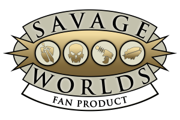
El Caribe de los Mitos
Bienvenidos al Caribe de 1722
Estás en 1722 en el Caribe. La conocida como Edad de Oro de la piratería está acabando. Los grandes piratas han
muerto o se han retirado y los grandes tesoros se han enterrado para que los busquen durante generaciones. Las
potencias europeas han "civilizado y apaciguado" el Caribe y expolian sus recursos. El azúcar, el tabaco y el café
fluyen desde las plantaciones de las grandes islas del Caribe, llenado las arcas de los gobiernos europeos,
mientras
las gentes del Caribe sobrevive como puede.
Mientras, entre las sombras, una antigua y diabólica sociedad secreta lleva décadas moviendo los hilos de la
política y la
economía para conseguir su objetivo: El surgimiento de entre las aguas de R'lyeh, la ciudad sumergida donde yace
el
gran Cthulhu.
Esta sociedad, autodenominada como la Orden del Gran Cthulhu, y su brazo público y legal, la Real Compañía
Privilegiada del Caribe (RCPC), no tiene ningún tipo de escrúpulo en asesinar, torturar, robar, chantajear e
incluso
hacer pactos con demoníacas entidades extraplanares para lograr sus objetivos. Gracias a sus casi infinitos
recursos
económicos, los conocimientos mágicos de sus adeptos y la tecnología conseguida de razas extraterrestres
han conseguido imponerse en todo el Caribe, haciendo caer ciudades, destruyendo armadas enemigas sin plantar
batalla y poniendo a sus títeres en los principales puestos políticos de los diferentes gobiernos del Caribe.
Solo el anárquico mundo de la piratería ha logrado evadir sus tentáculos y es por ello que son los únicos que
han empezado a ver lo que realmente está pasando en el Caribe y empiezan a vislumbrar que busca el Culto.
Unas pocas personas, casi todas piratas o con pasado pirata, conocen el terrible secreto que se esconde detrás
de la Orden del Gran Cthulhu. Estos valientes han creado la Hermandad del Sargazo que busca desbaratar los
planes del culto y hacer que paguen por sus múltiples crímenes.
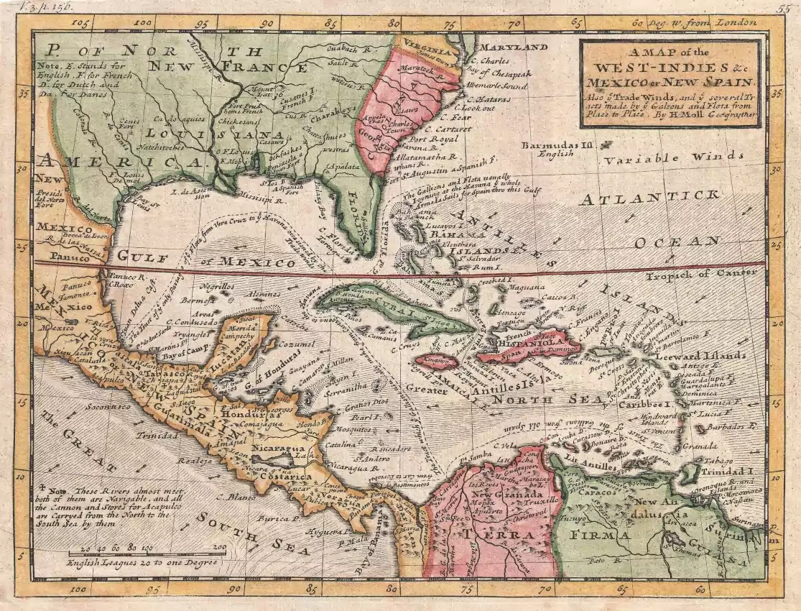
La Orden del Gran Cthulhu
La Orden del Gran Cthulhu es tan vieja como la propia civilización humana, siempre escondida en las sombras
con planes para liberar a su señor. La Orden ha tenido sus momentos de gracia o, como en el siglo XVII,
ha sufrido grandes crisis, de las cuales siempre se ha levantado más fuerte, como en la actualidad.
Se cree que el culto nació en algún lugar del interior de la India durante del periodo Védico (entre el 3000 y el 2000 a.C).
Un gurú sensible a las ondas mentales de Cthulhu empezó a tener visiones del que sería su señor. Esas visiones
las convirtió en enseñanzas que ofreció a sus estudiantes.
La extraña disciplina se fue extendiendo durante décadas, calando en los que como el gurú eran más sensibles y
los parias expulsados de la sociedad, creando un culto de adoradores de Cthulhu. Para sus primeros ídolos
representando a Cthulhu usaron versiones distorsionadas de Ganesha (el dios con cabeza de elefante) representándolo
con alas de águila y con múltiples trompas de elefante simulando su cabeza de octópodo.
El comercio hizo que la secta extendiera a Europa durante la época de la Roma Imperial. El culto se extendió
rápidamente por el Mediterráneo, ya que sus adeptos eran apoyados por tribus profundas que les ayudaban a prosperar
con oro y otros materiales valiosos del fondo del mar.
Durante siglos la Orden fue expandiéndose poco a poco, según los europeos extendían su poder por todo el globo.
Con cada nuevo territorio el mundo era más grande y se hacía más complicado para la secta encontrar la ciudad
sumergida de su señor.
A su vez fue institucionalizándose, creando conclaves, jerarquías, mandamientos, ceremonias y rituales y fue consiguiendo
más y más poder, pero siempre en las sombras.
La familia Villalba
La familia Villalba tiene una larga tradición como adoradores de Cthulhu. Lo han sido desde que en
1323 un antepasado de Hernando, que era pescador de Peñíscola, recibiera de un líder profundo
una gran pepita de oro. A esa pepita le siguieron otras. Rápidamente, la familia se emparentó
con los profundos y empezó a adorar al gran Cthulhu.
Con los años la familia prosperó económica y socialmente
hasta obtener de los reyes de Aragón un título nobiliario. En un par de generaciones las creencias de la numerosa
familia y sus siervos llamaron la atención de la Orden del Gran Cthulhu que los incluyo como un poderoso recurso en el
Mediterráneo Occidental.
Pronto el cabeza de la familia Villalba paso a tener un puesto en el círculo interior de la Orden y
durante 300 años los Villalba aumentaron su poder tratando con entidades de los Mitos y decidieron
el destino de Europa y sus territorios colonizados.
Los Villalba hicieron y deshicieron a su gusto con la ayuda del dinero y la magia que les proporcionaba
de la Orden, hasta que en 1629 fueron apresados, juzgados y ejecutados por la Santa Inquisición Romana.
Se les acuso de brujería, mezclar su sangre con demonios y rezar a dioses paganos. Los Villalba
intentaron pedir ayuda a la Orden, pero esta prefiero amputar el miembro encangrenado para evitar problemas.
A pesar de esto, muchos de los socios de la Orden cayeron poco a poco como fichas de dominó y la Orden casi desaparece.
Hernando de Villalba
Solo sobrevivió un adolescente Hernando de Villalba que huyo a la costa sur de Cuba para ponerse fuera del alcance
de la Inquisición. En su huida logro poner a salvo varios libros y reliquias prohibidas de su familia.
Con el poco dinero que se pudo llevar montó una pequeña explotación pesquera siguiendo
la tradición de la familia. Y como era tradición familiar, un líder profundo de la tribu N'gha syha'h
terminó acercándosele seguramente por la sangre profunda que corre por sus venas.
Primero lleno sus redes de peces haciéndole ganar mucho dinero y poco a poco ofreciendo resto de
tesoros hundidos o metales preciosos. En unos 10 años el poder de un Hernando ya adulto fue creciendo
tanto económicamente como en poder mágico. Llegado el momento volvió a primero a España y luego por
toda Europa reuniendo a los asociados de la Orden desperdigados. Se consagró como sumo sacerdote de
la nueva Orden y les ofreció un nuevo credo basado en que R'lyeh estaba sepultado bajo las aguas del
Caribe y que cuando su señor se despierte les otorgará la inmortalidad, parte de su poder y la
Tierra como su reino.
Muchos se unieron a él. A algunos les ordeno quedarse en Europa como espías y otros volvieron al Caribe.
La empresa de pesca empezó a expandirse por todas las islas controladas por el Reino de España
y a tener delegaciones comerciales en las islas controladas por las otras potencias europeas. Y con ella,
los sectarios de la Orden se fueron expandiendo por todo el Caribe como directores de casas comerciales,
capitanes de barco, incluso políticos y militares. Así es como la Orden fue extendiendo sus tentáculos.
En 1689 se funda la Compañía de Comercio del Caribe. La pequeña empresa pesquera ahora era una potencia
comercial que manejaba más del 30% del comercio del Caribe. En pocos años con la aprobación del rey de España
se convierte en la Real Compañía Privilegiada del Caribe, con Hernando como la persona más rica y poderosa
del Caribe.
Desde hace unos 15 años, Hernando se ha retirado de la vida pública y de la empresarial. Solo se dedica desde su
mansión a las afueras de La Habana a dirigir la Orden y a llevar a cabo sus planes para levantar R'lyeh de las aguas y
despertar a Cthulhu.
La Real Compañía privilegiada del Caribe
La Real Compañía Privilegiada del Caribe (RCPC) tiene, como bien dice su nombre, privilegios en todos los territorios
del Caribe controlados por España. Esta empresa tiene el control de todo el comercio
entre España y el Caribe español. Nada entra o sale del Caribe sin pasar por sus barcos tras
haber pagado diferentes impuestos y tasas.
Debido al apoyo del gobierno de España y a que controla la mayoría del comercio del Caribe
tiene gran poder en la zona pudiéndose considerar que el director de cada casa comercial que
hay en cada isla del Caribe es casi más poderoso que los propios gobernadores de las islas.
Es tanto su poder que tiene su propia armada de barcos, su propio ejército y sus propias instalaciones
militares y si eso no fuera poco con el apoyo y la protección de la Armada Española.
La verdad detrás de la RCPC
Bajo una capa de legalidad y otra de prosperidad económica se esconde la auténtica realidad de la RCPC,
la secta de la Orden del Gran Cthulhu. Toda la cúpula de la compañía son cultistas de la Orden de gran poder. Según
se bajan escalafones de la RCPC dejan de ser sectarios para ser adeptos al culto y en lo más bajo son simples
trabajadores alineados que hacen su trabajo sin tratar de ver si sus actos y los actos de sus superiores son
buenos o malos.
La RCPC se encarga de proporcionar dinero y poder político a la Orden. Pero también le suministra tecnología, por ejemplo,
hay varios departamentos de la RCPC desarrollando ingenios para encontrar la hundida ciudad de R'lyeh. Otra de sus tareas
más importante es preparar el terreno para todas las actividades de la Orden. No será la primera vez que la RCPC tiene
que sobornar a agentes de ley o compra un islote y desaloja a sus habitantes para montar punto de invocación en él.
La RCPC también se encarga de conseguir gente para la secta, los de "recursos humanos" buscan a las personas perfectas
de dentro y fuera de la organización y los seducen con sus cantos de sirenas. Les ofrecen dinero, poder o cumplen
sus deseos más perversos, lo que sea con tal de acercarlos a la Orden.
El trabajo más costoso de todos es la ocultación de las actividades y el silenciamiento de testigos. La RCPC se encarga
de deshacerse de cadáveres de humanos y de no humanos, de intimidar a familiares que hacen muchas preguntas, de limpiar los
destrozos de seres descontrolados y de explosiones desafortunadas o, por último, de sobornar a jueces que podrían desvelar
los asuntos de la Orden.
En resumen, la RCPC es una gran máquina de hacer dinero y controlar a la gente para que la Orden pueda hacer
lo que tenga que hacer para despertar a Cthulhu y este le otorgue a Villalba la inmortalidad que tanto anhela.
La tentáculos de la RCPC
La RCPC tiene cuatro ramas o más correctamente 4 tentáculos que se extienden por todo el Caribe. Cada una tiene
unos recursos y unos métodos propios, pero un único objetivo, la supremacía en la sombra de la Orden en todo el Caribe
y la consecución de sus objetivos.
No todos los tentáculos tienen el mismo poder, según las zonas puede tener uno u otro más importancia o
menos o incluso no existir.
El tentáculo comercial
El tentáculo comercial es la base sobre la que se asienta toda la RCPC. Su principal misión es
generar los recursos necesarios para el resto de actividades de la RCPC y de la Orden. Sin su trabajo,
todo el resto de la organización sería imposible.
La rama comercial es la cara más visible de la organización, son sus barcos, sus almacenes, sus
oficinas, sus jefes de sucursal y sus miles de empleados. Sin embargo, es la que menos conexión tiene la Orden.
La mayoría de sus empleados son trabajadores que realmente no saben para quién trabajan realmente. Solo los
altos directivos de la rama saben de la Orden y sus planes.
Sus ingresos vienen principalmente de que son intermediarios en casi todas las transacciones comerciales
del Caribe español. Cualquier producto del Caribe que llega a España seguramente ha sido guardado en los
almacenes de la RCPC o transportado por un barco de carga de la RCPC.
Como compañía privilegiada, Además, puede imponer un canon en los puertos que controla a los productos
que no usan sus servicios. Es por ello que el contrabando de productos caros como el ron se ha
convertido en algo común en el Caribe.
El contrabando y los ataques de piratas a sus barcos es lo que permitió a la RCPC solicitar y conseguir
de la corona de España poder tener su propia de flota de barcos de combate. Esta flota esta compuesta de buques de
guerra que protegen sus convoyes y sus puertos y de barcos guardacostas que controlan el contrabando.
A pesar de que la rama comercial genera cantidades ingentes de dinero, nunca hay suficiente para llevar a
cabo los locos planes de Hernando Villalba y ha tenido muchas veces que empezar a trabajar en operaciones ilegales.
El tentáculo científico y mágico
El tentáculo científico mágico es el tercero en tamaño, pero todas las demás se nutren de él y sus
descubrimientos. La rama militar usa muchos de sus desarrollos para combatir a los enemigos de la RCPC
y la propia Orden les hace pedidos exclusivos para ellos. Empezó como una forma de aumentar los beneficios
de la empresa, mejorando sus productos y sus métodos de fabricación, y terminó siendo lo que es hoy, un
grupo de científicos locos y fanáticos que no tienen ningún escrúpulo en hacer realidad los deseos
de la Orden.
La mayoría de las actividades de esta rama relacionadas con la magia o los Mitos suelen hacerse en pequeños
laboratorios secretos que no llamen mucho la atención o estén alejados de los centros urbanos. Su
principal problema es que muchas veces no tienen ningún tipo de cuidado con sus proyectos y esto
suele afectar a su entorno y a los que viven cerca.
Puede que se escapen algunos de sus experimentos biológicos o que extrañas energías extradimensionales
corrompan la flora y la fauna cercana. Los experimentos más científicos y seguros suelen dejarlos en
sitios como el castillo del Morro o el Real Astillero de La Habana, donde se diseñan, crean e
instalan las modificaciones monstruosas a los barcos.
Uno de los mayores activos de la rama científica es Onofre de las Torres, que ha desarrollado varios
ingenios muy útiles para la RCPC. Lo tienen controlado y protegido sin que él lo sepa para no perturbarlo
en su trabajo y en su día a día.
El tentáculo militar y de espionaje
La RCPC es una potencia militar en si misma, tan importante como el reino de España o Gran Bretaña. Tiene
una gran cantidad de combatientes, armas y barcos. Su crecimiento ha sido muy sutil y si las potencias
europeas hicieran cuentas de su tamaño actual se asustarían. Empezó siendo pequeños grupos de guardias
para proteger almacenes y barcos de escolta para los convoyes comerciales. Cuando consiguió el control de
todo el comercio del Caribe español, pidió permiso para tener más medios (personas y barcos) para controlar
la piratería y el contrabando. Estableció oficinas y cuarteles en los grandes puertos y barcos que patrullaban
los puertos menores.
Su gran avance fue cuando consiguió el control del Castillo del Morro en la entrada del puerto de
La Habana. Esto les daba el control del puerto más importante del Caribe y una fortificación casi
inexpugnable en la que proteger los elementos más importantes de la Orden.
El tentáculo militar se encarga de las tareas de defensa de instalaciones, barcos y personas importantes de
la RCPC. Muy pocas veces se lanza al ataque contra alguna persona o grupo, aunque ha habido algunos casos
como matanzas de taínos o colonos para quedarse con sus tierras.
La mayoría de las personas que integran esta rama son simples asalariados o mercenarios que cumplen con
su trabajo y obedecen órdenes. Solo los cargos superiores, capitanes de barcos y de la guardia, son parte
de la Orden. Hay un par de unidades completamente integradas con fanáticos de la Orden que se usan para
esas tareas de ataque y exterminio. También se encargan de la protección de las instalaciones más
importantes de la Orden y los sectarios de más alto rango. De hecho, los más diestros y fanáticos
de este tentáculo están como guardias de la Mansión Villalba y del castillo del Morro.
A la cabeza de esas unidades fanáticas está Edward Teach y la tripulación de su barco, el Desgracia,
que se encarga de los más sucios y horribles trabajos.
Una pequeña sección se encarga del espionaje y si fuera necesario asesinato. LA RCPC tiene una red de
espías y asesinos que se encarga de tener controlado a la competencia.
El tentáculo propagandístico
El tentáculo propagandístico se encarga de controlar la opinión pública para que las verdaderas actividades de la RCPC
y la Orden no salgan a la luz. También trabaja hundiendo la reputación de los enemigos de la Orden y prepara el terreno
a futuras sublevaciones y linchamientos, calentando los ánimos de la gente.
Son relativamente pocos, habiendo 3 o 4 en cada ciudad y llegando a 10 o 12 en grandes ciudades como La Habana.
Suelen ser personas con don de gente y a diferencia de otros tentáculos, no suelen pertenecer a la RCPC, para
mantener sus tapaderas. Tienen profesiones y oficios ficticios y cobran bajo cuerda.
Otra diferencia con otras ramas es que todas las personas que lo integran son integrantes de la Orden de más o
menos nivel que conocen y acepta su credo. También son mucho más fanáticos y seguramente morirían por la causa
o se suicidarían antes de dejarse atrapar.
Un importante recurso que han estado usando los últimos años es Edward Teach. La simple mención de su nombre
llena de terror el corazón y ver su bandera es casi una sentencia de muerte. Aunque este infame pirata forma
parte de la rama militar, ha sido usado por esta rama de muchas maneras, por ejemplo, para asustar a
campesinos y hacerlos huir de sus casas, cuando necesitaban hacer trabajos sin testigos.
De hecho, la fama y la imagen de Barbanegra ha sido trabajada desde que se "unió" a la Orden para infundir miedo
y justificar muchas de sus actividades. Muchos de los ataques menores de Teach son en realidad falsa propaganda
para aumentar la mala fama del pirata.
Actualmente, están centrando sus recursos en dos puntos del Caribe; las islas del Caribe danés, donde preparan una revolución
de esclavos por si fuera necesario. El otro punto es la costa frente Tortuga, llenándola de granjeros muy religiosos.
Tienen a predicadores difundiendo entre sus feligreses que esa zona es rica y fértil y que es labor de un buen católico
el cristianizar a sus indígenas y combatir a los piratas demoníacos de Tortuga. La idea es hacer que los piratas de
Tortuga disfruten cada vez de las ventajas de la civilización y el capitalismo, primero saqueando cerca de casa y
luego comerciando y que abandonen poco a poco las costumbres piratas.
Organigrama de la empresa
La RCPC sigue la estructura piramidal de la secta que la creo. Eso supone que, salvo escasas excepciones, las
personas más arriba en el culto están más arriba en la compañía. También hay que tener en cuenta que no toda la
gente que trabaja en la RCPC es un cultista, muchos trabajadores de bajo nivel son simplemente eso, trabajadores mal
pagados y casi esclavizados.
En la cima de la compañía y de la secta está indiscutiblemente Hernando de Villalba. Sus decisiones no son
discutidas, solo ejecutadas. Por suerte, para la RCPC y desgracia de resto del Caribe, Villalba ha aprendido a
delegar de forma eficiente en sus subalternos que llevan a cabo sus órdenes de forma eficaz y precisa con normalmente
excelentes resultados. Aun así, Villalba no acepta muy bien el fallo o el fracaso y es muy dado a segar de raíz
a los individuos que le fallan.
Por debajo de Villalba están los 8 directores de oficina. Cada gran ciudad de Cuba, Santo Domingo y
Puerto Rico tiene una oficina de la RCPC que gestiona la actividad de la RCPC y de la Orden en la zona
de influencia de cada ciudad. Son poderosos cultistas que tienen bajo su mando sectarios menores que
ejecutan sus órdenes. Son discípulos de Villalba, del que han aprendido a usar la fuerza primaria de
la magia y tienen grandes conocimientos del mundo de los Mitos.
Bajando un escalafón tenemos capitanes de navíos y a jefes de fábricas. No todos los adeptos de la secta, sólo
los relacionados con las secciones más oscuras de la RCPC, es decir, el capitán de un barco carguero o el jefe
de una fábrica de secado de tabaco, no son parte de la secta, pero el investigador jefe de un laboratorio o
el capitán de un barco de guerra de la RCPC si están dentro de la Orden. En general están bien pagados y viven
cómodamente. Sus conocimientos mágicos no son muchos, pero lo suplen con conocimientos de los Mitos y buenas
habilidades.
El anteúltimo escalón son los ejecutores especializados, espías de la rama militar, gente entrenada en venenos
y asesinato o científicos locos. Pueden formar parte de la cadena de mando o ser agentes solitarios de los que
el resto de la secta no tienen ni idea.
En la base de la pirámide tenemos a los cultistas de más bajo nivel y los híbridos de profundos. Son la mano
de obra que hace todo el trabajo sucio y la carne de cañón que se encarga de defender los intereses de la orden.
Normalmente, son fanáticos que no tienen mucha idea de porque luchan, pero lo hacen sin cuestionárselo.
Edward Teach alias Barbanegra
Barbanegra quizás es el más conocido pirata de la historia. Es el estereotipo clásico de pirata. Sanguinario,
pendenciero, atrevido, amoral y carismático. Es una de esas leyendas que ha llenado las historias de marinos
desde hace más de 3 siglos.
Poco se sabe de la vida de Edward Teach antes de convertirse en un famoso pirata. Se cree que nació en
Bristol hacia 1680 y se enroló como corsario inglés en la Guerra de la Reina Ana, escenario
norteamericano de la Guerra de sucesión española. De ahí viene el nombre de su famoso barco.
Cuando la guerra acabó, estuvo bajo el mando del pirata Benjamin Hornigold en Nueva Providencia. Por esas fechas
Nueva Providencia era una República Pirata, donde los piratas tenían un refugio y se autogobernaban. En
noviembre de 1717 apresó un gran buque francés, el cual renombró como La Venganza de la Reina Ana.
Fue creando una flotilla con diferentes alianzas con piratas como Stede Bonnet. En 1718 intentó hacerse
respetable pidiendo un indulto al gobernador de Carolina del Norte. En realidad seguía con sus actividades
piratas y daba una mordida al gobernador de los botines que conseguía. En esta época dio su mayor golpe, el
asedio de Charleston en Carolina del Sur.
Las cosas no le fueron del todo bien intentando ser "legal". Traicionó y engañó a sus aliados, abandono el Venganza
y terminó volviendo a la piratería estableciéndose en Nueva Providencia con 4 barcos y unos 400 hombres. En Nueva
Providencia siguió con sus costumbres disolutas y con su vida pirata, atacando barcos con el Aventura en la costa
este de Norteamérica y las Bermudas.
La caída de Barbanegra
En noviembre de 1718 una flota cazapiratas capitaneada por Robert Maynard y pagada por el gobernador de Virginia
zarpo para cazar a Teach que lo encontró en la ensenada de Ocracoke, Carolina del Norte. Empezó una lucha
encarnizada de varios días hasta que Maynard consiguió hacer encallar al Aventura.
La historia cuenta que Barbanegra y su gente consiguieron acabar con toda las fuerzas de Maynard, que tenían una ventaja
de 3 a 1. Tras masacrarlos y rematar a los heridos, el barco desencalló y continuó su viaje.
Lo que realmente paso, es totalmente distinto. Mientras Maynard y Barbanegra se preparaban para la lucha final, un barco
de velas negras y el casco de extraña forma se acercó por detrás a la flotilla de Maynard y empezó a dispararles con una
especie de rayos eléctricos. Mientras, de las aguas, surgieron cientos de profundos que subieron a los barcos de Maynard
y masacraron a sus tripulaciones.
El navío negro se acercó al Aventura y un viejo caballero español paso al barco de Barbanegra para ofrecerle un trato.
Era Hernando Villalba en persona, después de varios años encerrado en su casa, ofreciéndole un trato: Saldría vivo de allí
si le servía fielmente o sus hombres y sus monstruos acabarían con todos ellos. Firmaron un acuerdo por el cual debía
servirle 10 años y obedecer todas sus órdenes, a cambio le daría el barco negro, recursos ilimitados y grandes riquezas
para retirarse cuando pasaran los 10 años.
En inferioridad, Barbanegra tuvo que aceptar el trato. Para asegurarse de que cumpliría el pacto, Villalba le arrebató el
corazón y se lo guardó, advertiéndole de que, si le desobedecía, podría matarlo cuando quisiera por muy lejos que estuviera.
Villalba le entregó su barco, al que Barbanegra bautizó como Desgracia, y reemplazo sus bajas con sus propios marineros,
casi todos híbridos o fanáticos cultistas.
Barbanegra hoy en día
Barbanegra lleva 4 años como sirviente de Villalba, cumpliendo sus órdenes a rajatabla y siendo su perro faldero. El hombre
que enarboló la bandera de la libertad haciendo lo que quería en el Caribe, ahora se ha visto rebajado a obedecer las órdenes
de una persona a la que odia a muerte.
Su principal directriz es cazar a Mary Read algo en lo que no ha tenido mucho éxito y entre medias ha atacado todos los
objetivos que la Orden le ha marcado. Sin embargo, todo esto no llena el corazón de Teach que por más dinero que atesora
sigue sintiéndose desdichado.
Lleva todos estos 4 años buscando la forma de romper el pacto con Villalba y recuperar su corazón, pero no ha conseguido
nada, solo ha perdido tiempo que no tiene y dinero que por suerte si dispone. Está tan desesperado que escuchará a
cualquiera que le ofrezca un buen plan para librarse de su trato.
El plan final
A día de hoy el objetivo de la Orden es, como ya hemos dicho antes, despertar a su venerado dios y que este otorgue poder
e inmortalidad a sus adeptos, especialmente a Hernando Villalba, máximo su líder. Villalba y su gente están convencidos de que
R'lyeh está hundido en el Caribe y que sacando la ciudad de entre las aguas es lo que hará despertar a señor primigenio.
El principal problema al que se enfrenta es que no tiene ni una mínima pista de donde está hundida la ciudad sumergida,
al que denominan internamente su tesoro hundido. Villalba lleva años consultando tomos proscritos en busca de pistas y
haciendo que los profundos busquen la ciudad en los fondos oceánicos y no ha tenido ni el mínimo éxito. Se hace mayor
y su tiempo se acaba poco a poco.
Pero ahí no acaban sus problemas, una vez descubierta esta Atlántida primigenia, debe buscar la forma de sacarla de las aguas.
Está investigando todo tipo de rituales y hechizos, incluso tecnología extraterrestre, pero nada le da una solución.
La desesperación le está devorando y cada día es más arriesgado y salvaje en sus actos y has de saber que la locura y
la desesperación llevan a consumar terribles e ignominiosos actos que van contra natura.
La Hermandad del Sargazo
Si existe un Orden del Gran Cthulhu, tiene que existir su opuesto y esa es la Hermandad del Sargazo. Este pequeño grupo
de personas de lo más dispares es la piedra en el zapato de la Orden. Su misión es destruir a la Orden frustrando sus
planes y sacando a la luz todos sus deleznables actos.
Si bien les queda mucho camino que recorrer, ya han tenido algunas victorias y tienen gente infiltrada en los altos
estamentos de su enemigo. Los recursos económicos y personales de los que adolecen los compensan con ingenio, pasión
y una gran camaradería, ya que la hermandad nunca deja atrás a nadie.
Antecedentes
La hermandad del Sargazo tiene su origen en una organización anterior, la Cofradía de los Hermanos de la
Costa. Esta asociación de capitanes rigió las vidas de muchos piratas del Atlántico, el Caribe y del golfo de México
desde 1620 hasta el 1700, en que estaba casi disuelta. Su sede estaba en la Isla de la Tortuga y desde
ella lanzaban principalmente ataques a los intereses españoles.
Era una especie de sindicato de capitanes piratas en el que sus socios decidían y votaban como serían sus
empresas y aventuras. Tenían su propio tribunal de ancianos piratas para juzgar los crímenes más importantes.
Durante muchos años fue una fuerza muy poderosa en el Caribe, pero a medida que sus creadores y principales
valedores fueron desapareciendo, muriendo o jubilándose, la asociación fue perdiendo fuerza hasta 1700, en que
prácticamente no existía.
La creación de la hermandad
Si bien la Cofradía había desaparecido, personas que formaron parte de ella y que habían creado fuertes
lazos de amistad siguieron en contacto. Se contaban sus historias y sus desgracias y empezaron a ver que
algo estaba cambiando en el Caribe y siempre para mal. Detrás de esos cambios siempre estaba la RCPC y
donde aparecía la RCPC siempre pasaban cosas extrañas y terribles.
Empezaron a circular entre ellos historias de demonios acuáticos, de terribles tormentas que aparecían
de la nada, de muertes misteriosas y de un extraño culto que manejaba desde las sombras a la RCPC. Poco a
poco vieron como la RCPC se convertía en su mayor enemigo y en el principal causante de los males que
asolaban a los habitantes de las islas del Caribe.
En 1708, en la playa de las 7 millas de la isla de Gran Caimán, se reunieron 10 capitanes, antiguos
y nuevos asociados de la Cofradía, junto a sus tripulaciones y crearon la Hermandad del Sargazo. El
principal objetivo sería destruir a la RCPC y la Orden del Gran Cthulhu y frustrar sus apocalípticos
planes.
Hasta el día de hoy
Hasta la creación de la Hermandad, la Orden no tenía un enemigo directo que fuera contra sus intereses
más importantes. Las potencias europeas buscaban acabar con los negocios de la RCPC para quedarse con
sus recursos y sus barcos eran buenos objetivos para los piratas. Pero con la aparición de la Hermandad,
había una entidad que buscaba frustrar los planes principales de la Orden.
Los primeros golpes fueron bastante importantes porque pillaron a la Orden sin preparar, pero enseguida
puso a sus espías a investigar y descubrió al nuevo jugador en la mesa de las Antillas que le había ganado
las primeras manos.
La RCPC declaró abiertamente la guerra a la piratería y reforzó su rama militar, dedicándose a cazar pirata
"donde moren y críen". Poco a poco fue capturando a miembros de la Hermandad, gastando auténticos dinerales en
armar sus barcos y en recompensas. De hecho, un par de capitanes fueron vendidos por su tripulación.
La RCPC tiene órdenes de no capturar prisioneros cuando se enfrenta a piratas. Aunque
los informes y las declaraciones a las autoridades diga lo contrario, pasa a todos los tripulantes por la quilla
y hunde el barco.
Su mayor éxito fue acabar con la pareja de piratas de Bonny/Rackham, pero a la vez es su mayor fracaso,
ya que puso al frente de la casi extinta Hermandad a Mary Read que ha jurado mantenerla viva como sea y acabar
con la Orden. Por ahora su principal misión está siendo en conseguir nuevos miembros y gracias a sus talentos
pueden que encuentre a la gente que necesita para llevar su misión a buen puerto.
Miembros de la hermandad
La Hermandad nunca ha sido muy numerosa, ya en su creación solo había 10 miembros de pleno derecho y
hoy solo quedan 5. El resto han sido cazados por la RCPC o las potencias extranjeras.
Además, la Hermandad es muy cuidadosa con los nuevos miembros, Mary Read se dedica a buscar a nuevos integrantes,
pero cada vez es más difícil encontrarlos.
Mary Read. Actual líder de la Hermandad.
Antoine Delapore: Editor en jefe y propietario de la Verdad de La Habana.
Cesar: Cesar está infiltrado como el lugarteniente de Barbanegra. Oficialmente,
no es un miembro debido a que debe mantener su tapadera, pero, extraoficialmente, para Mary Read es
un hermano de pleno derecho.
Fray Tomás Linares del Castillo: Fray Tomas es el rector de la Universidad de La Habana. Antes de
tomar los hábitos fue un noble menor español que emigró a las Indias Occidentales en busca de fortuna. La
vida lo llevo a acabar de corsario para la corona de España. Fue uno de los 10 capitanes piratas que creo
la Hermandad. En mitad de un huracán tuvo una visión y tomo los hábitos, pero no abandono la Hermandad y
mantiene su promesa. Es el principal contacto de la Hermandad con el estamento intelectual y educativo.
Quien tú quieras: Puede hacer hermano o hermana a quien tú quieras. No tienen ni que ser buenas personas,
solo odiar a la RCPC o tener deudas pendientes con la Orden. También puedes ordenar a quien quieras durante
tus sesiones.
Como ya hablaremos más adelante, la Hermandad tiene una red pisos francos y cada piso está cuidado por una persona
miembro de la Hermandad. Aunque se les puede pedir favores como a cualquiera de la Hermandad, se considera que con cuidar
el piso franco cumplen con sus obligaciones.
Derechos y ventajas
Ser de la Hermandad es una obligación más que un privilegio, pero para llevar a cabo las órdenes de la Orden
ofrece una serie de ventajas.
Derecho de ayuda
Esto es muy simple, cualquier persona que esté en la Hermandad tiene derecho a pedir ayuda a otros integrantes
y estos deben hacer lo que sea para ayudarle, incluso pudiendo perder su vida. Aunque no pueda pedir ayuda,
se presupone que se debe dársela.
Solo una cosa evitará que la Hermandad te preste ayuda y es que suponga un impedimento grave en su actividad
contra la RCPC y la Orden. Si tienen que evitar que la Hermandad abra un agujero al centro del universo donde
Azathoth se encuentra o librarte del cadalso, ten por seguro que pasas a un segundo plano.
No prestar ayuda supone la expulsión de la Hermandad, aunque esto nunca se ha dado, ya que los que ingresan
en ella lo hacen porque creen en la causa de la Hermandad.
Si eres apresado deberán hacer lo que sea para liberarte. Si tienes deudas deberán ayudar a saldarlas.
Y así con todo. Pero siempre puedes renunciar a la ayuda.
Red de pisos francos
Ser de la hermandad te permite hacer uso de una red de pisos francos. En toda ciudad de más de 2.000 habitantes,
la Hermandad tiene un piso secreto donde puedes esconderte. Por toda la ciudad hay una serie de señales
secretas que indican su ubicación. Son desde carteles con fallos ortográficos a pintadas con tizas o muescas en las puertas.
Así que con una tirada de Notar mientras te mueves por sus calles puedes llegar al piso franco.
Cada piso franco tiene una persona encargada de velar por su seguridad. Diciéndole la contraseña correcta te dará acceso
al piso y se encargará de proporcionarte lo que necesites durante tu estancia, que no deberá superar las dos noches. Si
tienes heridos graves podrás quedarte hasta que se curen.
El portero puede conseguirte sin problemas comida, medicinas, incluso armas. Para productos especiales como productos químicos
o para servicios profesionales como un médico deberás darle tiempo y dinero. Lo que tienes que tener en cuenta es que lo que te
consiga será de total confianza. Si trae un galeno será discreto y totalmente profesional.
Las instalaciones del piso suelen venir marcadas por la riqueza de la ciudad. Siendo en las más pobres, simples
cuchitriles y en las ricas, pisos grandes y cómodos, pero lo que siempre tienen todos es una salida secundaría por
la que huir en caso de problemas.
La tradición dicta que puedes coger todo lo que necesites del piso franco, pero es costumbre dejar a cambio objetos útiles
que no vayas a usar. Si te llevas munición igual puedes dejar unos textos de los Mitos.
También puedes usarlos como almacén mientras estés por la ciudad, Siempre que no ocupes mucho espacio y avisando a la persona encargada
de que vas a usarlo para dejar a buen recaudo cosas tuyas.
Contactos y favores
La hermandad ha salvado a mucha gente y ha hecho muchos favores a muchas personas y como miembro de
la hermandad pueden cobrarte esos favores. Si necesitas algún servicio profesional de carpintería,
herrería, etc. seguro que alguien de esos gremios deber un favor a la Hermandad. Puedes cobrarte el
favor y pedir cosas que no impliquen saltarse la ley. Solamente a los que se les salvó la vida se les podrá
pedir favores mayores e ilegales.
Bandas de pillastres
En todas las ciudades, Mary Read ayuda a las bandas de pillastres de las calles, dándoles dinero y
comida, incluso consiguiéndoles trabajos de aprendiz en los talleres locales. Estos se lo agradecen
siendo sus ojos y oídos en las calles. Podrán contarte los rumores de las calles y podrán hacerte
pequeños trabajos de seguimiento, vigilancia y recados que no sean mortales. Con conocer el nombre
del jefe de la banda podrán usar sus servicios, pero deberían pagarles con dinero, comida o dulces.
Deberes y obligaciones
Las obligaciones para con la Hermandad son pocas, pero muy exigentes. La primera es muy sencilla, combatir
la Orden del Gran Cthulhu y frustrar todos sus planes. Esto se extiende muchas veces a toda serie de intrigas
de razas como yuggothianos o serpigente.
La otra obligación es el Deber de ayuda. Debes prestar ayuda a otros integrantes de la Hermandad siguiendo
las directrices del Derecho de Ayuda.
Por último, en la medida de lo posible se debe ayudar a mantener la red de pisos francos y a conseguir
gente que pueda ayudar a la Hermandad.
Mary Read
Mary Read nació alrededor de 1690 en Londres, Inglaterra. Su madre estaba casada con un
marinero, con quien tuvo un hijo. Su padre murió en alta mar y su madre recibía una ayuda de su abuela
paterna
para cuidar a su nieto. Ella nació fruto de una aventura amorosa posterior. Cuando su hermanastro
murió,
su madre, para seguir cobrando la ayuda de la abuela paterna, la hizo vestir de chico y la llamaba
Mark.
Se alistó en un barco como marinero que abandonó al poco tiempo dicho barco para alistarse en el
ejército inglés,
destacando en la batalla por sus habilidades en combate y su coraje. Tras esta etapa como soldado,
volvió a enrolarse en un barco.
Su vida pirata empezó cuando el barco en el que viajaba Mary fue atacado y capturado por el pirata
Jack Rackham
y su compañera sentimental y de correrías, la pirata Anne Bonny. Mary fue reclutada por los
piratas pensando que era un hombre y vestido como tal. Anne Bonny descubrió su identidad real, se
hicieron amigas
y trataron de mantener el secreto. Rackham, celoso de la relación de su pareja con el nuevo marinero,
estuvo a punto de matarlo
y Mary confesó que era una mujer. Rackham la dejó quedarse y ser parte de la tripulación. Mary Read
ascendió rápidamente
por su coraje y habilidad en las filas de Rackham/Bony. Fue en este tiempo cuando la instruyeron en
los secretos de la
Hermandad del sargazo y Bonny y Rackham la ordenaron como hermana de pleno derecho.
Durante varios años la formaron en los secretos de la Hermandad y los conocimientos de los Mitos y
la entrenaron en lucha con espada y el combate naval. Ella por su cuenta trato de cultivarse en historia,
literatura, etc. De hecho, esto le llevo a escribir para la VLH.
En 1722 la Orden del Gran Cthulhu consiguió que el gobernador de Jamaica contratara a John Barnet, un caza
piratas famoso, para
que atrapara a Rackham/Bonny. Cosa que consiguió en Nigril en la punta oeste de Jamaica mientras
estaban borrachos como cubas.
Mary Read consiguió escapar con algunos tripulantes y robo un navío de combate en el puerto de
Kingston, lanzándose en solitario
a la piratería hasta el día de hoy.
Tras la muerte de Anne Bonny y Jack Rackham, que lideraron la Hermandad hasta su muerte, Mary Read ocupó su
lugar y se le convirtió en la persona más buscada del Caribe. La RCPC ha puesto precio a su cabeza de
manera no oficial. Los mercenarios y asesinos a sueldo de todas las Antillas saben que la RCPC paga
una fortuna por su cabeza.
El don de Casandra
Algunos descendientes de la familia materna de Mary Read tienen el poder de ver el futuro. No es algo
que controle, son flashes que vienen de vez en cuando. Se activan, por ejemplo, tocando algo o alguien,
pero a veces las visiones saltan solas.
Las primeras veces contaba lo que veía, pero después de decirle a su capitán en el ejército
como iba a morir y cumplirse empezó a guardarse sus visiones. El resto de su compañía empezó a
evitarla y a no hablarla por una mezcla de miedo a la brujería o que diera mal fario.
Puedes usar estas visiones como un Deus Ex Machina que te permita encaminar a tu mesa cuando
no sepan qué hacer. Siempre podrás sacar a Read y sus visiones para encaminarlos hacia donde tú quieras.
También puede ser la forma de que Read aparezca para salvarlos en el último momento tras ver en sus
visiones que tu mesa estaba en grave peligro.
¿Cuáles son sus planes?
La situación actual de la hermandad es bastante crítica, sin casi integrantes y con sus recursos muy
mermados. Para más inri, su enemigo es más poderoso que nunca con el apoyo de gobiernos y con la ayuda
de toda la fuerza de los seres de los Mitos.
Mary Read es el único activo importante de la Hermandad y, sin aliados poderosos o valientes,
un día se le acabará la suerte y terminará siendo cazada y asesinada por los cazapiratas de la RCPC.
Read está desesperada por encontrar nuevos integrantes para la hermandad, pero nadie quiere embarcarse
en su loca cruzada.
El problema es que si la Hermandad no lo evita el mundo está avocado al desastre. Puede que tu mesa sean
esas personas valientes y buenas que Read busca desesperadamente para evitar el Apocalipsis.
Quisqueya, Boriquén, Jamaica y Cuba
Quisqueya (La Española, 'cosa grande') Boriquén (Puerto Rico, 'tierra nativa'), Jamaica ('espíritu de la tierra')
y Cuba ('gran tierra fértil') son los nombres con los que los pobladores originales del Caribe, los taínos,
llaman a las principales islas.
En un tiempo todo el Caribe era territorio taíno. Sin embargo, el mundo taíno está en decadencia en 1722
debido a la acción de las potencias invasoras y colonizadoras. Estos han traído su tecnología, sus creencias,
sus formas de producción y los han impuesto en el Caribe arrinconando y diezmando a las poblaciones taínas.
Orígenes
Procedentes de la desembocadura del Orinoco en Venezuela, los taínos colonizaron todo Caribe.
Fueron pasando de isla en isla, asimilando a sus pobladores hasta convertirse en la principal y más
poderosa etnia del Caribe.
Con la llegada de los conquistadores españoles y sobre todo su tecnología militar superior, los
cacicazgos fueron diezmados tanto aprovechando sus rencillas para enfrentarlos entre sí como
en actos de guerra total, siendo responsables de terribles matanzas, como la de Jaragua o la de Caonao
perpetradas por militares españoles.
Estructura social
Antes de las llegadas de las potencias europeas, los taínos se dividían en cuatro clases sociales
distintas, de corte muy feudal:
cacique o guare: El jefe de la tribu
nitaínos: Los nobles de la tribu. Eran familiares del cacique y actuaban como guerreros.
behikes: Los sacerdotes que guardaban las creencias religiosas y mágicas.
naborias: Los aldeanos trabajadores de la tierra.
El poder del cacique era absoluto y se heredaba. Cada cacique tenía su cacicazgo, su reino, que se dividía en
nitaínos, controlado por un noble nitaínos. Cuando llego Colón había 5 grandes cacicazgos en Cuba y 2 en Puerto Rico.
Sin embargo, el poder de los caciques ha desaparecido en 1722, de forma que los grandes cacicazgos han desaparecido y un
cacique solo controla una o dos comunidades en el interior de la selva, lejos de la influencia de los colonizadores.
Vida diaria
Los taínos se dedican principalmente a la agricultura en campos que llamaban conucos. Tienen conocimientos de
abonos y sistemas de riego. El cultivo principal es la mandioca o yuca. También cultivan maíz, cacahuete, pimienta,
piña, cacao, patata, tabaco y algodón que usan para crear prendas.
La base de gastronomía es la yuca que usan para hacer una especie de pan llamado basabe. Se usa en sopas, guisos,
masas, ... Fermentan la yuca para obtener una bebida embriagadora llamada uicú o cusubí. Completan su dieta cazando
pequeños roedores y reptiles, pájaros y serpientes y pescando con anzuelos y redes.
Como parte de los ritos funerarios, entierran a sus muertos con sus objetos personales, ya que creen que
en un más allá donde pueden llevar sus objetos personales.
Los caciques contraían matrimonio con varias esposas por razones políticas, militares y económicas. Entre
el pueblo llano se practica la monogamia "por amor".
Asentamientos taínos
Los poblados taínos se establecen en los claros de la selva, tierra adentro, muy pocas veces cerca del mar.
Tienen dos clases de casa: los bohíos, que eran circulares, y el caney, más grande y rectangular, donde
habitaba el cacique con su familia.
Estas viviendas se construyen con hojas de gran tamaño, maderas y corteza de árbol, principalmente
corteza de canela, con lo que se dice que se puede encontrar un poblado por su característico olor.
Para dormir usan hamacas tejidas de algodón.
La tecnología de los colonizadores ha ido poco a poco entrando en las vidas de los taínos, de forma que
podemos ver productos como el hierro forjado o el vidrio soplado. No debemos olvidarnos que en muchos de
asentamientos se están creando misiones cristianas construidas con nuevos materiales donde los
misioneros enseñan su fe y muchas veces atienden a los enfermos con los avances médicos que han traído
de ultramar.
Contacto e interacciones con los colonos europeos
Como hemos dicho anteriormente, los colonizadores europeos fueron a lo largo de los siglos diezmando la población
de taínos y arrebatándoles poder. Los pocos taínos que sobreviven son esclavizados menos en el Reino de España
que se les considera súbditos del rey.
Si bien durante los primeros años de la colonización española fueron vendidos como esclavos, luego se establecieron las
encomiendas que obligaban a los indígenas a trabajar obligatoriamente en las tierras de los españoles, pero
debían ser tratando con dignidad y de evangelizarlos. En 1542 las encomiendas son abolidas y se considerará los
taínos en territorio conquistado por los españoles son siervos del rey y tienen los derechos y deberes de estos.
La tecnología europea ha ido permeando a lo largo de los años, si bien tampoco ha sido necesaria, ya que los taínos
estaban plenamente integrados en su entorno y los adelantos delos europeos no eran necesarios para su supervivencia.
Con los años la metalurgia y la medicina moderna han entrado a formar parte de las comunidades, pero más para poder
defenderse de la potencia militar de los colonizadores y de las enfermedades que introdujeron los colonos.
En el tema económico, las comunidades tienen un sistema mixto de trueque y monetario. De forma que las
pequeñas transacciones entre taínos siguen con trueques, mientras que los caciques empiezan a acumular
moneda de curso legal cuando negocian con los colonos europeos. Los vendedores ambulantes van introduciendo
poco a poco el dinero entre las comunidades más aisladas.
Otro punto de contacto entre taínos y los colonizadores son las misiones. Los franciscanos se han dedicado
desde hace años a montar misiones en las comunidades tainas que todavía hay en el interior. Estas misiones
sirven como iglesias y como hospitales para las comunidades donde se construyen.
No debemos olvidar que los colonos europeos y el tráfico de esclavos introdujo graves enfermedades como la viruela
que ayudaron a exterminar la población taina. Y estas epidemias no siempre fueron sucesos desafortunados. La Orden
ha jugado a la guerra bacteriológica en el Caribe y la población taína ha sido tanto objetivo como banco de pruebas.
Cultura taína
Aquí podemos ver elementos bastante interesantes de la cultura taína que pueden dar mucho juego en
vuestras partidas. Desde ceremonias religiosas y mágicas hasta deportes con toques religiosos o arte
natural.
Cohoba
El ritual de la cohoba era la ceremonia taína más importante. Los caciques y behikes (chamanes) participan en
ella para
consultar a los dioses o cemíes acerca de eventos relevantes para la comunidad. Se suele hacer en la casa del cacique y
antes del
ritual los participantes se purifican vomitando. Consiste en la inhalación de sustancias alucinógenas que provocan
un
estado de éxtasis que permite la comunicación con los cemíes. Se usa una especie de canuto en forma de "Y" cuyos
extremos superiores se meten en las fosas nasales y por el otro extremo se introducen las sustancias alucinógenas.
Normalmente, los alucinógenos se ponen en estatuillas con un recipiente encima que representan al cemí que se desea
invocar.
Máscaras de concha de caracol
Los behikes de los taínos tallan máscaras usando las conchas de los caracoles pala (Lobatus gigas), unos
caracoles marinos de gran tamaño. Estas máscaras representan a los cemíes, las diferentes deidades de su panteón,
como Yúcahu (el dios
principal del panteón) o Atabey (su madre y representación de la fertilidad y la Luna). Se utilizaban en
diferentes rituales y
ceremonias y como toda máscara era una forma de invocar a la deidad representada.
Otras representaciones de los cemíes son los llamados trigonolitos. Pequeñas figurillas de forma triangular o con
3 puntas de
diversos materiales como hueso, madera, barro o piedra que también representaban a los dioses y eran usados como
amuletos
de protección o de suerte.
Tatuajes y piercings
Para los taínos los tatuajes y los piercings son una expresión de su fe. Cuanto mayor sea el tatuaje en el
cuerpo y más piercings se tengan, más cerca se podría estar de los cemí. Es por ello que todos los procesos
de tatuaje y creación de joyas para perforar la piel tiene un halo sagrado. Los joyeros y los artistas del
tatuaje son miembros de la sociedad con estatus superior al resto sin llegar a niveles de behikes o caciques,
pero desde luego superior al taíno normal.
El batú
Los taínos tienen un deporte de pelota llamado batú o batey. Cada equipo tiene 12 jugadores o múltiplos de 12
y son mixtos. Se juega con una pelota de goma
maciza llamada batú. La cancha es circular o rectangular delimitada por grandes piedras. Cada equipo controla
media cancha. El juego consiste en rebotar
la pelota con cualquier parte del cuerpo menos las manos y llevarla la pelota al extremo del campo contrario. Si
dejas que la pelota
toque el suelo, pierdes un punto. También se puede rebotar contra las piedras que marcan los límites del campo. Si
la pelota se
sale del campo también se pierde un punto.
Es un importante evento social y puede tener un carácter religioso, ya que en determinadas situaciones los resultados
de los partidos se consideran designios de los cemís. Los espectadores se sientan alrededor de la cancha y los invitados
especiales,
el cacique y sus ayudantes ocupan unos asientos especiales llamados duhos. Es utilizado también para la resolución
de conflictos entre las comunidades enemistadas, decidiendo conflictos mediante partidos de batey.
Las apuestas también son muy normales en este tipo de encuentros.
Influencia de los taínos en otras cultura
La influencia de los taínos en otras culturas es muy palpable y se ve fácilmente en toda una serie de palabras que
usamos en el día a día: canoa, maraca, guano, hamaca, caimán, macuto o maíz.
Sin querer invalidar toda una cultura y reducirla a un único detalle, diremos que hay algo que disfrutamos
hoy en día en todo el mundo y que tiene su origen en una actividad del día a día de los taínos: la barbacoa.
Barbakoa es un vocablo taíno que describe un hoyo en el suelo con brasas dentro que se cubría con
una estructura de cañas parecidas a una parrilla donde se asaba o ahumaba la carne y el pescado.
No es de extrañar que alguna persona juntará la barbakoa, con el ron y una playa paradisíaca y se creará
una de las actividades de ocio más famosa del mundo.
Los taínos y los Mitos
Los taínos llevan siglos en contacto con los Mitos a través de razas que poblaron el Caribe desde hace
miles o millones de años.
Por un lado, tenemos a la serpigente. La serpigente se estableció hace miles de años en el continente,
mezclándose con aztecas y mayas. Usaron las islas del Caribe como laboratorios donde hacer sus experimentos
con humanos. Lo bueno de las islas es que permiten de una forma muy sencilla controlar que sus experimentos no
escapen y si hay brotes de enfermedades no se extiendan hacia el continente.
Entre las leyendas y cuentos de los taínos hay historias de serpientes y caimanes que caminan sobre dos patas
y engañaban y capturaban a la gente durante semanas (experimentos) y les lanzaban terribles maldiciones (enfermedades
generadas en laboratorios). De hecho, todavía hay alguna comunidad que evita ciertos lugares de la selva donde
pueden encontrarse restos muy muy antiguos de edificios serpigente.
La mala fama que tienen las madres de aguas (boa gigantescas cornudas) está asociada a estas leyendas, ya que
se consideraba que eran algún tipo de sirvientes o guardianes.
El otro punto de contacto con los mitos son los profundos. Como pueblo que se ha
movido de isla en isla por todo el Caribe, han tenido encuentros y encontronazos con los profundos. Los demonios
acuáticos también aparecen en los cuentos taínos ofreciendo pescado en abundancia y objetos mágicos, pero siempre
hay la advertencia de no aceptar nada.
La hibridación ha ocurrido varias veces, sobre todo en comunidades a punto de desaparecer que vieron a
los profundos como una forma de poder resistir a sus enemigos. Pero casi siempre han sido exterminados por
las comunidades cercanas que veían como sus vecinos caían en la degradación y el mal.
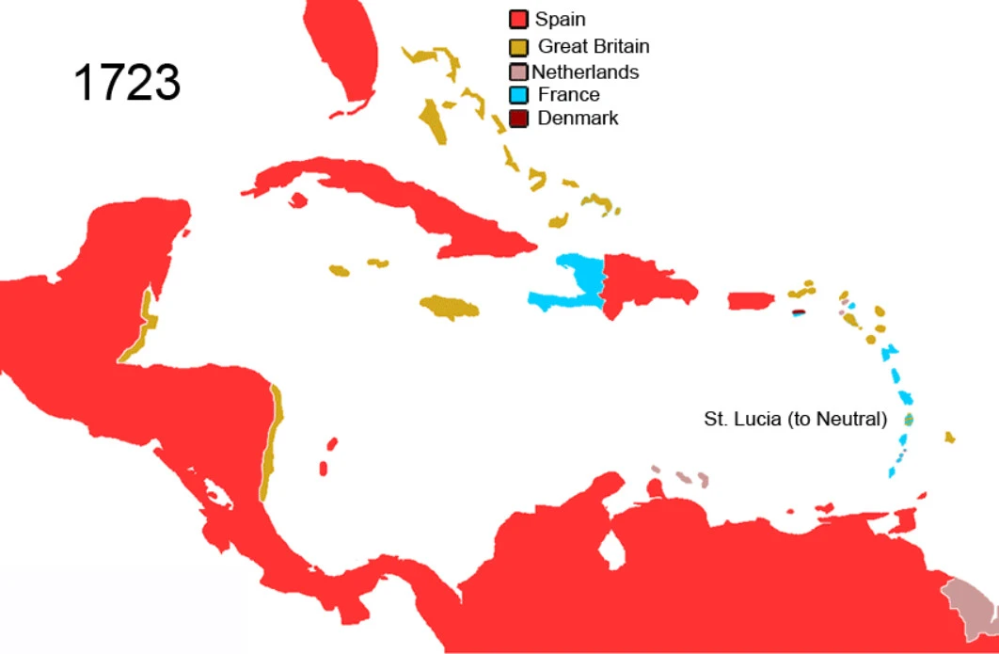
El Caribe español
España es la principal potencia en 1722 en el Caribe. Controla la mayoría de los territorios más importantes
y ricos, Cuba, Santo Domingo y Puerto Rico. Por sus rutas comerciales y sus puertos pasan millones de doblones
en materias primas, desde cacao, tabaco o azúcar, hasta plata y oro.
Paradójicamente, también es el más débil al tener mucho más que perder que el resto. Todo el Caribe español es
un jugoso tesoro del que todos quieren sacar tajada. Sus ciudades son atacadas por otras potencias. Tienen más
costa y rutas comerciales que vigilar y proteger para evitar el contrabando y la piratería. Sus flotas con oro
y plata son un botín muy deseado que deben defender a toda costa.
Todo esto obligo a la corona de España a cederle el monopolio del comercio del Caribe a la RCPC. Necesitaba un
aliado que le quitará trabajo y le ahorrase recursos. Ya no tiene que proteger tantas rutas comerciales porque el
RCPC se protege solo y solo tiene que poner la mano para cobrar las comisiones que firmo al dar el monopolio
al RCPC.
La Española y Santo Domingo
La Española fue la primera isla importante que los españoles tomaron y colonizaron. Pero en 1697, con el
tratado de Ryswick perdió toda la parte este de la isla.
Solo la parte sur de Santo Domingo está poblada. Se intentó poblar el norte, pero los colonos prefirieron
migrar e instalarse a Cuba. Es mucho más montañosa que Cuba, lo que dificulta tanto el cultivo como el transporte
de los productos agrícolas. Las infraestructuras tampoco son buenas, lo que dificulta el comercio en general.
Las pequeñas comunidades marginales de la costa norte viven más del contrabando que de la agricultura, pesca
y comercio. Así pues, en caso de necesidad, un barco de dudosa reputación podría anclar en sus puertos con más mordida
que preguntas.
Con los años casi toda la población se ha concentrado en la zona de Sureste, alrededor de la capital Santo Domingo
de Guzmán. Las poblaciones taínas supervivientes se han concentrado en el interior en zonas montañosas no interesantes
económicamente lejos de los colonos.
Santo Domingo
Santo Domingo fue la primera ciudad europea en América y durante muchas décadas fue la
joya de la corona del Caribe Español, hasta ser desbancada por La Habana y caer en decadencia
junto con el resto de La Española.
Posee la más antigua universidad de las Antillas y la única hasta hace unos años que se fundó la Universidad
de La Habana. Esto le daba cierto elitismo y poder al controlar única entidad educativa superior. Todas las familias poderosas
y ricas debían mandar a Santo Domingo y allí podían influenciar sus jóvenes.
La RCPC ha aprovechado a comprar a precios de saldo todas las empresas que entraban en banca rota de
la ciudad y las ha convertido en plantas de procesamiento de materias primas. Eso ha supuesto nuevos puestos
de trabajo especializados (los más duros siguen siendo para los esclavos) e ingresos para la ciudad, con
lo que todos están contentos. En algunas de las instalaciones tiene laboratorios donde busca nuevos métodos
de producción más baratos.
El problema es que todas esas industrias están al lado de río Ozama y descargan todos sus desperdicios en él.
Ahora mismo los 15 km navegables del río están tan contaminados que casi no hay vida en ellos. Ni los
profundos intentan meterse en sus aguas. Los pescadores se están arruinando, ya que no hay pesca, pero
encuentran trabajo en las fábricas con lo que a nadie le importa.
El olor que empieza a salir del río es insoportable y la contaminación es el caldo de cultivo para
futuras enfermedades. En cualquier momento podrían aparecer una plaga que obligue a poner en cuarentena
la ciudad.
Cuba
Cuba es el centro de las Antillas Occidentales, todo pasa por algún puerto de Cuba dejando
grandes riquezas. Las familias más ricas y poderosas están en sus grandes ciudades. La marina
española tiene que defenderla a toda costa contra piratas, ingleses y franceses.
Los recursos naturales de Cuba son importantes y para poder explotarlos la isla se está llenando de
infraestructuras, carreteras, silos, puertos, defensas, etc. Las últimas novedades y avances
llevan primero a Cuba y luego al resto del Caribe.
La Habana, Santiago, Matanzas son ciudades modernas con alcantarillado, calles empedradas,
canalización de sus ríos, etc. Los edificios siguen las modas arquitectónicas venidas de
Europa adaptadas al clima tropical.
La RCPC controla la gran parte de la economía de la isla y tiene infiltrados en todos los niveles
de su gobierno. Controla sus costas y según avanza la colonización, también empieza a controlar las
tierras del interior. Nada pasa sin que lo sepan, pero hay cosas que se le escapan y que puede que
se conviertan en su talón de Aquiles, como el periódico libre La Verdad de La Habana.
Por último, solo 80 kilómetros separan la isla de Cuba de La Española, llamado el paso de los Vientos. Tiene
una gran importancia estratégica y económica, ya que tiene el tráfico más importante entre el mar Caribe y el
océano Atlántico.
En definitiva, Cuba es la joya del Caribe, una joya que todos quieren poseer.
La Habana
Si Cuba es la joya de las Antillas, La Habana es el diamante que lo corona. Es la ciudad entre las ciudades del
Caribe. Es la más rica y la más poblada y todo el mundo tarde o temprano acaba pasando por ella y muchos se
quedan en busca de fama y fortuna.
Es una ciudad rica, moderna y culta. Sus grandes avenidas limpias y empedradas, su alcantarillado, sus grandes
edificios municipales son un intento de parecerse a las grandes ciudades europeas. Tenemos cafés de intelectuales y
teatros donde artistas nacionales e internacionales muestran su talento. La Universidad de La Habana es la institución
más moderna del Caribe, con facultades de Artes y Filosofía, Teología, Cánones (Derecho religioso), Leyes y Medicina.
Las casas señoriales de las familias burguesas empiezan a llenar las calles y con ellos, tejedores, carpinteros,
sopladores de vidrios, etc. todos ofreciendo productos de máxima calidad y de gran precio. De Europa llegan todo tipo de profesionales
liberales, que enseñan música o buenos modales, hacen caros retratos o ayudan a sus contratadores en negocios.
La RCPC está en todas partes, no solo en la famosa mansión Villalba o las mansiones menores de sus socios, sino también
en sus oficinas en la Plaza Mayor, sus almacenes en la zona portuaria, su astillero y sus barcos fondeados en el puerto.
Santiago de Cuba
La antigua capital de Cuba perdió su capitalidad frente a La Habana porque las rutas comerciales eran más
seguras por el norte de la isla que por el sur. Santiago, a pesar de sus defensas, era atacada por piratas
desde las islas Caimán, desde Tortuga y desde Port Royal. Aun así, sigue siendo un puerto seguro importante,
sobre todo por su bien guarecida bahía.
Lo que hace singular a Santiago de Cuba es el mestizaje. La ciudad está en el centro geográfico del Caribe. Eso hizo
que durante siglos por ella pasarán y pasen gentes de todas las partes de la Antillas. En sus calles viven y trabajan
taínos, españoles, ingleses, franceses y esclavos libertos provenientes de África Occidental. Gentes de diferentes
orígenes y condiciones conviven más o menos pacíficamente y se mezclan entre sí dando lugar a una cultura
diferente al resto de las Antillas.
Mientras que en el resto de ciudades las diferencias entre ricos y pobres, entre amos y esclavos y entre
europeos, taínos y africanos son muy palpables, en Santiago de Cuba son más difusas. Sigue habiéndolas, pero
en ciertos momentos y sitios esas diferencias no existen.
Puerto Rico
Puerto Rico fue durante décadas abandonada poco a poco por los españoles en favor de otras islas o el propio
continente. Los barcos que trasportaban las materias primas preferían otras rutas más productivas y fueron
olvidándose de Puerto Rico. Esto obligo a mucha gente a tener que recurrir al contrabando y vender ilegalmente
sus productos a potencias enemigas para poder subsistir. Las instituciones y la ley fueron perdiendo toda
su fuerza y la isla estuvo a punto de entrar en crisis a principios de siglo XVIII.
Hacia 1700 la RCPC se dio cuenta de que si no actuaba, Puerto Rico podía convertirse en refugio de piratas.
La mayoría de la población se dedica a actividades ilegales y las mayores fortunas eran fruto de esas actividades.
La lógica decía que todo esto atraería rápidamente a piratas a sus costas y todos los problemas que ello conlleva para
la RCPC.
Debido a esto, decidió atajarlo invirtiendo gran cantidad de dinero y barcos en reconstruir las rutas comerciales
de Puerto Rico. Los productos puertorriqueños volvían a inundar los mercados de España y volvían de nuevo a la isla
convertidos en doblones de oro. Además, lanzó una campaña de propaganda para atraer a inmigración y repoblar
la isla.
Esto tuvo dos consecuencias directas. La primera es que la riqueza volvió a la isla y con ella la ley. La gente
de Puerto Rico no tenían que delinquir para subsistir y podían prosperar. Además, la RCPC se convirtió en un poderoso
agente político, ya que podía hacer prosperar a quebrar una ciudad creando o eliminando rutas comerciales. Los alcaldes
y gobernadores debían plegarse a las peticiones de la RCPC y terminaron transformándose en sus títeres.
La otra consecuencia es que la población de Puerto Rico está creciendo de forma exponencial no solo debido
a la inmigración, sino también a la alta natalidad. Las familias que llevan generaciones en la isla están prosperando
y eso les permite crecer y las recién llegadas se ven con posibilidades de prosperar y también buscan crecer.
A día de hoy se puede decir que la isla está completamente controlada por la RCPC. Controla la economía y con ella
la política y como todos ganan dinero tienen a la gente contenta y sumisa. La RCPC hace y deshace lo que quiera
en la isla y nadie pregunta nunca nada. Esto ha convertido a la isla en uno de los sitios preferidos para montar
instalaciones de dudosa legalidad y cuestionable reputación.
Lo curioso de todo esto, es que contra todo pronóstico (principalmente de la RCPC), en el Puerto Rico de 1722
está apareciendo un sentimiento de identidad nacional. Los habitantes han dejado de sentirse taínos, españoles o
africanos para sentirse puertorriqueño. Todo esto está siendo el germen de un movimiento de independencia del que
se habla en los salones y las mansiones, pero también en las tabernas y las calles.
San Juan de Puerto Rico
San Juan es la principal ciudad de Puerto Rico y el principal puerto de la isla. Está recuperando su antiguo esplendor
gracias a que la RCPC ha vuelto a usar las rutas comerciales que pasaban por su puerto, incluso perdiendo dinero
y tiempo.
En San Juan es donde mejor se ve la actuación de la RCPC para evitar que Puerto Rico caiga en crisis y
desaparezca la ley y el orden. El dinero corriendo de mano en mano se nota en el ambiente y la omnipotencia
de la RCPC es clara para el que conozca sus oscuros secretos.
Cada día se establecen en sus viejas casas nuevas familias de colonos a los que los mensajes propagandísticos
de la RCPC han convencido para instalarse en San Juan. Aun así, hay barrios en la ciudad en la que los nuevos
no se atreven a entrar. Su instinto les dice que esas gentes de piel escamificada, ojos saltones y cuellos
cortos no son de fiar.
Ponce
Ponce es conocida como la Perla del Sur. Es la principal ciudad de Puerto Rico que da al Caribe, ya que, como hemos visto,
la principal ciudad es San Juan. No es una gran ciudad comercial, sino que es una ciudad productora de melaza de
azúcar. De sus puertos salen barcos cargados de azúcar hacia Europa.
Como ya hemos dicho, no es una ciudad comercial con un gran tráfico de barcos, con lo que no está muy fortificada.
Tampoco es que haya sufrido grandes ataques de piratas o de ejércitos extranjeros.
Ponce es una ciudad extraña, ya que los sucesos extraños y paranormales son normales en sus calles. Algunos
dicen que los espíritus se sienten a gusto en Ponce, que las cosas extrañas que suceden en ella les atraen.
Estamos hablando de cosas como su carnaval lleno de tradiciones raras y paganas, del legendario árbol Ceiba de
más de cuatro siglos de edad al que le atribuyen poderes mágicos o los cercanos campos de batú de Tibes que
algunas personas sabias de la ciudad comparan con círculos de magia y hechicería.
Puede que esto sea cierto o no, pero desde luego los avistamientos de la Llorona son más numerosas de lo normal
y los habitantes de las plantaciones de los alrededores de Ponce hablan de gárgolas en los cielos nocturnos.
El Caribe inglés
Gran Bretaña es la segunda potencia en discordia en el Caribe, solo controla Jamaica, las Caimán
y las Bahamas y parte de las Antillas Menores. Pero realmente las Caimán y las Bahamas son territorios muy pequeños y poco interesantes
económicamente. De hecho, están tan poco controlados por su metrópolis que son casi autónomos y en ambos
casos se han convertido en sitios seguros para corsarios ingleses y puertos medianamente seguros para
piratas que no ataquen a intereses ingleses.
Gran Bretaña lleva décadas intentando robar territorios a los españoles, pero sin mucha suerte. Consigue tomar
una plaza, pero rápidamente la armada española, ahora con la ayuda de la RCPC, la recupera. La
verdad es que las colonias norteamericanas son mucho más interesantes para el gobierno inglés que los
conflictivos territorios del Caribe.
La esclavitud y el tráfico de esclavos es legal y la población de esclavos es cada vez mayor y es
reprimida con dureza para tenerla controlada. Esto supone que la conflictividad
social es muy alta, con gritos de libertad en las plantaciones y levantamientos de esclavos en diferentes
partes de los territorios caribeños ingleses. Por ahora los colonos tienen el control, pero su número es
muy inferior y tarde o temprano una de las sublevaciones de esclavo tendrá éxito.
Todo esto también ha hecho que en los territorios semiautónomos o autónomos aparezcan con mucha frecuencia los
cimarrones, esclavos y presos huidos que viven en territorios de frontera lejos de la mano de la ley.
Jamaica
Como tantas otras islas de las Antillas Occidentales, Jamaica es una vaca que hay ordeñar como sea. Los
ingleses desde su colonización han convertido a Jamaica en el principal productor de azúcar del mundo gracias
al trabajo de los esclavos. Las condiciones de las plantaciones son tan brutales que muchos escapan a las
montañas y crean comunidades de cimarrones.
Estas comunidades subsisten en la cordillera central de la isla, combatiendo al ejército inglés
en guerrillas y atacando a las plantaciones para liberar a sus iguales, hacer justicias con sus antiguos
años y conseguir recursos para sobrevivir.
Cuando una patrulla militar entra en territorio cimarrón, una red de exploradores y vigías avisa
a las comunidades cercanas para que se defiendan o para que escapen. Esto está haciendo muy complicado
al ejército inglés sofocar el problema de los cimarrones.
Mientras que la costa y las faldas de las montañas son territorio inglés, las montañas son territorio
cimarrón.
La Orden ha logrado un gran éxito al conseguir poner como gobernador a uno de los pocos adeptos
activos que le quedaban en Europa, Henry Bentinck, Primer Duque de Portland. La RCPC lleva años inyectando dinero a sus
negocios mediante empresas fantasmas para que parezca un hábil gestor y que pudiera conseguir el cargo de Gobernador
de Jamaica debido a sus éxitos financieros.
El plan ahora es, con el permiso del gobernador, crear una empresa subsidiaria encubierta de la RCPC que
les permita hacer sus tejemanejes en Jamaica.
Por otro lado, Jamaica fue y sigue siendo un refugio de piratas y sobre todo de corsarios ingleses y franceses.
No tendrás problemas en entrar en su puerto siempre que solo ataquen a los intereses de España
en las Indias Occidentales.
Kingston y Port Royal
Kinsgton y Port Royal son dos caras de una misma moneda, donde la desgracia y caída de una fue el inicio
y la ascensión de la otra. El terremoto que destruyo Port Royal y las siguientes desgracias que cayeron
sobre la ciudad, hizo que los ingleses abandonaran Port Royal y tuvieran que establecerse en tierra firme,
fundando Kingston y convirtiéndola en su nueva capital.
Lo que nadie sabe es que todo esto ha sido uno de los mayores planes llevado a cabo por la Orden. Port Royal
era un puerto seguro para piratas ingleses y franceses que la RCPC debía destruir. No era una simple cala
abandonada donde hacer reparaciones y llenar los toneles de agua potable. Era un puerto donde vender sus botines
a buen precio, donde reparar y mejorar sus barcos, donde organizarse y planificar golpes y donde reclutar a
nuevos marinos que quisieran prosperar como piratas.
El terremoto y la decadencia posterior de la ciudad fue un plan magistral ejecutado con precisión quirúrgica por
la Orden en la que participaron chthonianos, lloigors y cultistas de gran poder de la Orden durante varios años.
Hoy en día, mientras que Kingston es una moderna y vibrante ciudad, Port Royal solo es una sombra de lo que fue,
una ciudad sucia, rota y triste donde vagan personas sucias, rotas y tristes.
El Caribe francés
Es la tercera fuerza extranjera en el Caribe. Posee menos territorio que los ingleses; Saint-Domingue,
la parte oeste de la Española, y parte de las Antillas menores. Lleva mucho menos tiempo en el Caribe que el resto
y el control de sus territorios es todavía escaso. En los territorios de las Antillas porque no son importantes y
en Saint-Domingue porque solo lo controla desde 1697 con el tratado de Ryswick, por el cual España le cedía esos territorios.
Como con Gran Bretaña, la esclavitud está permitida y el trato que se da los esclavos para hacer que las plantaciones
sean rentables es tremendamente brutal, con lo que las insurrecciones están a la orden del día. La población de esclavos es grandísima,
así que un 5% tiene esclavizada a un 95% de la población y controla casi todas las tierras cultivables y las industrias
de transformación de las materias primas.
La piratería es permitida en tierras francesas, debido a que principalmente atacan a intereses españoles e ingleses
y no hay suficientes fuerzas militares para controlarlos. De hecho, la famosa Isla de la Tortuga, la isla pirata por
excelencia, es parte de las colonias caribeñas de la corona francesa.
La RCPC todavía no tiene interés en los territorios franceses. Las islas pequeñas no tienen ningún valor y
Saint-Domingue todavía es demasiado salvaje para que valga la pena perder tiempo y recursos. Como mucho podría
interesarle comprar alguna isla, pero ahora mismo tiene más interés en las islas controladas por Dinamarca que
ofrecen un carácter más neutral dentro de los conflictos políticos del Caribe.
El Caribe danés
La Compañía danesa de las Indias Occidentales y Guinea tiene el control de 2 pequeñas
islas de las Antillas Menores, San Juan y Santo Tomas. Su economía está totalmente basada en la esclavitud.
La compañía danesa intercambia armas y otros productos industriales en África a cambio de esclavos, que
son trasladados al Caribe para trabajar en las plantaciones danesas o ser vendidos en las islas vecinas.
Lo más interesante es que la RCPC está negociando la compra con la compañía danesa y por extensión de las islas.
Si lo consigue, las islas y las gentes que en ellas viven serán de su "propiedad". La idea es mover toda su
flota y todos sus instalaciones secretas a las colonias danesas para evitar los problemas que genera
tener que ocultar sus actividades constantemente. En la colonia danesa podrían hacer lo que quisieran, ya
que serían los gobernantes de las islas.
La compañía danesa no quiere ser comprada, puesto que el tráfico de esclavos supone un buen negocio y grandes
beneficios
y, por otro lado, la corona danesa obtiene cierto prestigio (y buenos impuestos) dentro de las monarquías
noreuropeas. La oferta de Hernando de Villalba es muy suculenta y los propietarios de la compañía
danesa llevan meses pensándosela. Aunque no quieren vender, han oído cosas terribles de Hernando de Villalba
y la RCPC y tampoco quieren enfrentarse e él.
Si la compañía danesa al final se niega a vender, tiene decidido liderar una revuelta de esclavos y poner a algún
títere en el gobierno. Es más barato, pero mucho menos inestable. De hecho, cultistas de la Orden
del gran Cthulhu ya están infiltrándose en los diferentes estratos sociales de Santo Tomas y San Juan.
En cuanto la RCPC quiera una revolución estallará en la colonia danesa.
Si habéis jugado grandes campañas de juegos basados en Cthulhu tipo Las Máscaras de Nyarlathotep
habréis podido comprobar que los malos son siempre como males de Bond, teniendo sus propias islas
secretas donde hacer sus terribles experimentos y sus oscuros rituales lejos de los ojos indiscretos.
Hernando de Villalba no va a ser menos y no quiere una isla, quiere dos.
Relaciones entre las potencias colonizadoras
Las relaciones entre las potencias colonizadoras en el Caribe son un reflejo de su situación en el viejo
continente. Los aliados en Europa son aliados en el Caribe y los enemigos en Europa son enemigos en el Caribe.
En 1722, Francia es la potencia más fuerte que, sin embargo, tiene bastante poca influencia en el Caribe. España,
que está en franca decadencia en Europa, aún es la principal fuerza en el Caribe, controlando la mayor parte del territorio,
Además, del continente americano. Gran Bretaña es la fuerza en ascenso en viejo continente, no es la potencia militar que
es Francia, pero su industria y su comercio la convertirán en los siglos venideros en el poderoso imperio británico.
Francia y Gran Bretaña viven en un pacto de no agresión en Europa que se extiende a sus colonias y los esfuerzos
que no malgastan en combatir entre ellos los dedican en quitarle tierras y recursos a España.
Lo que ninguna de estas potencias ha tenido en cuenta es el poder que puede desplegar la RCPC, que cuenta con una
poderosa flota de barcos, un ejército de guardias y mercenarios y formidables recursos económicos. La RCPC
podría enfrentarse y expulsar a cualquier potencia colonizadora del Caribe. Y solo las tres 3 juntas
podrían derrotar a la RCPC y los recursos mágicos y monstruosos que puede aportarle la Orden del Cthulhu.
Islas Piratas
Durante la Edad de Oro de la Piratería, aparecieron y desaparecieron muchos refugios piratas. Eran regiones
del Caribe, casi siempre islas, lejos de la civilización europea, donde sus leyes no tenían vigencia.
Estos lugares tenían su propia filosofía de vida y sus propias leyes, muchas veces más libres y
avanzadas que las civilizadas.
Actualmente, hay 4 sitios en el Caribe que podemos definir como islas piratas, Tortuga, Bahamas, Caimán
y los cayos de Florida. Port Royal también sigue siendo un refugio pirata mientras no hayas atacado
barcos ingleses, pero está en franca decadencia y Kingston no es tan permisiva con los criminales.
La isla de la Tortuga
La isla de la Tortuga, en la costa de noroeste de la Española, es la máxima expresión de isla pirata. Hacia
1620 los piratas que tenían su base en Tortuga crean la Cofradía de los Hermanos de la Costa. La Hermandad es
una organización formada por piratas. Era una especie de sindicato de piratas que regulaba sus
relaciones y sus interacciones comerciales. Tenía un toque bastante anárquico, haz lo que quieras mientras
no le causes problemas a los demás.
Si bien la cofradía por su propia esencia terminó desapareciendo para 1670. Por así decirlo era tan libre que sus
asociados terminaron por dejarla. Sus pocas normas siguen aún vigentes y guían la vida de las gentes de Tortuga.
Es hoy en día un refugio pirata que ha resistido a las incursiones inglesas, francesas y principalmente
españolas. El norte de la isla es inaccesible con grandes acantilados y fuerte oleaje y el sur ha
sido fortificado con los años. Además, una flota pirata descoordinada, pero muy feroz y combativa
defiende sus aguas.
Ante la imposibilidad de acabar con este refugio de pirata, las potencias europeas y la RCPC detrás
han probado otras estrategias para acabar los piratas de Tortuga. La RCPC lleva meses mandando a establecerse
a agricultores en la costa enfrente de Tortuga. Quieren que poco a poco la civilización les rodee, que empiecen
a comerciar y conseguir dinero fácilmente y que se relacionen con los hortelanos, que son especialmente religiosos.
La RCPC está gastando un montón de recursos en materiales, dinero y personal para que estas poblaciones
campesinas prosperen. Ya empiezan a ver signos de civilización entre las gentes de Tortuga y saben que
no en mucho tiempo la isla caerá.
Bahamas
Las Bahamas es un archipiélago técnicamente bajo el dominio inglés, pero debido a su baja población y a su escaso
interés económico y militar, ha gozado de bastante autonomía frente los designios de Londres. Es por ello que sus
miles de islas e islotes con sus calas deshabitadas y paradisíacas se han convertido en un puerto seguro para piratas.
Nueva Providencia y su capital Nasáu se convirtieron en un refugio de piratas desde 1706 a 1718 conocido como la República
Pirata. A pesar de que no fue un estado o república en un sentido formal, era autogobernado mediante
un Código de Conducta propio e informal.
Las actividades de los piratas causaron el caos en el comercio y navegación de las Indias Occidentales y españoles e ingleses
intentaron tomar el control por la fuerza de Nueva Providencia. Sería el gobernador Woodes Rogers quien tomo
en 1718 la isla de Nueva Providencia y se estableció en ella. Como medida de pacificación y una forma de acabar
con la piratería, ofreció el perdón real del rey Jorge I a los piratas que tenían la isla como guarida.
Si alguien o toda tu mesa ha sido acusado de piratería por los ingleses, podría ir Nasáu y pedir perdón
al gobernador, amparándose en la Proclamación para la Supresión de Piratas (también conocida simplemente como Acta de Gracia).
En realidad el indulto acababa en julio de 1719, pero ha habido varias ampliaciones hasta el día de hoy.
A pesar de los esfuerzos del gobernador, las pequeñas islas deshabitadas que rodean Nueva Providencia siguen
siendo un buen refugio pirata. Esconden sus barcos en las pequeñas calas de las islas colindantes y van
a conseguir provisiones a las poblaciones costeras de Nueva Providencia. También se disfrazan y disfrutan
de las diversiones que Nasáu ofrece a los que tengan oro y ganas de gastarlo. En general, es
un buen cobijo pirata, sobre todo para aquellos que no hayan atacado a barcos ingleses o a intereses ingleses con
los que el gobernador tiene bastante manga ancha.
El autogobierno que ha vivido los habitantes de las Bahamas durante años han hecho que corran por las calles
de las poblaciones de las Bahamas los vientos de la independencia y empieza a haber grupos organizados que buscan que las Bahamas se
libren de la "tiranía opresora" de Gran Bretaña. En las tabernas y en las tertulias de las mansiones se habla
acaloradamente sobre este tema. De hecho, George Phenney, aspirante a gobernador, predica las bondades de unas Bahamas
libres de la opresión inglesa.
Los Cayos de la Florida
Aunque los Cayos de la Florida pertenecen al reino de España, como otras partes del Caribe, son bastante autónomos
debido a su poco interés económico y militar. Pocas islas tienen agua potable y un tamaño suficiente para poder montar
plantaciones de caña, algodón, maíz, etc. Hay pequeñas comunidades de tribus calusas y tequestas, cimarrones
y raqueros, rescatadores de barcos hundidos, en las islas principales.
Al estar casi deshabitados y a la vez estar bajo el control de España y cerca de grandes colonias como Cuba, lo
hace perfecto para que la RCPC lo use como laboratorios. Puede montar un pequeño pueblo de cabañas en un cayo
desierto en el que testar durante meses algún invento nuevo o un realizar un ritual de invocación o abrir un portal
a las tierras del sueño. Sin embargo, nadie de La Habana lo sabría, aunque solo estén a 100 km de distancia.
Como las Bahamas y otras islas piratas, los cayos son perfectos para esconderse entre sus miles de islas.
Sus calas deshabitadas son perfectas para fondear en ellas, sus arrecifes son la mejor protección y sus
pequeñas comunidades semi-independientes son perfectas para abastecerse y vender el botín. También son
perfectas para enterrar tesoros y corren por todo el Caribe muchas historias de las riquezas que puedes
encontrar en los cayos.
Islas Caimán
Las Islas Caimán son otro refugio pirata importante. Oficialmente, estaban integrados con Jamaica y, por tanto,
pertenecen a Gran Bretaña, pero siempre fueron muy independientes. De hecho, se han considerado hasta hace pocas décadas
una zona con cultura de frontera, zonas que estaban en la frontera entre la civilización y la naturaleza salvaje,
donde iban gentes que no encajaban con la sociedad imperante, como cimarrones (esclavos huidos), criminales como piratas,
refugiados, etc.
A diferencia de Tortuga y como Bahamas y los cayos, las Caimán son unas islas muy pocas pobladas, con
nulas infraestructuras y solo una minúscula, George Town. Como Bahamas y los cayos, también tienen calas
resguardadas y ocultas y agua dulce, fruta y carne de tortuga en abundancia. Todo esto las convierte en
un sitio perfecto para fondear y aprovisionarse. Además, su ubicación (al sur de Cuba y al Oeste de Jamaica) está cerca
de las rutas comerciales españolas y las hace perfectas para atacar a los barcos mercantes españoles.
Por último, como los cayos de Florida y Bahamas y por su pasado y presente pirata, es uno de los lugares del Caribe con
más historias de tesoros enterrados. Si todas las historias de tesoros piratas fueran ciertas, no habría una sola
parcela de tierra seca en todas las islas donde no se hubiera escondido un cofre del tesoro.
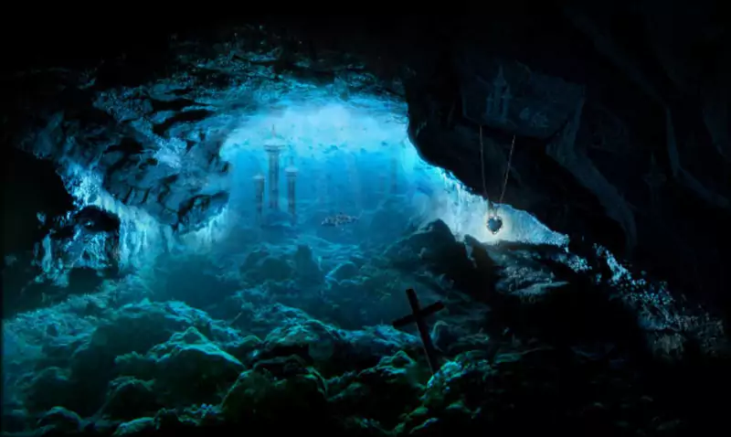
Cthulhu y R'lyeh
La trama principal de esta ambientación gira en torno al surgimiento de R'lyeh de entre las aguas y al despertar
del gran Cthulhu. El gran enemigo a batir es la Orden del Gran Cthulhu y su mano pública, la RCPC, cuyo objetivo
es
despertar a su señor Cthulhu. El objetivo de tu mesa es evitar que Cthulhu despierte de su sueño de eones y
traiga el apocalipsis al mundo del siglo XVIII.
El gran y poderoso Cthulhu
No creo que hayas llegado hasta esta ambientación rolera sin saber quién es Cthulhu. Pero por si se da
el caso, aquí tienes una pequeña descripción del gran y poderoso Cthulhu.
Cthulhu es un primigenio del universo de ficción de H. P. Lovecraft (y sus seguidores), una entidad
equiparable a dioses de inmenso poder y generalmente de un tamaño colosal. Cthulhu no es el más
poderoso de los primigenios, pero sí el más conocido y adorado por diferentes cultos y sectas, en parte
por encontrarse en la Tierra. Tiene aspecto mezcla de dragón y de humanoide con cabeza de pulpo.
Cthulhu reposa dormido/encerrado en la ciudad sumergida de R'lyeh (en alguna parte del Caribe). Espera escapar el día
en que "Las estrellas estén de nuevo en posición" con la ayuda de cultos y sectas como la Orden del Gran Cthulhu
y así poder volver a extender su poder sobre la Tierra y muy posiblemente desatar la destrucción y el apocalipsis
en nuestro planeta.
Debido a su apariencia y a estar sumergido en el mar, siempre se le ha asociado con el agua y monstruos
como los profundos que le sirven.
A él recitan «Ph'nglui mglw'nafh Cthulhu R'lyeh wgah'nagl fhtagn» que significa «En la Ciudad de R'lyeh, el
difunto Cthulhu, espera soñando».
R'lyeh
R'lyeh es la ciudad sumergida donde yace el primigenio conocido como Cthulhu y su progenie. Cuando las estrellas
sean propicias, la ciudad se alzarán de entre las aguas y Cthulhu despertará y acabará con la vida en la tierra tal
y como la conocemos.
Una de las características de esta mítica ciudad son sus prodigiosas dimensiones con construcciones dignas
del propio Cthulhu. Otra es su geometría no-euclidiana. Nada de la ciudad cumple al 100% con la geometría
euclidiana, que rige nuestro mundo físico. Puede ser que dobles una esquina y vuelvas a donde estabas o
que un cuadrado, tengo 3 o 5 aristas.
Si bien en los libros de Lovecraft, R'lyeh se encuentra en Pacífico Sur (en la latitud 47° 9’ S, longitud 126°
43’ O).
Esa es su ubicación a principios del siglo XX. En nuestra ambientación, R'lyeh está al norte de Puerto Rico, en el centro de la Fosa de Puerto Rico.
La Fosa de Puerto Rico es una fosa mariana de más 8 kilómetros de profundidad y 1.500 de longitud provocada la colisión de la placa tectónica del Caribe
con la de Norteamérica. Dicha fosa es el punto más profundo de todo el océano Atlántico. Que R'lyeh esté sobre una falla
tendrá gran importancia para la Orden del Gran Cthulhu.
La fosa de Puerto Rico es un lugar tan inhóspito que ni los profundos lo han explorado. No hay luz y ni hay pesca
y aunque soporten la presión supone mucho esfuerzo bucear por sus aguas.
Otros primigenios y seres de los Mitos
En esta ambientación Cthulhu es el principal antagonista, sobre todo por su conexión con
el mar y sus siervos, los profundos. Aparecen también otros primigenios en forma de avatares
como Nyarlathotep o Shub-Niggurath. Sin embargo, puedes meter tus propias
sectas adoradoras de otros primigenios con sus propios planes apocalípticos.
No sería extraño que hubiera sectas adoradoras de poderosos dioses exteriores o primigenios
como Hastur, Yog-Sothoth o Azathoth, o de Ghatanothoa, encerrado en un volcán, sería perfecto
en el Caribe como zona volcánica con mucha actividad.
Si deseas más deidades marinas a tono con la ambientación pirata, puedes usar a Coinchenn,
un primigenio gigante hecho de peces, cetáceos y cefalópodos, o Janai'ngo, un gigantesco
crustáceo siervo de Cthulhu. Sin olvidarnos de K'nar'st, un humanoide anfibio con cuatro
brazos de siete garras y tentáculos en vez de piernas, o Psuchawrl, un gigante larguirucho con
cabeza de anémona.
Los clásicos de casas encantadas, seres aullantes en los bosques y pueblos perdidos en las montañas
llenos de agresivos y extraños pueblerinos son fácilmente transformables a barcos fantasma,
extrañas leyendas de críptidos en la selva o colonias de degenerados colonos que han empezado
a adorar a un ser que vive en un cenote cercano.
Por último, estando en un ambiente cercano a tierras de mayas y aztecas, puedes meter cultos afines
a la serpigente que adoren a Yig y Tsathoggua que busquen restaurar el continente perdido de Mu.
Los profundos del Caribe
No te vamos a mentir, esta es una ambientación acuática y como es normal hay profundos, muchos profundos.
Los fondos oceánicos y los arrecifes del Caribe están llenos de asentamientos acuáticos de profundos y los héroes
deberán enfrentarse a ellos muchas veces.
En ¡Arrr! Cthulhu los profundos son más complejos que en otros juegos basados en Cthulhu. No son simple
carne de cañón. Están organizados socialmente y políticamente, tienen una cultura compleja y una sociedad
estratificada con múltiples sistemas de relaciones.
Las tribus
Los profundos del Caribe se dividen en 3 grandes tribus que tienen diferentes zonas de influencia. Cada tribu
controla los territorios dominados por una de las 3 principales corrientes marítimas del Caribe.
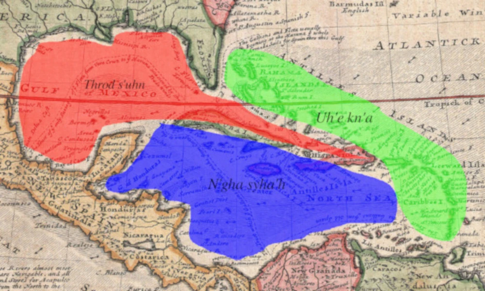
Throd s'uhn (Corriente del Golfo). Esta tribu se localiza en la parte norte del Caribe, en las aguas
bañadas por la corriente cálida del Golfo. Sería el golfo de México, costa Norte de Cuba y La Española, Florida
y sus cayos.
N'gha syha'h (Corriente del Caribe). Esta tribu se encuentra en las aguas que recorre la corriente del
Caribe, que baña
la costa sur de Cuba y La Española hasta el llegar al continente sudamericano.
Uh'e kn'a (Corriente de las Antillas). La tribu de la corriente de las Antillas controlaría las costas
de las Bahamas y las Antillas Menores.
Las relaciones entre las 3 grandes tribus son constantes y puede ser muchas índoles. Desde comerciales hasta
disputas por territorios, aunque estás últimas son menos comunes. Todo el comercio se basa en un sistema de
trueques. Digamos que su economía es muy básica entre ellos.
Los tres grandes caciques
Cada tribu es dirigida por un gran cacique profundo. Estos caciques son profundos de inmenso tamaño y cientos de
años
de vida. Sin llegar a ser como Dagón e Hydra (en tamaño y edad) son bastante poderosos tanto por la cantidad
de profundos que están bajo sus órdenes como ellos mismos solos. Estamos hablando de seres que llevan siglos
sobreviviendo a toda clase de peligros y enemigos. Pueden ser increíbles hechiceros, hábiles guerreros y/o sabios
lideres.
Si bien estos caciques no tienen mucha influencia en la vida diaria de un profundo, tienen el poder suficiente
para
movilizar a los profundos de su territorio. Pueden hacer que ataquen un asentamiento humano en la superficie o
entrar
en guerra con otra tribu de profundos.
El tridente de Dagón
Tener el beneplácito de los 3 caciques es conocido con el título del "tridente de Dagón". Supone un increíble
poder para su poseedor, ya que pone a tu disposición miles y miles de profundos dispuestos a hacer lo que se les
ordene sin ningún tipo de duda o remordimiento y sin ninguna señal de rebeldía o insurrección. Tú ordenas y
ellos obedecen hasta la muerte.
Sería muy fácil, poseyendo el tridente, hacer que las 3 tribus profundas te ayuden a alzar de las aguas la ciudad
sumergida de R'lyeh. Solo necesitarías una buena idea para sacarla de las aguas. Luego sería aplicarla con tiempo
y usando mano de obra profunda.
Sociedad y cultura
La sociedad y cultura de los profundos podríamos igualarla al neolítico inicial de los humanos. Con una
importante
salvedad debida principalmente a su contacto mediante híbridos con los humanos, saben trabajar los metales.
Sin embargo, su vida submarina hace que la metalurgia no sea especialmente útil. Aunque saben trabajar los metales preciosos y
usarlos para hacer joyas.
Vida cotidiana
Los profundos viven en asentamientos subacuáticos por todo el Caribe. Normalmente, aprovechan zonas de arrecifes
y de cuevas submarinas para construir sus refugios. Cada asentamiento es dirigido por el profundo más anciano y
sabio, aunque en tiempos de guerra suele dejar el poder entre los guerreros más fuertes, quedando como un
consejero.
Son principalmente pescadores/recolectores, aunque empiezan a desarrollar una acuicultura. La verdad es que no
necesitan preocuparse mucho de la comida, ya que el mar les proporciona todo lo que necesitan. No hay malas
cosechas y la pesca no escasea porque no está sobreexplotada. Aun así, tener zonas preparadas donde recoger las
algas
que usan para hacer redes y alimentar a bancos de peces para que no se vayan de determinadas zonas ha sido acogido
como
una buena idea.
Los asentamientos pueden ir desde pequeños grupos de 3 o 4 familias (unos 20 o 30 individuos) hasta miles de
individuos. En el momento en que un grupo de profundos consume más de lo que el territorio circundante produce, suele
haber disturbios internos que acaban con grandes grupos abandonando la comunidad para establecerse
en otras zonas del mar.
Los asentamientos profundos suelen tener animales de "compañía" como tortugas marinas o tiburones a los que han
domesticado y cuidan cuando enferman. No es extraño que los adornen con piezas de joyería de oro.
Artesanía
Los profundos tienen nociones básicas de artesanía disponiendo de herramientas que estarían, como
ya hemos dicho, a nivel del neolítico. Pueden crear armas simples como tridentes o cuchillos y son capaces de
tejer tanto redes de pesca como otros tejidos bastos a partir de algas.
Si bien la artesanía es bastante básica, van mejorando poco a poco gracias a las técnicas que los
híbridos de profundos aprenden de los artesanos humanos antes de ser llamados por el mar. Estos híbridos
también aportan conocimientos como la construcción de barcos, que si bien no los aplican para construirlos,
si los aplican para hundirlos.
Los artesanos de los Uh'e kn'a son considerados de los mejores del Caribe, ya que conocen formas de trabajo
usando las chimeneas de lava que hay a lo largo de todas las Antillas Menores.
Relaciones con los humanos
En general, la relación de los profundos con los humanos se basa en la simple regla de matar a todo el que se
acerque.
Cualquier comunidad de profundos tratará de acabar con cualquier humano que se acerque. Solo si creen que pueden
sacar algún tipo de provecho de ti o tengas algo que les interesa, tratarán de relacionarse contigo.
La forma más normal de relación con los humanos es mediante la hibridación, siempre violenta contra las mujeres,
aunque pueda estar aceptada socialmente por la comunidad donde se produzca. Los híbridos pueden pasar como
humanos,
por lo menos durante sus años jóvenes. Si bien son extraños y poco sociables, tampoco quedan tan raros en la
mezcolanza
de culturas y etnias que hay en el Caribe.
Como ya hemos dicho antes, las relaciones económicas con entre profundos son muy básicas. Sin embargo, han
aprendido
a comerciar con los humanos y saben que el oro es algo muy importante para los habitantes de la superficie. Para
ellos
no es más que otro material con el que hacer cosas. Siempre que han querido conseguir algo rápido de los humanos
saben que el oro
facilita las cosas. También saben que es un buen tributo para los humanos que de alguna manera tienen control
sobre ellos.
Otra forma que tienen de relacionarse con los humanos es a través de la pesca. Suelen seducir a las comunidades
costeras favoreciendo su pesca. Hacen que sean prósperas y estas comunidades empiezan a ver a los profundos con
mejores ojos, no solo como monstruos marinos sino como fuentes de riqueza. Empiezan entonces a hibridarse con las
mujeres de dichas comunidades, prometiendo que sus descendientes serán poderosos e inmortales
y que podrán combatir a los poblados vecinos que envidian su prosperidad. Finalmente, con el paso del tiempo,
acaban convirtiendo a toda la comunidad en híbridos que poco a poco deja de relacionarse
con el mundo exterior.
Cómo usarlos
Como ya hemos dicho antes, los profundos son los orcos de los juegos de rol ambientados en Lovecraft
y te van a servir como secuaces, sirvientes, guardias, carne de cañón, … Pero puedes usarlos de otras
formas creativas.
Un uso interesante que puedes darle es como fuerza de la naturaleza debido a su gran número, algo contra
lo que
los héroes no podrán luchar, solo podrán ver como pasa ante sus ojos. Por poner unos ejemplos, puedes
usarlos
para hundir flotas de barcos o arrasar ciudades como si de tornados y terremotos se tratarán.
Puedes hacer que tus villanos tengan faraónicas fortalezas construidas en pocas semanas y vigiladas por
profundos. Y quien dice fortalezas, dice flotas de barcos, caminos, puentes, etc. Si los héroes destruyeron
algo que no querías que lo destruyeran, puedes usar un ejército de profundos que lo reconstruya en semanas.
Puedes hacer que los personajes tengan que huir de una localización y no volver en un tiempo ante la
abrumadora cantidad de profundos que hay en la zona. Tampoco es bueno abusar de este recurso porque perdería
coherencia si todo el Caribe está infestado de profundos.
Por último, como se pueden hibridar con humanos, también podrás usarlos como marineros de barcos de la
RCPC al servicio de sus oscuros objetivos, como espías en las tabernas de los puertos, etc. Las opciones
son muchas.
La verdad de La Habana
Algo muy común en las historias de Lovecraft son que muchas empiezan con noticias en periódicos locales
sobre hechos extraños y chocantes, pero históricamente estamos en 1722 y no hay periódicos en el Caribe.
No debería, pero lo hay y se llama La verdad de La Habana (VLH). La VLH es un panfleto de unas 8 páginas
que se publica mensualmente en La Habana, suele tener noticias en castellano e inglés y la mayoría de ellas
son una mezcla de escándalos, crímenes y misterios.
Frente a los periódicos de ultramar que traen los barcos mercantes con noticias importantes para los ricos y
poderosos del Caribe, la VLH es todo lo que no debería ser un periódico serio e imparcial. Es un entretenimiento
para el pueblo con noticias de matanzas perpetradas por Barbanegra o monstruos que devoran a campesinos, todo
ello con descripciones sangrientas, truculentas y exageradas. Y, sin embargo, es la fuente de información
más precisa sobre los movimientos de los Mitos en el Caribe.
Escondidos entre sus escándalos y sus crónicas de crímenes, hay pequeñas noticias de luces y ruidos extraños
en casas abandonadas, de monstruos en la jungla y de extraños símbolos en lugares insospechados. Un lector
conocedor de los Mitos puede encontrar pistas para sus investigaciones entre sus mal impresas hojas.
La VLH fue creado por Antoine Delapore en 1708. Delapore es un editor francés que huyo de sus rivales políticos y
sus acreedores, y se instaló como pudo en La Habana. Allí, con mucho esfuerzo
y todas sus dotes de embaucador logro sacar el primer número de la VLH.
La VLH se distribuye por todo el Caribe, los marineros y comerciantes los compran en La Habana y los venden allá
donde van. También los intercambian, los prestan, los apuestan, etc. Y lo más importante, nadie los tira.
Puedes encontrar ediciones de la VLH con años de antigüedad que la gente sigue releyendo una y otra vez, a
pesar de estar doblados, arrugados y descoloridos.
A nivel de juego, es una forma perfecta de meter a tu mesa en diferentes aventuras. Pueden encontrar
alguna extraña oferta de trabajo o enterarse de algún extraño suceso que investigar.
De hecho, siempre que encuentren una edición de la VLH, podrán tirar en la tabla de Sucesos extraños de
La verdad de La Habana en la sección de "Viajes y encuentros".
Mary Read y La verdad de La Habana
La VLH es un gran problema para la RCPC, ya que no puede controlarlo y cada cierto tiempo destapa algún
turbio asunto en el que está metido la Orden del Gran Cthulhu. Han intentado de todo para controlar la VLH, pero
nada ha funcionado, desde intentar comprarlo hasta prohibirlo o dejarlo sin materias primas (papel y tinta).
Todos los esfuerzos de la RCPC han fracasado debido a Mary Read, la mecenas en la sombra que protege
al VLH. Mary Read, como líder de la Hermandad del Sargazo, pone muchos recursos (personales y económicos) en
mantener este periódico abierto,
ya que se ha dado cuenta de que la luz que proyecta la VLH es una arma muy poderosa contra las
actividades de la Orden del Gran Cthulhu.
Mary Read consigue papel y tinta de los barcos que asalta y suele ser ella la que firma la mayoría de
los artículos que afectan a la actividad de la Orden del Gran Cthulhu, de hecho, firma como "La lectora".
Esclavitud y trabajos forzados
En 1722 la esclavitud y los trabajos forzados son algo real en el Caribe. Normalmente, no es un tema que
se tenga en cuenta en las ambientaciones piratas, sobre todo si son muy fantásticas. En ¡Arrr! Cthulhu la
esclavitud y los trabajos forzados son una realidad y pueden ser el leitmotiv de alguna aventura o campaña.
Los trabajos forzados y sobre todo la esclavitud son temas muy sensibles que van en contra
de los derechos humanos y que no deberías tomarte a la ligera en tus partidas. Sé respetuoso con la memoria
de toda las personas que sufrieron bajo el yugo de la esclavitud.
Esclavitud
La esclavitud es legal en las islas controladas por ingleses, franceses y daneses. En las colonias españolas,
aunque en su momento fueron esclavizados u obligados a trabajar forzosamente, hoy en día los indígenas taínos
son considerados súbditos de la corona con los mismos derechos que sus antiguos amos. Sin embargo, los esclavos
traídos desde África no tienen esa protección al no ser considerados súbditos del rey.
Una importantísima parte de la población del Caribe sufre bajo el yugo de la esclavitud. En lugares como
Saint-Domingue la proporción son de 20 personas esclavas por cada persona libre. En estos lugares los
más crueles castigos como amputar extremidades o las ejecuciones son las formas que usan los dueños
de plantaciones para tener controlados y atemorizados a sus esclavos.
En su mayoría son usados en las grandes plantaciones de azúcar, tabaco, algodón, etc. y en industrias que transforman
esas materias primas. Proceden principalmente del oeste de África occidental, pero también puede haber indígenas
taínos, aunque son una minoría debido a que su población ha sido masacrada en la mayoría de las islas del Caribe.
Pero las cosas están cambiando y ni los más crueles castigos, ni las matanzas indiscriminadas pueden parar las
palabras de esperanza que recorren sus cabañas hablando de un futuro mejor donde serán libres. Las insurrecciones están
a la orden del día en todas partes y cuando se sofoca una duramente aparecen otras dos.
Oficialmente, la RCPC ha hecho uso de esclavos, ya que en su ámbito de actuación la esclavitud es legal, pero
no se dedica al tráfico de esclavos, de hecho, es de las pocas actividades comerciales en las que no participa.
Para la RCPC es importante controlar a sus trabajadores y que sean en cierta medida adeptos a la compañía.
Además, la esclavitud está asociada a formas muy concretas de economía como son las plantaciones y las fábricas
de transformación de materias primas y la RCPC no se mueve en esos ámbitos. Solo ha comprado vidas humanas
para montar y mantener cultivos de extrañas plantas extraplanares en plantaciones ocultas en mitad de pantanos,
para extraer metales raros en peligrosas minas o canteras o excavando ruinas malditas perdidas en lo más
profundo de la jungla.
Al contrario de con los presos, en los sacrificios con humanos de la Orden no se suelen usar esclavos. Tristemente,
para la Orden los esclavos son un recurso que ha costado dinero, que ha de recuperarse y que después hay que sacarle
provecho y beneficio. Además, sus descendientes también son de su propiedad, con lo que son un recurso que genera más recurso.
Usarlos en sacrificios solo es algo reservado a los esclavos huidos o más rebeldes.
La esclavitud es una lacra social que solo deberían practicar tus villanos que por algo son malvados. No
permitas que tu mesa trafique con personas y se lucre con ello. Tu mesa debería tratar de acabar con el
tráfico de esclavos, no fomentarlo. Y sinceramente, si lo fomentan, como DJ, te diré que ahí no es.
Si alguien de tu mesa quiere jugar con un esclavo, un cimarrón o una persona racializada, hablad
antes de los límites que queréis establecer y fijad que ventajas y desventajas va a tener esa parte trasfondo del personaje.
Trabajos forzados
Durante el siglo XVIII los trabajos forzados son una pena bastante normal en el Caribe. A diferencia de
siglos anteriores, ya no es una condena a muerte encubierta como las minas de azufre. De hecho, remar en las
galeras como trabajo forzado, que también eran una sentencia de muerte, desaparece poco a poco según
entran en desuso las galeras.
En 1722 el trabajo forzado se centra principalmente en realizar obras públicas en lugares peligrosos
como el interior de la selva o en manglares y los peores y más peligrosos trabajos en astilleros
militares y arsenales.
Aun así, se seguirá usando como forma de librarse de individuos y minorías étnicas "indeseables" de la
sociedad (indeseables en su época y totalmente aceptables en la actualidad).
Paralelamente a los trabajos forzados se llevan siglos, casi desde la colonización del Caribe,
obligando a la migración y establecimiento forzoso para poblar los nuevos territorios.
No sería extraño que si tu mesa es acusada de piratería y capturada terminen o en el cadalso o haciendo
trabajos forzados. A nivel de juego, los trabajos forzados es una forma de crear aventuras interesantes
con tramas carcelarias y planes de fugas, donde tendrán que enfrentarse a carceleros despiadados,
presidiarios sanguinarios, las fiebres tropicales y los peligros de la selva.
Claramente, el principal agente que hace uso de trabajo forzado es la RCPC. Las ventajas que
obtiene del trabajo forzado son muy claras.
Mano de obra obligada a trabajar en cualquier condición. Si la RCPC necesita crear una carretera
por una zona pantanosa, ningún trabajador libre querrá trabajar en un sitio en que fácilmente puede morir de
fiebres. Los presos son los trabajadores perfectos para este tipo de trabajo.
Nadie les va a creer. Si cuentan historias extrañas de sus carceleros o de las obras que realizan, nadie
les va a creer. Si hay que excavar un templo perdido mi-go o construir una gran capilla de
adoración a Cthulhu, nadie creara lo que cuente.
Son fácilmente sustituibles. La RCPC tiene capacidad de legal de detener a personas libres, sobre todo
acusándolas de contrabando y piratería. Eso le da capacidad si soborna a jueces o están dentro de la Orden para
conseguir presos fácilmente. Si fuera necesario, también puede deshacerse de ellos fácilmente, simulando un
ataque de piratas o ejércitos enemigos.
Callado está dicho que muchos de los sacrificios humanos que necesita la Orden en sus rituales pueden provenir
de los presos condenados a trabajos forzados.
Cimarrones
Cimarrón es un término que se usa en el Caribe para definir al esclavo huido que lleva una vida de libertad
en rincones apartados de la selva, en islas desiertas o poco pobladas, de forma que evitaba ser descubierto y vuelto
a esclavizar. Su uso se ha extendido también a los presos huidos de la cárcel y en general a todo tipo de
eremita que vive aislado (normalmente personas con delitos buscadas por la ley).
Es curioso que con el paso del tiempo se han ido creando comunidades de cimarrones llamadas palenques.
Estas comunidades más o menos organizadas tienen servicios mínimos como pozos de agua o cuevas donde guarecerse.
Algunas, incluso, llegan a tener alcaldes elegidos entre la comunidad. Estos palenques nacen de la necesidad
de los cimarrones de protegerse y cuidarse entre sí frente a enemigos externos o los peligros de la selva.
Religiones
Hay 3 grandes grupos de creencias religiosas actualmente en la zona del caribe, una de los habitantes originarios
del caribe, los taínos, otras dos de origen exterior, África y Europa. Lo más curioso es que todas estas
creencias en muchos casos lucharon por imponerse unas a otras. Por ejemplo, las misiones religiosas de los
católicos
españoles que buscaban convertir a los "paganos" taínos. Sin embargo, en otros sitios se fusionaron (por necesidad
en muchos casos) creando, por ejemplo, la santería que fusionaba las creencias de los espíritus animistas de los
esclavos africanos con los santos católicos.
Religión taina
Los taínos que no han sido convertidos al cristianismo son politeístas. Tienen un panteón de dioses, llamados cemís,
que representan diferentes fuerzas de la naturaleza y aspectos de la vida y que representaban con trigonolitos,
figuras de piedra, madera o barro. También adoran a los antepasados, a los que piden protección y buenas cosechas.
Como hemos visto en el apartado de la cultura taína muchos aspectos de la vida cotidiana tienen un carácter religioso,
desde los deportes o los tatuajes o piercings.
Como en tantas religiones, el poder político del dirigente se sustenta en el poder religiosos y es por eso que el
cacique es a la vez un parte de los rituales religiosos realizados por el behike. Es por ello que muchas de las
liturgias necesitan la presencia del cacique. Además, en el caney, la casa-templo rectangular del cacique, se custodian
los trigonolitos de forma que el cacique controlaba la vida religiosa de la comunidad y con ello reforzaba su poder
político.
Cultos de origen africano
El tráfico de esclavos desde el África occidental supuso la expansión de sus tradiciones religiosas por el Caribe.
Muchas de estas tradiciones se mezclaron entre sí generando nuevas creencias religiosas. Todas estas nuevas creencias
se mezclaron, muchas veces obligados, con el cristianismo.
Así es como se crearon creencias religiosas como el Vudú con sus loas o la Santería cubana con sus orishas a partir
de creencias como la religión de los Yorubas o los Kongo.
Su carácter, muchas veces prohibido, hace que no tengan una estructura formal fuerte como el cristianismo o la religión
taína con sus templos, sus ceremonias y sus clérigos. Sus celebrantes deben poder ocultarse dentro de su comunidad
para evitar la ira de sus amos o de los clérigos cristianos que los consideran herejes. Sus ceremonias deben poder
ocultarse como otras actividades como bailes y cantos. Por último, sus ofrendas deben de ser con productos accesibles
a sus posibilidades como ron, tabaco o animales de granja.
Cristianismo
El cristianismo que puedes encontrar en el Caribe tiene dos principales ramas, católica y protestante inglesa.
Los católicos se encuentran en las zonas controladas por españoles y franceses y los protestantes en las islas
inglesas.
Lo más importante del cristianismo en el Caribe es que como casi todo aquí, se ha mezclado con las creencias
locales y las venidas de África. Al estar lejos del férreo control del Papa de Roma y del arzobispo de
Canterbury las costumbres de siglos se están perdiendo y son sustituidas por otras y las normas se han relajado.
No sería raro encontrarnos con congregaciones católicas que han añadido cantos y bailes a sus liturgias.
También cabe destacar que el Caribe se ha convertido en el lugar a donde mandar a los clérigos problemáticos,
tanto por sus ideas avanzadas como por sus deleznables y delictivas costumbres. Los casos de pederastia cuya
pena era la ejecución pública eran escondidos en el Caribe. La Orden ha conseguido gran cantidad de adeptos
entre estos clérigos degenerados.
Archivos, bibliotecas y universidades
Aunque estemos en el Caribe en 1722 rodeados de salvajes piratas, oscuras junglas llenas de misterios y terribles
monstruos
acechando desde las profundidades marinas, este juego también tiene una importante parte de investigación y que
sería
de la investigación sin sus archivos y bibliotecas, sin sus registros de entradas y salidas del puerto o sin sus
actas
de nacimientos y defunciones de las pequeñas parroquias en perdidos pueblos del interior.
Universidades
Las historias de los Mitos y el profesorado de las universidades es algo muy típico en los relatos de Lovecraft,
es por ello que aquí tienes un listado de Universidades que ya existen en 1722 en el Caribe, por si quieres que tu
personaje tenga
relación con alguna de ellas.
La Universidad Santo Tomás de Aquino en Santo Domingo lleva ya 200 años siendo una importante
institución educativa superior.
La Universidad de La Habana ha sido inaugurada hace unos años (1719) por frailes Dominicos.
Como nota interesante diremos que la Universidad de Miskatonic se fundó en 1690, es decir, hace
unos 32 años. Así que perfectamente puede haber profesores de la Universidad de Miskatonic corriendo
aventuras por el Caribe o una expedición científica del departamento de arqueología buscando una
ciudad perdida. Incluso se podría mandar una carta al bibliotecario de Miskatonic
para consultar algún pasaje de su copia del Necronomicón.
Archivos y bibliotecas
En temas de bibliotecas, sin tener acceso a colecciones privadas, las mejores opciones son las
bibliotecas de las universidades.
Por otro lado, el comercio desde el Caribe a toda Europa y América es fluido y constante y con el dinero y los
contactos adecuados puedes ponerte
en contacto con las mejores bibliotecas del mundo y pedir información específica sobre pasajes y páginas de tomos
de gran valor que guardan en sus estanterías.
Pero desde luego, en temas de Mitos, la biblioteca más extensa y completa sería la colección privada de Isadora
de la Guía y Arango.
Si le caes bien y pareces de fiar te la permitirá ver y consultar. Podrás comprarle y venderle libros
relacionados
con los Mitos y saber su experta opinión sobre los tomos que buscas o necesitas consultar.
Hasta la creación del Archivo de Indias en 1765 en Sevilla, no existirá una institución en todo el Caribe que
reúna y catalogue
documentación de asuntos diversos de las Antillas. Podrás encontrar archivos de diferentes entidades gubernamentales,
registros parroquiales,
libros de cuentas de grandes empresas, pero nada centralizado y medianamente organizado. Así que buscar, por
ejemplo, la ruta que siguió un barco hace 10
años podría suponer varias semanas de investigación en diferentes archivos de diferentes islas del Caribe. Eso
sin contar con el coste
en sobornos para agilizar la lenta mano de la burocracia.
Reglas de ambientación
Creación de personajes
Hay una serie de reglas en esta ambientación que modifican las normas generales de creación de personajes.
No son muchas ni muy complicadas, pero tienen su sentido. Veámoslas:
Tu PJ empieza con la ventaja Trasfondo arcano (Hechicería primigenia).
Las ventajas de Nuevos poderes y Puntos de poder no pueden cogerse en la creación de personaje a no
ser que se tenga la ventaja Experiencia con los Mitos.
Tu PJ empiezan con un d4 gratis en Criollo. Esto le permite comunicarse mínimamente
con cualquier persona en el Caribe. Puedes adquirir a d6 Taíno, Arahuaco, Castellano,
Francés o Inglés en vez del Criollo, pero solo será útil en las áreas de influencia de los respectivos
idiomas.
Ocultismo desaparece como habilidad y pasa a formar parte de Conocimientos Generales. Es de común dominio
por
toda la gente
del Caribe los conocimientos sobre brujería, satanismo, vudú, ... De lo que muy pocos tienen conocimientos son
de la nueva habilidad, Mitos de Cthulhu.
La desventaja Analfabeto pasa a ser mayor. Aunque la mayoría de la gente no sabe ni leer ni escribir, para
una persona que va a estar rodeado de libros y que los necesita para enfrentarse a seres muy poderosos, ser
analfabeto es un problema serio.
Ideas de personajes
No es estrictamente necesario, pero te recomendamos que tu personaje tenga como uno de sus objetivos vitales ser
pirata o por lo menos que tenga conocimientos y pericias relacionadas con los barcos y el mar. Las aventuras
que van a correr van a suponer muchas veces viajar en barco, batirse en duelo sobre la cubierta de un
buque y luchar contra demonios subacuáticos en simas marinas.
Si quieres hacerte un ratón de biblioteca que sepa de todo, trata de que su biblioteca tenga velas
y si quieres que tu personaje sea duelista, que lo sea, pero que sepa lanzar estocadas mientras hace
equilibrios en los aparejos de un barco.
Aquí tienes algunos conceptos sobre los que construir tu PJ.
Adalid: Tu misión en la vida es proteger y ayudar a los que no pueden hacerlo solos. Allá donde
haya alguien en problemas, allí irás. El Caribe es a veces un sitio duro y cruel, así que aquí es donde debes
estar.
Alien: No eres de aquí, no decidiste estar aquí, no pudiste evitar que te trajeran aquí y no quieres
estar aquí y, a pesar de que no entiendes este mundo, no te queda otra que aguantar y seguir adelante jugando
con sus reglas.
Quizás salga una oportunidad que te permita abandonar el Caribe y volver a tu tierra con tu gente.
Buscavidas: Tu boca, tu cara y tu encanto te meten y te sacan de muchos problemas y ahora necesitas
huir de tus enemigos y/o
acreedores. El Caribe es un buen lugar para desaparecer y empezar una nueva vida. Quizás esta vez sea
diferente
y salga bien.
Criminal: El crimen es toda tu vida, es con lo que has crecido y los valores que te han inculcado.
El Caribe
puede ser un sitio perfecto para salir de esa vida o para medrar en ella. Es tu elección, así que elige bien.
Demente: La senda de la locura ya la has recorrido antes, así que nada que veas emerger de las
aguas del Caribe te va a acercar más a la demencia de la lo que ya estás.
Divulgante: La verdad debe ser conocida y la mentira debe ser combatida. Ese es tu objetivo en el
Caribe,
que la verdad llegue a todos, ya que sin verdad no somos libres.
Hedonista: La vida es una fiesta eterna y tú has venido a vivirla. No hay placer que no hayas
experimentado o que no quieras experimentar. En el Caribe y en la vida pirata puedes encontrar nuevos placeres
que hasta ahora no habías experimentado. ¿Te lo vas a perder?
Intelectual: El conocimiento y el saber es lo más importante para ti y el Caribe es un mundo que
explorar y
del que aprender. Todos esos misterios escondidos en sus fondos oceánicos y en sus junglas esperan que los
saques a
la luz.
Paria: Hay algo en ti que no encaja con los demás y estás cansado de esconder tus diferencias o de
pelearte
por ellas. Quizás el Caribe es el lugar donde esas diferencias no importen o donde puedas conseguir que no
importen.
Triunfal: El éxito y la fortuna han sido tus compañeros desde que naciste, pero nunca es suficiente,
siempre
necesitas más. El Caribe es ese lugar donde puedes explotar tu potencial al máximo y conseguir el triunfo
definitivo.
Nuevas habilidades
En ¡Arrr! Cthulhu puedes hacer uso de todas las habilidades básicas de SWADE a excepción de habilidades
temporalmente
ilógicas como Conducir, Electrónica y Ordenadores, ya que no hay vehículos autopropulsados, equipos eléctricos u
ordenadores.
Como ya hemos explicado en la creación de personajes. Ocultismo también desaparece como habilidad integrándose
dentro de Conocimientos generales.
Por otro lado, hay una serie de nuevas habilidades:
Mitos de Cthulhu
Mitos de Cthulhu representa los conocimientos que tiene tu personaje sobre los Mitos de Cthulhu, los
monstruos,
los hechizos, ritos, objetos, etc. y la historia que hay detrás de ellos. También puede servirte para identificar
maldiciones y quitarlas o para identificar puntos débiles de seres de los Mitos.
Esta habilidad no se puede escoger en la creación del personaje. Solo mediante el estudio de libros
prohibidos y enfrentándote a los horrores de los mitos podrás subir esta habilidad. Reglas especiales:
No está basada en ningún atributo. Así que su coste es como si quisiéramos subir una habilidad por
encima de un atributo. Es decir, que cuesta un avance subir un nivel de la habilidad.
Solo puede subirse una vez por rango, como un atributo.
Para poder subir esta habilidad, tu personaje ha debido enfrentarse a al menos una TPC o haber leído un libro
prohibido durante las sesiones de juego de ese rango.
No tiene límites, cuando se llega a d12 continuamos con +1, +2, +3, ...
Idioma criollo (Astucia)
El Criollo es la lengua más común del Caribe, casi todas las personas lo entienden y lo hablan. Empezó como
una
lengua
muy básica
creada con la mezcolanza de lenguas indígenas, africanas y europeas con la que comunicarse y comerciar y se fue
haciendo
más rica y compleja según se extendía su uso y se necesitaban transmitir conceptos más complejos. Aun así,
es vista por muchas personas de origen europeo como una lengua de gente de bajo nivel cultural. Reserva estas
conductas a tus personajes malvados.
Idioma cthulhunés (Astucia)
El cthulhunés (o r'lyehiano) es la lengua hablada por Cthulhu, los habitantes R'lyeh y sus servidores, por
ejemplo, los profundos.
Los que lo han oído lo describen como extraño y gutural (seguramente para usarse bajo el agua) y muy difícil de
pronunciar para las gargantas humanas.
La Orden del Gran Cthulhu ha conseguido transcribir el idioma a caracteres latinos, ya que los caracteres escritos
del
Cthulhunés no han podido ser descifrados. Eso ha llevado a que parezca formado por grupos de
consonantes que suenan relativamente extraños para el oído, como mglw'naph o fhtagn.
ph'nglui mglw'nafh Cthulhu R'lyeh wgah'nagl
fhtagn En la Ciudad de R'lyeh, el difunto Cthulhu, espera soñando
Durante la creación de personaje no puedes ponerle puntos a Idioma Cthulhunés a no ser que tengas
la
ventaja Experiencia con los Mitos.
El Cthulhunés puede ser entendido y leído (si está escrito en caracteres latinos) pero el usuario
tiene dos niveles menos a la hora de hablarlo. Si no llega a d4 no podrá pronunciarlo. Es decir, con Cthulhunés
d8,
podrá hablarlo a d4. Con un d6 no podrá hablarlo, pero si leerlo y entenderlo.
El Cthulhunés es una lengua creada para pronunciar cosas impronunciables y es por ello que afecta
a
la
cordura del hablante. Así pues, cada vez que se suba este idioma, deberá
hacerse una TPC (tirada de perdida de cordura) igual al nivel que se quiere conseguir.
Idioma Naacal (Astucia)
El naacal es el idioma que habla la serpigente. Era el idioma que se hablaba en el continente perdido de Mu
hace
más de 173.000 años. Las letras son ligeramente similares en apariencia a lenguajes mesoamericanos como el maya.
Su pronunciación es complicada para los humanos debido a que está pensada para la lengua y las cuerdas vocales
de la serpigente.
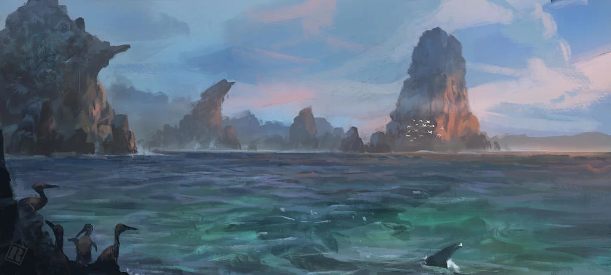
Nuevas desventajas
La mayoría de las desventajas que hay en esta ambientación están relacionadas con la locura y el horror.
Pueden ser bastante limitantes, así que ve con cuidado a la hora de escogerlas y trata consensuarlas con
tu director de juego. Con una sola persona sentada a la mesa con "La llamada de Cthulhu" es
más que suficiente.
Más cerca de la locura (mayor)
Te encuentras más cerca de la locura que el resto del mundo. Tu equilibrio mental es más frágil
que el común de los mortales. Puede ser por muchas razones: genética, infancia traumática, ... Sea como sea,
tu psique es más débil de lo normal y estás más cerca de la locura que el resto de tu equipo.
Empiezas con 3 puntos de cordura en vez de 4 como es normalmente. Nunca podrás tener
más de 3 puntos de cordura, aunque termines una campaña con éxito y el DJ diga que recuperáis todos
los puntos de cordura.
La llamada de Cthulhu (menor)
Tu mente artística e imaginativa es muy susceptible a las ondas mentales del Gran Cthulhu,
teniendo terribles pesadillas sobre Cthulhu y su tumba acuática de R'lyeh.
Siempre que te duermas sin tener benis, tendrás unas horribles pesadillas que
no te dejarán dormir y tendrás un nivel de fatiga al día siguiente hasta que descanses una
noche entera teniendo un beni y, por tanto, sin pesadillas. Durante las pesadillas podrás hacer
uso de su habilidad de Mitos de Cthulhu para tratar de sacar información, sobre Cthulhu, R'lyeh,
sus adoradores y sus planes.
Camaradería pirata (mayor)
Eres extremadamente leal a otros piratas, para ti son tu verdadera familia de una forma casi fanática.
Eres incapaz de ver que estén haciendo cosas mal y les defenderás a capa y espada. Los planes de
otros piratas no tienen fallos, los apoyas incondicionalmente y participas activamente. Esto seguramente
te va a meter en muchos problemas porque los piratas no son famosos por sus grandes ideas, si no no serían
piratas. Además, el resto de la piratería lo sabe y siempre te presentan sus locas ideas porque saben
que siempre aceptas.
Trastornos mentales
Todo el sistema de horror/cordura típica de los juegos basados en la obra de Lovecraft se basa
en trastornos mentales que vayan lastrando a tu personaje hasta acabar locos en un callejón del puerto
de Tortuga gritando a los viandantes sobre que su fin está cerca cuando el gran Cthulhu despierte de su tumba
acuática.
Todos estos trastornos mentales debemos tratarlos como desventajas y se les aplican todas las reglas
de las desventajas.
Además, de las desventajas listadas a continuación puedes usar como trastornos mentales
Avaricioso, Arrogante, Envidioso, Exceso de Confianza, Delirio, Fobia, Hábito, Manía y Sanguinario.
Amnesia y flashbacks (menor/mayor)
El cerebro de tu personaje, muy sabiamente, ha bloqueado parcialmente el recuerdo concreto de una
situación traumática (cómo le torturaron, cómo presenció como un vampiro de fuego quemaba a toda su
familia, ...). No quiere decir que no recuerde ese hecho concreto, pero solo generalmente.
Los detalles son lo que ha reprimido y todos sabemos que el demonio está en los detalles.
Esos detalles vuelven a su mente como flashbacks mostrándoles los momentos más traumáticos
del evento que produjo la amnesia, los gritos espeluznantes, el olor a sangre podrida,
los brillantes ojos del asesino, ...
En juego, supone que una vez por sesión en momentos de estrés puede sufrir esos flashbacks
fallando la tirada que vaya a hacer sin posibilidad de gastar un Beni para repetirla.
Por estrés entendemos cualquier tirada enfrentada, desde jugar al póquer a discutir
con un oponente político o tratar de entrar sigilosamente en la casa del gobernador.
Si se coge como mayor, el DJ podrá hacerle fallar cualquier tirada de combate
y dejarle aturdido como si le hubieran hecho una finta o un truco sucio.
Depresión (mayor/menor)
Tu PJ sufre depresión y todo se le hace cuesta arriba, tiene siempre un bajo estado de ánimo y
sentimientos de tristeza.
Si es menor al principio de cada sesión deberá
tirar un
d6. Si consigue un éxito, sobrelleva la depresión hasta la próxima sesión. Si falla, pierde uno de sus
benis
hasta la próxima sesión. Si es mayor directamente cuenta con un beni menos.
Trastorno de ansiedad generalizada (mayor/menor)
Este complejo trastorno mental consiste en una ansiedad general y continua por todos los aspectos de
la vida. Se siente una ansiedad tremenda por asuntos que no son tan importantes, se siente ansiedad
por tomar decisiones y elegir la peor, se sienten situaciones normales como más amenazantes de lo
que son e incluso se siente ansiedad por tener ansiedad.
En juego, el personaje con este trastorno recibe un -2 a todas las tiradas que
necesite para
tomar decisiones. Por ejemplo, hará una tirada de Tácticas con -2 para decidir que puerta es
mejor para atacar la cárcel local y liberar a tus compañeros.
Como mayor directamente no podrá
hacer la tirada, la ansiedad le atenazará dejándole en blanco.
Ataques de pánico (mayor/menor)
Están muy asociados con el trastorno anterior. Tu personaje sufre un miedo terrible de
repente y sin sentido ante una situación o evento normal (normal para el personaje).
Como desventaja menor, una vez por sesión el DJ podrá obligar a tu PJ a
hacer una tirada de Espíritu o sufrirá un terrible ataque de pánico que le imposibilitará
llevar a cabo la acción que quería hacer.
En caso de que sea mayor, no hará falta tirada, el DJ podrá hacer que el miedo
atenace al personaje directamente imposibilitándole seguir con la acción que deseaba hacer.
Como DJ te aconsejo que uses sabiamente esta desventaja, sobre todo en mayor. Puede ser muy
frustrante para cualquier persona no tener control de su personaje. Mi consejo es que lo uses como una
forma de encauzar a quien se salgan de madre.
TOC - Trastorno obsesivo-compulsivo (mayor)
El trastorno obsesivo-compulsivo (TOC) se caracteriza por un miedo no
deseado (obsesiones) que provocan comportamientos repetitivos (compulsiones). Por ejemplo, un miedo a
las enfermedades puede llevar a un paciente de TOC a lavarse compulsivamente las manos.
Deberás elegir una fobia menor y un hábito menor relacionado para formar el TOC de tu personaje.
Paranoia (mayor/menor)
Tu personaje está convencido de que los enemigos están en todas partes, y cree que todos están contra él.
Siempre está mirando a su espalda esperando una traición de sus compañeros o tratando de escuchar cómo
conspiran
a sus espaldas.
Como desventaja menor, tienes un -1 en todas las tiradas de habilidad que exijan concentración
(como abrir cerraduras, jugar a las cartas, descifrar un código, …) cuando otros están a tu alrededor.
Si se toma como mayor, además, el -1 se aplicará a todas las tiradas de
percepción, ya que estará más preocupado desvelando conspiraciones y enemigos ocultos que en vigilar o buscar.
Megalomanía (mayor/menor)
La megalomanía se caracteriza porque la persona tiene ideas de grandeza, de manera que puede mentir,
manipular o exagerar algunas situaciones o a las personas, a fin de conseguir sus objetivos.
A nivel menor deberá elegir algo en el que quiere el mejor (el más fuerte, el más rápido,
el más rico, ...), esto hará que actúe de forma desafiante y agresiva contra las personas que es mejor
que él y obtendrá un -1 a todas las tiradas de interacción social con esas personas. A nivel mayor será
a nivel general contra toda persona que pueda ser mejor que él en algún campo en el que esté cualificado,
es decir, que tenga atributo/habilidad d8 o más.
Nuevas ventajas
Como en el caso anterior de nuevas desventajas, todas las nuevas ventajas de ¡Arrr! Cthulhu están muy
relacionadas
con el horror y la cordura y como en el caso anterior pueden tener mucha influencia en el juego, así que
trata de consensuar la elección de estas desventajas con tu DJ y el resto de la mesa.
Acostumbrado al horror (tipo de monstruo)
A base de enfrentarte a un horror específico te has acostumbrado y tu cordura no sufre al estar
en su presencia.
A efectos de juego baja 4 niveles el TPC de un monstruo. Si el TPC modificado baja
por debajo de d4 no necesitas hacer tirada de TPC. Por ejemplo, si estás "acostumbrado a los profundos"
al ver un profundo (TPC d4) no tendrás que tirar, pero si ves una horda de 1000 profundos (TCP d12+1)
solo tendrás que enfrentarse a un TPC (d6, 4 niveles menos).
Experiencia con los Mitos
Has tenido experiencias con los Mitos, quizás en tu niñez o adolescencia. Puede ser que vengas de
un linaje de adoradores de Primigenios o que la sangre de profundo corra por sus venas. Puede ser
que te enfrentaras a un monstruo de los Mitos y consiguieras sobrevivir o que tu abuela te
transmitiera parte de los conocimientos prohibidos de su akelarre de brujas.
A nivel de juego, podrás empezar con las ventajas "Nuevos poderes" y "Puntos de poder". Es
decir, podrás empezar tus aventuras con la capacidad de hacer hechizos. Además, podrás adquirir
con puntos de creación la habilidad Mitos de Cthulhu a d4 y dispondrás de un libro de los Mitos
generado aleatoriamente. También podrás gastar puntos hasta d4 para la habilidad idioma Cthulhunés.
Imán de lo extraño
Todo lo extraño se siente atraído hacia ti para bien y para mal. Abres y lees el libro maldito,
te pierdes en el bosque y acabas encontrando la casa de la bruja o se te cae una probeta del laboratorio del
científico loco.
Todas las tiradas de botín en las que te veas involucrado podrás repetirlas gastando un beni y el
grupo podrá quedarse con el mejor resultado. En caso de no conseguir ningún éxito en ninguna de las tiradas, el
imán de lo extraño deberá hacer una tirada en la tabla de maldiciones, pero la duración solo será en
horas y recuperarás el beni gastado.
En caso de que haya varias personas con esta ventaja, cada uno tendrá que gastarse un beni
y añadirá una tirada extra. En caso de maldición, todos los jugadores con la ventaja serán maldecidos.
Sensibilidad celta
Tienes una sensibilidad especial a las energías extrañas que nos rodean, desde los diferentes
planos, pasando por otras dimensiones, hasta la magia y en general todo lo relacionado con los Mitos.
Como la desventaja "Llamada de Cthulhu" está muy relacionado con la sensibilidad y la creatividad.
El héroe obtiene un +2 a todas las tiradas de Mitos de Cthulhu, pero también un -1 a todas las
tiradas de TPC.
Ritualista
No has llegado a desarrollar tus dotes de hechicería, pero si controlas una serie de rituales que son de uso
común en tu comunidad o en tu familia.
Empiezas con 4 rituales, puedes elegirlos tú mismo, pero debe tener cierta coherencia con tu
historia. Si tienes "Brindar al mar" porque vienes de un pueblo de pescadores, no tiene mucho sentido
que sepas "Protección de la cosecha" que sería más de campesinos de interior. Además, tienes un +2 a las
tiradas de Conocimientos generales relacionados con magia y hechicería.
Cofrade de la Hermandad del sargazo
Eres integrante de pleno derecho de esta sociedad secreta que lucha contra los seres de los Mitos y sus
terribles planes para la humanidad.
Todas las personas que forman parte de la hermandad podrá ser considerado como un aliado.
Por contrapartida deberás seguir a rajatabla las decisiones que la hermandad tome. Además, deberás ayudar
al resto de cofrades.
Te da acceso también a la red de pisos francos de la Hermandad. Diciendo la contraseña correcta a su cuidador,
este te dará acceso al piso y podrás hacer uso de sus instalaciones. Toda ciudad de más de 2.000 habitantes tiene un piso
franco que puede ser desde un habitáculo a un lujoso apartamento.
Esta ventaja no puede ponerse en la creación del personaje y solo el DJ puede dártela.
No se pueden gastar avance para conseguir esta ventaja.
Jerga Pirata
La jerga pirata no es un idioma en sí, no tiene una gramática, una pronunciación ni una grafía. Es un
batiburrillo de palabras
y expresiones mal pronunciadas con un montón de gestos con las manos que solo con práctica y oído puedes
aprender
de otros piratas. Un pirata puede estar
hablando inglés y no entenderle una sola palabra de lo que dice. Nada tiene mucho sentido y solo si estás
familiarizado puedes pillar.
Puedes hablar con otra persona que sepan jerga pirata y vuestra conservación no podrá ser
entendida por nadie más que no tenga jerga pirata. Esto se aplica a todo tipo de razas no-humanas, incluso
deidades menores.
Si alguien consigue una transcripción de la conversación y consigue
un avance en una tirada de Investigar, podrá entender la conversación.
La jerga pirata no puede escogerse en la creación del personaje, a no ser que tu historia
este relacionado con la piratería, por ejemplo, siendo grumete en un barco pirata o trabajando en una taberna
del puerto.
Barco propio
Prerrequisitos: Navegar d6
Esta ventaja solo puede comprarse en la creación de personaje. Una vez empezadas las aventuras, los
barcos solo podrán comprarse con dinero.
Esta ventaja supone que empiezas con un barco de tu propiedad. Puede ser una nave rápida o una nave de carga.
Normalmente, debería ir acompañado de ventajas como Alcurnia o Rico que justifiquen poseer el barco. Si no
debería haber una buena historia que explique como consiguió la nave.
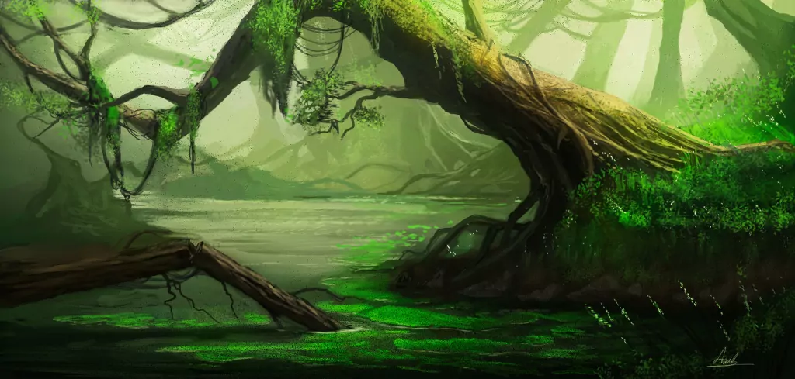
Benis
Hay nuevos usos para los benis en dos apartados muy importantes de este juego, la magia, la cordura y la
navegación.
Debes hacer comprender a tu mesa que estos usos normalmente deben ser reservados para momentos épicos, cuando
la situación es a vida o muerte y sobre todo "queda bien" en la historia.
Puedes gastar todos tus benis (mínimo 1) para lanzar un hechizo sin necesidad de gastar puntos de poder.
Esto
supone que se pueden lanzar hechizos sin tener puntos de poder o lanzar hechizos que piden más puntos de poder
de los que tienes.
Gastando todos tus benis (mínimo 1) puedes hacer un golpe de timón en tus viajes por mar y negar un
resultado
en la tirada de encuentros en el mar. Se acerca una tormenta y antes de verse rodeada por ella, el piloto del
barco
hace girar el timón 180º y busca una ruta alternativa.
Como se ve más adelante, se pueden gastar benis para que los trastornos mentales no sean permanentes.
Equipo
Durante la creación de tu personaje solo tendrás acceso al equipo normal de una persona del siglo XVIII. Eso
quiere decir
que no tendrá acceso a material con componentes electrónicos, motores de combustión, óptica de precisión, ... La
máquina
de vapor se está estudiando y los telares mecánicos no se inventarán hasta dentro de unos 10 años.
Todo producto manufacturado es de origen artesanal, herreros, carpinteros, tejedores, etc. trabajan en sus
talleres y producen a mano
todo tipo de productos. Eso quiere decir que muchos productos exigirán un tiempo de fabricación. Lo normal es
que
el herrero tenga
unas pocas armas en su taller para que veas su arte y destreza y te haga en una semana el arma que estás
buscando.
Si tu mesa tiene dudas sobre si tienen acceso a un tipo concreto de invento, es tan fácil como mirar su año de
invención
en internet y por lo menos añadirle unos 15 años hasta que se haga popular y llegue al Caribe. Quizás en
Londres
podrías conocer al inventor en persona y comprarle su invento, pero estamos en el Caribe y las nuevas ideas
tardan
años en llegar.
Armas
Puedes hacer uso de todas las armas antiguas y medievales que vienen en el manual SWADE, pero aquí te
presentamos
las más icónicas
para una ambientación de piratas.
Listado de Armas cuerpo a cuerpo
Nombre
Descripción
Estadísticas*
Sable de abordaje
Los sables de abordaje es una hoja curva con un solo filo, pero tiene menos curva que el de
caballería.
Espada corta
Alfanje
Es una espada a una mano de hoja ancha y curva, con filo en un solo lado.
Espada larga
Hacha de abordaje
Esta hacha de tamaño pequeño a una mano tiene una hoja curva en un lado para cortar cuerdas
y un pico en la otra para romper puertas y para poder clavarla en la madera y usarla como ayuda al
escalar.
Hacha de mano
Machete
Se trata de un cuchillo largo (menos de 60 cm y tiene un solo filo), pero más corto que una espada.
Se utiliza para cortar la caña de azúcar, abrir camino en la jungla o como arma blanca.
Espada corta
Espada ropera
Es una espada de hoja recta y larga, esgrimida a una mano y con una empuñadura de diferentes estilos
que
protegía toda la mano.
Es la típica arma que vemos en las películas de mosqueteros.
Espada larga
Daga
Estas armas de filo de pequeño tamaño podían usarse también en la mano izquierda como defensa o para
lanzar golpes cuando entraban
en combate muy cerrado, algo normal cuando se combatía bajo cubierta.
Cuchillo/daga
Tridente de profundo
Esta lanza acabada en dos o tres puntas es el arma típica de los profundos y seguramente tendrás que
usarlo
alguna vez cuando estés
rodeado de ellos y hayas perdido todo tu equipo.
Lanza
* Esta columna marca las estadísticas de que arma del Manual Básico de SWADE debes usar para cada arma de la tabla.
Dentro del combate a distancia puedes hacer uso de las armas a distancias primitivas y armas de pólvora
negra, es decir pistolas de chispa, mosquetes y trabucos.
Listado de Armas de fuego
Nombre*
Descripción
Pistola de chispa
Una pistola de chispa es una arma corta de fuego que utiliza un mecanismo de ignición de golpe de
pedernal,
Mosquete
Es una arma larga de chispa que tenía más capacidad de daño, mayor distancia y mayor precisión que la
pistola.
Trabuco
Un trabuco es una arma de fuego de gran calibre que como las anteriores se cargaba por el cañón. Los
cañones
son cortos y se le considera el predecesor de la escopeta.
Granadas
La granada es un proyectil explosivo que se lanza con la mano. Eran bolas de metal llenas de pólvora y
a
veces
metralla con una mecha. Se encendían la mecha y se lanzaba la granada.
* Las estadísticas de estas armas puedes encontrarlas en el manual básico de SWADE.
Arma lanzarrayos yithania
Esta arma de rayos parecida a una cámara de fotos de gran tamaño posee un gran poder
destructivo. Tiene dos grandes asas y al pulsarse los gatillos que hay en cada asa lanza
unos rayos que calcinan a su objetivo. Es por ello que se necesitan dos manos para poder usarla.
Al dispararse los rayos de eléctricos generan un gran zumbido del mismo nivel que disparando
un arma de pólvora, es por ello que no son armas de infiltración si no de guerra.
El rayo de energía que lanza es plenamente visible, mucho más de noche, y usarla en
público podría suponer ser acusado de brujería.
Arma lanzarrayos yithania
Distancia
Daño
PA
CDF
Munición
FUE Min.
Peso
Coste
50/100/150
2d8
2
1
35
--
2
--
Notas: Exige usar las dos manos para disparar.
Cauterizante (+2 a sus tiradas de Vigor para evitar el desangramiento).
Recarga 1 de munición por minuto, forma que un 35 minutos tendrías el
arma plenamente cargada.
Cañón lanzarrayos yithanio
Los laboratorios de RCPC han podido aprender mucho de la tecnología yith y, como no, lo han
usado para crear armas más destructivas. Han desarrollado un arma lanzarrayos de gran tamaño, un cañón
lanzarrayos de gran poder destructivo muy precisos y con a larga distancia. A diferencia de sus predecesores,
los lanzarrayos yithanios, estos cañones están pensados para ser usados por humanos.
Cañón lanzarrayos yithanio
Distancia
Daño
PA
CDF
Munición
Coste
150/300/600
4d10
3
1
35
--
Notas: Necesita una dotación de 1 persona al no tener que recargar. Puede
hacer que se sobrecaliente y termine explotando. Haría un daño de 3d10 en una plantilla mediana.
Recarga 1 de munición por cada media hora, forma que en menos de 1 día tendrías el cañón
plenamente cargado.
Protecciones
En el 1722 las armaduras y los escudos están ya en franco desuso con la aparición de la pólvora.
Además, son pesadas, muy caras y quitan maniobrabilidad, por no hablar de que no son nada frescas.
En unas pocas rondas de combate, un defensor con armadura puede caer inconsciente por el calor y el esfuerzo que
supone
combatir con armadura pesada. Sin olvidar que si te caes el agua date por muerto.
Lo normal es que el cuero de diferentes animales, desde cuero de vaca hasta piel de cocodrilo, y la ropa de
tela resistente sean las únicas protecciones que se vean normalmente.
Puedes encontrarte guardas con partes de armadura como peto o casco, pero seguramente estén sudando la gota
gorda.
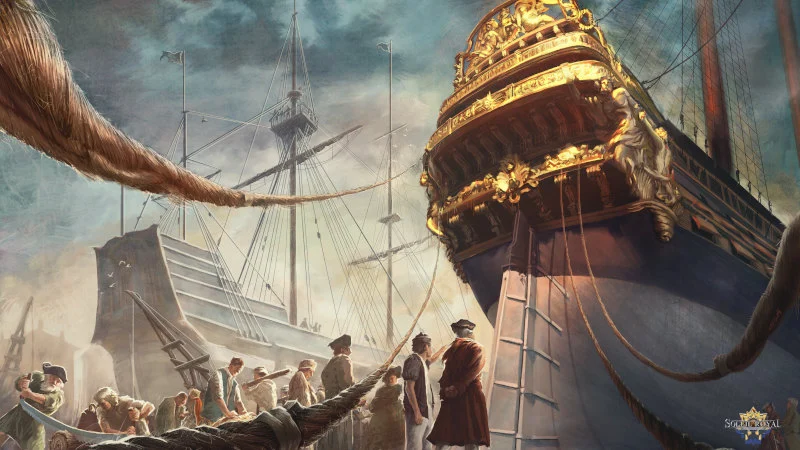
Embarcaciones
El tema de las embarcaciones vamos a tratarlo de forma genérica creando 5 tipos de naves:
Pequeñas: perfectas para pescadores y pequeños comerciantes
Rápidas: algo más grandes que las anteriores y las más rápidas, perfectas para contrabandistas.
De transporte de carga: grandes y lentas para llevar mucha carga.
De combate: una media de las anteriores, rápidas, con capacidad de carga y con defensas.
De guerra: como las anteriores pero preparadas no solo para la defensa sino también para el ataque.
Los barcos tienen dos campos especiales Además, de los normales de vehículos. La carga es el número de
barriles llenos de carga para comerciar que puede llevar el barco sin sufrir penalizaciones.
Provisiones son el coste de las provisiones necesarias para navegar una semana en doblones.
Naves pequeñas
10.000 doblones
Son naves pequeñas de un mástil y poca tripulación, perfectas para la pesca o el
transporte de carga o pasajeros entre islas. Su pequeño tamaño y calado les
permite meterse donde otros barcos más grandes no pueden. No están preparadas para grandes travesías.
Balandro, cúter, ...
Tamaño
Maniobra.
Velocidad máxima
Dureza
Tripulación
Carga
Provisiones
8
-1
15 km/h
15 (3)
3 - 10
20
150
Notas: +2 heridas.
Armas: Sin armas.
Naves rápidas
40.000 doblones
Las más rápidas y maniobrables del Caribe, estas naves son perfectas para los contrabandistas
que quieren dar esquinazo a las naves que vigilan el comercio entre islas del Caribe. Tienen más
capacidad de carga que las pequeñas, pero menos que las de carga, pero normalmente su carga es más
valiosa (e ilegal).
Goleta, clíper, ...
Tamaño
Maniobra.
Velocidad máxima
Dureza
Tripulación
Carga
Provisiones
9
0
25 km/h
16 (3)
8-20
40
350
Notas: +2 heridas.
Armas: Sin armas. Se puede instalar cañones quitando espacio de carga y
a razón de 4 toneles por cada cañón hasta un máximo de 8 cañones (4 por lado del barco).
Naves de carga
60.000 doblones
Es el más grande de los navíos con una gran capacidad de carga, pero es tremendamente lento
y muy poco maniobrable. Está preparado para largas travesías por mar. No suelen estar armadas, lo normal
es que varias de estas naves lleven una escolta de buques de combate o de guerra.
Carraca, naos, ...
Tamaño
Maniobra.
Velocidad máxima
Dureza
Tripulación
Carga
Provisiones
15
-2
10 km/h
23 (4)
40-150
300
600
Notas: +3 heridas. Puede quitarse espacio de carga para meter más
gente y viceversa a razón de 1 personas por cada 6 toneles.
Armas: Sin armas. Se puede instalar cañones quitando espacio de carga y
a razón de 4 toneles por cada cañón hasta un máximo de 20 cañones (10 por lado del barco).
Naves de combate
80.000 doblones
Las naves perfectas para los piratas y las fuerzas del orden. Su buena velocidad, maniobrabilidad
y capacidad de carga les permite atacar a barcos de carga y plantarle cara a otras naves de guerra.
Fragata, navío de escolta, galeón, ...
Tamaño
Maniobra.
Velocidad máxima
Dureza
Tripulación
Carga
Provisiones
14 (Colosal)
-1
15 km/h
20 (4)
20+80
80
600
Notas: Blindaje pesado.
Armas: Cañones (entre 16 y 46, fijos en las bordas).
Naves de guerra
120.000 doblones
Auténticas fortalezas flotantes. Ellas solo pueden tener controlada una ruta comercial
y varias de ellas sincronizadas podrían atacar y tomar cualquier ciudad portuaria del caribe.
Solo grupos muy fuertes y muy bien organizados de piratas pensarían en plantarle cara a
esta bestia de los mares.
Navío de linea, galeón, bergantín ...
Tamaño
Maniobra.
Velocidad máxima
Dureza
Tripulación
Carga
Provisiones
18
-2
15 km/h
20 (4)
40+120
160
1.000
Notas: Blindaje pesado.
Armas: Cañones (entre 30 y 60, fijos en las bordas).
Modificando los barcos
Las historias de Lovecraft tienen en muchas de ellas unos tintes de ciencia extraña, de inventos imposibles
que explotan singulares conceptos científicos y queremos introducir todo eso a través de las modificaciones de
los
navíos.
Es por ello que tenemos modificaciones medianamente realistas pero a la vez locas y futuristas que explotan todo
ese
concepto de ciencia extraña y luego tenemos modificaciones más propias de los Mitos fruto de experimentar con
las criaturas monstruosas para mejorar los barcos.
Si tu mesa captura un barco modificado sin más de dos heridas y pueden llevarlo a tierra, podrán
desmotar las mejoras e instalarlas en su barco. Por cada modificación tendrán que hacer una tirada de Reparar
(o
de Mitos
si es una modificación extraña) para entender como hicieron la modificación y una segunda tirada de Reparar para
estudiar como
quitarla e instalarla en su barco. Cada avance en la tirada de Reparar le quitará media
semana a los trabajos de modificación de su nave. La modificación tiene un coste en materiales y también se
pueden
usar avances para abaratarlo, a un coste de un quinto del coste por avance. si una modificación cuesta 500
doblones y gasto 2 avances tendré que pagar solo 300 doblones.
Si las modificaciones se hacen en un astillero, el maestro carpintero podrá hacer la tirada de Reparar y duran
la
mitad de tiempo, pero el coste se dobla. Lo divertido puede ser como le explicas a los artesanos que trabajan
en el dique seco los olores raros que provienen de los barcos o porque se oyen chillidos de dolor cuando
clavan un clavo en la madera del casco.
Recordad que no se pueden poner modificaciones que ocupen espacios que ya se han modificado, por ejemplo,
no puedes poner velas de profundo si ya tenías velas de noctivago. Deberás
quitar la modificación anterior (con un coste en tiempo de la mitad de ponerla, mínimo media semana).
No vamos a ponernos exquisitos y las modificaciones podrán traspasarse de un barco a otro sin
importar el
tamaño o la forma del barco de origen y de destino. Pero si quieres eres libre de poner las limitaciones que
quieras.
Modificaciones normales para barcos
Gran parte de las aventuras que pasen tus héroes van a ser en navíos de todo tipo, es por ello que queremos
darles la oportunidad
a los jugadores de poder jugar con ellos personalizándolos y mejorándolos. Es por ello que te mostramos una
serie
de modificaciones divertidas
que podrán instalarles a sus naves para darles personalidad. Si van de contrabandistas que le pongan una esclusa
para poder meter y sacar
contrabando ilegal. Si van de exploradores que tengan ojos de buey en el fondo para poder investigar el fondo,
...
Tabla de Modificaciones normales para barcos
Descripción
Semanas
Coste
Parte del barco
Exclusa de aire en el fondo
Esta modificación es un desarrollo de los maestres de la RCPC
que permite a los profundos entrar y salir de un barco por el fondo sin ser vistos. Puede ser una forma
muy
simple de sacar o meter contrabando en el barco. En un combate naval los profundos podrían salir del barco
por la esclusa y abordar el barco enemigo por sorpresa.
2
300
Quilla
Ojos de buey en fondo del barco
A lo largo del casco se han colocado una serie de ojos de buey por debajo de la línea de flotación que
permiten
observar el fondo marino. Puede que así descubran barcos hundidos, ciudades sumergidas o detecten el
ataque de
un grupo de profundos. Si se ponen vigías en estos ventanucos, cualquier ataque por sorpresa de seres
acuáticos no obtendrá ningún beneficio.
1
400
Casco
Ariete
Toda la proa es reforzada para sostener una gran pieza de metal en forma de ariete que permite al barco
embestir
otros barcos o monstruos marinos de gran tamaño. El barco queda enganchado por el ariete y no pueden
separarse. En ese momento aprovecha para hacer un abordaje. Esta modificación permite que todas las
tiradas de embestir exitosas
se conviertan. Además, en una maniobra de abordaje exitosa. Además, la forma del ariete y su gran tamaño hace
muy difícil desengancharse,
el -4 normal a la tirada de soltarse se convierte en un -6.
1
300
Proa
Velas reforzadas
Una combinación de fibras naturales descubiertas en el nuevo mundo y mejores sistemas de tejido y
entrelazado de esas fibras dan como resultado unas velas muy resistentes que pueden aguantar
en las peores tormentas.
La embarcación obtiene un 20% de velocidad extra debido a que puede largarse más vela sin
temer que se rajen.
1/2
200
Aparejos
Cortacadenas
Muchos puertos desplegaban en su entrada unas gigantescas cadenas para evitar que los
piratas pudieran entrar al puerto y atacarlo. También lo usaban para evitar que escaparan barcos
del puerto. El cortacadenas es una gigantesca horquilla afilada que se puede desplegar
en la proa del barco en la línea de flotación y que ayuda a cortar las cadenas cuando
se embiste contra ellas. Al realizar la maniobra de embestida contra la cadena
con el cortacadenas se obtiene un +4 a Navegar y +4 al daño para cortarla.
1/2
400
Proa
Cometa de vigía
Esta cometa de gran tamaño se ata al barco y se hace volar cuando hay viento. Tiene un
arnés de cuerdas que permite a una persona elevarse por los aires y vigilar desde
alturas
mayores que la cofa del barco. Otorga +2 a Notar a los vigías y es especialmente útil
en alta mar, ya que permite ver los barcos que se acercan incluso antes de que ellos
puedan
verte, permitiendo montar o escapar de emboscadas. Si se corta la cuerda, el vigía puede
intentar planear y aterrizar con una tirada exitosa de Atletismo. El tiempo de instalación
realmente es de entrenamiento para hacer volar y aterrizar la cometa.
1/2
600
Popa
Modificaciones extrañas para barcos
A lo largo de sus aventuras contra la RCPC y la Orden del Gran Cthulhu tu mesa va a encontrarse
con muchos barcos con extrañas modificaciones fruto de experimentos de la RCPC con los seres de los mitos.
Estate seguro de que un carguero de línea de la RCPC no tendrá ninguna extraña modificación, pero el Desgracia
será más un ser de los Mitos que un barco tal y como lo conocemos.
Qué decir que las modificaciones extrañas pueden generar horror, sobre todo en los barcos enemigos, y
viene en la descripción de la modificación si generan o no horror y su TPC. Si varias modificaciones tiene TPC,
se coge la más alta y se suma un nivel más por cada modificación adicional con TPC.
Tabla de Modificaciones extrañas para barcos
Descripción
Semanas
Coste
Parte del barco
Casco de shoggoth
El casco de la nave estÁ cubierto por un shoggoth que le otorga mucha dureza y que sella el
casco en caso de fugas. Desafortunadamente, el caso también se llena de pseudópodos, proto-globos
oculares y tiene cierta fosforescencia de noche. +10 dureza y a todo intento de provocar fugas.
en el barco fallan TPC: 1d6
3
800
Casco
Velas de alas de noctivago
Las velas negras del barco tienen una forma extraña, ya que se han hecho cosiendo la piel
curtida de las alas noctivagos demacrados. La embarcación obtiene un 40% de velocidad extra
debido a que puede largarse más vela sin temer que se rajen y están preparadas para interactuar
correctamente con el viento. TPC: 1d4
1/2
100
Aparejos
Tecnología Mi-Go (navegación)
Este aparato de tecnología Mi-Go parece una estación meteorológica muy avanzada con todo tipo de
funciones.
La estación tiene diferentes funciones como dar la posición del barco, su dirección, la previsión del
tiempo, etc.
A efectos de juego, aporta un +1 a las tiradas de navegación para llegar a determinado punto en el mapa.
También
permite saber el tiempo antes de partir y decidir si partir o esperar una semana a ver si hay buen tiempo.
1/2
200
Proa
Tecnología Mi-Go (comunicación)
En el puente del capitán se coloca un gran tubo (2 metros de altura por 1 metro de diámetro) metálico
con llaves, tubos e indicadores que produce
un extraño zumbido. El tubo cuyo contenido se desconoce es un metal extraterrestre parecido al bronce.
Este artilugio es tecnología Mi-Go que permite comunicación telepática. El capitán o el
contramaestre se colocan una banda metálica en la frente y pueden enviar órdenes a todos los sujetos
que haya en el barco. Esto permite dar órdenes claras y precisas y recibir respuesta a la velocidad del
pensamiento. Esta eficiencia en el trabajo en equipo de los marineros otorga un +1 a la maniobrabilidad
de la nave. No debe usarse muy de seguido, ya que genera jaquecas y cansancio en los receptores de
la telepatía.
1/2
200
Popa
Camuflaje de pólipo volante
La cubierta, los mástiles y las velas han sito trato con un barniz y una cera con extracto de pólipo
volante
que hace que la luz actúe de forma extraña como cuando ves una carretera a lo lejos un día de sol y calor.
No se puede hacer invisible como los pólipos, pero ganan bonus al camuflaje si pueden esconderse, por
ejemplo
en la niebla o entre los islotes de los cayos. Desde luego lo que no permite es entrar a un puerto sin ser
visto.
Otorga un -2 a las tiradas para detectar la nave.
2
400
Cubierta, mástiles, velas
Mascarón de anulación de magia Lloigor
Usando la capacidad de drenar la magia de los lloigors, el mascarón de proa de la nave absorbe
toda la magia de la zona, evitando que se puedan lanzar en el barco y 500 metros a su alrededor.
El barco drena 1d6 puntos por turno si estás alrededor y 1d8 por turno si estás subido al barco.
1/2
300
Proa
Tentáculos de Retoño oscuro
Se ha fusionado la quilla del barco con un retoño oscuro, dotando al navío de tentáculos que
permiten durante periodos cortos de tiempo pasar por zonas de poco calado, incluso moverse por tierra.
Los tentáculos se despliegan por toda la quilla y el barco puede literalmente andar
usando los pseudópodos como piernas hasta 500 metros. TPC: 1d6
3
800
Casco
Velas de piel de profundo
Estas velas de textura gomosa y color verdoso están literalmente hechas con piel de profundo.
Son muy resistentes y casi imposibles de rasgar, pudiendo incluso aguantar la fuerza de un huracán. Son
ignífugas y
muy elásticas, hinchándose más de lo normal con buen viento. En general ofrecen un 20% más de velocidad
máxima
al barco que las lleve. Los profundos que vean estas velas atacarán rabiosos a la nave que las use.
1/2
100
Aparejos
Generador de oscuridad de Mi-Go
La RCPC ha conseguido crear unos hongos basados en la genética de los Mi-go que reproducen su capacidad
de crear oscuridad. Los hongos crecen en un gran cajón (2 metros cúbicos) cerrado casi herméticamente que
se coloca en la proa o popa del barco.
Si se abre el cajón y se proyecta una fuente de luz, estos reaccionan y se defienden de la luz creando una
zona oscura que sustrae toda la luz cercana. Si bien de día no sirve para nada, de noche hace al navío totalmente
invisible.
El barco solo puede ser detectado por el ruido que haga o entrando en contacto con él, pudiendo por
ejemplo colarse dentro
de un puerto sin ser visto. El único problema es que la oscuridad también afecta al interior del barco y
la tripulación no ve nada. Este
problema se puede solucionar haciendo uso de hechizos de visión nocturna, vista lejana o luz. Desde fuera,
un hechizo de luz podría
contrarrestar el efecto de los hongos.
1/2
300
Popa o Proa
Tentáculos de shoggoths
Se han cortado e injertado una serie de tentáculos en el casco del barco a la altura de la línea de
flotación.
Estos tentáculos han sido transformados hipnóticamente (como hacían los Antiguos con sus siervos
shoggoths) para que
se transformen en remos y obedezcan las órdenes del capitán del barco. Estos tentáculos proporcionan
máxima
velocidad durante una hora, aunque no haya viento y
permiten que el barco tenga plena maniobrabilidad excepcional en situaciones complicadas. Podrían meterse
en un campo
de arrecifes sin problemas, moverse de lado de forma que no ofreces el largo de navío enemigo al girar,
pasar por angostos pasos... Como problema es que solo son funcionales si el capitán está en el barco y
está consciente. Un capitán dormido, malherido o inconsciente no puede hacer uso de los tentáculos. Al
mover los tentáculos a un nuevo barco, su control deberá ser dado por el antiguo capitán al nuevo mediante
una palabra de control que solo conoce el anterior capitán. TPC: 1d6
1
800
Casco
Cañones Yithianos
Basándose en la tecnología yith de lanzarrayos, parte o todos los cañones han sido reemplazados por
armas lanzarrayos de gran tamaño. Son más destructivos que un cañón normal, tremendamente
precisos,
pudiéndose apuntar fácilmente a la Santa Bárbara del enemigo y hacerla estallar. Otra gran ventaja es que
no
necesitan munición solo un tiempo de recarga después de usarlo, con lo que no necesitas volver a puerto
para
abastecerte de munición.
TPC: 1d4. Después de dispararlos la primera vez.
1
200 por cañón
Armamento
NOTA: esta parte de la ambientación referente a las modificaciones extrañas puede ser muy
exagerada y romper el juego. Siéntete libre de olvidarte de ella si crees que no encaja con tu juego.
También puedes reservarla para momentos muy especiales y dejar estas modificaciones, por ejemplo,
solo en el barco de Barbanegra.
Horror y cordura
El horror y la cordura sustituyen a las reglas de miedo de SWADE. Las ventajas y desventajas que afectan
al
miedo
(como Osado o Cobarde) no son válidas en esta ambientación y no pueden ser adquiridas por los héroes. Todo
personaje
tiene 4 puntos de cordura y si pierde todos caerá en la locura y pasará a ser un PNJs al servicio del DJ.
Cada vez que un personaje se enfrente a un ser de los Mitos deberá hacer una tirada de enfrentada de
Inteligencia
contra la tirada de pérdida de cordura (TPC) del monstruo. Si pasa la tirada no ocurre nada, el personaje
ha
racionalizado correctamente lo que ha ocurrido y puede actuar con normalidad.
Si falla la tirada, deberá hacer una segunda tirada de Espíritu, si saca más éxitos que la tirada TPC
simplemente
quedará aturdido. Si falla, perderá un punto de cordura. Como ya hemos explicado, si pierde toda su cordura,
cederá
ante el horror y la locura y pasará a ser un PNJ.
Puede evitarse la pérdida de puntos de cordura, adquiriendo un trastorno mental permanente con un máximo
de 3
trastornos permanentes o gastando todos tus benis (mínimo 1) y adquiriendo un trastorno mental de forma temporal.
Los trastornos mentales son un tipo de desventaja y siguen sus mismas reglas. Para decidir el trastorno
deberá sacar
una carta y revisar la tabla de Trastornos. Si es temporal deberá consultar la tabla de Duración del
trastorno. Los
trastornos permanentes repetidos pueden apilarse si son menores, convirtiéndose en un trastorno mayor. Si
no
tendrá
que volver a coger una carta nueva. Los temporales simplemente ampliarán el tiempo.
Si se saca un Joker en cualquier carta relacionada con trastornos, no solo no adquieres el trastorno,
sino que recuperas un punto de cordura.
Tabla de Trastornos
♥
♣
♠
♦
2-3
Paranoia (menor)
Delirio (menor)
Fobia (menor)
Manía (menor)
4-5
Envidioso (menor)
Hábito (menor)
Fobia (menor)
Trastorno de ansiedad generalizada (menor)
6-7
Fobia (menor)
Manía (menor)
Delirio (menor)
Fobia (menor)
8-9
Amnesia y flashbacks (menor)
Ataques de pánico (menor)
Fobia (menor)
Arrogante (mayor)
10
Avaricioso (menor)
Megalomanía (menor)
Envidioso (mayor)
Arrogante (mayor)
J
Ataques de pánico (menor)
Megalomanía (mayor)
Avaricioso (menor)
Fobia (mayor)
Q
Trastorno de ansiedad generalizada (mayor)
Avaricioso (mayor)
Exceso de Confianza (mayor)
Sanguinario
K
Trastorno obsesivo-compulsivo (mayor)
Amnesia y flashbacks (mayor)
Ataques de pánico (mayor)
Delirio (mayor)
A
Fobia (mayor)
Paranoia (Mayor)
Hábito (mayor)
Depresión (mayor)
Tabla de Duración del trastorno
♥
♣
♠
♦
2 - 10
8 turnos
8 minutos
8 horas
8 días
J
10 turnos
10 minutos
10 horas
10 días
Q
12 turnos
12 minutos
12 horas
12 días
K
14 turnos
14 minutos
14 horas
14 días
As
20 turnos
20 minutos
20 horas
20 días
La TPC del monstruo es específica para cada PJ, pero solo debe hacerse una tirada con cada tipo de
monstruo,
aunque
la cantidad sí puede modificar la TPC. Es decir, que si nos encontramos con 4 profundos y una docena de
gules. Cada
jugador deberá hacer una tirada enfrentada contra los profundos y otra contra los gules.
Modificaciones de las TPC
Las TPCs pueden ser modificadas en determinadas situaciones.
Grandes grupos: Normalmente, los monstruos de los Mitos son seres solitarios o como mucho viven
en
grupos muy
pequeños, Sin embargo, hay monstruos que viven en grandes grupos y producen más o menos locura según su
número. No
es lo mismo encontrarse un profundo solitario en una cueva (TPC d4) que ver como cientos de ellos salen
del
agua y
devoran a toda la tripulación y hunden el barco. (TPC d12). Para los monstruos que tengan manada en su
TPC
deberás
consultar la tabla de Grandes grupos.
Acostumbrarse: Cada vez que pasas la tirada enfrentada de Inteligencia contra TPC te vas
acostumbrando
a ese
horror
en específico. Deberás apuntar las veces que ha pasado el TPC de determinado monstruo y hasta obtener 4
marcas, con
lo que estará acostumbrado a ese horror y obtendrá la ventaja Acostumbrado al horror. Si falla la TPC y
pierde
puntos de cordura o adquiere un trastorno mental permanente o temporal, perderá una marca.
Pásame la jarra de ron: Si el personaje puede prepararse para el horror al que se va a
enfrentar, por
ejemplo,
trincándose un buen lingotazo de ron de su petaca antes de abrir la puerta del laboratorio donde los
Mi-Go
experimentan con humanos, obtendrá un +1 a su tirada de TPC y durará toda la escena. Para poder
prepararse,
deberá
ser consciente de alguna manera de que va a enfrentarse al horror (por ejemplo, sabiendo que hay algo
raro al
otro
lado de la puerta), no tendrá que estar en una situación de estrés, por ejemplo, un combate,
persecución, …
y deberá
poder pasar unas 3 rondas preparándose para el horror que se le viene encima.
Frenesí del combate: Una vez empezado el combate, los jugadores no tendrán necesidad de hacer
TPC. La
adrenalina se
encargará de todo, pero tampoco se acostumbrarán al horror. Aunque si puede pasar que el monstruo
aparezca
por
sorpresa, les deje aturdidos y los ataque a continuación.
Tabla de Modificación del TPC por grandes grupos
Tamaño de la manada
d4
d6
d8
d10
d12
hasta tamaño del grupo (0)
d4
d6
d8
d10
d12
hasta tamaño del grupo x 2 (+1)
d6
d8
d10
d12
d12+1
hasta tamaño del grupo x 5 (+2)
d8
d10
d12
d12+1
d12+2
hasta tamaño del grupo x 10 (+3)
d10
d12
d12+1
d12+2
d12+3
hasta tamaño del grupo x 20 (+5)
d12
d12+1
12+2
d12+3
d12+4
hasta tamaño del grupo x 50 (+6)
d12+1
d12+2
d12+3
d12+4
d12+5
Recuperar cordura
La cordura solo se recupera entre campañas o en situaciones especiales de heroísmo excepcional. No hay
psicólogos ni psiquiatras que puedan reparar tu quebrada psique, solo enfrentarse al horror y vencerlo
puede ayudar a sanar tu mente.
Estas situaciones vendrán marcadas en la campaña. Por ejemplo, puede establecerse que salvar
a un pueblo de pescadores de ser masacrado por una horda de profundos puede recuperar 1 punto de cordura.
Hacer que Cthulhu vuelva a yacer eternamente en R'lyeh podría devolver toda la cordura.
Horror y secuaces
Todos los secuaces tienen un
único punto de cordura y si lo pierden caerán inmediatamente incapacitados entre gritos de horror o saldrán
corriendo
presas del miedo. Como los personajes jugadores podrán coger un trastorno en vez de perder su punto de cordura,
pero
no podrás hacerlo más que una vez.
Queda a discreción del DJ que le pasa al secuaz/aliado después de perder su punto de cordura.
Puede que se recupere tras el encuentro con graves trastornos mentales o no sea recuperable para el resto de la
campaña. Puede
ser una buena historia secundaria tratar de recuperar la cordura de un aliado enloquecido.
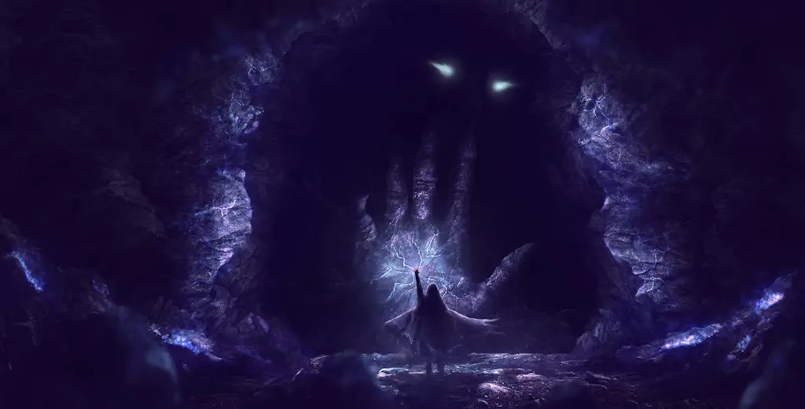
Hechicería primigenia
La magia es una parte fundamental de ¡Arrr! Cthulhu, tan fundamental como en los relatos de
los Mitos y como en estos, tiene una mezcla de magia ritual y de ciencia extraterrestre y futurista.
Pero no se nos debe olvidar que tiene que ser oscura y maligna. Es por ello que es una magia que tira más
de perversiones, acechadores en las sombras, velas y cálices y rituales con sacrificios que de auras de luz, bolas
de fuego,
rayos eléctricos y bendiciones. Si revisitas los relatos de Lovecraft verás que no hay magos con cayados en mano
lanzando rayos fuego, sino de siniestros hechiceros que lanzan maldiciones y sombras asesinas a sus
enemigos desde sus círculos de invocación.
Es por ello que la santería o vudú (o por lo menos el vudú de las películas y series de miedo) casa tan bien con
la magia
de ¡Arrr! Cthulhu. Es tenebroso, impuro, con sacrificios y muertos que se levantan. Como podrás ver más adelante,
muchos de los poderes de SWADE, toman forma en hechizos de inspiración vudú. Además, como bien nos ha enseñado
Monkey
Island el vudú y los piratas combinan muy bien.
Todo héroe en esta ambientación tiene capacidades mágicas, pero debe saber las fórmulas, los rituales y
las recetas para poder activar las fuerzas oscuras y enfocarlas de la manera que le interesa. Y la única
forma de conocer nuevos hechizos es estudiar tomos de los mitos Cthulhu. A nivel de juego, podríamos decir
que todo personaje tiene la ventaja Trasfondo arcano (Hechicería primigenia).
Ventajas de Hechicería primigenia
Trasfondo arcano (Hechicería primigenia)
Habilidad arcana: Mitos de Cthulhu
Poderes iniciales: 0
Puntos de poder (PP): Igual al nivel de Espíritu
Todo personaje dispone de tantos puntos de poder diarios como su nivel de Espíritu que recupera tras una
noche de descanso (8 horas de descanso sin interrupciones).
Hay objetos y pociones mágicas que pueden dar puntos temporales de poder.
Puntos de poder
La ventaja Puntos de poder otorga tantos puntos de poder nuevos como el Espíritu del personaje. Si
aumenta el
espíritu (temporal o permanentemente) aumentan los puntos de poder.
Nuevos poderes
La ventaja de Nuevos poderes solo podrá adquirirse tras leer un libro de los mitos. Los libros a veces
dejan que
el jugador elija los hechizos para su personaje, pero a veces forzaran uno o dos hechizos específicos
y leer ese libro solo permitirá aprender esos hechizos.
Recuperación rápida
Recuperación rápida supondrá que necesitará la mitad de tiempo de descanso para recuperar todos sus
puntos
de poder. Como ejemplo:
Un personaje con Espíritu d6 y Puntos de poder, recuperará 12 puntos de poder tras dormir 8 horas.
Un personaje con Espíritu d6, Puntos de poder x3 y Recuperación rápida, recuperará 24 puntos de poder
tras
descansar 4 horas.
Otras ventajas mágicas
Otras ventajas asociadas a la ventaja Trasfondo Arcano, como Canalización, funcionarán normalmente, pero
puede
que haya ventajas de otras ambientaciones que quieras usar y que tengas que adaptar teniendo en cuenta
estas
reglas.
Los puntos de poder se basan en Espíritu. Si una ventaja da/quita puntos de poder no será un valor
fijo,
sino
basado en el nivel de Espíritu del personaje.
Todos los héroes y villanos tienen la ventaja Trasfondo Arcano (Hechicería primigenia) con lo que
cumplirán
siempre ese requisito.
La adquisición de ventajas que den (como Nuevos poderes) o mejoren poderes debe estar asociadas al
estudio de
libros de los Mitos.
Los ornamentos siempre deberían tener un toque nigromántico, oscuro, extradimensional y elemental.
Ornamentos
Los ornamentos de todos los hechizos deben tratar de seguir la ambientación lovecraftsiana, deberán tener
un
toque oscuro, nigromántico muchas veces y rozando la locura y el horror.
Un objeto maldito que provoque ceguera, debería dejar los ojos del objetivo como cuencas vacías o
hacer
que los
párpados parezcan cosidos.
Protección recubrirá al hechicero de grandes escamas reptilianas o de una estructura quitinosa que le
haga
parecer un insecto.
Invocar aliados debería traer aliados de entre los muertos o de otras dimensiones.
Poderes permitidos
No todos los poderes de SWADE son posibles en esta ambientación. Aquí tienes un listado de los poderes y
sus versiones en hechizos que son posibles en ¡Arrr! Cthulhu.
Tabla de Poderes y Hechizos
Poder
d100
Hechizo
Ornamento
Adivinación
1
Augurios del soñador
El hechicero recita los diferentes ensalmos antes de dormir y recibe los augurios en sueños.
2
Ritual vudú de adivinación
Tras el sacrificio de un animal pequeño como una gallina o un conejo, el hechicero puede leer sus
entrañas.
Alivio
3
Café especiado
El curandero ofrece una pócima a base de concentrado de café, ron y especies secretas.
4
Ensalmo de Babalú Ayé
El chamán yoruba recita el ensalmo secreto de Babalú Aye, orisha de la salud y las enfermedades,
que ayuda a restaurar el vigor y quitar el cansancio.
Amistad animal
5
Dominar a las bestias
El brujo empieza a hablar el idioma primitivo de las bestias.
6
El don de Ossaín
El orisha Ossaín concede a sus fieles yoruba el don de hablar y ordenar a los animales.
Aura dañina
7
Sombras lacerantes
Las sombras que rodean al taumaturgo se convierten en sólidas y cortan y laceran a los
que se le acercan.
8
Llamas verdes de Tulzscha
El taumaturgo invoca el poder Tulzscha y este le concede parte de su poder rodeándolo de voraces
llamas verdes.
Barrera
9
Muro de Yog-Sapha
Mediante una fórmula mágica el conjurador levanta una barrera gelatinosa de gran fuerza a
su alrededor, sacada directamente del propio Yog-Sapha, el Habitante de las Profundidades. El muro es casi
invisible, pero distorsiona un poco la luz.
10
Invocar los apéndices de Dygra
El invocador lanza unas piedras cristalinas (cuarzos, peridotos, amatistas, ...) para invocar a
la Piedra-Cosa Dygra. Sus tentáculos minerales de Dygra salen de suelo formando una barrera cristalina.
Cambio de forma
No permitido
Captura
11
Aferrar
El taumaturgo dirige su mano hacia su objetivo y hace como que lo agarra.
12
Invocar avatar de Atlach-Nacha
El hechicero invoca al Dios-araña Atlach-Nacha que captura a su objetivo con su tela
de araña.
Castigo
13
Bendecir arma
El brujo toca el arma y la bendice en nombre de una divinidad tomando un brillo especial.
14
Emponzoñar arma
El hechicero escupe sobre el arma emponzoñándola y esta se cubre de óxido, moho y suciedad.
Cavar
No permitido
Ceguera
15
Nublar la vista
El mago sopla un polvo especial a su objetivo que nubla su vista.
16
Ajar ojos
El hechicero señala a los ojos del objetivo y estos se secan y marchitan hasta que
se caen de sus cuencas.
Chorro
No permitido
Confusión
17
Verdadero nombre de Hastur
El brujo pronuncia parte el auténtico nombre de Hastur y la víctima es aturdida al
enfrentarse a lo incognoscible.
18
Nauseas
El mago empieza a girar sobre sí mismo e induce náuseas y vómitos a su objetivo.
Conmoción
19
Luces hipnóticas
El lanzador del hechizo proyecta una serie de luces con un patrón hipnótico
que deja conmocionada a la víctima.
20
Estruendo
El grito de taumaturgo crea tal estruendo que conmociona a su objetivo.
21
Rotura temporal
El hechicero lanza a su objetivo fuera de la línea de tiempo durante una fracción de segundo.
El shock de producido por la rotura temporal puede dejar conmocionado al objetivo.
Curación
22
Canto de Babalú Ayé
El brujo yoruba entona la canción de Babalú Aye, orisha de la salud y las
enfermedades, para acelerar la curación del herido.
23
Poder de Imhotep, Imposición de manos de Imhotep
Haciendo una imposición de manos al herido, el sanador invoca a Imhotep, el dios
egipcio de la medicina.
Destierro
24
Expulsar ente
El practicante de magia invoca el auténtico nombre de la criatura de más allá del tiempo y
el espacio para expulsarla de este mundo.
25
Exorcizar
Invocando el poder de una entidad poderosa de los Mitos, el exorcista puede devolver al
demonio/fantasma/entidad a su dimensión de origen.
Desvío
26
Vibración dimensional
El hechicero empieza a mover rápidamente manos y cabeza y empieza a vibrar entre dimensiones.
Esto hace más difícil que sea golpeado al no estar total o parcialmente en la dimensión del
atacante.
27
Vibración temporal
El hechicero se queda totalmente inmóvil y empieza a vibrar atrás y adelante en el tiempo.
Esto hace más difícil que sea golpeado al no estar total o parcialmente en la misma corriente
temporal del atacante.
Detección Ocultamiento arcano
28
Varita de zahorí, Radiestesia
Usando una ramita de árbol, el zahorí puede detectar objetos mágicos, portales,
seres sobrenaturales, ...
29
Péndulo de cuarzo
El buscador saca un péndulo con una piedra de cuarzo o cristal. El movimiento del péndulo
indica la dirección y la distancia de lo que se busca.
30
Círculo de ocultación
El conjurador crea un círculo alrededor de lo que desea ocultar con sal, arena,
agua, etc. en general elementos o productos muy básicos.
31
Perdido en el tiempo
El mago crea una zona de disrupción temporal en la zona donde está lo que quiere ocultar.
El objetivo a ocultar está en el lugar donde debe estar, pero temporalmente no está allí.
Disfraz
32
Robar la piel
El brujo (normalmente serpigente) roba literalmente la piel de aquel del que quiere disfrazarse.
33
Moldear apariencia
El mago moldea su carne y huesos como si fueran barro hasta ser exactamente igual que su objetivo.
Disipación
34
Poder de Nodens
El brujo invoca el poder de Nodens levantando sus brazos y gritando uno de sus muchos nombres para
disipar un efecto mágico. A veces el invocador puede ver al propio Nodens en su carro volador
por el rabillo del ojo.
35
Anti magia
El mago usa su poder para negar la magia de su objetivo, repitiendo los pases y las
palabras mágicas al revés.
Drenaje de puntos de poder
36
Rayo vampírico, Rayo nigromántico
El hechicero lanza un rayo escarlata que drena la esencia vital del objetivo.
37
Invocar vampiro estelar
El hechicero invoca este ser extradimensional que drena la vida al objetivo y se lo entrega a su amo
invocador.
Empatía
No permitido
Empujón
No permitido
Explosión
No permitido
Gigantismo Enanismo
No permitido
Ilusión
38
Sombras ilusorias
El brujo empieza a manipular la forma de las sombras hasta que parecen objetos reales.
39
Espejismos de Xirdneth
Xirdneth,el hacedor de ilusiones, enseña a sus fieles a crear ilusiones, trampantojos y espejismos
mediante pases mágicos con sus manos.
Intangibilidad
40
Forma astral, Viaje astral
El objetivo pasa a su forma astral.
41
Forma de sombras
El objetivo se convierte en una sombra. La sombra es mucho más grande y con elementos extras que la real
del objetivo.
Invisibilidad
No permitido
Invocación de aliados
42
Animar tatuaje
El lanzador se arranca un tatuaje de un monstruo de los Mitos de su cuerpo
y este anima y va tomando tamaño y volumen hasta transformarse en ese ser.
43
Animar figurita vudú
El sacerdote vudú crea unas figurillas de arcilla que representan al ser que quiere invocar
y las destruye con sus manos para poder convocarlo.
44
Círculo de invocación
El hechicero crea un círculo de invocación en el suelo con sal, cal, arena, tiza, ...
e invoca a un ser de otro tiempo o de otra dimensión.
45
Doppelgänger
En vez de invocar un monstruo, el mago se divide en dos y crea un clon de aspecto horrible
de sí mismo con la apariencia del monstruo. Puede hacer un clon suyo con aspecto de profundo,
serpigente o un shoggoth con tu cara entre su limo.
Lectura de mentes
46
Percepción extrasensorial
El telépata cierra los ojos y se concentra en su objetivo. Mediante una mezcla de lectura de alma,
percepción extrasensorial e intuición, puede averiguar cosas de su objetivo.
47
Espejo de Alétheia
Reflejando en un espejo a su objetivo, el taumaturgo obtendrá la respuesta verdadera en el reflejo.
Lectura de objetos
48
Hablar con las cosas
Al tocar un objeto, el mago puede hablar con él y este pueden contarle cosas que han pasado.
49
Lectura de aura
Tocando y concentrándose en el objeto, este revela el aura psíquica que ha ido acumulando a
lo largo de su historia.
Lenguas
No permitido
Lentitud Rapidez
No permitido
Luz Oscuridad
50
Invocar avatar de Thanaroa
Se invoca a un avatar de Thanaroa, el dios malvado con forma de pilar de luz deslumbrante.
51
Invocar avatar de Mordiggian
Al invocar a un Avatar de Mordiggian, la gran sombra, todo la zona queda a oscuras.
52
Luz del día
El lanzador de conjuros invoca una zona de luz solar alrededor suyo.
53
Abismo de sombras
Las sombras empiezan a crecer hasta sumir la zona en una total oscuridad.
Manipulación de recuerdos
54
Toque del olvido
El brujo toca las sienes del objetivo con las manos y se concentra en el recuerdo que quiere manipular.
55
Poción del recuerdo perdido
Se prepara una pócima para el objetivo que le hará olvidar el recuerdo que se desee.
Manipulación elemental
56
Dominio del agua, Hidromancia
El mago elemental entrega como ofrenda su propia agua en forma de alguno de sus fluidos (sangre, saliva,
...).
57
Dominio de la tierra, Geomancia
Esparce un puñado de tierra que no sea del lugar donde se encuentra el elementalista.
58
Dominio del fuego, Pirokinesia, Piromancia
Calienta sus manos frotándolas y luego sopla sobre sus palmas como avivando el fuego que quiere crear y
manejar.
59
Dominio del aire, Eolomancia
El invocador usa algún tipo de artilugio para soplar aire como un abanico o un fuelle.
60
Dominio de la madera, Xilomancia
El invocador golpea el suelo con algún tipo de bastón, cayado o báculo de madera.
Marioneta
61
Hipnosis, Mirada hipnótica
Los ojos del hechicero empiezan a brillar mientras mira fijamente a su víctima y le da órdenes
con una voz grave.
62
Muñeca vudú
El hechicero crea una muñeca vudú que representa el objetivo que quiere controlar.
Mejora/Reducción de rasgo
No permitido
Miedo
No permitido
Protección
63
Bendición de Yig, Protección de Yig
El dios-serpiente Yig bendice al hechicero con una piel dura y llena de escamas que le protege del
daño.
64
Protección de Dagón, Armadura de Hydra
Dagón otorga su protección haciendo que la piel del hechicero sea gomosa y resistente para bloquear
muchos ataques.
Protección arcana
65
Signo de Nodens
El brujo dibuja el símbolo del dios Nodens en el aire y su cuerpo empieza a brillar.
66
Muñeco vudú de protección
El brujo saca un muñeco vudú replica de él mismo al que se desviará casi todos los
ataques mágicos que se le lancen.
Protección ambiental
67
Hidromiel espacial
El mago elabora una hidromiel que permite resistir las inclemencias del vacío estelar.
Pero también vale para el fondo marino, por ejemplo.
68
Adaptación
Entre gritos de dolor, el cuerpo del conjurador empieza a modificarse grotescamente para desarrollar
organos que le den
posibilidad de sobrevivir y moverse en el ambiente que desee. Por ejemplo, agallas y
extremidades palmeadas para poder respirar y moverse debajo del agua y capas de grasa para aguantar
las bajas temperaturas del agua.
Proyectil
69
Pudrir carne
De las manos del brujo salen unos rayos negros que al impactar sobre su objetivo lo pudre, corrompe u
oxida
produciéndole mucho daño.
70
Impacto sónico
El grito desgarrador del mago toma forma sólida golpeando brutalmente a su objetivo.
71
Maldición de escarabajos
De los pies del invocador sale una informe masa de escarabajos (alados si es necesario) de grandes
pinzas que
atacan a su objetivo.
72
Incineración de Cthugha
Una bola de fuego, parte de Cthugha la llama viviente, cae sobre el objetivo incinerándolo.
Resurrección
73
Líquido restaurador del ciclo de la vida
Mediante una serie de destilados de plantas y elementos químicos se crea un líquido que
devuelve un cuerpo muerto a la vida si se sumerge en él.
74
Convocar al Barón Samedí
Se hace una ritual de invocación para llamar el barón Samedí, el loa de la muerte, y se le ofrece
un sacrificio animal. Si le parece un pago justo, el barón Samedí sacará el alma del difunto del Guinee
(inframundo haitiano) y este volverá a la vida.
Silencio Sonido
75
Campanilla muda
El hechicero agita una pequeña campanilla de plata sin badajo y todo el sonido es absorbido
por la campanilla.
76
Invocar a Alala
Al invocar mediante una plegaria a Alala, heraldo de S'glhuo, este ser hecho de sonido vivo muestra
su poder absorbiendo todo el ruido de la zona.
77
Resonancias de Xirdneth
Xirdneth, el hacedor de ilusiones, enseña a sus fieles a crear sonidos e imitar voces cuando
ponen sus manos sobre su boca en forma de altavoz.
78
Ecos pervertidos de Xa'ligha
Xa'ligha, el demonio del sonido retorcido, permite a sus creyentes dar forma al ruido producido por
carracas, maracas, baquetas y demás instrumentos de percusión simples y crear sonidos, ruidos y voces.
Sueño
79
Don de Hypnos
El hechicero lanza arena sobre su objetivo.
80
Pesadillas de R'lyeh
El conjurador canta una nana en cthulhunés (el idioma de R'lyeh) que hace que sus
objetivos caigan dormidos y sufran terribles pesadillas con los horrores que se
esconden en la ciudad sumergida.
Telekinesis
81
Poder mental
El mentalista se concentra en un objeto, pudiendo moverlo con el poder bruto de su mente.
82
Siervo invisible
El taumaturgo invoca a unos seres extradimensionales, casi invisibles e intangibles que obedecen sus
órdenes
moviendo objeto. Las formas de estos seres pueden vislumbrarse al distorsionar la luz a través de ellos, como
hace el calor
en los espejismos en el desierto.
Teleportación
83
Viaje angular
El hechicero usa los ángulos y las líneas rectas en los objetos y estancias para conectar con
la estructura interna del espacio y poder así teleportarse.
84
Geometría no-euclideana
Dibujando en el aire una figura que no cumple las leyes matemáticas de Euclides y atravesándola,
el mago puede teleportarse.
Trepamuros
85
Garras reptilianas
Las uñas de manos y pies crecen de forma que posibilitan andar por las paredes como un reptil.
86
Ventosas pulpoides
Las manos se llenan de ventosas que secretan una sustancia pegajosa que permiten
pegarse a las paredes.
Ventaja de combate
No permitido
Vínculo mental
87
Red neural Mi-go
El hechicero entrega a los integrantes de la red neural unos colgantes con símbolos extraños (lengua Mi-go)
para poder crear la red telepática.
88
Mente colmena de la gran raza de Yith
El hechicero sabe como extender su mente formando una mente colmena como puede hacer los yithianos.
Visión oscura
89
Ojo nocturno de Bast, Nictalopía
Los ojos de mago cambian de forma y se asemejan a los de un felino.
90
Ungüento ocular para ver de noche
El hechicero unta en sus parpados un ungüento pastoso a base de hierbas y tinta de cefalópodos.
Vista lejana
91
Ojo de Rhogog
Rhogog, el roble negro, presta su ojo al invocador para que pueda ver más allá del horizonte.
92
Bálsamo ocular para ver lejos, Columbrar
El hechicero unge en sus parpados un bálsamo lechoso a base de brea y plumón de rapaz.
Vuelo
93
Invocar noctivago demacrado
Un noctivago demacrado sirve al mago permitiéndole volar.
94
Levitación
El mago se coloca en una posición de meditación para elevarse a continuación.
95
Don de Ithaqua, Nubes de Ithaqua
Ithaqua, el que camina con el viento, concede a su invocador la capacidad andar sobre el aire.
Unos pequeños cúmulos aparecen donde el hechicero quiere pisar, lo que le permite moverse por
los aires.
Zombi
96
Danza de los muertos
El hechicero vudú baila de forma descontrolada haciendo que los muertos
se levanten para seguir su danza.
97
Ritmo macabro
El taumaturgo empieza a tocar un ritmo con algún instrumento musical percusivo
tipo tambor, pandereta, baquetas, etc. que hace que los muertos se levanten y lo sigan.
Ritual menor
98-100
Tira en la tabla de rituales menores
En vez de un hechizo hay 2 rituales menores. Elígelos al azar tirando en la tabla Rituales menores
Por cada poder tenemos varias opciones de hechizos y rituales que no son mas que ornamentos para ese
poder. La idea es que el
jugador tenga diferentes opciones al adquirir un nuevo poder, todos ellos con tintes cthulhulianos. Al
leer un libro no encontrará como
tal poderes, sino hechizos con ornamentos prefijados. Es decir, leyendo el "Extraño relato de Elizabeth en la isla
de Jamaica"
no encontrará el poder Protección, sino la Bendición de Yig que le dará protección contra el daño, haciendo
que su piel se vuelva
escamosa y dura.
Modificadores de poder
Horror (gasto de poder/2):
Esta modificación es genérica para la mayoría de poderes.
Gastando la mitad de los puntos poder normales que pide el poder se puede hacer que el hechizo infunda terror
en los objetivos y los que los presencien. Por ejemplo, Ceguera puede hacerse tan horripilante (ojos derretidos,
sangrantes, ...) que los que lo presencien tengan que hacer una TPC de d4, si se gasta la misma cantidad
de puntos de poder la TPC es un d6.
Recuerda que este es más un recurso más para que lo usen tus PNJs, especialmente los malos que realmente
para los jugadores y deberías dejarles claro que ir sumiendo en la locura a la gente no es cosa de héroes.
Esta modificación solo se puede usar con: Aura dañina, Barrera, Ceguera, Drenaje de puntos de poder,
Ilusión, Lectura de mentes, Invocación de aliados, Manipulación de recuerdos, Marioneta, Protección, Oscuridad,
Proyectil, Sonido,
Sueño y Trepamuros
Permanente (gasto de poder especial):
Esta modificación permite hacer permanente cierto hechizo. En principio no debería poder aplicarse a cualquier
hechizo, sobre todo si son hechizos de mejora personal como Desvío o Protección. Deberían ser hechizos que afecten a
objetos o zonas.
Pero todo esto queda a discreción del DJ. Por regla general solo los poderes con duración mayor de Instantáneo
debería poder hacer permanente. Mi recomendación es que solo los siguientes hechizos se deben poder hacer
permanentes:
Barrera, Castigo, Destierro, Ocultamiento arcano, Ilusión, Luz/Oscuridad, Silencio. Las manipulaciones elementales
podrían usarse, por ejemplo, para crear unas llamas eternas que nuca se apaguen o una fuente de la que mane agua potable.
Usar Castigo en un arma y hacerlo permanente podría crear un arma mágica.
Hacer un hechizo permanente exige el sacrificio del 20% del coste de lanzar el hechizo en PMs permanentes
redondeando hacia arriba (mínimo 1 PP).
Si lanzar un ocultación arcana, nos cuesta 8 puntos de magia, para hacerlo permanente deberá sacrificar 2 PMs (20%
de 8 es 1,6 redondeando
hacia arriba 2 PMs). Además, el tiempo de preparación y de realización del hechizo, de forma que se necesita un día
por PP que se vaya a gastar.
No se podrán sacrificar más puntos de PP que tu Espíritu.
Deshacer hechizos permanentes: El taumaturgo que lanzo el hechizo de forma permanente podrá siempre que
quiera deshacer el
hechizo permanente con las siguientes reglas. Debe estar en contacto con el objeto o en el lugar si es una área;
deberá gastar en deshacerlo un minuto por PP sacrificado; deberá gastar la mitad de los PMs que gasto al lanzarlo. El hechizo
permanente desaparecerá y la persona que lanzo de hechizo recuperará un PP sacrificado por semana.
Disipar hechizos permanentes: Para disipar un hechizo permanente primero deberá pasarse una tirada de
Mitos para identificar exactamente el hechizo exacto usado. Una vez pasada la tirada debemos estar en contacto con el objeto hechizado o
en el área sobre la que se lanzó; deberá pasarse una hora por PP sacrificado para hacerlo permanente; y gastar tantos PP
como sacrificó el lanzador del hechizo permanente. Si no puede gastar tantos puntos, recuerda que pueden usarse benis para lanzar
hechizos sin tener PP los necesarios. No hace falta ninguna tirada, se consigue directamente. Pueden hacer tiradas de Mitos para
acortar el tiempo necesitando una hora menos por cada avance. Si se falla se perderá el tiempo y los PP. El lanzador del hechizo
recuperará sus PMs sacrificados normalmente, un PP a la semana.
Aliados que pueden ser invocados.
Los aliados que pueden invocarse son monstruos de los Mitos, normalmente razas servidoras como los
profundos o los gules. Las razas independientes y poderosas como los lloigor son más complejas de invocar. Según
el rango del lanzador podrá invocar los aliados de rango igual o inferior. Para poder invocar a un ser
de los Mitos ha debido conocerse y haber sobrevivido a su visión, es decir, haber hecho una TPC y haberla pasado.
Los monstruos invocados generan una TPC igual a la del monstruo menos dos niveles con un mínimo de d4
a todos los que lo vean, excepto el invocador. Si queremos que generen el horror, completo el hechizo
debe lanzarse usando el modificador de Horror anterior.
Tabla de Aliados que pueden ser invocados
Coste PP
Rango del lanzador
Monstruo
2
Novato
Profundos, gules
4
Experimentado
Serpigente, Yithanio científico, Vampiro de fuego
6
Veterano
Noctivagos, Yithanio soldado, Byakhee
8
Heroico
Retoños oscuros, Perros de Tíndalos
15
Legendario
Shoggoths, Chthonianos
Ejemplos de uso de Manipulación elemental
En un mundo como este tan dependiente de los elementos la Manipulación elemental es un poder
muy útil y versátil que puede ser utilizado de muchas formas interesantes,
lo que pasa es en SWADE no se explica muy bien.
Aquí te damos ejemplos válidos de sus usos en ¡Arrr! Cthulhu.
Viento
Con manipulación elemental, podemos cambiar un resultado en la tabla de tiempo de "Calma chicha" y
"Viento en contra" por un "Tiempo perfecto". También puedes cambiar una "Tormenta" en simple "Lluvia".
Deberá lanzarse el hechizo cada día que dure el viaje y no fallarse ninguna vez.
Puede reducir el daño de las caídas invocando vientos ascendentes. El éxito en el hechizo quita 4
metros en el cálculo del daño y cada avance otros 4 metros.
Invocar vientos para cegar a los enemigos. Sería como usar un truco sucio pero afectando a un cono.
Agua
Puedes disipar la humedad del aire con lo que deshacer la "Niebla" y obtener un "Tiempo perfecto".
Deberá lanzarse el hechizo cada día que dure el viaje y no fallarse ninguna vez.
Podrá purificar un barril de agua al día, incluso salada.
Puede caminar sobre el agua durante 5 turnos.
Fuego
Puedes incendiar una sección de las velas de un barco, una choza o la
parte del tamaño de una choza de un edificio de mayor tamaño (a discreción del DJ cuantas veces tendrá
que lanzar el hechizo para quemar todo el edificio). Incendiar supondrá que empezará un fuego, no que
lo destruya directamente calcinándolo.
Podrías usarlo también para hacer trucos de tragafuegos, caminar sobre brasas sin quemarte o para cocinar o
ahumar
grandes piezas de carne de forma rápida, con lo que pueden conseguir raciones de viaje más baratas.
Una interesante opción sería incendiar la bolsa de la pólvora de los enemigos o hacer que las
armas cargadas se disparen solas.
Tierra
Una utilidad muy básica y muy útil de manipulación elemental de tierra es identificar metales y minerales en
general, saber si algo es de oro, plata, bronce, ...
Notar los bancos de arenas y arrecifes peligrosos y detectar metales y otros materiales
enterrados en la tierra. Podría, por ejemplo, encontrar un cofre del tesoro enterrado o
un ataúd con un cadáver dentro.
También se puede usar para encontrar puertas y habitaciones secretas en estructuras de piedra, rutas de
salida en cavernas y laberintos de piedra,
Puede cavar un agujero perfecto para enterrar un tesoro o puede usar el hechizo para desenterrarlo.
Madera
El dominio elemental de madera es algo nuevo y especial para esta ambientación. Puede parecer bastante inútil,
pero
piensa que este es un mundo de barcos de madera, casas de madera y ruedas de madera.
En el mar solo doblando o combando madera podrías abrir vías de agua en los barcos enemigos, torcer su
timón o trabar su rueda del timón, pasando con la tirada la resistencia de esos elementos. También podrías romper
las ruedas de los cañones e inutilizarlos.
En tierra podrías romper las ruedas de un carromato, abrir alguna puerta atrancada o incluso hacer una sección de
un puente de madera.
Puedes tallar con las manos desnudas diferentes piezas de madera de tamaño pequeño como cuñas o incluso fundir
madera de forma que puedas reparar vías de agua. En general, todos los temas de carpintería pueden hacerse más
fácilmente con este hechizo. Un náufrago con este dominio podría montarse en muy poco tiempo una buena choza donde
vivir o una barca sólida con la que salir de una isla.
Por último, podría hacer brotar raíces y crecer las plantas para dificultar el movimiento en una pequeña zona.
Rituales menores
Los rituales menores son hechizos muy sencillos de magia que son de conocimiento común. Son sencillos
conjuros basados en supersticiones y supercherías, pero que si el ejecutor de tales rituales tiene el
suficiente poder, se pueden hacer realidad. Estos rituales pasan de generación en generación como
canciones, cuentos y fábulas. Es magia muy débil y enfocada y muchas veces falla, pero eso
no impide que sus practicantes no dejen de intentarlo. Muchas veces son casi tradiciones como
sacrificar incienso para pedir amor o buenas cosechas.
Los rituales menores normalmente se enseñan oralmente y no suelen estar escritos. No se necesita gastar avances,
simplemente cuando se escuchan de viva voz por otro practicante se aprenden para siempre. También pueden
estudiarse
en algún tipo de publicación, desde notas de sesudos antropólogos hasta de piedras talladas. Para
ejecutarlos hay que seguir los pasos del ritual y al final gastar 1 PP y tirar Espíritu.
Si se consigue un avance, el ritual funciona y su efecto se produce. No siempre es inmediato, pero
acaba ocurriendo y es por eso por lo que muchas veces no se creen que sea magia, sino simple casualidad.
Tabla de Rituales menores
1dx
Nombre
Descripción
1
Atraer a los peces
Este sencillo ritual puede hacer que las redes de los pescadores se llenen de peces. Consiste en
lanzar una herradura (o una teja según zonas) al mar cuando se sale a faenar.
2
Bendecir un arma
Un clérigo consagrado de cualquier religión puede bendecir un arma de filo o hasta que
vaya a portar un creyente de dicha religión. El método de bendición va en función
de la religión y puede ser desde salpicar agua bendita en la hoja a escupir ron.
En juego, el arma bendita se considera un arma mágica, pero sin ningún tipo de
bonus extra y el efecto dura hasta media noche.
3
Bendecir la cosecha
Este ritual en el que se entrega ron, tabaco y miel a los espíritus de la cosecha para
que la protejan de los insectos, gusanos, larvas y otras plagas y alimañas. También puede usarse
en la bodega del barco para evitar que las ratas se coman el cargamento. Este ritual
puede usarse como una forma de crear una zona que repela hasta cierto punto monstruos
insectoides como los shans o de gusanos y larvas como los chthonianos.
4
Brindar por el mar
Brindar por los dioses del mar supone lanzar un tonelete de licor por la borda para asegurarse buen
tiempo en el viaje. Si se hace el ritual bien, se puede repetir la tirada del tiempo durante viaje y
quedarse
con lo que más te convenga.
5
Cegar al mascarón del barco
Cuando hay tormenta, se colocaba una venda a la cabeza del mascarón de proa, de forma que
no podía ver la tormenta y temerla. A nivel de juego, eso supone que todas las penalizaciones
que impongan la tormenta a la maniobrabilidad o el combate de la nave se reducen en 1.
6
Ritual de buena suerte
Hay montones de rituales de buena, desde meter un trébol de cuatro hojas en tu zapato hasta dejar una
copa de bebida para los espíritus, pasando por llevar ropa de color rojo o comer uvas con las campanadas.
Cuando se aprende el ritual se debe especificar el ritual que se va a seguir.
Una vez por sesión solo una persona de tu mesa podrá intentar este ritual de buena suerte y si se consigue
se crea
un beni comunitario que podrá ser usado por los jugadores como quieran, incluso en tiradas de PNJs.
El beni dura hasta el final de la sesión.
7
Silbar al viento
En momentos de calma chica en el mar, el más joven del barco debe silbar (cosa prohibida en los barcos)
para atraer el viento. Otra opción es que toda la tripulación, incluso capitanes y oficiales, cuelguen
su ropa interior en las velas. Con este ritual podemos cambiar una "Calma chicha" por un "Tiempo
perfecto".
8
Protección del hogar
Quemando diferentes hierbas aromáticas en el lar de la casa y esparciendo sal en el umbral se
protege la casa de muchos tipos de males. Los monstruos no podrán atravesar el umbral ni amenazar
físicamente a las gentes de su
interior. Si podrán usar poderes mentales para, por ejemplo, hacer que los habitantes de la casa rompan el
umbral.
Es importante que sea un hogar, un sitio donde gente haga vida hogareña. Se podría hacer en una casa o un
barco, pero
no en una tienda o una biblioteca.
9
El clavo en la calavera
Para realizar este ritual debemos clavar un clavo de plata en una calavera humana o animal.
Si no se rompe el cráneo y el clavo queda sujeto, allá donde se entierre la calavera ni
entrarán no-muertos ni se levantarán.
10
Cornucopia
La cornucopia o cuerno de la abundancia es un cuerno de cabra del que salen frutas,
cereales, pan, vino, dulces, ... Si el ritualista consigue hacer sonar un cuerno
soplándolo, conseguirá riquezas. En juego, en el próximo negocio que hagan recibirán
un 20% más de beneficios, pero si fallan, perderán un 20%.
11
Soltar al gallo
Se suelta un gallo y otra ave de corral antes de partir a pie por la jungla y se le
hace que se interne en la espesura. Este ritual se entiende de dos maneras, como un
sacrificio para no tener problemas en el viaje por la jungla o
como que el gallo se lleva los problemas y los peligros que tendría el grupo en su viaje.
A nivel de juego, no se hace tirada de encuentro en este viaje, para bien o para mal.
12
Consagrar persona
Un clérigo de cualquier religión puede consagrar una persona a una deidad de la
religión. El método de consagración va en función
de la religión y puede ser desde ungir con aceites a la persona consagrada hasta ponerle unas vestiduras
rituales.
En juego, el héroe consagrado obtiene un +1 a todas las tiradas que impliquen estrictamente ayudar o
defender
a la deidad y sus adoradores. El efecto dura hasta media noche.
13
Canción pirata
El jugador con mayor carisma del barco puede empezar a cantar, a poder ser, una canción contra
el patrón, la Iglesia o la Corona con toques obscenos y picantes. Si tiene suerte, poco a poco toda la
tripulación
terminará cantándola a viva voz. La canción les recordará a todos porque luchan y esto infundirá valor en
los corazones de los tripulantes, obteniendo +1 en las tiradas de TPC en la siguiente escena.
14
Máscaras de Caracol de Yúcahu
Esta máscara de concha de caracol representa al cemí Yúcahu y permite a su portador obtener +1
a cualquier tirada relacionada con sus dominios, la agricultura y el mar. Puede que obtenga una +1 a nadar
o un +1 a forrajear.
15
Adivinación con mandiocas
Antes de acostarse debemos meter en un saco 3 mandiocas (también conocidas como yucas), una pelada, una
medio pelada y otra con piel. A la mañana siguiente debemos pensar una pregunta de sí o no y meter la
mano en el saco y coger la primera yuca que se toque. Si sacamos la pelada es sí, si se saca la yuca
sin pelar será no y si se saca la medio pelada es un "quizás". La pregunta debe ser bastante genérica
y sobre cosas del futuro como si tendré buena pesca o cosecha o si llegaré a mi destino. Si se falla
la
tirada del ritual siempre saldrá la yuca medio pelada. Si se pasa la tirada, el DJ deberá responderle
a la pregunta lo más acertadamente posible. El DJ debería hacer lo posible porque se cumpla la profecía,
por ejemplo, falseando la tirada de encuentros en el Mar. Has de tener en cuenta que si le dices que sí
tendrá una buena cosecha y no planta las semillas pues terminará siendo un no por mucho que la mandioca
pelada diga que sí.
Según la comunidad en que te encuentres, la mandioca puede ser otras frutas y hortalizas que sean
la principal fuente de alimento.
16
Máscaras de Caracol de Opiyelguobirán
Esta máscara tallada de caracol marino gigante tiene forma de perro y representa al cemí (divinidad
taina) que se encarga de guiar a
los muertos. Portando esta mascará debemos adentrarnos el la jungla que es a donde lleva Opiyel a los
muertos y podremos hacer una pregunta de sí/no
al espíritu de un muerto que haya fallecido cerca. La respuesta puede ser muy variada, desde el gruñido de
un animal salvaje o una rama que se parte
hasta luces fantasmagóricas o incluso aparición de algún espíritu. La máscara solo puede usarse para
hacer una pregunta y luego debe
destruirse. Fabricarla lleva todo un día de trabajo entre buscar la concha adecuada, darle forma y
pulirla. Tampoco debe molestarse mucho
a Opiyel y a almas errantes de los muertos porque podemos enfadarlos y nadie quiere que nos maldigan.
17
Trigonolito de Atabey
Tallando un trigonolito representando a Atabey en una noche de luna llena (que ya es la diosa de la
Luna) obtendrás las bendiciones de la diosa.
A nivel de juego, obtienes un +2 a una única tirada. Debes sacrificar primero el trigonolito antes de
poder hacer la acción bonificada. El sacrificio
puede ser destruir el trigonolito, lanzarlo a un pozo o al mar, etc. cualquier acción que haga que no
puedas recuperarlo. Es por ello que, por ejemplo, no
será muy útil en combate para por ejemplo esquivar un ataque, ya que exige perder tiempo deshaciéndose del
trigonolito.
Su efecto se podrá usar hasta la próxima luna nueva. Digamos 1 semana, así que si la talla al
partir en un viaje le durará hasta
el final de una travesía en barco normal.
18
Astillas en la planta de los pies
Este sencillo ritual evitar que el cadáver de un ser querido se levante por un nigromante. Simplemente
consiste en
clavar astillas de madera en la planta de los pies de cadáver. Otras versiones hablan de tijeras abiertas
en el
pecho debajo de la ropa o la clásica estaca en el corazón. Puedes adaptarlo fácilmente a a comunidad que
desees.
Aunque se retiren las astillas su magia ya está hecha y el cuerpo seguirá sin poder animarse.
19
Queimada
La queimada es una popular bebida alcohólica gallega de origen medieval que llevaron al caribe
los conquistadores españoles. Principalmente es aguardiente con azúcar, cáscara de
limón o naranja y a veces granos de café, que se flambea. Cuando se extingue la llama puede beberse, asi
que
normalmente se toma caliente.
Es un ritual para expulsar a las meigas (brujas gallegas) y proteger a los participantes de
sus maldiciones. En partida, cada ritual de queimada protege a 5 personas y hace que cualquier practicante
de magia
deba pasar una tirada de Espíritu para poder lanzar un conjuro con el objetivo protegido.
esto también afecta a hechizos con efectos beneficiosos o de área. El efecto dura hasta
la próxima luna nueva (1 semana). Si el brujo pasa la tirada, no tendrá que hacerla nunca más, pudiendo
lanzar hechizos
a ese objetivo sin problemas, pero si falla, podrá intentarlo el siguiente turno y no pierde los puntos de
poder
del hechizo perdido.
El aguardiente puede ser cualquier alcohol destilado, por ejemplo el ron.
20
Sanación Obeah
El obeah es toda una mezcla de religiones de África Occidental que se caracteriza por tener muchos
y variados rituales de sanación, desde cuidados de las parturientas hasta tratamiento de heridas graves y
epidemias. El practicante de esta fe sabe realizar una serie de prácticas que pueden parecer mágicas, pero
en la mayoría de los casos son buenas prácticas médicas como limpiar y desinfectar heridas o bebedizos de
plantas para provocar abortos. Este ritual puede cogerse varias veces tratando diferentes tipos de
prácticas médicas (traumatismos, epidemias, obstetricia, neumología, ...) Pasando la tirada de Espíritu
podrás otorgar un +1 extra a las tiradas de recuperación de tu paciente si sufre alguna dolencia
relacionada con tus conocimientos de sanación Obeah.
El ritual de la Cohoba
El ritual de la Cohoba no es un ritual menor, es quizás el ritual más importante de las creencias religiosas
tainas.
Es usado como una forma de consultar a los dioses sobre un problema de la comunidad y tomar una decisión. Implica
al cacique, al behike y a las personas prominentes de la tribu.
Se van a necesitar muchos elementos para llevar a cabo este ritual, los agentes psicotrópicos, las vasijas de los
cemíes,
el tambor mayohabao que tocaba el behike y los duhos o bancos de 3 patas donde se sentaban los asistentes. Además,
este ritual solo van a poder realizarlo los personajes con ayuda de un behike que dirija el ritual y que sepa
la fórmula secreta de los alucinógenos.
En partida, este ritual permite comunicarse con cualquier entidad primigenia pero para ello el behike debe
conocerla para
poder invocarla adecuadamente con las fórmulas mágicas adecuadas y debe haber tallado la vasija que lo representa.
Todos los asistentes deberán drenar toda su reserva de puntos de magia y hacer una tirada primero de
Vigor y fallarla para verse afectado por las drogas y a continuación pasar una de Espíritu para que su
consciencia trascienda a un plano superior. En este plano los participantes entrarán en contacto con la
deidad/primigenia (con una tirada de TPC a la mitad si son seres de los Mitos, mínimo 1d4) y estás les
ofrecerán visiones que les ayudarán a tomar una decisión.
Los seres más inescrutables como Azathoth no suelen ser de gran ayuda con visiones locas y sin
sentido,
mientras que seres más cercanos a la humanidad como Nyarlathotep pueden incluso ofrecer una conversación
coherente con información medianamente clara (que no verdadera) o incluso tratos y pactos casi siempre
con un fondo engañoso y lleno de peligros.
Libros de los Mitos
Hay muchos ejemplos de tomos de conocimiento oscuros en los libros H. P. Lovecraft y sus seguidores,
como el Necronomicón o el Libro de Eibon. Sin embargo, para esta ambientación hemos decidido usar
libros con un toque diferente.
La idea es que los libros no sean los clásicos de los mitos de Cthulhu sino bitácoras de navegación,
diarios de marineros, recopilaciones de cartas de colonos, guías de exploradores del Caribe,
manuscritos de misioneros, …
Son libros más mundanos donde el autor cuenta sus experiencias con el horror y la locura de los mitos de
Cthulhu. Además, elementos como el formato, edición o estado de conversación puede hacerlos todavía más
únicos.
También hay que tener en cuenta que muchas veces puede que sean únicos y no haya más copias, ya que, como
hemos dicho, no sean libros en sí, sino que sean correspondencia entre dos personas,
un diario personal o las notas de campo con las que luego se hizo un libro completo. Esto hará que se
tengan que conservar adecuadamente porque no hay más copias y si se pierden se acabó la información que
contenían.
También son buenos regalos que pueden conseguirte favores y contactos si los entregas a las personas
adecuadas.
En cuanto a su valor monetario, los personajes no deberían poder venderlos fácilmente porque los
no-iniciados en
el mundo de los Mitos no los encontrarán interesantes y con los iniciados es más interesante usarlos como
moneda
de cambio para conseguir otros libros u objetos extraños. En caso de que necesitarán urgentemente dinero
para situaciones extremas, como pagar un rescate o sacar a un compañero de la cárcel, hazles unas tiradas
de
botín usando el TPC del libro, pero solo pudiendo tirar luego en la tabla de riquezas.
Leer libros
Para poder leer un libro de los Mitos lo primero es que el personaje sea capaz de leer ese idioma. Si no
sabe el
idioma deberá pedir una traducción, lo que llevará tanto tiempo como leerla.
Los libros de normal necesitan 1 semana en leerse. Realmente no tienen que ser 7 días exactos, sino que
representa una unidad de tiempo un poco larga que puede ser de 3 a 10 días. Una semana puede ser:
El tiempo que tardan en carenar el barco.
El tiempo de navegar de una isla a otra. Si el clima dobla o triplica el tiempo del viaje
dará para leer más libros si se tiene acceso a ellos.
El tiempo que tarda un juicio.
Serían periodos de varios días de relativa tranquilidad en la que poder centrarte a leer y estudiar.
Si necesitan leer el libro para continuar y paran expresamente para leerlo, necesitarán 7 días para leerlo
y estudiarlo.
Durante esa semana podrá llevar una vida normal e incluso hacer pequeñas acciones, como visitar al
gobernador, batirse en duelo, etc. cosas rápidas y sencillas. No podrá hacer, por ejemplo, vigilancias,
adentrarse en la jungla,
construir algún artilugio o ayudar activamente en el barco (dando bonus a pilotaje o a combate).
Una vez leído el libro se marcará como leído y hará la TPC. Cuando pueda gastar avances podrá adquirir
las ventajas,
habilidades y demás elementos que exigen leer libros de los Mitos.
Los libros solo pueden ser leídos por una persona a la vez. Los libros que tardan medía semana podrán ser
leídos por dos
personajes en una misma semana. Y el personaje, si su cordura se lo permite, podrá leer dos libros cortos
en esa semana.
Hay libros largos que necesitan más de una semana para leerlos. Necesitan varios periodos seguidos, por
ejemplo la ida y
vuelta a los Cayos de Florida.
Si se intercala el estudio de un libro largo con la lectura de otro libro, se pierde el avance hecho en ese
libro largo.
La lectura de un libro como requisito solo va a poder usarse en un único avance. Si en un mismo rango
queremos subir Mitos y y escoger la ventaja Nuevos Poderes. Deberemos leer dos libros diferentes.
Leer un libro más de una vez puede ser divertido, pero a nivel de juego no aporta ninguna
ventaja ni desventaja.
De normal, un libro permite aprender dos hechizos (los que se pueden aprender con la ventaja Nuevos poderes).
Si el libro no específica qué hechizos contiene, los que aprenda el primer héroe que lo lea serán los que
el resto de personales podrán aprender. Usa la Hoja de biblioteca para llevar un registro de los hechizos.
Bibliotecas de libros
Los personajes irán acumulando libros a lo largo de sus aventuras. Estas pequeñas bibliotecas pueden
ayudar a sus
tiradas de Mitos siempre que las tengan cerca y puedan dedicarles un día de estudio. Cada 5 libros darán
un +1 a
la tirada de Mitos.
Generación de libros
Cada libro tiene una serie de características que se definen haciendo tiradas en un sistema de tablas:
Título. Tira solo si no se te ocurre un nombre.
Idioma.
TPC.
Tamaño.
Estado de conservación.
Tabla de Título para libro
1d20
Inicio del título
1d20
Final de título
1
El libro prohibido
1
[y|sobre|de] la magia negra
2
Las memorias de [Nombre]
2
[y|sobre|de] los grandes monstruos marinos
3
Informe [del|de la] [Rango] [Nombre]
3
para todos
4
Relatos de terror
4
[y|sobre|de] fantasmas y aparecidos
5
Las confesiones de [Nombre]
5
antes de morir
6
Historia apócrifa
6
en el Infierno
7
Diario de abordo del [Nombre barco]
7
[y|sobre|de] los que acechan en las sombras
8
Mis viajes
8
desde su lecho de muerte
9
Historia natural
9
[y|sobre|de] los demonios del mar
10
Aventuras fantásticas
10
[en|de|para] la jungla
11
El descenso a la locura de [Nombre]
11
[en|desde|hasta] el fondo del mar
12
Recetas de cocina
12
de siempre
13
Cartas de [Nombre]
13
[y|sobre|de] los dioses paganos
14
Cuentos de miedo
14
[en|por] el viejo continente
15
Oscuros secretos
15
sin censura
16
Historias inconfesables
16
[en|por] el Caribe
17
Extraños relatos eróticos
17
[en|por] [Isla del Caribe]
18
El manuscrito perdido
18
en el fondo del mar
19
El diario perdido de [Nombre]
19
más allá del tiempo
20
El viejo cantar
20
más allá de la muerte
Cuando un libro saca el mismo número en las partes de su título o saca un 1 o un 20
en alguna de las partes del título ... ¡Bingo! Tiene algo especial.
Tira en la siguiente tabla. Esta característica se aplicará a todo el que lo lea.
Tabla de Características especiales de libro
1D6
Característica especial
1
Los hechos que narra el libro son tan espeluznantes y terribles que obligan a hacer
una segunda tirada de TPC en caso de pasar una primera TPC.
2
Es un excelente texto educativo. El lector consigue un +1 a Conocimientos Generales,
Ciencias, Humanidades, Medicina o Tácticas.
3
Está publicado en una edición de lujo, tapas de cuero, letras de oro, ... Su valor
monetario, de intercambio o como regalo se dobla. Podría intercambiarse por dos libros
y cualquier coleccionista de libros estaría muy agradecido si se lo regalaran.
4
El libro tiene un apéndice mágico que le permite aprender dos hechizos extras en vez
de los 2 normales.
5
Está traducido a varios idiomas. El libro está en varios idiomas (vuelve a tirar
en la tabla de idiomas para establecer el segundo idioma). Si lo llevas a un buen encuadernador
podría sacar dos libros, uno en cada idioma.
6
La historia tiene un buen final y se narra de una forma tan reconfortante que el lector
recupera 1 punto de cordura.
Tabla de Idioma para libros
1d20
Idioma
1-8
Castellano
9-12
Inglés
13-15
Francés
16-17
Criollo
18
Holandés
19
Latín
20
Cthulhunés en caracteres latinos
Tabla de TPC para libros
1d12
TPC
1-4
d4
5-6
d6
7-8
d8
9-10
d10
11
d12
12
d12 + 1
Tabla de Tamaño para libros
1d10
Tamaño
1
Conjunto de notas. Son un conjunto de notas tan inconexas que el horror que tratan de
explicar no
se
puede
percibir bajando un nivel el TPC (valor mínimo d4).
2
Relato corto. Exige media semana leerlo en vez de 1 semana.
3
Libro por entregas. Faltan algunas entregas y está incompleto, por lo que le falta
uno de los dos hechizos que normalmente se puede aprender, Además, se decidirá cuál es
el hechizo al azar.
4-8
Libro. Un libro de tamaño normal escrito a mano o impreso.
9
Tomo de gran tamaño con diagramas y/o grabados. Sus grabados y/o diagramas son tan
precisos
y
descriptivos que
suben un nivel al TPC.
10
Varios tomos. Exige 2 semanas para estudiarlo en vez de 1.
Tabla de Estado de conservación para libros
1d10
Estado de conservación
1
Se cae a pedazos. Solo podrá usarse una vez.
2
Mojado e ilegible. Solo pueden extraerse 1 hechizo, el resto
son ilegibles. Se debe escoger al azar al encontrar el libro. Al leer este
libro y coger la ventaja Nuevos poderes solo se pueden aprender ese
hechizo y hasta que no estudie otro libro no podrá aprender el segundo hechizo.
3
Muy usado y leído. Está lleno de notas y apuntes de anteriores
lectores que ayudan a racionalizar lo que hay escrito bajando un
nivel el TPC (valor mínimo d4).
4-8
Usado y leído. Ha pasado seguramente por algunas manos antes que tú, pero no tiene ningún
problema
de conversación.
9
Bien conservado. Está en muy buen estado y seguro de que puede ser un buen regalo para la
persona
adecuada.
10
Recién impreso/escrito. El autor/editor están vivos y se les podrá mandar cartas o
entrevistar en
persona para resolver dudas sobre los Mitos. Pueden convertirse en Contactos.
Ojear libros
Si un lector destina medio día a ojear un libro y pasa una tirada del Idioma en que está escrito el libro,
puede hacerse una idea de sus características (los hechizos que puede contener, su TPC y sus
características especiales).
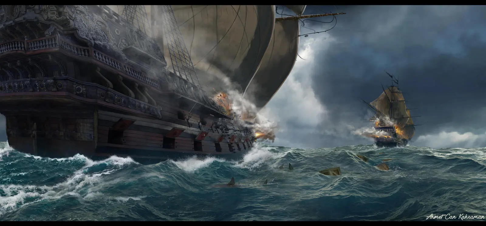
Combate naval
Si bien las reglas de persecuciones en vehículos de SWADE cubren los combates navales, estas son algunas
reglas extras que puedes aplicar a tus combates navales para darles un toque lovecraftsiano.
Horror
Puede darse el caso de que una nave quiera luchar contra un gigantesco ser
los Mitos u barcos con TPC (con modificaciones horrorosas). Para poder hacerlo, la tripulación deberá pasar
una tirada TPC usando el Espíritu medio de la tripulación (coge la ficha del tripulante normal y usa su
Espíritu). Si se falla la nave huirá y será decisión del DJ si el monstruo se aprovecha de la situación y es
el que persigue a la nave. En ese caso, la nave tratará como sea de evitar entrar en combate.
Como en las TPC normales, puede darse el caso de que el DJ decida que los tripulantes
están acostumbrados al horror (regla de "Acostumbrarse") o que el capitán intente dar una arenga antes
de hacer la TPC (regla de "Pásame la jarra de ron"). Si consiguen huir los marineros quedarán
trastornados mentalmente (-1 a todas las tiradas) hasta que consigan darse una buena juerga.
Hechicería
Se pueden usar diferentes hechizos en combate naval, principalmente la manipulación elemental
para conseguir diferentes efectos. Veamos algunos ejemplos.
Manipulación elemental de agua: Se puede mover el agua de mar para apagar fuegos en el barco.
Manipulación elemental de aire: Se puede invocar vientos durante un corto tiempo(una ronda de
persecución)
que hinchen las velas y mejoren la velocidad de la nave en 20%.
Manipulación elemental de fuego: Se puede invocar fuego en las velas y el aparejo del barco enemigo.
El barco incendiado tendrá 10 turnos para apagarlo o recibirá una herida. Una vez incendiadas las velas
perderá toda la capacidad de moverse.
Manipulación elemental de madera: Combando la madera se pueden abrir vías de agua en el casco del
enemigo.
Tendrá 10 turnos para repararlo o el barco recibirá 1 herida. También puede durante un turno atascar el timón
del barco
imponiéndole un -2 a la maniobrabilidad. Por último, puede tratar de inutilizar un cañón enemigo rompiendo sus
ruedas de madera.
En todos esos casos deben pasar con su tirada hechicería primigenia la resistencia del objetivo.
Vínculo mental: Si el mago consigue conectar con un vínculo mental a un 25% de la tripulación necesaria,
se puede obtener un +1 a la maniobrabilidad debido a la buena comunicación de todos los marineros.
Deberá lanzarse este hechizo por cada turno de persecución.
Abordaje de monstruos
Los grandes monstruos acuáticos pueden ser abordados como si fueran un barco, siempre que tengan
un tamaño mínimo de 8 (como una nave rápida). Pero desde luego, a diferencia de los barcos, estos pueden gastar un
turno en sacudírselos de encima en una tirada enfrentada de FUE/2 del monstruo (ya que está flotando y no puede sacudirse)
contra la FUE del héroe. Puedes dar positivos si el monstruo tiene espinas a las que agarrarse, se han atado, ... Si
fallan la tirada serán movidos 5 casillas + 1 por avance que consiga el monstruo en la dirección que elija el
monstruo, pero todos los afectados deberán seguir la misma dirección.
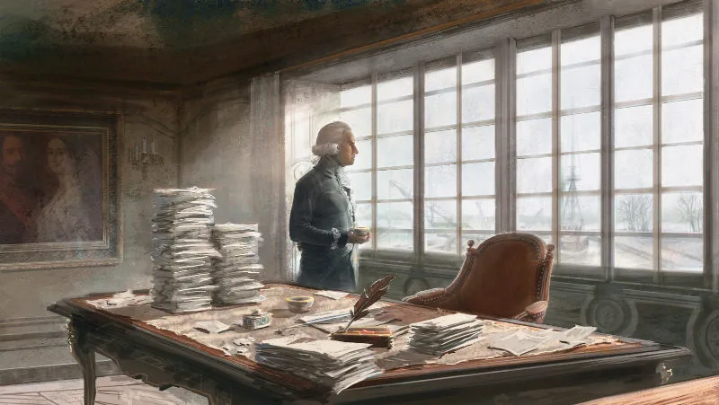
Comercio
Durante sus viajes por las Antillas, tu mesa puede dedicarse a comerciar productos por todo el Caribe, comprando en
un puerto
barato y vendiendo en otro caro o queriendo deshacerse de su botín pirata.
Capacidad de carga de los barcos
La capacidad de carga de los barcos ha sido marcada en barriles y esa es la cantidad de productos que puedes
llevar sin tener problemas.
Se puede intentar llevar más carga de la recomendada hasta un máximo del doble de lo normal. Por cada 25% extra
impone un -1
a la maniobrabilidad y quita un 10% a la velocidad del barco. Es decir, un barco con capacidad de carga de 100
barriles,
puede llevar 200 barriles de máximo. Si lleva 150 barriles, tendrá un -2 a la maniobrabilidad y será un 20% más
lento.
En condiciones normales, como viajes de hasta dos semanas, las raciones de agua y comida de la tripulación y los
pasajeros no ocupan espacio de carga y no influyen en las características del barco. En viajes más largos queda a
tu discreción como DJ.
Como habrás visto ya en las fichas de las naves, algunos tipos permiten intercambiar la capacidad de carga por
armamento o tripulación. Los cálculos de penalizaciones se hacen sobre la ficha tipo, no la real del barco. Los barriles
extras en ningún caso podrán convertirse en armamento o tripulación.
Durante los viajes se puede perder carga. Si se sufren tormentas se perderá un 1d10 barriles debido a que se han
roto el barril o se ha mojado y estropeado el contenido. En caso de lluvia serán 1d6 barriles.
Comprando y vendiendo carga
Si vas a usar tu barco para comerciar entre las islas, deberás llenar tus bodegas de carga que vender en
otra isla con un beneficio. Puedes comprar dos tipos de carga: materias primas y productos manufacturados.
Hay un tercer tipo de carga, el botín, que no puede ser comprada, solo puede obtenerse asaltando barcos,
buscando tesoro y en general corriendo aventuras. El precio de compra/venta del barril de cada tipo de
carga depende de donde se compra y vende. La siguiente tabla te dice el precio de compra y venta de
cada tipo de carga según donde se haga la transacción. Puede haber ciudades en la Guía de viajes que
tengan reglas especiales.
Tabla de compra/venta de carga
Materias primas
Productos manufacturados
Compra
Venta
Compra
Venta
Puerto
Precio
Cap.
Precio
Cap.
Precio
Cap.
Precio
Cap.
< 5.000 habitantes
50
20
40
15
100
25
65
30
de 5.000 a 25.000 habitantes
60
40
50
45
80
100
70
60
de 25.001 a 50.000 habitantes
70
60
60
75
60
200
75
110
> 50.000 habitantes
80
80
70
100
40
300
80
200
Para comprar la carga y cargarla o para descargarla y venderla necesitarás que el barco esté en un puerto
mínimo de media semana. Si se tienen que irse del puerto antes de ese tiempo, no podrán haber
vendido o comprado carga y tendrán que hacerlo en otro puerto.
Los puertos tienen una capacidad de compra y venta de materias primas. Son el número de barriles que pueden
comprar y vender a la semana.
Si el barco lleva en sus bodegas más barriles de los que puede comprar un puerto, tendrán que quedarse en la bodega
y venderse
en otro puerto. Si intentan comprar barriles solo podrán comprar hasta la capacidad de venta del puerto.
La compra/venta de carga es automática, no se necesita ninguna tirada. Puedes como DJ darles beneficios extras, si
en determinadas ocasiones, comercian con productos de especial interés. Por ejemplo, van a buscar material de
minería
par venderlo en una zona donde se ha encontrado oro. También pueden conseguir beneficios extras (aunque deberías
avisarles de las
implicaciones éticas) especulando con ciertos productos. Por ejemplo, comprando específicamente alimentos y
medicinas y vendiéndolos
más caros en zonas que están sufriendo hambrunas o guerras. Por último, pueden rebajar el precio de sus productos
todo lo que quieran incluso
regalarlos. En ese caso, cóbrales unas pequeñas tasas de amarre en el puerto.
Sugerencia de beni: Premia a tu mesa con benis siempre que comercien pensando en la gente
y no en el beneficio. Cosas como comprar comida, llevarla a una zona asolada por un huracán y venderla a precio
de coste o incluso regalarla debe tener algún beni de premio.
La muerte y los impuestos
Hasta los piratas más piratas tienen que pagar impuestos o mordida si quiere vender sus productos en un puerto
del Caribe. Lo normal es que el gobierno se quede con un 10% del total obtenido de venta de la carga. Esto incluye
el
precio del amarre, protección del puerto y otros gastos burocráticos. Puede haber ciudades como algunos enclaves
piratas que tengan
impuestos más baratos o incluso no los haya o ciudades como La Habana donde el gobierno te cobre el 10% y la RCPC
te cobra otro 10% extra debido a su monopolio comercial del Caribe.
Botín y contrabando
El botín no son ni materias primas ni productos manufacturados, son objetos de gran valor, oro, plata,
joyas, sedas, marfil, ... Hemos visto que es una carga que podemos vender, pero no comprar para comerciar con
ella.
Lo vamos a conseguir de atacar a otros barcos, asaltar ciudades o como parte de nuestras aventuras.
Al abordar un barco solo podemos llevarnos un 60% de su carga normal, el resto se ha destruido en el combate.
Esta carga puede ser materias primas, productos manufacturados y con mucha suerte un buen botín. Esto queda a
discreción del DJ
El botín no puede venderse en cualquier sitio, solo en puertos piratas que son los únicos que aceptan barcos
piratas y material robado y no tienen comisión o en puertos donde tengas los suficientes contactos
para venderlo bajo cuerda y donde no seas conocido como pirata. Deberías rolear un poco esas primeras ventas hasta que
dejéis un porcentaje de mordida para los
corruptos de aduanas y el porcentaje del perista más o
menos estable. Esa mordida debería ser entre un 20 y 30%. La cuestión es que los puertos piratas no tienen casi
gastos,
tienen muy poca capacidad de compra con que tendrías que visitar varios para vender toda tu carga (con sus
consiguientes
gastos). Mientras que meterlo de contrabando en puertos más grandes permite venderlo de un solo viaje, pero no
ganado tanto dinero.
El precio del barril de botín será 3 veces el precio de venta más alto que se dé en el puerto por carga y un
tercio de la capacidad menor. Es decir,
que si puedes vender materias primas por 15 barriles a 100 doblones por barril y 30 barriles de productos
manufacturados por 120, el precio del barril
será de 360 doblones (120 doblones x 3) y la capacidad de carga será de 5 barriles (15 barriles / 3).
NOTA: Si a tu mesa le encanta todo este mini juego de comercio, disfrutadlo. Si no es vuestro rollo,
simplemente hazles una
tirada de tesoro d6 (solo tiradas en la tabla de Riquezas) y ese es el dinero que han sacado de beneficio con el
comercio entre islas del Caribe.
Para poder hacer la tirada han tenido que poder comprar y cargar mercancía en el puerto de origen, es decir que si
el
puerto era pequeño o la ciudad estaba saqueada solo podrán tirar un d4. Si han tenido que salir pitando no podrán
hacer la tirada porque tienen la bodega vacía.
Botín y tesoro
Todos sabemos que lo que mueve a los piratas es saquear barcos, conseguir un buen botín para
gastarlo en una
taberna del puerto o enterrarlo en una isla desierta. Y estaba claro que en este juego íbamos
a tener una buena
tabla de tesoro con tintes lovecraftsianos.
Todos los seres que hacen perder cordura tienen botín si son derrotados. Después de vencer al
monstruo, uno de los jugadores deberá lanzar la TPC básica del monstruo. Según los éxitos que
consigan podrán tirar en diferentes tablas:
Tabla de riquezas (1 éxito).
Tabla de objetos extraordinarios (2 éxitos). Solo puede cogerse una vez por TPC.
Tabla más allá del tiempo y el espacio (3 éxitos). Solo puede cogerse una vez por TPC.
Si se consigue:
1 éxito puede tirar 1 vez en la tabla de riquezas.
2 éxitos puede tirar 2 veces en la tabla de riquezas o 1 en la tabla de objetos
extraordinarios.
3 éxitos suponen, 3 tiradas en la tabla de riquezas, 1 en la de riqueza más 1 en la de
objetos
extraordinarios o solo 1 en la tabla más allá del tiempo y el espacio.
Puede haber situaciones, decisiones, trampas, misterios, PNJs, etc. que tengan tirada de botín
que deberemos usar como si fuera la tirada de pérdida de cordura, salvo que en esos casos no se
podrán usar éxitos en la tabla de más allá del tiempo y el espacio.
Riquezas
Tabla de Riquezas
1d12
Descripción
Valor en doblones
1-4
Algunos doblones y un poco de calderilla
1d10 x 10
5-6
Pequeños objetos de oro
2d10 x 20
7-8
Piedras preciosas de bajo valor
1d10 x 50
9-10
Buena cantidad de doblones y calderilla
1d10 x 100
11
Joyas de oro con piedras preciosas
1d10 x 200
12
Piedras preciosas de gran valor y un barril de buen ron.
1d10 x 500 Con buen ron y el bolsillo lleno de oro es obligatorio
correrse una buena juerga. Tu mesa, su tripulación y sus aliados pierden un día entero entre fiesta y
resaca.
Objetos extraordinarios
Tabla de Objetos extraordinarios
1d12
Tipo
1-3
Arma cuerpo a cuerpo Tira en la tabla de armas cuerpo a cuerpo
y luego en la de capacidades.
4-6
Arma de fuego Tira en la tabla de armas de fuego
y luego en la de capacidades.
7
Ejemplar de La Verdad de La Habana
8
Ritual menor Un conjunto de apuntes, un telar con extraños símbolos, una piedra tallada, etc.
que explica como realizar el ritual. Saca al azar un hechizo de la tabla de Rituales menores.
9-10
Libro prohibido. Vete a la sección de Generación de libros de los Mitos
para crearlo.
11
Objetos pequeños y útiles Tira en la tabla de objetos pequeños y útiles.
12
Objetos de gran tamaño Tira en la tabla de objetos de gran tamaño.
Tabla de Armas cuerpo a cuerpo
1d6
Nombre
1
Sable de abordaje
2
Alfanje
3
Hacha de abordaje
4
Machete
5
Espada ropera
6
Daga
Tabla de capacidades de Armas cuerpo a cuerpo
1d10
Capacidad
1-4
De buena calidad, +1 a pelea +1 a daño
5-6
Afilada, +2 a daño
7
Ornamentada, x10 su precio normal
8
De duelo, +1 a pelea y +2 a daño
9
De parada, +2 a parada
10
Legendaria, +2 a pelea y +2 a daño. Tiene nombre propio y perteneció a alguien famoso.
Tabla de Armas de fuego
1d4
Nombre
1
Pistola de chispa
2
Mosquete
3
Trabuco
4
Granadas
Tabla de capacidades de Armas de fuego
1d10
Capacidad
1-4
De buena calidad, +1 a disparo +1 a daño
5-6
Precisa, +2 a disparo
7
Ornamentada, x10 su precio normal
8
De duelo, +2 a disparo y +1 a daño
9
De tirador, dobla las distancias
10
Legendaria, +2 a disparo y +2 a daño. Tiene nombre propio y perteneció a alguien famoso.
Tabla de Objetos pequeños y útiles
1d20
Nombre
Descripción
1
Anestésico natural de la jungla
Este bebedizo hecho con extractos de misteriosas plantas de la jungla quita un nivel
de penalización por
daño durante una escena. El recipiente tiene 1d6 usos.
2
Tinta invisible
Está compuesto por un juego de tintero y pluma y un saquito de polvos. El mensaje que
se escribe con esta tinta
se hace invisible en segundos y solo se revela cuando echan encima los polvos del
saquito. Hay tinta y polvos para 1d8 usos.
3
Brea pegalotodo
Este ungüento maloliente es un potente pegamento de secado muy rápido que
permite reparar un objeto roto de tamaño
normal (algo que se pueda llevar en una mano) en un solo turno con una tirada
exitosa de Reparar.
La duración de la reparación no suele ser muy larga, utiliza la Tabla de Duración del
trastorno para
determinar la duración de la reparación. También puede usarse para reparar como pequeñas
fugas del casco.
Si se quiere reparar algo de mayor tamaño, el director de juego podrá
establecer las dosis
y turnos que se necesitan para hacer las reparaciones. El bote tiene 1d12
usos.
4
Canicas magnetizadas
Estas bolas de metal ennegrecidas del tamaño de canicas se magnetizaron cuando
las toco un rayo de tormenta.
Ahora se atraen entre sí, aunque haya mucha distancia entre ellas. Son perfectas para
meter una de las canicas
en un cofre o ponérsela en un bolsillo a una persona y así poder seguirle el rastro a
distancia. Mientras el
personaje que lleva la canica este a menos de un kilómetro, podrá saber dónde está la
otra canica, dejando
la suya rodar por el suelo y siguiendo la dirección que indique.
5
Pollo de goma con polea dentro
No sirve para nada, solo ocupa espacio en tu inventario. Mira detrás de ti, ¡un mono de tres cabezas!
6
Capa de salamandra de fuego
Esta capa, que permite tapar a una persona y un acompañante, está hecha de una tela
tratada químicamente para no
quemarse y proteger del fuego y calor, que no del humo. Solo protege de fuegos de tamaño
y temperatura normal,
pudiendo meterse en una casa en llamas y salvar a un bebé. Para fuegos y temperaturas
extremas como lava se quema
en 1d6 turnos, pudiéndose, por ejemplo, colocar sobre lava y ponerse encima mientras se
consume.
7
Prototipo de cronómetro marino
Este cronámetro de gran precisión, preparado para funcionar en un barco, permite conocer la longitud
en que se encuentra el barco. La latitud se puede saber por el sol y las estrellas. Otorga un +2 a
las tiradas de navegación y pilotaje de un barco que no tengan que ver con maniobras en combate.
También otorga el +2 a la hora de trazar mapas y cartas marinas
8
Microscopio compuesto
Con este microscopio de gran precisión el personaje obtiene un +2 a las tiradas de ciencias y
medicina a la hora de realizar investigaciones.
9
Cajas de botellas de Champaña
En unas cajas de madera muy bien embaladas y protegidas hay un cargamento de 2d10 botellas de una nueva
bebida espumosa de origen francés llamada Champaña. Estas botellas tienen un gran valor y son un gran
regalo
para congraciarse con los ricos y poderosos.
10
Capucha de buceo
Este gorro/capucha de cuero cubre media cara y tiene agujeros de cristal para los ojos. Se ata de forma
que no entra agua en los ojos y así se puede ver debajo del agua. El cuero está tratado para no
estropearse con el agua salada.
11
Prototipo de extintor de incendios
Este artilugio es muy valioso en sitios como los barcos donde el fuego es una gran amenaza. Con este
invento
puede apagarse un fuego del tamaño de un grupo de velas de barco o una cabaña pequeña en 5 turnos. Está
formado
por 4 cilindros, 1 de sosa y otros 3 de agua. Al darse al pulsador se junta la sosa con el agua que sale a
presión. Tras
usarse debe recargarse la sosa y el agua.
12
Caja de pirotecnia
Dentro de una caja de madera puedes encontrar diferentes tipos artefactos pirotécnicos.
Puede usarse para señalizar una posición, como entretenimiento o espectáculo o como arma (cada cohete
haría
el daño de una granada y tendría la distancia de un mosquete). Siempre harán un montón de luz y de ruido.
Hay 1d12 + 10 cohetes.
13
Tabletas de purificación
Estas tabletas de cloro permiten potabilizar agua dulce. Permiten limpiar agua para
1d6 semanas para una persona. Aunque su sabor es horrible, está totalmente limpia de peligros.
14
Instrumento musical de calidad
Es un instrumento de muy buena calidad con partes enjoyadas o de metales preciosos.
Es un instrumento del tamaño de un violín, una guitarra, ... Otorga un +2 cuando se utiliza en
actuaciones.
Tiene un precio en mercado de un 1d10 x 500 doblones. También puede ser un excelente regalo para
granjearse
la amistad de algún personaje.
15
Caja de música
Esta caja de música de gran calidad está hecha de maderas nobles, madreperla y metales preciosos.
Reproduce
varias canciones, ya que viene con diferentes cilindros grabados que se pueden poner y quitar (viene con
1d6 + 1 cilindro).
Tiene un precio en mercado de un 1d10 x 500 doblones. También puede ser un excelente regalo para
granjearse
la amistad de algún personaje. Pasando una tirada de Reparar y de Interpretar (no tiene que hacerlas el
mismo personaje)
pueden crear cilindros nuevos.
16
Dados trucados
Estos preciosos dados de marfil y ébano están trucados y según como se lancen obtienen unas tiradas u
otras.
Al usarlos en juegos de azar se obtiene un +2 a las tiradas. Una tirada de Latrocinio con dos avances
permitirá al resto de jugadores darse cuenta de la trampa.
17
Traje de protección
Este traje tiene una túnica de piel gruesa que se engrasaba o enceraba para que resbalasen los fluidos
corporales de los enfermos. Iba acompañada de un gorro negro, una máscara con lentes de vidrios, guantes
de cuero, botas altas
y un palo con un gancho para poder mover objetos sin tocarlos. Permite moverse en lugares donde
haya peligro de sustancias tóxicas o venenosas. También evita el contagio de enfermedades mientras
se mantenga las distancias con los enfermos. Mientras se tenga el traje y se mantenga su integridad (si
agujeros ni rotos)
se es inmune a venenos, sustancias tóxicas y enfermedades contagiosas.
18
Mapa de un tesoro
Es un mapa del tesoro totalmente falso. Está muy elaborado con muchos detalles fantásticos y visualmente
es muy bonito.
Puede que un cartógrafo lo hiciera como decoración para gente rica y después alguien le añadió algún tipo
de
elemento para que pareciera un mapa del tesoro. Puede venderse como un mapa por 1d20 doblones o tratar de
timar a alguien
vendiéndolo como auténtico. Pueden tratar de colárselo a un enemigo que desaparecerá de la partida durante
2d4 sesiones de juego
mientras busca el tesoro, pero cuando vuelva seguramente vendrá con ganas de venganza, más de las normales.
19
Mapa de un tesoro
Es un mapa auténtico, pero ya ha sido saqueado. Puede ser un mapa como tal, un diario del capitán, unas
coordenadas, etc.
el problema es que ya ha sido total o parcialmente saqueado. Lo que queda del tesoro está relativamente
cerca de la civilización (media semana ir y media volver) y podría ir a buscarlo mientras arreglan el
barco,
les traducen algún texto importante, esperan juicio, ... No siempre se gana y se llevarán una decepción
cuando encuentren un cofre abierto y vacío. Si quieres déjales alguna nota manuscrita de algún odiado
enemigo
riéndose de ellos por haberles dejado sin tesoro.
20
Mapa de un tesoro
Es un mapa auténtico y conduce a un gran tesoro de alguna leyenda pirata, de los cruzados,
de los masones, etc. o que mejor te cuadre. No tiene que ser ni un mapa, pueden ser unos jeroglíficos
en una piedra, un cuadro o una caja de música y hacer que se den cuenta de que es un mapa cuando más
te interese. La consecución de este tesoro debería por sí solo
generar una mini-campaña de varias sesiones. Es una buena oportunidad para hacer una partida de
solo piratas o intentar algún tipo de cross-over divertido como que acaben recorriendo China,
escapando de la Reina en Londres o tengan que dar la vuelta al cabo de Hornos para llegar a la
Isla de Pascua. Sé creativo, el tesoro lo vale.
Tabla de Objetos de gran tamaño
1d20
Nombre
Descripción
1
Campana de buceo de cristal
Esta campana de metal y cristal permite que hasta dos personas bajen al fondo marino,
mientras otra opera
una bomba de aire. La campana tiene unos brazos mecánicos que permiten operar en el
fondo marino. La campana
se puede desplazar muy lentamente y debido a su tamaño (+2) no podrá entrar en sitios
pequeños.
2
Cometa de vigía
Esta cometa de gran tamaño se ata al barco y se hace volar cuando hay viento. Tiene un
arnés de cuerdas que permite a una persona elevarse por los aires y vigilar desde
alturas
mayores que la cofa del barco. Otorga +2 a Notar a los vigías y es especialmente útil
en alta mar, ya que permite ver los barcos que se acercan incluso antes de que ellos
puedan
verte, permitiendo montar o escapar de emboscadas. Si se corta la cuerda, el vigía puede
intentar planear y aterrizar con una tirada exitosa de Atletismo.
3
Faro del diablo
Este aparato de gran peso y un tamaño de 1m3 es la evolución
mecánica y moderna de los fuegos
que encendían los piratas fingiendo ser faros para atraer a los barcos a los arrecifes
para hundirlos y saquearlos.
Contiene un intrincado mecanismo que mueve una serie de lentes y espejos. Poniéndolo
sobre una fuente de luz
y configurándolo mediante palancas, permite fingir la cadencia e intensidad de los
destellos de cualquier faro.
Un marino experimentado deberá superar una tirada enfrentada de Navegar
contra 1d10 del faro del
diablo o será engañado, pudiendo acabar perdido en la noche y chocando contra arrecifes
y rocas.
4
Globo aerostático
Dentro de una gran caja de madera hay un prototipo de globo aerostático muy ornamentado.
Montarlo e hincharlo lleva como una hora y permite elevarse como unos 200 metros, pero no
se puede controlar la dirección del vuelo. Se necesita una tirada de Ciencias para llevar
a buen fin todo el proceso. Es perfecto para vigilar, ya que permite ver a grandes distancias y
también como una forma rápida de huida siempre que el enemigo no tenga voladores.
5
Tabla para deslizarse sobre las olas
Estas tablas de madera de origen peruano permiten a una persona moverse rápidamente en el mar
haciendo uso de la fuerza de las olas. En caso de no haber olas pueden tumbarse y remar
con los brazos. Están pulidas para conseguir la menor resistencia al agua y tiene un
extremo redondeado y otro plano. Suelen medir 1 vez y media o 2 veces un humano normal.
Para moverse con ellas remando no se necesita hacer tiradas. Si se quiere aprovechar
las olas para moverse más rápido se necesita pasar una tirada de Atletismo, se pueden tratar
de conseguir avances para hacer piruetas con las tablas sobre las olas pero no tiene mucho sentido.
6
Cepo para horrores
Este cepo es una versión gigantesca de los cepos de caza. Mide un metro y medio
de radio y pesa unos 200 kilos. Está preparado para atrapar animales de inmenso tamaño e incluso de
horrores de los Mitos, siempre que sean tangibles.
Tiene 4 anclajes al suelo y un potente muelle que cierra el cepo. Para poder
escapar hay que superar una tirada enfrentada de Fue contra 1d12 + 3. Debido
a su tamaño es difícil de esconder. La dificultad para detectarlo es la tirada
de Supervivencia -2 que hizo el trampero. Al saltar hace daño con una FUE
1d12 + 3 y corta directamente por la mitad a cualquier secuaz que caiga en ella.
7
Jaula reforzada desmontable
Esta jaula que permite transportar a un ser del tamaño de oso (tamaño 2) es muy ligera (40 kilos)
pero terriblemente resistente (consistencia 12). Se puede desmontar y montar en unos minutos. Si fuera
necesario
se puede montar en 6 turnos (1 turno por cada lado) si se pasa una tirada de Reparar.
8
Restos fosilizados de un reptil terrible
Envueltos en lona de vela hay un conjunto de huesos fosilizados de algún tipo de
caimán o tortuga de gran tamaño. A priori no parecen de gran valor, pero vendidos a la persona
indicada puede sacarse 1d10 x 200 doblones. Si quieren traspasar líneas que no debieran,
igual podrían intentar usar hechizos de resurrección o de creación de zombis con los restos ...
Total, ¿qué puede salir mal por devolver a la vida reptiles gigantes?
(Gracias a Jim Butcher por esta maravillosa idea) Estos huesos pueden ser usados en el
relato salvaje "Cazadores de huesos".
9
Redes de hilo de seda
Estas redes hechas de hilo de seda son tremendamente resistentes (consistencia 10)
y muy ligeras (5 kilos). Parecen ser de origen chino y permiten atrapar peces de gran
tamaño sin romperse (+1 a toda actividad de pesca). Un manitas podría adaptarlas fácilmente
para crear una trampa para atrapar animales (y monstruos) de gran tamaño (tamaño 3).
10
Gran recipiente lleno de formol
Este recipiente de metal y cristal de gran tamaño está lleno de formol. Seguramente perteneció a algún
naturalista
que lo usaba para conservar grandes mamíferos. Permite conservar un cadáver de un animal o monstruo de
hasta tamaño 3
indefinidamente y con mínima degradación. El monstruo tiene que tener forma física y desde luego debe
quedar un
cadáver, por ejemplo, no se podría conservar un vampiro de fuego, ya que realmente al morir no queda nada.
11
Estatua romana de mármol
Es una estatua de mármol de algún personaje de la antigua Roma de cintura para arriba (busto más torso).
Pero es tan raro
y están tan fuera de lugar que los jugadores se tirarán horas intentando averiguar para
qué sirve o cómo funciona. Si quieres divertirte puedes sugerir que se
parece a algún personaje que odien mucho que se hayan encontrado en sus aventuras y que empiecen a
elaborar teorías locas
como que es inmortal o viene de un antiguo linaje. Al final harán como en las aventuras gráficas clásicas,
probarán la estatua con todo lo que se encuentren. Por otro lado, como elemento decorativo en la cabina
del capitán es muy bonito y es perfecto para colgar el sombrero.
12
Balas de cañón trucadas
Dentro de una caja de munición entre paja hay 10 + 1d20 balas de cañón trucadas. Parecen balas
totalmente
reales, tienen el mismo peso, color, tacto, ... Solo una tirada de Reparar con dos avances podría
detectarlas.
Al dispararse desde un cañón hacen estallar el propio cañón, inhabilitándolo y haciendo 3d6 de daño
a los artilleros cercanos al cañón. Unos héroes listos usarían las balas
de cañón trucadas para engañar a sus enemigos. Podrían sustituir las balas verdaderas por las trucadas
en la batería de cañones que defiende el puerto para poder atacarlo o escapar de él sin recibir daño.
13
Armadura de caballero ornamentada
Esta antigüedad de otros tiempos se ha conservado estupendamente y seguramente que algún noble europeo
lo trajo al Caribe como una reliquia familiar. Pero es plenamente funcional y si bien en un barco es una sentencia
de muerte, si se cae al agua, puede ser útil en tierra firme para luchar cuerpo a cuerpo contra criaturas de los Mitos.
Usar las características de la Coraza completa de SWADE (pectoral, brazales, grebas y yelmo). Está muy
ornamentada y tiene incrustaciones por lo que su valor es x4. Puede ser también un regalo perfecto para las clases
altas europeas que quieran aparentar tener un origen medieval importante.
14
Enciclopedia
Un innovador impresor ha recopilado varios tratados de ciencias, historia, arte, etc. en unos 10 tomos de
gran tamaño. Casi todo el conocimiento general del mundo actual está entre sus hojas. A nivel de juego, si se puede
dedicar una 1 hora a revisar sus tomos, se obtendrá un +1 a la siguiente tirada de Conocimientos generales.
15
Dunun
Este grupo tambores de origen africano está compuesto por 3 piezas: kenkeni (el más pequeño), sangban
(el medio)
y doundounba (el más grande). Seguramente fueron hechos por los esclavos africanos traídos al Caribe para
trabajar en
plantaciones de caña y tabaco. Puede ser usado en rituales que exijan percusión y por su alto valor
cultural serán un regalo
estupendo para granjearse la amistad y la ayuda de las comunidades de origen africano del caribe.
16
Gran bloque de mármol
Este gran bloque de mármol tiene un muy buen precio si consiguen transportarlo y encontrar el artesano
adecuado que
lo convierta en losas, encimeras, baldosas o incluso un buen busto de un personaje famoso. Como en otros
de los objetos de esta tabla,
tratado adecuadamente puede ser un gran regalo para congraciarse con los ricos y poderosos.
17
Tonel lleno de especias exóticas
En un tonel de buena calidad hay varias bolsas y cajas con especias exóticas de todo el mundo. Serían
una auténtica delicia para un gourmet. Pueden venderlas a muy buen precio (1d6 x300 doblones) o dárselo al
cocinero
para que haga la comida. Si se lo quedan, quien esté encargado de la cocina al principio de cada viaje
hará una
tirada de Conocimiento Cocina y si lo pasa dará un +1 a la tripulación a la TPC. Es más difícil perder
cordura
con la barriga llena. El barril les permitirá sazonar la comida de 2d10 viajes.
18
Lanzaplatos
Este objeto del tamaño de un barril, consiste en una maquinaria de relojería con una catapulta que va
lanzando platos normales aleatoriamente para que un tirador prueba su destreza con una arma de fuego. El
lanzaplatos tiene
un soporte donde se cargan los platos, se le da cuerda y empieza a lanzar platos. Parece un encargo de
algún
fanático del tiro a algún ingeniero/inventor que le permitiera entrenar tiro sin necesidad de un
asistente.
Puedes entrenar con él tus habilidades con armas de fuego de pólvora negra. Por unos 500 doblones en
platos y munición y
una semana de entrenamiento intensivo, mejorará el valor de Disparo del personaje en un nivel de dado
cuando
combata con el tipo de arma con el que ha estado entrenando. Su valor de habilidad no sufre cambios por
ejemplo
al gastar avance. Puede entrenarse varias veces para diferentes tipos de armas, pistolas, mosquetes y
trabucos.
19
Tonel de brea noruega
Este tonel está lleno de brea noruega de la máxima calidad. Calafateando un barco con esta brea otorga
al barco un -1 a las tiradas para intentar abrir agujeros en el casco del barco, por ejemplo,
con xilomancia (Control Elemental Madera).
20
Cabeza gigante olmeca
La cultura olmeca se desarrolló en el sur de México entre el 3000 y el 400 a. C. De este pueblo nos han
quedado unas enigmáticas cabezas colosales de piedra, exactamente alabastro. No se sabe ciertamente si representan
a deidades o a personas importantes e influyentes. Cómo ha llegado a donde ha llegado (recuerda que es del continente)
y para qué lo querían debería ser un misterio y cómo se lo van a
llevar tus jugadores también debería serlo, ya que miden entre 2 y 3 metros de altura y pueden pesar entre
5 y 20 toneladas.
Disfruta de cómo se las ingenian para llevársela a la civilización y cómo, después del esfuerzo, se dan
cuenta de que nadie da un doblón de oro por ella y de qué no sirve de nada en rituales y otros temas mágicos.
Objetos más allá del tiempo y el espacio
Todos los objetos de la siguiente tabla son objetos extraños y misteriosos, muchas veces malditos, que los
personajes
deben identificar y aprender a usar. Para ello deberán pasar una tirada de Mitos, o que alguien que los reconozca
les explique
qué son y cómo funcionan. No les digan nunca que son y como funcionan hasta que no los identifiquen.
Cuando los encuentres solo descríbeselos.
Tabla de Objetos más allá del tiempo y el espacio
1d20
Nombre
Descripción
1
Amuleto con símbolo arcano
Este amuleto, que puede tener muchas formas, desde pentáculos de plata a saquitos de
polvos, tiene un símbolo en forma de una línea diagonal con otros cinco trazos emergiendo
a los lados . Ofrece a su portador un +1 a todas las
tiradas enfrentadas de hechizos y habilidades especiales de los monstruos de los Mitos.
2
Polvo de Ibn-Ghazi
El polvo tiene la capacidad de volver visible por un momento a criaturas invisibles e
inmateriales
cuando este se dispersa soplándolo hacia ellos. 1D6 uso
3
Arma lanzarrayos de la gran raza de Yith
Esta arma de rayos parecida a una cámara de fotos de gran tamaño posee un gran poder
destructivo. Ver características en la sección de Equipo.
Hay un 50% de posibilidades de que venga con un cargador extra.
4
Carta náutica de los profundos
Estos mapas hechos por los profundos en piel curtida de tiburones y grandes cetáceos
son muy detallados en temas de
corrientes, costas, arrecifes, … y otorgan +2 a las tiradas de Navegar dentro
de la zona
representada por el mapa.
5
Flauta de hueso de byakhee
Al tocar esta flauta hecha con hueso de byakhee, se puede convocar en minutos
una gran tormenta,
cuyo centro será donde se encuentre el flautista. Con una tirada de Interpretar exitosa se convoca
la tormenta (Ver Tabla de Tiempo atmosférico durante los viajes para ver sus efectos).
Por cada éxito adicional la tormenta impondrá un -1 a todas las tiradas de maniobra y combate naval.
Es una táctica perfecta para escaparse de combates navales, pero el gran problema de
este objeto es
que te encontrarás en el centro de la tormenta y tu barco también tendrá que luchar
por
salir de la tormenta.
6
Llave de plata
Esta llave de gran tamaño, de un material desconocido parecido a la plata y con extraños jeroglíficos,
abre cualquier cerradura automáticamente,
incluso aquellas cerradas mágicamente. Cada vez que la usen saca una carta de acción. Si sale el comodín
tira en la tabla de Encuentros con lugares más allá del tiempo y el espacio. La puerta se habrá abierto al
lugar que diga la tabla en vez de al otro lado de la puerta.
7
Ventana de Leng
A este cristal traslúcido se le ha añadido un marco de madera con unas contraventanas para
cerrarlo.
Cuando se coloca sobre una superficie y se abren las contraventanas, el cristal se vuelve transparente y
permite ver a través del cristal como si fuera una ventana abierta en la superficie colocada.
El principal problema es que la ventana se abre hacia los dos lados y también pueden verte
desde el otro lado. Para activar el cristal de Leng el personaje debe estar en contacto
con el cristal y este con la superficie
y gastar la mitad de los puntos de armadura del material de la superficie. El efecto durará
mientras el cristal
esté en contacto con el hechicero y la superficie. El personaje puede mover el cristal a través
de la superficie mientras no cambie el material. Por ejemplo,
si quiere verse a través de una pared de piedra (armadura 10) deberá gastar 5 puntos de
poder.
El cristal tiende a distorsionar de alguna manera lo que se ve y hacerlo más perturbado y caótico.
Por ello, si se tiene que hacer una TPC por algo visto a través del cristal, la TPC tiene un nivel más.
8
Ánfora de viaje por las Tierras del sueño
Esta pequeña ánfora griega con infinidad de nombres grabados en su superficie contiene un
icor de color verde.
Si se graba el nombre de un lugar y todos los tripulantes de un barco toman
el bebedizo de el ánfora, caerán en un profundo sueño. La nave entrará en las Tierras
de los Sueños, viajará por sus mares para volver al mundo normal y aparecerá en el lugar escrito
en el ánfora. La nave puede tirarse días y semanas en las Tierras de los Sueños, pero cuando
vuelva a nuestro mundo solo habrán pasado unas horas. De hecho, los tripulantes verán que su pelo
y sus uñas han crecido, sus ropas están sucias y malolientes como si no se hubieran bañado
en semanas y tendrán una sed y un hambre atroz al despertarse.
El ánfora se quedará en la Tierra de los sueños, para volver a aparecer años mas tarde
en el mundo de la Vigilia.
Si algún tripulante se despierta mientras están en la Tierra de los Sueños, el barco y
su tripulación se quedarán allí atrapados hasta que encuentren la forma de volver.
9
Cilindro cerebral de los Mi-Go
Dentro de estos cilindros de metal verdusco hay un cerebro humano vivo. Los Mi-Go se dedican a
meter cerebros
de humano sobresalientes en estos cilindros para llevárselos a su planeta y poder estudiarlos y aprender
de ellos.
Estos cilindros tiene un sensor que le permite
al cerebro escuchar que pasa a su alrededor y otro dispositivo que le permite comunicarse con una voz
metálica.
Estos cilindros están pensados para transportar cerebros y por eso los mantienen medio desactivados.
El cerebro puede contestar preguntas y elaborar teorías a partir de sus conocimientos,
pero sus funciones sociales/sentimentales están desactivadas, ni se aburre, ni se emociona, ni siente
miedo, ... Tampoco tiene muy claro qué es ahora, quién fue o cómo acabo en un cilindro.
A nivel de juego, cada cerebro permite a su propietario hacer una tirada de d10 (sin dado salvaje) de
Conocimientos Generales, Ciencias, Humanidades, Medicina o Tácticas. El DJ puede decidir la
habilidad al azar o escoger una según el contexto donde se encontró.
Si alguna persona abre el cilindro o se rompe y deja ver su contenido, todos los presentes tendrán que
hacer
una TPC de d6.
10
Objeto perdido en el tiempo
El objeto que han encontrado es algo venido del futuro por alguna extraña
razón. Puede ser
cualquier cosa, desde una bandeja de plástico con dibujos de bicicletas hasta una botella de refresco de
cola
o un reproductor MP3.
Descríbelo de la forma más críptica que puedas. Todas las tiradas de Mitos para identificarlo fallarán
siempre y nadie
podrá decirles qué es. Puedes usarlo como gancho para alguna loca aventura o haz que alguien descubra por
casualidad su función. Igual algún genio loco se lo compra para patentar la idea.
11
Gafas del Doctor Corvus Labranza
Estas gafas de cristales octagonales y rosados permiten a su usuario ver en la oscuridad (espectro
ultravioleta e infrarrojo), incluso en total oscuridad (visión calorífica). Son una versión portátil y
adaptada a la vista de su máquina de amplificadora de la glándula pineal que según se dice permitía ver
otras dimensiones y a través del tiempo. También permiten ver directamente a seres invisibles de
los Mitos. Pero estas gafas van mucho más allá y funcionan también en el otro sentido,
las radiaciones que emiten para hacer funcionar sus fabulosas capacidades son como un faro
en la oscuridad para los seres de los Mitos y estos podrán ver perfectamente a la persona que las
esté usando. Para este será imposible ocultarse de los seres de los Mitos hasta una
hora después de haber usado las gafas. Lo verán, lo olerán,
sentirán sus vibraciones, o el sentido especial que use el monstruo.
12
Hamaca de sanación
Esta hamaca tejida por un chamán taíno tiene propiedades curativas. Si un enfermo grave descansa en ella
necesitará la mitad de tiempo para curarse. El único problema es que está ligada a una poderosa magia
de tierra y lunar y solo funciona en tierra firme las noches con luna, es decir, menos
cuando hay luna nueva.
13
Extraña moneda antigua
Esta extraña moneda de oro parece muy antigua y es una mezcla entre maya y azteca.
De hecho, no tiene una forma clara y cada vez que se examina parece tener detalles nuevos.
Esta maldita y su portador deberá tirar en la tabla de Maldiciones (apunta la maldición
que tiene por si se la pasan a otra persona). Mientras tenga la moneda,
la maldición seguirá con él. La ventaja es que no podrá morir por la maldición
en caso de tener efectos mortales. Por ejemplo, tendrá un sed insaciable, pero no podrá morir
de deshidratación. La única forma de librarse de la maldición es devolverla al tesoro donde fue
robada o lanzarla a algún lugar especial como otras realidades, pozos insondables o
incluso, si eres muy valiente, la boca del gran Cthulhu. Si intentan deshacerse de ella por medios
normales, volverá a su bolsillo mágicamente.
14
Espora de Ubbo-Sathla
Ubbo-Sathla es un dios primigenio que vino a la tierra desde el espacio que se que cree que es el
origen de la vida en la tierra. Es una masa informe con un color y textura parecida al légamo
sin cabeza ni extremidades reconocibles. Lo que tienes entre las manos es una de sus esporas. Si se planta
en la tierra,
a mañana siguiente en el lugar donde se plantó saldrán todo tipo de plantas cubriendo toda la zona de
vegetación
(un círculo de 100 metros de radio).
Las plantas no son naturales de la zona, sino que son versiones prehistóricas de las plantas que había en
esa zona.
Puede, por ejemplo, usarse para volver a esconder en la jungla unas ruinas perdidas u obstaculizar el paso
del enemigo.
Si se tira al mar puede crear grandes zonas de sargazos que dificulte el paso de las embarcaciones.
Podría usarse, por ejemplo, en un puerto para dificultar y retrasar la salida de barcos de un puerto
durante unos días.
Presenciar en vivo este proceso de crecimiento descontrolado de plantas y árboles no va a provocar horror,
pero desde luego
las insinuaciones, rumores y acusaciones de brujería se dispararán en las comunidades cercanas.
15
Cuerda de la horca de Anacaona
Anacaona fue una cacique taína que fue ahorcada por los españoles 1506 a pesar de haber ayudado a
Colón y el resto de españoles de su expedición. Escapo a la masacre de los 80 caciques y fue apresada
y juzgada por insurrección y finalmente condenada a la horca.
Más información en la Wikipedia
Este trozo cuerda maldita permite a portador que la lleve al cuello hablar y entender taíno. También
entender
los petroglifos que usaban para escribir, cosa que solo hacían muy esporádicamente para grandes
ocasiones.
Pero también está maldita, imbuida por todo el odio de Anacaona hacia los españoles que la mataron a pesar
de haberlos ayudado en sus peores momentos. La persona que porte la soga irá volviéndose más y más furioso y
vengativo,
a medida que parte de la fuerza de espiritual de Anacaona y los 80 caciques masacrados le vaya poseyendo.
Ponle en situaciones que le saquen de sus casillas y que le hagan actuar violentamente. En su siguiente
avance asígnale
las desventajas Vengativo (mayor) y Sanguinario (mayor).
Podrá deshacerse de esas desventajas cuando se haga sobre él un hechizo de Destierro si no han acabado con
él sus ansias
de sangre y venganza. Solo una tirada de Mitos con 2 avances permitirá detectar la maldición que porta
este objeto.
16
Vasos canopos del Faraón negro
Nadie sabe como estos vasos canopos (recipientes de piedra con tapa de cabeza de animal/dios egipcio que
contienen restos extraídos a un cuerpo que se va a
momificar como cerebro, entrañas, ...) han acabado en el Caribe, pero ahí están. Contienen los restos
del Faraón Negro, un avatar de Nyarlathotep, y son tan poderosos que pueden sustituir cualquier
ingrediente
que se necesite en un ritual. Da igual lo raro que sea el componente mágico se puede sustituir con un
poco de los restos putrefactos que hay en los vasos canopos. El recipiente tiene 1d4 usos.
17
Tonel portal
Este tonel de tamaño medio es en realidad una caja portal que permite teleportarse hasta otra caja
portal
en algún lugar del Caribe. Seguramente iba en un barco de la RCPC para que los cultistas del Cthulhu de
nivel
superior pudieran escapar en caso de ataques piratas o naufragio. El tonel puede moverse, pero no es fácil
de transportar,
pero la caja portal del otro lado está anclada dimensionamiento a su actual ubicación. Lo normal es que el
tonel esté en la bodega del barco de los héroes o en su fortaleza guarida. Deberías evitar que lo llevasen a
todas partes.
18
Mascarón de Cthulhu
Este mascarón es en realidad una figura de piedra verdusca montada sobre una estructura de madera
y hierro
para poder acoplarla a la proa del barco. La figura representa a Cthulhu como un humanoide escamoso
con alas de dragón y cabeza de pulpo y parece que era usada como algún tipo de ídolo religioso por
cultos de adoradores de Cthulhu. La figura tiene unas inscripciones en la base en un idioma
perdido.
Con este mascarón en tu barco ningún profundo ni otras criaturas sirvientes de Cthulhu se atreverá
a asaltarlo y atacarlo. Por el contrario, muchos adeptos de la Orden del Gran Cthulhu tratarán de atacar
al barco para recuperar el ídolo o los seguirán para poder robarlo. Las noticias sobre el barco correrá
entre las células cultistas.
19-20
Maldición
Alguien que abre un cofre con raros símbolos, quita una joya de un esqueleto polvoriento o rompe
unos sellos sagrados y queda maldito. Tira en la tabla de maldiciones, la maldición durará 1d10 días.
La maldición debería caer al azar a una persona de tu mesa que haya participado en la búsqueda del
botín. Si algúna persona se quedo curando heridos, por ejemplo, no debería entran en el sorteo de
maldiciones.
Tabla de Maldiciones
1d12
Nombre
Descripción
1
Pestilencia de shoggoth
Esta repugnante maldición infesta a sus víctimas de terribles pústulas supurantes y
malolientes. Mientras dure el olor, toda
interacción con otros personajes tendrá un -2. Los animales huyen del maldito y en caso
de no poder huir atacarán.
2
Mal de ojo
Mientras el personaje esté maldito, el usuario no podrá usar sus benis para repetir
tiradas.
3
Percepción no euclidiana
El personaje maldecido está parcialmente fuera de las leyes de la geometría euclidiana.
Las distancias, los ángulos y las direcciones funcionan diferente para él. Todo lo relacionado
con la percepción de la profundidad, el equilibrio, las distancias y la orientación tienen un
penalizador de -2
(disparar, golpear, pilotar, orientarse, ...).
Como ventaja, tiene un +1 a la dificultad de ser golpeado o disparado, ya que no siempre está donde
parece que está.
4
Sed insaciable
Los líquidos se niegan a deslizarse por la garganta del maldito, desde agua y alcohol
hasta bebedizos mágicos. Según pasen los días, el personaje se irá deshidratando y puede que
termine muriendo.
5
Extraña hambre de gul
Los alimentos se niegan a entrar en la boca del maldito, desde carne, pan
o pescado hasta los más caros platos de gourmet. Según pasen los días, el personaje se
irá quedando más débil y puede que termine muriendo de inanición. Esta maldición no
tiene tiempo de duración. Durará hasta que el maldito muera o coma carne humana cruda,
teniendo que hacer una TPC de 1d6. Para saber como acabar con la maldición
vale con pasar una tirada de Mitos o puedes darles pistas como que se siente
atraído por el olor a sangre o se relame al ver heridas abiertas.
6
Las Campanas del Infierno
Esta maldición es muy sutil y bastante inofensiva, pero, bien llevada por el DJ, puede ser
tremendamente inquietante e interesante. Todas las campanas, campanillas, cencerros y similares
cercanas a la persona maldita solo emiten un muy débil tañido, independientemente de la fuerza con que se
golpee
y del tamaño de la campana. De hecho, si las golpea el maldito ni sonarán y en general producirá mucho
menos ruido de normal (obtendrá +1 a sigilo mientras dure la maldición). Lo importante
es que la paranoia se extienda entre la gente, temiendo que lo de las campanas solo es una señal
del mal que vendrá después. Los marineros murmurarán quién puede ser el gafe que hace que
no suene la campana del barco, los campesinos sacarán sus horcas y antorchas buscando
al culpable de que sus campanas y su protector sonido no suenen y los clérigos hablarán
de como esto es una señal de que el demonio anda entre ellos. Si alguien consigue
averiguar quién es el maldito, seguramente se formará una gran turba para lincharle.
7
El mal de San Guido
El personaje sufre terribles convulsiones y espasmos involuntarios que afectan a todos
los aspectos de su vida como comer y beber, pero, sobre todo, a la precisión. Sufre un -1 a
todas las tiradas que supongan precisión con las manos, como abrir cerraduras, falsificar
documentos o disparar.
8
Apagafaroles
Toda forma de luz artificial se apaga si entra en el rango de visión del maldito y no se volverá
a encender hasta que deje de verla. Da lo mismo una antorcha cercana que un
faro a kilómetros de distancia, si el portador de la maldición ve el brillo de artilugio luminoso
este se apagará. Para más inri, si cierra los ojos y, por tanto, se queda a oscuras, las luces podrán
volver a encenderse.
Parece muy simple, pero puede dar mucho juego, por ejemplo, si quieren hacer misiones de robo o
infiltración. Además, puedes jugarlo como la maldición de las campanas. Los gentiles verán algo
oscuro y diabólico en aquel que acaba con sus antorchas, lámparas y linternas y los sume en la
oscuridad. Esas son cosas del demonio y la gente de bien no debería acercarse al maldito.
9
Decrepitud
La vida se le escapa rápidamente de su cuerpo y envejece un montón de años en unos minutos. La piel
se llena de arrugas y se vuelve flácida, el pelo se vuelve ralo y blanco y empieza a caerse, te
mueves más lento y tus reflejos ya no son como eran. El cuerpo en general pierde fuerza y resistencia,
AGI, FUE y VIG y las habilidades asociadas caen un rango con un máximo de d8.
10
Castigo de Nodens
El propio Nodens corta la conexión entre el maldito y sus puntos de poder.
El sujeto maldecido no podrá hacer uso de sus puntos de poder de ninguna manera.
11
Maldición de Jasy Jateré
Jasy Jateré es el cuarto hijo monstruoso de Tau y Keraná de la mitología guaraní. Jasy rapta niños y
cuando se
cansa de ellos o los entrega a sus hermanos para que los devoren o les lame la cara o los besa y les deja
atontados y mudos para terminar abandonándolos. La persona maldecida pierde totalmente el habla, no pudiendo
emitir ningún sonido vocal, solamente cuando este completamente solo podrá hablar, pero no lo servirá
de nada porque nadie podrá escucharle.
12
La venganza de Montezuma
La venganza de Montezuma no deja de ser una simple diarrea del viajero, pero en este caso será muy
grave.
El héroe saldrá corriendo al váter (si es que lo hay) cada dos por tres y se pasará horas en él. A nivel
de juego
será incapaz llevar cualquier tarea que exija tiempo realizarla. Por ejemplo, no podrá hacer guardias o
vigilancias, tampoco ponerse a estudiar un libro o buscar en los archivos de una biblioteca.
Viajes y encuentros
En esta sección encontrarás todo lo necesario para darle un poco de vida a los viajes por mar y por
tierra y que no sea un simple "llegas a Cuba tres días más tarde" sino que haya situaciones, personas y lugares
que lo hagan diferente e incluso sirvan de introducción a otros relatos salvajes.
Duración de los viajes: Como ya hemos visto en otras partes, vamos a usar la semana con forma
de contar el tiempo cuando se viaje.
Todos los viajes que supongan viajar de una isla a otra duran una semana. Los viajes por barco dentro de una misma
isla
duran media semana y por tierra una semana. Si crees que el viaje es extremadamente corto, podría hacerse en un
día, con lo que no podrá usarse para, por ejemplo, estudiar libros de los Mitos. Un viaje extremadamente largo podría durar
dos semanas. Moverse de un extremo a otro del Caribe no debería durar más de 2 semanas con buen tiempo.
Te proponemos primero un clima aleatorio acorde con el Caribe y luego encuentros aleatorios
por mar y por tierra.
Tiempo atmosférico durante los viajes
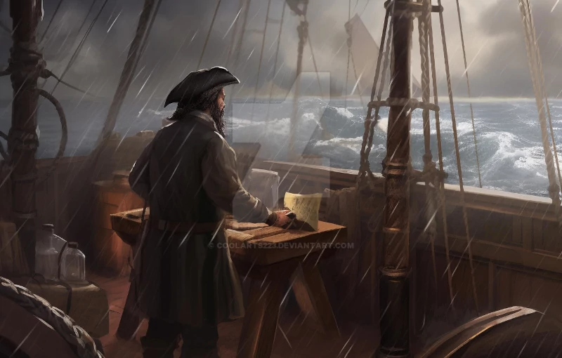
El tiempo atmosférico es un elemento muy interesante que le puede dar mucho ambiente a tus partidas.
Es por ello que cada vez que los personajes inicien un viaje tanto por mar como por tierra,
saca una carta de acción, consulta la siguiente tabla y aplica el resultado (si quieres). Solo hay que hacer una
tirada por viaje, no por día. La tabla representa el clima durante todo el viaje. No supone que
haya tormenta o niebla todos los días, sino que gran parte del viaje sí hay niebla o tormenta.
Los héroes pueden contrarrestar los efectos del clima (a discreción del director). La calma chicha
igual se puede contrarrestar controlando mágicamente a una ballena para que tire del barco o el
calor abrasador viajando de noche con algún artilugio que dé luz del día.
Los viajes en barco son peligrosos, sobre todo si se avecina una tormenta, pero en esta ambientación
nunca van a ser mortales. Es por ello que hasta el más tremendo huracán les podrá las cosas difíciles,
pero nunca va a suponer un riesgo real. Un héroe nunca debería morir ahogado en el mar porque un
huracán hundió su barco. Si quieres hundir el barco de los personajes que sea para avanzar en la
historia y que aparezcan medio muertos en la playa de una isla desierta.
También puedes recurrir a esta tabla para saber el clima en momentos clave de tu historia. Seguro que el
asalto a la fortaleza del malo entre niebla o con un huracán de fondo es el aderezo perfecto a tu
partida.
Tabla de Tiempo atmosférico durante los viajes
Carta
Tiempo
En mar
En tierra
2-8
Tiempo perfecto
Soleado, despejado y con buen viento a favor.
Soleado pero sin excesivo calor, perfecto para caminar.
9
Calma chicha
El tiempo es bueno pero no hay nada de viento y el viaje tarde el triple. Además, la moral está
baja y durante toda la travesía las tiradas sociales tendrán un -1.
10
Viento en contra
El viento en contra dificulta todas las tiradas de navegación (-1) y hace que
el viaje dure el doble
J
Sol abrasador
Hace un sol abrasador y el calor no da tregua ni de noche ni de día. El calor
es tan agobiante que no permite estudiar ningún libro.
Hace un sol abrasador y el calor no da tregua ni de noche ni de día. El
viaje se hace el doble de largo porque no se puede avanzar en las horas de
más calor y durante las noches no se descansa bien. Además, el calor es tan
agobiante que no permite estudiar ningún libro.
Q
Lluvia
Llueve durante varios días. No tiene efectos directos pero ciertas
cosas serán más difíciles (-1 a las tirada) cómo encender fuegos, seguir
rastros, avistar tierra u otros barcos. El agua dificulta bastante la visión,
empapa todo y borra huellas.
K
Niebla
Una niebla espesa como un puré de guisantes os rodeo durante todo el viaje.
Es imposible ver que hay más allá de los 10 metros y es difícil orientarse y seguir la ruta.
Debido a que no se ve a lo que hay en el camino/ruta el viaje dura el doble
e incluso puede que se pierdan y no lleguen a su destino.
A
Gran tormenta
La maniobra y el combate naval tiene una penalización de -2 y el
resto de actividades de -1 por la baja visibilidad, la molestia de la lluvia, los
bandazos del barco o qué todo está mojado y resbaladizo.
Además, cuando termine la tormenta todos los personajes tendrán un nivel de fatiga por
el esfuerzo extra, dormir mal y mojados y ese tipo de cosas. La duración del viaje será el
doble debido a reparaciones del barco, lo que estuvieron parados bajo la lluvia y el tiempo
que hace perder la propia tormenta mientras azota.
Joker
Huracán
Especial, ver a continuación.
Huracanes
Con un huracán en el mar puede pasar cualquier cosa. El director de juego puede hacer
lo que quiera. Ejemplos:
Hundir el barco y hacerles perder todo lo que tengan. Puede que les rescate otro barco de
amigos o enemigos o que acaben en una playa en una isla desierta.
El barco tiene que volverse al puerto de salida, perdiendo tiempo y dinero, tanto en
provisiones como en reparaciones. Puede darse el caso, incluso, que fracasen en su misión
por no llegar a tiempo a su destino.
El barco se pierde en el huracán y pueden acabar Más allá del tiempo y del espacio.
El huracán en tierra no es menos terrible, puede arrasar una isla, destruyendo todos
los edificios e inundando los campos y los caminos. El director de juego puede hacer
lo que quiera. Ejemplos:
El lugar de destino de los heroes ha sido destruido por el huracán. No hay provisiones ni
agua potable (y menos para el viaje de vuelta), está lleno de muertos y heridos, hay
enfermedades, saqueos, ... Puede ser sin problemas el inicio de una interesante aventura
por salvar a los supervivientes o una oportunidad de establecerse en ese lugar.
El grupo tiene que volverse al punto de salida, perdiendo tiempo y dinero. Puede darse
el caso, incluso, que fracasen en su misión por no llegar a tiempo.
El huracán y las inundaciones desentierran unas antiguas ruinas que explorar o de las que sale
un antiguo mal. Puede ser que se encuentren las ruinas en su camino o que al llegar a su
destino sus habitantes les hablen del lugar.
Encuentros en el mar
Cada vez que se realiza un viaje largo por már puedes tirar en la siguiente tabla. Si algún
resultado no ser puede aplicado como el comienzo de algún relato salvaje puede volver a
tirar otro encuentro o simplemente es un viaje tranquilo.
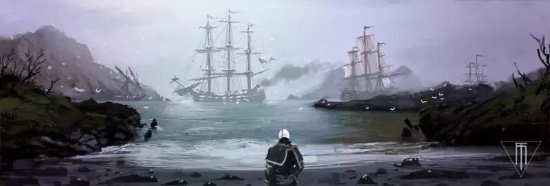
Tabla de Encuentros en el mar
1d20
Nombre
Descripción
1
La bandera pirata
A lo lejos vuestro vigía del barco observa un barco con la bandera pirata más temida del Caribe.
Es el momento de decidir si huir o luchar, pero solo los mejores pueden plantearse enfrentarse a
Barbanegra, el azote del mar.
2
Sargazos
El barco se encuentra con una gigantesca masa de sargazos. No va a pasar nada en especial si atraviesan
los sargazos.
Simplemente es para darle color al viaje. Puedes jugar con la paranoia, sobre todo si ya han tenido
encuentros
con profundos, diciendoles que no se ve a través de los sargazos y que podrían tener una emboscada
profunda.
3
Grupo de cetáceos
Vuestra nave se encuentra con un grupo de cetáceos (delfines, orcas, rorcuales o ballenas
jorobadas) que acompañaran al barco jugando y saltando delante de la proa. Pueden ser una
buena provisión de carne fresca si cazan algunos ejemplares. Si atacan a los cetáceos estos
trataran de huir. Si muere o es herido algún miembro de la manada el resto tratará de llevárselo.
Esta afrenta no será olvidada y si vuelve a salir este resultado en un viaje, volverá a
aparecer este grupo pero está vez se defenderán activamente golpeando primero. Según como
vayan los encuentros con el grupo de cetáceos pueden convertirse en Aliados o Enemigos.
4
Cambia el tiempo
Vuelve a tirar en la Tabla de Tiempo atmosférico durante los viajes si había
Tiempo perfecto y quédate con el nuevo resultado.
5
Registro aleatorio de contrabando
El grupo se encuentra un barco patrulla en busca de contrabandistas. Deberán decidir si huir, luchar o
dejar que hagan su trabajo.
6
Ejemplar de La verdad de La Habana
Uno de los marineros saca un ejemplar de la VLH y empieza a comentar alguna noticia
extraña. Los héroes podrán tirar en la Tabla de Noticias de La verdad de La Habana
7
La tortuga
Empieza el relato salvaje "La tortuga".
8
Cambia el tiempo
Vuelve a tirar en la Tabla de Tiempo atmosférico durante los viajes si había
Tiempo perfecto y quédate con el nuevo resultado.
9
Mensaje en una botella
Encontráis una botella flotando en el agua. Dentro lleva un mensaje de un náufrago (tira un idioma al
azar
Tabla de Idioma para libros). Con una tirada de Navegar o Supervivencia para interpretar las indicaciones
del
mensaje podrá encontrar un islote donde hay restos de un naufragio de una pequeña embarcación y un
cadáver reseco hace años. Pueden tirar un botín de d6.
10
Saboteadores profundos
Un pequeño grupo de profundos provoca daños en la embarcación, como robar el ancla,
abrir una vía de agua o atorar el timón. Los tripulantes deberán arreglar los
desperfectos antes poder continuar.
11
Grupo de cetáceos
Vuestra nave se encuentra con un grupo de cetáceos (delfines, orcas, rorcuales o ballenas
jorobadas) que acompañaran al barco jugando y saltando delante de la proa. Pueden ser una
buena provisión de carne fresca si cazan algunos ejemplares. Si atacan a los cetáceos estos
trataran de huir. Si muere o es herido algún miembro de la manada el resto tratará de llevárselo.
Esta afrenta no será olvidada y si vuelve a salir este resultado en un viaje, volverá a
aparecer este grupo pero está vez se defenderán activamente golpeando primero. Según como
vayan los encuentros con el grupo de cetáceos pueden convertirse en Aliados o Enemigos.
12
Cambia el tiempo
Vuelve a tirar en la Tabla de Tiempo atmosférico durante los viajes si había
Tiempo perfecto y quédate con el nuevo resultado.
13
Avistamiento de cetáceos
El vigía del barco avista un grupo de cetáceos, delfines, orcas, ballenas, ... En ese
momento pueden decidir qué hacen. Pueden cazarlos y vender sus cuerpos por un buen precio. Por ejemplo,
el ámbar gris, usado en perfumería y que valía más que el oro, era una secreción de los
cachalotes para proteger su sistema digestivo. Si algunos de los cetáceos tiene problemas y
los personajes le ayudan, puedes usarlo mas tarde para salvar a los jugadores si se caen al
mar, su barco es hundido o si les abandonan en una balsa en mitad del mar.
14
Emboscada de profundos
En la oscuridad de la noche un grupo de profundos ataca el barco. Eñ grupo es de
3 profundos por héroe y 1 profundo por cada miembro de la tripulación. Si el vigía pasa una
tirada de Notar podrá avisar a campanadas al resto del barco. Si fallan, los profundos
cogerán al grupo por sorpresa y tendrán ventaja.
15
Abandonado a su suerte
Empieza el relato salvaje "Abandonado a su suerte".
16
Cambia el tiempo
Vuelve a tirar en la Tabla de Tiempo atmosférico durante los viajes si había
Tiempo perfecto y quédate con el nuevo resultado.
17
Bandera pirata
El grupo se encuentra un barco pirata en busca de presas. Deberán decidir si
huir, luchar o rendirse, pero recuerda los piratas no suelen hacer prisioneros.
18
Expedición de guerra de los profundos
Un inmenso grupo de profundos se acerca al barco. Eñ grupo es de
6 profundos por héroe y 2 profundo por cada miembro de la tripulación. Los heroes pueden
enfrentarse al grupo o tratar de huir.
19
El cementerio de barcos
Encuentran el alta mar un islote que tiene gran cantidad de restos de barcos.
Empieza el relato salvaje "La isla de Tekeli-li".
20
Perdidos en el tiempo y el espacio
Los heroes se adentran sin saberlo en una fisura de la realidad que llevan a alguno
de los lugares de los Mitos. Puede ser que atraviesen un portal temporal abandonado de
los yithanios, una zona de teletransporte de la serpigente o entren en la Tierra
de los sueños. Tira en la Tabla de Perdidos en el tiempo y el espacio.
Encuentros en la jungla
Cada vez que se realiza un viaje largo por tierra, normalmente atravesando junglas y pantanos, puedes
tirar en la siguiente tabla. Si algún resultado no ser puede aplicado como el comienzo de algún relato
salvaje puede volver a tirar otro encuentro o simplemente es un viaje tranquilo.
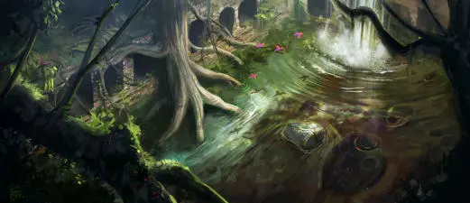
Tabla de Encuentros en la jungla
1d20
Nombre
Descripción
1
La senda de piedra
Los héroes encuentran un trozo de calzada, un hito o un mojón. No se puede seguir porque
se lo ha comido la jungla. Es muy antiguo y lleva oculto años incluso siglos. Con una tirada de
Supervivencia podrán cartografiar el punto y cuando tengan 3 podrán triangular algún tipo
de templo, un cenote u otro elemento de esta tabla. Puedes también aprovechar esto para
introducir una aventura propia como un templo tipo dungeon que explorar, ...
2
Restos de caravana
Los héroes encuentran los restos de una caravana comercial perdida, hay restos humanos
que deberían dar santa sepultura. Pueden que les atacaran bandidos, animales salvajes o
cosas peores. Quizás los mataron, los esclavizaron o algo les hizo huir abandonándolo todo.
Tira tesoro con TPC 1d4 y solo podrán escoger tirar en la tabla de Riquezas.
3
La ceiba sagrada
En mitad de un claro de la selva encuentran una gigantesca ceiba. Este árbol que los mayas
consideraban mágico tiene un aura de poder alrededor suyo que podrá detectarse con una tirada
de Mitos o lanzando un hechizo de Detección arcana. Todo hechizo o ritual hecho a la sombra de
la ceiba sagrada (por eso solo funciona de día o durante la luna llena) gasta la mitad de puntos
de poder y tiene un +2. Con un tirada de Supervivencia podrán trazar un mapa de su localización
y volver a encontrarlo si lo desean.
4
Cambia el tiempo
Vuelve a tirar en la Tabla de Tiempo atmosférico durante los viajes si había
Tiempo perfecto, Calma chicha o Viento en contra y quédate con el nuevo resultado.
5
Frutales
Se encuentran una zona de frutales, papayas, mangos, bananas, ... con las ramas cargadas de
frutas. Si gastan un par de horas forrajeando tendrá raciones para todo el viaje.
6
Ejemplar de La verdad de La Habana
Uno de los viajeros saca un viejo y usado ejemplar de la VLH y empieza a comentar alguna noticia
extraña. Los héroes podrán tirar en la Tabla de Noticias de La verdad de La Habana
7
Pantanos
La ruta que han de tomar obliga al grupo a atravesar una zona pantanosa. Si no pasan una tirada de
supervivencia,
tienen problemas para moverse por la zona pantanosa y el tiempo de viaje se duplica.
8
Cambia el tiempo
Vuelve a tirar en la Tabla de Tiempo atmosférico durante los viajes si había
Tiempo perfecto, Calma chicha o Viento en contra y quédate con el nuevo resultado.
9
El yeho
El grupo se encuentra una expedición de caza en la jungla que busca al
misterioso Yeho. Empieza el relato salvaje "El yeho".
10
Restos de expedición de guerra
Los héroes encuentran los restos de una expedición militar. Hay restos humanos
a los que deberían dar una digna sepultura. Seguramente les atacaron soldados enemigos o cosas
peores. Tira un botín con 1d6 y solo podrán escoger tirar en la tabla de Riquezas y la
tabla de Objetos extraordinarios.
11
El templo perdido
Empieza el relato salvaje "El templo perdido".
12
Cambia el tiempo
Vuelve a tirar en la Tabla de Tiempo atmosférico durante los viajes si había
Tiempo perfecto, Calma chicha o Viento en contra y quédate con el nuevo resultado.
13
Cenote
Encuentras un cenote oculto en la maleza y parece que hace siglos que nadie pasa cerca de él.
Puedes explorarlo buceando en sus cristalinas aguas. Si pasas una tirada Atletismo para nadar y bucear
y consigues un avance en una tirada de Notar podrán obtener hacer una tirada de tesoro de 1d6. Podrás
tirar en la
tabla que quieras (incluso en la tabla de Más allá del tiempo y el espacio). Si tienes algún método para
moverte
sin problemas debajo del agua no hace falta tirar Atletismo y no necesitas un avance en la tirada de
Notar.
14
Madre de aguas
Encuentran restos de ropajes taínos con manchas de barro sangre y una tosca muñeca de madera en la jungla.
Cerca encontrarán un poblado de tainos que parece conmocionado por algún suceso extraño. Empieza el relato
salvaje "Madre de aguas".
15
Cultivos salvajes
En mitad de la jungla encontráis un campo de algún tipo de vegetal en estado salvaje. Según en que
relatos salvajes
estén metidos podría ser achiote, tabaco o cohoba (el alucinógeno más potente del caribe y parte
fundamental del ritual de la cohoba). Si alargáis vuestro viaje un par de días,
podréis dedicarlos a recolectar y preparar
para transportar la cosecha. Si tenéis prisa por llegar a vuestro destino llegaréis un día tarde, si no,
no
importará llegar unos días más tarde.
16
Cambia el tiempo
Vuelve a tirar en la Tabla de Tiempo atmosférico durante los viajes, si había
Tiempo perfecto, Calma chicha o Viento en contra. Quédate con el nuevo resultado.
17
Cenote profundo
Encuentras un cenote oculto en la maleza y parece que hace siglos que nadie pasa cerca de él.
Con una tirada de Supervivencia encontrarás huellas de pies palmeados de profundos.
Puedes explorarlo buceando en sus cristalinas aguas pero no encontrarás mas que un grupo de profundos
(2 por cada heroes). El cenote se conecta a una red de cuevas sub-acuáticas que llega hasta el mar
y que los profundos suelen usar en sus incursiones tierra adentro.
18
Restos fosilizados
En una zona rocosa los héroes encuentran gran cantidad de restos fosilizados de dinosaurios. Si
disponen de equipo adecuado (picos, palas, cubos, ...) en 1 semana completa de trabajo pueden sacar 1d4
esqueletos completos de dinosaurios de tamaño medio (tamaño 5-6). Si sacan 4 sacarán uno de tamaño
gigantesco (10-12). Con el hechizo de Control elemental tierra podrán hacerlo en 1 día. Empieza, si
quiere tu mesa, el relato salvaje "Cazadores de huesos".
19
Restos de expedición perdida
Los héroes encuentran los restos de una mítica expedición perdida que buscaba
alguna ciudad perdida de oro o la fuente de la juventud. Es tan antigua que no quedan restos humanos
y estaba todo cubierto de maleza. Seguramente les atacaron los defensores de los lugares que saquearon.
Tira un tesoro de 1d8 y podrán tirar en la tabla que quieran hasta en la tabla de Más allá
del tiempo y el espacio.
20
Perdidos en el tiempo y el espacio
Los heroes se adentran sin saberlo en una fisura de la realidad que lleva a alguno
de los lugares de los Mitos. Puede ser que atraviesen un portal temporal abandonado de
los yithanios, una zona de teletransporte de la serpigente o entren en la Tierra
de los sueños. Tira en la Tabla de Perdidos en el tiempo y el espacio.
Perdidos en el tiempo y el espacio
Puede ser que en algún momento los héroes sean absorbidos por un agujero dimensional, sean
desterrados a otros planos por un hechicero, abducidos por alguna raza extraterrestre o simplemente
al usar una llave de plata la puerta se abra a un nuevo plano. Con esta tabla podrás elegir donde
acaba tu mesa. Cada opción viene con ideas de aventuras y de cómo volver.
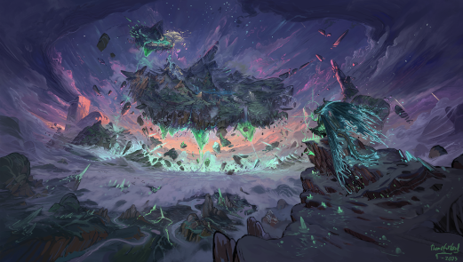
Tabla de Perdidos en el tiempo y el espacio
1d12
Nombre
Descripción
1
Carcosa
Carcosa es una ciudad de uno de los planeta de las Híades, cerca de Aldebarán. Esta situada junto al
lago Hiade.
Frecuentemente confunde dimensiones con la Tierra, arrastrando a aventureros que se hablan adentrado en la
ciudad.
Se cree que esto se produce, ya que es la morada/prisión de Hastur.
2
Carcosa en ruinas
No se sabe muy como, pero la ciudad de Carcosa cayo en desgracia en algún momento de su historia y ahora
solo
quedan ruinas de sus edificios y fantasma de su antiguos habitantes. Además, múltiples byakhee anidaron en
la ciudad.
3
Ulthar
Ulthar es una vieja población de casas de madera situada más allá del río Skai,
junto al Bosque encantado, en las Tierras del Sueño. Por ley los gatos no pueden
ser dados a muerte por nadie.
4
Meseta de Leng
La tradición dice que la Meseta de Leng está ubicada en Asia Central, pero debido a lo difícil
que es localizarla seguramente sea una paradoja espacial que puede estar en muchas partes y en ninguna
al mismo tiempo. Es una amplia región fría y desértica en cuyo centro se encuentra el Monasterio de
Leng, donde vive el terrible Tcho-tcho Lama, posiblemente un avatar de Nyarlathotep o de Hastur.
5
K'n-yan
Es un reino subterráneo que se encuentra debajo de Oklahoma (EUA). Es una inmensa caverna iluminada
por una fosforescencia azul. Sus ramificaciones ocupan casi toda NorteAmerica y Además, de permitirte
volver a la superficie dan acceso a otros mundos como las Tierras de los Sueños o Yoth. Está habitada
por unos humanoides inmortales llamados Vieja Raza de K'n-yan y su capital se Tsath en honor a su deidad
principal, Tsathoggua. Se puede acceder a K'n-yan desde cuevas y cenotes. La ciencia de la Vieja Raza es
muy avanzada y puede que necesiten conseguirla para alguno de sus descabellados planes.
6
Yoth
Yoth es un reino en ruinas situado debajo de K'n-yan. Fue creado por serpigente, pero atrajeron la
ira Yig al empezar a adorar a Tsathoggua y este los maldijo haciendo que degeneraran y perdieran su
inteligencia.
7
Jungla de Kled
La Jungla de Kled es una inmensa jungla que se encuentra en las Tierras de los Sueños. Por toda la
jungla hay palacios y templos perfectamente conservados en los que la jungla no ha podido entrar. Si tu
mesa
se pierde en la jungla puede que aparezca aquí. Quizás tengan que explorar alguno de los palacios
para encontrar la forma de volver.
8
Hiperbórea
No voy a decir más: conoce a Conan y combate a su lado.
9
Corona Mundi
Corona Mundi es una inmensa ciudad abandonada en la Antártida creada por los Antiguos. Ya solo está
habitada
por pingüinos gigantes y los sirvientes de los Antiguos, los shoggoth. Esta ciudad se ha conservado
perfectamente
gracias al hielo a las montañas que lo rodean y lo protegen. Esta lleno de edificios que son maravillas de
la
arquitectura llenos de bajorrelieves y estatuas contando la historia de los Antiguos.
10
Pnakotus
Pnakotus fue construida hace millones de años por la Gran Raza de Yith en el Gran Desierto de Australia.
Es conocida por su gran biblioteca, donde está recopilado todo lo que ha pasado y mucho de lo pasará.
Recordemos
su capacidad para lanzar sus mentes atrás y adelante en el tiempo. Igual necesitan visitar su biblioteca
para
conseguir algún dato importante para sus misiones. El viaje de regreso al Caribe desde Australia puede
ser una aventura en si misma.
11
R'lyeh
Ya hemos hablado de R'lyeh mucho en esta ambientación así que ya sabes que van a encontrar.
12
El vacío
Este gran espacio vació, es la nada, el fin del tiempo y el espacio sin origin y sin final. Igual
es el centro de un agujero negro o lo que queda de una dimensión devorada por dholes. Pero desde luego mejor no tener que entrar nunca.
Noticias de La verdad de La Habana
Los ejemplares de la VLH pueden encontrarse en cualquier parte del Caribe y cuando alguien se
encuentra con un ejemplar si gasta una hora en leerlo podrá descubrir alguna noticia que
le llame la atención.
Tabla de Noticias de La verdad de La Habana
1d20
Titular
Descripción
1
Entre las redes de unos pescadores de [puerto] ha aparecido el cuerpo de una sirena
En realidad es el cuerpo hinchado y putrefacto de un profundo que murió a causa
del ataque de un tiburón. Si los heroes buscan a los pescadores estos lo tendrán
conservado en sal. Podrán comprarlo por 150 doblones, algo menos si regatean.
Si un personaje gasta una semana estudiando estas bacaladas saladas gigantes obtiene un +1
a todas las tiradas relacionadas con los profundos.
2
Extrañas luces iluminan la costa de [puerto]
Las luces se pueden ver en una zona de cuevas y acantilados. Si se investiga la zona por la noche,
un grupo de delincuentes (unos 6 piratas) está intentando saber como funciona un faro del diablo que
han adquirido. Lo que buscan es aprender a simular las luces de los faros cercanos y engañar
a los barcos para llevarlos los arrecifes y quedarse con su carga.
3
Aparecen pepitas de oro en las playas de [isla]
La mareas vivas y un reciente huracán han arrastrado hasta la playa un gran cantidad de pepitas
de oro. Se desconoce su origen, pero no pueden ser de un barco hundido porque se transformaban en
lingotes. Los pescadores y campesinos locales han dejado sus trabajos para ir a la playa buscar pepitas.
Se han montado campamentos improvisados en las playas donde estos buscadores de oro esperan nuevas
mareas para tratar de conseguir oro. Las pepitas si encuentran una o pueden ver alguna de las
que han recogido los buscadores tienen formas extrañas pero desde luego no naturales. Con una tirada de
Mitos
verán que son joyas de los profundos y seguramente querrán recuperarlas. Si ya habían visto este tipo de
joyas
lo verán sin necesidad de tirada.
Las pepitas proceden de un asentamiento profundo en los arrecifes cercanos. El huracán junto
a las mareas vivas casi han destruido su poblado submarino. La mayoría de las pepitas de oro son en
realidad
joyas de los profundos que han perdido durante la destrucción de su aldea. La misma noche que lleguen
los los PJs los profundos harán un ataque salvaje al asentamiento de la playa para recuperar su oro. Si
los
jugadores no hacen algo los profundos masacrarán a la gente de la playa. Pueden convencerles de que
devuelvan
el oro o serán perseguidos por los demonios del mar, pueden defenderse o pueden huir.
4
Aparece una coliflor de 500 kilos en un plantación de [isla]
Una espora de Ubbo-Sathla, dios primigenio que vino a la tierra desde el espacio que se que
cree que es el origen de la vida en la tierra, ha caído en el huerto de un campesino y ha hecho que
sus vegetales crezcan en tamaño descomunal. La espora ha llegado de rio arriba de un almacén de la RCPC.
El almacén es una tapadera donde la Orden del Gran Cthulhu está haciendo experimentos. Si los personajes
investigan
podrán dar con el laboratorio secreto. Es una construcción de madera dos pisos muy simple, primera planta
almacén y laboratorio en una sola gran estancia; segunda planta, oficinas del capitán, dormitorio con 8
camastros y cocina/despensa. Hay un 1 capitán, 10 guardas y 2 cultistas/científicos y 3 peones.
Si desmantelan el almacén pueden hacer una tirada de tesoro con un TPC 1d8.
5
Extrañas frutas aparecen en los arboles de [ciudad] ante el asombro de la gente de ciencia
Los campesinos locales han recogido extrañas frutas de sus arboles frutales que al ser consumidas tienen
efectos alucinógenos. Podrán comprar algunas piezas por 10 doblones cada una. Si se consumen,
las ondas cerebrales del gran Cthulhu se infiltran en el cerebro de los comensales dándoles visiones
terrible de la ciudad sumergida de R'lyeh. Durante las visiones podrán hacer uso de su habilidad
de Mitos de Cthulhu para tratar de sacar información sobre Cthulhu, R'lyeh, sus adoradores y sus planes.
6
La joven diletante Johanna Ribeiro presentará su primera obra en el teatro de Kingston.
Johanna Ribeiro está preparando su primera obra de teatro "El capitán de amarillo" que
espera que sea un éxito. La noticia narra las dificultades que está teniendo la dramaturga
para sacar su obra. Empieza el relato salvaje "El capitán de amarillo".
7
La actividad sísmica se dispara en los Cayos de Florida
En los últimos meses ha aumentado drásticamente la actividad sísmica ebn los Cayos de Florida. Los
locales se
lo achacan desde demonios tratando de escapar del infierno a locas teorías sobre placas de corteza
terrestre
que chocan entre sí. La verdad es que los temblores han crecido desde que se instalaron en Cayo Hueso un
grupo de religiosos
ascetas.
8
Desde Galicia hasta el Caribe
La noticia recoge la migración de gallegos desde España hasta el caribe en busca de fortuna. Permite
aprender el ritual de La Queimada, cuya receta se recoge en el artículo.
9
Se buscan modelos
Un anuncio busca modelos. Empieza el relato salvaje "Se buscan modelos".
10
Las curiosas tradiciones de los habitantes de [lugar]
El articulo cuenta las extrañas tradiciones de las gentes de algún pueblo/ciudad/isla del Caribe. Puede
ser que hablen de procesiones, recetas de platos típicos, ceremonias religiosas, ... la cuestión es que
de esas tradiciones se pueden sacar un ritual al azar de la tabla de Rituales.
11
Entrevista a la Gobernadora Marley
En una entrevista a la Gobernadora Marley de isla Melee habla del ritual de belleza que hace
cada día para estar tan guapa. Puedes aprender un ritual de belleza que consiste en pedirle
a tu reflejo (espejos, superficie pulida o incluso agua) que te haga más bello mediante una
fórmula mágica rimada. Te otorga la ventaja Atractivo hasta la mañana siguiente.
12
Nuevo avistamiento de una madre de aguas en [zona]
Campesinos de la zona aseguran que algunos de sus animales de granja han sido víctimas
de estas boas gigantescas. Se buscan aventureros que les libren de estas alimañas. Empieza
el relato salvaje "Madre de aguas".
13
Se buscan repartidores
Un anuncio busca repartidores para VLH. Empieza el relato salvaje "Repartidores".
14
El famoso cazador de monstruos Fabio Castelli llega a Ponce para comenzar una nueva aventura
Un famoso cazador italiano ha llegado a la ciudad para cazar a "El yeho", una especie de
eslabón perdido entre los humanos y los primates que vive en los bosques de la zona. Empieza el
relato salvaje "El yeho".
15
Se buscan escritores
Un anuncio busca redactores para VLH y se ofrece dinero por buenas historias. Empieza el relato salvaje
"Primera plana".
16
Compramos libros antiguos
Librería Guía, en La Habana, compra libros antiguos. Si tu mesa visita a Isadora y se gana su confianza
obtendrá una valiosa aliada con los mayores conocimientos de los Mitos de todo el Caribe.
17
La Destreza Indiana
Este reportaje habla sobre el maestro de esgrima Don Diego Rodríguez de Guzmán que enseña a sus alumnos
la Destreza Indiana, su estilo de lucha. La Destreza Indiana es una evolución de la Destreza de origen
español con adaptaciones a las peculiaridades del Caribe y de los navíos.
18
¿Te atreves a pasar un noche en una casa encantada?
Anya Corbitt ofrece 200 doblones a quien averigüe que pasa en la casa
familiar, la mansión . Empieza el relato salvaje "El tesoro de la mansión Corbitt".
19
Tú eres el protagonista
El artículo narrará de forma muy heroica alguna de vuestras aventuras. El relato os pondrá de
paladines del bien. Si los que lo lean fallan su tirada de Astucia se tragaran todas las
exageraciones del periodista y podrán recuperar un punto de cordura. Sienta bien para el ego y
la salud mental que hablen bien de ti y alaben tus acciones. En caso de no tener puntos
de cordura que recuperar obtendrá un beni.
20
Anuncio de The Mystery Shack
Hay un anuncio que ofrece 20% de descuento a quien presente este periódico al comprar
algún producto en la tienda de curiosidades de The Mystery Shack.
Guía de viajes
En nuestra guía de viajes te vamos a mostrar los sitios mas interesantes, mas divertidos, salvajes o
terroríficos del Caribe de 1722.
Lugares dominados por los seres de los Mitos donde la aventura se puede respirar. Muchos de ellos puedes usarlos
para
ambientar tus sesiones y otras muchas son semillas de rol para tus propias aventuras. Mi recomendación es que
añadas
las tuyas y hagas este mundo mucho más rico.
La estructura es muy sencilla. El Caribe está divido en diferentes zonas. Cada zona en las principales ciudades
y cada ciudad los lugares más interesantes. Podrás encontrar, tiendas, tavernas, monumentos, cuevas, lagos, ...
Muchas
zonas tienen lugares de interés que no pertenecen a ninguna comunidad, pero que son lo suficientemente
interesantes como
para ser destacados en los apartados de "Otros lugares de ...".
Islas piratas
En 1722 podemos encontrar diferentes enclaves piratas, puertos seguros donde refugiarse en caso de problemas con
ingleses o españoles, donde poder
vender su botín y donde divertirse y beber hasta caer inconsciente.
Algunos de estos enclaves son lugares independientes fuera del control de las potencias europeas y otras veces
son territorios controlados,
donde sus gobernadores son altamente corruptos o les interesa dar cobijo a piratas para que causen problemas a sus
enemigos.
Isla de la Tortuga
Población: 6.000 habitantes
Controlada por: Oficialmente Reino de Francia pero es una zona libre para los piratas.
La Isla de la Tortuga se encuentra en las costa noroeste de La Española, la zona controlada por Francia.
Hoy en día es un refugio pirata cuyo nombre es sinónimo de aventuras, riquezas y ron.
El norte de la isla es inaccesible (de ahí su nombre de Costa de Hierro) con grandes acantilados y fuerte oleaje y el sur ha
sido fortificado con los años or los diferentes conquistadores de forma que sus puertos y
fondeaderos son muy difíciles de tomar.
Los taínos nunca llegaron a establecerse definitivamente en Tortuga, que llamaban Baynei, así que su
presencia en la isla es muy escasa. Sin embargo, puedes encontrar colonos ingleses, franceses y españoles,
muchos de ellos piratas retirados, que se han establecido con los años y que han vivido gracias
a la agricultura y al comercio y abastecimiento de los barcos piratas.
Les proporcionaban provisiones y diversión y a cambio conseguían parte del botín robado.
Hay desde hace unos pocos años varias poblaciones de agricultores muy creyentes y beatos llevados aquí por la rama
propagandística de la RCPC para ir poco a poco civilizando a los violentos piratas de las isla.
Hôtel de ville
Se conoce como Hôtel de ville o ayuntamiento a un viejo edificio de gran tamaño y de estilo francés
situado en el centro de Tortuga. Es el único órgano de gobierno de Tortuga. En él se reúnen
los capitanes piratas y toman decisiones sobre el gobierno de la isla y su defensa. También
resuelven sus disputas siguiendo el antiguo código de la hermandad de la Costa. Las deudas de
honor se resuelven en el patio interior del ayuntamiento con duelos a muerte. El patio también
se usa de cadalso en caso muy graves de traición.
A la entrada del ayuntamiento hay un tablón de anuncios con montones de ofertas. Si no sabes leer,
siempre hay alguien que te pueda ayudar por unas monedas con los anuncios de compra y venta de objetos
y de propuestas de trabajo.
Cada semana se puede consultar el tablón para buscar anuncios de venta o intercambio de
objetos extraordinarios. Puedes generar siempre que vayan a verlo un tesoro de tirada de botín 1d8 en el que solo
se puedan tirar en la Tabla de Objetos extraordinarios.
El precio o por lo que quieran intercambiar queda a tu
elección. También es una buena forma de darles el objeto que necesiten para empezar o afrontar una aventura.
Puedes usar el tablón para introducir tus propias aventuras. Un anuncio buscando aventureros
valientes que hagan una gesta por una nueva suma es un clásico de los juegos de rol.
La Flor de Lis
La taberna más popular de Tortuga es la Flor de Lis. Es el bar más sucio y depravado de todo el Caribe. Tras
semanas o meses
de navegar sin tocar tierra, la gente de mar viene a la Flor de Lis con ganas de emborracharse, divertirse y en
muchos casos de
cumplir sus oscuras fantasias. No hay nada prohibido en la Flor de Lis. Juego, alcohol, drogas, sexo, ... Tu
propón y la Flor de Lis
la puede hacer realidad, por muy raro que sea tu fetiche o tu pulsión sexual. Si tienes dinero se buscan la manera
de cumplirla.
La Flor de Lis es propiedad de Dupont, un personaje de turbio y oscuro pasado que se sospecha fue pirata o
corsario. Se cuenta que
construyo la Flor con el botín pirata que consiguió en su carrera delictiva.
En realidad, Dupont es un lengnita llamado Theros
que escapo a la Tierra y se busco la vida construyendo la Flor de Lis. Nadie de sabe que no es humano ya que
lo oculta muy bien. Además, ayuda mucho que la mayoría de la gente a su alrededor esté borracha o más interesada
en
las cartas o en los cuerpos que se mueven seductoramente en el escenario. Parte del éxito de la Flor de Lis se
deben a
la fortuna en rubís lunares que se trajo de su mundo y que le han permitido hacer de todo.
El local tiene 2 plantas y un sótano. En la primera planta están las barras de bar, las salas de juego y un par
de escenarios
donde bailan sensualmente todo tipo de personas en cualquier tipo de combinación, solos, parejas, trios, ... En el
piso superior,
hay diferentes espacios privados para todo tipo de prácticas sexuales y no sexuales.
Contrariamente a lo que hemos dicho antes si hay límites en la Flor de Lis, los que tu quieras y con
los que tú
y tu mesas estéis contentos. Puede ser que sea una simple taberna muy animada con broncas diarias a que sea un
lugar de vicio, lujuria
y perversión desenfrenada con mazmorras BDSM, peleas a cuchillo. Tu eliges, es tu juego.
Lucha con machete
En los sucios callejones de Tortuga y en sus tabernas son muy comunes los combates a machete de forma que se han
ido
desarrollando una serie de técnicas de combate con machete que acabarán creando el Tire machèt durante la
Revolución haitiana.
Puedes tratar de buscarte un experto en este tipo de lucha que te enseñe los trucos de la pelea con machetes.
Por unos 200 doblones (entre sobornos y rondas de alcohol) y una semana y media de entrenamiento
intensivo
(aprender técnicas,
duelos, curarse heridas y demás), mejorará el valor de Pelear del
personaje en un nivel de dado y un +1 al daño cuando combata con machetes o estoque. Su valor de habilidad
no sufre cambios, por ejemplo al gastar avance.
Cayos de Florida
Población: 1500 habitantes repartidos por todos los cayos, entre tribus
calusas y tequestas, cimarrones y raqueros, rescatadores de barcos hundidos.
Controlada por: Reino de España
Los cayos de Florida son un conjunto de más de 800 pequeñas islas colocadas unas detrás de otras en curva desde el
extremo inferior de Florida hasta casi llegar a Cuba. Estas islas estaban principalmente desiertas con algunas
poblaciones en las más grandes como Cayo Hueso.
Los cayos de Florida es uno de esos territorios de frontera donde las gentes que no encajan en la sociedad
se establecían para vivir a su manera. Aunque oficialmente son parte de los territorios de ultramar del Reino
de España, sus habitantes son bastante independientes viviendo bajo sus reglas.
Debido a que esta muy cerca de La Habana y en la ruta entre las poblaciones de la costa este de la
Florida como San Agustín y las ciudades de Cuba, tiene un importante tráfico de cargueros comerciales.
Lo que hace que sus aguas estén llenas de barcos piratas.
Cayo Hueso
Cayo Hueso, la principal isla de los cayos, es un refugio en 1722 para piratas y raqueros (ver más adelante).
Es un lugar seguro donde vender tu botín y comprar provisiones y hacer reparaciones básicas. No es extraño
encontrarse a toda la tripulación de un barco pirata dándose una fiesta en la playa con carne asada y ron
para celebrar su buena suerte.
Cayo Hueso recibe por su nombre de Ponce de León que la llamó así por la gran cantidad de huesos humanos
que encontraron al llegar. Se supone que son restos de calusas, la tribu indígena que vivía en los cayos.
Se cree que la isla era terreno sagrado y se usaba como cementerio. Si alguien decidiera levantar un ejército
de no-muertos podrían levantar de las arenas de sus playas suficientes esqueletos para crear un pequeño
ejército de los muertos.
Desde cayo Hueso también hay un importante comercio de limas de los cayos, más ácidas y aromáticas
y con más vitamina C que las limas normales y esponjas de mar que son usadas en la higiene personal
y en la limpieza del hogar.
Entrenamiento para pescar esponjas de mar: Las gentes que se dedican a la pesca de esponjas de los
Cayos nadan casi como peces y pueden aguantar la respiración mucho más que una persona normal. Las
técnicas que te pueden enseñar los pescadores de esponja hacen que nades mejor y que aguantes la
respiración mucho más.
Por 300 doblones y una semana de entrenamiento pueden entrenarte para mejorar
tus dotes de nadador o para practicar tu apnea. A nivel de juego, puedes conseguir un +2 a Atletismo a la hora de nadar
o que las rondas que puede aguantas bajo el agua sean 2 + (2 veces dado de Vigor). Alguien con vigor 8 podría
aguantar 18 rondas en vez de 10. Con dos semanas y 500 doblones puedes conseguir las dos ventajas.
Si tienes la desventaja Mal Nadador y pagas 400 doblones y entrenas 1 semana podrás quitarte la desventaja.
El tesoro de Cesar
Se dice que en alguna de las islas desiertas de los cayos está escondido el tesoro que el pirata
Cesar ha acumulado como pirata independiente y luego como lugarteniente de Barbanegra.
El tesoro de Cesar se encuentra en el actual cayo Big Pine. Escogió ese lugar debido a que
tenía una gran zona rocosa en el interior del cayo que no filtraba el agua del mar. En 1720
con la ayuda de dos tripulantes de su confianza excavó en la roca viva y deposito su cofre
del tesoro dentro, lo tapó con una losa y lo sello.
El tesoro de Cesar tiene una tirada de TPC 12+2 para determinar su contenido y
puede tener de todo menos objetos de gran tamaño. Lo más interesante es que cesar dejo dentro su
diario personal narrado en una mezcla de memorias hasta aprender a escribir y diario a partir
de ese momento. Si lo descubriera la Orden o Barbanegra comprometería su tapadera y pondría en
peligro su vida. También se le podría chantajear con entregarlo para conseguir dinero o favores.
Se puede considerar como un libro de los Mitos.
Título: Diario personal de Cesar
Autor: Cesar
Idioma: Castellano
TPC: d4
Tamaño: Libro
Estado de conservación: Usado y leído
Rituales: Silbar al viento, Cegar el mascarón de proa, Brindar por el mar, Cornucopia
Tiempo de lectura: 1 semana
Características especiales: Si la
Orden o Barbanegra descubriera este diario comprometería su tapadera y pondría en
peligro la vida de Cesar. También se le podría chantajear con entregarlo para conseguir
dinero o favores.
Raqueros
Un tipo muy especial de piratería se da en los Cayos de Florida, los "wreckers" o raqueros.
Las gentes de los cayos dedican a engañar a los barcos que van por sus aguas con faros falsos
y los hacen encayar o hundirse y luego a saquear los restos. No es exactamente una actividad
ilegal por lo que no son tan perseguidos como los piratas de alta mar.
Es muy difícil demostrar que alguien ha usado luces falsas para
engañar a los barcos y este método de vida esta tan integrado en la vida de los cayos que nadie
quiere matar a la gallina de los huevos de oro. Además, el derecho de salvamento les da a los
raqueros la propiedad de los restos de los barcos.
Islas Caimán
Población: 300 habitantes
Controlada por: Gran Bretaña
Las Caimán se encuentran al sur de Cuba, al noroeste de Jamaica y al este del Yucatan.
Este archipiélago está formado por 3 islas y solo Gran Caimán, la mayor isla tiene una localidad
estable, George Town. Las islas están bajo el control del Gobernador de Jamaica desde 1670, aunque
son bastante autosuficientes y auto-gobernadas.
Las dos islas menores han sido refugio de piratas y de cimarrones durante décadas. En sus calas
han fondeado barcos para carenarlos y en sus selvas se han conseguido carne, fruta y agua potable.
también ha sido lugar de reunión y parlamento en épocas de grandes crisis para los piratas.
George Town
George es una pequeña comunidad en el suroeste de Gran Caimán. Se dedican principalmente a la pesca y
la venta de pescado ahumado. Las playas están llenos de ahumaderos y secaderos de pescado que luego
es vendido en Jamaica. tiene un pequeño puerto pesquero donde fondear y servicios básicos como
tiendas de provisiones, carpinteros navales, médico y una pequeña guarnición de soldados ingleses.
Los profundos han empezado a hibridarse con los habitantes de la zona especialmente con los
pescadores. Una tirada de Mitos podría detectar algunos caos de híbridos entre la gente joven que
está en el puerto. Por ahora solo son una minoría y parecen todos de la misma familia.
Si se pregunta o investiga todos los híbridos son miembros de una familia de pescadores de
origen español que viven fuera de la población, los Santos. Son muy reservados y huraños pero no son
agresivos.
Los Santos y la tribu profundo con la que se hibridaron están desterrados por alguna actividad
ignominiosa que realizaron hace más de un siglo. Ningún profundo se acercará a ellos ni tendrá
tratos con ellos y si los encuentran fuera de su territorio serán ejecutados.
Los Santos eran una familia muy creyente que cuando entraron en contacto con los profundos
vieron su divinidad y que eran hijos de Dios en vez de demonios. Trataron de evangelizarlos
en su fe cristiana y lo lograron. Dejaron de adorar al dios pulpo y la tribu terminó adoptando
los preceptos cristianos e hibridandose con los Santos.
Los Santos saben todo lo que se puede saber sobre los profundos del Caribe. Aunque huraños son muy
religiosos y una persona que muestre su fe cristiana podría acercarseles y sacarles información util
sobre los profundos.
El ostracismo o "Ymg' yog ah" es una antigua ley de los profundos reservadas a las tribus que
hayan hecho actos terribles contra otros profundos o hayan ofendido al Gran Cthulhu. Cualquier profundo
que sea excluido no podrá salir de un pequeño territorio que se les asignará. Ningún profundo tendrá
tratos con ellos y si se los encuentran fuera de su territorio los deben matar. Solo un gran cacique
puede declarar la exclusión pero nadie puede quitarla es para siempre. Teniendo en cuenta que los
profundos son inmortales es una pena muy dura.
El infierno
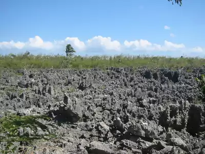
En el extremo noroeste de la isla Gran Caimán hay una zona con extrañas formaciones rocosas negras
y puntiagudas llamada el Infierno. Aunque parezca un paisaje extraterrestre o del inframundo es
totalmente natural. Hay muchos bulos y cuentos sobre que el sitio es usado por practicantes de
artes mágicas para sus hechizos y rituales. No supone ninguna ventaja hacer magia aquí a parte de
que está bastante lejos de miradas indiscretas.
Todos estos bulos los ha hecho correr la rama propagandística de la RCPC para identificar a
practicantes de magia. Tienen un agente cerca que registra quien llega y que hace y manda
informes sobre sus actividades. La rama decide según esos informes si los seduce para su casa,
si los deja en paz por ahora o si manda acabar con ellos a la rama militar.
Cuando necesiten hacer algún tipo de ritual o ceremonia mágica puedes hacerles llegar las
historias de este lugar. Como poco perderán el tiempo y como mucho tendrán una emboscada de
agentes de la Orden.
La playa de 7 millas
La playa de 7 millas es una playa larguísima en forma de media luna de arena blanca situada en el extremo
occidental de la isla de Gran Caimán.
Esta playa ha sido usada desde hace décadas por los piratas para
hacer sus concilios. Cuando un gran peligro amenazaba a las tripulaciones piratas de todo el Caribe se
organizaba un gran conclave pirata en esta playa en las noches de luna llena. Los barcos fondeaban
en sus aguas y los representantes de los diferentes barcos desembarcaban en la playa para
parlamentar y llegar a acuerdos y planes para acabar con la amenaza. No ha vuelto a usarse desde
que se disolvió la Hermandad de la Costa.
Cuba
Cuba es la principal isla del Caribe. Con mas de 1000 km de punta a punta y practicamente llana
excepto por 3 cordilleras en el centro, en el extremo oeste y la más alta en el extremo este. Mientras que la costa está
altamente poblada por los colonos españoles el interior todavía es territorio taíno.
Sin embargo, debido a que sus tierras son fertiles y llanas y están regadas por gran cantidad de ríos, poco a poco
el interior de la isla esta siendo colonizado y su selva destruida y sustituida por plantaciones de tabaco, café y
otros productos de gran valor comercial. Desplazando, además, a las poblaciones taínas aún más al interior.
Lo que antes eran simples sendas ahora son caminos de piedra muy transitados. Lo que antes eran bahias natuarales,
ahora son grandes puertos coemrciales. Y lo que antes eran pequeños poblados ahora son grandes ciudades de miles de
habitantes.
Aun así, el interior todavía es un lugar de misterios donde una riada puede destapar las ruinas de un templo perdido o
un extraño cenote de origen desconocido. Igual en la oscura jungla puedes encontrarte un árbol ceiba sagrado.
Y los miles de islotes que abundan en sus costas también pueden ser fruto de misterios. Quizas encuentras una cala
pirata, una bestía mutada de la RCPC o un tesoro enterrado.
La Habana
Población: 62.000 habitantes
Controlada por: Reino de España
La Habana en 1722 es la mayor ciudad de todo el Caribe. Es la ciudad con más población y el epicentro comercial
del Caribe. Todas las novedades de resto del mundo llegan primero a La Habana y luego al resto del Caribe.
El puerto de La Habana es el mayor puerto del Caribe y todo el comercio entre las colonias españolas del Caribe
y su metrópolis pasan por La Habana. El puerto está protegido contra invasiones de piratas y potencias extranjeras
por dos fortalezas armadas con cañones de gran calibre, una de ellas controlada por la RCPC. Cada fortaleza está
a un lado de la entrada a la bahía de La Habana y sin tomar ambas fortalezas es casi imposible tomar la ciudad.
Todo el dinero que el comercio trae a La Habana se ha transformado en todo tipo de lujos comparables a ciudades
como Madrid, Londres o París. Hay mansiones de todo tipo de estilos arquitectónicos, grandes edificios
gubernamentales, teatros e incluso su propio periódico. Hay artistas que pintan sus calles y a sus habitantes
bajo el cobijo de mecenas de las artes.
Su prosperidad está atrayendo a gentes del campo y a emigrantes de España buscando trabajo y una mejor vida.
Pero también a buscavidas atraídos por el dinero fácil que no tienen escrúpulos en cometer actos delictivos para
prosperar.
La persona más importantes de Cuba es Gregorio Guazo y Calderón, Gobernador de Cuba y Capitán General. En él
reside todo el poder político y militar de la isla. La segunda persona más poderosa es Hernando de Villalba,
propietario de la RCPC y por tanto la persona más rica de Cuba y posiblemente del Caribe.
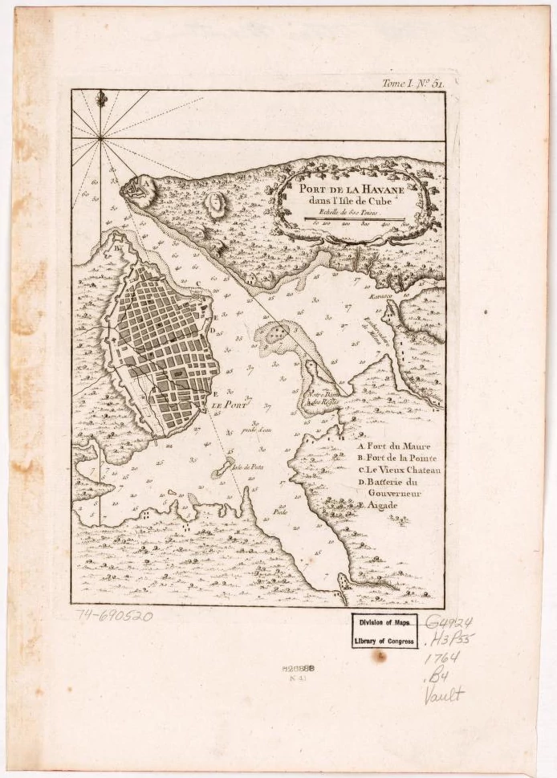
Mapa de La Habana
Plaza de Armas
La Plaza de Armas es el centro de la vida comercial y social de La Habana. Varios edificios
gubernamentales y militares están a su alrededor, así como la sede central de la RCPC. En las
tabernas de las calles aledañas se pueden disfrutar de las delicias culinarias de la cocina criolla
y en sus tabernas probar el mejor ron de la isla. Hay mucha agitación día y noche y es un lugar
de encuentro de los locales y los foráneos.
En plena plaza hay varios postes y tablones donde se colocan los diferentes bandos municipales,
nuevas leyes y tratados comerciales, sentencias de juicios y condenas, ... Por unas monedas el ayuntamiento
te deja poner mensajes personales como anuncios de bodas, defunciones o nacimientos u textos más empresariales
como ofertas de trabajo, propuestas comerciales o compraventas de productos y bienes inmuebles por
poner unos ejemplos.
En momentos especiales y con piratas violentos y famosos y criminales muy buscados que han creado
gran conmoción social el gobernador monta un cadalso donde colgar a los sentenciados a muerte. Esto
atraen a mucha gente, con lo que no sería imposible montar una huida espectacular a la desesperada
de PJs o PNJs que hayan sido condenados a morir en la horca.
Castillo de los Tres Reyes Magos del Morro
El castillo de los Tres Reyes, también conocido como castillo del Morro, se terminó de construir hacia 1610.
Con unos 12 cañones y una guarnición de unos 500 defensores. Protege la ribera norte de la entrada a la bahía de
la Habana.
A diferencia del Castillo de San Salvador de la Punta que esta enfrente en la ribera sur, el Morro, como lo
conoces los locales, está controlado por el RCPC. La guarnición esta controlada por el director general de la
RCPC en La Habana de forma que la RCPC controla todos los barcos que entran y salen de La Habana.
Todo el personal del Morro son empleados de la RCPC y son adeptos de la Orden del Gran Cthulhu en mayor o menor grado. En sus sótanos
se practican ritos de adoración a Cthulhu, se retiene y tortura a individuos que son peligrosos para el culto y se
guarda una buena biblioteca de libros y objetos de los mitos. Es la sede del culto más importante y mejor
defendida en todo el Caribe. Es donde Hernando de Villalba hace sus ritos más importante y donde una vez al año se monta un
importante conclave de directores generales de la RCPC.
Si tu mesa es atrapado por la RCPC o la Orden seguramente acabarán aquí. Tienes un relato titulado "Escapando
del Morro" que puedes llevarles para que se fuguen de esta prisión de "máxima seguridad".
Dentro del Morro hay siempre una media de 200 militares entre oficialía y soldadesca. Usa Infantes de Marina
para los soldados y añadeles Idioma Cthulhunés d6 y Mitos d4 a los oficiales, además de una arma empozoñada +1.
Solos los cargos más altos viven fuera del castillo, el resto viven y trabajan dentro de la fortaleza. Hay turnos de 8 horas, con que un
tercio trabaja y vigila, otro tercio se entretiene en los barracones o está de permiso y el último tercio duerme.
eso supone que siempre hay unas 70 personas vigilando y unas 140 despiertos.
Parte de la fortaleza da a unos acantilados contra el mar. Estos acantilados son muy complicados de escalar y
caerse al agua supone acabar aplastado contra las rocas que hay debajo. La parte que da a tierra tiene
unos solidos muros de entre 15 y 30 metros según la zona. Ambas partes está vigiladas pero sobre todo la
del muro que da a la peninsula. Solo se puede entrar al Morro desde tierra, a través de una puerta levadiza reforzada que
hay en el muro terrestre. El muro terrestre es escalable, pero está bastante vigilado.
Dentro de la fortaleza hay una serie de edificios que sirven de barracones, oficinas, comedores, cocinas, etc.
El más grande de todos, que está en medio de la plaza, lo usan los oficiales para temas importantes, como guardar
objetos valiosos o reterner a prisioneros importantes en un gran sotano con celdas que tiene debajo. Para acceder
al sotano, hay una trampilla de madera reforzaba con hierro con un candado de seguridad (-2 a Latrocinio), cuya llave lleva
el oficial de servicio en ese turno.
Mapa del Castillo de los Tres Reyes Magos del Morro
La mansión Villalba
La mansión Villalba, en la que Hernando de Villalba lleva enclaustrado los últimos 10 años, se encuentra en
las afueras de La Habana. A pesar de su aspecto placido y opulento es una fortaleza inexpugnable protegida
física y mágicamente.
Antiguamente Hernando solía dar grandes fiestas con las personas más ricas e importantes de La habana, pero
ha dejado de perder tiempo con la vida social para centrar todos sus esfuerzos en sus planes apocalípticos.
La rama propagandística de la RCPC se ha encargado de desviar todos los actos sociales que se hacían en
la mansión Villalba a los casoplones de cultistas de rango superior en al Orden y clase alta y con recursos.
se ha demostrado el valor de estos actos sociales para detectar y extender rumores y contactar con
personas importantes a las que atraer a la Orden, seducir, amenazar o tentar.
Físicamente hay un pequeño ejército de guardas adeptos a la Orden que darían su vida por Hernando.
Hay unos 42 guardas, 14 por turno. Los que no están de guardia están descansando en unos barracones
detrás de la mansión. Podrían estar activos en un par de minutos.
Los guardias solo vigilan los jardines y el perimetro de la casa. Por orden expresa de Villalba,
los vigilantes no entran en la casa. En el interior solo hay personal de servicio de total confianza
de Villalba y el propio Villalba. En sus tiempos podría tener prisioneros en su sotanos, pero hace mucho
que nadie los usa. Esos tiempos de torturas y asesinatos rituales acabaron hace unos años para
este viejo líder sectario.
Por las noches, además, se sueltan perros mutados (8) que no dudan en matar y devorar a los que entren en
los jardines de la mansión. Estos perros fueron de los primeros experimentos de la RCPC y los mejores ejemplares
de cada camada se destinan a la protección de Villaba.
Perro mutado:
Estos perros han sufrido peligrosos experimentos que les han dado mayor tamaño y fuerza, visión nocturna,
garras y dientes más peligrosos y los han hecho terriblemente peligrosos. Esos mismos experimentos
les han dado un aspecto cadavérico, ojos negros y sin pupilas y un verdor fosforescente cuando se excitan y
van a entrar en combate y que se ve a distancia en la oscuridad.
Pelaje duro: Su pelo y su piel le confieren armadura +1
Mordisco brutal: FUE+d6+2
Garras brutales: FUE+d6+2
Visión nocturna: Ignora las penalizaciones a la visibilidad por
penumbra y oscuridad, lo que le permite ver con normalidad excepto en
condiciones de oscuridad completa.
TPC: 1d4 (manada)
Guardia de la mansión:
Los guardias son adeptos de la orden y tiene conocimientos básicos de Mitos, de magia y de cthulhunés.
Son muy meticulosos en su registros y no sobornables, con lo que es muy difícil meter armas
escondidas entre la ropa u objetos de mayor tamaño en carros y carretas. Tampoco se retrasan en sus rondas,
ni paran para fumar o beber. Cumple estrictamente sus horarios con lo que es muy difícil encontrar agujeros en
su seguridad.
Equipo: Sable de abordaje (FUE+d6) y mosquete (10/20/40, 2d8, Recarga 3)
Por lo menos 1 de cada 4 guardas, presumiblemente el jefe del grupo, debería tener una arma
bendecida o ponzoñosa que hará +2 al daño y se considerará mágica.
Mágicamente es imposible lanzar un hechizo que penetre dentro de la mansión. Solo poderosos taumaturgos con
grandes rituales pueden intentar algo. Y desde dentro tampoco es muy viable, ya que la Orden con la ayuda
de la rama tecnológico-mágica de la RCPC ha podido copiar el poder de los lloigors de drenar
magia. En unos pocos minutos en la mansión un brujo se queda sin el poder suficiente ni para poder hacer un
simple ritual.
El campo de drenaje de magia de la mansión drena todos 1d6 PP por turno a 500 metros
alrededor de la mansión. Absorbe 1d8 por turno si entras dentro de la mansión.
Es la vivienda particular más grande de La Habana, incluso que la del gobernador. La casa tiene 2 pisos
y un sótano/mazmorra. Desde el 2 piso se puede acceder a un pequeño observatorio astronómico que Hernando
usa como biblioteca de los Mitos y lugar donde hacer sus invocaciones.
El palacio tiene su propio pozo en caso de necesitarlo y una pequeña granja con animales de corral y
un pequeño huerto donde cultivar frutas y verduras. Hay un pequeño invernadero al que no accede nadie
excepto Hernando donde hace sus experimentos.
Si tu mesa necesita infiltrarse en la mansión, tienes un relato titulado "Infiltración" que puedes
dirigirles para entrar y salir de la mansión sin ser detectados.
Calle Empedrado
La Hermandad del Sargazo tiene en esta calle un piso franco para sus miembros. Si te acercas al
portero y le dices la contraseña adecuada, él, tras comprobar que nadie te sigue, te dará una llave
que te abrirá la puerta del segundo piso.
Este piso franco está muy completo con camas para 5 personas, comida, bebida, cocina. Lo más importante
es una pequeña mesa de operaciones con material médico para todo tipo de situaciones, desde extracciones
de balas y piernas rotas, hasta medicamentos para fiebres y diferentes males del Caribe. También puedes
encontrar munición y suele ser costumbre aprovisionar el piso con cosas que te sobren de forma que se pueden
encontrar cosas muy curiosas entre los objetos que han dejado otros miembros de la Hermandad desde ejemplares
de la VLH hasta extrañas plantas de la selva o muestras de seres de los Mitos.
La norma es que no puedes estar más de dos noches o en caso de heridos hasta que sane el herido.
el propio portero se hará cargo de cumplir la norma si te la saltas. Él se encargará de traer todo tipo de
matasanos, sapientes, menestrales ... en caso de necesitarlos.
El piso tiene salida al tejado de forma que en caso de descubran a sus inquilinos puedan huir por los tejados
de la ciudad.
Real Astillero de La Habana
A principios del siglo XVIII la marina española ha empezado a renovarse y el Real Astillero, construido en 1716, será
unos de los lugares donde se monten los nuevos barcos de la marina real española. Además, siendo La Habana
el centro del comercio marítimo del Caribe, la construcción de barcos civiles también es un importante negocio
y fuente de poder. Una compañía naviera no puede crecer ni funcionar sino no se construyen o arreglan los barcos
a la velocidad que exige el flujo comercial.
Es por ello que una de las jugadas más interesantes de la RCPC en Cuba fue conseguir adelantar varios años
el proyecto del Astillero y conseguir que parte del astillero y del arsenal estén controlados por ella. De
esta forma la competencia queda en desventaja en cuanto a su capacidad naval y tienen unas instalaciones
lejos de ojos curiosos donde poner en practica toda su ciencia y magia naval.
El actual astillero tiene 2 partes bien diferenciadas, la pública y la privada de la RCPC. Cada una con sus
talleres, sus diques, sus almacenes y sus propios trabajadores. De hecho, los diques de la RCPC están cubiertos
por grandes toldos a los lados que no permiten ver en que se está trabajando.
Guardias propios de la RCPC vigilan las entradas y las salidas de esta zona y solo las personas recomendadas por
los propios trabajadores del astillero pueden entrar a trabajar. La verdad es que todo lo que pasa en esta sección
del astillero es alto secreto y o es extraño ver extraños barcos entrar en el astillero amparados por la oscuridad
de la noche. Tampoco son infrecuentes los fuegos y las explosiones.
todos los que trabajan en el astillero están bajo la rama militar de la RCPC y realizan todo tipo de modificaciones
a los barcos. Pero solo un grupo muy reducido de menestreles adeptos a la Orden se encargan en un dique especial
y secreto de las modificaciones más terribles y profanas.
Los almacenes están tan protegidos como bancos, ya que hay en ellos materiales muy valiosos y raros que la RCPC
ha ido acumulando con los años.
Debido a la naturaleza digamos demoníaca de muchas de las cosas que hay en el astillero, hay un sistema de
autodestrucción que detonaría varios explosivos en diferentes partes. Las explosiones y el fuego harían
desaparecer la sección de la RCPC y su contenido. Puede parecer una idea exagerada, pero si personas de alta
alcurnia y de poder político o religiosos descubrieran todas las cosas herejes que guarda en el astillero
la RCPC podría ser destruida.
El sistema de autodestrucción se basa en tecnología serpigente y desde su despacho el gerente del astillero,
siempre un cultista de la Orden de nivel medio, puede activar una gran cantidad de explosivos por todo el
astillero de la RCPC.
Activar la autodestrucción significa tener un minuto para huir del astillero o el fuego y las explosiones
acabarán con tu vida. La salida mejor es tirarse al agua, pero para llegar al amr habrá que pasar un infierno
de fuego.
Local ilegal de juego de Alfredo Usía
Alfredo Usía es un criminal de La Habana y controla el juego ilegal. Es Además, un prestamista usurero
al que no le tiembla la mano en cortar pulgares y romper piernas a la gente que le debe dinero y no le paga
a tiempo. Y como no tiene un casino ilegal "secreto". Es secreto para las autoridades pero conocido para el
resto de habitantes de los bajos fondos.
Un viejo almacén del puerto sirve de tapadera del casino al que solo se puede acceder sabiendo el
santo y seña. Hay mesas para jugar a la ruleta, los juegos con dados y los naipes. También hay combates
de gallos con importantes apuestas.
La casa siempre gana: Es muy difícil ganar en las mesas de este casino ilegal.
Los dados, las cartas, los crupieres, ... todo está trucado. Si quieres apostar y jugar tendrás un
-2 a todas tus tiradas. Si haces trampas, estas solo contrarrestarán las del casino con lo que
tirarás sin negativos.
Sin embargo, la estrella son las apuestas es una modalidad de pelea nueva creada por Alfredo, la pelea
de caimanes. En un foso de agua con gradas a su alrededor hay combates entre caimanes seleccionados
por su sed de sangre y su fuerza por sus entrenadores.
Alfredo tiene para días importantes una modalidad de pelea especial, caimán contra humano. Un deudor
que deba muchos doblones puede pedir combatir contra un caiman en el foso y si gana Alfredo le perdona
la deuda. Es un negocio redondo, ya que tanto si pierde y muere como o si gana, las apuestas de esa
noche le van a dar más dinero del que le debe el moroso.
El foso de caimanes también ha sido usado para interrogar a personas que no querían hablar y
en ultima instancia para deshacerse de cadáveres.
Recompensa extra de cordura (+1): Desbaratar el local ilegal de Alfredo es librar
al Caribe de una gran maldad. Supone sacar de las calles a un criminal peligroso con delitos de sangre, ayudar
a sus deudores a salir a flote y evitar maltrato animal.
Recuerda: El juego patológico es un problema grave y no debe tomarse a la ligera.
Universidad de La Habana
La Universidad de La Habana está siendo construida por frailes Dominicos, que acaban de conseguir el permiso real
y del Papa para crear la universidad. El campus se esta construyendo en el convento de San Juan de Letrán.
Los dominicos necesitan de todo, materiales de construcción, objetos educativos o científicos, libros para su
biblioteca, ... Seguramente una persona de cualquier condición social que aporte algo de lo que
los dominicos necesitan en su proyecto, puede conseguir que acepten dar una educación de calidad
a quien fuese necesario. Si alguien que de normal no podría entrar a estudiar en la universidad puede
conseguirlo si tiene un mecenas que le ayude.
Colegio San José
El colegio San José es un plantel (establecimiento público de instrucción primaria) creado por los Jesuitas entre
1722 y 1723 es el
primer colegio público de La Habana. La única forma de financiación que tiene este colegio son los donativos de
los ricos
potentados de La Habana, ya que el voto de pobreza de los Jesuitas les impide tener propiedades y riquezas.
La situación económica del colegio no es buena y los jesuitas que lo administran andan siempre buscando donantes
generosos.
Donar parte de las ganancias robadas a gente malvada como la RCPC a un colegio público en graves problemas
económicos suele
ser un acto de bondad que deberías recordar a tu mesa.
Los jesuitas han ido recopilando a lo largo de los años un enorme archivo documental que guardan en el sótano del
colegio.
Contiene información de las grandes familias nobles y comerciantes de La Habana. Gracias a sus trabajos como
confesores,
tutores e incluso administradores han accedido a mucha información reservada que no recogen los archivos públicos
de La Habana. Si eres generoso con el colegio, puede que te den acceso a su archivo.
El archivo del colegio San José otorga un +1 las tiradas de Investigar cuando se busca información
relacionada con las altas esferas de Cuba. También es una sencilla biblioteca de los Mitos que otorga un +1 a las
tiradas de Mitos.
La librería de La Habana
En uno de los callejones aledaños a la Plaza de Armas, Isadora de la Guía y Arango tiene una pequeña
librería, Librería Guía. Su padre la abrió hace 40 años cuando llego a Cuba desde España.
Al morir este, Isadora continuo con el negocio de compraventa de libros.
La librería es pequeña, oscura y destartalada con estanterías hasta el techo abarrotadas de
libros. Y siempre encontrarás a Isadora en alguna esquina fresca a resguardo del sol y el
calor enfrascada en la lectura de alguno de los nuevos tomos que
han caído en sus manos. Levantará la vista de su libro te mirará de arriba abajo y si ve que
llevas algún libro te lo quitará de las manos y empezará a ojearlo.
Solo Isadora conoce el sistema de clasificación que usaba su padre y solo ella puede encontrar
algo en ese laberinto de estantes llenos de libros. Lo que a Isadora le lleva minutos, si no
segundos, a cualquier otra persona no entrenada podría llevarle días revisando libros y más libros.
Isadora sabe apreciar los libros de los Mitos, reconoce su valor y suele intercambiar este tipo de
libros e incluso comprarlos. Si apareces por allí con algún libro que hable de los Mitos estará
encantada de ojearlo y darte su opinión.
Isadora es una de las personas que más sabe sobre los Mitos de todo el Caribe, pero solo a nivel
teórico, porque nunca ha hecho trabajo de campo.
Los héroes, si se ganan su confianza, podrán consultarle sobre objetos de los Mitos, maldiciones,
hechizos, rituales, ...
La verdad de La Habana
El periódico más leído del Caribe (sobre todo por ser el único) tiene su sede en La Habana, en un caserón de dos
plantas de piedra muy
deteriorado que es lo único que Delapore puede permitirse. En la planta baja está la redacción y la imprenta. La
redacción está
en una esquina, es un par de mesas largas donde Antoine y dos viejos escribanos retirados se dedican a
recabar historias reales y chismes y darles formas e imprimirlos en papel.
La imprenta sin embargo es un modelo nuevecito que Mary Read le ha proporcionado del botín de un mercante español
y que imprime
ejemplares muy rápidamente. La imprenta es manejada por Ernesto, oficio que le enseño de pequeño su padre, el
hermano de Antoine y su socio
en la imprenta que tenían en París.
En la segunda planta esta la vivienda de Antoine y Ernesto. En este piso Antoine tiene su biblioteca personal y
el archivo con
todas las ediciones de la VLH. Este archivo es una estupenda biblioteca de los Mitos (con un bono de +3)
que Antoine te permitirá usar si le caes bien. La VLH
lleva unos 10 años recabando cada mes todos los sucesos raros que han pasado en el Caribe con más o menos "rigor"
y Antoine
siempre puede confirmarte si la historia que buscas es real o una exageración para vender ejemplares.
Antoine ofrece dinero contante y sonante al que venga con una historia lo suficientemente buena, sobre todo si
trae algún tipo de prueba. Puedes venderle tu historia, pero no trates de mentirle, Antoine es un viejo zorro y
sabe
cuando le cuentan la verdad y cuando no. Además, ya se encargará él de meterle las exageraciones y el
sensacionalismo
que la historia necesite para vender su periódico. Puedes empezar si quieres el relato salvaje "Primera plana".
La otro opción de trabajo es vender ejemplares de su periódico. Te los vende a mitad del precio normal unos 2
doblones, con lo que puedes venderlo a 4 doblones. Piensa que nos 100 periódicos ocuparían en tú barco un barril
de espacio, así que si llevas
100 periódicos podrías
sacar unos 200 doblones de beneficios. Puedes empezar si quieres el relato salvaje "Repartidores".
Matanzas
Población: 12.000 habitantes
Controlada por: Reino de España
Matanzas se encuentra en una placida bahia en la costa norte de Cuba. Es conocida como
"La ciudad de los puentes", pues tienes bastantes que se han ido construyendo sobre los 3 ríos que la
atraviesan. Está rodeada de grandes planicies muy fertiles debido a los regadios que permiten los 3 ríos.
Como curiosidad de la ciudad fue fundada por entre unas 20 o 30 familias procedentes de las Islas
Canarias que se establecieron como agricultores en esas tierras. En 1722 las familias más ricas e
importantes de Matanzas son de origen canario.
El castillo de San Severino y El Morrillo
Estas dos fortificaciones son las principales defensas del puerto de Matanzas, cada una a un
lado de la Bahía de Matanzas. El castillo es una gran obra de ingeniería que se empezo a construir
en 1653 pero se paro en 1697 debido a su elevado coste. Es por ello que se tuvo que construir
el Morillo para tener por lo menos una defensa activa en la ciudad.
El Morrillo es un proyecto mucho más pequeño que se ha terminado hace poco (1720). Tiene la
última tecnología militar y aunque es mucho más pequeño que San Severino tiene una
batería de cañones mucho más precisos, más destructivos y con mayor alcance.
Como plan para para pagar su mantenimiento, la administración local ha cedido/alquilado San
Severino a la RCPC. El dinero que pagan como alquiler les sirve para en un futuro poder teminar
la obra y sufragar su mantenimiento actual.
La RCPC la usa como sede central en Matanzas, pero tambien como almacen. Los sotanos son territorio
de la Orden que usa para sus oscuros planes y sus diabólicos rituales.
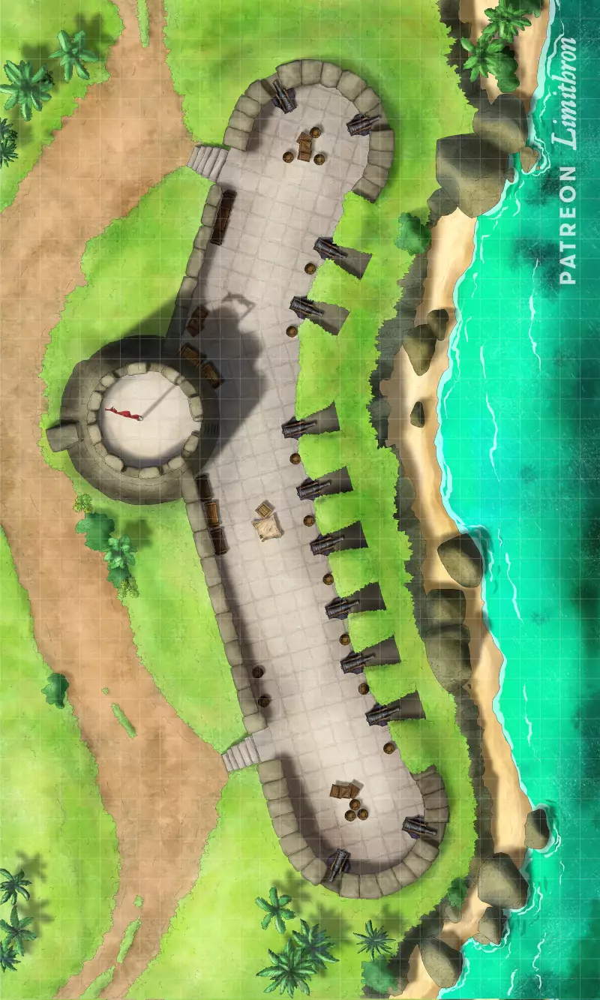
Fortaleza de El Morrillo
Escuela de la Destreza de Diego Rodríguez de Guzmán
La Destreza es una escuela de esgrima (y casi una filosofía de vida) de origen español que cuando
llego al Caribe desemboco en una nueva escuela llamada la Destreza Indiana. La Destreza Indiana es
una adaptación de la Destreza a las singularidades del Caribe.
Diego Rodriguez de Guzman es un maestro navarro de la Destreza que junto a otros esgrimistas de Cuba
están desarrollando un nuevo arte marcial, la llamada Destreza Indiana. Tiene una escuela de esgrima en Matanzas
donde los ricos y poderosos de
La Habana y Matanzas llevan a sus hijos a estudiar ese estilo de lucha y muchas a que Guzmán les meta en vereda.
Guzmán es un fiel seguidor del recto código ético y moral de la Destreza y no enseñara su nuevo estilo a
personajes de dudosa reputación. Se han dado casos en que el propio Guzmán se ha batido en duelo con estudiantes
que han deshonrado su estilo.
Por unos 500 doblones y dos semana de entrenamiento intensivo, mejorará el valor
de Pelear del personaje en un nivel de dado cuando combata con espadas ligeras, como la ropera, machete
o estoque. Su valor de habilidad no sufre cambios por ejemplo al gastar avance.
Santiago de Cuba
Población: 24.000 habitantes
Controlada por: Reino de España
Santiago de Cuba se encuentra entre el mar y la montaña, entre la costa sur de Cuba, en su propia bahía, y
la Sierra Maestra, la cordillera más alta de la isla. Es por ello que se caracteriza por sus cuestas. Como dicen
los lugareños, todo está arriba o abajo de una cuesta.
Debido a la orografía del terreno y al ser de las
primeras ciudades del Caribe sus calles no están bien planificadas en grandes calles rectas como LA Habana si
no que son todo callejuelas y plazoletas cuesta arriba o cuestabajo.
Castillo de San Pedro de La Roca
Esta fortaleza, también conocida como Castillo del Morro, está situada a las afueras de Santiago de Cuba.
Es importante diferenciarlo del Morro de La Habana, por lo que la llamaremos La Roca. Fue diseñado por un genio
de la arquitectura militar, Bautista Antonelli (que diseño también el Morro), y construida en 1638 a la entrada
de la bahía de Santiago para proteger la ciudad de ataques navales. Se le considera inexpugnable y no solo
cuenta con poder defensivo, sino también ofensivo, pudiendo resistir los ataques y contraatacando y destruyendo
a las flotas que intenten tomarlo.
También se usa de prisión militar, ya que se considera que es imposible entrar, pero también es imposible salir.
Escapar de la Roca es una proeza que se contarán durante siglos y de la que libros hablarán siempre.
Debido a la forma de la bahía de Santiago Cuba con una entrada muy estrecha, el gobernador ha decido
establecer un sistema de cadenas de puerto. Desde la Roca se puede levantar unas gruesas cadenas de
hierro que cierran la entrada y la salida de la bahía.
El jefe de puerto de Santiago de Cuba posee un cañonete de pólvora negra que hace mucho ruido y humo para avisar
al castillo de que cierre la bahía, evitando que se escape o de que entre un barco.
Otros lugares de Cuba
Archipiélago de los Jardines de la Reina
Este archipiélago casi deshabitado de hasta 600 islas en la costa sur de Cuba es uno de los lugares preferidos
por los barcos piratas para evadir a sus perseguidores. Si se conoce esas aguas es muy fácil esconderse entre
sus cayos o perder a tus perseguidores que deberán andar con cuidado de no encayar en sus aguas bajas y sus bancos
de arena.
No es el mejor lugar para fondear por su falta de agua potable y posibilidad de conseguir provisiones en muchos
de sus islotes y cayos, pero puede ser un opción viable y segura para hacer reparaciones básicas. Tampoco es
mal lugar para abandonar a los traidores, para enterrar tesoros o para dejar a rehenes mientras esperas a
cobrar la recompensa.
La Orden de Cthulhu suele usar algunas de la islas más pequeñas como zoos improvisados donde dejar
(o abandonar) a sus experimentos y engendros y poder estudiarlos en libertad. Explorando el interior de
las islas podrías encontrarte con seres como gugos o retoños oscuros.
Pirámide sumergidas de granito
En el extremo oeste de la isla de Cuba, en la costa de la península de Guanahacabibes, se encuentra una
serie de estructuras de granito
sumergidas en el mar. Están a unos 650/700 metros de profundidad y ocupan una extensión de unos 2
km2. Tienen formas variadas, circulares y piramidales, y la más grande es una especie de
pirámide escalonada de unos 100 metros de altura.
Las únicas personas que conoce su existencia es Hernando Villalba y los adeptos de mayor nivel de la Orden.
Se quedo impresionado la primera que se sumergió y vio las estructuras, pensando que había encontrado la
ciudad de su señor. Sin embargo, lo que encontró fue un puesto avanzado submarino de los Antiguos
(una extraña raza extraterrestre que habito la Tierra hace miles de años).
Paso un año estudiando los grabados que había en las paredes de las estructuras
y nadie sabe qué descubrió en ellos pero desde su visita cambió su forma de pensar sobre
como encontrar R'lyeh.
Junto al Camino de Bimini en las Bahamas, los grabados de los antiguos son una de las razones que le
han llevado a elaborar la teoría de que R'lyeh esta sumergida en algún lugar del Caribe.
Puerto Rico
La isla de Puerto Rico mide unos 170 kilómetros de largo (de este a oeste) y 60 kilómetros de ancho (de norte a sur).
Tiene una gran cordillera central que hace que sea más fácil seguir la costa que atravesar las montañas
que ocupan un 40% de la superficie de la isla. El pico más alto es Cerro Punta con una altura de 1.339
metros en el centro de la isla. Las montañas crean gran cantidad de ríos que corren rápidos hacia el már.
Mientras que la costa norte (océano Atlántico) es bastante húmeda y verde, perfecta para la agricultura,
la costa sur (mar Caribe) es mucho más seca.
Están empezando a crearse pequeñas comunidades por toda la isla fruto del comercio, del crecimiento de la natalidad
y de la seguridad que l RCPC ofrece a los colonos. Puedes pasar por una cala deshabitada al ida de un viaje y a la
vuelta está llena de chozas y casas y lo más frecuente es que te encuentres en su costas patrulleras de la RCPC
protegiendo esas comunidades y controlando el contrabando y los ataques piratas.
San Juan
Población: 14.300 habitantes
Controlada por: Reino de España
La ciudad de San Juan se fundo en una isla que tapa la entrada a la bahía, conocida como la isleta de San Juan.
Al ser una isla su defensa era más fácil y por su disposición solo tenían que proteger la costa norte de la isla y
las entradas a la bahía. La ciudad, que está amurallada, fue creciendo y extendiendose por la isla y cuenta con
un castillo de defensa marítima, Castillo San Felipe del Morro, y una red de fuertes de vigilancia por toda la costa.
Los profundos de San Juan
Juan Ponce de León es conocido por explorar/conquistar la Florida y por buscar la fuente de la eterna
juventud. Pero de 1508 a 1513 fue gobernado gobernador de San Juan que entonces se conocía como Caparras.
Fue aquí donde escuchó a los taínos de la zona las historias de los cemís diabólicos del mar. De como te daban regalos
de oro, perlas y buena pesca y de como se cruzaban con los humanos y tenían una descendencia híbrida. Y de como esas
tribus terminaban convirtiéndose en comunidades corruptas y abyectas repudiadas por el resto de la nación taína.
Sabiendo todo esto, hizo tratos herejes con tribus profundas donde entregaba sacrificios humanos a cambio de
conocimientos prohibidos. Así es como supo de las ciudades de oro como Cibola o la fuente de la eterna
juventud.
Para sus expediciones, recluto a los híbridos que descubrió en esas comunidades corruptas para su expedición
a la Florida. Sabía que eran más fuertes, más resistentes y no se caerían en las tentaciones y las debilidades
de los humanos.
Ponce murió pero para los profundos sus pactos siguieron vigentes hasta hoy en día. Estos siguieron procurando
buena pesca y dejando oro y riquezas a cambio de víctimas para sus terribles ceremonias. Y cada cierto tiempo un
bebé híbrido era abandonado en la costa y era recogido en el hospicio de las Torres en San Juan que el propio Ponce
de León fundó mientras fue gobernador.
De esta forma durante dos siglos los profundos se han ido mezclando con las gentes de San Juan y si no hubiera sido
por la inmigración al nuevo mundo, hoy en día San Juan sería una ciudad maldita donde gran parte de la población
tendría sangre profunda.
Aun así, la población de extraños y deformes seres malhumorados y medio idos muchas veces es bastante grande y
los reciente llegados se dan cuenta y rehuyen por instinto ciertos barrios de la ciudad.
Cuando la Orden supo de estos antiguos pactos, los volvió a refrendar. San Juan es ahora el lugar de donde
saca a la mayoría de sus híbridos. Como ya sabemos los usa en su barcos más poderosos y terribles como
marineros o como fuerza de choque por su lealtad (o fanatismo según se vea), su fuerza y su resistencia.
La RCPC ha pasado a ser el mayor benefactor del hospicio local para asegurarse que los híbridos sean
cuidados y controlados. De hecho, la rema propagandística ha vendido esto como parte de las buenas acciones de
la compañía por los más necesitados.
Garita del Diablo
Se conoce como la Garita del Diablo a un fuerte en la costa norte de la isleta de San Juan que forma parte de las defensas
de la ciudad. La leyenda cuenta que una noche de temporal hace muchos años uno de los soldados llamado Sanchez que vigilaba
la costa desapareció encontrándose solo su uniforme y su arma descargada.
La historia corrió como la pólvora y la gente empezó a murmurar que el diablo se lo había llevado para cobrar algún pacto
que habían firmado.
Durante los años las desapariciones se han repetido, pero han sido silenciadas por el ejército ocultandolas como
deserciones y dejando la primera desaparición como una leyenda urbana que los veteranos cuentan a los novatos
en los barracones.
La realidad es mucho más simple pero terrible, las desapariciones son siempre a causa de los profundos que cogen
sus víctimas de sitios solitarios como los fuertes de vigilancias. En su lugar dejan pepitas de oro que los
oficiales se reparten como pago a su silencio. Es algo que llevan haciendo años y que los oficiales veteranos cuentan
a los novatos cuando ascienden. Durante casi 200 años ha habido más de 150 desapariciones con el beneplácito tenientes
y sargentos que se han enriquecido con el oro de los profundos.
Los oficiales de San Juan buscan siempre a soldados huérfanos y sin amigos para mandarlos solos a los fuertes
de vigilancia en días de temporal para que sean secuestrados. De esa forma, luego pueden justificar su desaparición
más fácilmente. La Orden conoce está práctica y la permite, ya que ayuda a cumplir los pactos con los profundos.
Semilla de partida: Podría aparecer una familiar o una pareja
buscando respuestas a dónde esta su ser querido desaparecido.
Ponce
Población: 8.500 habitantes
Controlada por: Reino de España
Ponce, conocida como la Perla del Sur, se localiza en la desembocadura del rio Portugués en la costa meridional
de Puerto Rico. Es la segunda ciudad en población y en importancia de la isla. Las plantaciones de caña de azúcar
que la rodean son su principal producción. A diferencia de otra ciudades españolas no está tan fortificada y
son frecuentes los ataques piratas y de potencias enemigas.
Ceiba legendaria
En mitad de la parte más vieja de Ponce, en una explanada de hierba se encuentra una gigantesca ceiba.
Está ceiba milenaria tiene un gran tamaño y ofrece una buena sombra a personas y animales de Ponce. La
historia cuenta que alrededor de este árbol fue donde los colonizadores españoles construyeron sus
primeras cabañas. Lo curioso es que por alguna extraña razón nadie toco la ceiba para conseguir
madera o leña.
Este árbol, que es considerado mágico, tiene un aura de poder alrededor suyo que podrá detectarse
con una tirada de Mitos o lanzando un hechizo de Detección arcana. Todo hechizo o ritual hecho a la sombra de
la ceiba sagrada (por eso solo funciona de día o durante la luna llena) gasta la mitad de puntos de poder y
tiene un +2.
Carnaval de Ponce
Desde 1700 la ciudad de Ponce es famosa por su Carnaval. En durante una semana de febrero se celebra este gran festival mezcla
de las tradiciones pre-cristianas europeas y las pre-colombinas. Cuenta con el Desfile de Carnaval,
Coronación de sus Reinas y El Entierro de la Sardina. Incluye desfiles, bailes, presentaciones y
otras sorpresas.
En el carnaval de Ponce, los vejigantes son monstruos que representan el mal. Ellos buscan secuestrar
a los niños pero las fuerzas del bien representadas por el rey Momo (el dios de la burla) y sus seguidores
los vencen. Los vegigantes usan máscaras grotescas de vivos colores hechas con vejigas de animales. Son
fruto de las tradiciones, tainas, europeas y africanas.
Ser el rey Momo es un gran honor y no se descubre quién es hasta el final del carnaval. De hecho, se
apuesta por quien es cada año.
Un experto en Mitos puede detectar que las máscaras vegigantes representan muchos de los peores seres de
pesadilla de los Mitos, desde simples profundos al propio Cthulhu. Como todo lo relacionado con los Mitos
detrás de los bailes y los cantos, hay cultos que aprovechan estos días para llevar extraños rituales.
No es tan salvaje como el Fét Gede, pero puede pasar muchas cosas extrañas. De hecho, que los vegigantes
secuestren niños se debe a varios casos de secuestros reales de niños por parte de sectas "demoníacas".
Cánticos del carnaval: Los cantos que los participantes del carnaval usan funcionan
como un ritual de protección contra los monstruos y los brujos. Al recitar en pareja los llamados y las
respuestas, los 2 participantes obtienen un solo beni para los dos que solo dura hasta el final de la
escena para luchar contra la magia y los seres de los Mitos.
Los cánticos que tu mesa debe recitar son:
"Vegigante a la bolla / Pan y Cebolla"
"Toco toco toco / Vegigante come coco"
"Prucuta prucuta / Y bueno que'tá"
"Esa vieja e' bruja / Y Tiene los ojos Color café"
"Vegigante comió mango / Y hasta las unas se las lambio"
"El vegigante está pintado De amarillo y colorado"
Campos de batú de Tibes
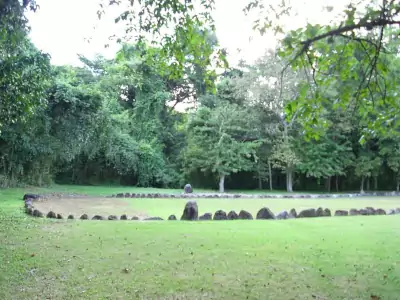
En las afueras de la ciudad de Ponce existe un antiguo complejo religioso/deportivo abandonado por los
taínos y los irenis (etnia que provenía de las tierras recorridas por el Orinoco) hace siglos sin conocerse
la razón. Se pueden encontrar 4 campos de batú de diferentes tamaños
que aún se suelen usar en encuentros importantes entre las comunidades cercanas.
Hay Además, un importante cementerio de 8 o 9 años de antigüedad. Teniendo los poderes necrománticos
adecuados se podría conseguir importante información de tiempos pasados. Debido a que los taínos y los ireni
creían en una vida después de la muerte eran enterrados con sus objetos personales, joyas, armas,
utensilios de cocina, ... Es por ello que se podría saquear las tumbas para obtener objetos de valor.
El saqueo de tumbas es algo horrible, ya que no solo estropea el yacimiento para su estudio
y poder así conocer a las gentes que vivieron allí. También es robar una riqueza a las gentes del lugar, al
saquear su historia y su cultura y estropear la oportunidad de saber quiénes son y de dónde vienen. No seas
como el British Museum, no robes reliquias. Dentro de una ambientación basada en los Mitos de Cthulhu
saquear una tumba para robar un cadáver podría ser considerado "aceptable", pero desde luego no deberías
permiten que tu mesa caja pico y pala y se dedique a saquear tumbas para robar su objetos valiosos.
Otros lugares de Puerto Rico
La Piedra Escrita
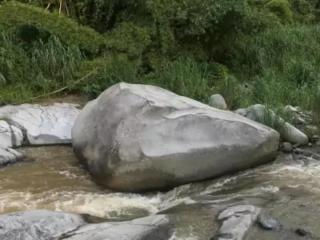
En el centro de Puerto Rico, en la región de Jayuya, en las orillas del Rio Saliente se
encuentra La Piedra Escrita. En el cauce del rio se pueden encontrar una gran roca erosionada
por el rio. Este monolito de piedra gris, de diez metros de largo y cuatro de ancho,
exhibe una impresionante muestra de figuras talladas por los taínos con los que
representaban a sus dioses, animales y elementos de la naturaleza.
Este es un lugar sagrado para los taínos y cualquier promesa o trato que se haga en este lugar
se vuelve sagrado y no se puede romper. Según sus creencias, los cemís de los antepasados que habitan
aquí te perseguirán si rompes tu palabra.
En juego, cualquier pacto hecho aquí con un taíno deberá cumplirse y de no hacerlo, el que falto
a su palabra será tildado de indigno por la nación taina y tendrá un -2 en las tiradas de Persuadir
al interactuar con taínos. Se negaran a venderte provisiones, no querrán comprar tus productos, te
expulsarán de sus poblados, etc..
Santo Domingo
La isla de La española en 1722 está divida en dos, Santo Domingo, la parte española, y Saint-Domingue, la parte
francesa.
Santo Domingo ocupa la parte este de la isla. La prospera La Española se encuentra ahora en horas bajas con menos
de 10000 almas.
La parte norte esta despoblándose quedando pequeñas comunidades marginales en la costa que viven más del
contrabando que de
la agricultura, pesca y comercio. El mayor núcleo será la ciudad de Santo Domingo con más de la mitad de
población.
Santo Domingo
Población: 6000 habitantes
Controlada por: Reino de España
Santo Domingo, originalmente conocida como Santo Domingo de Guzmán, se encuentra en la costa sur de La Española
en la ribera del rio Ozama. El Ozama es navegable hasta 15 kilómetros en su interior para barcos. Esto convirtió el
lugar en una de las mejores opciones que tenían los españoles para establecer su primera ciudad.
Santo Domingo, como casi todas las ciudades del Caribe, ha sufrido catástrofes y varios ataques e invasiones, algunas
más destructivas que otras. De hecho, la ciudad fue reconstruida en la ribera oeste tras destruirse por un huracán
la vieja ciudad que estaba en la ribera este.
Posee una fortaleza defensiva, Fortaleza Ozama, y muchos edificios que nos recuerdan los buenos viejos tiempos
que vivió la ciudad, como sus lujosas casas palaciegas, la Catedral de Santa María La Menor y diferentes
palacios (del Gobernador, de la Real Audiencia, etc. )
Vieja ciudad
Todavía se pueden visitar los restos de la primera ciudad. Las ruinas han sido tomadas por las clases
más bajas de Santo Domingo y las bandas de criminales campan a sus anchas. En los tenderetes de su antigua
plaza mayor pueden comprarse toda suerte de productos ilegales y contratar los servicios de matones a sueldo.
Debido a que la Iglesia ha prohibido los duelos de espada a muerto y el rey ha establecido una serie de leyes
que los hacen menos peligrosos, los jóvenes y no tan jóvenes dirimen sus deudas de honor en la vieja ciudad
lejos de los ojos de la guardia. No es extraño encontrar duelistas batiéndose en los solares de los
antiguos edificios.
La Taberna del Alción
La Taberna del Alción es una de los locales mejores y con más ambiente del puerto de Santo Domingo. Bebida y
comida abundante a
precios asequibles. Su nombre completo paso a ser La Taberna del Martín Pescador y con el tiempo se la conoce solo
como
La Taberna del Pescador.
Cada viernes hay timbas de cartas sin limite que empiezan cuando la campanadas de la iglesia cercana marca las 12
del mediodía
y se acaban cuando suenan las campanadas de las 12 de la noche. Se mueve mucho dinero y vienen jugadores de todo
el Caribe
a probar suerte.
La clientela es muy variada, desde la gente de mar típica de las tabernas del puerto, hasta nobles y mercaderes
atraídos por las historias de capitanes piratas que vienen a jugarse sus botines a los naipes. Estas historias
son difundidas por Bartolo y Antonia Megías, dueños del bar. Es cierto que alguna ocasión algún pirata famoso
ha pasado la mona en el suelo del bar, pero no es algo muy común.
Detrás de la barra Bartolo y Antonia han ido acumulando "objetos piratas" como garfios, machetes, bandanas, ...
con
placas con los nombres de los supuestos piratas a los que pertenecieron. La mayoría de los objetos son falsos
o por lo menos no pertenecen a quien dicen pero un pequeño porcentaje son auténticos.
Colección de objetos piratas: Si alguien necesita algún objeto que haya pertenecido a un
pirata famoso
para realizar, por ejemplo, algún tipo de hechizo hay un 20% de posibilidades de que haya algo entre la colección
de Antonia
y Bartolo. El precio y disponibilidad queda a tu elección. Puedes decirles que no les venden el objeto y montar
una pequeña
aventura en la que tengan que robar el objeto.
Universidad Santo Tomás de Aquino
Su nombre completo es la regia y Pontifica Universidad Santo tomas de Aquino, ya que obtuvo el permiso papal y del
rey de España
para crearse. La Universidad Santo Tomás de Aquino es considerada una de las primeras universidades de America y
desde luego es la
más antigua del Caribe. Lleva ya 200 años siendo una importantísima institución educativa superior. Fue creada por
los dominicos y
sigue bajo su control a día de hoy. Los dominicos están extendiendo su control sobre la educación a Cuba,
intentando que la
Universidad de La habana triunfe.
LA RCPC tiene a sueldo personal de la universidad para que detecten a personas con altas capacidades científicas.
Estos pasan
informes a la RCPC que a su vez llegan a la Orden del Gran Cthulhu. Estos estudian los perfiles y escogen los más
fácilmente corruptibles
para intentar que integren sus filas.
Si alguien de tu mesa con Ciencias d8 o superior pasa un par de semanas en la universidad será detectado y en
poco tiempo recibirá
la visita de la RCPC, ofreciéndoles trabajo, equipo y dinero para sus investigaciones. Si en algún momento hay
necesidad de
infiltrarse en la RCPC esta puede ser una via muy fiable.
Alcantarillas de Ovando y de las Atarazanas (Astilleros)
Por debajo de ciudad de Santo Domingo hay dos sistemas de alcantarillas que recorren la ciudad, las de Ovando
y las de Atarazanas o astilleros. No solo se utilizaron para deshacerse de residuos en el rio, sino también
humanos, animales y mercancías sin ser vistos de una parte a otra de la ciudad.
Puede pagarse una pequeña suma a un niño de la calle para que te enseñe una entrada y te de las indicaciones
de como llegar al sitio que deseas.
La peste es horrible y solo hay la luz que entra por los desagües. Puedes encontrar desde ratas y caimanes
(sí, caimanes, pero no albinos) que entrar a cazar desde el rio, hasta contrabandistas o partidas de guerra
de profundos.
Si santo Domingo es atacado o los guardias lo cierran, el mejor método de huida son las alcantarillas. Los
guardias saben de las existencias de estos túneles, pero son reacios a entrar en ellos.
Los Tres Ojos
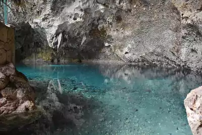
Al este de la ciudad de Santo Domingo se encuentran Los Tres Ojos, es una caverna con 3 lagos de agua dulce, Lago
Azufre, El Lago de las Damas y La Nevera. No es muy conocido y en general solo los taínos y las clases más pobres
saben de su existencia y lo usan para asearse.
Lago Azufre debe su nombre a su fondo blanco que se pensaba que era azufre. El lago de las Damas era usado por
las mujeres para
bañarse debido a que no se veía desde el exterior. Por último, la Nevera se llama así porque su aguas están entre
15 y 21 grados.
Hay un cuarto lago a cielo abierto llamado Los Zaramagullones pero no se le considera uno de los ojos.
La nevera tiene una pequeña cavidad en el fondo que accede a un rio subterráneo que llega hasta el mar. Lo cual
lo convierte en una forma de acceder al mar o al interior sin ser visto. Es perfecto como ruta para
contrabandista,
o para que los profundos lancen un ataque sorpresa a la ciudad de Santo Domingo.
Otros lugares de Santo Domingo
Plaza Ceremonial de Maguana
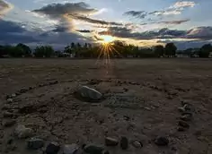
En el centro de La Española, en la región de Maguana, se encuentra un gran círculo de
piedras de unos 300 metros de radio. Este círculo de piedra, en forma de calzada, contiene
en su centro otro círculo de piedras y dentro hay una monolito tumbado de dos metros de largo.
Es un bloque pulimentado que parece representar una figura humana.
Este círculo, conocido actualmente como Corral de Los Indios, fue antes de la llegada de los
españoles a la isla el mayor centro religioso de Santo Domingo. Dentro de sus piedras se reunían
cada año delegaciones de todos los cacicazgos de la isla, para hacer ceremonias lúdico-religiosas
y para hacer negociaciones y pactos entre los caciques. Se hacían cantos, bailes, se jugaba al batú, etc.
También se aprovechaba para realizar la cohoba, que como ya sabemos es la ceremonia religiosa más importante
de la religión taina. La realizaban todos los caciques juntos, con lo que los dioses les dijeran durante las
visiones tenía gran importancia para todas las gentes de la isla.
Se estima que el círculo de piedras era usado como calendario, que establecía las estaciones y las épocas
de siembra y recolección de los cultivos.
Con la colonización de los españoles y la caída de los caciques todas estas practicas desaparecieron, pero
el lugar sigue siendo importante para los taínos de la Española. En caso de necesitar reunir a los pocos
caciques que aún existen este sería el lugar perfecto. También sería perfecto para dirimir rencillas
entre caciques con una conferencia de paz o con un partido de batú.
Los constructores de este lugar no solo lo eligieron por su emplazamiento en el centro
de la isla quedando cerca a todos los cacicazgos, también porque es un lugar con un gran poder mágico.
Toda cohoba celebrada aquí otorga un +2 a las tiradas de Espíritu. Deberías permitir a tu mesa que
pueda acceder a visiones de más valor y de seres más poderosos al realizarla aquí. Tampoco debes
dejarles que se dediquen a hacer cohobas cada vez que no sepan que hacer.
Isla Catalina
Isla Catalina se encuentra en la costa sureste de Santo Domingo, es una isla de unos 10 km2 que
la RCPC compro, con la bendición de la Iglesia y el obispo, para crear una leprosería.
Se montaron una serie de cabañas donde viven los enfermos de lepra, un pozo, un embarcadero y campos de
cultivos para que pudieran cultivar su comida. Disponen de herramientas para reparar sus cabañas y construir
otras nuevas.
Una vez a la semana llega un barco que lleva provisiones y personal sanitario que tratan a los enfermos
más graves. Un clérigo aprovecha también para celebrar misa y toma confesión. Las banderas avisando de lepra están por toda
la costa, así que ningún barco más se acerca a sus costas.
Los enfermos están completamente incomunicados con el resto del mundo. No reciben visitas de familiares
y no tienen contacto con nadie de fuera excepto los medicos que les visitan semanalmente. Las corrientes hacen
casi imposible salir de la isla con una embarcación improvisada.
La realidad es que bajo la fachada de una leprosería, la isla es una cárcel donde se envía
a la gente que la RCPC necesita que desaparezca, pero quiere mantener con vida. No hay leprosos en la isla,
solo reclusos y una pequeña cantidad de guardias que vigilan a los reclusos y los mantienen a raya. Los medicos
están encargados de controlar a algunos reclusos en los que se han probado algún tipo de experimento. El clérigo
es un interrogador de la Orden que se dedica a sacar información a los presos.
En la isla hay una población de 120 personas, 30 guardias y 90 convictos y convictas.
Saint-Domingue
La parte francesa de La Española es denominada Saint-Domingue. Esta bastante despoblada, solo hay
pequeñas comunidades de agricultores y grandes plantaciones trabajadas por mano de obra esclava.
Estas tierras fueron desechadas por los españoles y nunca las colonizaron, pero hoy en día son tierras
muy ricas y llanas y regadas por caudalosos ríos. Cuando se expulsa a sus habitantes indígenas (o se
les esclaviza o mata) y se tala el bosque los terrenos que quedan son muy buenos para plantar algodón,
tabaco, etc. Cada día llegan nuevos colonos dispuestos a buscarse la vida aquí y cada día también llegan
barcos con mano de obra esclava que será obligada a trabajar en las nuevas plantaciones que se están
construyendo.
La costa norte que tiene enfrente la isla de la Tortuga esta siendo colonizado por agricultores puritanos
convencidos por su fanáticos pastores de que civilizar esas tierras es el deseo de su señor.
Hôpital
Población: 8000 habitantes
Controlada por: Reino de Francia
Hôpital es una zona en el centro de Saint-Domingue, conocida por el hospital que se fundo allí. Esta zona está
llena de pequeñas comunidades de inmigrantes ingleses y sobre todo franceses y de grandes terratenientes.
No hay ninguna urbe, no sera hasta dentro de unos años que se funde Puerto Principe.
El gumbo eterno
Hace 15 años durante una gran hambruna en un campamento de chabolas de Hôpital, Mamá Larisa sacó su olla
de gumbo a la calle y empezó a repartir platos de comida a sus vecinos. Cada uno trajo lo que pudo y Mamá
siguió cocinando gumbo. El fuego de su cocina lleva sin apagarse desde entonces y nunca le ha negado un
plato de comida. La gente trae lo poco que les sobra para el llamado gumbo eterno de Mamá Larisa y ella lo
reparte entre los más desfavorecidos.
Mucha gente ha intentado conseguir la receta del gumbo, pero Mamá se ha negado a darla. También le han hecho
ofertas de trabajo como cocinera para ricos comerciantes de La Habana o Kingston y las ha declinado todas. Ella es feliz
con su gente.
La terrible verdad del gumbo es que el primer gumbo lo hizo con carne humana. Mamá Larisa mató al marido
maltratador de unas de sus hijas mientras dormía la mona y se deshizo del cadáver en el gumbo (como en
Tomates verdes fritos). Lo que empezó como una estratagema para evadir la cárcel, se convirtió en algo
que lleva salvando vidas desde hace 15 años.
Sugerencia de beni: Recompensa con un par de benis a cualquiera que deje comestibles
para el gumbo eterno como carne ahumada, limones, pescado seco, especias, sal, etc.
Fét Gede
El Fét Ged es el Día de los muertos para los practicantes del vudú. A pesar de estar prohibido todos los rituales
religiosos que no sean católicos a primeros de noviembre los creyentes celebran el Fét Gede escondido dentro de
las celebraciones católicas de "Todos lo santos". Salen a la calle vestidos de blanco, negro y morado y con
las caras pintadas con polvo blanco. Fuman, comen y beben en los cementerios y algunos son poseídos por
los gede, los espíritus de los ancestros muertos.
Es una celebración muy popular entre los piratas por sus excesos y se sabe que es visitada por muchos piratas que
se
mezclan entre los celebrantes para disfrutar de la fiesta. Puede ser un buen momento en el que tu mesa se encuentre
con alguna
de sus némesis piratas. Fácilmente todo puede pasar de la dialéctica a las peleas de taberna o los duelos a
espada.
Durante el Fét Gede, Nyarlathotep como el Barón Samedí visita a sus adoradores y se divierte como un
mortal
bebiendo, fumando, bailando y comiendo. Si alguien quiere buscarlo para interactuar con él deberá participar en el
Fét Gede
activamente bailando, comiendo, ... Tendrá que pasar una tirada de Vigor o tendrá un -2 por el alcohol, el picante
y la hierba de fumar. Una vez integrado en la celebración podrá empezar a buscarlo y deberá conseguir 1 avance en la
tirada de Notar.
Jamaica
Jamaica, a diferencia de otras islas del Caribe, es una isla principalmente montañosa con una franja de costa muy
estrecha. Hay zonas en que las montañas cae directamente sobre el mar. Eso ha hecho que las principales poblaciones
y las plantaciones estén cerca la costa. El resto de la islas es jungla y montañas y es territorio de los esclavos huidos.
El punto más alto de la isla es el Pico de la Montaña Azul, de 2256 metros. De hecho, es uno de los pocos
sitios del Caribe donde puede verse nieve. No hay muchos caminos que crucen la cordillera central y con los ataques
de los cimarrones es más fácil moverse por la costa que atravesar las montañas.
Toda la isla está lleno de ríos que bajan rápidos y de pequeños lagos y que riegan plantaciones de caña de azúcar,
tabaco y café. Debido al suelo calizo y blando muchos cauces cambian de curso inesperadamente y se crean ríos
subterráneos y cuevas donde se esconden comunidades de esclavos huidos.
La proximidad a una placa tectónica explica su carácter montañoso y los frecuentes terremotos, como el que produjo
un tsunami que destrozo Port Royal.
Kingston
Población: 28.000
Controlada por: Gran Bretaña
La ciudad de Kingston se funda en tierra en firme como un campamento de refugiados tras el desastre del terremoto
de Port Royal. Albergará durante muchos años a la gente de Port Royal que había perdido su hogar. No será hasta
1703 cuando Catania Nick ataca y destruye la ciudad de Port Royal que Kingston empiece a despuntar.
A diferencia de Port Royal los británicos aprovecharon este cambio para limpiar su puertos piratas especialmente
los de la Cofradía de la Hermandad de la Costa que durante muchos años usaron Port Royal y Tortuga como puertos
seguros.
Para 1716 era la ciudad más importante de Jamaica a nivel económico, político y social. De hecho, casi todo el
comercio de
Jamaica pasará por Kingston camino de Gran Bretaña. Su gran ventaja es que al estar en tierra firme
y no en en una peninsula podía crecer en extensión sin problemas.
La parte vieja de la ciudad es conocida como Spanish Town que corresponde la Villa de la Vega (una pequeña villa
fundada
por los españoles) sobre la que se creo Kingston.
Teatro Real
Cerca del puerto de Kingston se erige el Teatro Real, donado por varios ricos comerciantes de la ciudad que
querían escalar socialmente en la ciudad. Compañías itinerantes y de aficionados interpretan clásicas obras de
Shakespeare y libretos nuevos e innovadores.
Actualmente, se está preparando una obra de una dramaturga principiante, Johanna Ribeiro, cuya familia ha puesto
fondos para
arreglar las terribles goteras y humedades que sufre el teatro. Si se pasan por aquí podrán conocerla y comenzar
el relato "El capitán de amarillo".
The captain's portrait
The captain's portrait (Retrato del Capitán) es la más concurrida taberna del puerto de Kingston. Comida
abundante y económica, bebida no aguada en exceso, música en directo por las noches y partidas de naipes
y apuestas no del todo legales. Las peleas no son frecuentes y suelen acabar con los dos contrincantes
recibiendo una tunda de personal y siendo expulsados de la taberna.
Está regentado por el viejo Capitán Lawrence, que con el dinero de su retiro de la armada inglesa compro la
taberna. El capitán Lawrence puso el nombre de su barco (Assistance) a la taberna y en el letrero de la taberna
pinto
también su cara con su traje de gala de la armada. Así que los parroquianos que no sabían leer terminaron
llamándola
el Retrato del capitán.
Este viejo edificio de madera cuenta con dos plantas, un sótano de almacén y un jardín interior con mesas
para estar al fresco en las noches de verano. En la planta baja está la barra, la cocina y las mesas, mientras
que en la superior están los reservados y unas oficinas. El sótano suele usarse de almacén, no siempre
de productos legales.
Es bastante frecuente encontrarse a grupos de marineros de fortuna que están gastando su sueldo antes de volver
a su barco. Y pagando unos 500 doblones el capitán Lawrence organiza fiestas privadas en el jardín interior
con música, una barbacoa y barra libre de bebidas.
Michelle LeCourt, la dama vudú de Kingston, posee el 51% del local pero no es algo de dominio público. Para todo
el mundo el bar es del capitán y el toma todas las decisiones. LeCourt usa el bar para sus reuniones de negocio
y de vez en cuando guarda en su sótano algunos barriles de dudosa procedencia.
The Mystery Shack
Muirhead Trading & Pawn Shop (aunque la gente lo llama The Mystery Shack o La Cabaña del Misterio) es
una extraña tienda de empeños que se encuentra en el barrio Portview. Puedes encontrar entre sus expositores,
baldas, repisas, mesas y mostradores de cosas realmente extrañas, algunas falsa, otras auténticas, pero casi
siempre con una buena historia.
La tienda esta "regentada" por el Stan Muirhead, un viejo comerciante de origen irlandés que fue de
los primeros en establecerse en Kingston. Stan es un borracho que está beodo desde que se levanta
hasta que se duerme. Es por ello que en realidad el negocio lo lleva su ayudante Ifá de etnia yoruba
(en la actual Nigeria).
Si tiene un objeto extraño con montones de engranajes, palancas y botones es el sitio perfecto para que te digan
qué hace y cómo hacerlo funcionar. Si es necesario pueden arreglártelo. Ifá tomará nota de todo y te dirá que
vengas
al día siguiente para recogerlo, ya que ahora mismo el viejo Stan está indispuesto.
En realidad Ifá es la que repara todo estos cachivaches de ciencia extraña. Los mete en la trastienda y pone
a funcionar sus dones tecnológicos otorgados por Oggun, el orisha de la herrería.
Por unos 200 doblones Ifá puede decirte qué es y cómo funciona cualquier objeto tecnológico. Por 500
doblones puede
repararlo siempre que sea materialmente posible. Si está quemado, hecho trozos o le faltan piezas, Ifá no podrá
hacer nada. Tampoco puede hacerles mejoras, ni cambiar aspectos de su funcionalidad.
Port Royal
Población: 1.500 personas (antes del terremoto 6.000)
Controlada por: Gran Bretaña
Hoy en día Port Royal es una ciudad en decadencia, una sombra del importante puerto que fue en su día. Toda
aquella persona que ha podido, ha huido de la ciudad a la nueva ciudad de Kingston en tierra firme. Sus
avenidas están llenos de desvencijados edificios que en su día fueron ricas y suntuosas mansiones, iglesias,
y oficinas comerciales. Sus habitantes son extraños y huraños o directamente locos que murmuran
maldiciones en voz baja. En cuanto se va el sol sus oscuras calles se quedan vacías y pueden oírse
gritos desgarradores de gentes desesperadas.
En sus buenos tiempos Port Royal, junto a la isla de la Tortuga, era un enclave pirata muy importante. Ambas fueron un puerto donde
recalaban los piratas de la Hermandad de la Costa. El dinero, la fiesta y el ron recorrían sus calles y sus habitantes
estaban llenos de vida y alegría.
La decadencia empezó en 1692 cuando un maremoto hundió en el mar 2/3 partes de la ciudad y debido a este
devastador desastre natural (que puede que fuera provocado) perdió su poder como principal ciudad de Jamaica
en favor de Kingston ya en tierra firme.
La puntilla final la recibido en 1703 con la destrucción de la mayoría de la ciudad por la flota del pirata Catania
Nick. Es todavía recordada la masacre de la capilla de la Contemplación en la que piratas de Catania Jack reunieron a
un par de ciudadanos en la capilla de la Contemplación y los quemo vivos.
Lo único que mantiene con algo de vida a Port Royal es que todavía es puerto seguro para piratas, mientras no hayas
cometido actos de piratería contra Gran Bretaña. Aunque la piratería es delito, la pasividad y la corrupción
de las autoridades es lo que todavía permite que sea un puerto pirata seguro. Pero eso no durará mucho.
El queso Chester
El Queso Chester es una taberna creada en 1684 que sobrevivió al maremoto de 1692. Se dice que las
aguas se pararon en su puerta. Lo monto un comerciante de quesos que quería establecerse en Port Royal. Los
propietarios y sus descendientes fueron brutalmente asesinados en el asalto de Nick Catania y
su flota pirata en 1703. Es por ello que fue subastado y comprado por su actual propietario que lo tiene
subarrendado.
Todos los que han trabajado o arrendado el local dicen que hay una presencia maligna que va minando tu mente
hasta
hasta tener pensamientos depresivos y suicidas. La realidad es que fue la morada de un lloigor durante varios años
y
su esencia todavía impregna el lugar.
Actualmente, está de capa caída, ya que los únicos que se atreven a arrendarlo son personajes de la más baja
estofa que
realmente no lo quieren como taberna sino para propósitos principalmente ilegales.
Su actual propietario está deseoso de venderlo y deshacerse de una malísima inversión. De hecho, hay carteles en
la puerta
que avisan de que se vende por 8.000 doblones. Es un chollazo si consigues un exorcista con el hechizo Exorcizar
(Destierro)
que elimine los restos psíquicos del lloigor. Con una inversión de 4.000 doblones se podría arreglar totalmente.
La taberna arreglada y con una gerencia adecuada puede producir 1d4 x 100 doblones cada semana. Para poder
acceder
a ese dinero deberán pasar por Port Royal para recogerlo.
La ciudad hundida
Con los años la ruinas sumergidas por el maremoto han sido tomadas por profundos que han aprovechado para
hibridarse
con humanos de la ciudad no sumergida. Esta hibridación con los humanos ha ayudado mucho a que la decadencia
de la ciudad se haya acelerado mucho más de lo normal.
Todas las ruinas hundidas de la ciudad son un gran lugar donde buscar riquezas que se hundieron con el
tsunami de 1692 si se tienen los métodos adecuados.
Si se tienen métodos para moverse por debajo del agua (tanto mágicos como científicos) podrán buscar tesoros
que quedaron cubiertos por las aguas. Gastando medía semana en buscar tesoros se podrá hacer uan tirada en
la siguiente tabla.
Si por alguna razón se posee una caracola de los profundos se podría usar con los profundos de la zona para
que hagan una búsqueda por tí. En vez de media semana tardarán unas horas y en vez de un d20 podrás tirar dos d20
y elegir el resultado que más os interese.
Tabla de Tesoros en las ruinas sumergidas de Port Royal
1d20
Nombre
Descripción
1
Tenemos un problema
El grupo de encuentra con un asentamiento profundo. Tu decides su tamaño, su agresividad y si han
detectado o no
al equipo submarino.
2-3
Bisutería
Una vulgar caja de madera con algunas joyas de bisutería y algo de plata.
Consiguen 1d4 monedas de oro.
4-5
Cubertería de plata
Los restos de una cubertería de plata que se puede fundir y conseguir 1d4 x5 doblones.
6-7
Joyero de sirviente
Un joyero de madera que contiene algunas joyas de plata y algo de oro.
Consiguen 1d6 x10 monedas de oro.
8-9
Marfil
Guardado en alguna lona hay un buen pedazo de marfil o hueso de ballena tallado
valorado en 1d8 x20 doblones de oro.
10-11
Botellas de vino o licor
En un armario o en un estante encuentras botellas bien conservadas de vinos o licores de buena calidad.
12-13
Joyero de noble
En un joyero con incrustaciones de oro y plata hay varias joyas de gran valor de oro
con gemas preciosas. Un perista podría comprarlo por 1d8 x 100 doblones.
14-15
Caja fuerte
Si bien todos los pagarés, letras de cambio y demás papel moneda se ha estropeado por el agua,
hay bastantes doblones de oro. Consiguen 2d6 x 100 monedas de oro. el único problema será como abrirla
o llevársela.
16
Gemas preciosas
En una bolsa de cuero tratado que se está pudriendo hay un buen conjunto de
gemas preciosas. Seguro que era de algún viajero que así llevaba mucho dinero en poco peso. Pueden valer
2d8 x 100 doblones.
17
Lingotes de oro
En una caja metálica hay varios lingotes de oro, seguramente estaban preparados
para hacer una compra importante o un gran negocio. 2d8 x 200 doblones de oro. Hay que festejar este
hallazgo con una fiesta digna de un pirata, perdiendo un día de trabajo.
18
¡Bingo!
Un objeto extraño ha aguantado bien debajo del agua dentro de algún contenedor estanco.
Haz una tirada en la Tabla de Objetos pequeños y útiles
19
¡Yujuuu!
Un objeto extraño de gran tamaño ha aguantado bien debajo del agua dentro de algún contenedor estanco.
Haz una tirada en la Tabla de Objetos de gran tamaño
20
¡Eureka!
Un objeto extraño ha aguantado bien debajo del agua dentro de algún contenedor estanco.
Haz una tirada en la Tabla de Objetos más allá del tiempo y el espacio
Bahamas
Unas 700 islas, islotes y cayos forman este archipiélago. Los bancos de arenas y los arrecifes
plagan sus aguas y los pecios de barcos ingleses, franceses y españoles llenan sus fondos marinos,
algunos con grandes tesoros de oro, plata y piedras preciosas. Solo unas 20 o 30 están habitadas por
lucayos, una rama de los taínos, y por colonos de origen español o inglés.
Alguna de las islas de mayor tamaño de las Bahamas fue donde desembarcó Colón el 12 de octubre
de 1492 en su primer viaje a lo que el llamo "Nuevo mundo" y fueron los lucayos los primeros habitantes
del Caribe que vieron a un europeo.
La población lucaya está muy mermada debido a las nuevas enfermedades y las migraciones forzosas que impusieron
los españoles durante su dominio de las Bahamas. La mayoría de la población es inglesa, descendiente
de puritanos que buscaron libertad religiosa en las colonias, o esclavos que trabajan forzados en las
plantaciones de las grandes islas.
Nueva Providencia
Población: 2.000 habitantes, más de la mitad son piratas acogidos al perdón real.
Controlada por: Oficialmente Gran Bretaña
Nueva Providencia es la mayor y más poblada de las islas de las Bahamas, unos 34 km de largo y 11 km de ancho. Es
totalmente plana, lo cual hace que la agricultura sea uno de sus principales sectores económicas junto
a la pesca.
Aunque sus platas y puertos son tranquilos, la navegación por sus aguas y en general por las de todas
las Bahamas es muy complicada por sus arrecifes y sus bancos de arena. Solo marinos locales saben bien
moverse en sus aguas.
Nasáu
En 1722 Nasáu es la capital y la principal ciudad de Nueva Providencia. Ha sufrido varios ataques de españoles, de
piratas y de los propios ingleses desde su fundación en 1670. De forma que la mayoría de las construcciones son
nuevas o reformadas.
Nasáu es el típico puerto del Caribe de tamaño mediano. Un puerto comercial y de pescadores con sus zonas de
almacenaje, un centro histórico rico y amurallado y unos extramuros de cabañas y chabolas donde viven las
clases más pobres.
Posee una fortaleza defensiva que ha reconstruido el propio gobernador con su propio dinero
para evitar futuros ataques de los españoles. No hará ni 2 años que la ciudad fue asediada por mar por la
marina española ayudada por navíos de combate de la RCPC. Buscaban acabar con el refugio pirata que supone
el archipiélago de las Bahamas.
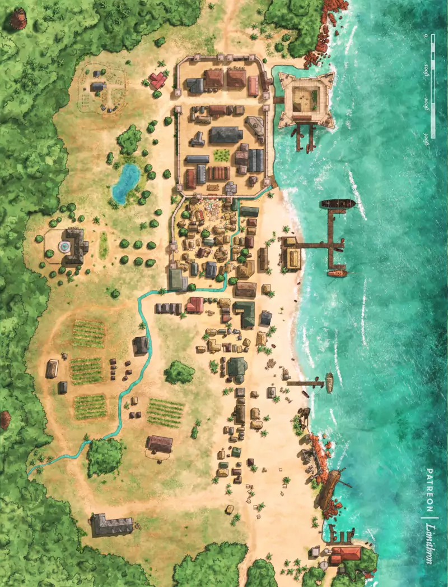
Nasáu
Guthrie's premises
Robert Guthrie es un mercader que se conoce por tener tratos con piratas y comprar todo el material que le
traigan sin hacer preguntas. Botines que han rechazado en otros puertos por ser muy peligrosos Guthrie
los compra llevándose una buena comisión del 60% (20% o 30% es lo normal) pero nunca nunca hace preguntas.
También es un buen lugar donde buscar materiales y productos peligrosos e ilegales. Tiene sucursales por toda
las Bahamas, pero la más grande está en Nasáu, donde tiene su residencia Robert. En sus almacenes tiene de
todo lo que han vendido otros piratas y Guthrie puede vendértelo por un buen precio.
El viejo pirata de Nasáu
Si visitas las tabernas de Nueva Providencia, tarde o temprano te encontrarás con un viejo pirata que
responde al nombre de Henry. Tiene la cara surcada de cicatrices y parece que por su forma de andar
tiene alguna herida de guerra que afecta a su piernas. Va bien vestido, habla con acento inglés
y tiene buenos modales mientras no se achispe. En ese momento las más picaras y sucias canciones
de marinero salen de su boca.
Si pregunta a la gente local les dirán que apareció hace unos años con su barco, lo hizo sacar
del agua, lo planto en una colina con vistas al puerto de su propiedad y ahora lo usa de casa.
Siempre paga generosamente en relucientes monedas de oro y no parece tener problemas de dinero.
Hay muchas historias sobre quién es, pero solo una es correcta. Es un viejo pirata retirado que
disfruta de su botín. De hecho, es Henry Avery, uno de los piratas de mayor éxito de
la historia. Desapareció en 1699 tras un gran golpe en el Índico a la flota de Aurangzeb, un
emperador mogol de la India.
Si alguien registra su barco no encontrará su tesoro, ya que lo ha enterrado bajo una palmera cercana.
Pero puede que encuentre objetos de su vieja vida como su bandera pirata (una calavera de lado con
pendientes y con un pañuelo con dos tibias cruzadas sobre fondo rojo), cartas navales del Índico, viejos
diarios de capitán, ...
Le encantan las historias de piratas e invita a bebida a cualquiera que quiera contarlas las
últimas novedades piratescas del Caribe. También le gusta leer la VLH y acepta ejemplares
, sobre todo si tienen noticias de piratas.
Avery es un fantástico estratega, lo cual explica su gran éxito como pirata. Si te
ganas tu amistad contándole alguna historia buena de su gusto, puede estudiar un plan de ataque,
ver su fallos y dar posibles soluciones. También responderá a tus cartas, pero este método es mucho más lento.
En juego, tiene Tácticas d12+2 y si le presentas una plan puede tirar sus Tácticas.
Por cada avance que consiga tu mesa puede hacerte una pregunta sobre su plan y deberás
contestarles con la verdad pero sin ofrecer más información de la que tengan. Serían preguntas como:
¿Cuál es el principal fallo de mi plan? ¿Debo hacerlo de noche o de día? ...
Sugerencia de beni: Recompensa con un par de benis al que averigüe quien
es el viejo pirata de Nasáu. Y con alguno más si no se lo cuenta a nadie.
Otros lugares de las Bahamas
Agujero azul de Dean
El agujero azul de Dean (Dean's blue hole) es un agujero
azul ubicado en una bahía
en la costa oeste de la isla Larga en las Bahamas.
Tiene una profundidad de 202 metros. Se encuentra en territorio Uh'e kn'a y es usado por los profundos como lugar
donde dejar ofrendas a sus dioses. En el fondo podemos encontrar una gran variedad de esculturas de piedra, plata
y oro de Cthulhu
que los profundos dejan caer en forma de ofrenda.
La fortuna en oro y plata que hay en el fondo del agujero azul es comparable al tesoro de un pirata, pero el que
se lleve
algo del agujero azul quedara maldito. Tira al azar una maldición que sufrirán todos los implicados en el saqueo.
La maldición empezará
a revelarse al de una semana. En principio solo devolver lo robado hará desaparecer la maldición, pero puedes
montarte una
buena historia tipo Piratas del Caribe.
Alternativamente puedes hacer que el agujero azul sea una especie de cementerio de profundos. Donde
depositan los cuerpos
de los profundos muertos con sus pertenencias más valiosas. Podrías entonces quitar el tema de la maldición y
hacer que los espíritus
de los profundos persigan a los saqueadores.
El agujero azul puede ser un buen lugar de reunión con líderes profundos. El entorno es inmejorable, apartado de
todo el
mundo y con mucha importancia para los profundos. Podrías incluso montar duelos a muerte en sus aguas.
Camino de Bimini
El camino de Bimini son unas extrañas formaciones rocosas que existen cerca de la
isla de Bimini, en las Bahamas, a una profundidad de 10 metros. Parecen calzadas de piedra y hay varios tramos de unos 800
metros de largo por 2 de ancho.
Las historias hablan de una calzada que iba a la Atlántida, Lemuria o Mú o que son de origen natural. Pero verdad
es que era una calzada que llevaba a R'lyeh, localizando más estructuras como está se podría triangular la posición
de la ciudad tumba de Cthulhu.
Solos los pocos taínos que habitan la isla saben de esta calzada que puede verse sin problemas gracias a sus
cristalinas aguas.
Viajes en el tiempo
Si tu mesa ha cometido un grave error y quieren remediarlo quizás haya una solución, los viajes en el
tiempo. Pero si algo no ha enseñado la literatura y el cine es que tiene consecuencias y cualquier error puede ser
fatal.
Métodos de viaje
Las opciones para viajar en el tiempo son variadas pero no son sencillas. Veamos algunas opciones:
Pueden tratar de que un yithiano mande su mente al pasado y ocupe el
cuerpo de un PJ con lo que su mente ocupará la mente del yithiano y podrá hablar con los otros PJs y estos
avisarle de lo que va a pasar.
Otra opción sería sustancias que podrían lanzar tu mente al pasado y así puedes avisar a tu yo
del pasado.
Hay hechizos basados en el tiempo como la Perdido en el tiempo. Quizás pueden modificarlos para conseguir viajar
en el tiempo.
Reglas
1. Conocer los viajes en el tiempo: En 1722 no existe el concepto de viaje en el tiempo como lo entendemos
ahora. De hecho, faltan 100 años
para que Mary Shelley cree la ciencia ficción moderna con su Frankenstein.
Es por ello que para plantearse arreglar los errores viajando en el tiempo, deben saber que se puede hacer. Es
decir, de alguna manera han debido viajar en el tiempo y saber que es posible. Veamos forma de descubrir los viajes en el tiempo.
Hechizos basados en viajes temporales: Rotura temporal, Vibración temporal, Perdido en el tiempo y
Droga Plutónica. Cuando aprendan esos hechizos se darán cuenta de las posibilidades y las implicaciones
de los viajes temporales.
Relatos salvajes: Hay varios relatos salvajes que implican viajes en el tiempo, muchas veces
involuntarios. Entre ellos tenemos: Mar antigua o Cazadores de huesos.
Objetos: Hay también objetos de los Mitos que pueden estar relacionados con los viajes en el tiempo:
Ánfora de viaje por las Tierras del sueño u Objeto perdido en el tiempo.
2. Solo para arreglar grandes errores: No pueden hacerlo todo el rato, solo en momentos dramáticos:
muertes de personajes importantes, grandes masacres, ...
3. No abusar de los viajes en el tiempo: Los viajes en el tiempo atraen a los sabuesos de Tíndalos. Si
abusan de los viajes en el tiempo podrían acabar muertos entre sus colmillos extratemporales.
4. Solo errores recientes: Solo pueden tratar de arreglar errores recientes (de la sesión anterior de
juego). Cualquier otro error no sera posible corregirlo, porque el tiempo ya se ha solidificado y no se
puede modificar (o cualquier otra excusa que se te ocurra). Si se embarcan en otra aventura que no sea arreglar
su error también perderán la oportunidad de arreglar el error viajando en el tiempo.
Volcanes en el Caribe
Los volcanes son una referencia recurrente en los relatos de Lovecraft seguramente por ser fuerzas primordiales
de la naturaleza
tan poderosas y destructivos como los propios primigenios. Normalmente, son moradas donde duermen o están
encerrados
todo tipo de monstruos de los Mitos. Veamos algunos ejemplos:
El primigenio Ghatanothoa "el señor del volcán" está encerrado en el monte Yaddith-Gho,
un volcán del continente hundido de Mu.
Los montes Erebus y el monte Terror, ambos volcanes antárticos, se citan en "En las montañas de la locura".
Se atribuyen a actividad volcánica sub-acuática la aparición de monstruos indescriptibles y tierras extrañas
como puede leerse en relatos como "Dagón" y "Más allá de los eones".
Los volcanes también puede encajar en tus aventuras piratas. Son una fuerza de la naturaleza que puede permitirte
cambiar el mapa:
crear o destruir islas, sepultar ciudades bajo las aguas con potentes maremotos, ... Te permiten crear aventuras
con obstáculos
formidables como ríos de lava,
donde la presión del tiempo sea muy importante y son un recurso contra el que tu mesa no puede enfrentarse, solo
pueden huir
cuanto más lejos mejor.
El área volcánica de las Antillas Menores
Las Antillas Menores es una zona del Caribe plagada de pequeñas islas de origen volcánico y de volcanes más o
menos activos. De hecho, a lo largo de los años se han llegado a catalogar unos 70. Los principales volcanes de la
zona son:
Montagne Pelée (Martinica). El más poderoso y peligroso de todos.
La Soufrière (Guadalupe).
Soufrière Hills (Montserrat).
Soufrière St. Vincent (San Vicente).
Volcanes sub-acuáticos
El único volcán submarino registrado en el Caribe es el Diamond Islet ("Islote del Diamante") en alusión a unas
rocas emergidas cercanas. Se encuentra
a unos kilómetros al norte de la isla de Granada. Su crater está a unos 160 metros de profundidad y está activo.
Aunque hasta 1939
no se registrará ninguna actividad. Así que siente libre de hacerlo estallar cuando quieras. Las aguas del crater
tienen una media de 150/200
grados lo que dificulta su exploración. Igual a alguien de tu mesa se le ocurre una forma de cocer a algún ser
acuático
gigantesco en sus aguas o de freírlo
haciéndole expulsar lava.
Rumores, chismes y pueblerinos supersticiosos
Practicar magia no solo afecta a tu cordura también a tu reputación y si no tienes cuidado puedes
acabar quemado
en la plaza del pueblo por brujería. Quién más quién menos en nuestro Caribe ha presenciado prodigios
mágicos, pero no es lo mismo que la
vieja ermitaña sane las fiebres de un niño con sus bebedizos a que los héroes entren volando en la casa
del Gobernador de Jamaica lanzando rayos verdes.
Queda a discreción del director de juego cuando los jugadores pueden ser buscados y perseguidos por
brujos o que los pueblerinos atranquen las puertas y las ventanas ante su paso, pero te damos unas
sencillas
normas que puedes tener en cuenta a la hora de gestionar la reputación de los PJs.
Si no hay testigos (o no se dejan testigos) no hay problema. Por mucho destrozo que se produzca
por
métodos mágicos casi nunca vendrá representantes de la ley a buscar pistas y a culpar a los
jugadores, se quedarán en el cuartel bebiendo y comiendo y culparán de todo a los enemigos más
cercanos, a los más raros y odiados del pueblo o a las minorías.
Recuerda que las comunicaciones son lentas. Pueden pasar semanas hasta que las noticias de los
actos de los personajes en una isla lleguen a otra. Además, los rumores viajan más rápido que la
información exacta, así que puedes jugar con todo tipo de equívocos y malinterpretaciones
cuando llegan a un nuevo pueblo. Puede que un cultista menor les entregue una estatuilla maldita
pensando que son los cultistas que buscaba.
Por último, recuerda que a veces pagan los justos por pecadores y puede ser un buen gancho de
aventura que los héroes sean acusados falsamente de brujería y tengan que huir y limpiar su
nombre.
Linea de tiempo
Linea de tiempo
Año
Evento
1629
Hernando de Villalba, con 16 años, escapa de Españay se estabelce en la costa sur de Cuba.
1610
Se termina de construir el castillo de los Tres Reyes en La Habana.
1659
La mitad occidental de la isla de La Española y la isla de la Tortuga pasan a ser controladas
oficialmente por Francia con el nombre de Saint-Domingue.
1689
Hernando de Villalba funda la Compañía de Comercio del Caribe.
1690
Se funda Universidad de Miskatonic.
1692
Un maremoto hunde bajo el mar 2/3 partes de la ciudad de Port Royal.
Se funda la ciudad de Kingston.
1691
La Compañía de Comercio del Caribe obtiene la exclusiva comercial del
rey de España y pasa a llamarse la Real Compañía Privilegiada del Caribe.
1697
España cede a Francia por el tratado de Ryswick la parte oeste de La
Española pasándose a llamar Saint-Domingue.
1703
La ciudad de Port Royal sufre grandes destrozos por parte de la flota del pirata Catania Nick.
1706
Se funda la República de Piratas en la isla de Nueva Providencia convirtiéndose en el mayor
refugio pirata de las Antillas Menores.
1708
Se publica el primer número de La verdad de La Habana.
1711
Hernando Villalba descubre unas ruinas sumergidas al oeste de Cuba que puede que le indiquen dónde está
sumergida la ciudad de R'lyeh. Desde ese momento Villalba lleva enclaustrado en su mansión buscando su tesoro
hundido.
1715
Una flota de la plata capitaneada por Juan Esteban de Ubilla es hundida
por un huracán frente a las costas de Florida.
1716
Tras años moviendo hilos la RCPC consigue que se construya el Real Astillero de La Habana.
1718
El gobernador Woodes Rogers toma Nasáu y acaba con la República de Piratas, el refugio pirata de
Bahamas.
Barbanegra consigue escapar de la flotilla cazapirata de Robert Maynard gracias a la ayuda del culto de
Cthulhu
con los que contrae una deuda de sangre que deberá pagar trabajando para ellos durante 10 años.
1719
Se inaugura la Universidad de La Habana.
1720
El capitán Barnet captura Anne Bonny y Jack Rackham, Mary Read escapa iniciando sus andaduras en
solitario como pirata.
1722
Los jesuitas fundan el colegio público San José en La Habana.
El presente
Historias salvajes
El tesoro hundido
El tesoro hundido es una campaña en la que los héroes deberán evitar la ascensión de R'lyeh de los
oscuros fondos
oceánicos del mar Caribe enfrentándose a un poderoso culto de adoradores de Cthulhu.
El tesoro hundido es como llama Hernando de Villalba, dueño de la RCPC, a la ciudad sumergida de R'lyeh,
donde
duerme Cthulhu desde hace eones. Villalba, miembro del más alto rango de la Orden del Gran Cthulhu quiere sacar a
la ciudad de
las aguas y despertar al gran Cthulhu. Este en agradecimiento le colmará de poder y riquezas dignas de un
rey y lo que más ansia, la
inmortalidad.
Para llevar a cabo su plan necesita primero encontrar la ciudad, que sospecha que se encuentra en algún
lugar del
Caribe. Lleva años estudiando viejos tomos malditos, apócrifas cartas náuticas y mandando a sus espías a
tabernas
portuarias a escuchar los locos relatos de los marineros. Está muy cerca de encontrarla pero hay algo
todavía se le
escapa para encontrar su "tesoro hundido".
Y si eso no fuera poco, debe encontrar la manera de sacar a la ciudad de las profundidades marinas para poder
despertar al gran Cthulhu. Gracias a su descendencia profunda ha obtenido el Tridente de Dagón que le permite
tener bajo su mando cualquier profundo del Caribe. El tridente le ha convertido en la persona más poderosa
del Caribe. Con su ejército de profundos puede destruir flotas enteras o hacer desaparecer ciudades portuarias
solo con desearlo.
Lo que no sabe tampoco Villalba es que hay un grupo de descastados y parias que van a tratar de
estropear sus planes. Puede que ahora sean solo una molestia menor pero si no los vigila y los controla, se
convertirán en la gran piedra en el zapato de sus planes.
"En el Carcosa" y "Devil came to me" puedes usarlas como una aventura introductoria y después puedes
dejarles libres en el Caribe para explorarlo o para que sigan la trama de "El tesoro hundido".
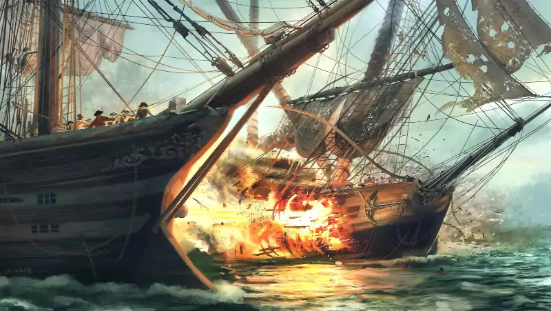
En el Carcosa
Comienzo: En el Paso de los Vientos
Como todas las grandes aventuras de piratas esta tiene un simple inicio. Con un
barco mercante en ruta por el mar y un grupo de desconocidos que no saben que sus vidas van a
cambiar para siempre.
El Carcosa es un buque mercante de la RCPC en ruta entre La Habana (Cuba) y Santo Domingo
(La Española). El Carcosa transporta principalmente pasajeros y un cargamento de tela, ron y melaza de
caña. Su ruta de navegación les está llevando por el Paso de los Vientos (el estrecho entre Cuba
y La Española). Es una zona infestada de piratas, ya que van a pasar cerca de Tortuga y Port Royal
en Jamaica. Las Caimán tampoco quedan lejos.
Los marineros están nerviosos, ya que no hay ni escolta y los guardacostas no parecen
estar cerca. En cualquier momento podría aparecer una bandera negra en el horizonte y eso
significaría serios problemas.
Tu mesa está embarcada como tripulantes o pasajeros. Quizás algunos se conozcan porque
son familia, socios comerciales o compañeros de aventuras. Lo importante es que están
bajocubierta en la misma mesa de bancos corridos cenando su ración de alubias con
tocino y tostones fritos mientras fuera la oscuridad lo cubre todo.
Una bandera que significa muerte
De repente algo impacta en el lado de estribor del casco y una lluvia de astillas cubre su mesa.
Reciben 2d6 heridas y mientras se sacuden el aturdimiento, oyen campanas de alarma y gritos de — ¡Piratas! ¡Piratas!
Dales a entender que en unos 3 turnos vendrá otra andanada de cañones. Pueden buscar protección detrás
de una mesa o un tonel. Pueden subir a cubierta, pero si los cañonazos van a barrer la cubierta puede ser
muy peligroso. Por último, pueden ayudar a otros heridos y buscar armas y munición para defenderse.
Habrá dos rondas más de cañonazos, la primera al casco y la segunda para barrer la cubierta antes del
abordaje. Si están en la cubierta durante el barrido podrán buscar cobertura con una tirada de Atletismo.
Si fallan, se llevarán 4d6 de daño de astillas y fuego, si pasan la tirada 2d6 y por cada avance quitan un
dado de daño. Bajocubierta es parecido, 2d6 si fallan y nada si pasan la tirada de Atletismo.
Cada ronda de cañonazos se oirán gritos de dolor y cuerpos inertes caerán al suelo entre charcos de
sangre. Puede que incluso alguien de tu mesa caiga. No pasa nada el objetivo es que todos caigan
incapacitados.
Los que estén arriba verán como un barco con bandera pirata lleno de humeantes cañones se ha
puesto en paralelo con vuestro barco. En la cubierta se van agrupando fieros piratas con pistolas
cargadas en sus cinturones, sables y machetes sujetos entre sus dientes. Están preparando ganchos
de abordaje o están sujetos a maromas dispuestos a saltar a vuestro barco.
Cada uno se tendrá que enfrentar a dos piratas. Primero lleva el combate de los de sobrecubierta
y luego por bajocubierta. Si alguno no cae incapacitado le lanzarán un granada cerca para
dejarle incapacitado. También pueden rendirse, en ese caso, alguien les dejará KO golpeándoles
en la nuca con una cabilla
Brusco despertar
Un cubo de fría agua de mar despierta a tu mesa. Ya es de día y el sol les ciega. Están atados
a la borda del barco pirata y rodeados de piratas con caras de pocos amigos. Una mujer está
de cuclillas muy cerca de sus caras apoyándose sobre su sable. Con sarcasmo dice
— Vaya, vaya. ¿Que tenemos aquí? — Acto seguido se rie y de repente sus ojos se quedan
en blanco, balbucea algo y se levanta y grita — ¡¡¡Soltadlos!!!
Ira mirando a cada uno y les ira preguntando quiénes son y a qué se dedican. Aprovecha para que
se describan y así se conoce tu mesa. Les pondrá apodos divertidos y les dirá que vuelvan a su
barco y que si no obedecen a su capitán serán pasto de tiburones. Prepárate los motes de antes
en base a su ficha, con lo cabronas que suelen ser las mesas seguro que se quedan con el mote
el resto de la campaña.
Al cruzar al Carcosa verán el nombre del barco pirata, "El golpe de suerte" así que la capitán sera
la temida Mary Read. haz que tiren un dado y al que menos saque le golpearán la plancha y deberá
tirar Atletismo para no caer al mar.
Déjales tirar Conocimientos generales y cuéntales que el índice de su
supervivencia es muy variado o se carga a toda la tripulación o los deja a todos vivos.
Los piratas y unos pocos supervivientes están limpiando la cubierta del Carcosa de sangre y
tirando un par de cadáveres al mar. Los supervivientes están desarmados y son menos, así que no
hay oportunidad de rebelarse.
Un pirata sale gritando de los camarotes de los oficiales gritando y enseñando una caja de madera — ¡Mi señora!
¡Mi señora! Lo he encontrado.
Si se paran a mirar un pirata les pinchará con el sable para que sigan limpiando. El marinero lanza la caja
desde el Carcosa a Mary que la recoge con elegancia. Abre la caja y sonríe con satisfacción
— ¡Tenemos lo que queríamos! Está misión ha sido un éxito. Habrá doble ración de ron cuando lleguemos a casa.
El interrogatorio
Tras limpiar la cubierta, hacer unas reparaciones básicas y cargar el ron de la bodega en el Golpe de
Suerte, son encerrados en la bodega del Carcosa. El Carcosa y el Golpe de suerte empiezan a navegar en
rumbo Suroeste. Una tirada de Navegar o Supervivencia les dirá que se dirigen seguramente a Jamaica.
Al anochecer les abren para darles agua y comida. Un par de guardias van haciendo salir y entrar uno
a uno los prisioneros. Un par de veces oirán un grito de dolor, un golpe seco contra el suelo, gente
arrastrando algo por la cubierta y algo que cae el mar. Curiosamente cuando eso pasa no vuelve a entrar
el último prisionero que salió.
Arriba Mary Read y sus suboficiales están entrevistando a cada prisionero. Buscan a cultistas de la
Orden a los que interrogar. En las escaleras, mientras les apuntan con varias pistolas de chispa,
les hacen ponerse en paños menores para ver que no tienen marcas de la Orden o extrañas malformaciones
fruto del contacto con los Mitos, por ejemplos agallas como los híbridos de profundo. Si están limpios
les devuelven la ropa y les dejan subir a cubierta.
Mary, desde de un estrado improvisado con unas tablas y unos toneles, empezará a interrogar a cada
personaje. Pregunta cosas como lugar de nacimiento, profesión o edad. Es un buen momento para rellenar
estas partes de la ficha que nunca nadie completa. Después pasará a preguntas como:
¿Qué hacías en el Carcosa? ¿A dónde ibas?
¿A qué te dedicas?
¿De dónde es tu familia?
¿Has trabajado para la Real Compañía Privilegiada del Caribe? ¿Qué hacías?
Más preguntas de este tipo que se te ocurran.
No les dejes mucho tiempo para contestar, es preferible que sean espontáneos. Cuando acabe con cada
personaje, no lo devuelve a la bodega sino que los aparta a un lado suyo. Cuando haya interrogado
a toda la mesa, se acercará a ellos dispuesta a dar un discurso, carraspeará, resoplará y cuando vaya
a empezar se oirá un grito.
¡¡¡Profundos!!!
Saca la baraja y reparte cartas de iniciativa, un grupo de profundos salta a cubierta con sus
tridentes y entre gorgojeos ininteligibles atacan a la gente que hay en la cubierta. Antes de poder
actuar deberán tirar la TPC de una manada de 15 profundos.
A cada personaje se le acercará un profundo con intenciones funestas y el resto se repartirá entre
el resto de tripulantes del Carcosa. Recuerda que están desarmados y son novatos. Tras 5 turnos o
antes de caer incapacitados, algún tripulante pirata o la propia Mary Read decapitará al profundo
mientras un chorro de sangre verde salpica al personaje.
Tras deshacerse de los cadáveres de los profundos, Mary ordenará largar trapo y salir de allí
pitando. Desde el castillo de popa del Carcosa les soltará el discurso que tenía preparado.
Sabed que si he llegado viva hasta hoy es porque siempre me he fiado de mi intuición.
Y esta vez mis entrañas me dicen que en vez de pasaros por la quilla os ofrezca la oportunidad
de vuestra vida. Ya habéis visto a que nos enfrentamos, horrores del infierno invocados por
la más oscura brujería. Detrás de esos monstruos está la corrupta Real Compañía Privilegiada
del Caribe que trata de apoderarse de todo el Caribe para poder traer el Apocalipsis a
nuestro mundo.
Hace una pequeña pausa dramática y mira sus reacciones
Necesitamos un barco legal y leal que pueda entrar y salir de los puertos, ser nuestros
ojos y nuestras manos donde nuestra bandera no nos deja acercarnos. Os entregaremos el Carcosa y podréis
moveros libremente por estos mares haciendo de vez en cuando misiones para nosotros. A cambio podréis
evitar el fin del mundo y quizás, solo quizás, haceros ricos. La hermandad del sargazo paga a sus
fieles ayudantes y paga bien.
Se gira dando la espalda y pone un tono de voz más grave.
Si rechazáis mi oferta podréis regresar con este barco pero la próxima vez nos crucemos no seremos
tan magnánimos y no os volveré a hacer esta oferta. Y tened en cuenta que no seréis ni los primeros ni
los últimos a los que la Real Compañía hace desaparecer. Cuando lleguéis a puerto, no creo que les
convenza que la capitán Mary Read os dejo libres con su barco para volver a puerto. Seguramente os
torturarán, os sacarán la verdad y, si tenéis suerte, acabarán con vuestras vidas. Sino puede que
acabéis como comida para esos monstruos o todavía peor, convertidos en esos monstruos.
Mira a unos de sus tripulantes y este se levanta una de las mangas de su camisa y muestra un monstruoso
brazo cubierto de escamas de reptil que acaban en unas terribles garras también reptilianas.
¿Qué contestáis?
En caso de que diga que aceptan, Mary Read elegirá al jugador con más experiencia como capitán y
le pondrá al mando del Carcosa. El resto de su mesa será sus ayudantes y dejará algunos de sus
tripulantes para ayudar en el barco. El título de capitán es algo burocrático, deberán votar entre
todos los asuntos que afecten al barco, su tripulación y su carga.
En caso de que se nieguen, les dirá que cuando lleguen a tierra firme segura les dejara irse
con el Carcosa. Pueden pensárselo hasta ese momento.
¿Qué ha estado pasando?
Cuando se vieron por primera vez, Mary tuvo una visión de que tu mesa sería muy importante en
la futura gran batalla con la Orden del Gran Cthulhu. No sabe ni cómo, ni cuándo ni por qué
pero su don de Casandra nunca le ha fallado.
El objeto que encontraron en el Carcosa es un descifrador de códigos. Es un disco con letras grabadas
sobre el que se pone otro disco con perforaciones, según se mueven los discos las perforaciones
permiten ver unos caracteres u otros. El artilugio esta lleno de grabados de seres horribles y es
de algún tipo de piedra verde. Mary recibió un chivatazo de que en el Carcosa iba un decodificador
nuevo para los cultistas de la Orden del Gran Cthulhu de Santo Domingo y asaltó el navío para
conseguir uno.
Islas pirata
Tras un par de días de viaje los barcos llegarán a las Islas Caimán. Fondean en una paradisíaca y secreta
cala de la isla Caimán Brac (la mas oriental de las islas). Hay agua potable, fruta y tortugas con
las que alimentarse. Podrán sanar sus heridas y disfrutar de lo que los taínos llaman barbacoa, una
comida hecha a la brasa en la playa, acompañada de algo del ron que llevaba el Carcosa.
Devil came to me
Comienzo: En Caimán Brac (Islas Caimán)
Tras los sucesos del Carcosa tu mesa empieza a ver que hay fuerzas actuando en el Caribe
que escapan a su cordura. La RCPC parece ser algo más una gran empresa comercial. Es el momento
tener una conversación con Mary Read.
Durante una semana estarán haciendo modificaciones al Carcosa, entre ellas cambiarle el nombre para
evitar la mala suerte del nombre anterior si van a seguir a Mary. También hay que modificarlo de forma
que no se pueda detectar que es un barco capturado.
Si no han aceptado el trato, el equipo de Mary hará reparaciones básicas pero las alargarán todo
lo que se pueda. Mary quiere tenerlos unos días bajo su influencia para hacerles cambiar de opinión.
El marino del brazo de reptil les contará que era un agricultor al que la RCPC secuestro y
lo tuvo encerrado durante semanas probando ungüentos y pócimas en su cuerpo. Fue el único
que sobrevivió de su poblado. Mary y su gente lo liberaron y desde entonces le es fiel.
Unas de las noches, un vecino de hamaca empezará a hablar en sueños en un extraño y gutural idioma.
Vendrán a sus cabezas imágenes de una ciudad submarina donde yace ni vivo ni muerto un gigantesco
ser del que solo se dibuja su descomunal silueta y se ven sus brillantes ojos verdes. Si pregunta
a la mañana siguiente, les dirán que ese es el dios al que adora los que dirigen la RCPC.
Dos tripulantes cogen instrumentos y empiezan a contar las aventuras de la capitán Read y los
golpes más duros que ha asestado a la RCPC y la Orden.
Mary Read coqueteará e intentará seducir a alguien de tu mesa.
Al final de las semana les volverá reunir y les volverá a preguntar. Si después de todo esto no
aceptan déjales irse con el Carcosa, pero la predicción de Mary se cumplirá a la perfección.
De hecho les seguirá de cerca y cuando sean detenidos, encerrados y torturados por la RCPC, ella les
liberará y les ofrecerá por última vez su propuesta. Esta vez solo les podrá darles el Buenaventura,
una pequeña goleta. Negarle a Read tiene sus desventajas.
Cuando tengan el barco arreglado y terminado, podrán partir al puerto que deseen que casualmente es el mismo
al que Read quiere llevar el descifrador de códigos. Les dirá que lo dejen en una plaza del pueblo en una
esquina apartada, alguien lo cogerá.
La enseña pirata del perro
Comienzo: En alta mar
De todas las banderas que podrían encontrarse debían avistar una enseña negra
y eso todos saben que significa una sola cosa: ¡¡¡Piratas!!!
En mitad de su viaje al puerto del Caribe que deseen, el vigía ve un barco de velas negras con
una enseña negra y grita: ¡¡¡Piratas!!!
El resto de la tripulación corre a la borda a ver el barco. Con una tirada de Notar, con positivos
si tienen catalejos, podrán ver qué el barco es más grande y mejor armado que el suyo. Con avances
puedes darles más detalles como tripulación estimada o cañones. Una tirada de Navegar les dirá
que la única solución es huir.
Empezará una persecución con dos cartas de ventaja para el barco de tu mesa. Durante esta fase no
podrán atacarse con la artillería porque están fuera de rango. Si les alcanzan, antes de hacer zoom
y hacer la persecución con combate naval, podrán ver que el barco es El Sabueso, un barco menor de
la flotilla de Barbanegra. Su bandera es una cabeza de perro mordiendo un gran fémur.
El Sabueso atacará al barco con los cañones solo si le atacan. No quiere destruir su carga
o hundirlo, no es rentable.
Si no consiguen huir y están a punto de ser abordados y seguramente derrotados, puedes hacer
aparecer un extraño banco de niebla dónde refugiarse o unos arrecifes donde encalle El Sabueso.
Si tu mesa está muy gallita con que pueden con El Sabueso, en mitad del abordaje, tras unos turnos
de combate, haz aparecer el Golpe de Suerte que hará huir a los piratas. Read los debería
humillar un poco, rollo "tenía más esperanzas en ellos" o "en menos de un día he tenido que
salvaros el culo".
El Sabueso y su tripulación son una buena némesis pirata de tu mesa. Puedes hacerlo aparecer
disparando salvas de cañones cuando quieras, complicándoles más las cosas en sus fugas, haciendo que
compitan por quién tiene la nave más rápida o peleándose las dos tripulaciones en una taberna de Nasáu
o en un charco de barro.
El, la o elle capitán de El Sabueso debería ser un PNJ creado por tí. Debería ser un pirata
que tú como jugador te harías y debes subirlo según avance de nivel tu mesa. También su
barco y su tripulación.
Si alguien te dice que has metido tu propio personaje en la historia, léele esto: Los PJs de
DJ están permitidos en esta ambientación.
Haciéndose un nombre
Comienzo: El puerto del Caribe que quieran
Mary Read les dejará una semanas libres para que se hagan con su barco, empiecen a establecer
relaciones con las peculiares gentes del Caribe y, quizás, enfrentarse de nuevo con los Mitos.
Tras llegar al puerto y dejar el paquete en la plaza del pueblo son libres para hacer lo que quieran. Lo primero
sería buscar una tripulación, ya que la tripulación que Mary Read les presto les han dejado según han llegado
a puerto. Pueden poner algún anuncio, recorrer las tabernas del puerto, pagarle al maestre del puerto o
vaciar las celdas de la cárcel de marinos borrachos.
Tras haber terminado con sus obligaciones es el momento perfecto para que empiecen hacer cosas de marinos y piratas.
Déjales unas semanas para conocer el Caribe, comprar y vender su carga, pillarse una borrachera de ron, participar
en una pelea de taberna, leer su primera VLH, etc. Puedes incluso meterles algún relato salvaje.
Trabajando para la hermandad
Mary Read tiene confianza en el grupo de parias que saco del Carcosa, pero necesita saber que si
son lo suficientemente hábiles y valientes para luchar contra la Orden del Gran Cthulhu, así que los pondrá a
hacer misiones para probar su valía.
Mary Read tiene que probar la valía de tu mesa y par eso les va a pasar ciertos trabajos que tenía que hacer
ella y su tripulación. Si los hacen sin problemas, podrá aceptarlos en la Hermandad. Si prefieres, puedes
meter otros relatos salvajes como parte de estos trabajos y dejar estas aventuras para otro momento.
El primer trabajo: Suministros de oficina
Comienzo: Una ciudad con puerto
Read les hace llegar un encargo, necesita suministros de papel y tinta para la VLH. Andan escaso y la
RCPC les ha bloqueado y no les vende nadie.
Al llegar a su barco, uno de los marineros les pasará un sobre lacrado. Es de Mary Read. Les da un nombre de barco,
una fecha estimada de llegada a su puerto y una ruta. El barco lleva los suministros que necesitan para la VLH. Puede
intentar interceptarlo o robar la carga mientras los suministros están en el puerto de San Juan. Luego deberán
entregarlo en una cala cercana a La Habana.
Asalto en alta mar
Pueden intentar perseguir el barco en alta mar y cuando estén cerca, abordarlo y robarles su carga de 10 toneles de
tinta y 10 de papel. Su objetivo es una goleta (nave rápida con 2+2 cañones y 24 toneles de capacidad de carga) llamada
Bastión del Rey que hace la ruta de San Juan de Puerto Rico a Matanzas en Cuba.
Pueden seguirlo desde el puerto y atacarlo en alta mar o interceptarlo en mitad de su ruta. Cuando saquen la bandera pirata,
habrá una persecución en la que su barco y el Bastión estarán a dos cartas de distancia. Si se trabajan la trampa o
buscan un sitio mejor para su ataque (como el archipiélago de los Jardines del Rey) podrían estar a una sola carta.
Durante esta parte de la persecución no podrán atacarse, los cañones no tienen tanto alcance. Siguiendo las reglas de persecuciones
navales, cuando tu mesa alcance al Bastión, se hará zoom y empezará una nueva persecución a dos cartas de distancia,
pero ahora podrán atacarse y abordarse. Recuerda las opciones de combate naval que te da la hechicería y las posibles
modificaciones de tu barco.
Una vez abordado podrán enfrentarse a unos 15 marinos y 1 capitán (menos un marino por cada herida que tenga el barco).
Si los derroten a todos, podrán hacerse con el barco y robar la carga (20 barriles de tinta y papel, -1 por cada herida
del barco).
Contando con que no sean ya piratas, si dejan supervivientes, serán declarados oficialmente piratas y no solo
serán cazados por la RCPC sino también por los guardacostas españoles. Si no dejan supervivientes, seguirán
siendo "legales". Ahora solo tienen que dejar la carga en una cala cercana a La Habana, donde les espera
Antoine Delapore con un par de carros.
Asalto en tierra
Si tu mesa elige esta opción, vamos a tener una misión de infiltración. Tendrán que conseguir un carro, meterse
en un almacén del puerto de San Juan y llevarse un mínimo de 10 barriles (en el almacén hay 10 barriles de papel
y 10 tinta), lo que no será fácil.
El almacén es un edificio de madera de unos 6 metros de alto y de unos 60x60 metros. Tiene una
entrada pequeña que da a la calle y otra mucho más grande (3 m de alto y 2 de ancho) para mercancías que
da al agua. El interior está lleno de carga apilada una encima de otra, formando pasillos estrechos y
rincones donde esconderse. Al lado de la entrada grande hay un despacho donde se registra la entrada
y salida de carga.
Tiene unos 12 estibadores/guardas (usar ficha Mercader) que trabajan en turnos de 8 horas, 4 guardas
por turno. Por el día hay burócratas (usar fichas Burócrata) gestionando la entrada y salida de carga.
Pueden intentar engañar a la gente del almacén y llevarse los barriles a plena luz del día. Tendrán que
hacerse pasar por personal de la RCPC, falsificar papeleo y buscar una excusa para llevarse el papel y la tinta.
La otra opción es infiltrarse de noche, deshacerse de los guardas y robar las cajas de papel y tinta.
El problema no son los guardias, aunque tienen una campana para llamar a la guardia de la ciudad, sino
sacar la carga rápidamente sin que les vean. Piensa que cada persona tarda 4 minutos en sacar un barril y
ponerlo en un carro. 4 personas necesitarían unos 10 minutos en sacar el mínimo material posible, tiempo
más que suficiente para que pase la guardia de la ciudad.
En ambas situaciones, si algo falla, puede ser divertido una carrera por las calles del puerto entre
el carro de tu mesa lleno de tinta y papel que se cae con cada bote y la guardia a caballo de la ciudad. En
el manual básico tienes las características de los caballos y el carro para hacer la persecución.
El segundo trabajo: Rescatadores
Comienzo: Las Bahamas
Read tiene otro trabajo, un grupo de piratas tiene un campamento de rehenes en una
isla deshabitada de Las Bahamas. Deberán acabar con los piratas y liberar a los rehenes. Read sabe
que todos esos rehenes tienen dinero y contactos y que te deban favores es muy útil.
Como la anterior vez, Read les hará llevar un nuevo trabajo cuando lleguen a algún puerto. En
un islote mediano en el extremo sur de las Bahamas, unos piratas han montado un campamento de
rehenes. Son personas de cierta alcurnia que iban en barcos abordados por estos piratas y
que dejan en campamentos en islas aisladas y fuera de las rutas de navegación mientras
piden un rescate a su familia.
No es la primera vez que la Hermandad rescata a rehenes, ya que la gente de cierto poder
que les debe favores les es bastante útil a veces.
La isla medirá 1 km de largo por 1 de ancho, está cubierta de jungla y no tiene
agua potable. La única fuente de agua es la lluvia y los barriles que traen los piratas
cada cierto tiempo. Así se aseguran de que no podrán ir muy lejos. Aunque construyeran
una barca, no tendrían agua para llegar a ningún sitio habitado. Además, los arrecifes
que rodean la isla son muy peligrosos y las aguas están infestadas de tiburones.
Adentrarse mucho en la jungla también es un problema, ya que nadie ha vuelto de su
interior. Por las noches se oyen ruidos extraños y gritos de animales salvajes.
En una playa del extremo sur se encuentra el asentamiento pirata que consiste en
varias chozas donde rehenes (8 personas) y captores (6 piratas) viven.
Allí recogen frutas, pescan y trenzan bolsas, sombreros y sandalias con hojas
de palmera.
Al rescate
Acabar con 6 piratas aun sin la ventaja de la sorpresa debería ser fácil. Si buscan
hacerlo con sigilo, deberán fondear al otro lado de la isla y atravesar la jungla para pillarlos
desprevenidos.
Cuando acaben con los enemigos piratas, los rehenes saldrán de sus chozas a
agradecérselo. El problema es que dos cautivos se han adentrado en la jungla.
Deberán adentrarse en la jungla y tratar de seguir su rastro que es bastante
fácil de seguir (tirada de Supervivencia). Sus huellas apresuradas llevan al centro
de la isla, a unos 200 metros encontrarán a un rehén que se ha torcido
un tobillo y que no puede moverse. Pueden socorrerle ahora o dejar a alguien que lo cuide.
Lo que habita en la cueva
Si siguen adelante, llegarán a una cueva en una curiosa formación rocosa de basalto.
Al adentrarse notarán un viento que sale de la cueva y que lleva los gritos
de terror de un ser humano.
La cueva no tiene casi luz y baja rápidamente por un pasillo escalonado que no parece
natural hasta una gran estancia rectangular. Ahora si ya necesitarán luz para entrar, ya
que no se ve nada.
En la esquina contraría de la entrada está gritando el rehén que faltaba. Está atrapado
en una maraña de tentáculos que pertenece a un pólipo volante. El pólipo lleva eones en
esa cueva de basalto y se le ha fosilizado la piel exterior. Debido a eso no se puede hacer invisible,
pero tiene un punto extra de armadura. Tampoco puede volar, pero sí controlar los vientos.
Es muy difícil intentar liberar al rehén, ya que cuando cortan un tentáculo otro ocupa su sitio. Pero
si le hacen dos heridas, soltará a su víctima y dejará de atacar esperando que sus enemigos recojan
a su compañero y se vayan. Si le siguen atacando combatirá hasta el final, sabiendo que caerá, pero
que se llevará a alguien con él. Por eso, se centrará en un atacante al azar y le golpeará con todo.
Si acaban con el pólipo podrán registrar su cubil y hacer la tirada de botín. Si lo dejan vivo
claramente no podrán obtener botín.
En principio en la isla no hace daño a nadie, así que puede ser interesante dejarlo vivo para
poder buscarlo en el futuro, si fuera necesario.
Volver a casa
El rehén está medio ido tras el encuentro con el pólipo, pero cuando vuelvan a la playa y se sienta
seguro volverá poco a poco a la normalidad.
Una vez hayan sacado a todos los rehenes de la isla y los hayan subido al barco, podrán volver empezar
a repartirlos por todo el Caribe. Aprovecha a llevarlos para dejar al rehén a sitios donde no hayan
estado antes y puedes meterles entre medio algún relato o encuentro. Seguramente en algún sitio les harán una
fiesta con comida y bebida a mansalva para festejar el regreso del ser querido.
El último trabajo: En los Jardines de la Reina
Comienzo: Costa sur de Cuba
Mary Read tiene un último trabajo. Deben patrullar El Jardín de la Reina,
un archipiélago de 600 islas e islotes en la costa meridional de Cuba. Deberán vigilar los barcos
de la RCPC que se meten entren las islas y que es lo que buscan.
Cómo siempre alguien les entregará un sobre con un mensaje de Read. Necesita que alguien vigile
las actividades de la RCPC en los Jardines de la Reina, un archipiélago de islotes en la
costa sur de Cuba.
Han detectado que cada cierto tiempo, pero sin ser algo fijo, una goleta de la RCPC se mete
en los jardines, se pierde entre sus islas y vuelve a salir por otro lado con menos
carga por lo que indica su línea de flotación. Lo que lleva y lo que hace con la carga
es todo un misterio.
La goleta nunca hace la misma ruta, ya que cada vez cada vez viene desde un destino diferente.
Eso hace que Read no haya podido tenderle una emboscada. Seguirla dentro de los jardines es
casi imposible por los frecuentes bancos de arenas de la zona. Por donde ella pasa sin problemas,
una nave más grande se encalla.
En este caso, Read les propone que creen 3 o 4 atalayas de vigilancia en diferentes islotes
para saber qué hace la goleta y dónde deja su carga. Cuando alguno averigüe algo que haga
señales de humo para llamar el resto e investigar qué pasa.
Qué hace la goleta
La goleta de la RCPC se dedica simple y llanamente a la recogida y depósito de "basura
biológica". Está especializada en transportar todo tipo de seres usados en experimentos
que ya no valen y abandonarlos en los islotes de los Jardines de la Reina. Los recoge de
todas partes del Caribe y los lleva allí lo más disimuladamente posible.
Lo normal sería matar a los monstruos y destruir sus restos, pero son sujetos de experimentación
difíciles de conseguir y prefieren abandonarlos en unas islas desiertas a quedarse sin ellos.
Si los necesitan, siempre pueden volver a cazarlos.
Hay de todo, desde noctivagos sin membranas aladas, gugos a los que han cortado los brazos
extras, gules sin dientes y sin garras, etc. Por no hablar de monstruos hechos de partes
de otros.
Hazte tus propias combinaciones. El TPC de estos seres de los Mitos será el TPC del
monstruo principal con un nivel más por cada trozo de otro ente. Un gul con agallas
de profundo y tentáculos de yithianos tendría un TPC de d8 en vez del d4 normal.
Tendrán que bajar a la isla en barca porque la playa no tiene calado para su barco.
Si luego tienen que huir, puede ser divertido verles empujar la barca mientras esquivan
zarpazos de monstruos.
Al bajar a la playa podrán ver enseguida las huellas de los bichos que la habitan y si
se internan en la jungla pronto tendrán un encuentro con algún monstruo. Cómo hemos dicho
antes, se creativo y saca lo que quieras. Lo importante es que vean (con unas tiradas de
Ciencias o Medicina) que los bichos tienen miembros amputados o ingertados, puntos de
sutura mugrientos y malolientes, grapas quirúrgicas infectadas y cicatrices de extirpaciones
de órganos y trepanaciones.
Con todo esto ya podrían hacer un informe para Read así que pueden volver a su barco.
También pueden intentar comunicarse con alguna raza inteligente y sacar más información, como
qué buscaba la RCPC con sus experimentos. Puede ser de todo, desde crear supersoldados a venenos o
tónicos curalotodo.
La opción de eliminarlos a todos es inviable. Hay muchos monstruos en esta isla y las de
alrededor y la goleta no deja de traer más. Además, pondría en aviso a la RCPC.
Quizás más delante puedan "cazar" a todos estos seres y lanzarlos en trombal contra la
fortaleza de sus enemigos. Muchas de estas entidades son inteligentes y se pueden llegar
a pactos con ellos y teniendo en cuenta lo que odian a la RCPC, no habría que esforzarse
mucho en convencerlos de ayudar.
Entrando en la hermandad
Comienzo: Isla de la Tortuga
Mary sabe que sus visiones nunca le defraudan y aquellos patéticos seres que se encontró
en el Carcosa han demostrado ser eficaces y dignos de confianza, pero sobre todo buenos y nobles. Es el
momento de que ingresen en la Hermandad.
A diferencia de otras veces, en esta ocasión la propia Read se presentará ante ellos disfrazada de lo
que quieras, dama rica, mendiga, estibadora, vendedora de aperitivos como morros de nutria rellenos, etc.
y les felicitará por su última misión.
Acto seguido les dará una localización cercana, una cala desierta lejos de ojos indiscretos.
En la cala Read les esperará sola junto a una gran fogata. Lleva una botella de ron polvorienta al
que ya ha dado un par de sorbos. Tu mesa ya sabe que ella lucha contra la RCPC y que pertenece a
una sociedad pirata que la combate. Esta vez les explicará mas cosas de la Hermandad y les preguntará
si quieren unirse. Los que acepten deberán hacer el siguiente juramento:
Juro por el viento que hincha mis velas y la libertad que guía mi timón que serviré a la hermandad del sargazo
en su lucha contra el gran mal que se esconde en los más oscuros rincones del Caribe. ¡Y si no lo cumplo
que el ron me sepa agrio, que los moluscos se coman el casco de mi barco y que mi pólvora siempre
esté mojada!
Acto seguido, tomará un trago de ron y pasará la botella. Es un ron añejo más rico y delicioso de lo
que nunca hayan probado.
Ya son hermanos, hermanas y hermanes y deberán cumplir con ese juramento sagrado que acaban de hacer.
Pueden apuntarse la ventaja de "Cofrade de la Hermandad del sargazo".
Después de estas formalidades, tocará una noche de bebida y anécdotas junto al fuego donde Read
contará sus mejores historías y sus peores chistes. Este simple acto de camadería y compañerismo
pirata permitirá a tu mesa recuperar un punto de cordura por persona.
Misión submarina
Comienzo: Costa oeste de Cuba
Read les va a mandar a la Costa oeste de Cuba. Sabe que Villalba hace unos años
estuvo por esa costa buscando algo antes de retirarse de la vida pública y encerrarse en su mansión.
Necesita saber qué encontró y qué piensa hacer con ello.
Hernando Villalba nunca sale de su mansión y si sale es por algo grande. Los espías
le dicen que estuvo una semana fuera en la costa oeste de Cuba, en la península de
Guanahacabibes. Saco algo del fondo del mar y volvió a La Habana. Ya estuvo hace
tiempo en esta zona, pero hacía años que no volvía.
Villalba tiene sangre profunda y puede moverse sin problema por el fondo marino,
pero tu mesa tendrá que localizar el lugar donde se sumergió Villalba y averiguar
que se llevó.
Encontrar el punto donde bajo Villalba puede ser complicado. Tendrán que comprar
una campana de inversión y arrastrarla por el fondo marino o buscar algún hechizo
para poder sumergirse.
Esto puede llevarles unos cuantos días y puedes meterles algún encuentro con
tiburones toro. Cuando lo creas oportuno encontrarán un grupo de estructuras de
piedra negra con formas perfectamente regulares, son cubos, pirámides y conos
conectados entre sí con pasarelas y pasillos cubiertos.
Explorando las estructuras
Las estructuras están perfectas, no hay daños ni derrumbamientos, ni algas
o corales pegados, ni peces nadando, etc. parece que no hubiera pasado el
tiempo por sus paredes. Los edificios están completamente vacíos,
pulcramente vacíos.
Las interiores de los edificios están lisas como el cristal, pero las paredes externas
están llenas de bajorrelieves. En ellos se cuenta una gran saga de una extraña raza de
seres en forma de tonel de 5 lados con alas y tentáculos en la parte superior y patas de
cangrejo articuladas en la inferior. Una buena tirada de Mitos les dirá que son Antiguos, una de
las primeras razas que habito la tierra.
Seguir la historia les llevaría más tiempo del que tienen (2 semanas de inmersiones
diarias) pero sería como leerse un libro de los Mitos con un TPC d10 con la
capacidad de aprender 4 hechizos.
El grabado robado
Unas tiradas de Notar les llevarán a encontrar el único daño que hay en
las estructuras. Alguien, claramente Villalba, ha cortado una pared y se ha
llevado una sección entera. Si estudian los grabados de antes y después (tirada de
Mitos) verán que los Antiguos estuvieron en guerra con una especie de humanoides
alados con cabeza de pulpo, semillas estelares de Cthulhu.
Por el grabado parece que los Antiguos trataron de destruir algo que guardaban
las semillas esterales. Es imposible saber qué era o dónde estaba porque falta
todo el bajorrelieve donde debía ponerlo. No hace falta ser muy listo para deducir
qué esa parte de la pared se contaba seguramente dónde estaba R'lyeh.
Con esta información pueden volver a la superficie y entrar en contacto con Read para
planificar el siguiente paso. Las noticias desde luego no son buenas; que Villalba
avance en su plan nunca es bueno.
Droga plutónica
Comienzo: La Habana
Villalba se llevo una sección de bajorrelieves del interior de las pirámides. Intentar entrar
en la mansión Villalba a este nivel puede ser un suicidio. Pero Mary Read cree que la librera Isadora
puede ayudarles a encontrar una solución.
El principal problema que tiene tu mesa ahora mismo es que no saben qué había en los grabados que se llevó
Villalba. Los hechizos normales de lectura de objetos no funcionan porque no pueden tocar la sección que ha
sido quitada. A priori, la única solución es infiltrarse en la casa de Villalba y hacer una copia de los
grabados. Déjales que empiecen a planificarlo todo, compren equipo, busquen fallos en la seguridad.
Pasadas unos días en La Habana, Read les hará llegar una nota. Puede que Isadora, la propietaria de la Librería
Guía, tenga una solución a su problema. Si la conocen podrán hablar con ella directamente y si no la
conocen deberán presentarse como enviados de Read, mostrando su misiva.
Isadora les contará que la solución a su problema es la droga plutónica, una sustancia que envía tu
mente al pasado donde podrán ver el grabado completo y mientras duren sus efectos deberán cazar todos
sus detalles para después dibujarlo en papel.
El único problema es conseguir droga plutónica, ahora mismo, la receta solo se encuentra en el Necronomicón,
el infame libro del árabe loco Abdul Alhazred. Por suerte sabe que se va a subastar una copia incompleta traducida
al inglés por un traductor anónimo al día siguiente en una casa de subasta de la ciudad. Si tiene dinero suficiente,
quizás puedan hacerse con el libro legalmente. O quizás tengan que robarlo.
También les avisa de que consumir la droga puede atraer a unos seres muy peligrosos llamados Sabuesos de Tíndalos que
irán por el viajero en el tiempo.
Si no conoce a Isadora este es un buen momento para conocerla, saber de sus vastos conocimientos de sobre los
Mitos y de su increíble biblioteca. Podrán intercambiar libros y conocimientos con ella sin problema, sobre
todo si viene de la mano de Read. También podrán empezar a ver los tics y manías que de vez en cuando salen
a la superficie en su tranquila apariencia.
La subasta
Comienzo: La Habana
La receta de la droga plutónica solo puede conseguirse de un tomo incompleto del Necronomicón
que va a subastarse al día siguiente. Tocará intentar comprarlo o robarlo.
La subasta está atrayendo mucha atención. No por el libro, sino porque que se subastan varias piezas de
joyería pertenecientes a monarquías y casas nobles europeas. Hay mucha gente que está dispuesta a gastar
fortunas para poder lucir esas piezas.
El libro, como otros tantos, es un objeto menor que la casa de subastas ha metido para que la gente
vaya al excusado entre pieza importante y pieza importante
Por desgracia, todo esto ha hecho que el edificio de Bernard e hijos sea un fortín con un montón de
guardas y todos los objetos estén guardados en una caja de caudales de gran tamaño en el sótano.
Si van a pujar por el libro, su precio estimado de salido de salida podría ser 400 doblones y no
debería pasar de los 2000. Una cantidad seguramente asequible para tu mesa.
Si quieren robar el libro, lo mejor será atracar a su comprador, cuando no esté protegido por los
guardas de Bernard e hijos. El problema es que poco podrán preparar porque no sabrán quién gana la subasta.
Otras opciones son inviables por la falta de tiempo. No pueden infiltrarse entre los trabajadores o
guardas, ni cavar un túnel hasta la caja fuerte o similares. Pero si alguien tiene una idea
loca a la par que genial dales manga ancha.
Entre las insignes autoridades que asistirán destaca Francisco Danio Granados, gobernador de
Puerto Rico. Ha fletado una flotilla de barcos de combate para poder asistir a la subasta.
La puja empieza por ...
La subasta empezará a las 5 hasta acabar sobre las 10, que ya será de noche.
La entrada es libre, pero deberán ir limpios y aseados y que parezca que tienen dinero,
si no la gente del control de acceso no les dejarán pasar a la sala de subastas.
Antes de empezar la subasta, si se quiere el equipo de las subastas puede mostrar algún
objeto a quien lo desee. Si se interesan por el libro, se lo enseñarán y podrán comprobar
que están unas señas que les dio Isadora para ver que no era falso y efectivamente no es falso.
Granados no parece muy interesado en las joyas. Durante la subasta casi no puja y cuando
lo hace parece más por diversión que por interés. Cuando anuncian el libro, mucha gente se
levanta al baño, pero Granados se queda sentado agarrando muy fuerte su paleta de pujas.
La puja empieza por 400 y Granados subirá en 100 doblones cualquier otra puja. No le importa
el precio, sabe el poder del libro y lo quiere. Dispone de letras de cambio por valor de 25.000
doblones y no dudará en llegar hasta su límite.
Si por una casualidad ganan la puja, sáltate "La fiesta de disfraces", si no lo logran, todavía
pueden tratar de robarlo. Granados saldrá directo de la subasta a su barco. Su carroza va
custodiada por 8 infantes de marina a caballo y 4 en la carroza (conductor más 3 infantes).
Deberán perseguir a la comitiva y acabar con los guardias. Si consiguen llegar al interior
de la carroza Granados no estará ya, ha usado algún hechizo de teletransporte para huir, nunca
se enfrentaría directamente a tu mesa.
De tener que enfrentarse con él, es un comodín y puedes usar la ficha de Cultista superior, con
dos hechizos extras, Geometría no-euclideana y Pudrir carne.
La fiesta de disfraces
Comienzo: San Juan de Puerto Rico
El gobernador Francisco Danio Granados les quito por la mano el tomo del Necronomicón
y lo tiene en su mansión a buen recaudo. Es una suerte que vaya a dar una fiesta de disfraces para
los ricos y acaudalados de la ciudad.
Cuando lleguén a San Juan descubrirán que al día siguiente tienen una oportunidad inmejorable
para robarle el libro al gobernador. Da una fiesta de disfraces para la gente rica de la ciudad.
Cualquiera que se considere alguien en la ciudad tendrá una entrada.
La ciudad bulle de emoción; las tiendas están llenas de servidumbre comprando telas,
brocados y abalorios para hacer disfraces y hay prisas y carreras con paquetes por todas partes.
La fiesta de disfraces es perfecta para robar el libro. Con un disfraz y una invitación podrá entrar
cualquiera sin que nadie sepa quiénes son, habrá bastante descontrol y jaleo en la mansión del gobernador
y podrán meter todo tipo de objetos raros que pudieran necesitar.
Las 3 pruebas
Pero lo primero de todo es conseguir un transporte adecuado para ir a la fiesta, un buen disfraz
y una invitación y tienen menos de 24 horas para conseguirlo.
El carruaje es relativamente fácil, pueden alquilarlo o robarlo a alguna familia rica de la ciudad.
Las entradas podrán falsificarlas si ven alguna o robarlas. Pueden hacer un doblete robando un carruaje
que vaya a la fiesta y quitándoles las entradas.
El disfraz puede ser de lo más divertido. Pueden ir de compras y montarse disfraces con lo que pillen.
También pueden pillar cosas que tengan en su botín. Igual tienen una armadura medieval, vestiduras rituales
de serpigente o atuendos deportivos de batú. Por último, pueden ir de piratas, pero claro deberán
ir limpios y aseados.
La fiesta
La idea de esta escena y las siguientes es que sea muy improvisada por parte de tu mesa.
No han tenido tiempo de prepararse nada y van un poco a ciegas. Como mucho, quizás, antes de
la fiesta han podido emborrachar a alguien de la servidumbre y sacarle información
útil, como que la fiesta será en la primera planta y el estudio de Granados está en la segunda
planta y tiene una puerta roja. La biblioteca está en la primera planta, pero estará cerrada.
Si se ponen a pensar su próximo movimiento en la fiesta dales un minuto y que te diga que van
a hacer. El objetivo es que sea un desastre cada vez mayor, pero que vayan avanzando. Mete cosas
divertidas, por ejemplo, si alguien va disfrazado de cocinero le metan en la cocina o si va de
gallina le pidan que haga como que pone un huevo mientras el público aplaude y ríe.
Cada puerta que abran puede ser una sorpresa con alguna escena rocambolesca.
Al entrar verán la seguridad. Hay por lo menos unos 30 infantes de marina fuera de la casa,
vigilando el terreno exterior de la mansión. Si tenían pensado huir por alguna ventana de la
casa serán casi seguro detectados. La casa está muy iluminada a su alrededor y no hay muchos
sitios oscuros donde esconderse de la vigilancia.
Para darle color a la fiesta en el jardín hay una instalación de fuegos artificiales para el
final de fiesta. Con una tirada de Reparar podrían encenderlos y durante 20 turnos tendrán
una distracción visual y sonora.
Cuando dejen su carroza y entreguen sus entradas podrán entrar a la fiesta. Dales un beni
si se les ocurre dejar a un PJ o un aliado de cochero con el carro en vez del personal de
servicio. Todo robo necesita un conductor atento a todo que ponga la carroza en la entrada
para salir pitando.
La fiesta es todo lo ostentosa que te puedas imaginar. Granados ha sacado su mejor vajilla,
bandejas y candelabros de planta, servilletas de las mayor calidad y un par de chefs de alto
renombre están preparando el refrigerio. Música en directo por parte de un cuarteto de cuerda y
la servidumbre arriba y abajo con bandejas de canapés.
Hay gente bailando, gente comiendo y gente charlando. Según pases las horas, gracias a las mascras
y al alcohol, las buenas formas se irán y los más bajos instintos se apoderarán de la reunión; personas borrachas
gritando, otras cotillenado y criticando por la espalda, otras besandose en las esquinas oscuras y
otras confabulando en secreto.
Abriendo puertas
Cuando la fiesta empiece a degenerar será el momento de empezar a buscar el libro. La gente
desaparece entre las cortinas y entra en las habitaciones. Los guardias tienen suficiente con
detener las peleas y las discusiones, con lo que no estarán muy atentos, si se sube al piso
de arriba.
En el piso superior tiene 10 habitaciones entre dormitorios, despachos y baños. El libro
está en el estudio y tendrán que jugar al juego de las puertas. El problema es que si abren una
puerta y está alguien puede que de la voz de alarma. Una tirada de Investigar les quitará 2 puertas
más 1 por cada avance, ya que parecen de baños o de armarios para las escobas. Alguien
debería vigilar en las escaleras por si se presentan problemas en forma de guardias o el propio
Granados que va disfrazado de Genio de la Lámpara.
Según vayan abriendo puertas descríbeles alguna escena divertida y sin sentido, por ejemplo, una
persona disfrazada de domador haciendo trucos con un león de peluche y otras dos personas aplaudiendo.
Cuando quieras, la puerta que abran, será la del estudio
Al entrar en el estudio se encontrarán a dos personas disfrazadas de cuerpo entero de oso
y de león practicando sexo. El oso les señalará y el león saludará y hará un gesto
invitando al que tenga el disfraz más ridículo.
En ese momento hay varias opciones: echarlos y que seguramente avisen a los guardias,
rechazar la invitación y empezar a buscar mientras la pareja sigue a lo suyo y, por último,
aceptar la invitación y que el resto siga su búsqueda si es que no van solos.
No tendrán que buscar mucho, el libro está en un atril sobre la mesa de despacho y parece
que Granados lo está estudiando por las notas que hay en varios papeles sobre la mesa.
Si detectan magia sobre el libro parece que hay algo dentro de la encuadernación, una canica
metálica. Si la quitan y la dejan en el atril, podrán escapar de la fiesta sin ser detectados.
Todo se desmadra
Ahora les toca huir con el libro. A priori, debería ser algo fácil salir por la puerta con el
libro en el bolsillo.
Cuando bajen al piso inferior, Granados estará llamado la atención para hacer un brindis. Más que
un brindis será un discurso. Según se vayan moviendo por la pista de baile, la canica pareja que tiene
Granados en su bolsillo empezará a moverse. Él la sacará, la pondrá en la palma de la mano y la canica
se irá moviendo siguiendo a tu mesa. Granados los mirará y gritará: ¡¡¡¡Ladrones!!!!
Mientras la gente se da cuenta de lo que pasa, tienen unos 3 turnos para llegar a la puerta principal
de la mansión. Después, Granados empezará a lanzar Pudrir carne y los guardias se les enfrentarán.
Si alguien se quedó en la carroza, podrá tirar Notar para oír los gritos de Granados y el posterior
barullo. Podrá montar en el carro y esperar a la banda en la puerta.
Escapando a la carrera
La forma más rápida de escapar es coger la carroza y salir pitando de la mansión. Los guardias les
seguirán a caballo. Ambos monturas tienen sus estadísticas en el manual básico de SWADE.
Imagínate la situación, tu mesa con sus coloridos trajes de disfraces bajando a toda velocidad en
una elegante carroza hacia el puerto entre las estrechas callejuelas de San Juan, mientras intercambian
disparos con guardias a caballo.
Mientras los guardas buscan sus caballos, pasará el tiempo suficiente para que haya dos cartas entre
perseguidores y perseguidos. Si se les ocurre disparán a los fuegos artificiales (disparo apuntado de -4
a las mechas) estos prenderán y la luz y el ruido asustarán a los caballos y obtendrán una tercera carta
de separación. Deberán deshacerse de sus perseguidores antes de llegar a su barco o sabrán
quienes son los ladrones del manuscrito. Si se separan, los guardas seguirán al grupo más grande.
El Necronomicón
Como no puede ser de otra manera, aún mal traducido e incompleto, tienen en sus manos un ejemplar más o
menos fidedigno del famoso Necronomicón, del infame Abdul Alhazred.
Título: Necronomicón incompleto y traducido al inglés
Autor: Abdul Alhazred (traducción anónima)
Idioma: Inglés
TPC: d4
Tamaño: Libro por entregas del que solo tienen un tomo.
Estado de conservación: Usado y leído.
Hechizos: Droga plutónica
Tiempo de lectura: 1 semana
Consumo recreativo de droga plutónica
Comienzo: Costa oeste de Cuba
Toca volver a las pirámides sumergidas con la droga plutónica a ver que se llevó Villalba.
Ahora que tienen el libro y se lo han estudiado, ya saben cómo destilar y utilizar la droga plutónica. Solo
les falta Loto Negro y que no les timen intentando darles Haga. El loto negro no es excesivamente complicado
de conseguir en el mercado negro. Seguro que la reina vudú de Kingston puede venderles lo suficiente.
Destilarlo solo pide una tirada de Ciencias para seguir la receta del Necronomicón.
Deberán volver a las ruinas submarinas de los Antiguos para ver si averiguan que había en los grabados.
Pueden usar el mismo método de inmersión que usaron la anterior inmersión, ya que las condiciones no han cambiado.
Al bajar a las ruinas y deberán buscar el bajorrelieve que arrancó Villalba y tomarse la droga plutónica. La mente
de la persona que tome la pócima viajará miles de años en el pasado hasta el momento en que se creó el bajorrelieve.
Verá a un Antiguo (TPC: d6) haciendo las inscripciones en la pared del templo. Los Antiguos tienen la apariencia
de un barril de planta pentagonal con un ala en cada lado. Tanto arriba como abajo poseen apéndices en forma de estrella,
con cinco puntas. El superior presenta una boca y un ojo en cada extremidad, y un par de pseudópodos. La inferior posee
las cinco extremidades con un gran gancho al final que usan para moverse. En la mitad del barril, que es su torso, se extienden
tres extremidades que se ramifican en varias más, que usan como brazos y manos.
La persona que lanzo el hechizo de la droga tendrá que dictar al resto de la mesa todos los símbolos que vea
mientras está con las visiones del pasado. Si pasa una tirada de Astucia, dará una descripción exacta de
todos los símbolos. Si saca dos avances será tan buena que dará u+1 a todos los intentos de estudiar los símbolos
(ver más adelante). Un fallo obligará a intentarlo de nuevo.
Droga plutónica: Destilando loto negro en unas proporciones exactas, se obtiene una droga que
lanza tus mente miles de años en el pasado y te permite ver lo que había alrededor tuyo en esa epoca. Su consumo
tiene un TPC d8 por las terribles cosas que puedes ver aperecer entre las visiones. Hay que hacer una tirada de
Espiritu al tomarla y si se falla no puede viajar atras en el tiempo. Si se fracasa, es mucho peor, la mente
se queda atrapada en el pasado para siempre.
El problema de la droga plutónica es que, si viajamos demasiado atrás en el tiempo como en este caso, atraemos a
los sabuesos de Tindalos. Al subir al barco se encontrarán que por sorpresa de entre los marcos de una puerta
o de otra estructura con esquinas aparecerá un par de Sabuesos de Tindalos. Su objetivo es el sujeto que
mando su mente al pasado. Deben acabar con él a toda costa y volver a su tiempo. Solo si otro combatiente
le hace mucho daño dejarán de atacar a su objetivo actual y cambiarán de presa.
El enigma de los Antiguos
Comienzo: Cualquier sitio seguro que tenga tu mesa
Ya saben lo que había en los relieves que robo Villalba. Ahora tendrán que descifrarlos.
Deberán consultar a sus aliados, ya que cada uno podría tener una pista sobre lo que significan los símbolos
grabados en piedra.
Tu mesa tendrá que trabajar en los jeroglíficos y tratar de descifrarlos. El sistema es muy sencillo, deberán
acumular 10 avances en tiradas de Mitos. Cada persona que participe en la investigación podrá hacer una sola
tirada y acumular avances (con un máximo de 3 por persona). Puede que si se justifica, alguien pueda usar
Humanidades o Ciencias, pero debería ser algo especial como que sea lingüista para traducir algún texto o sepa de
geología para dar con una ubicación.
Para darle más emoción no le digas el objetivo de avances, pero dales pistas como "estáis muy lejos",
"habéis avanzado mucho", etc.
Para darle un poco de vida puedes meter encuentros con agentes de la RCPC o viejos enemigos que
vuelven a atacar. También podrás quitarles avances si les roban parte de la investigación mientras duermen o
si alguien falla una tirada de Mitos.
Puedes aprovechar todos estos viajes para introducirles en otras aventuras, mientras avanzan en esta campaña. No te
preocupes por el tiempo, hasta que tu mesa no descubra la ubicación de R'lyeh, Villalba tampoco.
Cuando descubran el enigma, los grabados les diran la ubicación de R'lyeh en la fosa de Puerto Rico a 8.000 m de
profundidad.
A 8.000 metros de profundidad
Comienzo: Sobre la Fosa de Puerto Rico
Ya saben la ubicación de R'lyeh pero hay que comprobarlo así que toca sumergirse en el lugar
más profundo del Atlántico y buscar la ciudad. ¿Qué horrores os esperan a 8.000 metros de profundidad?
Puede que tu mesa tenga un ingenio submarino como campanas de buceo y experiencia en misiones submarinas, pero
8.000 metros son muchos metros.
Tendrán que buscar alguna forma de poder bajar y subir a tales profundidades y también poder ver en
esas profundidades. Veamos algunas opciones.
La magia puede ser la solución. Los hechizos de Hidromiel espacial o Adaptación permitirían bajar
a esas profundidades el hechizo de Luz de día podrían solucionar ese problema. Hidromancia podría
crear una burbuja gigante para bajar dentro de ella. Isadora podría conseguirle el libro
adecuado con los hechizos que necesitan.
Si una tribu de profundos les debe un favor (Caracola de los profundos) igual pueden cobrárselo
para que los bajen a esas profundidades..
Algún científico loco podría diseñarles algún engendro mecánico.
Si no pueden hilar un plan mínimamente viable, pueden preguntar a Read y les dirá un laboratorio de la RCPC
donde robar una campana de buceo para grandes profundidades.
Déjales que monten un plan y que lo lleven a cabo. Total lo peor que les puede pasar es que la presión licue
sus órganos internos antes de implosionar.
Cuando consigan bajar a tal profundidad en las coordenadas exactas encontrarán un gran semi-esfera. No se
puede ver dentro y parece como si estuviera hecha de metal muy pulido, casi como un espejo. Si la tocan puede
atravesarse como si fuera mercurio líquido.
Si intentan usar magia para mirar dentro no funcionará. La magia no
puede atravesar la entropía y se disipa a los pocos metros. Dentro funcionará con toda normalidad.
Mar antigua
Comienzo: En lo profundo de la Fosa de Puerto Rico
Explorar R'lyeh y encontrar al durmiente Cthulhu es una tarea solo para los más valientes
o los más locos o ambas cosas.
R'lyeh está rodeado de una especie de esfera de entropía que la oculta, que no deja entrar el agua
y que hace que esté fuera del tiempo. En R'lyeh no ha pasado ni un segundo desde que se sumergió en las aguas y
lo mismo para sus edificios, sus selvas y los terribles animales prehistóricos que se hundieron con la ciudad.
De hecho, si consiguen salir lo hará un segundo después de haber entrado. Mientras que para ellos habrán horas
o días para el resto del mundo no habrá pasado ni un minuto.
La tierra antes del tiempo
R'lyeh esta rodeado por una jungla que no ha cambiado ni un ápice en miles de años. La jungla está
llena de arboles inmensos y arbustos llenos de espinas como navajas que hacen muy difícil avanzar. La
flora no es reconocible, parecen versiones primigenias de plantas actuales pero a la vez son totalmente
distintas.
En cuanto a la fauna esta repleta de seres de antes del tiempo como caimanes bípedos del tamaño de
elefantes o iguanas con cuerpos acorazados y colas pinchudas más grandes que un hipopótamo. Muéstrales
espectaculares escenas de luchas entre estos seres y haz que corran por sus vidas delante de alguno de
estos seres.
Usa las estadísticas del draco del manual básico (sin aliento de fuego) y déjales muy claro que no tienen ninguna posibilidad
de derrotarlos. Si lo consiguen, seguramente, uno más grande ocupará su lugar. Estos fósiles vivientes no
abandonan nunca la jungla y si consiguen atravesarlas hasta llegar a la ciudad estarán a salvo de ellos.
La ciudad fuera de la geometría euclideana
La ciudad de R'lyeh es una mole de grandes edificios de piedra verde, grandes avenidas con columnas,
descomunales plazas llenas de estatuas de mármol verde que representan a seres fantásticos. En la distancia
todo parece construido a una escala muchísimo mayor que la de una persona y, sin embargo, al acercarse tiene un
tamaño gigante pero adecuado para un ser humano.
Las calles están impolutas, los edificios completamente vacíos con las paredes lisas y nada parece tener daños,
desperfectos o desgaste y, sin embargo, tienes la sensación de que lleva existiendo millones de años.
Desde cualquier parte de la ciudad se ve en una colina en el centro de la ciudad con una gigantesca mole
de piedra en forma de mausoleo donde suponéis que yace el omnipotente Cthulhu.
Mientras exploran las grandes avenidas y las extrañas plazas de R'lyeh, puede suceder alguno de
estos sucesos. Y recuerda:
- Veis un palacio de planta cuadrada con 5 torreones, un solo torreón en cada esquina.
- Pero eso no puede ser.
- Anda, es verdad, tira cordura.
Viejo chiste de la Llamada de Cthulhu
Tabla de Geometría no-euclideana
d6
Suceso extraño
1
Esquinas rectas: Cada vez que doblas la esquina parece que vuelves a estar
en el mismo lado de la esquina. Solo doblando la esquina de espaldas podrán avanzar.
2
Callejones estrechos: El callejón se hace cada vez más estrecho hasta no
poder avanzar. Si una persona entra en el callejón y otro desde fuera se aleja para
que el primero se haga más pequeño por su perspectiva podrá pasar por el
callejón. La pregunta es cómo pasará el último.
3
Escaleras: Al subir o bajar una escalera no se moverán ellos, se moverá
el resto del edificio.
4
Espejismos: En las largas avenidas verán varias personas delante suyo que en realidad
son ellos mismos, de hecho, harán los mismos gestos y movimientos. Si salen corriendo, los
espejismos saldrán corriendo y será imposible alcanzarlos.
5
Miradores: Si suben a un edificio o algún mirador para orientarse, si giran 360º
aún les quedará otros 90º para volver a donde estaban al principio.
6
Demasiadas o demasiadas pocas esquinas: Las habitaciones y estancias, incluso las plazas
y los patios no se corresponden igual dentro que fuera. Si entran en una estancia cuadrada o
rectangular puede que una vez tenga 5 0 3 esquinas.
Todos estos sucesos extraños tienen un TPC d4, no quiebran tu mente mucho, pero se suele decir, muchos
pocos hacen un mucho.
No está muerto lo que puede yacer eternamente
En la cima de la colina se haya una vastísima explanada empedrada con grandes losas de piedra verde. Y en su
centro hay un descomunal mausoleo con tantas columnas que pierdes la cuenta donde reposa eternamente
el gran y poderoso Cthulhu esperando a que las estrellas se alinee correctamente.
El cuerpo de Cthulhu están grande que se pierde en la distancia de forma que solo podrán ver una parte de
su primigenia majestuosidad al mismo tiempo, quizás una extremidad, su tronco o su cabeza. Si vieran al
magnifico Cthulhu en todo su esplendor perderían la razón completamente.
Ver a Cthulhu reposando en su sepulcro es posiblemente la TPC más difícil a la que tu mesa tendrá que
enfrentarse, d12+12. Si pierden cordura no podrán tratar de coger un trastorno en su lugar. Su visión
solo supone horror y tu mente no puede desviar ese horror en forma de trastornos mentales permanentes
o temporales. Va directamente a tu razón y la destruye sin contemplaciones.
Una vez que compruebe que están R'lyeh y que Cthulhu existe déjales volver sin problemas a la superficie donde
deberán informar a Read de sus descubrimientos. Esta les dirá la Hermandad que tiene que pensar que va a hacer.
Déjales 2 semanas para que hagan sus propias aventuras para continuar con "Malas Noticias", la siguiente parte
de este relato salvaje.
Malas noticias
Comienzo: Cualquier tasca del Caribe un par de semana después de explorar R'lyeh.
La hermandad tiene una "rata" infiltrada en la Orden que acaba de dar las peores noticias posibles:
Villalba ha encontrado la ciudad de su señor. Eso pone la cuenta atrás hacia el Armagedón.
Cesar, el lugarteniente de Barbanegra e infiltrado de la Hermandad, ha hecho llegar muy malas noticias.
Villalba ha descifrado el jeroglífico de los Antiguos. Ha encontrado R'lyeh y parece que ha bajado en persona
a la ciudad sumergida.
Villalba está exultante, ha bajado al fondo marino y ha visto a su señor en todo su durmiente esplendor.
Ahora está convencido de su inmenso poder y de que al despertarlo de su sueño mortal le dará la
inmortalidad que tanto busca.
Alguien, seguramente un pillastre, entrará en la taberna donde este tu mesa remojando el gaznate
y les dejará un mensaje. Mary Read les espera al anochecer en algún lugar poco transitado. Les informará
de la situación actual y les explicará la necesidad de averiguar cuál es el siguiente paso que va a dar
Villalba.
En este punto tienen dos opciones. La primera es entrar en la mansión Villalba y averiguar el plan que esté preparando.
La otra opción es empezar a investigar todas las actividades de la RCPC y tratar de averiguar cuál es el
plan de la Hermandad.
Y recuerda que Mary Read debería irse con un discurso motivador que dé la vuelta a la situación.
Infiltración
Comienzo: La Habana
La mansión Villalba es un fortín protegido física y mágicamente. Será difícil entrar y
robarle sus secretos Villalba, pero seguro que escapar una misión suicida.
La mansión Villalba es un auténtico fortín y si entrar es complicado, salir es imposible.
Todas las personas que trabajan dentro son fanáticos de la Orden y lucharán hasta la muerte
por defender a su señor.
Por suerte, no tienen que robar nada solo averiguar qué planea Villalba y salir de la casa
con esa información. Si en algún sitio hay pistas sobre el plan de Villalba, tiene que ser en
el observatorio o en el invernadero. Son los únicos sitios de la casa donde solo entra Villalba.
La vigilancia
Lo primero que deberían hacer es montar una vigilancia de la mansión para conocer su seguridad
y buscar posibles fallos. El problema es que dos personas delante de la puerta apuntando cosas
en un cuaderno es bastante sospechoso y no hay zonas elevadas cercanas desde las que vigilar
la hacienda con un catalejo.
Tendrán que buscar una excusa para pasarse un par de días en los alrededores de la casa.
Puedes hacerse pasar por empleados públicos que talan los árboles de la avenida o arreglan
el empedrado. Si alguien les pregunta, necesitarán una tirada enfrentada de Persuadir para
colar su tapadera.
La información que podrán obtener está en el apartado de la Mansión Villalba en la
Guía de viajes. Ten en cuenta que las defensas mágicas no se ven a simple vista y
deberán hacer algún tipo de prueba para detectarlas.
Para llegar al invernadero solo hay que atravesar el jardín. La puerta tiene
cerradura (-4 a Latrocinio) y las paredes y el techo son de cristal, con lo que es difícil rebuscar
entre las cosas del invernadero sin que te vean desde fuera. De noche necesitarás
luz y se verá sin problema desde fuera.
Para acceder al observatorio hay que llegar al segundo piso y subir por una estrecha escalera
que hay dentro de una especie de armario de las escobas. Podrían escalar por las paredes de la casa o
si tienen el equipo adecuado, como una cometa de vigía y tratar de planear hasta el observatorio.
La incursión
La opción más viable es montar una distracción que atraiga a los guardias y colarse por el otro
extremo. Pueden meter algún animal en el jardín para que los perros se vuelvan locos y traten
de cazarlo o montar alguna pelea en la puerta principal que atraiga a los guardias.
Si consiguen llegar al interior de la mansión no deberían tener problemas de noche cuando
todo el mundo esté durmiendo. De día hay actividad y les podrían sorprender.
Tanto si van al observatorio o al invernadero, allí encontrarán partes de su plan. Encontrarán
mapas de las Antillas marcando R'lyeh y los volcanes, tomos de geología, algunos títulos
de propiedad de tierras en los alrededores de los volcanes y lo más llamativo, una maqueta
de una especie de ingenio explosivo. No pueden llevarse nada de esto o Villalba se dará
cuenta de su incursión. Deberán hacer varias tiradas de ciencias y humanidades para entender
todos estos elementos. Deberán acumular 5 avances para poder irse con toda la información.
Durante este tiempo podrán ser detectados por los guardas e por Villalba.
La fuga
Una vez tengan los datos del plan, hay que escapar. Se encontrarán con los mismos problemas
que para salir, principalmente guardias y perros y puede que un Villalba lanzando maldiciones
a diestro y siniestro. Es importante que Villalba no sepa que le han estado espiando. Si
sospecha algo, podría reforzar algún punto de su plan o hacerle algunas variaciones.
Si les sorprenden en algún momento, deberán salir pitando y perderlos en una persecución a pie. La
guardia tiene órdenes de atacar primero y preguntar después. Así que no tendrán posibilidad de
negociar o tratar de engañarlos. Además, no podrán volver a intentar colarse en la mansión, Villalba
blindará la hacienda con el doble de vigilantes y moverá sus planes a la mazmorra.
Si son derrotados, ten claro que acabarán encadenados en una celda del sótano del Morro,
donde los torturarán para sacarles toda la información que necesiten. Y recuérdales que la Orden
tiene métodos para seguir sacándoles información después de muertos.
Si te sientes malvado y les ha sido muy fácil encontrar las pistas, siempre puedes sugerir
que igual ha sido tan fácil porque Villalba quería que encontrarán esas pistas para despistarles
sobre sus planes.
Archivos y bibliotecas
Comienzo: Cualquier parte del Caribe
Todo acto, toda acción deja rastro, incluso en el Caribe. Si rastrean las actividades de la
RCPC por todo el Caribe podrán hilar el plan de Villalba. Esta es una misión para un auténtico ratón de biblioteca.
Si toman esta opción deberán recorrerse las islas del Caribe recabando información de los movimientos de la RCPC.
Deberán filtrarla y quedarse con la que se sale de lo normal, lo que es normal para la RCPC.
Puedes ir dándoles pistas en cada puerto al que lleguen y pueden conseguirlo, sobornando a burócratas, robando
archivos de las sedes de la RCPC, sonsacándosela a sus trabajadores, etc. Hay muchas formas que se les pueden ocurrir. Y de
mientras pueden ir haciendo otras misiones.
Estas son algunas de las pistas que pueden descubrir investigando las actividades de la RCPC por el Caribe.
Una de las pistas clave para descubrir el plan es detectar las compras de terreno en las islas de las
Antillas Menores. La RCPC está comprando tierras en islas de las Antillas Menores con volcanes. Los
terrenos que han comprado son terrenos en las faldas de los volcanes con muy poco valor. Estos datos
los pueden encontrar en los catastros de cada isla.
Han comprado grandes cantidades de material de minería y todo es enviado a las Antillas Menores.
Pueden descubrir pedidos de picos, palas, cubos y taladros, que no son herramientas que normalmente
usen en la RCPC. Si escarban, verán que todo va a las islas de las Antillas menores donde han
pillado terrenos.
Si ven pedidos extraños de componentes químicos, alguna persona de ciencia podría decirles que son productos
inestables que sirven para hacer algún tipo de explosivo de gran potencia.
Tambien hay facturas de la compra de unos cronometros de precisión carisimos y hechos siguiendo indicaciones
precisas con una cuenta atrás de 2 horas. se ha pagado una fortuna para que un relojero inglés los haga de
la mejor calidad en un tiempo record.
En la VLH podrán encontrar referencias a gentes de ciencias de Europa que han venido al Caribe pagados
por La RCPC. Son personas expertas en geología o en química y normalmente han sido repudiados por la
comunidad científica por sus estudios y experimentos moralmente cuestionables o, incluso, directamente
delictivos. Si consiguen alguno de sus estudios, por ejemplo pidiéndolos a sus universidades en Europa,
podrán ver que se dedican a dos temas principales, nuevos explosivos y unas teorías nuevas sobre lo que
crea los volcanes y terremotos. Estas teorías dicen que los continentes se mueven sobre una capa de lava y magma
líquido del interior de la tierra, los terremotos son choques entre continentes y los volcanes
escapes de lava.
Si visitan algún terreno comprado verán que son minas que no parece muy beneficiosas, pero están
muy fuertemente protegidos, con vallas y guardas muy armados.
Algún confidente de la Hermandad puede encauzarles hacia las anteriores pistas, si los ves
muy perdidos.
Si juegan los relatos "El secreto tatuado" o "Cuando la tierra tiembla" saben que tienen capacidad
de usar chthonianos y pueden crean terremotos a voluntad. Si hundieron Port Royal con un terremoto, igual
uno de mayor magnitud bien dirigido pueda elevar a R'lyeh.
Ten en cuenta que si preguntan mucho, la RCPC podría enterarse. Así que como mucho deberían intentar
conseguir una pista de cada puerto o ciudad. Si tratan de sacar más, seguramente tendrán algún encuentro
inesperado en algún callejón oscuro.
Si no son capaces de hilar el plan puedes darles alguna pincelada, pero no se la cuentes directamente. Pueden
ir a buscar a alguna persona más lista que tu mesa y que junte las pistas y les explique el plan. Recuérdales
que ahora están en deuda con esa persona.
El plan
Villalba ya ha encontrado R'lyeh y tras semanas de estudio ya sabe como sacar la ciudad sumergida
de entre las aguas. Pero su plan va a crear un cataclismo digno del Antiguo testamento.
R'lyeh está justo entre las placas tectónicas del Caribe y Norteamérica y va a crear un mega-terremoto que
hará que se eleve de entre las aguas. La idea es hacer estallar uno tras otros los diferentes volcanes
de las Antillas Menores de forma que cada volcán genere fuerza sísmica que se vaya acumulando con la de los anteriores
volcanes. Esta fuerza sísmica siguirá hacia el norte por la falla del Caribe hasta llegar a R'lyeh y hacer que
surja de las aguas.
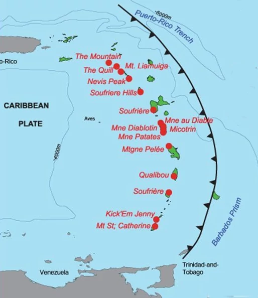
Según sus cálculos haciendo que estallen los 6 primeros volcanes con una diferencia de dos horas entre ellos
se dará una reacción en cadena imparable que hará estallar el resto de volcanes ppor la falla hasta provocar un
temblor de tal magnitud que hará chocar las placas tectónicas de la Fosa de Puerto rico y elevar R'lyeh sobre las aguas.
El mega-terremoto va a crear un mega-maremoto que va arrasará todo el Caribe. Las pequeñas islas como
las Bahamas, o las Caimán, desaparecerán y las grandes como Cuba o Puerto Rico verán sus ciudades de la
costa inundadas. Las perdidas humanas podrían ser incalculables. De hecho, Villalba, espera que las muertes de
cientos de miles vidas por todo el Caribe sirvan para despertar a su Amo de su eterno sueños.
Lleva meses comprando terrenos al pie de los volcanes de las islas de las Antillas Mayores más meridionales. En esos
terrenos esta haciendo trabajos de minería y llegar hasta la lava y poder lanzar un ingenio técnico-mágico que generen
la erupción del volcán.
El Diamond Islet es un volcán submarino, así que en este caso ha hecho uso del Tridente para que los profundos excaven en el
volcán hasta llegar a la lava.
Formas de impedir el plan
Conocer cuál es plan es la primera parte, pero la segunda es buscar la forma de impedirlo. Lo suyo es
que, llegados a este punto, acabes la sesión y les deje elaborar su contraplan. Si te preguntan algo,
lo mejor es ser lo más ambiguo posible, dándoles una posible respuesta y proponiéndoles dos posibles
escenarios totalmente contrarios.
Por ejemplo, si te preguntan si podrían ir a la Mansión Villalba y matar a Hernando, podrías decirles
que sí, que eso pararía el plan, pero no les puedes asegurar que algún lugarteniente no lo continúe.
Al final, el plan más sencillo y plausible es parar la reacción en cadena, haciendo que uno de los últimos
volcanes (el quinto o sexto) no estalle o que estalle antes de tiempo. Si paran el primero, el resto quizás
consigan encender la mecha que haga estallar el resto de ellos. El segundo es submarino, lo que lo hace muy difícil
de controlarlo por seres no acuáticos. El tercero y cuarto todavía podrían provocar la reacción en cadena.
Por eso lo más seguro es hacerlo en el quinto o sexto.
Si uno de los volcanes falla, los otros 5 explotarán de todas maneras, pero sin estar sincronizados y sin
crear el gran movimiento sísmico. Desde luego si estalla algún volcán habrá bajas humanas, pero comparado
con lo que se avecina es algo asumible.
El problema que tiene todo esto es que no tienen una fecha exacta del cataclismo. Tendrían que
estar cerca del volcán y vigilar la mina, saber cuando meten los ingenios mecánicos y estar preparados
para actuar cuando explote el volcán anterior.
Robar los ingenios solo es temporal y seguramente la Orden tenga más ingenios preparados para mandarlos
a los volcanes. Además, estarían avisados de que conocen sus planes y mandarían toda su fuerza militar.
Alertar a las autoridades no es un plan eficaz porque la Orden está muy metida en las instituciones y
seguramente podría hacer que no les hagan caso. Además, estarían sobre aviso.
Los aguafiestas
Comienzo: Antillas Menores
Tienen pensado como frustrar el plan maestro de la Orden y tienen que llevarlo a cabo. Pero
Villalba no quiere fallos y mandará a su mejor agente, Barbanegra, para asegurarse de que se cumpla y
nadie lo haga fracasar.
Para seguir el plan que hayan creado pueden escoger el volcán que deseen e incluso montar dos equipos
con aliados e intentarlo en dos a la vez. Elijan el que elijan, si detienen la explosión el plan de Villalba,
todo falla.
Si mandan dos grupos, doblan las posibilidades de éxito, pero también doblan las posibilidades de que se
descubra el sabotaje y no puedan impedir el cataclismo primigenio que se acerca.
Para hacer explotar el volcán, la RCPC ha comprado terrenos en su falda y ha tunelado hasta llegar a la lava.
Allí han colocado el ingenio que se hace estallar a mano por un par de fanáticos. No hay tiempo de escapar y
no se pueden arriesgar que ningún volcán falle.
La explosión será tan brutal que eliminará todo en 500 m a la redonda. El volcán seguramente devastará la
isla en que esté con la lava y los piroclastos. Muy posiblemente las grandes piedras que lance y el oleaje que se
generen por la erupción, sumado al maremoto que irá generando, hundan a todos o casi todos los barcos que haya
cerca. De hecho, está dispuesto a perder 15 barcos de guerra (3 por cada volcán no submarino).
Quitando a Villalba y sus secuaces directos, nadie de la Orden sabe la magnitud del desastre que se quiere
provocar. Tampoco saben que seguramente morirán. Sus vidas no importan, serán sacrificios dignos para el gran
Cthulhu. Villalba saben que muchos adeptos se rajarían si supieran la verdad o tratarían de hacer algo
sospechoso que llamara la atención.
Si Villalba tiene sospechas de que conocen su plan, seguramente reforzará la seguridad de los barcos
que llevan los explosivos y de los terreros a los pies de los volcanes. Por ejemplo, si se infiltraron
en su hacienda para conocer su plan y fueron descubiertos.
Llegar a la isla
La RCPC lleva varias semanas con 3 barcos de guerra alrededor de la isla para proteger su plan y evitar ataques.
La RCPC ha sobornado del primero a último de los dirigentes a la isla y puede hacer lo que quiera. Por ello, los
navíos de guerra pueden registrar los barcos que llegan a la isla y vigilan las costas para que nadie entre
ilegalmente.
La isla es pequeña y tres navíos de guerra son una fuerza militar difícil de evadir y derrotar, es mejor introducirse
a escondidas. Pueden intentar conseguir una pequeña nave rápida que se cuele entre la vigilancia de los barcos
de guerra. La noche sería la mejor opción y podrían consultar con algún contrabandista las mejores opciones y trucos.
También puedan acercarse a la isla caminando bajo agua o por el aire, a esta altura de la campaña puede que tengan
recursos para hacerlo.
Otra opción sería intentar hacerse pasar por un barco de carga que viene a traer o a llevarse
productos de la isla. Por último, sería ir en un navío de pasajeros y tratar de que no los detecten. Si les
registran encontrarán sus armas, sus objetos extraños y sus libros de magia y los detendrán.
Si van directos con su barco, deberán, mínimo, enfrentarse a un navío de guerra con dos modificaciones
normales y una extraña y la RCPC estaría sobre aviso de que hay saboteadores tratando de impedir sus planes.
Vigilando el volcán
***
Subiendo la ladera
***
En el túnel
El túnel tiene una profundidad de unos 50 metros y tiene bastante inclinación. Está toscamente reforzado, poco
iluminado y tiene un ancho para que pasen dos personas a la vez. Según se baja, la temperatura sube drásticamente
hasta los 50-60 grados y cuesta bastante respirar al no haber ventilación.
Al final de la galería hay una especie de soporte con cuerdas sobre el que hay un extraño aparato mecánico. Tiene
forma de huevo y se ven por dentro engranajes y ruedas. Tiene una cavidad donde se debe meter algún tipo de llave
o palanca que activa la bomba.
Vigilando el explosivo, hay 4 sectarios (adeptos cultistas) y su líder (cultista superior) que lleva la llave que
hace explotar la bomba. Defenderán la bomba con su vida, pero no deberían suponer problema para tu mesa.
Después del combate deberán tirar Vigor o recibirán un nivel de fatiga por el esfuerzo que supone combatir
a 60 grados y con aire enrarecido.
Solo un auténtico genio de la mecánica debería desarmar la bomba. Su mecanismo es tan alienígena que tratar
de desarmarla tiene un -4. Si fallan, podría explotar, haciendo que no se produzca la reacción en cadena, pero
matando a tu mesa.
Tras tener controlada la situación, deberían salir al exterior a respirar aire limpio y fresco y ver si
se acerca algún enemigo.
Frente a Barbanegra
Cuando piensen que ya solo toca esperar y aguantar parapetados en la entrada del túnel mientras vean
al anterior volcán explotar, verán su gran error. Subiendo por la falda de la montaña verán una figura
facilmente reconocible, Barbanegra, con ellos 5 lugartenientes (ajusta la cantidad a tu gusto), entre
ellos Cesar, y parte de su tripulación de híbridos (6 piratas con plantilla de híbrido de profundo).
Su misión es acabar con tu mesa y activar la bomba siguiendo la secuencia de explosiones. Tras
presentarse y explicarles que va a pasar y que piensa hacer con ellos (tirada opuesta de Intimidar
contra Espíritu) empezará una lucha sin cuartel con un Barbanegra en plan berserker salvaje.
Si durante la charla detectan magia en Teach, verán el agujero negro donde estaba su corazón y
podrán averiguar lo de su maldición. Hasta que se ponga en modo lucha pueden tratar de negociar
con él.
A la hora de llegar a un trato lo único que le interesa es recuperar su corazón y solo atenderá
tratos que impliquen recuperarlo.
La pelea solo terminará con una de las dos facciones incapacitada. Si conocen a Cesar y saben que
es de la Hermandad, les hará seña de que van con ellos y esperará a que comience la pelea a cargarse a
otro lugarteniente por la espalda y gritando "Por la Hermandad".
Si no conocen a Cesar, este solo se defenderá hasta descubrir su tapadera en un momento dramático, como
evitar que muera alguien protagonista.
Si consiguen que al final el volcán no estalle coordinado con el resto habrán triunfado, la reacción en
cadena se habrá cortado y el Caribe estará salvo. Pueden llevarse el ingenio explosivo, pero los barcos de
guerra de la RCPC siguen vigilando la isla.
Recompensa extra de cordura (+3): Nadie puede negar que frustrar el alzamiento de un horror
indescriptible y evitar casi seguro fin del mundo ayuda mucho a tu salud mental. Deberían recuperar todos
sus puntos de cordura.
Mata y remata
La Orden ha perdido esta batalla, pero no la guerra. Solo necesitan tiempo para reorganizarse y volver
a la carga.
Dales a tu mesa unos días para lamerse sus heridas, llorar a sus muertos y celebrarlo si lo desean
y vuelta al trabajo.
Villalba está en su momento más débil, así que deberías hacerles entender que tienen que actuar ya,
si quieren destruir a Villalba y a su Orden.
Para empezar, Villalba ya no cuenta con el tridente de Dagón. Los 3 caciques profundos le han quitado
su bendición. Su plan de despertar a su dios ha fallado y muchos profundos han perdido la vida por
los volcanes y maremotos.
Gran parte de su fuerza militar ha sido destruida. Sabía que iba a pasar, pero no importaba si devolvía
a la vida al gran Cthulhu y este le concedía sus deseos. Pero ahora tiene que volver a reconstruir su
flota y su ejército.
Todos los recursos económicos no están ahora tan disponibles. Los terremotos y volcanes han parado
el mundo. Los barcos no salen a comerciar y las comunicaciones son más lentas. A la RCPC le llevará
un tiempo volver a ser la máquina bien engrasada de hacer doblones que era. Tampoco puede comunicarse
con todas sus fuerzas militares tan fácilmente como antes, le costará una temporada volver a coordinar
todas sus unidades militares.
Muchos de sus adeptos han visto que su líder no tiene problemas en dejarlos morir para conseguir sus
objetivos. Sin que la Orden pueda hacer nada, muchos cultistas están dejando de seguir sus directrices y
están apareciendo nuevos líderes que se aprovechan del descontento.
El año sin verano
La ceniza y el humo expulsado por los volcanes va a cubrir los cielos hasta el final del relato.
Son días bastante oscuros en los que es imposible ver el sol, pero sin penalización por visibilidad.
Las noches son oscuras y sin luna y las temperaturas bajan entre 5 y 10 grados de día y hasta 15 de noche.
Las gentes, temerosas de estos sucesos, se encierran en sus casas o en las iglesias. Parece que
el mundo se ha parado. Las calles están casi vacías y los negocios no tienen casi clientes. Los puertos
están silenciosos y en sus tabernas no hay risas y canciones.
Reuniendo tus fuerzas
Comienzo: En cualquier parte del Caribe
En toda gran gran aventura hay un momento en que debes reunir a tus fuerzas para la batalla final y
ese momento ha llegado ya. Así que prende tus almenaras de Gondor y llama a tus aliados. Haced cumplir las
promesas y los pactos hechos, cobraros las deudas pendientes y preparaos para la guerra.
Dale a tu mesa 5 semana para reunir a sus tropas. No es mucho tiempo. Gastarán 2 semanas solo en ir
y volver para hablar con un aliado así que tendrán que currárselo mucho si quieren tener a más gente en sus filas. Pueden
dividirse, buscar métodos de comunicación mágicos o tratar de viajar más deprisa.
Si pactarón con Barbanegra en el volcán solo tendrán 3 semanas. Es el tiempo que necesita Villalba para darse
cuenta que ha sido traicionado por Teach y que pueda recuperar el corazón de la isla perdida donde lo enterró.
Esta sesión o sesiones de juego no les agobies con tiradas de encuentros o emboscadas. Déjales hacer sus planes y
llevarlas a cabo. El tiempo ya es suficiente presión.
La batalla final
Comienzo: La Habana
El plan de Villalba ha sido frustrado y gran parte de su poder ha sido destruido. Nunca estará tan débil como ahora.
Es el momento de atacarle en su propia casa. Pero cuidado, los animales heridos suelen ser los más peligrosos.
Villalba sabe de los movimientos de la Hermandad y aliados para reunir un ejército y acabar con él. Él también quiere acabar con sus enemigos
de una vez por todas y hará llegar u propuesta de batalla mediante alguno de sus subordinados como el Gobernador Granados o el Gobernador Bentinck.
La batalla final será en una semana y solo puede tener un escenario apropiado, la playa de las 7 Millas, donde la Hermandad se fundó. Villalba
considera que es justo que su enemigo muera donde nació. La contienda en la playa de las 7 Millas, será una
descomunal batalla, con sangrientos combates navales en el mar, mientras en la playa monstruos gigantescos se enfrentan
a poderosos magos.
Villalba lleva el ejército más grande con varios barcos de guerra con dotaciones completas. Hay lanzadores de conjuros entre
sus filas y tienen algunos ingenios mecánicos para que la usen sus unidades. Asígnale 10 marcadores de fuerza.
Puedes calcular los tokens de fuerza de las fuerzas de tu mesa siguiendo esta guía.
1,5 tokens por a tripulación de tu mesa, 1,5 por la del Golpe de suerte y 1,5 por la del Desgracia.
1 token por la tripulación de El Sabueso, si son aliados.
1 token por cada tripulación de barcos de combate o de guerra.
0,5 tokens por cada tripulación de barcos de carga o rápidos.
0.5 tokens por Adolfé.
0.5 tokens por Michelle LeCourt y su banda.
0.5 tokens por cada tribu profunda que consigan traer. Por ejemplo, si tienen el apoyo de la
familia de Los Santos de las islas Caimán. Recuerda que no sirve la caracola de los profundos, no se
meterían en situaciones que pongan en peligro su vida por la caracola.
0.5 tokens por cada tribu taína que les apoye. Por ejemplo, la gente del cacique Corozo.
0.5 tokens por el clan de gules de El Susurros.
Si consiguen alistar a Totep entre las fuerzas enemigas, ganan 0.5 tokens. En cuanto empiece el jaleo, se pondrá
a hacer sus locuras entre las filas enemigas.
2 token si liberan a los lloigors para que combatan.
Si Johanna Ribeiro y su secta se les unen, dales 0.5 tokens.
A discreción tuya, pueden intentar hablar con los seres inteligentes del Jardín de la Reina. Pueden convencerles
de que les apoyen contra los que les han hecho tanto daño. Los tokens los asignas tú según veas que consiguen.
No servirá de nada arrastrar al shoggoth isla a la playa o meter en el campo de batalla a chthonianos, son demasiado
incontrolables y dañarían a ambos bandos.
Villalba no intentará nada antes de la batalla, hay un cierto honor en su forma de actuar y cree que su dios le
beneficiará en la batalla. El fracaso de los volcanes es una prueba de fe de su señor Cthulhu. Eso no quiere decir
que el otro lado de la contienda no haga nada. Si la trampa que van a poner en práctica te parece buena puedes
darles un marcador extra.
Si ves que no consiguen un mínimo de 7 marcadores puedes hacer que aparezca de sorpresa algún aliado que no podía
venir o que se había negado a participar. Que hagan una entrada como los elfos en el Abismo Helm.
Ya solo queda jugar la batalla. Es el final de la campaña, así que debería ser épica y mortal. Todas las sesiones de
juego anteriores han llevado a este punto y como acabe es cosa tuya.
Tras la batalla
Tanto si ganan como si pierden, la historia no tiene por qué acabar aquí. Si ganan todavía, quedarán más
misterios de los Mitos que resolver y todavía habrá grupos dispersos de sectarios de la Orden dando guerra por
el Caribe. La RCPC quebrará y sus restos serán vendidos. Los sucesos que la Orden ocultó saldrán a la luz y
los responsables serán apresados y juzgados.
Puedes permitirles quedarse con algún barco de guerra que no haya sufrido mucho daño para que continúen sus
aventuras en el Caribe o en otros mares.
Si pierden la batalla y sobreviven, la situación será desesperada. Villalba empezará con un nuevo plan para
despertar a su señor y esta vez no tienen capacidad de pararlo. Todo lo que hagan para evitarlo será a la
desesperada. La RCPC será omnipotente en las Indias Occidentales y tendrán manos y ojos en todas partes. Sus
aliados están muertos y desaparecidos y sus cabezas valdrán auténticas fortunas. No tendrán donde esconderse
ni de quien fiarse. Pero nadie dijo que fuera a ser fácil.
Recuerda, un final solo es el principio de otra historia ...
El secreto tatuado
El secreto tatuado en la espalda de los tres hermanos García es un mapa mágico que puede
llevar a un tesoro. Alguien ha decidido buscar ese tesoro y primero necesita juntar todas las partes
del mapa. No importa si tiene que sacarles la piel tatuada a tiras.
El primogénito García
Comienzo: Las calles de Santo Domingo
Un extraño asesinato en las calles de Santo Domingo es el comienzo de una aventura que te llevará
por todo el Caribe y más allá para conseguir un tesoro familiar de inmenso valor.
Al salir de una tasca portuaria de Santo Domingo (seguramente La Taberna) los heroes oyen unos ruidos de pelea
en un oscuro callejón adyacente. Cuando llegan, una sombra encapuchada huye hacia los tejados y hay un cuerpo
inerte en el sucio suelo. Al examinar el cadáver parece que tiene heridas mortales de cuchillo y le falta
un buen trozo de piel en la espalda.
Si intentan seguir el rastro del encapuchado cuando consigan llegar a los tejados este ya habrá desaparecido.
CSI: Santo Domingo
Siguiéndoles entran varias personas y alguno empieza a llamar a la guardia. Si quieren tendrán unos minutos antes
de que lleguen las autoridades para examinar el cadáver y la escena del crimen. Algunas acciones que pueden hacer
son:
Examinar el cadáver: El cadáver tiene los pantalones bajados y parece que se meo encima. Parece que
tenía la piel de la cara y el pelo oscurecido como una especie de tinte. Con Medicina
podrán ver que las heridas son mortales y que la parte de piel de la espalda que falta no es por alguna herida,
sino que ha sido extraída a propósito.
Buscar entre sus pertenencias: El cadáver tiene la bolsa llena de oro, unos naipes y una buena daga
ricamente adornada con marfil y plata con un escudo familiar. Parece que tuvo una buena noche. Desde luego el
robo queda descartado. Con Humanidades podrán ver que el escudo de la daga pertenece a los García, una rica
familia de armadores de Santo Domingo.
Examinar el callejón: Con una tirada de Investigar podrán ver que el asaltante estaba escondido en
uno de los tejadillos del callejón, hay restos de tejas rotas recientemente que se cayeron al saltar sobre
su víctima. El muerto entro y se puso a mear contra una pared y el asesino cayo sobre él asestándole
un golpe mortal. Desde luego no es un delincuente común. esto juntos a sus dotes de escalador cuando huía
denota que es un criminal preparado y profesional.
Cada PJ solo podrá llevar a cabo una de las acciones, podrán ayudarse si quieren. Deberán primero decir que
hace y luego tirar. Lo que no se averigüe ahora ya no podrá descubrirse, porque la guardia se cargará
las pruebas.
Tras esto los guardias desalojarán el callejón, harán algunas preguntas a los presentes y se llevarán el
cadáver.
Si ponen la oreja a los interrogatorios y los comentarios de los guardas, el muerto es Antonio García, el
primogénito una rica familia de armadores de Santo Domingo. Los guardas están sudando la gota gorda. Es un marrón muy gordo la
muerte de uno de los personajes más ricos y con más contactos de la ciudad en un callejón al lado de una tasca de mala
fama. Tratarán de ocultarlo todo y amenazarán a los presentes de que callen la boca o podrían tener muchos problemas.
Si los días posteriores intentan averiguar más cosas, será imposible. La familia apoyada por la RCPC ha impuesto
la ley del silencio y nadie quiere hablar. Si tratan de buscar algo en los papeles tampoco encontrarán nada, la
familia es muy cuidadosa de su intimidad.
La historia que pueden hilvanar con todos los datos que pudieran conseguir es que Antonio Garcia era un
jugador que se disfrazaba para entrar en partidas ilegales de mucho dinero. Tuvo una buena noche y tras salir
de la tasca donde se jugaba la partida, fue a mear a un callejón donde le atacarón y le despellejarón un trozo
de espalda. Lo que el asesino quería no era el dinero de Antonio sino el trozo de piel.
El segundogénito García
Comienzo: Barrios altos de Santo Domingo
Dirige esta aventura después de pasadas unas semanas de los hechos de "El primogénito García".
Salvador García, el segundo hermano García, está buscando guardaespaldas. Tras el funeral de
su hermano Antonio y temiendo ser el siguiente, quiere contratar seguridad extra para un viaje
que tiene que hacer a La Habana para hablar con su hermano menor, Héctor García.
Tras la muerte de Antonio, Salvador ha heredado el negocio. Sabe las circunstancias en que murió su
hermano. Sabe lo de que le arrancaron la piel de la espalda para quitarle el tatuaje que su padre les hizo a los 3
hace muchos años. Sabe que los 3 tatuajes juntos forman un mapa a algún tipo de tesoro u objeto mágico de gran
poder. La verdad es que los hermanos nunca se han llevado bien y no han hablado mucho de sus tatuajes. Además, les
sobraba el dinero así que lo les interesaba meterse en las locuras de su padre.
La muerte de Antonio ha activado las alarmas y ha decidido, tras dejar la empresa familiar más o menos estable,
hacer un viaje a Cuba para hablar con Héctor y ver qué hacen. Como no está seguro de su gente ha consultado con la
guardia y estos les han hablado de los sujetos que encontraron el cadáver. Parecen capaces de defenderle y llevarle hasta
Cuba.
La historia del tatuaje
Eusebio Garcia era el padre de los 3 hermanos García. Montó la naviera familiar cuando emigro de España a Cuba
y con el tiempo prospero y llego a formar parte de la RCPC. En la RCPC pronto se integro desde el culto de
Cthulhu y aprendió los secretos mágicos de la secta.
Cuando los hermanos fueron mayores de edad, su padre mando tatuarles a cada uno de sus hijos una parte
de una especie de mapa del tesoro. En parte es un mapa que marca el Lago Rosa en la isla Gran Inagua en las
Bahamas.
También es un ritual que permite abrir un portal a una dimension/cárcel donde Eusebio encerró una grupo
de 5 lloigors.
Si estas en problemas graves, se puede negociar un trato con los lloigors para que solucionen tus problemas
a cambio de su libertad. Eusebio sabia del poder de esos 5 lloigors, un poder que incluso el casi omnipotente
Hernando de Villalba podría temer. Cuando les tatuó el mapa, les dijo que si alguna vez la familia estaba
en grave peligro se juntaran y siguieran el mapa tatuado.
La idea de tatuar el mapa en 3 partes tenía un triple objetivo: no podrían perderlo, no se lo podrían robar
fácilmente y tendrían que juntarse si necesitaban usarlo. Además, así ninguno tendría más poder que los otros dos
hijos.
Como consiguió Eusebio encerrar esos lloigors muestra el poder que la RCPC tiene en el Caribe. La RCPC
cuando tiene problemas graves recurre a los lloigors, entre otros seres de los Mitos, para solucionarlos.
Unos de esos problemas era la ciudad de Port Royal.
Desde hacia más de 20 años los ingleses afincados en Jamaica eran un problema militar y económico para la RCPC.
Así que se plantearon acabar con ellos cortando la cabeza del enemigo y decidieron destruir Port Royal.
Primero lanzaron un maremoto contra la ciudad usando una manada de chthonianos. La hundieron pero no
fue suficiente.
Entonces pasaron a algo más sutil. En un gran ritual, invocaron a un grupo de lloigors para darle el toque de
gracia a la ciudad.
Las ondas cerebrales de los lloigors hundieron mentalmente a una ya desesperada población. La gente huyo de la
ciudad
y eso fue la puntilla que acabo con Port Royal.
De esta manera y sin haber pruebas de sus actividades, la RCPC se quito durante unos años un importante
competidor comercial hasta la aparición de Kingston en escena.
Tras hacer su trabajo en Port Royal, en vez de devolverlos a su dimensión, Eusebio encerró a los peligrosos
lloigors en su actual cárcel y destruyo toda posibilidad de liberarlos excepto por los tatuajes de sus hijos.
Nadie
podría liberarlos a no ser que reunieran los tatuajes y solo sus hijos podían reunir el mapa.
Negociaciones
Cuando vuelvan a poner sus pies en Santo Domingo, un mensajero les hará saber que Salvador García les espera
en su mansión a las fueras. Les avisa que Salvador no es alguien a quien debieran hacer esperar. Incluso se
ofrece a buscarle transporte hasta la mansión.
Salvador les espera en su lujoso despacho rodeado de papeleo. No parece feliz, todo esto no era algo que quería.
Les explica que desea hacer un viaje a Cuba. Tras los sucesos con su hermano mayor necesita guardaespaldas y ellos
parecen hábiles y de fiar. Además, no quiere meter a más gente en el tema del mapa tatuado y ellos ya están metidos
en el lio.
Si tienen barco, ademas de un sueldo como guardaespaldas (800 doblones por persona) les ofrece alquilárselo para
un viaje de ida y vuelta a La Habana (2000 doblones más). Además, esto le permitirá ir de incognito, ya que no ira
en
ninguno de sus barcos. Si no tienen barco irán en alguno de los barcos de Salvador, pero como pobres viajeros.
Podrán regatear alguna cosilla, pero Salvador es un duro negociante que no no negocia ni un ápice. si le ofrecen
un plan mejor puede que les de un extra de 200/300 doblones.
Si se niegan a trabajar para él, les recordará, su poder, su dinero y sus poderosos aliados como la RCPC.
Igual no quieren ayudar a un aliado de la RCPC, pero pueden verlo como una oportunidad de introducirse en su
círculo interior y de tener alguien importante en la RCPC que les deba un favor.
Viaje a Cuba
El viaje La Habana no tendrá ningún tipo de problema a no ser que quieras metérselo tú. En ese caso, tira en
la tabla de encuentros en el mar.
En el puerto de La Habana les espera un carromato vulgar y corriente que va a llevar a Salvador hasta un bote
que le cruzará la bahía y le dejará en el Castillo del Morro, una de las dos fortificaciones
que protegen el puerto de La Habana. El Castillo del Morro está controlado por la RCPC. Salvador
considera que allí estará seguro hasta partir en busca de su hermano. Así que solo necesita a sus
guardaespaldas hasta llegar al Morro.
Si el asesino quiere actuar tendrá que hacerlo en este viaje hasta el bote que dura unos 20 minutos. Déjales montar su
estrategia de protección de Salvador. Puede haber hasta 3 personas dentro del carromato, 1 en el pescante con el
conductor otro en el techo y otro agarrado atrás.
Cuando están atravesando unas estrechas callejuelas unos petardos explotan debajo de los caballos que se vuelven
locos y empiezan a correr desenfrenadamente. Al mismo tiempo alguien cae de un tejado al techo de la carroza. Tirada de
Notar contra el Sigilo de la figura asaltante, para no estar sorprendido.
Lo primero que hará la asaltante es matar al cochero que está totalmente indefenso intentando controlar los
caballos. Con lo cual la carroza ira por las calles a toda velocidad y arrasando todo lo que se encuentre en su camino. Si
alguien intenta controlar el carromato será el nuevo objetivo del asaltante. Si tratan de controlar a los caballos tendrán
las manos ocupadas en las riendas, con lo que no podrán ni atacar y su defensa estará limitada. Hay que acumular 5
avances en tiradas de Cabalgar. Si se falla alguna se resta un avance acumulado y se pifia los avances quedan a
cero.
Ira deshaciéndose de protectores hasta quedarse solo y poder matar a Salvador y despellejarle la espalda con
el tatuaje. Si se ve en peligro huirá saltando a algún balcón o ventana abierta a su nivel y desapareciendo
dentro. Es importante que sobreviva para la continuidad de la historia, pero si muere encontraran entre sus pertenencias
El diario de Eusebio con notas del propio asaltante que explicará quién es.
Recuerda que el asaltante tiene "Manos Firmes" con lo que no sufre penalizaciones por los movimientos
del carromato pero seguramente tu mesa no. Trata de usar todos los objetos y trucos que tiene como por ejemplo
las granadas y piensa que todo lo ha dejado preparado para este ataque.
Alguien puede ocurrírsele tratar de desenmascarar al asaltante con algún ataque apuntado a su capucha o asi. Si lo
consiguen, verán que es una mujer mulata de unos vientipicos años. Ante la sorpresa de verse descubierta huirá al momento.
Era algo que no se esperaba. Una tirada excepcionalmente buena de Notar permitirá darse cuenta a los que la vean que tiene la
típica nariz de los García.
Un trato que no puedes rechazar
Si consiguen que huya la asaltante, podrán llegar sin problema al bote y de ahí al Morro. Salvador tiene mucho miedo y este habla
por él y antes de entrar a la fortaleza se gira hacia el grupo y les ofrece un trato que no puedan rechazar.
Salvador tiene miedo por su vida y sinceramente ni en 10 vidas podría malgastar la fortuna familiar. Así que
va a ofrecerle a tu mesa un trato, podrán hacer una copia de su tatuaje siendo entonces la última copia. Él, para
evitarse problemas, va a quemarse todo el tatuaje y destruirlo. De esta forma tu mesa poseerá la única copia del tercio del
mapa. Renunciará al tesoro familiar (o lo que sea) pero a cambio deberán traerle vivo al asesino de su hermano. Por como
lo dice, él mismo se encargará de hacer "justicia".
Si aceptan el trato, al día siguiente, en la seguridad del Morro, cumplirá su trato. Va a volver a Santo Domingo
en un barco de la RCPC y olvidarse de todo esto. Les dice que hablen con los jesuitas del Colegio San José para
saber donde está su hermano Héctor.
Algún avispado de tu mesa igual aprovecha la visita al Morro para explorarlo. Puede hacer una tirada de Notar y por
cada avance tendrá un +1 a las tiradas relacionadas con el Morro y como moverse dentro, cómo intentar entrar o cómo escapar.
Será mejor que lo apunten por si igual esa información les es útil alguna vez.
El benjamín de la familia García
Dirige esta aventura después de que los héroes hayan completado "El segundogénito García".
Comienzo: En la jungla de Cuba
El tercer hermano García es Héctor. Como todo benjamín de familia noble y adinerada se dedicó
a la religión. Actualmente, es misionero jesuita en el interior de la selva de Cuba.
El primer paso, como les indicó Salvador, sería ir a hablar con los jesuitas del Colegio San José. El hermano
Héctor
e encuentra de misión evangélica en un pequeña comunidad taina en el interior de la selva. Está según los clérigos
a
media semana de camino, pero no es fácil de encontrar si no se conocen los caminos. Les recomiendan que hablen con
Ceiba.
Ceiba (Secuaz)
Ceiba es una buhonera taina que se dedica a moverse por la jungla entre las comunidades de la selva comprando y
vendiendo objetos, llevando mensajes y misivas y a veces sirviendo de guía local a viajeros. Es una feriante de
tomo y lomo,
siempre tiene un plan de negocio en mente que le sacará de los caminos y las sendas. Le gusta jugar, le gusta
beber,
le gusta charlar, le gusta coquetear con todo el mundo y en general le gusta ser el centro de atención. Podrán
encontrarla en un puesto improvisado que monta en el mercado de la Plaza de San Francisco de Asís. El puesto son
unas telas en el suelo con todo tipo de cacharros extraños.
Buhonera: Cada vez que te encuentras con Ceiba hay un 10% de posibilidades de que lleve un objeto
pequeño y útil que podrán intercambiar por algún otro objeto pequeño y útil que lleven.
Repartidora de periódicos: Uno de los múltiples trabajo de Ceiba es repartir la VLH entre las
comunidades
que visita. Se pueden intercambiar cada viaje que se haga con ella 1 ejemplar viejo por uno nuevo que vaya a
repartir. Pudiendo volver a tirar en la Tabla de Noticias de La verdad de La Habana.
Cuentacuentos: Ceiba es una cuentacuentos muy buena y alrededor de una fogata puede contar
excepcionales cuentos de la rica tradición oral taina. Tras irse a dormir después de escuchar uno de los
cuentos, puedes tirar
Espíritu. Si pasas la tirada has aprendido algo de la historia de Ceiba que vas a poder usar en tus
aventuras. Tendrás un +1
una tirada cualquier, incluso de daño, que tengas que hacer hasta la siguiente luna llena (1 semana).
Después de usarlo el +1 desaparecerá.
Casualmente Ceiba tenía que ir a la misión del padre Héctor, así que por un módico precio, 30 doblones, les
guiará
en la jungla. El problema es que tiene que vender su mercancía primero y eso puede ser media semana. Ceiba
empezará a presentarles
diferentes cacharros inservibles dejándoles caer que si le ayudan comprando alguno podría terminar antes.
Si le gastan 100 doblones mínimo en cachivaches, recogerá el chiringuito y se irá. Quedará allí al día siguiente
al amanecer.
Adentrándose en la jungla
El viaje se desarrollará sin incidencias, ya que Ceiba conoce los caminos y sendas de la selva y ha ido miles de
veces por ellos.
Pueden aprovechar estos días para estudiar el trozo del mapa que tienen entre manos. Una tirada de Mitos les dará
a entender que tiene
dos partes, una especie de mapa de una ubicación secreta y otra parte de algún tipo de ritual. El problema es que
ninguna parte esta
completa. También es una buena cuentacuentos, algo que aprendió de su abuela. Una de las noches a calor de una
buena hoguera podría contar
alguno de sus cuentos.
La misión
El padre Héctor se encuentra en la misión de San Cristóbal. Es una mezcla entre hospital donde se tratan enfermos
y heridos de las
comunidades tainas y colonas de los alrededores, iglesia evangelizadora y colegio para los niños done se enseñan a
leer y los números
entre avemarías y padrenuestros. El único clérigo de la misión es Héctor que tiene un par de taínos convertidos al
cristianismo de ayudantes.
Cuando lleguen el padre Héctor estará pasando consulta a sus enfermos. El sarampión esta haciendo estragos entre
los taínos y tiene varios
casos graves. Cuando le expliquen que su hermano Antonio está muerto se entristecerá por su perdida. Cuando le
vayan explicando las causas de
la muerte y que vienen a por su tatuaje les mirará con cara extrañada y les dirá que le mando un dibujo en papel
de su tatuaje hace semanas.
Buscará entre sus escasas posesiones y les mostrará una carta en que su hermano David le explica la difícil
situación actual de la empresa,
que quiere buscar el legado de su padre y le pide el dibujo del tatuaje. La carta parece bastante real, buen
papel, buena letra y el sello
familiar que porta su hermano.
De hecho, Ceiba confirmará que la carta la trajo ella y se la entrego una muchacha con ropas de criada diciendo
que era para el Padre Héctor
de su hermano Antonio. Que debía entregársela en mano y que prefería que la llevará Ceiba porque era más seguro
que enviarla por cauces normales.
Por al descripción podría ser el asaltante de la carroza y si consiguieron desenmascararlo pueden estar seguro
al 99%.
Parece ser que esta vez se les ha adelantado y ha conseguido su trozo tatuaje sin problema. El padre Héctor les
permitirá tener su copia del
tatuaje. Si la asaltante consiguió el trozo de Salvador tendrá todos los trozos y no tendrán posibilidad de
seguirla y saber
cuales son sus próximos pasos. Si están empatados, ambos tienen 2 trozos y necesitan un terco que solo tiene el
contrario, tendrán que mirar
como conseguir el trozo del otro. Déjales el camino de regreso para que se lo piensen o para que se revuelvan en su
propio fracaso.
El intercambio
Dirige esta aventura después de que los héroes hayan completado "El benjamín de la familia García". Deja una
sesiones si no tienen ningún trozo de mapa para que crean que han fracasado.
Comienzo: En cualquier parte del Caribe
Seguramente la asaltante no tiene todos los cachos y sabe que son duros de pelar así que tratará de hacer algún
trato con los
heroes. Enviará algún mensaje cuando estén por alguna de las grandes ciudades del Caribe para negociar el cacho de
mapa que
le falta. Si estos aceptan les citará en algún lugar abierto público y con fácil huida, como grandes plazas,
puentes, mercados, ...
Si la asaltante ha conseguido todos los trozos, aún tiene que descifrarlos. Es diestra con el sable, pero la
lógica y la
deducción se le escapan. Intentará que diferente gente de letras y de ciencias trate de resolverle el acertijo del
mapa,
pero no conseguirá nada. A la desesperada quedará con tu mesa para llegar aún trato con ellos.
Se presentará en el lugar y a la hora correctos. Suelen gustarle las entradas impactantes, así que seguramente se
dejará descolgarse de un árbol o saldrá de detrás de algún escondite. Se quitará la capucha y sin quitar las manos
de
los mangos de sus armas empezará a hablar.
Se llama Maria Isabel y es la hija no reconocida de Eusebio. Necesita la parte del mapa que le falta y se ofrece
a llegar
a un pacto para compartir el tesoro. Maria Isabel sabe cual es el "tesoro real" que esconde el mapa pero le
costará horrores
ocultarlo. Leerla es tremendamente fácil y seguramente cualquier persona puede darse cuenta que miente o por lo
menos
oculta alguna verdad importante. Pueden aceptar a sabiendas que se la va a jugar o rechazarla. Si no quieren
ayudarle
puede ofrecerles el diario de Eusebio que tiene muchísima información actual de la RCPC y el culto de Cthulhu en
la
actualidad.
Maria Isabel García
Maria Isabel García es la hija no reconocida que tuvo Eusebio con una sirvienta que trabajaba en
casa de los García. Cuando Eusebio descubrió que iba a tener una hija mando a la madre embarazada de
Maria Isabel a unas instalaciones que tenía la RCPC en Matanzas donde tuvo a la niña.
Temeroso de derramar sangre de su sangre, entrego a la niña a la RCPC y a la madre a un convento de clausura
al otro lado del océano. La RCPC crió y educó a Maria Isabel hasta tener la edad para entrenarla en el combate.
La idea era convertirla en una cazapiratas que limpiase de escoria el Caribe. Sin embargo, Maria Isabel tras
su entrenamiento tenía otros planes, encontrar a su familia.
Sabía quién era su padre al que tenía bastante odio, pero ya había muerto cuando ella terminó sus entrenamientos.
No sabía nada de su madre así que trato de infiltrarse como sirvienta doméstica en la casa de su padre para
buscar información. Terminó encontrando el diario de su padre donde descubrió el destino de su madre,
había muerto de fiebres en el viaje España. Encontró entonces todo el tema del secreto familiar y decidió usarlo
contra los García y la RCpC.Así pues se lanzo a sus planes de conseguir el mapa tatuado.
El diario de Eusebio
El diario de Eusebio detalla todas actividades desde hace más de 20 años relativas a la RCPC y los Mitos. Puede
considerarse un libro de los mitos con las siguientes características
Este diario sería muy interesante para gente como Mary Read con pruebas de los crímenes realizados por la RCPC.
También puede interesar a Antoine Delapore. Sería una historia de digna de la primera plana de una edición
especial de la VLH.
Debido a su contenido también se le puede considerar un libro de los Mitos. Estas son sus estadísticas:
Título: El diario de Eusebio García
Autor: Eusebio García
Idioma: Castellano con muchos pasajes en cthulhunés
TPC: d8
Tamaño: Libro
Estado de conservación: Usado y leído
Hechizos: 2 hechizos a elegir
Tiempo de lectura: 1 semana
Características especiales: Es un registro muy
exhaustivo de la actividad de los Mitos en el Caribe en los últimos años. Otorga un +1 a las
tiradas de Mitos en referencia a sucesos recientes si puede revisarse durante una hora. Como
los pasajes más interesantes están en cthulhunés solo podrá aprovecharse de este bonus
aquellos que hablen cthulhunés.
Descifrando el mapa
Dirige esta aventura después de que los héroes hayan completado "El intercambio".
Comienzo: Cuba
En este punto es cuando deben empezar a jugar sus mejores bazas, tirar de contactos y pedir favores. Deberán
hacer tiradas de Mitos e ir acumulando 10 avances. El problema es que no se puede repetir tiradas. Cada comodín
que estudie el mapa ira aportando avances, pero no podrá volver a estudiarlo. Para poder tirar tendrá que
estudiarlo
como si fuera un libro, necesitando una semana para poder hacer la tirada. Si tu mesa no puede descifrar solo el
mapa
tendrá que recurrir a sus contactos, como Adolfé o Isadora, que aporten su punto vista para descifrar el mapa.
Como no es conveniente ni tener varias copias ni andar mandándolas por correo deberán visitar a cada estudioso
que quieran
que lo revise. Deberían aprovechar todas las ventajas, trucos y rituales que les den bonus para esas tiradas.
Lo que descubrirán es que en la Isla de Gran Inagua en las Bahamas Eusebio escondió/capturó algo de gran poder.
Además
tendrán el ritual mágico para poder liberarlo.
El viaje hasta Isla Gran Inagua (Bahamas) no debería ser problemático, pero puedes meter un evento si deseas.
Los arrecifes de la isla son famosos por provocar el hundimiento de varios barcos castellanos, ingleses y
franceses,
algunos cargados con grandes tesoros. Es un sitio perfecto para que si tienen asuntos pendiente con alguna tribu
profunda
les hagan una emboscada.
La búsqueda del tesoro
Dirige esta aventura después de que los héroes hayan completado "Descifrando el mapa".
Comienzo: Isla Gran Inagua
La isla de Gran Inagua es realidad pequeña (80 kilómetros de punta a punta) y no tienen ningún asentamiento
grande, solo
algunas granjas y algunas salinas en su parte sur. Llegar al Lago Rosa, que ocupa gran parte del interior de la
isla, no
debería darles problemas. El lago Rosa es un lago salado famoso por ser un lugar de cría de los flamencos.
Según el mapa en el extremo norte del lago sobresaliendo del agua salada del algo hay una gran roca de unos 10x10
metros totalmente plana que los locales llaman la Cama del diablo. Una tirada de Ciencias revelará que
geológicamente
la piedra no pertenece a la isla. De alguna manera ha llegado allí y no parece que sea de forma humana y
geológica.
Se supone que esa piedra es un la puerta a otra dimensión donde está el "tesoro" y el ritual que estaba incluido
en el mapa
es la llave para abrirlo y cerrarlo. El ritual es principalmente crear un intrincado pentáculo casi tan grande
como la
puerta y dotarlo de energía mágica mediante un sacrificio en sangre. Deberán gastarse 20 PP entre uno o varios
practicantes
de magia y la sangre suficiente para hacer una herida a un comodín.
Tratos con el demonio
Dirige esta aventura después de que los héroes hayan completado "La búsqueda del tesoro".
Comienzo: Isla Gran Inagua
En cuanto caiga la ultima gota de sangre del sacrificio esta empezará a seguir el dibujo del pentáculo y cuando
lo cubra entero esta empezará a tornarse de un verde fluorescente. Poco a poco la piedra del interior del símbolo
irá desapareciendo para verse una especie de dimensión de oscuridad total en cuyo centro se ve una especie de isla
de piedra flotante con cristales de cuarzo gigantes de muchos colores,, geodas, estalagmitas y estalactitas.
De repente una especie de vórtice de energía, el lloigor en su forma original, se puede ver cuando golpea
el campo de energía que hay donde estaba la piedra. El lloigor no dejará de moverse cerca del campo de fuerza de
forma
que se le puede ver de vez en cuando. De hecho, durante la conversación con tu mesa para dar fuerza a sus palabras
(telepáticamente
dichas) golpeará el campo de fuerza.
El lloigor va a empezar a negociar su liberación. Ofrecerán poder, conocimiento y riquezas por su liberación. Si
se niegan a liberarlos, empezarán a ofrecer los deseos más profundos. Si continúan negándose a liberarlos el tratará
de distraerlos y sus otros compañeros tratarán de controlarlos mentalmente. Como mínimo conseguirán controlar a
Maria Isabel que hará un ataque a traición al PJ más fuerte. Si consiguen derrotar a su compañeros esclavizados
psíquicamente, los lloigors ya no tendrán ninguna forma de interactuar con el exterior y liberarse. Volverán
a la isla flotante resignados, sabiendo que tu mesa es su enemigo. Recordad que los lloigor no olvidan y no
cambian de opinión, así que los lloigors serán unos poderosos enemigos.
Tampoco te olvides de que prometieron a Salvador García la cabeza del asesino. Si no le entregan algo creible,
se convertirá en un enemigo poderoso. Hicieron un trato con él y no han cumplido y eso para Salvador es
bastante grave.
Los lloigors liberados son algo muy peligroso, ya sabéis lo que paso en Port Royal. Pueden ser
un poderoso aliado si tienen que enfrentarse a la Orden del Gran Cthulhu, pero tienen un reverso maligno. Si en
algún momento
liberan a los lloigors tras cumplir su trato, se dispersarán por todo el Caribe. Extenderán sus poderes
depresivo/suicidas, hundiendo
en la miseria todos aquellos lugares donde se establezcan. Si bien pueden haber evitado un mal
mayor con la ayuda de los lloigors, han liberado un mal muy poderoso en el mundo que tendrá consecuencias en el
futuro. Tratarán, además, de vengarse de las personas que los encerraron o mantuvieron encerrados,
buscando algún vacío legal en el pacto que establecieron.
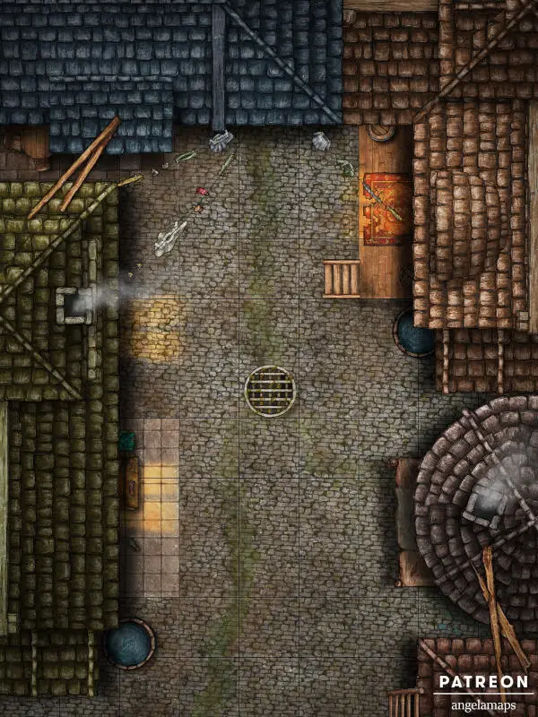
Callejón de puerto de Santo Domingo
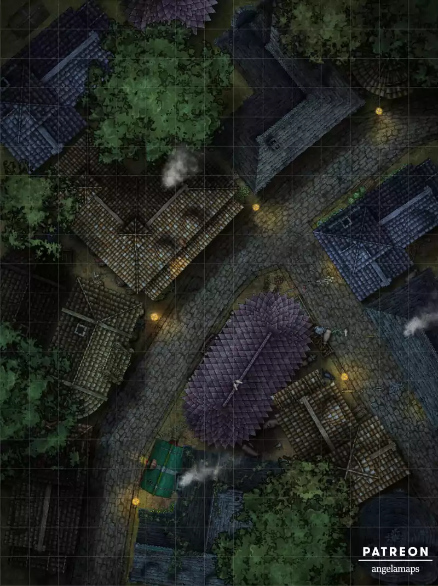
Callejuelas estrechas de La Habana
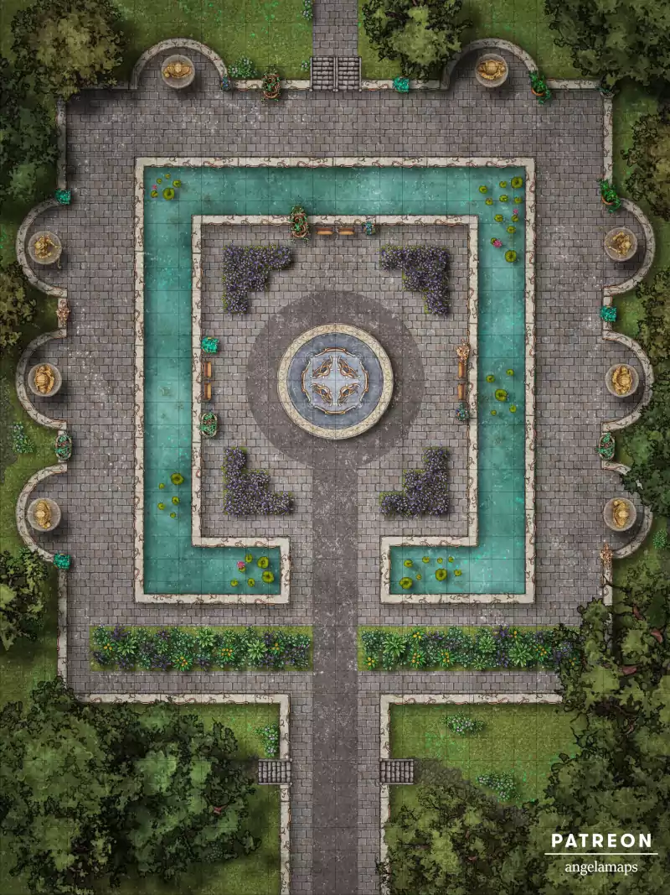
Parque público
Otras historias salvajes
En sus andanzas por el Caribe combatiendo contra la Orden del Gran Cthulhu, nuestros heroes pueden
correr otras aventuras. Aquí tienes algunas de ellas donde podrás explorar templos perdidos, buscar tesoros
hundidos o hacer sus pinitos en el mundo del teatro.
La tortuga
Comienzo: En medio del mar
Desde el barco se avista una tortuga marina con cosas brillantes incrustadas en su concha.
Si la atrapan, parece ser unas extrañas joyas de oro y plata. La verdad es que la tortuga es la mascota
de un grupo de profundos que tienen un asentamiento en unos arrecifes cercanos.
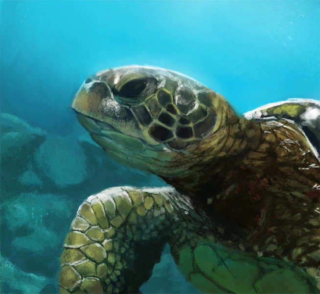
Alguien del barco grita señalando al agua. A pocos metros de la proa hay una gran tortuga marina, algo
bastante común en las aguas del Caribe. Lo que no es tan común es que su caparazón esté lleno de piezas
metálicas con brillos dorados y plateados.
Como siempre que pasa algo en el mar empezarán las discusiones sobre si es un buen o mal augurio y al final
todo el mundo se girará y esperará a ver que dice tu mesa. Pueden dejarla en paz y seguir su camino. Pescarla
y matarla para comérsela y quitarle las incrustaciones de oro y plata es otra. Por último, podrían capturarla,
estudiarla, devolverla al mar y seguirla para resolver el misterio de porque está enjoyada.
Dejarla en paz
Si la dejan marchar recibirán duras críticas del resto de la tripulación. Desde referencias a la rica sopa de
tortuga hasta discusiones de en qué se podrían haber gastado su parte de las joyas. La tripulación está
furiosa y tendrá un -1 a todas las tiradas excepto en combate o en situaciones que pongan en peligro su vida
hasta dentro de 3 viajes en que olviden todo este asunto.
Tendrán que mirar como contentar a la tripulación. Tienen opciones rápidas y simples como darles grog u
ofrecerles dinero de su bolsillo. Si consiguen hacerles entender un enfoque más ecologista explicándoles
que maltratar y matar animales no es algo bueno, recompénsales con un par de benis.
Estudiarla y seguirla
Si la atrapan para estudiarla, una tirada de Ciencias les dirá que es tremendamente vieja, incluso para su
especie. Una tirada de Medicina les dirá que ha recibido muchas heridas a lo largo de su vida, pero lo curioso
es que hay heridas que han sido sanadas por alguien, no se han curado solas. Una tirada de Mitos les dirá que
las placas de oro son de origen profundo. Las placas más grandes tienes relieves típicos de los objetos
profundos.
Puede considerarse que la tortuga es una especie de mascota de alguna comunidad profunda. Y parece muy querida
por sus dueños. Podría, incluso, ser alguna representación totémica.
Si la sueltan y la siguen verán que esta totalmente desorientada. Está nadando en círculos y cada cierto tiempo
se sumerge para buscar algo y vuelve a emerger. Realmente está buscando la tribu profunda que la cuida pero no
la encuentra.
Pueden intentar ayudarla a volver a casa. Deberán perder media semana para de rastrear la zona hasta
encontrar el arrecife donde habitan los cuidadores de la tortuga. Será medio día si tienen ojos de buey en
fondo del barco. Pueden dejarla ir sola o tratar de devolverla ellos mismos y tener que tirar TPC. Los profundos al
verlos se pondrán violentos, cogiendo sus armas y preparándose para la lucha
pero en cuanto vean a la tortuga se olvidarán de todos y rodearán a su tortuga totem.
La comunicación sub-acuática es complicada, pero al final el líder profundo de esta pequeña comunidad
les hará entender que está en deuda con ellos. Les entregará una caracola de gran tamaño que es un objeto
de gran importancia entre los profundos.
Caracola de los profundos: Este objeto es entregado por una tribu profunda como
muestra de estar en deuda con el ser que la porta. Si se hace sonar, los profundos
que la oigan tendrán que devolver el favor, incluso si no tiene nada que ver con ellos. Podrá usarse para
parar un ataque de profundos, o para que realicen algún tipo de trabajo como recuperar algo de un barco
hundido, conseguir pesca, ... También puede conseguirse que les traigan un botín de oro de hasta un d8.
Los profundos nunca harán nada que ponga su vida en peligro o que vaya en contra de una orden del
Tridente de Dagón. Tras devolver el favor, se llevarán la caracola y la usarán para obtener un favor
del clan que la entrego.
Adicionalmente ver a los profundos de otra forma, más allá de violentos enemigos, hará que toda tu
mesa obtenga la ventaja: Acostumbrado al horror (profundos).
Pescarla
La opción de pescarla y quitarle las joyas les dará un botín de d6 y una rica sopa de tortuga para cenar.
No es posible quitarle las joyas sin matarla o dejarla muy herida. De hecho, varios huecos de su caparazón han sido
hábilmente arreglados con placas decoradas de oro y plata.
Puedes pedirles las tiradas de investigación del punto anterior (Ciencias, Medicina y Mitos) antes de
sacrificarla para que se lo piensen antes. Si siguen adelante con sus crueles actos, se enfrentarán a
graves problemas.
El clan de profundos que cuida de esta tortuga encontrarán los restos de su amada tortuga y el líder mediante
métodos mágicos averiguará quien son los responsables.
El clan empezará a perseguir al barco y a matar a los sucios humanos que en el van. Es un clan pequeño,
con unos 20 combatientes como mucho. No pueden enfrentarse directamente contra toda la
tripulación, pero si aprovechar a asesinar a uno o dos tripulantes en plena noche y desaparecer.
Ahora en cada viaje cuando se tire la tabla de Encuentros en el Mar, si sale un 7 (La Tortuga) o 10
(Saboteadores profundos) los profundos intentarán matar a un tripulante. Los resultados que lleven a
Relatos Salvajes ya terminados también harán que haya intento de asesinato.
Cuando los asesinos profundos intenten atacar, deberás tirar un d100. Si se saca menos de
"comodín (PJs y PNJs que vayan en el barco)" x 5%. Intentaran matar a un PJ, si no atacarán a un
tripulante normal. La tripulación normal muere directamente y seguramente su cadáver desaparecerá sin dejar
rastro.
Puedes dejarles pistas como señales de lucha, restos de algas, marcas de tridente, ...
Si atacan a un comodín, habrá un encuentro del comodín contra 2 profundos y un líder profundo. Si ven que
no pueden ganar o se acercan refuerzos tratarán de escapar al mar donde los perderán de vista. Si consiguen
apresarlos podrán interrogarlos y saber qué está pasando y a qué se deben los ataques.
Pueden decidir enfrentarse al resto del clan y acabar con ellos definitivamente. La otra opción es tratar
de negociar una paz, aunque el coste que piden los profundos es muy alto. Un tripulante deberá entregarse
al clan profundo para ser sacrificado. Este punto no es negociable de ninguna manera, una vida por una vida.
Contrabando de ron
Comienzo: Kingston (Jamaica)
Luchar contra horrores espaciales o extradimensionales no paga las facturas y los personajes,
sobre todo si están buscados por la ley, deben buscar métodos rápidos de conseguir dinero. Una forma es haciendo
contrabando de ron para Michelle LeCourt, una extravagante mujer de los bajos fondos de Kingston con
fama de bruja, que les pedirá que lleven un cargamento de ron ilegal a Santo Domingo (La Española)
evadiendo a la armada española y los barcos de la RCPC que vigilan su monopolio comercial.
Todo sería una actividad delictiva de lo más normal y corriente, si no fuera porque en varios de
los barriles de ron hay cadáveres humanos. Sobre estos cuerpos se ha realizado un ritual vudú
de zombificación. Se transportan metidos en alcohol para no levantar sospechas y para que
se conserven mejor mientras se transportan. El problema viene cuando los cadáveres empiezan
a levantarse y atacar a los tripulantes del barco.
Michelle LeCourt, una de las jefas del crimen organizado de Kingston y poderosa bruja vudú, tiene ojeadores
en el puerto buscando barcos rápidos con tripulaciones con pinta de criminales y necesitadas de dinero que
pueda usar para mover su material ilegal. El ojeador se acercará al que tenga pinta de capitán y les ofrecerá
trabajo.
Si están interesados en conseguir dinero fácil, deberán ir al Retrato del capitán y preguntar por LeCourt.
Michelle LaCourt ha recibido un encargo secreto de la RCPC de que le consiga unos zombis para una tarea que solo
ellos podrían realizar. LeCourt no ha preguntado solo ha cogido el dinero y se ha puesto a abrir tumbas y a sacar
cadáveres. el siguiente paso es buscar una tripulación prescindible que lleve en secreto los zombis a su destino.
Es importante que las actividades sobrenaturales de RCPC no salgan a la luz así que quieren hacer pasar el
cargamento como contrabando, aunque las patrulleras reales y las de aduanas de la RCPC tienen orden de no
molestar al barco de tu mesa.
Michelle estará tomando un infusión en un de los reservados de la segunda planta del Retrato del capitán.
Muy tranquilamente y sin ninguna prisa les explicará que les ofrece 1500 doblones por llevar 20 barriles de
ron a Santo Domingo, 750 ahora y 750 a la entrega. No quiere preguntas, solo llevar el material hasta su
destino eludiendo las naves de aduanas (aunque sabe de sobra que ni se acercarán, ya que tienen orden de no
detener a los contrabandistas).
LeCourt no negocia, y les hace directamente responsable de lo que le pase a la carga. Unas tiradas de
Latrocinio o Conocimientos Generales les dirá que el trabajo está muy bien pagado para el riesgo que supone.
Desde luego la bruja oculta algo, pero la paga es muy buena.
Tu mesa debe decidir que hace pero oportunidades como esas no salen todos los días y Además, la fama de la bruja
es es algo a tomarse en vano. No conviene tenerla en contra.
Subiendo la carga
El día acordado a la hora acordada, LeCourt y su gente aparecerán en el puerto en varios carros con unos 20
barriles.
Ayudarán a subirlos al barco, mientras LeCourt se dedica a hacer rituales al barco, recitando salmos y ungiendo
el casco de la nave. Realmente es teatro de Michelle para mantener su fama de bruja.
Cualquiera que ayude a embarcar los barriles verá que pesan bastante y que tienen sellos de cera con extraños
símbolos. Tirada de Conocimientos Generales para ver que parece están relacionados con el vudú. No hace falta
ser muy inteligente para darse cuenta de que la bruja esconde algo pero la paga es muy buena.
Cuando vean que todo está bien colocado en las bodegas, LeCourt les entregará la mitad del pago y
se irá con su gente.
Ruidos raros
Durante el viaje podrán inspeccionar los barriles. Sin romper el sello es imposible ver que hay dentro
de formas normales. Con métodos mágicos podrán detectar que hay magia de algún tipo dentro, incluso ver
los cadáveres del interior según que hechizos se usen. Tirada de Conocimientos Generales para ver que
pueden ser zombis.
Si descubren que hay dentro de los barriles podrán mirar que hacer para evitar problemas. Podrán destruirlos
por si acaso o ponerles medidas de seguridad por si se levantan. Si se deshacen de los cadáveres tendrán que
dar explicaciones a LeCourt.
Si toman medidas de seguridad un poco eficaces como atar los barriles con
cadenas de forma que se pueda levantar la tapa los zombis no se levantarán y podrán hacer la entrega normal
en Santo Domingo. Unas carretas llegaran nada más atracar y una docena de estibadores sin casi dar explicaciones
bajarán a la bodega a llevarse los barriles y entregarán una bolsa con la mitad que faltaba del pago.
Como asi la aventura queda muy triste puedes hacer aparecer una patrullera real despistada que no ha recibido
órdenes de dejar pasar el barco.
Si no detectan nada o pasan de investigar los barriles para no enfurecer a la poderosa maga vudú, a mitad del
viaje, a la noche unos gritos despertarán a la tripulación. En la cubierta dos figuras lentas,
gimoteantes y que apestána ron se acercan a un tripulante que está de guardia en cubierta. Cuando se acercan
a ellos y los iluminan parece dos muertos revividos y por la peste a alcohol debían estar metidos dentro de
los barriles de ron. De repente se oyen un gran numero de golpes como de madera que vienen de la bodega.
Y los muertos se alzarán
Cuando bajen a la bodega se encontrarán a unos 20 zombis (descontando los que hayan salido antes) emergiendo
de sus toneles. Tienen 1 turno antes de que los zombis estén preparados para el combate. Puede aprovechar para
atacar, para prepararse para el combate o salir corriendo y cerrar la puerta.
Zombi (secuaz)
Recuerda que estos zombis están empapados en ron que hace que sea muy fácil prenderles fuego y acabar con ellos.
El problema es que están en un barco y si se les prende fuego se empezarán a moverse como locos hasta morir
quemados. Esto hará que el barco se incendie rápidamente. Aunque no lo busquen puede que ciertas acciones como
disparar a bocajarro haga que las chispas prendan al zombi.
Descerebrados: No tiene cerebro con lo que se puede Intimidar, Provocar o Persuadir, ... Tampoco
funcionan trucos sucios que se basen en esas habilidades.
Hijos del vudú: No atacarán nunca a un verdadero creyente del vudú. De hecho, si, por ejemplo,
se interpusiera entre ellos y sus objetivos estos se pararían hasta que dejara de interponerse.
Muerto viviente: +2 a Dureza; +2 a recuperarse del aturdimiento; los ataques apuntados
no causan daño adicional; ignora un punto de penalización de heridas; no respira; inmunidad a
enfermedades y venenos.
TPC: d4
Reclamaciones
Si vuelven a Kingston para reclamar algo a Michelle podrán encontrarla con siempre en el Retrato del Capitán.
Si los zombis se levantaron en el viaje y dieron problemas, muy cortésmente se disculpará
y les ofrecerá el dinero que se había prometido por llevar los barriles ron, más una indemnización por las
perdidas de humanas y materiales (calcula a tu gusto) más un suculento extra de 1.000 doblones si cuentan la
historia por las tabernas de los puertos del Caribe. Si puede ser, adornándola un poco. Michelle no pierde
nunca la oportunidad de sacar ventaja de un fracaso y desde luego está historia va a ayudar mucho a su imagen.
Si han deshecho de la carga sin que los zombis den señales de vida mejor que vayan a pedir perdón a LeCourt (y
entregarle una buena suma de oro) o conseguirán una poderosa enemiga. Lo mismo pasará si no entregan la carga y
desaparecen
sin dejar señal.
Si alguien de tu mesa se pone impertinente o chulo, LeCourt desatará todo su poder con sus secuaces sacando su
armas
y ella exhibiendo toda su brujería. En cuanto vaya a empezar el combate, hará un gesto de calma y tratará
apaciguar
la situación con buenas palabras y gestos amables. No le renta una pelea pero sí el espectáculo que haya dado
delante
de los parroquianos de la taberna.
Continuando la historia
Si entregan los zombis y quieren saber para que son pueden seguirles el rastro. Son llevados a un almacén de la
RCPC que
luego los llevara a unas instalaciones en la jungla donde se usan de mineros en una mina de azufre. Los usan para
llegar a partes de la mina donde los humanos no pueden llegar debido a la toxicidad.
La noche de San Juan
Comienzo: Cualquier isla controlada por los españoles o con una importante colonia española a finales de
Junio.
Durante la noche de San Juan a la luz de las hogueras unos hechiceros inexpertos invocan algo
que no pueden controlar. Suerte que nuestros héroes están cerca para solucionarlo a no ser que hayan tomado
demasiado licor.
Durante las celebraciones de la noche de San Juan, los locales han preparado grandes hogueras en la playa.
Hay bebida, comida, música y baile y todo el mundo se olvida de sus problemas.
También es una noche de magia, perfecta para hacer pequeños rituales para atraer el amor, la suerte o la fortuna.
Sin embargo, esta noche no será así. Un pequeño grupo de adolescentes con ínfulas de poderosos magos intentará un
ritual que saldrá mal e invocaran a unas peligrosas criaturas, vampiros de fuego, que causarán estragos entre la
gente si los héroes no lo remedian.
Deja que que tu mesa disfrute de la fiesta bebiendo y comiendo, Si te apetece déjales que participen en juegos
populares como coger al cerdo engrasado, lanzamiento de objetos que de normal
no se lanza, cortar cosas rápidamente, concursos de pulso, cantos regionales, ... También pueden participar en
tradiciones
como andar sobre las brasas o saltar las fogatas. Hay muchas opciones para que todos puedan participar y
tener su minuto de gloría.
Si durante los festejos se acercan a la mesa de las viandas y las bebidas que han traído las gentes
del lugar,
podrán ver y aprender el ritual de la Queimada.
Saltando el fuego
El momento álgido de las celebraciones es a la media noche cuando se enciende la gran hoguera de San Juan. Nada
más prenderla
y cuando tenga unas grandes llamas de su interior saldrán tantos vampiros de fuego como jugadores que empezarán a
sembrar
el pánico y quemarlo todo. Tu gente puede combatirlo, lo cual es muy complicado sin la preparación oportuna ya que
son inmunes
a los ataques físicos excepto el agua. Es difícil, pero no imposible.
Con una tirada de Mitos podrán saber lo que son y con un avance sabrán que es una
raza servidora que normalmente aparecen solo si los invocan. Lo más efectivo y rápido es localizar
al que los haya invocado e incapacitarlo. Tiradas de Notar para buscar entre la gente que huye despavorida para
intentar localizarlo. Pueden hacer tiradas de Mitos para tratar de saber como invocarlos y buscar cosas como
círculos de invocación,
ofrendas, símbolos arcanos, ...
Lo más óptimo sería que mientras una parte del grupo entretiene a los vampiros (para evitar que se produzcan
bajas mortales),
otra busque al invocador (para poder detenerlos definitivamente).
Aprendices de brujos
Sus pesquisas les llevarán a un grupo de adolescentes discutiendo en una fogata apartada del resto de festejos.
La fogata tiene un fulgor extraño y esparcidos a su alrededor hay objetos como un jarrón lleno de aceite, una hoz
y
diferentes hierbas. Los 4 jóvenes (Beatriz, Desideria, Javier y Francisco) están muy nerviosos y tienen miedo
de la consecuencias que podrían traerle sus actos.
Tanto con Persuadir, asegurandoles que no les pasará nada, como con Intimidar, amenazandoles con las posibles
consecuencias,
podrán sacarles que estaban intentando vengarse del hijo del alcalde que se dedica a atormentarles usando un
hechizo mágico.
Encontraron en una casa abonada del pueblo un librillo en inglés con extraños dibujos. La curiosidad les llevo a
pedirle a un marinero medio
borracho que se los tradujera y este se lo tradujo con su pobre inglés. La mala traducción
(#pagabienatustraductores) y su inexperiencia
produjo que el ritual saliera mal y los vampiros de fuego estén descontrolados.
Si revisan el hechizo del libro rápidamente (Investigar si saben inglés) verán que los vampiros están ligados a
la fogata
y cada cubo de agua que lancen a la fogata provoca una herida al azar en uno de los vampiros. Según vayan muriendo
los vampiros
la fogata se ira haciendo más pequeñas hasta que mueran todos. La fogata está a unas casillas del mar (la fuente
de agua más cercana)
así que tendrán que darse unas buenas carreras con cubos para poder apagar el fuego. Tirar arena o poner mantas
para sofocar el fuego,
provoca que un vampiro al azar quede aturdido pero no apaga la fogata.
En cuando lancen el primer balde de agua a la fogata los vampiros irán directos a ella para defenderla.
Atacando a todo el que se acerque.
Si tardan más de 10 turnos en localizar a los adolescentes estos se habrán ido junto con el resto de la gente que
estaba en la playas
y solo quedará los vampiros de fuego para enfrentarse directamente contra ellos. Una tirada extraordinariamente
buena de ocultismo
les podría ayudar a detectar la fogata de la "chavalada" y
percatarse de que si la apagan los vampiros de fuego desaparecen.
Si no consiguen parar a los vampiros estos terminarán llegando al pueblo y lo quemarán entero para desparecer
dejando una estela de destrucción a su paso.
El libro que el grupito de adolescentes ha encontrado es un pequeño tratado de hechicería y fuego titulado
"Fuego Purificador" y escrito en inglés. En sus páginas hace referencia a distintas divinidades primigenias
que están relacionadas con el fuego. Tiene marcas de fuego y zonas quemadas y desprende un extraño olor a humo.
Título: Fuego purificador
Autor: Anónimo
Idioma: Inglés
TPC: d4
Tamaño: Relato corto.
Estado de conservación: Usado y leído.
Hechizos: Círculo de invocación, Piromancia
Tiempo de lectura: Media semana
Abandonado a su suerte
Comienzo: En medio del mar
Mientras los personajes se encuentran en alta mar desembarcan en un islote a intentar conseguir agua
y comida fresca.
Al volver al bote se encuentran metido dentro a un extraño personaje escuálido, con una gran barba, el
pelo largo y sucio y ropa andrajosa.
Parece ser que se llama Totep y que lleva años abandonado a su
suerte en esa isla. Está un poco ido y reacciona raro a cosas y situaciones normales, pero claro lleva
años solo en esa isla.
Si tu mesa lo recoge y lo lleva al barco, habrán caído en la trampa del Abandonado, un avatar de
Nyarlathotep, que se divierte jugando malas pasadas a los marineros que lo rescatan.
Jugarretas
Aquí tienes el listado de posibles jugarretas que puede hacer:
Todas las reservas de agua del barco saben a pis de gato. Sigue siendo potable pero sabe a rayos.
Todas las noches aparecerán fuegos de San Telmo en los mástiles del barco. Esto es una señal de muy mal
augurio.
El timón funciona al revés.
Aves marinas empiezan a posarse en el barco llenándolo todo con sus deposiciones. Al principio son pocas
pero cada vez serán más y más. El problema es que la tradición dice
que no se debe molestar o matar a las aves marinas, ya que son almas de marineros muertos.
Si no son piratas reconocidos, todas las mañanas su bandera será reemplazada por una bandera
pirata, cuanto más sangrienta y gore mejor.
Si llevan animales a bordo empezarán a chillar y berrear ante la presencia de Totep. Muchos trataran de
escapar
y habrá que tratar de perseguirlo por los barcos y atraparlos.
Un banco inmenso de peces voladores salta dentro del barco. Tirada de Agilidad o recibirán 1d6 de daño
por golpes y cortes de los peces. Por otro lado, tendrán una buena reserva de pescado fresco.
Además, puedes hacerles que tiren una tirada de suerte (Espíritu) y los que fallen tendrán la maldición
hasta que se libren de Totep. Si sale alguna mortal vuelve a tirar, Totep quiere divertirse no matarlos.
Pactos primigénicos
Tarde o temprano tu mesa se dará cuenta de que Totep es el causante de todos los problemas. Si van con buenas
formas con él ira de buenas maneras. Si tratan de intimidarles el puede sacar todo su poder primigenio para
arruinarles la vida.
Si Totep no quiere abandonar el barco no podrán deshacerse de él. Pueden dejarle tirado en un puerto o
perdido en la jungla que
cuando lleguen a su barco, estará esperándoles fresco como una lechuga en la cubierta del barco.
Para deshacerse de él deberán engañarle y conseguir que les firme algún tipo de pacto o contrato o que les
prometa algo.
Las debilidades de Totep son el ron y el flirteo. Emborrachándole y flirteando con él podrán conseguir que se
aliste en otro barco, que ponga a buscar alguna ciudad perdida de oro o lo que sea que le mantenga alejados de
ellos.
Una vez que se deshagan de él no podrá volver al barco
si ellos no se lo permiten. Pero eso no quiere decir que no pueda volver a aparecer en otros sitios
para ayudarles o para complicarles la vida.
No deberías permitir que usen a Totep como su genio de la lámpara que les solucione problemas a golpe de deseo.
Un grupo avispado trataría de endiñar a Totep a alguno de sus enemigos. Un grupo desesperado en
horas bajas
trataría de enrolarlo en su tripulación esperando que sus poderes les ayuden en la lucha contra los primigenios.
Lo importante
de Totep es que lo uses tú como DJ para divertirte y hacerles maldades a tu mesa. ¡¡¡Disfrútalo!!!
La isla de Tekeli-li
Comienzo: En el mar tras una tormenta o algún combate naval
Tras una horrible tormenta o un cuento combate naval, el barco ha sufrido muchos daños. Tu mesa
deberá buscar
un sitio donde hacer una parada rápida y reparar el barco. Casualmente encuentran un extraño islote de unos 50
metros de diámetro
lleno de restos de pecios que pueden serles de mucha utilidad para sus reparaciones.
El vigía avista un islote flotante creado a base de restos de barcos. Igual pueden desembarcar y sacar material
para sus reparaciones. De hecho, con una tirada de Reparar puede que detecten materiales de gran valor entre los
restos
que hay sobre el islote que ascenderían a miles de doblones.
Cosas raras que suceden en el islote:
No hay vida vegetal y mucho menos animal en el islote. Es muy raro que no haya ningún tipo de algas ni de
moluscos.
Toda la superficie del islote está cubierta de resto de barcos y si retiran algo podrán ver que la superficie
del
islote tiene un aspecto extraño entre gomoso y alquitranoso. Si vuelven a un lugar
donde han retirado material, hazles una tirada de Notar para detectar que hay restos nuevos cubriendo esa zona.
El
shoggoth odia la luz del sol directa y se tapa con los escombros.
Si alguien se queda en el barco podrá notar pequeñas sacudidas. Son los pseudópodos del shoggoth que se van
enganchando
al casco para cuanto tenga suficientes volcar el barco y destruirlo. Sabiendo donde mirar y con una tirada de
Notar
podrán ver los apéndices enganchados al caso por debajo de la línea de flotación.
Si se paran a escuchar podrán (un avance en Notar) escuchar un susurro que dice Tekeli-li, algún tipo de
amenaza
o aviso en el idioma de los Antiguos, los creadores de los shoggoths.
Cuando tengan suficientes sospechas permíteles hacer una tirada de Mitos para saber que están sobre un shoggoth de
dimensiones gigantescas.
Cada viaje con restos de barcos supone 1d10 x100 doblones de oro y unos 5 minutos de trabajo. Necesitarán como
dos viajes para obtener
el material necesario para sus reparaciones. Si no quieren acercarse con el barco y prefieren acercarse con una
barca diles que los
trabajos de ir y volver con la barca puedes eternizarse y puede haber repuestos necesario como mástiles que no
puedan meterse
en la barca.
Si intentan primero explorar en una barca no detectarán nada especialmente raro, ya que el shoggoth solo sale de
su letargo ante objetos de gran
volumen como barcos. Tiéntales con una tirada de Notar para descubrir objetos de gran valor que podrían llevarse
para venderlos.
Moverse por el islote se considera terreno peligroso, por lo que cuesta el doble moverse y es imposible correr.
Escapando del shoggoth
Por cada 5 minutos que pasen junto al islote, el shoggoths engancha un tentáculo al barco. Cuando tenga 6
conectados empezará
a atacar al barco para hundirlo. Si se le ataca de alguna manera o tratan de huir, atacará con 3 pseudópodos que
tenga
enganchados al barco, haciendo 1d12 + 6 (FUE) de daño por cada pseudópodo que ataque e impacte. Si tiene menos
enganchados
solo atacará con los que tenga enganchados y si tiene más solo atacará con 3. Según vaya perdiendo tentáculos los
reemplazará por otros enganchados hasta que no le quede ninguno.
la tirada TPC deberán hacerla cuando se den cuenta del poder y potencial destructivo del shoggoth cuando inicie el
ataque al barco.
Recuerda que solo le afecta el fuego y la electricidad, los ataques físicos normales como armas de filo o
pistolas o mosquetes no le hacen anda.
Así que las mejores opciones son fuego (pudiendo derramar líquido inflamable sobre el shoggoth o usando magia) y
explosivos potentes
como granadas o cañones (si consiguen moverlos de forma apunten hacia abajo). Cada tentáculo tiene aguanta una
herida
pudiendo gastar benis para absorberlas. Al recibir una segunda herida el apéndice es cortado.
Si consiguen soltar su barco del shoggoth este no les perseguirá ni nada por el estilo. Si han subido material
al barco podrán buscar tesoro entre los resto recopilados haciendo la tirada de botín del shoggoth. No podrán
tirar en la
tabla de objetos grandes y solo podrán tener tantos avances en la tirada como viajes de rescate hayan hecho.
Un grupo lo suficientemente listo podría aprender a usar el islote como arma contra otros barcos
o contra seres de gran tamaño.
Podrían arrastrarlo por el mar y lanzarlo contra su enemigo. El shoggoth en cuanto contacta con algo lo ataca y
lo intenta destruir y
devorar sin importar bandera o alianzas. De hecho, la mayoría de los restos que hay sobre su superficie son de
barcos con los
que ha chocado en alta mar.
El Susurros
Comienzo: En una taberna del puerto de La Habana
"El Susurros" es un barco abandonado en el puerto de la Habana del que el jefe de puerto quiere
deshacerse a toda costa incluso mediante métodos ilegales.
"El Susurros" lleva atracado en el puerto desde
hace más de 30 años. Está podrido y medio desmontado, ya que a lo largo de los años los
carpinteros que se atrevían a acercarse sacaban madera para sus talleres. Sin olvidarse que ha
sobrevivido a varios ataques de piratas y de la armada inglesa a la ciudad de La Habana.
Con todo, aún se puede ver su nombre en la proa, "Virgen de la Guía". Los locales lo llaman
"El Susurros" por los ruidos parecidos a susurros que se supone hacen los viejos tableros
de madera al moverse con las olas.
La mayoría de la gente del puerto lo considera un barco encantado.
Atestiguan que hay noches, especialmente como la víspera de San Juan o de Todos los Santos
en que se ven luces de colores verdosos y se escuchan extraños golpes y cánticos ininteligibles
dignos de demonios del Averno.
El jefe de puerto, el maestre Arturo Gandía, lleva años queriendo deshacerse de él,
pero cada día de Año nuevo aparece misteriosamente delante de su caseta del puerto el pago
de su amarre en viejos doblones de oro. Con los años ha llegado a obsesionarse con
ese viejo barco y su sola visión le produce asco y repugnancia.
Esta noche va un poco más bebido de lo habitual y después de estudiarlos se acerca
a vuestra mesa para proponeros un trabajo. Entre gritos y cuchicheos (cuando
se da cuenta que habla alto), os pide que provoquéis un incendio en "El Susurros" que
lo destruya definitivamente. Se ha encargado de no poner ningún barco cerca para que las
llamas no se propaguen.
Os ofrece un buen trato, 1 año de amarre gratis para su barco en el puerto. Regateando
podéis conseguir que sea muy laxo en sus inspecciones sobre el contenido de su bodega. Aun así, siempre
tendréis que pagar el 10% que recauda la RCPC. Detesta tanto ese barco que no le importa
saltarse la ley con tal de no verlo de nuevo. Si no aceptan podría vetarles la entrada al
puerto de por vida lo cual sería un problema.
Pesquisas e investigaciones
Lo lógico es que, si tu mesa es lista, investigue el barco antes de prenderle fuego.
¿Quién paga su amarre? ¿quién o qué hace los ruidos y luces extraños? ... Si visitan al maestre Gandía,
poco más podrá decirles salvo que hace unos 40 años que lleva perteneciendo a la familia Mendoza que
fue asesinada en un ataque pirata a la ciudad hace 30 años. Desde ese momento el barco no ha vuelto
a salir del puerto y cuando se ha intentado vender nadie ha querido comprarlo.
Si analizan las monedas del pago del amarre anual podrán descubrir que las monedas son realmente
antiguas (tirada de Humanidades) por el monarca que aparece en ellas. Con una tirada de Investigación podrán ver
que las monedas han estado mucho tiempo en el fondo marino. Hay resto de coral incrustados.
Los archivos del puerto tampoco aclaran mucho mas que lo que ha contado Gandía. Si les invitas a un
trago de ron, los viejos marineros te cuentas historias de fantasmas. La creencia más popular es que el barco
está poseído por los fantasmas de la familia Mendoza.
Si se pregunta en el gremio de carpinteros navales ninguno quiere confesar que han robado material del
viejo Susurros pero si confesarán si se les presiona que alguien lo mantiene a flote, puede que no se
preocupe por los mástiles pero el casco está muy bien conservado, calafateado y parcheado para un
supuesto barco abandonado. Están seguros que alguien vive en ese barco, pero sus razones tendrá
para no salir a la luz.
Adentrándose en El Susurros
Si estudian un poco el campo por fuera podemos ver que tiene 3 cubiertas, la principal y dos inferiores.
En la cubierta superior hay una escotilla de gran tamaño que permite bajar con cuerdas la carga a la segunda
y tercera cubierta. Además, también hay unas estrechas escaleras que permite bajar también a las cubiertas
inferiores.
Si intentan retirar la escotilla, está clavada para que no se pueda retirar. Necesitaría herramientas
para poder abrirla.
La primera cubierta inferior está vacía. No hay nada, salvo algunos tablones, maromas y restos de velas. Una
tirada de Notar detectará que varias personas han pasado por aquí pero podrían ser gente del puerto buscando
algo que robar. Para pasar a la siguiente cubierta deben bajar por las escaleras, pero hay una escotilla
atrancada. Pueden llamar a ver que pasa pero no habrá respuesta. La otra opción es destrozarla.
Si consiguen entrar se encontrarán a un grupo de unos 4 guls por PJ armados con herramientas y cuchillos
de cocina. No van a atacar solo están defendiendo su territorio y están esperando la reacción de los intrusos.
El grupo podrá hacer una tirada de Notar para ver la cubierta, Igual eso les ayuda a tomar una decisión.
La cubierta inferior ha sido transformada en una mezcla de dormitorio, cocina y taller de
carpintería. El problema es que hay un cadáver humano medio descompuesto en mitad de una gran mesa en la zona de
cocina.
También podrá tirar Mitos para identificar a los guls, saber que son bastante inteligente y no siempre son
malignos. También son necrófagos, lo que explica el cadáver en la mesa de la cocina. Por último, si te hacen
heridas puedes contraer un mal que te termina convirtiéndote en un gul como ellos.
Si tu mesa se lanza al ataque ellos responderán, si tratan de negociar uno de ellos se adelantará y tratará
de hablar. Si se monta un combate la cubierta tiene 20x5 casillas acabando en punta (4,3,2,1 casillas).
Las escaleras de bajada están en el centro de la cubierta.
Si se enzarzan en un combate se desarrollará normalmente, no son especialmente buenos combatientes, pero
se defenderán. Si su número baja del 50% tratarán de huir.
Si se va a parlamentar. Ellos no quieren problemas. Viven tranquilamente sin que nadie sepa que están allí.
Si el barco ya no es seguro porque Gandía quiere destruirlo necesitan algún sitio donde ir y ayuda para llegar.
Son buenos carpinteros navales y prometen ayudar al grupo con su barco si lo necesitan algún día.
El incendio
Tanto si cumplen su acuerdo con Gandía como si no, el barco será incendiado. Si no lo hacen ellos un
Arturo Gandía cansado de esperar y envalentonado por el ron intentará prender la cubierta del barco con
3 artefactos incendiarios. Cuando vayan a salir del barco, oirán 3 golpes sordos en la
cubierta principal. Hay 3 fuegos en la cubierta, uno en castillo de proa, otro en el de popa y el último en el
en el aparejo del único mástil que se mantiene en pie. Necesitan actuar rápido para apagarlos o el barco será
consumido por el fuego.
Pueden tratar de hacer una cadena humana para baldear agua de mar. Sería algo muy fácil pero necesitarán la
ayuda de los gules y estos serán vistos por la gente que ha sido atraída por el fuego. Otra opciones
podrían ser algún hechizo de hidromancia. Una solución parcial podría talar el mástil para que caiga al agua y así
acabar
con ese foco.
Si la situación es insostenible los guls huirán a nado del barco y buscarán un lugar seguro donde pasar la noche.
El alcantarillado del puerto puede ser una opción para una noche. Una tirada de Notar permitirá ver como se
esconden allí.
Consecuencias
Si Gandía incendia el barco y se pueden demostrar sus actividades pirómanas será degradado de su puesto a
algún trabajo de bajo nivel en el puerto. Deben tener en cuenta que que Gandía sea degradado supone que las
ventajas
que les ofreció no se hagan efectivas.
Si ellos incendian el barco Gandía tapará todo el asunto con sus contactos. Si hay gules supervivientes huirán
a alguno de los cementerios de la ciudad.
Sea como sea el barco va a acabar muy dañado y las autoridades portuarias decidirán desmantelarlo. El grupo de
gules
deberá abandonar el barco y si no se le ofrece ninguna opción mejor se irá alguno de los cementerio de la ciudad.
Si
les buscan un buen lugar para vivir en algún sitio tranquilo del Caribe conseguirán unos Aliados que se encargarán
de
protegerlos y ocultarlos en su comunidad si tienen que esconderse de las autoridades o de sus enemigos. Otra
ventaja es
que los gules llevan años aprendiendo a arreglar el barco y son unos buenos carpinteros navales. Si el barco de tu
grupo
sufre muchos daños y están perseguidos por las autoridades o sus enemigos tendrán un astillero secreto y seguro
donde
refugiarse
Repartidores
Comienzo: La Habana
Antoine Delcourt, editor de VLH, necesita repartir su periódico por todo el Caribe.
Antoine te los vende a mitad del precio normal unos 2 doblones, ya que normalmente se venden a 4 doblones.
Piensa que unos 100 periódicos ocuparían en un barco 1 barril de espacio, así que si llevas
100 periódicos podrías sacar unos 200 doblones de beneficios por barril. Opciones para venderlos.
Venderlos tú mismo. Puedes venderlos tu directamente en la calle. Se venden muy bien y en un dia en un
buen lugar podrías 50 ejemplares.
Contratar a un repartidor. Por unos 10 doblones diarios puedes contratar a una persona, normalmente
niños de la calle
que te venderán unos 50 periódicos al día.
Vendérselos a tendero y posaderos: Luego ellos los revenden de nuevo llevándose un pequeño beneficio.
Normalmente, no te los compran a precio de portada si no que a 3 o 3,5 doblones.
Esta actividad no solo supone beneficios económicos también puede ser un excelente tapadera para todo tipo de
actividades legales y no legales. Podrías hacer vigilancia delante de la guarida de algún villano haciéndote
pasar por vendedor de periódicos. Podrías distribuir material robado y/o sustancias ilegales por toda la ciudad
con una red de repartidores con la excusa de vender periódicos.
Vendiendo periódicos con asiduidad proporciona una forma de ganarse la vida a ciertos grupos
desfavorecidos de la sociedad como mendigos o niños de la calle. El DJ puede decir que si en determinadas ciudades
has proporcionado suficiente trabajo y dinero a estos grupos, puedes apuntártelos como Aliados. Recuerda lo útiles
que
son los ladronzuelos y los mendigos a Sherlock Holmes en sus novelas.
Primera plana
Comienzo: La Habana
Antoine Delapore, editor de La verdad de La Habana, compra historias para su periódico. Quizás
tu destino esté en el negro sobre blanco en vez de en la piratería.
Si sabes medianamente escribir y
tienes una historia escabrosa y truculenta que contar, Delcourt te la compra por unos doblones. Tu cache como
periodista puede ir subiendo si Delcourt ve que tienen buena acogida.
Las historias puede enviarlas por correo y pasarte de vez en cuando a cobrar o llevárselas en mano, sobre todo
si tienes pruebas como un molde en yeso de las huellas de un monstruo o una garra que perdió en combate, ...
Puedes fiarte de Antoine es buen pagador y nunca trata de engañar a su corresponsales.
Preparar, documentar y escribir una historia necesitará mínimo media semana de tiempo, así que
puedes
aprovechar el viaje de vuelta de tus aventuras para escribirla. Hay que hacer dos tiradas, una de Interpretar para
ver tus dotes de escritor. Si no la pasas la historia es un truño que no quiere leerse nadie y Antoine te la
tirará
a la cara. Deberás gastar otra media semana para rehacerla. La otra tirada se hace con el TPC o tirada de botín
más grande que haya
habido en la aventura. Antoine paga 50 doblones de base si le gusta la historia y 50 por cada avance que consigas
en las dos tiradas anteriores. Puede pagar un extra de 50 doblones si le traes pruebas de tu historia.
Si consigues que Antoine te publique 6 historias te harás un nombre dentro de la profesión e incluso
podrían
llegarte encargos de grandes periódicos de ultramar para que trabajes como corresponsal en el Caribe. Obtienes la
ventaja
de Fama como periodista. La gente te escribirá pidiéndote ayuda con sucesos raros o te contará extrañas anécdotas
que han vivido. La cuestión es que muchas de estas cosas son formas perfectas para entrar en determinadas
aventuras.
El capitán de amarillo
Comienzo: Kingston
La joven dramaturga Johanna Ribeiro nunca ha podido enseñar su arte al mundo pero su última obra
puede ponerla en el
candelero de la escena teatral caribeña. Tiene una obra que según cuenta a todos escribió en sueños
y que puede ser el éxito de su vida, pero está teniendo problemas para estrenarla. Es ahí donde nuestros
héroes entran en acción.
El color que vino de ultramar
Ribeiro busca algo muy especial para su obra que según ella es clave para su éxito,
un gran rollo de tela amarilla con la que hacer los trajes y los decorados para su obra. Así que les
ofrecerá una parte de los beneficios si le consiguen su deseada tela. Según el libreto,
el protagonista de la obra (un aguerrido capitán de barco) irá descendiendo a la locura mientras busca un tesoro
hundido. Según
va cayendo, irá viendo más cosas y personajes de amarillo de ahí la importancia de la tele amarilla
para hacer decorados y trajes.
El problema al que se enfrentarán los personajes es encontrar tinte amarillo en
cantidad suficiente para toda la tela que necesita Ribeiro. Necesitan unos 10 barriles de tinte amarillo
que tendrán que reunir en sus viajes por el Caribe. Estos son lugares donde puede conseguirse tinte:
Gremio de tintoreros: Cualquier ciudad de más de 5.000 habitantes tiene un gremio de tintoreros donde
podrán comprar un barril de tinte. Su precio puede variar entre 200 y 400 doblones y no volverán a reponer el
tinte hasta dentro de un mes.
Azafrán y curcuma: Con el azafrán y la curcuma se puede hacer tinte amarillo, pero
puede ser la forma más cara. Si consiguen un par de kilos de azafrán (1.000 doblones) o de curcuma
(600 doblones) pueden destilar un barril de tinte hirviéndolo en agua.
Achiote: Esta planta que puede encontrarse salvaje en la naturaleza o cultivada por los campesinos,
era usada en toda America Central y Caribe como colorante textil, cosmético y alimenticio. Cuando lleguen
a un pueblo de agricultores hay un 10% de posibilidades de que cultiven Achiote y puedan comprar el
suficiente para medio barril de tinte por 150 doblones. También puede que encuentren un campo de achiote
salvaje en sus viajes.
Oropimente: El oropimente se ha usado como tinte amarillo para conseguir un tono dorado muy parecido
al oro.
De hecho, era usado por alquimistas en su búsqueda de crear oro. Puedes conseguir el mineral de oropimente de la
fumarolas de volcanes activos o semi activos.
Ocres: Las comunidades tainas usan habitualmente tintes ocres (arcillas de silicio con óxido de hierro
o
similar) para sus representaciones culturales y artísticas. Pueden trocarse por dinero, herramientas o armas.
Puede obtenerse medio barril de ocres por unos 200 doblones en objetos de su interés en cada comunidad taina que
se visite. En condiciones
normales, por su valor cultural, solo intercambiaran los tintes con otros taínos o personas que consideren de su
confianza.
Guthrie's premises: Siempre se puede ir a mirar que hay en los almacenes de Robert Guthrie en Nasáu.
Los tintes no son algo con lo que Guthrie negocio, pero aveces te puede dar una sorpresa con lo que gaurda en el
fonde de sus almacenes.
Los ensayos
Mientras la mesa se dedica a buscar el tinte necesario para la obra, Johanna y su troupe de actores amateurs o
semi-profesionales
están ensayando la obra en el teatro real de Kingston. Con cada lectura e interpretación del guion la cordura de
los actores y los tramoyistas
va cayendo. Primero empezaron con tics o reacciones extrañas, pero poco a poco van perdiendo el sentido de la
realidad. Además
el que todo sea amarillo no ayuda en nada a su salud mental. Con cada barril de tinte que traigan las rarezas
serán más fáciles de ver.
A pocos días el estreno muchos miembros de compañía ya no salen del teatro más que para conseguir agua y comida,
duermen en los camerinos como
pueden y sufren terribles pesadillas, hablan entre murmullos y su aspecto cada vez esta más demacrado.
La gran mayoría del elenco ha empezado a organizar un culto de adoradores de Cthulhu y la otra mitad a su
medio hermano Hastur,
las dos deidades que atormentan al protagonista de la obra. Cthulhu aparece como una especie de demonio
acuático que le llama desde el fondo marino y Hastur como un espíritu del viento que le susurras entre
las velas y los aparejos.
Ambos grupos quieren a Johanna como su sacerdotisa
(ya que es la que
tiene el contacto con la divinidad). Han establecido la jerarquía de cada culto en función de su puesto en la
obra, siendo el
jefe de cada facción uno de los protagonistas principales de la obra el capitán (Cthulhu)y su segundo de
abordo (Hastur). Johanna
es totalmente ciega
a todos los cambios que se están dando entre los integrantes de la obra. Simplemente los ve tan entusiasmados y
entregados
como ella suele hacer.
Si alguien pasa más de un par de horas entre bambalinas y pasa una tirada de Investigar vera claramente que
algo no está bien
en el teatro. Están demacrados, muchas veces no hablan con sentido, murmullan a escondidas y parece que hay como
dos grupos que
se gritan y discuten entre sí.
Protagonista de reserva
Cuando entreguen el último barril delante de ellos y de Johanna el protagonista de la obra sufre un terrible
accidente, le cae un
contrapeso encima dejándole bastante grave. Una tirada de Investigar en las tramoyas y podrías asegurar que han
sido saboteadas.
Ha sido un atentado de la facción de Hastur al cabecilla de la facción de Cthulhu.
Johanna entra en crisis, necesita un galán para su obra, así que desesperada intentará convencer a los PJs para
que hagan
una audición. Les hablará del gusanillo del teatro, de la inmortalidad de la fama, de los aplausos, ... Usará
todo su encanto y carisma.
Si eso falla recurrirá al dinero de su familia ofreciendo 400 doblones por participar en el estreno. Espera que
el primer actor esté
recuperado para las siguientes funciones.
Los que quieran presentarse a la prueba tendrán un par de horas para prepararse la prueba. No importa quien o
cómo sea el que se presente
, ya que le pondrá una gran barba postiza, un gran sombrero de capitán y un abrigo largo.
Deja que sean creativos y dales
bonos por ideas imaginativas como hacerse disfraces, preparar bailes u ojear el libreto para buscar el mejor
dialogo.
Deberán hacer una tirada de Interpretar si quieren mostrar su talento o de Persuadir si van a tratar de seducir a
Johanna
con sus encantos. El que saque más avances será el ganador. A parte de vosotros hay 2 aspirantes más, uno de
Cthulhu
y otro de Hastur. Ambos tienen d8 en Interpretar y no se lo preparan nada. En caso de empate Johanna les
hará una prueba de Inteligencia para ver quién es más capaz de aprenderse la obra en una semana. Si vuelven a
empatar cogerá al
mas musculoso.
Si nadie de tu mesa consigue el papel, no podrán asistir a los ensayos finales. Johanna exige concentración
total y no permite interrupciones.
La semana antes del estreno
El que sea elegido para el papel del capitán tendrá que pasar una semana en teatro
aprendiéndose sus frases y ensayando la obra. Cada día podrá hacer una tirada de Investigar para descubrir
que esta pasando entre bambalinas. Una vez se de cuenta de las dos facciones enfrentadas podrá empezar
a tirar Mitos para descubrir como la obra teatral está enloqueciendo al elenco de actores y tramoyistas.
La cuestión es que las ondas mentales de Cthulhu han filtrado la historia de enemistad entre él y su
hermanastro Hastur y Johanna lo ha convertido en un drama marino. La troupe teniendo que leer, estudiar
y aprenderse de memoria un texto impregnado de la esencia de Cthulhu empezó a enloquecer y la obsesión de
Johanna con pintar todo de amarillo no ayuda nada a su salud mental.
Ambos grupos tratarán de atraer al nuevo protagonista. Intentaran congraciarse con él o ella y atraerle a su
facción.
Para ello le ofrecerán conocimiento prohibido, poder y sexo. En sus manos queda caer o mantenerse fuerte.
A nivel de juego, ensayar la obra se considera como estudiar el guion de la obra. Asi pues le permitirá subir
su habilidad de Mitos y aprender hechizos, pero deberá pasar la TPC del libro como con cualquier otro texto
de lis Mitos.
Esgrima escénica: Si alguien va a participar en los ensayos y aguanta toda la semana
podrá practicar
"Esgrima escénica". Esta habilidad aumentará un nivel su dado de pelea con armas de
filo cuando quiera hacer virguerías con ellas. Es decir, un esgrimista escénico con Pelear d8, tendrá un d10
si quiere cortarle con su espada
los botones de la casaca de un enemigo o apagar las velas de un candelabro con su estoque.
Esta ventaja no puede
usarse para ataques apuntados pensados para hacer daño por muy imposibles que sean. Podría usarse para
quitarle con la punta de la espada la llave que lleva un guardia colgada al cuello o para lanzar una manzana
y cortarla en 4 trozos en el aire.
La idea en general es que sean cosas que dejen al publico sin aliento y que cuando salga de su asombro aplauda a
raudales.
Noche de estreno
El teatro está lleno (unas 120 personas) y parece que la gente quiere ver la obra. Los artistas están nerviosos
y las dos facciones están a un tris le sucumbir al Caos y la locura. Johanna ha dado entradas gratis al resto de
la mesa para que vea la obra desde el palco más cercano al escenario en el lado derecho del teatro. Luego habrá
una
fiesta post-estreno, así que no les dejes ir muy armados y protegidos. Deberían ir con su mejores ropajes y joyas
y
con algún arma siempre que sea bonita y elegante.
La locura se desata cuando el capitán mata a su segundo y el último objeto de color amarillo del escenario,
el gorro de capitán que es reversible, pasa a ser amarillo.
Unos 25 artistas armados con armas de verdad y no de atrezo (las han cambiado minutos antes de la escena final)
enloquecen y matan por sorpresa a sus enemigos adoradores de Hastur.
Al principio el público piensa que es parte de la obra, pero cuando empieza a ver que la sangre no es salsa
de tomate intenta huir. Se encuentran que las puertas están cerradas y no puede escapar. La facción Cthulhu
ha acabado con los de Hastur y ahora piensa sacrificar al publico ante su sacerdotisa, Johanna, a la que
han atado y dejado en mitad del escenario. Ella les grita que paren pero saben que es una prueba que les está
poniendo su divinidad. Cuando hayan derramado la suficiente sangre ella podrá invocar a Cthulhu y ellos se
tocados por su divinidad.
Tu mesa ha sido encerrada con llave en su palco. Tendrán que derribar una gruesa puerta de madera y bajar un piso
(3 turnos) y derribar una de las sólidas puertas de madera del gallinero. Por esa puerta puede escapar
el público que se agolpa al otro lado. Pueden salir unas 10 personas por turno con lo que en 12 turnos el teatro
quedaría
vacía de público inocente.
También pueden saltar al telón (1 turno) y descolgarse por él (otro turno) con una tirada de Atletismo en cada
paso.
Si fallan el salto. tendrán una caída de 8 metros (2d6 + 2 de daño) y si fallan el descenso, tendrán 4 metros de
caída (1d6 + 1). Solo pueden haber una persona en cada tramo, el resto deberán esperar a que se libere un tramo para pasar a él.
A partir del turno 10, cada nuevo turno los acólitos sacrificarán una persona delante de Johanna. Al sexto
sacrificio
la cordura de Johanna se quebrará y de alguna manera una porción de la mente de Cthulhu poseerá su cuerpo. En ese
momento empezará a hablar en Cthulhunés y actuar como la sacerdotisa del culto. Les ordenará incendiar el teatro y
escapar por la salida
trasera del teatro. Deberán desaparecer a la espera de sus órdenes.
La fiesta post-estreno
Si consiguen detener al enloquecido elenco de actores, las autoridades se los llevarán y serán ejecutados en la horca.
Johanna está muy tocada por todo y decide saldar las deudas fruto del desastroso estreno y volverse con sus padres
a recuperarse.
Si no consiguen detener la matanza se habrán ganado un enemigo muy peligroso, un culto de adoradores de Cthulhu
que se la tiene jurada a tu mesa.
Interprete enloquecido (secuaz)
Son sectarios fanáticos que lucharán hasta la muerte por su sacerdotisa y su dios.
Hechizos: PP 6, Verdadero nombre de Hastur, Luces hipnóticas. Ambos aprendidos
del guion de la obra.
El libreto puede ser considerado como un libro de los Mitos más con las siguientes características:
Título: El capitán de amarillo
Autor: Johanna Ribeiro
Idioma: Inglés
TPC: d8
Tamaño: Libreto teatral.
Estado de conservación: Recién impreso.
Hechizos: Verdadero nombre de Hastur, Luces hipnóticas
Tiempo de lectura: Media semana
Características especiales: La TPC afectará tanto al lector
como
al espectador que presencie la obra. De hecho, los espectadores sufrirán una TPC d12 en vez del d8 de
leer el libreto debido a que la experiencia teatral es más intensa. Ver la obra no se considera
estudiar el libro. La experiencia es aterradora pero no permite analizarla adecuadamente.
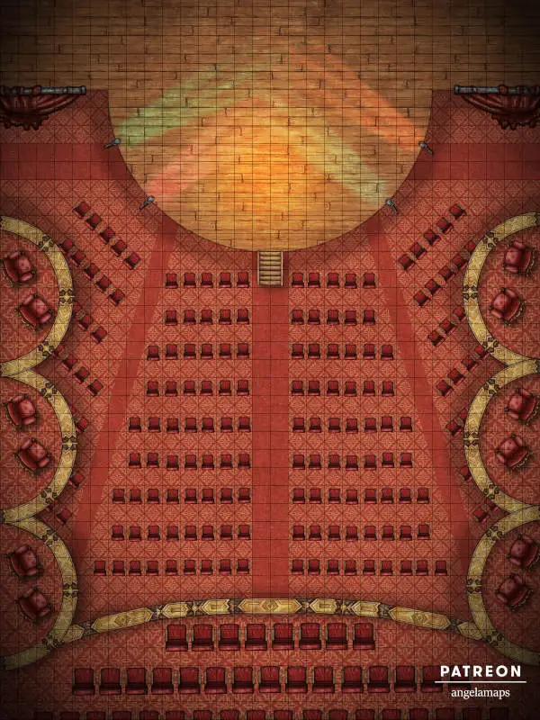
Plano del teatro
El as de picas
Comienzo: En cualquier puerto si han cometido actos de piratería o han sido considerados piratas.
Un viejo ciego se acerca a los heroes y les entrega una carta de la baraja, el as de picas.
Han
sido marcados como traidores o chivatos. Deberán averiguar quien y por qué les han sentenciado
a una muerte casi segura a mano de otros piratas.
Una figura bamboleante en el abrevadero preferido de tu mesa. Parece un viejo ciego que ya han visto antes
mendigando por el puerto. Empieza a farfullar los nombres de los PJs cada vez más alto hasta que alguno responda.
Entonces se gira hacia la su mesa y cuando llega deja algo sobre la mesa, un naipe bocabajo. Al girarlo pueden
ver que es un as de picas, la marca del traidor, firmado con un nombre Bartholomew Roberts.
El mendigo ciego hace sonar las monedas dentro del pocillo metálico que usa para pedir esperando una propina.
La gente empieza a interesarse por el ciego y cuchichea entre ellos. En menos de una semana todo el Caribe sabrán
de que hay un traidor entre los piratas.
Recibir el as de picas supone un -1 a todas las tiradas sociales con piratas. Muchas personas
relacionadas con la piratería se negaran a hacer tratos con los que tengan el as de picas, eso supone comprar
botín
y vender provisiones. Mejor no fondees en puertos piratas porque puede que termines cubierto de alquitrán y plumas
como mínimo.
Si le preguntan sobre quien le ha encargado entregarles el naipe, solo podrá decir que tenía un tono de voz
masculino y jugaría que con acento inglés, pero no sabe nada más.
El as de picas es la marca del traidor a sus hermanos piratas y solo un pirata lo usaría como advertencia.
Solamente pueden hacer dos cosas: averiguar porque Bartholomew Roberts les considera unos traidores
y limpiar u nombre o reparar la afrenta o batirse en duelo con el capitán Roberts y su tripulación.
El único problema es que Roberts murió en combate hace unos meses en el cabo Lopez en Golfo de Guinea.
¿Qué esta pasando?
Tu mesa está empezando a despuntar y a crear problemas importantes a la RCPC y está contraatacando con una campaña
de
desprestigio muy sencilla. Han pagado a un pobre ciego para que entregue el as de picas en nombre de un pirata
famoso
y muerto. Saben que en poco tiempo esto les traerá problemas y hará que sus aliados estén recelosos con ellos.
Además
no podrán atracar en puertos piratas porque seguramente tendrán problemas.
Mientras están limpiando su nombre no le causarán problemas a la RCPC y Además, les deja más vulnerables ante su
flota.
Es un plan muy sencillo y muy eficaz que ya han usado antes y les ha funcionado muy bien.
Formas de limpiar su nombre
Hay muchas formas de limpiar su nombre. Si consiguen demostrar que todo es falso delante de otro pirata, la
noticia
correrá por los puertos del Caribe devolviéndoles su buena (o mala) reputación. Veamos algunas opciones:
Caligrafía forense: Si consiguen un documento escrito por Roberts podrán demostrar que la nota esa es
falsa. En la La Taberna del Alción en Santo Domingo, Bartolo y Antonia puede que tengas algo escrito por
Roberts.
Cuenta conmigo: Un importante pirata podría darles su voto de confianza. Esto supondría deberle un
favor
que antes o después querrá cobrar. Podrían recurrir a Mary Read, pero seguro que les lia en alguna aventura loca
de las suyas.
El cuarto poder: Conseguir que la VLH haga un reportaje desmintiendo las acusaciones de traición a la
hermandad pirata puede funcionar. Los pocos piratas que saben leer tienen mucha confianza en los reportajes
de la VLH.
Magia: La magia, per se, no les exculpará pero les dará una idea de quien les ha tendido la trampa.
Si tiran del hilo podrán llegar hasta la RCPC y conseguir algún tipo de prueba de que todo es falso.
Cuando se infiltren en las oficinas de la RCPC igual encuentran pruebas de todo este complot.
Grandes hazañas: Pueden cambiar su mala reputación y contrarrestarla con algún acto grande,
especial y único. Las opciones irán desde montar un plan maestro de saqueo que traiga muchas riquezas
a un montón de tripulaciones piratas hasta montar la fiesta (por no decir orgía romana) más sonada
de la historia de isla de la Tortuga.
Las soluciones ingeniosas y espectaculares deberían ser premiadas con unos buenos cuantos benis.
Se buscan modelos
Comienzo: Nueva Providencia (Bahamas)
Un peculiar pintor busca modelos para sus cuadros, el problema es que aparecer
en sus cuadros puede ser muy bueno o una auténtica pesadilla.
Con este titular empieza una anuncio en la VLH. Pagado por Adolfé, une artista local, es un anuncio
para conseguir modelos para sus cuadros. 200 doblones por 2 sesiones de modelaje. Cada sesión dura
una tarde o una mañana. Es dinero fácil para los héroes, pero lo que no saben es que el arte de
Adolfé es bastante especial, ya que los modelos sufren las cosas se ven en los cuadros
en los que aparecen.
Adolfé es une serpigente que vive disfrazado entre los humanos trabajando en su arte. Lo que desconoce
es que por sus venas corre sangre de grandes señores de Mu y posee un gran poder mágico que se materializa
cuando está en pleno frenesí creativo. Ese poder, que Adolfé ignora totalmente, se canaliza en hacer real lo que
dibuja en sus cuadros y es por ello que sus modelos sufren o disfrutan de como se les pinta.
Si Adolfé te pinta rodeado de lujo y dinero, seguro que tienes algún golpe de suerte que te trae dinero.
Si te dibuja débil y anciano puede que tengas algún tipo de achaque extraño. La materialización de su poder es
bastante sutil a no ser que el cuadro sea muy explicito en cuyo caso puede hacerse totalmente realidad.
Puedes rolear el tema del cuadro con preguntas indiscretas de Adolfé o tirar al azar en la siguiente tabla:
Tabla de Temas de cuadros
1d6
Tema
Descripción
1
Apareces rodeado de riquezas, ropas lujosas y muchas joyas.
De alguna manera obtienes 1d8x100 doblones de oro. Puede ser una
herencia sorpresa, una buena mano de cartas, ...
2
Estas al timón de un barco con el pelo al viento, un gran abrigo con galones de
capitán o superior y con una pose imponente
Recibirás algún tipo de ascenso. Puede ser dentro de tu orden, tu barco o de la empresa para la que
trabajes.
3
Pareces algún tipo de deidad griega con ropajes clásicos rodeado de alegres seres
mitológicos bailando, cantando y tocando música, ánforas de vino y ricos manjares.
De alguna manera se monta alrededor tuyo una fiesta salvaje que dura varios días, desde
festejos populares hasta un baile en la casa del gobernador o una extraña bacanal de sectarios.
4
Apareces en el espacio montando en un unicornio/pegaso de un blanco inmaculado que deja
estelas multicolor en su camino.
De alguna manera vas a tener algún viaje psicodélico, puede ser una cohoba, alguna droga
alienígena o algún ritual vudú en que entres en trance debido al alcohol y la música. La cuestión es
que entrarás en contacto con una deidad que tendrá que contestarte a una única pregunta.
5
Estas rodeado de oscuridad. En las sombras puedes ver figuras de seres extraños
acechándote con relucientes ojos rojos.
Aparecerá un monstruo de los Mitos al azar para acabar con tu vida.
6
Sales sentado en un sillón con aspecto demacrado y solo con una nota que se está
cayendo de tu mano.
Recibirás una muy mala noticia. Alguna muerte de un familiar o amigo, quiebra de
algún negocio importante o en general algo muy malo para tí.
La verdad es que no se sabe muy bien como funcionan los poderes ocultos de Adolfé. Puede que sean proféticos
y que pinte lo que va a pasar o realmente toda su esencia mágica haga que ocurra lo que pinta. Pero desde luego,
habrá pequeños detalles del cuadro que se cumplirán completamente, por ejemplo, si recibe
riquezas la bolsa donde le entregan el dinero es igual que las del cuadro o alguien se parece increíblemente
a un personaje de su cuadro. Todo esto puede llevar a pensar que son más de carácter precognitivos.
Puede que tu mesa sola se de cuenta de que lo que aparece en el cuadro se hace realidad. Si no, cada
vez que se cumpla una profecía después del primer cuadro podrán hacer una tirada de Astucia
con un +1 por cada nuevo cuadro cumplido (1º cuadro sin tirada, 2º cuadro AST, 3º cuadro AST+1, ...).
Seguramente estarán lejos de las Bahamas cuando se den cuenta de todo esto. Puede que vaya directamente
o esperen a un momento mejor. Sea como sea al volver a Bahamas Adolfé estará encarcelade en la cárcel
local de Nasáu acusado de brujería. Si ves que no tienen prisa en volver a Bahamas puede que les lleguen rumores
de que Adolfé se enfrenta a un juicio por brujería o puede que lo lean en el VLH.
Los paletos locales han empezado a darse cuenta de lo que pasa con los cuadros y temen los poderes de
Adolfé. Es por ello que está encerrade en la cárcel local con protecciones de agua bendita y crucifijos
(cosas que creen que funcionan como protección que no tienen ningún poder real).
Los guardias no han sido muy bruscos, ya que temen sus poderes mágicos, pero esto no durará mucho. Les dejarán
hablar
sin problema con Adolfé pero siempre vigilados por algún guardia.
Adolfé no entiende nada, elle solo quiere llevarse bien con todo el mundo y pintar sus cuadros. No ha
hecho mal a nadie conscientemente y no sabe como controlar sus poderes, son cosas que pasan sin más.
Está nerviose y asustade y su disfraz falla a veces. Así que durante la entrevista podrán hacer tiradas
de Notar contra su hechizo de disfraz para detectar que es une serpigente. Si tratan de tranquilizar
a Adolfé y se muestran amistosos incluso podría confesarles su verdadera naturaleza. Si le presionan
puede que salga parte del Adolfé despertado y agresivo durante unos turnos desplegando toda su rabia.
Con toda la información recogida, tu mesa puede decidir si ayuda a Adolfé a le abandona a su suerte.
Sugerencia de beni: Si tu grupo puede ver más allá de la piel escamosa de Adolfé y
que a pesar de ser serpigente es una buena persona que solo quiere vivir tranquilamente en su estudio
pintando sus oleos, recompensales con benis. Los van a necesitar en el juicio y en lo que vendrá
después.
El juicio de Adolfé
Nadie quiere representar a Adolfé, así que si saben leer y escribir podrán presentarse como abogados
defensores. Ganar el juicio es muy complicado, ya que hay bastantes testigos que declararán que
los cuadros se han hecho realidad y por tanto es un brujo. La mayoría del jurado quiere que
sea culpable y los que no tienen miedo de llevar la contraria. Déjales rolear un careo con el fiscal
y el alegato final y si lo hace muy muy bien puede que lo liberen.
Si pierde el juicio, cuando reciba el veredicto de culpabilidad y la sentencia de morir quemado, la ira
le embargará perdiendo el control y pudiéndose hacer una tirada de Notar para detectar el disfraz de humano.
Si el público descubre la realidad pasarán directamente a quemarlo sin tenerle unos días en prisión.
Si ganan el juicio Adolfé les pedirá unirse a su tripulación por lo menos hasta que encuentre otro
puerto en que no le conozcan y pueda empezar de nuevo.
Si todo falla, huye
Si el juicio va mal, todavía pueden intentar ayudar a Adolfé a fugarse de la cárcel. La celda de Adolfé
se encuentra en los juzgados. Tiene una zona con varias celdas. A parte del juzgado hay habitaciones para
los guardas, salas donde se hacen gestiones burocráticas y donde los abogados se reúnen con sus defendidos.
Las celdas son solos barrotes con una puerta con cerradura contra paredes sin ventanas. Los guardas ven
en todo momento a los presos así que su capacidad de hacer algún tipo de truco son escasas. La guardia
en las celdas es de dos guardias por cada 8 horas, y de otros 3 guardias moviéndose por el juzgado o
controlando la entrada. De día puede haber más gente entre locales o miembros de las fuerzas del orden
que están de visita o haciendo gestiones. Hay otros 2 reclusos en la otra celda por robo y otro el
borracho local durmiendo la mona.
Déjales a su libre albedrío a la hora de ejecutar su plan de fuga. Pero ten en cuenta que si van a
hablar con Adolfé, los guardas todo lo que llevan concienzudamente y estarán con la oreja puesta
con lo que hablen. también han de saber qu tienen 3 días y 3 noches para ejecutar su plan. Al 4º
día a la mañana será ejecutado a no ser que haya alguna catástrofe.
A fuego lento
Tanto si tu gente abandona a Adolfé a suerte como si no triunfan en ninguna de las
situaciones anteriores, Adolfé acaba atado a un poste rodeado de leña seca en la plaza principal
de Nasáu. El juez leerá la sentencia con una antorcha en la mano y cuando termine penderá la pirata
entre aplausos del público.
Creo que es especialmente interesante ir tirando el daño de fuego para añadirle dramatismo
a la escena y ver las reacciones de tus jugadores y sus intentos por hacer algo. Óbvialo si no
crees que sea bueno para tu mesa. Por cada herida por fuego que reciba su hechizo de disfraz se
irá debilitando obteniendo todos los presentes un +1 a su tirada Notar para darse cuenta de la ilusión.
Cuando Adolfé pierda toda sus heridas caerá inconsciente y acto seguido aparecerá Adolfé despertado
rompiendo las cuerdas, empezando a volar y haciendo pagar con sus vidas a todos los malnacidos
que quisieron matarle. La plaza es un caos y la gente huye despavorida. Solo quedan unos pocos
guardas locales (5).
En este momento hay 3 opciones muy claras:
Acabar con Adolfé. Al final su parte serpigente malvada ha salido a la luz
y es un peligro que deben eliminar.
Dejar a Adolfé inconsciente y escapar con elle. Solo tendrán que librarse de los guardias antes
de que lo haga Adolfé y luego incapacitar a Adolfé para huir con elle. La opción de tratar de calmarle
es extremadamente difícil, ya que su nivel de rabia está a niveles.
Unirse a su destrucción. Esos malditos intolerantes no merecen vivir.
Deja que ellos decidan y juégalo en consecuencia. Si consiguen salir todos vivos de la ciudad, Adolfé volverá
a su ser normal y huirá con ellos en busca de un nuevo sitio tranquilo donde vivir.
Recompensa extra de cordura (+1): Si consiguen que Adolfé salga vivo y que haya las
mínimas
bajas deberías recompensarles con un punto de cordura. Si fallan en salvarle, puedes recompensarles también por
hacer todo lo imposible por protegerle, cuidarle y hacerle saber antes de morir que le importaba a alguien y
que su vida era digna de vivirla. Si deciden dejarle a su suerte, es solo un consejo, igual deberías dejar
de jugar con tu mesa actual.
Despertar a Adolfé
Si consiguen salvar a Adolfé, es posible despertar todo su poder y convertirlo en une poderose aliade.
Pero no será fácil, es una persona tranquila que solo quiere vivir su vida y toda esa violencia a
la que tendrá que enfrentarse le repugna.
NOTA: este relato salvaje se empezó a escribir en serio durante el Día del Orgullo de 2023 con un
claro
objetivo de dar mi apoyo al colectivo LGTBI+ que juega a rol. Espero que os guste a todes y si creéis que he
cometido algún error por pequeño que sea estaré encantado de subsanarlo. También estoy abierto a todo tipo
de sugerencia o mejora.
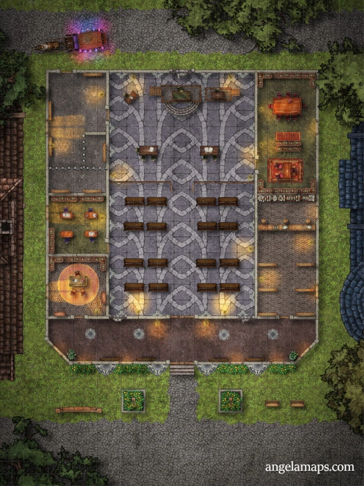
Juzgados de Nueva Providencia
Cazadores de huesos
Comienzo: San Juan de Puerto Rico
Ha corrido la noticia entre los aldeanos de los pueblos cercanos a San Juan que hay un
norteamericano que compra
huesos de animales antiguos enterrados, cuanto más grande y raro es el animal más paga.
George Jansen de la recién creada universidad de Miskatonic, ha venido desde los Estados Unidos en busca
de fósiles de animales prehistóricos. Es profesor de Historia Natural y esta buscando el nexo de unión entre
las especies actuales y especies extintas. Está pagando a los aldeanos de los pueblos colindantes a San Juan
por
huesos que cree que pudieron pertenecer a elefantes, osos y felinos gigantes,
rinocerontes, ... especies todas ellas desconocidas en estas latitudes.
Con el estudio de estos esqueletos trata de cubrir los huecos que quedan vacíos en su nuevo libro de
historia natural. Este libro cree que
será una revolución en la forma en la que vemos como fue la vida en la tierra hace miles o millones de años.
Ha podido dar explicación incluso a esos extraños huesos que parecen pertenecer a unos gigantescos reptiles
y que
podrían explicar las leyendas de dragones por todo el mundo. Para lo que no está preparado es para los
restos
que le ha traído un indígena taíno llamado Naigu del interior de la selva. Este montón de huesos no se
parece en
nada a
cualquier conjunto de huesos antiguo o moderno que haya estudiado.
Lleva obsesionado con él semanas, sin casi comer ni dormir, simplemente tratando de darle forma y conseguir
una
explicación. Ha conseguido montar un exoesqueleto de una especie de crustáceo. una especie de concha cónica
y de
su parte más estrecha deben de salir algún de tentáculos que acaban dos en tenazas de cangrejo, otro en una
especie
de cráneo y otro hacia una especie de sistema de tubos de resonancia.
Georges está ante el esqueleto de un un miembro de la gran raza de yith que fue depositado en una tumba en
un
asentamiento
yithanio hace miles de años.
Iniciando la aventura
Tanto si están de pasada por San Juan y han oído los rumores del profesor estadounidense en las tabernas,
como si lo leen en la VLH pueden acercarse a hablar con George Jansen en el del puerto que está
usando
como su laboratorio de campaña. Puede que hayan encontrado fósiles enterrados en la roca o que hayan
encontrado
en el botín de algún enemigo y quieran vendérselos por un buen pellizco.
Jansen les recibirá cordialmente en su almacén lleno de resto de huesos organizados en el suelo formando
siluetas de fantásticos animales. Si muestran interés por los huesos Jansen estará encantado de mostrarles
su
colección y
explicarles hasta el aburrimiento los mínimos detalles de sus huesos y de sus teorías.
Mientras les explica sus estudios o negocia la compra de los huesos que traigan, los estudiará un poco. Si
decide que
pueden ser unos buenos exploradores y luchadores les ofrecerá un trabajo de escolta. Quiere adentrarse en la
selva hasta
la localización de donde encontró el exoesqueleto que le dió Naigu.
El viaje por la selva puede durar media semana ida y medía semana de vuelta y espera estar como mucho una
semana estudiando el
yacimiento arqueológico de donde sacaron los restos. Les ofrecerá 200 doblones por el trabajo a cada miembro
y
lo que para él
es lo más importante que es aparecer nombrado como ayudantes en los estudios y libros que publique sobre el
esqueleto que
ha encontrado.
Sugerencia de beni: Jansen como europeo blanco se está atribuyendo haber encontrado
el
exoesqueleto, lo
que es mentira, ya que solo lo compró. Si consiguen que reconozca que no lo encontró y que meta a Nigua
como un
ayudante de la investigación y descubridor de los restos óseos en las anotaciones
del estudio dales un beni a tus héroes.
El esqueleto
Los restos óseos está metido en una vitrina sobre una estructura de filamentos de hierro para sostenerlo de
pie.
Los personajes podrán estudiarlo y si ya han tenido contacto con la gran raza lo reconocerán al momento.
Será decisión suya contarle a Jansen lo que saben o no. Si se lo dicen Jansen seguirá insistiendo en hacer
el viaje, ya que esto podría ser mucho mas grande que sus investigaciones actuales.
Si no se han encontrado nunca con yithanios con una tirada de Ciencias podrán extrapolar que podría ser
algún tipo de crustáceo con tentáculos. También que son muy antiguos incluso de antes de la
llegada de los europeos al nuevo mundo, puede que incluso de las tribus caribe y taínas.
Pero lo que les llamará la atención serán una marcas en el cono inferior. Son redondas, cuadradas,
hexagonales,
...
demasiado perfectas para ser naturales. Algún héroe podría reconocerlas como hechas a propósito para poner
joyas
o adornos.
Esto supondría que no eran meros animales si no puede que fueran inteligentes.
Con una tirada de Medicina podrán ver que murió porque recibió un gran golpe en lo podría denominarse
su cráneo y parece que fue en una lucha porque tiene señales de lucha en sus pinzas.
El viaje
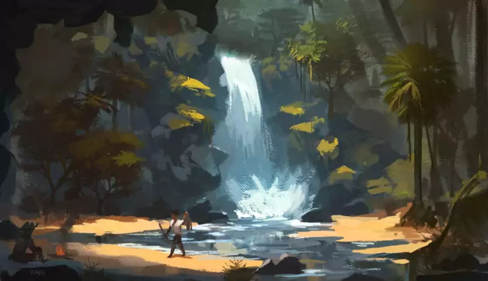
Tras un día para hacer los preparativos del viaje como comprar víveres y equipo de campaña, la expedición
saldrá
de San Juan para adentrarse en la jungla.
El viaje de ida (como el de vuelta) trascurrirá sin problema pero aprovecha a hacer una tirada en la tabla
de
encuentros en la jungla para darle algo de sabor.
Deberán pasar un par de tiradas de Supervivencias para seguir las indicaciones de Nigua y llegar a las
ruinas
del asentamiento
yithanio. Nigua se ha negado a volver a ese lugar maldito, solo lo hizo la primera vez por desesperación y
pobreza,
trataba económicamente de ayudar a su familia, pero ni loco volvería a hacerlo.
Si fallan las dos tiradas, se habrán perdido totalmente y tendrán que volver a San Juan a por más víveres y
volver a intentarlo
a no ser que tengan forma de conseguir víveres y agua potable. Si fallan solo una tirada, habrán tardado más de
lo
que
pensaban y tendrán solo media semana en vez de una entera para estudiar el yacimiento arqueológico.
El yacimiento
En mitad de la selva, siguiendo las indicaciones de Nigua, hay una cascada y detrás de ella una cueva con
una gran masa rocosa (del tamaño de una furgoneta) de piedra blanca en el centro. En la parte
superior hay excavado un hueco rectangular del tamaño del esqueleto. Está lleno de tierra y se ve que Nigua escavo para
sacar el exoesqueleto. Si sacan toda la tierra que falta verán que las pared está muy pulida y con un corte perfecto,
seguramente hecho con herramientas. Desde luego no es un capricho de la naturaleza.
Alguien, desde luego, deposito el cadáver del yithiano hace siglos como forma de enterramiento. Una
tirada de Ciencias detectará entre la tierra sacada restos antiguos de algún de material transparente. Por la cantidad
y la forma puede que fuera la tapa del sarcófago. Es imposible reconocer el material, pero no parece natural.
Si recuperan los trozos y los limpian tendrán un puzzle de unas 40 piezas. Algunos de los trozos parece tener algo grabado.
Si consiguen montarlo podrán ver que hay una inscripción en que pone "Aquí yace Onofre de las Torres. 12 de junio de 1691 - ∞" con un extraño
tipo de letra (TPC d4).
Una tirada de Conocimientos generales permitirá saber que parece un apellido genérico para huérfanos y el 12 de junio es San Onofre.
Así que muy probablemente sea un huérfano de San Juan, del hospicio de las Torres.
El resto del tiempo que pasen excavando la zona no encontrarán nada más. Una tirada de Reparar y sabiendo que los yithianos
tienen armas de rayos podría ser que el sarcófago se hizo a partir de un gran bloque de piedra tallado con un arma lanzarrayos.
De ahí la gran precisión de los cortes de la piedra.
Jansen está totalmente decepcionado con el yacimiento, pero el nombre le tiene intrigado. Así que pagará a tu mesa unos 500
doblones si obtienen alguna pista. Mientras el tiene que seguir con sus estudios y sus teorías y necesita tiempo para escribir
su teoría evolutiva.
El regreso será rápido sin ningún tipo de problemas a no ser que tú quieras darle algo de color.
Qué paso hace miles de años
Hace unos 3 millones de años un pequeño asentamiento de Yithianos tuvo que escapar de un ataque de pólipos volantes.
Uno de ellos fue herido por los pólipos en la huida y murió al de unos días. El problema es que dentro del cuerpo
del molusco no estaba el yithiano sino un ayudante de un taller de la RCPC, Onofre, con quien había intercambiado la mente.
Asi pues su compañero yithiano se quedo atrapado en el futuro en el cuerpo de un humano. Conociendo las costumbres de
los humanos le hicieron una especie de ataúd y le dieron sepultura. A los pocos días los supervivientes del ataque
sufrieron una emboscada a manos de los pólipos y no quedo nadie para intentar rescatar a Balua'k, que es como se
llama el yithiano que intercambio su mente Onofre.
Ante la nueva situación, Balua'k se adapto rápidamente a la vida humana y paso de ser un simple peón de taller
trabajando con azufre y mercurio a ser un reputado científico para la RCPC. Si bien tiene comportamiento
extraños debido a la brecha cultural se han tomado como excentricidades de genio.
Balua'k ha estado detrás de algunos de los descubrimientos más importantes que ha tenido el tentáculo
científico de la RCPC. No le gusta el uso que se le está dando a sus descubrimientos así que ahora que
tiene recursos está tratando de desarrollar que le permita a su mente a volver a su tiempo.
Buscando a Onofre
Si preguntan por Onofre en el hospicio de San Juan confirmaran su nombre y su fecha de nacimiento. Por lo que recuerdan
los monjes del hospicio era muy buen estudiante y consiguió trabajo de ayudante para un noble diletante que se dedicaba
a "la cosa de la ciencia".
La búsqueda de Onofre puede llevar meses, ya que solo tienen un nombre, que ronda los 30 y que debe estar vivo, actualmente,
en algún lugar del Caribe. Pueden preguntar en bares y tabernas y en ayuntamientos y parroquias sin ningún éxito.
Cuando quieras puedes darles una pista. Alguien recordará su nombre y les dirá que trabaja para RCPC en una especie
de taller a las afueras de la ciudad.
Otra opción es que su nombre aparezca en alguna incursión a una instalación de la RCPC. Puede que oigan a hablar a
dos personas de Onofre o encuentren alguna carta o documento firmado por él. Vigilando el taller podrán finalmente
encontrar a Onofre.
El viajero en el tiempo
Onofre/Balua'k es un científico yithanio y solo tiene su trabajo. Solo va del laboratorio de RCPC a la casa
señorial que le ha puesto la RCPC y vuelta. Si lo entrevistan en su casa, sus sirvientes, espías de la RCPC, darán
aviso de la extraña visita. No les interesa perder un activo tan importante y lo tienen controlado. Si eso
ocurre mandará una banda de matones a asustarlos (3 piratas por cada persona de tu mesa) o más.
Es mejor pillarle en el paseo de camino al o del trabajo y hablar mientras andáis. Se mostrará cordial y hablador.
Si le cuentan la verdad de lo que saben, Balua'k confesará toda su historia y si le parecen de fiar les
hablará de su proyecto de viaje en el tiempo.
Conseguir que Balua'k vuelva a su tiempo es un golpe muy grande a la RCPC. Así que ayudarle a construir
la máquina puede
ser muy bueno para la causa. Otra opción es darle directamente el paseo, pero recuérdales que son personas
heroicas y buenas y esas personas no matan a científicos extraterrestres.
Por otro lado, cualquier tipo de interacción violenta hará que no se fie y confiese que realmente es un yithiano
perdido en el tiempo, pero callará su proyecto de volver a su tiempo.
Si deciden acabar con Balua'k plantará batalla, pero no es combatiente, aunque puedes hacer que aparezcan
matones de la RCPC que le vigilan.
Conseguidores
Si deciden ayudarle con su máquina les explicará que necesita para completarla. Balua'k necesita 3
materiales para su ingenio temporal:
Plancha de cristal mercurizado de 3x3 metros: Los únicos productores de cristal tan grande en el
Caribe están en La Habana. Por 500 doblones podrán hacerte la lamina de cristal, el problema será
transportarlo de vuelta. Una tormenta, un ataque de profundos o una batalla naval podrían dañarlo
irreversiblemente. Tampoco será fácil llevarlo al lugar donde lo necesite Balua'k.
Cristales azules de laminar: Esta piedra semipreciosa de color azul se encuentra solo en la
cordillera de Barohuco en el sur de Santo Domingo. Deberán adentrarse en la selva hasta llegar a las
montañas y allí buscar un yacimiento. Necesitarán equipo de excavación y algo para los 500 kilos que
les ha pedido. Balua'k pide tanto mineral porque debe refinarlo.
Lentes de precisión: Necesitarán un juego de lentes ópticas de precisión para centrar la luz solar en
un punto adecuado. Podrían costar unos 300 doblones y deberán buscarlas en alguna gran ciudad.
Una vez encontrados los 3 materiales, deberán encontrar un piso franco donde pueda esconder a Balua'k mientras
termina de montar su máquina. Deberán "secuestrarlo" y llevarlo a su escondite. Deberán ocultarlo y
defenderlo. Es a tu elección que la RCPC encuentre el piso franco y trate de asaltarlo, tiene atu disposición a
todos los matones barriobajeros que la RCPC pueda pagar y eso son muchos matones. Deberán aguantar una semana
escondidos. Pasada la semana, Balua'k debería poder hacer funcionar su motor temporal.
El fallo temporal
El ingenio temporal es una especie de arco circular de madera y metal. El borde interior esta lleno cristales
azules de laimar y en la parte superior en un soporte metálico están colocadas las lentes concentrando la
luz solar y luego difuminándola por el cristal mercurizado.
Al abrir una claraboya, la luz del mediodía incide en las lentes y se difumina sobre el cristal hasta volverse
transparente. El laminar empezará a brillar en tonos azulados y el cristal parecerá desaparecer. Lo increíble es que al
otro largo del círculo no se ven las paredes de la habitación sino una selva prehistórica. Balua'k gritará Eureka
emocionado (será la primera vez que le vean así). Balua'k se despedirá y dará un paquete a una persona de tu mesa.
Cuando cruza el umbral se gira y sonríe y de repente todo empieza sobrecalentarse, los cristales de laminar se funden
y en el cristal aparecen fisuras. Se empiezan a ver imágenes de cosas increíbles de diferentes épocas y dimensiones.
Tira en la Tabla de TPC para libros por cada persona de tu mesa. Esa es la TPC que deberá pasar cada uno con
un d4 habrá visto gules devorando un cadáver y con un d12 igual a visto a los dioses danzantes y flautistas
alrededor de Azathoth. Si no pasan la tirada, descríbeles lo que ven exactamente cada uno de los que han
fallado porque no podrán olvidarlo jamas.
Y de repente todo se para, el cristal se raja completamente y la luz deja de incidir en las lentes. El portal
del tiempo es inútil ahora, pero podría servirle a algún científico para hacer una nueva máquina.
Sabuesos
Parece que todo ha salido bien, pero lo que no saben es que 3 Sabuesos de Tíndalos están acercándose a través
del tiempo. Los sabuesos de Tíndalos han rastreado el ingenio de Balua'k y sus energías temporales y no van a
permitir que se repita. Tienen intención de matar a todos los testigos y destruir el invento de Balua'k.
La batalla será a muerte, los sabuesos ni se rinden ni huyen, solo puede quedar un bando vivo. Es importante
que sepan que esto volverá a pasar si activan el ingenio.
Recompensas
Si ayudan a Balua'k y vuelve a su tiempo, este les dará sus libros de notas. Tienen fórmulas,
esquemas, teorías, ... que ha usado en sus proyectos para la RCPC. No pueden considerarse
libros de los Mitos, pero si una persona con Ciencias d8 o más se estudia los cuadernos de notas durante
una semana, obtendrá un +2 a las tiradas de Ciencias o Reparar cuando traten de sabotear algún artilugio
científico de la RCPC. También da el bono para saber sus fallos y como aprovecharlos.
Personajes como Ifá, genios de la mecánica, pueden sacarle mucho provecho a este libro y
en vez de un bono de +2 sería de +4.
Por último, no creo que quieran decirle la verdad a Jansen así que si quieren los 500 doblones
deberán inventarse una buena historia.
El tesoro de la mansión Corbitt
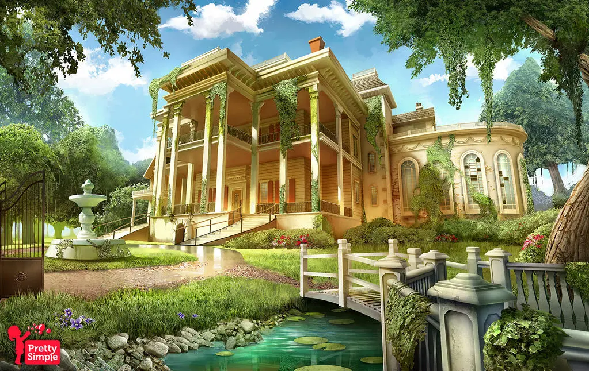
Comienzo: Port Royal
Anya Corbitt está desesperada, necesita vender o volver a alquilar la mansión familiar después
de que los actuales inquilinos hayan huidos despavoridos de ella. Necesitará que investigues la mansión y
busques
una solución a todos los sucesos extraños que están asustando a los posibles inquilinos o compradores.
Anya Corbitt ha tenido que volver desde Boston para solucionar un problema con los actuales inquilinos
de la casa familiar en Port Royal, la mansión Corbitt. Los inquilinos han huido de la casa diciendo
que hay una presencia maligna en la casa que ha intentado matarlos.
El padre de la familia ha sufrido un extraño y grave accidente y los niños y el servicio dicen que las
paredes susurran maldiciones, que se podían oir por la noches ruidos inhumanos y notarse presencias
malignas.
Anya no puede volver a su tranquilo Boston hasta que no se deshaga de la casa vendiéndola o encuentre nuevos
inquilinos. Necesita el dinero que le renta la mansión para vivir desahogadamente
en los Estados Unidos. Es por ello que ofrece 200 doblones al que pase una noche en la casa y la exorcice.
Anya está alojada en una modesta posada de Port Royal, ya que ella tampoco se atreve a
ocupar
la casa familiar. La historias de fantasmas y apariciones han rondado la mansión Corbitt
desde su construcción. Ella ha visto cosas en esa casa que con los años ha ido olvidando, pero
que su subconsciente de vez en cuando le recuerda en forma de pesadillas nocturnas.
La mansión Corbitt es la típica casa señorial de dos pisos con un poco de terreno alrededor y un muro que aleja
las miradas de los curiosos. Estaba situada en la parte más rica de la ciudad que ahora mismo está en decadencia.
Fue construida por ricos comerciantes españoles y todavía hay partes de la arquitectura típicamente
española. Fue una de las pocas casa del barrio que sobrevivió al terremoto de 1692 y al
ataque de los piratas de 1703.
Historia de la familia Corbitt
Esto es lo que Anya puede contarles de la historia de su familia y la mansión. Los Corbitt son
una familia burguesa de origen irlandés que abandono la isla esmeralda para hacer fortuna en el nuevo
mundo.
Cuando llegaron a Jamaica se dedicaron a plantaciones de caña de azúcar y cuando amasaron una fortuna
compraron la mansión Domingo y le cambiaron el nombre por Corbitt.
Cuando el huraño Walter Corbitt heredo la casa todo empezó a torcerse. Se enemistó con los vecinos por su
excéntricos comportamientos, incluso hubo acusaciones de brujería. Cuando Walter murió, su sobrino, el padre
de Anya,
intento alquilar o vender la casa pero no lo consiguió y como su economía era buena no se preocupó. Dejo la casa
medio abandonada, ya que se había trasladado a la prospera nueva capital de Jamaica, Kingston.
Cuando Anya heredo la casa hace año y medio intento volver a meterla en el mercado inmobiliario pero
todos los compradores o inquilinos han salido asustados diciendo que la casa estaba maldita y encantada.
Investigaciones previas
En el registro de la propiedad: Si visitan el registro de la propiedad (tirada de Investigar) el
grupo
podrá confirmar la historia de Anya. La mansión y sus tierras han sido propiedad de los Corbitt
desde que la compraron en 1655 cuando Jamaica paso a manos de los ingleses. No hay registros anteriores
, ya que los archivos españoles desaparecieron con el terremoto de 1692.
La hacienda Corbitt paso de generación en generación hasta Walter Corbitt que murió
en 1900 sin descendencia. La hacienda paso a su sobrino, el padre de Anya, y tras morir paso
a manos de Anya.
Lo más curioso es que el albacea testamentario de Walter Corbitt que se encargo de cumplir las
últimas voluntades de Walter es Michael Thomas el pastor de la cercana capilla de la Contemplación.
Preguntando a los vecinos: Los rumores que corren entre los vecinos son que la presencia maligna
que deambula por la casa es el fantasma de Walter Corbitt. Atestiguan que cuando la casa está
vacía se ven luces y se oyen ruidos. Los vecinos más viejos recordarán las peleas con el huraño de Walter
Corbitt y que solía frecuentar la infame capilla de la Contemplación.
Preguntando a las autoridades: La guardia de la ciudad conoce de sobra las historias de la
mansión Corbitt y ha llegado a obviar las denuncias de sus inquilinos. Si se dedican a repartir
dinero o ron para soltar la lengua a los guardas, un viejo guarda borrachín les contará la historia
de la masacre de la Capilla de la
Contemplación.
La masacre de la Capilla de la Contemplación
Todo indica que la siguiente pista lleva a la Capilla de la Contemplación. En 1703, cuando Catania
Nick arraso la ciudad, ocurrió un suceso conocido como la Masacre de la Capilla
de la Contemplación. Un grupo de piratas que actuaban de forma independiente (la hermandad del Sargazo),
aprovechando el caos reinante, encerró en la capilla a un grupo de personas que había apresado por toda la ciudad
y los quemo vivos. A priori ninguna de las víctimas tenía relación directa, pero algunos habían sido
acusados de brujería o habían estado investigados por unos escabrosos casos de secuestro y asesinato
de niños.
Al final de la calle hay una vieja capilla arrasada por el fuego (lo que no es tan raro en 1722
en Port Royal). Una tirada de Notar permitirá encontrar una entrada secreta en el suelo de la capilla
que lleva a una especie sótano. Necesitarán despejar la entrada, ya que esta lleno de cascotes y
restos quemados del techo. La trampilla del sótano está cerrada por dentro, así que alguien debido
intentar resguardarse allí.
En el sótano encontrarán dos esqueletos con túnicas religiosas que debieron morir por falta de
oxigeno durante el incendio, ya que no hay daños por fuego. Como el fuego no entro en la estancia
la mayoría de los objetos están intactos.
Si revisan el libro sagrado de las Capilla de la Contemplación que hay en un gran atril se darán
cuenta de que el libro es una versión edulcorada y aceptable del credo de la Orden del Gran Cthulhu.
Hay unos archivos con toda la actividad del culto, una parte oficial y otra no oficial. La oficial
registraba las cuentas del culto, los gastos, los ingresos, ... Puede hacer un listado de feligreses
con todos esos datos.
Revisando el resto de papeles verán que en realidad la Capilla de la Contemplación solo
era una tapadera legal de la Orden del Gran Cthulhu. Los miembros del culto estaban por
toda la ciudad y se dedicaban a sembrar el mal por ella.
Tenemos fichas de personajes importantes de Port Royal como capitanes piratas o
políticos importantes o ricos comerciantes. Hay registros de vigilancias del puerto
y correspondencia variada con la RCPC avisando de las actividades de los piratas de
Port Royal. Tenían orden de informar de todo a la RCPC para que pudieran
protegerse de estos piratas. Si lo guardan puedes darles algún bonus a tiradas para saber algo de
piratas y gentes de Port Royal.
Con una tirada de investigación verán que Walter Corbitt, según su deseo, fue enterrado en la casa.
Por cada avance puedes darles más detalles que les preparen para lo que verán en la mansión. Puedes
decirles que fue enterrado en el sótano, que se le enterró con objetos personales o realizando
algún tipo de ceremonia pagana.
Lo peor es un libro con diferentes rituales con sacrificios humanos. Parece que muchos de los
secuestros y asesinatos de los que se acuso a los miembros de la capilla son ciertos.
El libro sagrado de la Capilla de la Contemplación debe ser considerado un libro de los Mitos con las
siguientes características.
Título: El libro de la Contemplación
Autor: Michael Thomas
Idioma: Inglés
TPC: d4
Tamaño: Libro
Estado de conservación: Usado y leído
Hechizos: 2 hechizos a elegir
Tiempo de lectura: 1 semana
Los feligreses de la capilla
Si confeccionan la lista de parroquianos, avísales que sin buenos archivos oficiales puede llevarles
media semana revisar la lista de feligreses. Los archivos oficiales son un desastre, entre el maremoto,
el ataque de Catania Jack y la decadencia general de la ciudad. Si quieren investigar la lista
verán que todos murieron en la masacre, menos Victor MacDuffy que estaba fuera de Port Royal. Victor
es un mendigo borracho de origen escoces que deambula por el puerto gritando incoherencias y profecías del fin del mundo.
Es imposible dialogar con Victor, no hila 2 palabras coherentes seguidas. Si le ofrecen algo de alcohol,
tendrá un momento de claridad entre el síndrome de abstinencia y los delirios del alcohol en que podrán
hacer dos preguntas y las contestará con la verdad "in vino, veritas". Sé un poco críptico y vago en
sus respuestas.
Explorando la mansión Corbitt
La mansión esta rodeada por un pequeño jardín totalmente desatendido. Tiene 2 plantas y un
sótano. La primera planta tiene una entrada principal que da paso a una cocina, un comedor,
una biblioteca que se usa como sala de estar y las dependencias del servicio. A la segunda
planta se accede por una escalera de caracol desde la entrada de la primera planta. Tiene
un gran pasillo que da a 4 dormitorios y un baño. Dos de los dormitorios tienen su propio baño.
Michael Thomas enterró a Walter en una habitáculo secreto en el sótano siguiendo una serie de
instrucciones muy concretas. Walter ha trascendido a un plano superior inmortal convirtiéndose
parte de su esencia en parte de la casa.
Walter puede ejercer cierto control de la casa en forma de poltergeist en las diferentes
habitaciones de la casa. Normalmente, es muy sutil con los inquilinos, pero se está cansando
de eso y si detecta gente problemática les lanzará todo su arsenal, sobre todo si
emplean hechizos mágicos o si bajan al sótano donde reside su cuerpo.
Puede provocar ruidos y golpes en cualquier parte de la casa para atraer la gente a diferentes
partes de la casa. También puede hacer que las ratas de la casa se muevan a donde él quiera.
Como toque dramático puede hacer que las paredes exuden sangre formando símbolos y palabras.
Todo ello le consume 1 PP.
Primera planta
Entrada principal: No hay especial en esta gran estancia salvo la escalera que lleva
al piso superior.
Escaleras: Estas grandes escaleras dobles permiten subir al piso superior. Walter
puede controlar a voluntad los escalones para hacer que la gente se caiga por ellas. Alguien andando
tendrá que pasar una tirada de AGI con -2 o se hará 1d6+1 de daño. Si va corriendo tendrá que
pasar una tirada de AGI con -4 o se hará 2d6+2 de daño.
Cocina: La cocina tienen una fresquera, varios armarios y una cocina de leña. Aún
tiene algunos cacharros de los últimos inquilinos. En una esquina al lado de los fuegos hay
una trampilla que da acceso al sótano. También hay una puerta que va a las dependencias del servicio.
Comedor: Es la mayor estancia de la casa con una gran mesa de roble en el centro con 12 sillas.
la gran mesa tiene muchísimas marcas hechas con algo afilado. Walter ha usado la mesa para entrenar
sus habilidades de pelea con su daga mágica.
Biblioteca: Esta habitación tiene las paredes cubiertas de estanterías pero parece que los
libros han sido saqueados. Solo quedan algunos ejemplares enciclopédicos antiguos y viejos periódicos.
Una tirada de Investigar permitirá encontrar un viejo ejemplar de la VLH.
Dependencias del servicio: Son varias camas separadas por cortinas con una baúl al pie de cada cama
y un orinal debajo. Hay un pequeño lavabo en una esquina para asearse todos.
Segunda planta
Cuarto 1: Esta habitación puede ser que era para los adultos, una gran cama con doseles,
un tocador, mesitas, un gran armario y un divan.
Cuarto 2: Esta segundo dormitorio esta medio vacío. Solo hay una cama sin colchón y un
armario desvencijado. Era la habitación de Walter y su esencia maligna se nota allí mucho
más que en el resto de la casa. Es por ello que nadie quiere dormir aquí.
Cuarto 3: En este pequeño dormitorio solo hay un escritorio, una cama y un armario. Por
los juguetes que hay, parece que aquí dormía uno de los hijos de los últimos inquilinos.
Cuando entre alguien y empiece a registrar la habitación, la cama se elevará y se lanzará
con mucha fuerza. Si gana la iniciativa podrá ponerse a la defensiva. Atacar a la cama a no ser
que sea con algún hechizo de exorcismo o así no servirá de nada ya que no es posible destruirla en
un solo turno. La cama es muy grande y tapa todas las salidas, así que es imposible tratar de salir
de la habitación hasta de que ataque, tiene Pelear d10 y hace un d12+2 de daño.
Si la tirada de Pelear consigue un avance, Además, de hacer un d6 de daño extra
el objetivo deberá hacer una tirada enfrentada de Fue o sera lanzado por la ventana haciéndose
un daño de 2d6+2 (caída desde 8 metros de altura).
Cuarto 4: Este cuarto es parecido al anterior, pero aquí no pasará nada especial. Puedes
jugar con su paranoia haciéndoles tirar Notar sobre la cama a ver si se mueve. Si entran antes en esta
habitación que en el cuarto 3, puedes cambiarlo y que aquí se lance la cama.
Baño: Hay un inodoro con un orinal debajo, una bañera de bronce y un pequeño tocador con espejo. Hay ropa
de baño. Alguna de ella parece que ha sido usada para limpiar algo rojo, puede que sangre, y
luego tratado de limpiar.
Sótano
Despensa: Esta estancia está llena de armarios, estanterías y cajones. Puedes encontrar en
ellos comida caducada, herramientas, vajillas viejas, telas para trapos y algunos productos de limpieza.
Hay también una pequeña bodega casi vacía y un gran cajón lleno de sal para conservar comida. En una de
baldas hay una daga oxidada (no es óxido es en realidad sangre seca). La daga está encantada, Corbitt puede
moverla a voluntad para atacar, gastando 1 PP para hacerla actuar por 1 turno. Es muy difícil destruirla a
golpe de machete, ya que es muy difícil de impactar, y es de metal. Sería más fácil quemarla o algo
similar. Podrían intentar atraparla con las manos e inmovilizarla dentro de una caja o hacer que
se clave contra algo de madera.
Daga mágica
Pelear: d10 (1d8 + 1d4)
Paso: 8
Parada: 7
Dureza: 8
Tamaño: Diminuto (-6 a todas las tiradas de atacar).
Objeto: No se puede intentar hacer trucos o fintas a la daga
ni intimidar, ni dominar, ni hechizos mentales.
Carbonera: Una puerta da entrada a una carbonera casi vacía. La carbonera tiene una
trampilla en el techo que da detrás de la mansión para meter el carbón. Está cerrada con un grueso
candado del que no hay llave.
Habitáculo secreto: Tras una falsa pared de la carbonera (Notar a dificultad 8) hay un
pequeño habitáculo donde fue emparedado según su deseo Walter Corbitt. Hay una especie de altar
de piedra negra, seguramente basalto, sobre el que está el cuerpo incorrupto de Walter.
Walter Corbitt (Comodín)
Walter no está ni muerto ni vivo, está en un estado intermedio de muerte en vida mientras siga dentro
de la casa. En caso necesario puede animar su cuerpo. Cosa que hará si alguien se acerca demasiado.
Se puede matar su cuerpo pero volverá a regenerarse con el tiempo y a poseer la casa. La única
forma de acabar definitivamente con él es haciendo algún hechizo de exorcismo. También acabará con
él sacando su cuerpo de la casa y exponiéndole a la luz del sol.
Ventajas: Hechicería primigenia, Nuevos poderes, Puntos de poder
Capacidades especiales:
Hechizos: PP 20, Bendición de Yig, Mirada hipnótica, Círculo de invocación, Drenaje de
puntos de poder.
TPC: 1d4 (si se mueve)
Si alguien se queda solo en el cuarto 2 es perfecto para usar sus poderes de Marioneta y
controlarlo y hacerle atacar al resto. También puede invocar aliados, pero solo si ve muy
comprometida su supervivencia. La bendición de Yig se la lanza según entra alguien en la carbonera.
Si consiguen exorcizar a Walter la casa volverá a la normalidad. Anya les esperará en su
hotel para hacerles el pago por sus servicios. Está encantada de poder volver a Boston en breve.
Si acaban con el cuerpo pero no lo sin exorcizan, Walter volverá a regenerarse en un par de semana.
Seguramente matará a Anya, que se ha trasladado a la casa ahora que no hay fantasmas.
Puede que se entere de su escabrosa muerte por algún ejemplar de la VLH.
Si no hacen el trabajo y le mienten a Anya para cobrar la paga, Anya acabará muerta, ya que
irá a la casa para ahorrarse el hotel pensando que la casa está libre de espíritus
y la daga mágica la cortará el cuello. Puede ser interesante que se les acuse del crimen del
que en cierta medida son responsables.
Recompensa extra de cordura (+1): Si tu mesa recoge todos los archivos
de la Capilla, los estudia, los clasifica y los lleva a las autoridades, estos informarán
a los familiares de las víctimas de los sacrificios humanos. En muchos casos se podrán
recuperar los cadáveres de las víctimas y darles un entierro digno. Esto dará por fín un
respiro a las familias y debes considerar que esto debería ayudar a la cordura de tu mesa.
Si alguien quiere puede tratar de alquilar la mansión a Anya por 600 doblones mensuales. Pero
todos los costes de mantenimiento corren a cargo del inquilino, desde atender el jardín
hasta arreglar el tejado. Anya estará encantada de alquilárselo a tu mesa, de hecho,
no les cobrará los dos primeeros meses por el trabajo en vez de darles los 200 doblones
de recompensa.
Muerte súbita
Comienzo: En alguna comunidad taina o viajando por la jungla
Se va a celebrar un importante partido de batú entre dos comunidades enemigas para decidir la
propiedad
de unas tierras limítrofes. Uno de los equipos necesita jugadores para completar su equipo.
Tu mesa se encuentra un gran claro en la selva en la que hay dos grupos de taínos gritándose y desafiándose.
Pueden mantenerse en la espesura, lo más sensato y seguro, o salir al claro.
Si alguien habla taíno parece una disputa territorial entre dos clanes por la posesión de esas tierras. Si se
muestran respetuosos y no hacen movimientos violentos les dejarán tranquilos, les preocupan más sus oponentes.
Una tirada de Tácticas les dirá que uno de los grupos tiene las de perder, sus combatientes son menos y o son
muy jóvenes o muy viejos para pelear. De repente de entre ese grupo sale una persona mayor con pinta de cacique.
Exige que los dioses resuelvan este problema mediante un partido de batú. Los dioses hablarán a través
de un encuentro de batú entre las dos comunidades, favoreciendo en el partido a los legítimos dueños
de las tierras.
Del otro lado aparece un guerrero grande y musculoso que parece aceptar. Es el cacique Penda, que exige que antes
de la próxima luna llena
(1/2 semana) jugarán aquí el partido. Solo podrán jugar el partido los que están ahora en el claro. Sabe que los
suyos
son jugadores más competentes y no quiere sorpresas. El primer cacique, llamado Corozo y que sabe que tiene las de
perder,
señala hacia donde está tu mesa (tanto si están escondidos como si no) y sentencia: ¡Qué así sea, solos los que
están aquí! Es
en ese momento cuando Penda se percata de tu grupo y como pueden estropear sus planes de quedarse con el
territorio.
Tras eso el cacique Corozo se acerca renqueando por la edad y les dice: "Los dioses son sabios y os han enviado
para
salvarnos en este momento de necesidad. Seguidme, tenemos mucho que hacer." En este momento deben elegir quedarse
y ayudar o
seguir su viaje.
Esta es una historia de "underdogs", perdedores que ganan contra todo pronóstico. La gente de Corozo son los del
equipo
del barrio pobre, sus contrincantes son del barrio rico y ellos son el arma secreta del entrenador del equipo del
barrio pobre.
Si se quieren ir, juega sucio, pueden hacerles tirar Notar para que se den cuenta de los demacrados que parecen
sus compañeros de equipo y que mal deben estar pasándolo. Háblales de sequías, malas cosechas, ... Alguno
intentará
hacer un truco con la batú y le saldrá fatal y otro se tropezará con su propia sombra. Déjales claro que sin ellos
tienen
las de perder.
Si con todo, se van hazles saber en unas semanas el resultado del partido. Puedes hacer que ganen y sea una
historia que
se contará durante siglos como la victoria más asombrosa de la historia del batú. Lo más importante es que ellos
pudieron
ser leyendas y se lo han perdido. Puedes hacer que pierdan y que ellos se sientan culpables por ser los desalmados
que
les dejaron en la estacada. Las buenas personas no hacen esas cosas.
El entrenamiento
El entrenamiento de Corozo es un tanto especial. Ponles a hacer cosas absurdas como en Karate Kid. Disfrútalo
haciéndoles esquivar
cocos que caen de arboles, correr delante de rumiantes enfurecidos, ... estás escenas suelen ser muy buenas y
divertidas.
Puedes montarles mini-juegos para que compitan entre ellos y pasar un rato divertido. El que pierda el mini-juego
cae
al montón de cacas, se tiene que comer algo horrible, friega las letrinas, ... Recuerda todas las escenas de
entrenamientos
de Rocky y Karate Kid o de Creed si eres mucho más joven.
Mientras el cacique Corozo entrena a tu mesa en las sutilezas del batú, un grupo de taínos prepara el claro para
el partido.
Corta la maleza, aplana el terreno y coloca las piedras para delimitar el campo. Se montará un campamento
improvisado donde
podrán dormir, comer y entrenar.
Si alguien de tu mesa no va a jugar el partido puedes hacerle trabajar con los
peones taínos en el campo. Puede aprovechar a hacer trampas haciendo que uno de los campos este más plano y
mejor segado o con piedras más grandes en sus límites con lo que haya más posibilidades de rebotar. Si lo hace
bien
pueden darles unos benis para gastar en el partido. También puedes vigilar para ver si el equipo contrario no haga
trampas. Podrán ver intentos de sabotaje, trampas y sobornos.
Durante la media semana que estén de entrenamiento, deben primero establecer que puesto quieren
entrenar,
marrullero, jugador o táctico. Eso les otorgará un nivel extra en las tiradas de Tácticas, Provocar o Atletismo
cuando
las hagan dentro de un partido de batú. También obtendrán un nivel más de Atletismo cuando lancen el batú. El batú
no
puede ser usado como arma, pero por su peso es perfecto para lanzarlo y despistar a un vigilante, golpear algo y
que
caiga o accionar algún tipo de palanca sencilla. Como es de goma pueden intentar tiros muy difíciles que necesiten
que rebote contra diferentes superficies.
La previa
Los espías del equipo contrario han hablado maravillas de los nuevos jugadores y el cacique Penda no se la puede
jugar.
Pocos minutos antes se presentará al más altamente sobornable de tu mesa y le ofrecerá una buena suma (crea un
botín de d8
con incluso objetos). Solos le pagará después de ganar el partido. Si acepta el soborno, no les permitas usar
benis durante
los turnos de partido en que participe este jugador sobornado.
Si hay algún personaje carismático déjales dar una charla motivadora antes del partido. Si lo hace especialmente
bien puedes darles unos benis para que puedan usarlos durante el partido. Otras opciones pueden ser desde un
cántico
para el partido (como Nok su kao) hasta himnos (como You'll Never Walk Alone). Igual a alguno se le ocurre
inventar la ola,
déjales ser un poco ucrónicos. Seguro que es una anécdota que contaran durante mucho tiempo "Te acuerdas cuando
inventamos
la ola en el partido ese raro ..."
El partido
Cuando empiezan a sonar los tambores, la gente se arremolina alrededor del campo y los dos equipos entran en el
terreno de juego. Entre los miembros del equipo contrario está el propio cacique Penda, que es, ohhhh sorpresa, un
excelente
jugador de batú. Durante el partido no va a ocurrir nada especial. Que jueguen el partido siguiendo las reglas
descritas a
continuación pudiendo gastar los benis conseguidos en las escenas anteriores.
Reglamento del batú: Un partido de batú consta de 5 rondas de combate. Cada ronda tiene una
fase de estrategia y otra de juego.
En la fase de estrategia se podrán escoger los 5 jugadores (3 jugadores, 1 marrullero y 1
táctico)
que van a participar en las jugadas de
cada ronda siguiendo estas reglas de participación: nadie puede repetir la misma posición más de dos veces
seguidas; nadie puede participar en las jugadas más de 3 rondas seguidas debiendo descansar una ronda mínimo.
En la fase de juego los jugadores tiran Atletismo para pelotear la bola, el marrullero podrá
tirar
Provocar para distraer al contrario o tirar Atletismo y el táctico podrá tirar Tácticas para manejar a su equipo o
Atletismo.
Debes sumar los avances de cada equipo y el que más avances saque gana un punto, si empatan ganan los dos.
Si alguna de las tiradas de Atletismo falla, el balón cae al suelo y el equipo automáticamente falla la ronda y
el contrario gana el punto. Si los dos equipos fallan, ambos ganan un punto.
Uso de benis: convertir un fallo de Atletismo en un éxito directo pero sin avances;
poder participar en una ronda sin cumplir las reglas de participación.
Al final de las 5 rondas gana el que más puntos tenga. En caso de empate, se jugarán rondas extras
a muerte súbita. En el momento que uno de los equipos marque un punto y el otro no gana el encuentro.
Si alguien no participa en el partido puedes dejarle hacer tiradas de Investigación para detectar la emboscada
que tienen
preparada sus contrincantes si pierden. También puedes dejarles unas tiradas de Sigilo para prepararse para el
emboscada,
por ejemplo, dejando sin ser visto las armas cerca de su zona de descanso. Si lo hace sin ser detectado, no solo
revertirá
la sorpresa, si no será el equipo contrario los sorprendidos al lanzarse al ataque y ver que su enemigo está más
que preparado.
Hay gente que no sabe perder
Si el cacique Penda pierde el partido gritará de ira y ordenará a sus secuaces atacar que han sacado sus armas de
la nada y
cogerán al grupo sorprendido necesitando otro turno adicional para conseguir sus armas. Si alguien ha descubierto
la
emboscada y están preparado los sorprendidos serán Penda y su gente. Habrá 1 combatiente taíno por nivel por PJ,
es decir,
que si son 3 jugadores experimentados habrá 6 combatientes más Penda.
Los dioses han elegido de quien es el terreno, pero Penda tiene otra idea sobre esto y lo va tratar de conseguir
por
la fuerza. Luchará hasta la muerte, es decisión de los PJs si perdonarle la vida y que viva con la vergüenza de la
derrotados
dentro y fuera del campo de batú.
Esta historia se convertirá en una leyenda del batú y tu mesa conseguirá un +1 en todas las tiradas sociales
relacionadas
con fans del batú. Les invitarán a beber y contar su historia en los hogueras de las comunidades tainas. Los niños
les
pedirán que jueguen con ellos y que pongan su marca en sus pelotas de batú.
Recompensa extra de cordura (+1): Como en toda película de perdedores si Además, de
ganar, son
buenos ganadores y consiguen que también el equipo contrario sean mejores personas, por ejemplo usando daño no
letal,
recompénsales con unos puntos de condura que les otorga tener una autoestima sana.
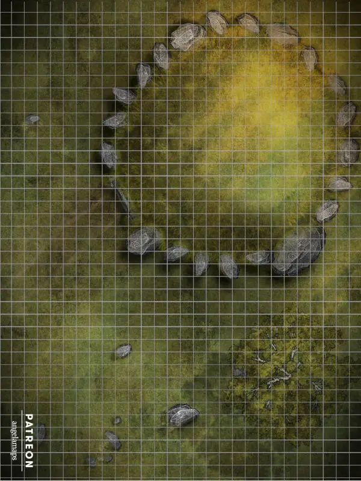
Campo de batú
La parte del rey
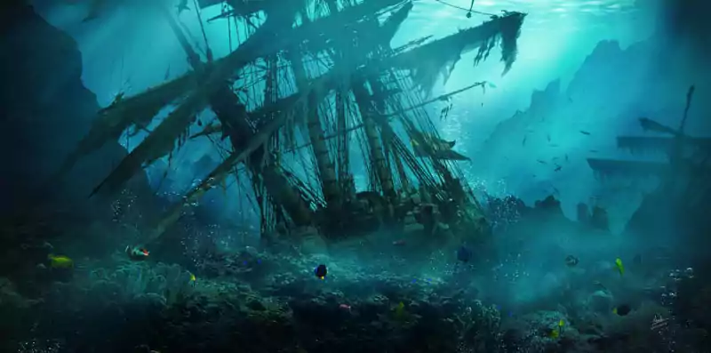
Comienzo: La Habana
Andan circulando por los bajos fondos de La Habana unos lingotes de plata con marcas de la flota de la plata
hundida en 1715. Toda la plata rescatada en 1715 fue enviada a España y fundida. Eso solo quiere
decir que alguien ha encontrado la plata hundida y debe estar dándole salida.
Aurora y Flora Esteban de Ubilla son hijas del Juan Esteban de Ubilla, el capitán general de la flota de la plata
que un huracán hundió el 31 de julio de 1715 frente a la costa de Florida. Su padre no ha levantado
cabeza desde entonces y el deshonor ha caído sobre la familia Ubilla. Aurora y Flora creen que si pueden
recuperar la plata perdida (o una parte importante) el honor volverá a su familia.
A un joyero, amigo de la familia, intentaron venderle uno de los lingotes, lo compro y se lo entrego a
las hijas de Juan. Al enterarse de que la plata había aparecido en los bajos fondos de La Habana se pusieron
a investigar. Pero necesitan ayuda para moverse por los bajos fondos de La Habana y protección
contra los criminales que pueblan ese mundillo. Tu mesa es el grupo perfecto para todo estoy. Han
preguntado a alguno de sus aliados y ellos se los han recomendado.
Qué se sabe de la flota
Todo esto podrán averiguarlo aurora y Flora y de los archivos municipales o preguntando a la
gente del puerto. Fue un evento muy sonado y todavía se comenta toda la historia en las barras
de las tabernas del puerto.
La flota salio de La Habana con destino a España comandada por Juan Esteban de Ubilla con excelente tiempo.
Hasta que inesperadamente un huracán arraso la flota cuando estaba frente a la costa de Florida. Murieron unas
1000 personas y se perdieron casi todos los navíos y toneladas y toneladas de plata.
La poca plata que se consiguió rescatar fue llevada a España. Desde entonces ha habido buscadores de tesoros
en la costa de Florida buscando restos de la plata en las playas cuando hay temporales, huracanes y mareas vivas.
Pero nunca con mucha fortuna.
Qué paso realmente
El hundimiento de la flota de la plata fue culpa de la Orden del Gran Cthulhu. La Orden no puede desviar
tanto dinero como quisiera desde la RCPC y a veces tiene que buscar formas de conseguir fondos fuera de las
vías legales. La Orden invoco el huracán que hundió la flota y ayudados por un pequeño ejército de profundos se
ahogo a todas las personas que se lanzaban al mar o en botes de remos.
Desde entonces lleva años sacando poco a poco la plata de los pecios con la ayuda de mano de obra
profunda e híbrida y almacenándola en una isla desierta entre Florida y Bahamas. Cuando la Orden necesita
dinero que no se pueda rastrear manda un barco a la isla a coger un cargamento de plata que guarda en el
Castillo del Morro de La Habana.
No tienen prisa en ponerlo en circulación y lo usan en ocasiones excepcionales, pero uno de los cultistas
adicto al juego ha tenido que robar varios lingotes para pagar sus deudas de juego.
Aurora y Flora
Aurora y Flora irán a buscar a tu mesa allí donde se alojen. Tienen una carta de su aliado recomendándoles contratarles,
tanto por su dotes de combate como de investigación y les mostrará el lingote de plata real.
No pueden ofrecer mucho dinero, para pagar los gastos y poco más, pero tienen claro que ayudar a una buena persona a
recuperar su honor es suficiente recompensa.
Aurora y Flora van a explotar su imagen de damiselas en apuros si parece que recuperar el honor perdido
de un caballero no es suficiente. La última apuesta será recordarles que podrán reclamar parte
de la plata rescatada.
Primeras pesquisas
Si siguen la plata y van preguntando por los barrios bajos (Callejear, contactos, ....) llegarán hasta
un nombre, Alfredo de Usía, un prestamista bastante peligroso. Es famoso por haberse deshecho de varios
morosos lastrándoles vivos a grandes piedras y lanzándolos en alta bar desde un bote.
Usía no acepta visitas de nadie a no ser que le debas dinero y vayas a pagar o que quieras pedirle un préstamo.
Su local es un fortín lleno con su gente que está armada hasta los dientes. Así que no es buen plan
entrar a la fuerza.
Pueden intentarle pedir un préstamo, pero antes de hablar con tu mesa les investigará. Según lo que se sepa,
siéntete como un banco y niégales si quieres el crédito.
Lo más sencillo es perder dinero (unos 600 o 700 doblones será suficiente) en su casa ilegal de juego y el propio
Usía mandará a sus matones a buscarte.
Entrevista con el diablo
Tanto si van ellos como si los matones van a buscarlos, los llevarán al piso superior de su local de juego.
La entrevista será en su lujoso despacho, maderas nobles, mármoles, terciopelo, licores caros, ...
Alfredo es bastante brusco y directo no se guarda nada. Si le deben dinero les pedirá el dinero y les explicará
las consecuencias de no volver a pagar a tiempo. si quieren un préstamo les explicará las condiciones y
las consecuencias de no pagar.
No va a ser fácil sacarle información sobre la plata, pero se dejará seducir por una parte del botín.
Aurora y Flora no parece que estén de acuerdo, pero sin la información de Alfredo no puede continuar.
Aceptará un mínimo de un 3%, pero tratará de conseguir un 6%.
Usía sabe de donde viene la plata, de un jugador empedernido llamado Viriato que trabaja para la RCPC en el
Castillo del Morro. Es un pésimo jugador y siempre anda debiendo dinero a Usía. Les indicará su abrevadero
favorito.
A partir de este momento y mientras estén en la ciudad alguien de Alfredo les seguirá. No serán muy
sigilosos (tirada enfrentada de Notar contra Sigilo d8). Si el perseguidor se da cuenta de que lo
han detectado se largará, otra persona le sustituirá en pocas calles.
Si pillan algún espía se identificará como uno de los secuaces de Usía y si tienen problemas
deberán a hablar con Alfredo.
Todo apunta a la RCPC
Viriato Además, de un perdedor es un cobarde a que la mínima presión soltará todo lo que sabe.
Es un cultista del más bajo nivel y trabaja para la Orden más por el dinero y el poder
que ofrecen que por fanatismo. Sabe que cada 6 o 7 meses llega en barco un cargamento de
plata que se guarda en una de las celdas de los calabozos. El barco que hace el viaje
es siempre el mismo, La Rodela, una patrullera de la RCPC. No tiene mucha capacidad de carga pero
se puede defender de enemigos o escapar rápidamente con su carga en plata.
Los gerifaltes de la RCPC van diezmando la plata hasta acabarla y entonces vuelve a llegar
más plata. No parece que haya ninguna contabilidad de los lingotes así que ante el temor de
perder los pulgares, robo uno de los lingotes.
Una vez haya soltado todo lo que sabe Viriato no será de utilidad y es miembro de la RCPC. Las
opciones sobre que hacer con Viriato son variadas:
Pueden dejarle en paz, pero puede contar todo a sus superiores. Seguramente no lo hará porque
es muy cobarde y no tan fanático.
Pueden darle el paseo y quitarse problemas.
La ultima opción es tenerlo de informante dentro del Morro ofreciéndole una buena suma. Es la
opción más inteligente, pero tarde o temprano seguramente lo pillarán.
Si Viriato sale vivo de la reunión, Usía lo mandará al fondo de mar tan pronto tu mesa abandone
La Habana. Alfredo no es una persona que deja cabos sueltos.
Misión de infiltración
En este momento hay dos opciones infiltrarse en el Morro para buscar la plata o en La Rodela y tratar de
buscar en los archivos del capitán la ubicación de la isla desierta, donde se guarda la plata.
Entrando en el Morro
Puede que no sea la primera vez que tienen que internarse en el Morro así que pueden saber que se encontrarán
dentro. Los mapas, los guardias y demás información está en la Guía de viajes. Esta vez su objetivo es llegar
a las mazmorras y encontrarla celda secreta donde tienen la plata. Lo suyo sería conseguir plata como prueba
y poder confirmar toda esta historia.
La celda es muy difícil de encontrar, ya que tiene hechizos de ocultación permanentes que impiden que sea
encontrado. Por más que pasen delante la puerta será invisible para ellos. Deberán usar algún truco para darse
cuenta de que existe. Pueden hacer un mapa y darse cuenta de que el pasillo falta una puerta o mirar la
estructura arquitectónica del pasillo y ver que donde hay pared debería haber una puerta.
En ese momento podrán hacer una tirada de Notar (enfrentada a una Tirada de Mitos d8) para ver a través
de la ilusión. El hechizo no afecta a los miembros de la Orden que ven perfectamente la puerta. De hecho,
Viriato no sabía del espejismo que ocultaba la puerta de la celda.
Escabullirse dentro de La Rodela
Casualmente, La Rodela está atracado en el puerto a la espera de su siguiente misión. La tripulación está bajo
mínimos (unos 15 marinos), ya que está de permiso emborrachándose en las tabernas del puerto. Hay bastantes guardias del puerto
vigilando las cercanías del barco. Vigilan esa y más naves de la RCPC con lo que seguramente con una buena
tirada de Notar tu mesa podrá ver un agujero en la seguridad.
La capitán Robles duerme en un hostal del puerto así que su habitación está vacía. Sin embargo, sus dos suboficiales
están en sus camarotes (2 cazapiratas). Si se descubre a los intrusos en un par de turnos podrían aparecer
unos 5 marinos, 3 guardas del puerto y los dos suboficiales. Si están a punto de derrotar a los marinos,
puedes sacar un grupo de 5 profundos que vigilan desde debajo del agua los barcos de la RCPC para que no
tengan sorpresas ni sabotajes. Automáticamente aparezcan los guardas y los marinos que no están acostumbrados
huirán aterrorizados.
Hay muchas formas de colarse en el barco, desde colarse por los ventanales del camarote de la capitán, hasta
hacerse pasar por tripulantes borrachos. Déjales que elaboren un plan y lo ejecuten.
La capitán Robles es una adepta fanática de nivel medio de la Orden y su primer y segundo oficial son también miembros
de la Orden. La ubicación de la isla desierta está en el diario B de la capitán en un falso fondo del
escritorio del capitán Robles, encontrarla es medianamente fácil, lo difícil es abrir la cerradura.
El diario está en Cthulhunés de forma que solos los miembros de la Orden puedan leerlo.
Alguien deberá pasar una tirada de Cthulhunés para encontrar la ubicación entre las anotaciones del diario. Es
fácil porque traer plata ha sido su tarea principal los últimos meses y aparece en varias hojas del diario. El proceso de
intercambio está detallado también en varios pasajes del diario. Con un par de avances podrán encontrar la
ubicación exacta de la cueva submarina donde está la plata.
Si roban el diario pondrán en alerta a la capitán y por tanto a la Orden, que se prepara para mover la plata
como sea. Seguramente pondrán a trabajar alguno de sus investigadores que con hechizos podrían saber quien
intento robar el diario y tratar de recuperarlo. Otra opción es robarlo, estudiarlo y devolverlo. Mientras
tarden menos de 1 día en devolverlo nadie lo notará.
Y ahora, ¿qué hacemos con las pruebas?
Acusar a la RCPC de brujería y de traición a la corona es algo difícil de conseguir y es posiblemente la forma
más fácil de levantarse un día con la garganta cortada. Puede conseguirse algo de difusión publicando la historia
en la VLH, pero solo tendrá calado entre las clases bajas de La Habana. De todas formas no quiere decir que esta
historia no levante sospechas en agentes del rey que quieran revisar toda la historia aunque sea para descartarla.
Aunque no pueda limpiar el nombre de la familia, si presentan sus pruebas al padre de Aurora y Flora, este
volverá a sonreír. Aunque para los demás sea un fracasado, él sabe la verdad y se ha perdonado a sí mismo. Como
les ha dicho muchas a veces a sus hijas: El honor es un regalo que se hace una persona a si misma, solo tú te
lo puedes quitar y solo tú te lo puedes devolver.
La cantidad de plata escondida es mucha y si han encontrado la ubicación exacta de la isla desierta
podrían llevarse un cargamento entero entera de plata antes de que la RCPC pueda llevársela. El principal
obstáculo es encontrar la ubicación exacta, una cuevas submarinas bajo la isla, y sus protectores, una
tribu de profundos con entre 30 y 40 combatientes. Cuando ven llegar La Rodela sacan la plata a una cala
de la isla para que lo carguen en el barco. A cambio dejan varios barriles llenos de cachivaches en
pago por la plata como pago.
Otra opción que puede darle muchos problemas a la RCPC es hacer correr el rumor entre la piratería del tesoro
en plata y su localización. En poco días las aguas entre Bahamas y Florida estarían infectadas de piratas
y la RCPC tendría muy complicado recuperar la plata antes de que la encuentre alguna tripulación pirata.
Semilla de partida: La plata ya no está segura ni en el castillo ni en la isla desierta y
si alguien de la corona husmea alertado por los rumores que corren por las calles podría destapar el pastel.
Esto va a obligar a la RCPC a mover la plata a otra ubicación. Es mucha plata que mover y tendrá que ir en
varios barcos y protegida con escolta. Tu mesa podría montar una expedición pirata con sus aliados
para atacar esa mini flota de la plata.
Cuando la tierra tiembla
Comienzo: Los cayos de la Florida
La Orden del Gran Cthulhu está estudiando un huevo de chthoniano en unas
instalaciones en un pequeño islote cerca de Cayo Hueso. El problema es que los padres del
huevo y sus familiares están buscándolo y puede que si le pasa algo al huevo hundan la isla
en el océano junto con sus habitantes.
Mientras los héroes navegan un día claro, una extraña ola solitaria de tamaño descomunal
aparece de la nada haciendo casi zozobrar al su barco y dañándolo bastante. Desde que el vigía grite ¡Olaaaa!
hasta que les impacte déjales 5 turnos para prepararse. Pueden asegurar la carga y la tripulación, maniobrar
a favor de la ola, intentar pararla o esquivar (cosa imposible), ...
Vete contando los turnos en voz alta dándole dramatismo a la escena según se les acaben los turnos
y grita "Impacto" cuando hagas una tirada enfrentada del Navegar de la persona que lleve el timón
y un d12. Obvia el resultado, tanto si es bueno como malo, y dales esta lista de daño: daños en el timón,
una gran fuga de agua en el casco y el aparejo ha debilitado un tramo de un mástil.
Pueden hacer reparaciones rápidas en alta mar, pero tendrán que buscar un puerto seguro donde hacer
las reparaciones pertinentes. La ventaja es que cerca de los cayos lo que sobran son islotes.
La mejor opción es un pequeño islote con una buena cala para fondear. Hay señales de humo con lo
que está habitada. Si inspeccionan la isla antes de fondear verán que solo habitada por una pequeña
comunidad taina y hay algún tipo de construcción religiosa de piedra, quizás sea monasterio.
Hablando con los vecinos
Una vez organicen las reparaciones podrán bajar a tierra a conseguir comida y agua potable. Quizás puedan
comerciar con los taínos y los religiosos.
Nada poner pie en tierra un temblor de gran poder sacudirá la tierra, las palmeras de la playa temblarán
y los cocos caerán. Los temblores no deberían serles extraños pero nunca son buena señal. Una tirada de
Ciencias podría darles a entender que la ola gigante y los temblores están relacionados. De hecho,
la gran ola podría haber provenido de cerca de la isla.
El poblado taíno es bastante normal, unas 25 /30 personas con su casas redondas de materiales vegetales,
huertos y cultivos cercanos y cercos con animales de granja. Parecen bastante huidizos y cuando os acercáis
se esconden en sus casa. El cacique con un grupo de nitaínos les gritarán y les harán gestos de que se vayan.
No son bienvenidos. Ni mostrando dinero o cosas para intercambiar o dejando regalos en el suelo querrán hablar.
El edificio religioso de piedra pertenece a un grupo de monjes (8 en concreto) que viven como ermitaños
y tiene voto de silencio. Parecen bastante esquivos y extraños y solo se les ve a través de la rejilla
en la puerta, pero claro los ascetas son así.
Si se ponen a investigar el monasterio permíteles hacer tiradas de Notar, Conocimientos generales,
Reparar, Ciencias y Humanidades y puedes darles alguno de estos datos.
No sabéis de qué viven, no tienen huertos, ni tierras de cultivo cercanas. Aunque reciban la comida
de fuera o la recojan de la isla, unos monjes montarían algún tipo de sembrado.
¿De donde han sacado el material para construir el monasterio? No parece haber una cantera en el islote
y es carísimo traer esa piedra y construir aquí el edificio de piedra.
Alrededor del monasterio hay pequeñas estructuras como columnas, paredes o mini-casetas,
todas hechas de piedra. Pero no tienen sentido, ya que no son para guardar material de labranza,
silos o para proteger las cosechas.
No hay monjes con voto en silencio en el Caribe. Los monjes que hay son franciscanos y dominicos
en misión evangelizadora con lo que no tienen voto de silencio.
Está claro que los monjes esconden algo, pero qué exactamente. Parece que son falsos monjes pero que
hacen aquí. Déjales un momento para que elaboren teorías.
Algo se mueve
Al volver a la playa, cuando estén subiendo a su bote unos extraños golpes se oirán en la jungla. Los ruidos
se irán moviendo y se verá que las palmeras de donde procede el ruido se mueven. Parece que algo de gran tamaño
se está moviendo a toda velocidad por la jungla.
Si la valentía es su negocio se adentrarán en la jungla y sin tirada de ningún tipo podrán ver palmeras caídas y
3 rastros muy grandes de algo que se movía por debajo de la tierra como si fuera un topo.
De repente se escuchará una especie de zumbido que parece un cántico y la tierra volverá a temblar y una
gran grieta de unos 200 metros se abrirá a sus pies (tirada de Atletismo para no caer dentro). Enseguida empezará a
llenarse de agua salada. Una tirada de Ciencias dejará claro que si siguen los temblores la isla podría
hundirse en el mar.
Si van con algún tripulante secuaz buen momento para que desaparezca de repente sin dejar rastro o
que algún comodín sufra un ataque desde el suelo, pero sin que puedan ver bien que pasa.
Si van al monasterio a lo lejos podrán ver que los monjes han salido del monasterio. Van examinando el
edificio principal y las estructuras externas de piedra y anotando cosas. En cuanto detectan a los intrusos
entran dentro.
Si visitan el poblado una gran grieta ha partido el poblado en dos derrumbando un par de casa.
De repente un par de chthonianos emergen con gran estruendo en el centro de la plaza y el cacique y lo
que parece su behike salen de sus casas como zombis. Si superan la visión de los chthonianos será
mejor que se escondan. En pocos minutos todos los habitantes del poblado salen de sus casas con objetos
cortantes y herramientas de labranza y como zombis se dirigen al monasterio.
Los taínos intentan tomar el edificio de piedra de los monjes, pero les es imposible, las puertas están
reforzadas con metal y las paredes son muy gruesas.
Sin previo aviso se oye el zumbido cántico de nuevo y la tierra tiembla y vuelven a abrirse grietas
en el suelo. A este ritmo la isla se hundirá en pocos días. Acto seguido se abre un portón y un monje
sale enseñando una gran piedra esférica y otro va con un martillo y un cincel contra la esfera
de piedra. Los cánticos y temblores terminan y los taínos cesan su ataque y caen inconscientes.
Los monjes vuelven a dentro y en unos minutos los taínos se despiertan y vuelven desorientados a su casa.
En este momento el cacique es más receptivo a los foráneos, pero solo habla taíno. Si pueden hablar con él
está muy preocupado. Van a tener que irse porque la isla no es estable. Los cemís, dice el behike, deben
estar furiosos y les están castigando. Desde que llegaron los europeos hace un año los temblores han
empezado y hay algo en la jungla que tira los arboles y crea surcos de gran tamaño.
Permíteles hacer tiradas de Mitos para ir entiendo que está pasando. También pueden hacer tiradas
de Ciencias para lo temas más técnicos. Pueden intervenir cuando quieran pero está claro que deberían
informarse antes de actuar deberían investigar que pasa. El edificio de piedra es inexpugnable sin tener el
equipo adecuado y los taínos no se paran en su ataque. Si buscan en los alrededores verán los surcos en
la tierra que producen los chthonianos.
Qué esta pasando
No es la primera vez que la Orden usa chthonianos para crear terremotos y destruir ciudades pero
sus ataques no discriminan entre amigos y enemigos y están investigando como crear edificios que los
resistan. Sería una gran ventaja para ellos poder destruir La Habana sin que el Morro se derrumbe.
Así que un grupo de científicos de la Orden está estudiando como construir edificios que por
ingeniería y magia aguanten de todo.
Hace un año una pequeña flota de la RCPC fondeo en la isla y monta las instalaciones (el edificio
de piedra y los edificios aledaños) y los científicos que se quedaron se hacen pasar por monjes
para no levantar sospechas. Los temblores y los chthonianos llaman mucho a la atención así que
prefirieron montar una pequeña instalación en una isla perdida que algo más grande y llamativo.
Cada cierto tiempo viene un barco con provisiones y en el último barco les entregaron un
huevo de chthoniano. Los chthonianos son muy protectores con sus huevos y al descubrir su ubicación
han ido hasta la isla para recuperarlo. Con los temblores que generan para recuperarlo han estado
testando los materiales y los hechizos que han usado en la construcción. Si la cosa se pone
complicada amenazan con destruir el huevo.
Para evitarse problemas con los chthonianos montaron todo este tinglado en una isla porque estos no soportan
el agua y es una forma my fácil de poder huir de ellos. Pero no lo que no pensaban es que la isla tuviera Una
base tan frágil y con cada temblor se hunde en el mar.
Solucionando el embrollo
En este punto y con toda la información déjales que decidan que quieren hacer.
Pueden intentar rescatar el huevo, pero cuando lo entreguen a los padres, estos seguramente destruirán
a los monjes y seguramente la isla con ellos.
Pueden rescatar a los taínos, pero si los monjes llegan a un trato con los chthonianos y les devuelven el huevo
a cambio de su seguridad, la investigación daría bastante poder a la Orden.
Atacar a los chthonianos es una opción muy complicada, son seres de gran poder, difíciles de matar y
con poderes mentales. Pero su debilidad es el agua y están rodeados de ella, igual tienen una idea genial
para acabar con ellos.
Los monjes tampoco son fáciles, gran parte de ellos dominan las artes oscuras y tienen una fortaleza
que les protege.
La cuestión es que deberán decidir que hacer y buscar el mal menor. Pero debes quedarles claro que todo
tiene consecuencias.
Ventajas: Hechicería primigenia, Nuevos poderes x2, Puntos de poder
Capacidades especiales:
Hechizos: PP 20, Muro de Yog-Sapha, Vibración temporal, Incineración de Cthugha
Siervo invisible.
De vuelta a casa
Sea como sea, seguramente los chthonianos terminen hundiendo la isla, y la única forma de escapar sea el
barco de tu mesa. Ellos deciden quién se salva y quién se hunde con la isla.
Si consiguen, los cuadernos con la investigación no solo mermarán la capacidad de la Orden de usar chthonianos,
si no que en manos adecuadas podría ser usado para la construcción más eficiente de fortalezas si fuera necesario.
Además, las notas del estudio pueden usarse como libro de los Mitos con las siguientes características.
Título: De la construcción de edificios anti chthonianos
Autor: Varios autores
Idioma: Cthulhunés
TPC: d4
Tamaño: Varios cuadernos de anotaciones a mano
Estado de conservación: Usado y leído
Hechizos: Se describen los hechizos de barrera y desvío hechos
permanentes para proteger los edificios: Muro de Yog-Sapha, Invocar los apéndices de Dygra,
Vibración dimensional y Vibración temporal
Tiempo de lectura: 1 semana
Recompensa extra de cordura (+1): Preocuparse y salvar a las víctimas colaterales debería ser
una prioridad. Si ponen en peligro su vida para proteger a los taínos o desechan planes más fáciles que pondrían
a los taínos en peligro por otros más difíciles y mortales deberías recompensarles con un punto de cordura.
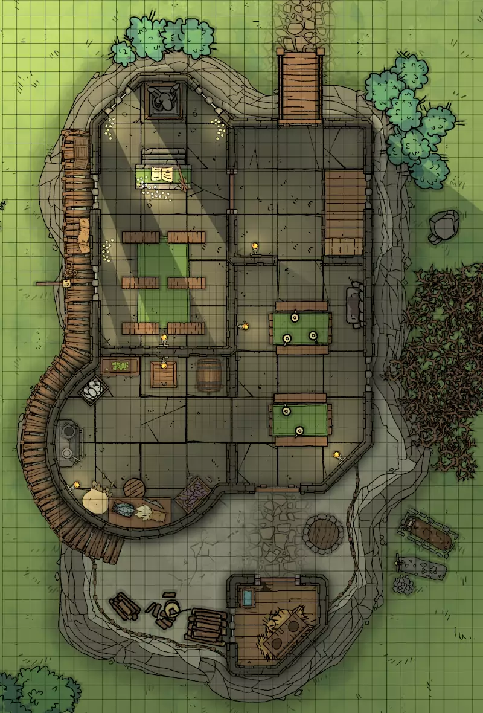
Monasterio de piedra
El templo perdido
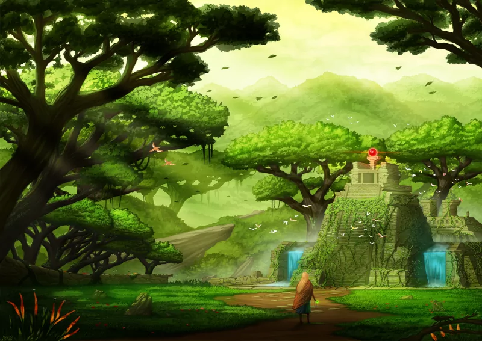
Comienzo: Jungla
Cuando los personajes se adentran en la jungla encuentran un misterioso templo abandonado en estado
ruinoso. Puede que la promesa de riquezas y secretos oscuros les tiente a explorarlo, pero no serán
una aventura sencilla.
Las ruinas que han encontrado son un antiquísimo puesto avanzado de investigación de la serpigente donde
hacían experimentos genéticos para mejorar a sus esclavos humanos y hacerlos más dóciles.
Explorar este templo puede ser muy peligroso, pero puede haber una gran recompensa si saben donde buscar.
Cubierta de mucha vegetación se ve una especie de cabeza de serpiente o reptil gigantesca cuya boca es una entrada a
unas instalaciones subterraneas. Después de desbrozar toda la maleza, hay una gran puerta de piedra circular
dentro de sus fauces. Parece que se desliza a un lado, pero el tiempo la ha atascado. Con picos y palas pueden
moverla con una hora de trabajo, pero pueden recurrir a la polvora o a magia para abrirla.
Alrededor de la entreda no encontrarán nada significativo, quizas alguna pieza de metal o ceramica que
proceda del interior del templo. Una tirada de Ciencias y Supervivencia le dira a tu mesa que las plantas
de alrededor del templo tienen cambios extraños como hojas de formas raras, flores extrañas o frutos nunca vistos.
De hecho todas as habitaciones estarán llenas de raices de árbol que han crecido desmesuradamente
rompiendo sus muros. Si no tienen fuente de luz, puedes hacer que las raices emitan una fosforescencia verde
que les ilumine. Todo esto es debido a la radiación latente que hay en la zona.
Por todo el templo hay inscripciónes en la piedra que si alguien conoce Naacal podrá traducir.
Serián las tipicas inscripciones de un laboratorio, como indicaciones del nombre de la sala,
advertencias de seguridad o indicaciones de como moverse. Con una tirada de Mitos se podrá
identificar el idioma Naacal, pero no se podrá traducir los textos. Muchas de las isncripciones son
especialmente técnicas y exigiran tiradas de Ciencias o de Reparar para entender
a que se refieren.
Habitaciones de las instalaciones subterraneas:
1. Entrada: La puerta de las fauces da a unas escaleras que terminan en un largo pasillo.
El pasillo tiene una trampa de caída desactivada (pensada para la fauna que pudiera entrar), pero que
deja un hueco de unos 4 metros de largo y 8 de caída sobre montones cascotes. Con ayuda de cuerdas
y palos podrían montar un puente temporal. Cada persona que pase tendrá que hacer una tirada de Vigor
entra la tirada de Reparar al crear el puente. Si pasan la enfrentada el peso de la persona que cruza
el foso romperá el puente. Puede hacer una tirada de Atletismo para saltar a un
lado u otro del foso (tirada al azar).
2. Sala central: Esta gran sala da acceso al resto de las isntalaciones. Tiene pinta por
los agujeros en la pared y los ganchos que había algún tipo de cuadros colgados de las paredes (en
realidad pantallas electronicas con datos de la investigación). A la altura de la cintura hay por
todas las paredes un bajorrelieve que representan serpientes. En los ojos de muchas de ellas hay una
cuentas de cristal que se iluminan cuando alguien se acerca a dos casillas de cualquier puerta. Analiza
el código genético del sujeto y si es humano desde todas las serpientes del bajorrelieve cercanas se
lanzará una red de rayos electricos que atacará al que quiera cruza la puerta. Hace 3d6 de daño y si
hace herida lanza al objetivo a 1d4 pasos en dirección contraria a la puerta que quería cruzar.
3. Sala principal: Este era el laboratorio propiamente con todo tipo de ingenios y aparatos de
última tecnología. Fue desmantelado cuando la serpigente abandono el laboratorio por razonas desconocidas.
Es la zona con más inscripciones Naacal, sobre todo de seguridad.
4. Sala de pruebas: Igual que la sala 8.
5. almacén de material: Esta habitación servía de alamcen de productos químicos para lso experimentos.
Hay bastantes inscripciones con indicaciones de seguridad y explicando que tipo de productos había en cada
parte del almacen.
6. Celda 1: La entrada esta cegada por un derrumbamiento. Si quitan las piedras podrán entrar
en otra celda como la habitación 7.
7. Celda 2: Esta habitación se usaba de celda para retener las cobayas humanas. En la zona
de la entrada parece que había algún tipo puerta por el diseño del marco de la puerta. Si examinan
las paredes podrán ver restos de cadenas y ganchos de metal usados para reterer a los sujetos
de experimentos más peligrosos.
Con una tirada de Ciencias verán que el metal esta solo sucio
sin restos de oxidación. No parece nada hecho por el seres humanos. Si lo llevan a un artesano podría
montar dos juegos de grilletes para brazos u piernas casi irrompibles (consistencia 30) que
permitiría retener a un ser de tamaño de -1 a 2. Es demasiado resistente al calor para intentar
forjarlo y crear alguna otra cosa como una espada o una coraza.
8. Sala de pruebas: Aquí era donde se experimentaba con humanos. Se les sacaba de las
celdas se les ponía en unas camas con sujeciones y se les inyectaba diferentes productos para
ver sus efectos. Hay restos de diferentes restos de recipientes.
9. Acceso a la planta inferior: Desde esta sala se podía acceder a la planta inferior,
desgracidamente está todo inundado y no se puede acceder. En esta planta estaba la mini central
nuclear que aún da algo electricidad al laboratorio. El agua está contaminada y sumergirse en ellas
puede ser peligroso por la Radiación. Cualquiera que entre en el agua deberá tirar Vigor
cada minuto, si falla la tirada, adquirirá un nivel de fatiga (ver reglas de Radiación de SWADE).
Una tirada de Ciencias les dirá que el agua debe estar de alguna envenenada y que es la fuente de todas
las extrañas plantas de al rededor del templo. Podrían establecer que sus vapores pueden ser
nocivos a largo plazo y que no deberían estar mucho días seguidos cerca de esta agua.
Por todas las habitaciones hay rozas en las paredes de las que a veces salen cables y algunos chisporrotean.
Si alguien toca las cables sin protección se llevará 2d6 de daño y si recibe una herida le lanzará
1d4 pasos hacia atrás.
Si se llevan los cables, el metal del interior, al igual que los grilletes de las celdas, es de un extraño metal
muy resistente y ligero (consistencia 30). Alguien con conocimientos en tejer podría usar esos cables
para crear cuerdas resistentes (hasta 30 metros), redes de pesca/lucha (2 casilla de tamaño) o
algún tipo de camisote de malla (usad las estadísticas del chaleco de Kevlar). Para reunir el cable
suficiente deberán visitar todas las habitaciones y en todas arrancar los cables que haya.
Saliendo del templo
Al salir del laboratorio les estarán esperando 4 madres de aguas degeneradas (grandes boas
constrictor cornudas) que vigilan el templo. Las madres de agua son un experimento genético
de la serpigente para crear guardianes de sus enclaves científicos. En su tiempo erán muy
inteligentes, como humanos bastante cultos, pero estas 4 son descencientes de aquellas y
durante generaciones y generaciones a lo largo de los milenios han recibido radiación para
convertirse en las madres de aguas mutadas y degeneradas que están ahora mismo.
Han perdido sus poderes y su inteligencia ahora es tipo Animal. En compensación son más grandes
y resistentes y aguantan 1 herida antes de caer incapacitadas.
Tamaño 5: 18 metros de largo y 1,7 toneladas de peso (+5 dureza, +2
bonificación al atacarla).
Armadura +2: Sus duras escamas le proporcionan protección.
Constreñir: La serpiente gana una bonificación de +2 a las tiradas de Atletismo y
Fuerza relacionadas con presas.
Mordisco: Daño FUE. Si el mordisco hace herida, inyecta cierta cantidad de radiación
en la corriente sanguinea de la víctima. Si falla una tirada de Vigor, se lleva un nivel de fatiga.
Cuernos: Daño FUE+1
Muy duros: Aguantan 1 herida antes de caer incapacitados
Botín: 1d4. Sus antepasados acumularon cosas que abandono la serpigente así que podría haber
objetos perdidos en el tiempo y el espacio.
Pueden convertir este templo en una guarida en mitad de la jungla donde refugiarse y esconderse
cuando las cosas se pongan chungas. Nadie tiene idea de su paradero y es facilmente defendible.
Cerrando con piedras el acceso al piso inferior e invirtiendo unos 2.000 doblones en materiales
se podría acondicionar para poder vivir en ella con camas, cocina, zona de almacenaje, fresquera e
incluso tener algún tipo de deposito de agua de lluvia.
Debido a los problemas de radiación es un refugio para estancias cortas, si se prolongasen
mucho en el tiempo (más de dos semanas seguidas) deberían tirar por envenenamiento por radiación
una vez al día. Aun así, sería el perfecto piso franco donde esconder durante poco tiempo
a alguien buscado.
Semilla de partida: Si montan su refugio en estas instalaciones perdidas
una aventura interesante sería tratar de defenderse de un grupo de serpigentes que quieren
recuperarla. O puedes hacer que alguien de tu mesa contraiga alguna extraña enfermedad que
había quedado en el laboratorio y tengan que buscar una cura.
Agua irradiada: Puede que a alguien se le ocurra llevarse el agua irradiada
para algún bizarro plan de ataque. Transportar este material supone tirar Vigor una vez al
día (Radiación de bajo nivel). Beberla obligaraá a hacer una tirada de Vigor con -4. Si se
falla se adquerira una enfermedad crónica por radiación. Si esta agua es vertida en un lago o en
un pozo contaminará toda la zona y la hara inviable para la vida. Beber el agua del pozo o
lago exigirá una tirada de Vigor para no adquirir la enfermedad por radiación.
Cabe recordar que puede funcionar perfectamente en seres de
los Mitos, aunque no los mataría al momento. Sería posible dejar caer el agua contaminada
sobre un Shoggoth y envenanarle con radiación. Seguramente en unos días morirá envenedado
por radiación. Sacar unas cuantas toneladas metricas de agua y echarselas encima al gran Cthulhu
no le mataría pero podría debilitarlo un poco.
Los hechizos que permiten purificar agua podrían purificar unos toneles de agua
contaminada, pero no limpiar todo el desastre ecológico que este laboratorio y su central nuclear
supone. La acción de varios personas que practiquen magía de forma permanente podría tener
algún tipo de efecto.
Por último, recuerda que tu mesa son buenas personas y usar material radioactivo
es algo que daña seriamente el medioambiente durante décadas o siglos. Sin olvidarnos de las
enfermedades y extrañas mutaciones que producen en personas y animales.
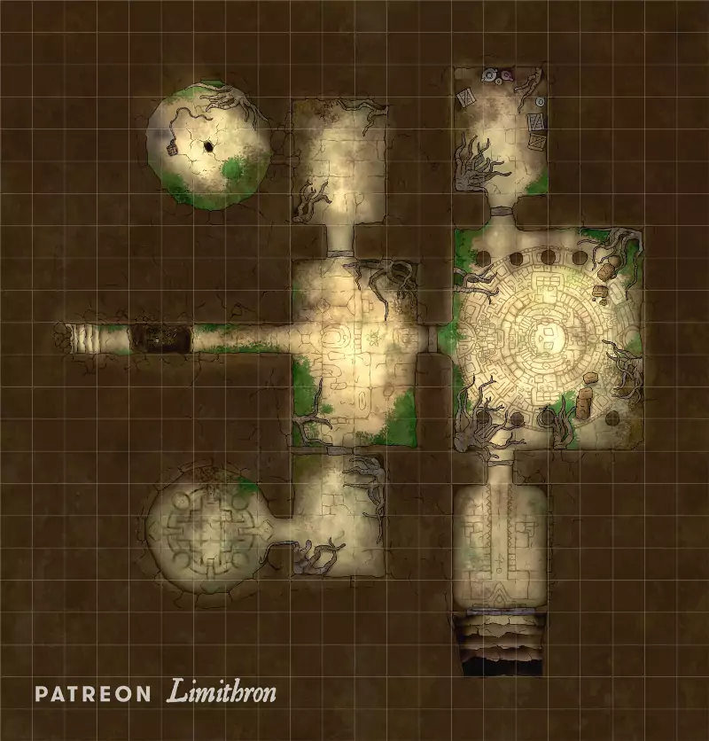
Templo perdido
Madre de aguas
Comienzo: Interior de una isla grande como Cuba o La Española.
Un niño ha desaparecido y el cacique local del pueblo culpa a una
madre de aguas que se supone que existen en los manglares cercanos. Ofrecen una
recompensa a quien recuperé al niño y le traiga la cabeza del ofidio.
Tu mesa llega a un poblado que parece bastante alborotado, hay una familia llorando y
gritando y el resto del pueblo parece enfurecido. Por las conversaciones y los gritos
pueden enterarse de que el niño de 5 años de la familia ha desaparecido durante la noche.
Hay unas palabras que se repiten de boca en boca; madre de aguas. Con Conocimientos
generales podrán saber que una madre de aguas es un críptido de la cultura popular
antillana. Es una gran boa (o majá) con poderes mágicos que habita las zonas húmedas de la isla.
Con una tirada de Mitos podrían saber que son una especie de experimento genético de la serpigente
para crear guardianes para sus instalaciones. Pero parece ser que fue un proyecto que se abandonó.
El cacique local subido a un estrado empezará a dar su discurso. Ofrece unas pepitas de oro de buen
tamaño a quien recupere al infante sano y salvo y traiga la cabeza de la madre de aguas.
El cacique local no cree en que existan las madres de agua ni esos cuentos, pero tiene
que hacer algo para que no parezca que se queda con los brazos cruzados y no se le
revuelvan los aldeanos. Además, sabe que puede que encuentren al crío perdido, pero nunca a
la serpiente, de forma que se ahorrará la recompensa.
Buscando a la serpiente
Deberán internarse en los pantanos cercanos y empezar a buscar a la serpiente. Puedes hacerles
tirar Supervivencia para encontrar su rastro o pueden tratar de poner alguna trampa. El
problema es que las madres de agua son seres inteligentes como humanos y saben esconderse y
ocultar su rastro. Y todas las tiradas de hacer trampas serán tiradas enfrentadas de su Sigilo
contra el Notar de la serpiente en caso de trampas y de Supervivencia frente a su Sigilo para
encontrar sus huellas.
Si se les acaban las provisiones tendrán que volver al poblado a por más y continuar la búsqueda,
tendrán como para 3 o 4 días. Puedes ponerles algún encuentro con algún animal salvaje, tipo jaguar que
ataque a alguien mientran duermen o un ataque nocturno de noctivagos.
Si consiguen un rastro o la serpiente cae en la trampa, podrán
enfrentarse con la serpiente, pero esta tratará de escaparse a la mínima. No parece agresiva,
solo trata de sobrevivir en el pantano. Seguramente si puede usará sus poderes de Ilusión para hacer
copias suyas y despistar a sus atacantes. Si la dejan huir podrían ver dónde está su guarida, donde
seguramente esté el niño desaparecido.
Si la derrotan tendrán que ver si la rematan o se la llevan. Si la matan, con llevar la cabeza, podrán
cobrar la recompensa. Si la dejan viva tendrán que transportarla por el pantano. Además, quizás más tarde puedan
entregarla a alguien que la estudie, ya que los cuernos y su tamaño no parecen normales.
Decisiones
Pero no ha acabado todo, deberán buscar su guarida (tirada de Supervivencia siguiendo el rastro de la madre de aguas)
donde encontrarán al niño perdido y su tesoro (y podrán hacer la tirada de botín). El infante parece bien
cuidado y alimentado y sus heridas sanadas, incluso hay restos de fruta y verduras machacados para
que pueda comer sano. Desde luego, esto no parece un comportamiento normal de un animal salvaje.
Si pueden comunicarse con el niño, contará que escapó de su casa porque quería cazar "gamusinos" como sus amigos,
se perdió, se cayó por un barranco de la selva y terminó en pantano. Un jaguar intentó comérselo, pero la madre de aguas,
le salvó y le llevó a su madriguera donde ha estado cuidado hasta ahora. Si ve la cabeza de la serpiente, se pondrá triste
por su amiga. Si está viva, pedirá que la suelten, ya que es buena y es su amiga.
Tu mesa deberá decidir ahora que hacer. Si la sueltan, no cobrarán la recompensa aunque lleven al crío. Si la
entregan viva, seguramente los aldeanos la matarán. Han de tener en cuenta que es medianamente inteligente y
que ha hecho más bien que mal. Si la dejan escapar y vivir tranquila, conseguirán un aliado en la zona, que podrá
ayudarles si tuvieran necesidad.
Recompensa extra de cordura (+1): Si consiguen de alguna manera
desmontar todos los mitos falsos que hay tras las madres de aguas de la zona.
El yeho
Comienzo: Ponce
Fabio Castelli es un diletante veneciano que se dedica a cazar críptidos de todo Europa y
Norte de África y los vende a espectáculos circenses y paradas de monstruos.
Al oir la leyenda de el yeho, un pitecantropo que vive en las selvas de las islas del Caribe, vio que
era perfecto para su negocio. En el Caribe podría huir de sus acreedores y labrarse una nueva reputación en
América.
Fabio está contratando bateadores y exploradores para adentrarse en la selva a cazar al Yeho. Su principal
problema es que debe cazarlo vivo y transportarlo de vuelta hasta Ponce. Si no fuera por eso, con alguien que
conozca la zona se adentraria en la jungla y volvería con el pellejo de su presa. Pero su idea es montar
un circo de monstruos como tenía en Italia y necesita un buen primer plato como el yeho y, claro,
lo necesita vivo.
Puedes meterles en la aventura de varias maneras, desde que les contrate Fabio directamente a que Read les
encargue estudiar los ataques que se han producido en los últimos meses por si tuvieran que ver la Orden
y alguno de sus planes. Si alguien trabaja de periodista para la VLH sabe perfectamente que cubrir esta noticia
podría suponer una primera plana.
Fabio es realmente arrogante y desagradable y deberías hacer que lo odien a muerte, ya que dado el momento se
tendrán que enfrentar a la decisión de arriesgar su vida y salvarle o dejarle abandonado a su suerte.
Adentrandose en la espesura
Fabio es un capullo integral como persona pero tremendamente profesional. Primero estará unos días
aprovisionandose y visitando las comunidades cercanas a Ponce y hablando con sus habitantes para saber como es
el yeho y trazar una posible zona donde habite.
Con una tirada de Supervivencia podrán establecer su habitat actual y con Ciencias podrían suponer que una veces es
un carnivoro de un tamaño gigantesco muy agresivo y con grandes garras que ha matado a bastante ganado y otra veces
es grande pero de menor tamaño, muy huidizo, omnívoro y dispuesto a esconderse a la mínima señal de peligro. Se diría
que en realidad son dos animales distintos. En ambos casos parece ser que es nocturno y se oculta en cuevas de la luz solar.
Una tirada de Mitos sabiendo todo o parte de lo anterior podría darle a entender a tu mesa que es gugo perdido
que ha llegado a muestro mundo de alguna manera desde la Tierra de los sueños.
Tras estas pesquisas Fabio hará unos cálculos bien afortunados y se adentrará en el bosque para empezar la caza.
Se digire a una zona montañosa al norte de Ponce que tiene bastantes cuevas que podrían servirle de guarida.
En un par de días llegarán a la zona con un carro tirado por mulas donde Fabio guarda las provisiones y sus
cosas de caza. el carro lo dejarán en un claro y empezarán a rastrear la zona pie.
Fabio encontrará unas grandes huellas del tamaño de una rueda de carro. Deben pertenecen a un ser gigantesco,
más grande que un elefante. Las pisadas muestran que tiene garras y anda erecto y no parece que le preocupe
dejar rastro.
Las huellas impresionan mucho (TPC: d6), sobre todo si nunca te has enfrentado a seres de tamaño mayor de 5.
Fabio al principio tartamudeará un poco de miedo, pero en cuanto piense en la fortuna que va ganar se le
pasará todo.
Hay arboles caidos y daños profundos en la troncos de los arboles cercanos más grandes como si hubiera
tenido un ataque de locura y hubiera empezado a destruir todo lo que estuviera a su alcance. No puede ser
un ataque porque no hay huellas de los agresores. Tu mesa podrá, si quiere, hacer sus propias tiradas
de rastreo. Con dos avances descrubrirán cerca otro juego de huellas grandes pero no tan grandes como
las de Fabio y con garras más pequeñas.
Una tirada ciencias debería decirles que parecen dos especies distintas. Si se lo enseñan a Fabio su soberbia
le llevará a pasar de los huellas. Si él no las ha encontrado no deben ser interesantes. Les dira que puede que
sean de alguna cría o de la hembra, pero a él solo le interesa el macho alfa.
Poniendo trampas
Las huellas les llevarán a una cueva cercana en las colinas. De normal pondría cebo en un claro y esperaría desde
un puesto de caza a cargarselo de un tiro entre ceja y ceja. El problema es que al ser nocturno no sale de día
y lo quiere vivo, así que no puede usar su rifle de francotirador. Tendrá que montar una trampa.
De su carromato, que había dejado en una senda cercana, saca un cepo para horrores (Ver Tabla de objetos de gran tamaño) y un juego de cadenas de tamaño
gigantesco. Tendrá que poner carne con narcoticos sobre el cepo de los horrores para que caiga en la trampa. Desde
una atalaya improvisada cercana vigilarán y si oyen ruidos se acercarán a ver que pasa.
Como un animal acorralado
Esa misma noche poco después del anochecer oirán Aullidos terribles y golpes fuertes contra arboles pero
no suenan las campanas del cepo. De repente el todo ruido cesa y durante un minuto no se oye nada. De
repente se oye a un gran animal corriendo a toda velocidad hacia ellos derribando los troncos de los arboles
que se ponen en su camino.
Dales 4 turnos para preparrase. Pueden quedarse en la atalyaa arriba del arbol (aunque no parece muy seguro
por como esta derribando los arboles), pueden bajarse y huir, puede intentar iluminar la zona, preparar las armas,
montar un trampa con una granada o así, etc. También puede intentar prepararse para el horror que van a ver con
"Pásame la jarra de ron".
Pasado los 4 turnos un gugo rugiente y rabioso saldrá de la espesura y se lanzará a por ellos. Antes de entrar
en combate deberán pasar una TPC d12, de normal sería un d10, pero verlo salir de la oscuridad bramando como
un poseso y mostrando su afiladas garras y dientes hace que sea mucho más terrible.
Va a muerte y no piensa rendirse, luchará hasta la muerte para acabar con los extraños que han entrado en su territorio.
El gugo atacará al que vea más grande y fuerte. Luego reaccionará atacando al que más daño le haga. Recuerda
que es de noche y luz es escasa. Fabio no es muy util en esta situación, ya que su mosquete no es muy útil
a cortas distancias, pero no parará de repetirles que lo necesita vivo.
El gugo es una enemigo formidable así que seguramente haya incapacitados. Según veas a tu grupo
puedes hacerlo secuaz o dejarlo como comodín.
Llevarse al monstruo
Si incapacitan al gugo tendrán un gran problema, cómo se lo llevan. Las cadenas son suficientemente
grandes para inmobilizarlo, peto el carro de Fabio es muy pequeño para cargar al gugo.
Dejales que busquen una solución. Pueden buscar colonos o indígenas para que les ayuden, pueden
hacer uso de su magia, pueden buscar un rio y llevarlo al en una barcaza por su cauce, ...
Si registrań la cueva del gugo podrán hacer y a tirada de botín. También encontrarán entre
otros restos de vacas y cerdos, los restos de una especide primate gigante, seguramente de
la especie de las segundas huellas.
Fabio tiene suficiente narcoticos para tenerlo controlado durante el tiempo suficiente que
dure el viaje. Así que el gugo no será problema, solo su tremendo peso y tamaño.
Durante el camino de vuelta, con unas tiradas de Notar podrán notar que algo les sigue, se
acerca al campamento y les vigila. Con supervivencia detectarán unas huellas que ya conocen
las más pequeñas que encontrarón en las montañas del gugo. Si tratan de cazarlo o seguirlo
se les escapará siempre.
Saludad el rey gugo
Cuando lleguen a Ponce, Fabio empezará a preparalo todo para montar su espectáculo. Montará una
carpa en las afueras de la ciudad (en los Campos de batú de Tibes), hará que pregoneros anuncien
su espectáculo, contrará a artistas locales para que hagan terroríficos carteles y le pagará a tu
mesa para que cuenten la historia de la caza del yeho en las tabernas, cuanto más exagerada mejor.
Fabio sabe montar buenos espectaculos y atraer al público.
En un par de días tendrá todo el show montado. La noche de estreno la gente se agolpa delante de la carpa
espectante ante lo que van a ver. Les dice que les pagará después de la función con el dinero fresco
que consiga y les da unas entradas para verlo todo. Tendrán que hacer cola como el resto de asistentes
antes de entrar y notarán el nerviosismo de la gente.
El espectáculo es muy simple. En el centro de la pista hay algo de gran tamaño oculto por una cortina.
Fabio narrará sus aventuras y cuando termine, con gran ceremonia, retirará la cortina y se verá una
plataforma donde esta atado y amordazado el gugo. Gran parte del publico caera inconsciente, vomitará
o saldrá corriendo al ver a la horrible bestía. De hecho, muchos de llos la seguirán viendo en sus
pesadillas durante años.
Fabio retirará la mordaza y el gugo empezará a rugir, aullar y mirar con todo el odio del mundo a los
humanos que le rodean, pero sobre todo a Fabio. Fabio le ofrecerá de comer una ternera y un cerdo
y se las comerá en un par de mordiscos salpicando todo de sangre.
Nadie se está dando cuenta pero los eslabones de las cadenas están cediendo a los
tirones del gugo hasta que, por sorpresa, consigue liberar un brazo, luego el otro y por último las piernas.
En ese momento el pánico se adueñara de los asistentes que empezarán a gritar e intentar huir. La carpa
empezará a caerse y el gugo se lanzará contra Fabio y lo cogerá con uno de sus brazos. Continuará devorando
personas del público que se pongan a su alcance si nadie hace algo. En ese momento,tu mesa debe decidir
si huir o ayudar a Fabio.
Si huyen, Fabio morirá y el gugo huirá a la selva solo se conocerá su estela de destrucción hasta
desaparecer en las montañas.
Si se quedan a luchar deben saber que para no herir a Fabio deben hacer ataques con un -2, o habŕa
un 10% de posibilidades de que hieran a Fabio. Recuerda que tampoco está bien iluminado. Como la otra
vez el gugo irá a por todas en el combate sin ninguna piedad. Si es un secuaz está vez está tan
furioso que tendrá el rasgo de fiatura Muy duro (Aguanta 2 heridas antes de caer incapacitados).
Cuando le quede una sola herida y vea que no puede ganar intentará llevarse a su
captor con él. Tienen 2 turnos en que no atacará, se centraŕa en aplastar a Fabio como una nuez.
Tendrán de derribarlo en dos turnos o Fabio morirá aplastado como una uva.
Si no lo consiguen una sombra de gran tamaño entrará en la carpa y se lanzará contra el gugo, que
soltará a Fabio. Es el yeho buscando venganza contra al gugo que está muy debilitado. Se enzarzarán
en un combate brutal. Tu mesa deberá aprovechar para sacar a Fabio de la carpa.
Una vez esten fuera, solo se verán siluetas de los monstruos bajo los restos de la carpa y se
oiran sonidos de lucha entre los dos gigantes, hasta se oiga un grito agónico y una figura caiga.
La figura en pie se quitará de encima la carpa, mirará al público con furia y se volverá al
bosque que rodea la zona. Allí le espera lo que parece una cría de yeho. El yeho buscaba acabar
con el monstruo que acabo con su pareja y por fin se ha vengado.
Si consiguen derribarlo al salir de la carpa el yeho les gritará desde la vegetación circundante
y les hará un gesto de agradecimiento. Luego desapareceŕa con su cría.
A la mañana siguiente
Los yehos desaparecerán, abandonando su antiguo territorio y buscarán nuevas tierras mas tranquilas. Fabio
será apresado por las muertes que haya provocado el gugo. Pueden intentar reclamar el cuerpo del gugo, seguro
que alguien quiere hacerse una alfombra con la piel del gugo.
Recompensa extra de cordura (+1): Si consiguen que Castelli pague por sus crímenes
contra la fauna en Europa y África en el juicio o conciencian a la comunidad de la necesidad de proteger al yeho
y su entorno.
En paradero desconocido
Comienzo: En cualquier sitio donde el grupo de personajes tenga un aliado intelectual.
Ha desaparecido una persona de entre los aliados de corte intelectual o artístico de tu mesa: ha sido secuestrado
en su casa o ha desparecido sin dejar rastro. Detrás de esta desaparición están los Mi-go y la Orden del Gran Cthulhu
que están buscando a las mejores mentes (literalmente) de la zona del Caribe para uno de sus proyectos
secretos de exploración submarina.
Algunas de las posibles víctimas pueden ser:
Johanna Ribeiro
Isadora de la Guía y Arango
Antoine Delaporé
Cacique Pando
Ifá
Alguien de tu mesa que no vaya a venir en unas cuantas sesiones.
La Orden necesita un sistema exploración submarina para encontrar R'lyeh y una de sus brillantes
ideas ha sido adaptar los dispositivos contenedores para cerebros de los Mi-go para la exploración
submarina.
Tras haber hechos pruebas con unos pobres desafortunados que secuestraron en la calle, se
han dado cuenta de que necesitan cerebros inteligentes que sean capaces de analizar lo que capten
los sensores, tomar decisiones y seguir la búsqueda por el camino con más propabilidades de éxito.
Todo esto ha llevado a que se haya buscado a una persona inteligente (la víctima que hayas elegido),
se le haya sacado el cerebro e insertado en un dispositivo submarino. Ahora mismo están trabajando
para que el cerebro rebelde acepte órdenes.
Se ha intentado tratar que profundos aliados de la Orden hagan este trabajo, pero son bastante
territoriales y duros de mollera con lo que son reacios a salir de sus zonas, a trabajar con otros grupos
de profundos y no son capaces seguir pistas viables.
Este proyecto es la más prometedora forma que tiene la Orden de encontrar R'lyeh y si es saboteado
sería un duro golpe a las planes de Hernando Villalba.
La Orden ha conseguido la cooperación de los Yuggoths ofreciendoles ayuda y protección de una
colonia minera de tierras raras en una isla desierta de origen volcanico de las Antillas Menores.
Los yuggoths han enviado 2 yuggothianos cientificos para el desarrollo del dispositivos y las
operaciones cerebrales y a 4 colonos para la defensa y los trabajos físicos.
Puedes cambiar la finalidad del proyecto de forma que en vez de buscar R'lyeh
se use para buscar pecios hundidos y recuperar sus cargas o para seguir a barcos de enemigos
de la Orden.
El dispositivo de exploración
El dispositivo tiene la forma y el tamaño de un delfín metálico y en su innterior hay un cilindro
cerebral que dirige todo el dispositivo. Aguanta miles de kilos de presión, tienen un sistema de
propulsión basado en las aletas y la cola del delfín y unos sistemas visuales con iluminación
que permiten explorar las simas más profundas.
Que metan tu cerebro sin tu consentimiento en una especie de pez metálico para buscar una ciudad sumergida
puede ser bastante traumático. Todo este proceso exige superar una TPC d12 y de fallar y tener que elegir
un trastorno, puedes pasar de la tabla de trastornos y darle una fobía a la oscuridad, al mar, a la
tecnología o al personal sanitario.
Tiene una autonomía de semanas con lo que podría seguir una pista submarina sin necesidad de volver
a la base a recargar y cambiar el líquido en que flota el cerebro y del que se alimenta.
Investigando la desaparación
Para investigar la desaparición puede hacer varias opciones.
Preguntar a los vecinos: Siempre hay alguien cotilla que se pasa el día mirando
detras de las cortinas. Igual vió a la persona desaparecida asaltada por unos emcapuchados, o
discutir con alguien.
Revisar sus cosas: Mirando sus cosas como diarios o libretas de notas se pueden
enterrar si notaban si le seguían, si habían hablado con alguien extraño ultimamente, etc.
Magia: Como siempre la magia lo hace todo más fácil. Hechizos de localización podrían indicar
quien le secuestro o incluso, con una buena tirada, donde esta encerrado la víctima del secuestro.
Al final deberían obtener una direccíon de unos matones (usa la ficha de Piratas, 2 por jugador) que se encargarón
del secuestro. Llevaron a la víctima hasta una cala cercana donde un bote se llevo al secuestrado hasta un barco
fondeado a un par de kilometros. No saben el nombre, pero están seguros de que el barco sigue allí. Esta
información no la soltarán facilmente. Tendrán quen intimidarlos, persuadirlos con dinero o sacarsela a golpes.
Las instalaciones de la Orden
La rama tecnológica de la RCPC ha montado un laboratorio en un carguero que esta fondeado a un
par kilometros de la costa. Todo el espacio de carga de las cubiertas inferiores se ha usado
para montar un taller/laboratorio, donde operar cerebros y donde montar el dispositivo
subacuático.
A simple vista el barco parece normal, pero con una tirada de Notar se ve que
las escotillas han sido cegadas y hay ciertos aparatos como largas vara metalicas y grandes
espejos en diferentes partes del barco. Si se vigila el barco se puede ver que vez en cuando
arrían algo desde el agua que tiene pinta de un tiburón o delfín de gran peso.
Los yuggothianos no salen de la zona de carga, mientras que el resto la tripulación, 1 capitan,
2 suboficiales y 36 marinos, se mueve por la cubierta. Hacen turnos de 8 horas con lo que siempre
hay un oficial y 12 marinos. Toda la tripulación forma parte de la Orden y la mitad de los marinos
son hibridos de profundos. En caso de alarma en unos 6 turnos un tercio de tripulación estará
preparada para combatir y en 1 minuto los que estaban dormidos.
Por complicar la cosa podrias hacer que un guardacostas de la RCPC pase cada cierto tiempo a
comprobar que todo esta bien para añadir presión a la situación.
Misión de infiltración
A no ser que digan algo de infiltrarse cuando el pez este arriado o no, tira al azar si el dispositivo
con el cerebro está o no está en el barco.
Si deciden infiltrarse en el barco tendrán que buscar la manera de evadir a los vigias de cubierta
y de no despertar al resto. La única entrada al laboratorio es por la escotilla que hay en el
centro de la cubierta, que está cerrada con un candado (tirada de Latrocinio con 1 avance si no
quieren hacer ruido). Si alguno de los vigias toca su campana de alarma en pocos turnos aquello
será una batalla campal.
La cubierta de carga ha sido modificacada por los yuggothianos para poder trabajar en sus
experimentos. Tiene 3 partes, una especie de taller donde se hacen ajustes al ingenio submarino,
otra donde se hacen las operaciones cerebrales y una zona donde se ve el cuerpo sin cerebro de
la víctima conectado a una serie de maquinas. Cada zona está separada por una especie de cortinas
transparentes.
Si el ingenio está en el barco podrán verlo en el taller y el cerebro en una gran bañera en la
zona de enfermería. Si saben que supone el cerebro deberán tirar un TPC de d4
Cuando lleguen a esta zona ninguno de los mi-go tendrá preparado sus aparatos de vocalización,
con lo que las negociaciones son difíciles. El más minimo moviento ofensivo supondrá que los
mi-go ataquen y si hacen ruido esto atraerá a los guardias que esten despiertos. Los mi-go
no se jugarán la vida rindiendose si se reciben demaisadas heridas. Su vida es más
importante que los experimentos.
Operando cerebros
El problema principal que deberá afrontar ahora tu mesa es como devolver el cerebro de su aliado
a su cuerpo. Solo un cientifico yuggothiano tiene la tecnología y los conocimientos para devolver
el cerebro a su cuerpo. Si no tienen el cerebro deberán esperar sin ser descubiertos a que vuelva
(1 hora) y sea metido en la bodega.
Deberán negociar con al menos un cientifico yuggothiano para que regrese el cerebro al cuerpo.
Las amenazas de muerte son la mejor forma conseguir su colaboración, pero será difícil hacerlo
si no descubren alguna forma de comunicarse con el cinetífico yuggothiano.
Sin su colaboración será algo completamente imposible. La operación exige otra hora. Tras la cual
el operado casi no podrá moverse. Tendrán que cargar con él para sacarlo del barco.
Presenciar la operación, única forma de comprobar que el médico no hace nada raro supne una
tirada de TPC de d6.
El pez metalico es muy pesado para llevárselo tal cual. Así que a no ser que tengan algún
as guardado en la manga no podrán traérselo. Alguien de ciencias podría llevarse los planos que
hay por el laboratorio y dárselos a una persona de ciencias para que los estudie. Aunque esten en
un idioma incomprensible los dibujos peuden dar buenas ideas. Podría, por ejemplo, descubrir
algún tipo de mdoficiación para barcos. En los planos no hay nada de las tecnología cerebral de
los yuggothianos.
Saboteando el proyecto
Si se van sin más, nada impedirá que secuestren a otra persona persona y sigan con sus
investigaciones. Algunas opciones de saboteo son:
Acabar con los yuggothianos es una opción, ya que estos no enviarán a nadie más de reemplazo. La RCPC
ha incumplido el acuerdo y desharán el acuerdo. Además, convertiría a los mi-go en enemigos jurados
de tu mesa.
Destruir el ingenio submarino y destruir toda la documentación podría valer para frenar el proyecto.
Podrían hundir el barco con todos los avances y toda la tecnología. Los meses de trabajo y el coste de
las instalaciones harían que se desestimará el proyecto pero seguramente también acabaría con los
yuggothianos trayendo la enemistad de su raza.
Post-operatorio
Media semana más tarde el operado del cerebro volverá a la normalidad. Podrá mover sin problemas
su cuerpo, sus funciones cognitivas estarán a pleno rendimiento y dejará de tener las pesadillas
con seres acuaticos. Para bien o para mal, solo recorderá hasta que fue bajado a la bodega de
carga del barco laboratiorio.
Escapando del Morro
Comienzo: Puedes jugar este relato siempre que tu mesa sea capturada.
Si son apresados en algún momento por la RCPC o cultistas de la Orden, serán llevados
en secreto al Morro en La Habana, donde serán interrogados y torturados y finalmente ejecutados. Aquí
veremos como pueden escapar del Morro.
Si en algún momento tu mesa es derrotada por agentes de la Orden, acabará en el Morro, en alguna de
las celdas que tienen en el sótano de la fortaleza. Para empezar, como mínimo, tendrán dos heridas.
Habrán sanado una, pero el resto no, a no ser que se rindiera antes de caer incapacitado.
Se encontrarán cada uno en una celda de 5x4 metros con una puerta de madera reforzada con hierro.
La puerta tiene un ventanuco para vigilar a la altura de los ojos y otro a mitad en el suelo para
pasar la bandeja de comida. solo tendrán consigo unos pantalones, una camisa y una manta gorda.
En el sótano hay 6 celdas, dos de ellas ya ocupadas por alguien desconocido,
que ha perdido toda su cordura y no hace más que gemir y a veces gritar como
un poseso. Es imposible comunicarse con ellos, pero si los liberan podrían servir
de distracción porque saldrán corriendo y montando mucho escándalo. En caso de
no haber espacio libre, meterán a quienes vean más enclenques en la misma celda.
Es importante saber quién está en cada celda, ya que para hablar y discutir cada plan de fuga
solo podrá hacerlo con la gente que esté en las celdas contiguas. Solo gritando podrían comunicarse
con el resto de celdas, pero la guardia les oiría también.
Durantes su estancia les darán comida y bebida de la que comen allí, pero con
cubiertoas de madera. No debería pasar hambre, ni sed, ni frio y si tienen
heridas graves serán curados. Quieren mantenerte vivo mientras te sacan
información valiosa.
Cada sesión de interrogatorio/tortura exigirá una tirada de Espíritu para no
soltar prenda. Un fallo supondrá dar un ítem de información valiosa (a juzgar
por ti). Si quiere evitarlo, puede tomar un nivel de fatiga. Puedes darles
algún positivo a esta tirada, si se buscan alguna manera de mantener la moral
alta, como cantar una canción de ánimo todos juntos, gritar conjuntamente una
consigna tipo "todes para une y une para todes" cuando se lleven a alguien a interrogar
o hablar de lo que primero que harán cuando salgan.
El día que tengan planeado fugarse, haz una tirada de clima, ya que puede afectar a la fuga
o incluso cancelarla. Una tormenta puede ayudar a escapar porque reduce la visibilidad de
los guardas, pero hace mucho más difícil lanzarse al mar y nadar hacia la libertad.
Su plan de fuga tiene que salvar 3 escollos, salir de la celda, salir del sótano y
alcanzar los muros y atravesarlos.
Las celdas
Las puertas de las celdas se cierran desde fuera con un gran pestillo corredero y sus
ventanucos también tienen pestillos. Si alguien huye de su celda podrá abrir las celdas
de los demás sin problemas. Los guardias solo abren las puertas para llevarse a alguien
de dentro o si hay problemas dentro de la celda como un fuego.
Si salen de la celda tendrán que enfrentarse con 3 guardias (Infantes de Marina) y un oficial
al mando. Si acaban con ellos rápido, no podrán dar la alarma. Para alertar de las fugas hay
que salir del sótano, pues las gruesas paredes y la trampilla reforzada no dejar salir
el sonido.
La mazmorra
El siguiente escollo es salir de la mazmorra. Al estar cerrada desde fuera, para salir hay que
llamar a trampilla reforzada y dar el santo y seña. Al otro lado hay 4 infantes de Marina y 1 oficial.
Tratar de abrir la puerta a la fuerza es muy complicado, ya que la trampilla tiene una resistencia
de 15. Pueden quemarla, pero se asfixiarían ellos antes, puesto que el sótano no tiene ventilación.
La mejor opción es sacarle el santo y seña a un guardia. Si no pueden, otra opción es esperar
al cambio de guardia, pero se enfrentarían a los nuevos guardias del relevo y a los que están
fuera vigilando la trampilla.
Alguien con Reparar podría montar un artefacto explosivo para reventar la trampilla con la pólvora
de los guardas. El artefacto mandará a tomar por vientos la plantilla y dejará aturdido 3 turnos a
los guardias. El problema es que la explosión dará la alarma. Para hacer el explosivo más concentrado
y menos ruidoso tendrán un -2 a Reparar y los guardas no estarán aturdidos.
La fortaleza
Al salir del edificio, pueden intentar correr hacia los muros o ir en sigilo. No hay método mejor o peor.
El sigilo mejor de noche y si no ha sonado la alarma y correr de día o si les han descubierto. Si van a
esconderse una ronda de 3 tiradas enfrentadas de Sigilo contra Notar. Recuerda dar bonus, por ejemplo, si es de
noche o han robado uniformes militares.
Si van a correr, deberán correr durante 3 rondas. El primer turno no les dispararán desde las murallas, pero
el resto de turnos recibirán un disparo cada uno o dos si fallan la tirada de Atletismo. Si ya estaban preparados
de antes por alguna alarma, les dispararán desde el primer turno. Si se cubren o se esconden no se considera
que corran ese turno y deberán hacerlo en los siguientes.
Si van por sigilo y les descubren podrán, ponerse a correr y solo tendrán que correr las rondas
que les falten de Sigilo. Si salen corriendo ya no quedará otra que seguir corriendo.
La salida más rápida y a la vez más suicida es lanzarse al mar desde el muro marítimo de la fortaleza.
La caída es de unos 20 metros (5d6+5 de daño de caída). Esto exige una tirada de Atletismo para coger carrera
y caer bien. Un éxito reduce el daño a la mitad y un avance niega el daño por completo, un fracaso añade
2d de daño por caer sobre las piedra.
A continuación deberán nadar hasta la otra orilla de la bahía. Recuerda que están heridos; sin un flotador
o similar (+2 a nadar) que compense los negativos, puede serles muy difícil pasar las 5 tiradas de
Atletismo que necesitan para nadar hasta tierra firme. Si fallan 2 veces seguidas o fracasan, recibirán
un nivel de fatiga. Recuerda que si hay mal tiempo tendrán un -2 a nadar adicional.
La salida por el muro terrestre exigirá o salir por la puerta
principal o bajar el muro escalando.
El muro es difícil de escalar, sobre todo sin equipo adecuado. Está hecho
de grandes bloques de piedra pulida y hay pocos asideros. Si consiguen
20 metros de cuerda podrán bajar sin problemas, pero si no tendrán
un -2 a Atletismo. Tendrán que pasar 4 tiradas de Atletismo para llegar
al suelo sin daño. Si fallan dos tiradas de Atletismo seguidas caerán.
Calcula en daño en función de los éxitos, teniendo en cuenta que el muro
mide 20 metros de alto.
Salir por la puerta exigirá algún tipo de engaño o amenaza. La gente que
controla la puerta está en habitáculo cerrado por dentro y solo suben la
gran puerta si reciben la orden de su oficial. Esta gente a no ser que sea
cambio de turno o vean peligrar su vida, por ejemplo, por un incendio
no sale de su cubículo.
Una vez fuera, si sus carceleros están alertados, será fácil perderlos en la jungla y la marisma que rodean
al Morro. Tu mesa deberá pasar un día andando para bordear la bahía de La Habana y llegar a la ciudad. También
podrán robar una barca de las que que usan para traer material del otro lado de la bahía, pero entonces podrán
perseguirlos por el agua con otra barca y dispararles.
Monstruos de los Mitos
Aquí tienes un bestiario con las criaturas de los Mitos de Cthulhu más comunes que puedes encontrarte
en tus viajes por el Caribe. Desde los profundos de las simas abisales hasta la serpigente en sus
emplazamientos perdidos en lo profundo de la jungla.
Todos estos seres están ocultos a los habitantes del Caribe y solo unos pocos son lo suficientemente valientes
y temerarios para encontrarlos, combatirlos y volver para contarlo a gritos delante de una buena jarra de grog.
Combatiendo a los Primigenios
Hemos excluido de este bestiario a primigenios y seres de igual poder. Principalmente debido a que son más
elementos que hacen avanzar la historia que enemigos a combatir. La aventura es evitar que Cthulhu se levante,
si se levanta tu misión ha fracasado. No trates de combatirlo, solo conseguirás una horrible muerte
entre ventosas, babas y pseudópodos. Ademas muchos de ellos están presos o dormidos en alguna extraña dimensión
o a miles de años luz en el espacio profundo. Sin embargo, si puedes contactar, hacer tratos o combatir contra sus
avatares. Las encarnaciones terrenales de los Primigenios puedes encontrarlos en la sección de "Héroes y
villanos".
Avatares de primigenios:
Barón Samedí (Nyarlathotep)
Totep (Nyarlathotep)
La llorona (Shub-Niggurath)
Descomposición de los cuerpos
Una cosa importante que debes tener en cuenta con todos estos seres (y que es muy típico de los
relatos de Lovecraft) es que sus cadáveres se degradan rápidamente y desaparecen casi sin
dejar rastro más que terribles hedores y líquidos viscosos. Muchas veces no podrás probar todas las
cosas extrañas y terroríficas que te han pasado porque no quedará nada que enseñar. Puedes jugar
con ello, haciendo que muchas veces la gente y en concreto las autoridades no crean a tu mesa y sin
pruebas tomen sus historias de monstruos y dioses antiguos como chaladuras de locos.
Si son ingeniosos pueden tratar de conservar los cuerpos usando todo tipo de trucos. Desde conservarlos
en salazón o ahumarlos hasta introducirlos en barriles llenos de alcohol o formol. De hecho, entre el botín que
pueden conseguir en sus aventuras hay varios dispositivos que les ayudarán en esas tareas de conservación de
cadáveres.
Byakhee (secuaz)
Son seres voladores de apariencia insectoide con grandes alas membranosas y pies palmeados.
Viven en el espacio interestelar donde sobreviven sin problemas. Se pueden mover a la velocidad de la luz
y suelen bajar a diferentes planetas a alimentarse. Principalmente se concentran en las Híades cerca de Aldebaran
donde está exiliado su señor Hastur. Solo aparecen para acompañar a su señor o si son invocados.
Pueden ser usados como monturas voladoras y si se pueden evitar los peligros del vacío especial podría viajarse
montado en Byakhee entre galaxias a la velocidad de la luz.
Mordisco: FUE + d4. si el Byakhee consigue hacer una herida con mordisco es porque ha mordido
en una vena y ha chupado sangre. Adicionalmente al daño hará un nivel de fatiga.
Armadura quitinosa: +2
Tamaño +1: Hasta 3 metros de tamaño.
Volar: Paso volando 12. En Tierra, a pesar de no moverse a la velocidad de la luz, son
tremendamente rápidos.
TPC: 1d6 (manada)
Chthonianos (comodín)
Los chthonianos son una especie de gusano gigantescos con tentáculos en el extremo que es lo que sería su cabeza.
Sus cuerpos de gusano están cubiertos de una especie de limo que les protege de los ataques y de las altas
temperaturas. Viven en el interior de la tierra entre el magma y
los que llegan a la corteza terrestre suelen ser renegados expulsados de sus comunidades o
aquellos que van a reproducirse. Ponen huevos que parecen geodas y son extremadamente protectores con
ellos. Sus crías no pueden soportar las temperaturas del interior de la tierra y por se desarrollan
en la corteza terrestre.
En grupo y coordinados puedes crear terremotos y maremotos, derribar ciudades e hundir islotes. De
hecho, su actividad se relaciona con el tsunami que arraso Port Royal en 1692.
Rasgos: Vulnerables al agua (-4 resister ataques de este tipo).
Capacidades especiales:
Armadura +2: Estos gusanos están cubiertos por una gruesa piel y un limo pegajoso.
Excavar 12: Los chthonianos pueden excavar en tierra y piedras suelta y
reaparecer en el siguiente turno en cualquier sitio a 12 pasos.
Telepatía: Pueden comunicarse telepáticamente con otros de su especie,
incluso a miles de kilómetros. También puede detectar mentes de otros seres pensantes
y controlar las mentes de los humanos (Marioneta usando Espíritu como habilidad).
Tentáculos: Fue+d10
Terremoto: Levantando la cola o la cabeza y dejándola caer pueden crear un terremoto.
El terremoto es un ataque de Chorro que usa su habilidad de Pelear.
Tamaño enorme (8): Los chthonianos adultos miden entre 9 y 12 metros y un
par de metros de diámetro (+8 dureza, +4 bonificación al atacarla, +2 heridas).
Debilidad agua: Los chthonianos son extremadamente sensibles al agua. Pueden soportar
pequeñas cantidades de agua pero un inmersión completa supondría su destrucción.
TPC: 1d8
Gugos (comodín)
Los gugos son una especie de simios gigantescos (5-6 metros de altura) que habitan en las Tierras del Sueño.
Sus brazo se dividen en dos a la altura del codo con lo que poseen 4 manos con grandes garras. La boca les
cruza la cara de arriba a abajo de forma que cada ojo queda a un lado de la boca. Es una raza inteligente
con una cultura simple y se comunican mediante gestos de la cara. Son altamente agresivos, carnívoros y
necrófagos y adoran a diferentes primigenios. No sueles salir de sus cuevas, ya que la luz del sol
les hace daño. Si bien es no normal encontrárselos, pueden ser invocados por primigenios a los
que adoran o por magos que siguen a esos primigenios para que les hagan diferentes tareas.
Armadura +2: Su pelaje y su gruesa piel les confieren una buena armadura.
Tamaño +7 +1 herida. Hasta 8 metros de alto.
Debilidad luz solar: Sufren un -2 a todas sus tiradas de habilidad a plena luz del día.
Visión nocturna: No sufren penalización por condiciones de iluminación.
Garras: FUE+d6
Mordisco: FUE+d6
TPC: 1d10
Gules (secuaz)
Los gules son unos humanoides desgarbados con rasgos de hiena. Salen de noche debido a que son
fotosensibles.
Son necrófagos y por tanto se establecen cerca de zona de enterramiento. Se organizan en pequeños
grupos
familiares y son muy territoriales. Pueden infectar a los humanos mediante heridas con una enfermedad
que
convierte
a la víctima en un gul.
Excavar 4: Los gules pueden excavar en tierra y piedras suelta y
reaparecer en el siguiente turno en cualquier sitio a 6 pasos.
Debilidad luz solar: Sufren un -2 a todas sus tiradas de habilidad a plena luz del día.
Visión nocturna: No sufren penalización por condiciones de iluminación.
Garras/Mordisco: Fue+d6
Infección: Cualquiera que sufra una herida de
un Gul debe hacer una tirada de Vigor al de una semana. El éxito indica que está bien. El
fracaso le otorga
un nivel inmediato de fatiga debido a las fiebres. Un fallo crítico indica que el personaje está infectado.
El infectado tiene
un d6 meses antes de la transformación está completa en Gul (y el personaje se vuelve
injugable).
Quizás puedas encontrar a alguien con los suficientes conocimientos en Mitos que sepa como curarla,
pero seguramente le deberás un gran favor. Los propios gules podrían darte esa información. Si se supera
la infección o se pasa la tirada de Vigor la víctima se vuelve inmune a la infección y la proxima vez ni
tendrá el nivel de fatiga.
TPC: 1d4 (manada).
Lengnita (secuaz)
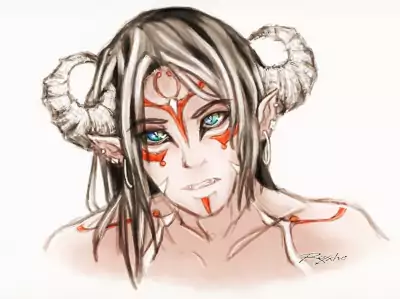
Los lengnitas son una raza de humanoides parecidos a sátiros (cuernos, con patas de cabra y muy velludos)
que habitan la meseta de Leng. Al igual que los sátiros de la mitología griega, son vulgares y viciosos, con
gustos, deseos y pulsiones de lo más dudoso. De hecho, tienen fama de antropófagos.
Fueron esclavizados por las bestias lunares y los lengnitas más grandes también sirven como comida para estas.
Dentro de los lengnitas, los comerciante son los más valorados, ya que se dedican a vender a vender los rubís
extraídos de las minas lunares y compran nuevos esclavos para trabajar en las minas.
Desventajas: Escoge dos Hábitos, uno menor y otro mayor. Puede ser cosas como alcohol, comida, juego,
sexo,
... Los lengnitas suelen llevar al extremos las cosas que consideramos como vicios.
Capacidades especiales:
Cuernos: FUE+d4
Equipo: Machete (FUE+d6) y ropajes amplios y sombreros grandes para ocultar sus rasgos de sátiro.
Lloigor
Los lloigor son seres de energía invisibles para los humanos provenientes de Andromeda.
Tienen una mente malvada y pesimista, carecen de sentimientos y jamás olvidan. Sus mente
es tan poderosa que afecta a los humanos cercanos llevándoles a la depresión y a
tener ideas suicidas.
Llevan miles de años en la Tierra y vinieron con su caudillo Ghatanothoa, el primogénito de Cthulhu,
estableciéndose en un continente ya perdido. Cuando su Ghatanothoa fue encerrado en un volcán, entraron
en decadencia y ahora solo quedan unos pocos lloigors en la Tierra.
Aun así, son tremendamente poderosas y sus mente lleva poco a la locura a los humanos. La RCPC ha
hecho tratos con los lloigors para provocar la locura y el caos en determinados sitios y hacer que
la gente abandone el lugar, el ejemplo más claro es Port Royal.
Lloigor forma inmaterial (comodín)
Los lloigor son seres de energía invisibles en forma de vórtice. En este estado suelen
coger a individuos marginales y de mente débiles y convertirlos en sus siervos que se
encargan de hacer las tareas que ellos no pueden.
Incorpóreo: En su forma incorpórea son totalmente invulnerables contra armas
físicas y mágicas. Solo los ataques mentales podrían hacerles daño. Lo hace también
casi invisible dándole un -4 a los que quieran detectarlos.
Telepatía: Se comunica con cualquier criatura de forma telepática
Depresión: Un aura depresiva rodea siempre a un lloigor, todos los héroes que pasen una hora
en una localización donde hay un lloigor y fallen una tirada de Espíritu enfrentada, tendrán que coger
como trastorno mental Depresión (mayor).
Hechizos: 30 PP, Vórtice (Explosión), Telekinesis, Marioneta, Drenar magia (Drenaje de puntos de poder)
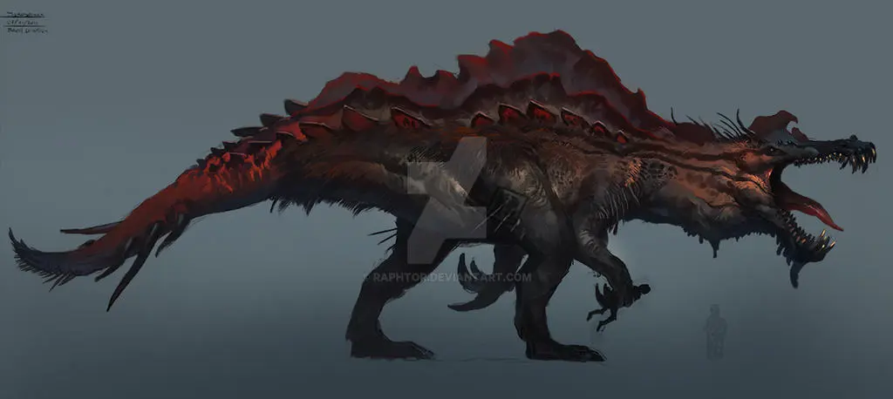
Lloigor corpóreo (comodín)
El lloigor puede hacerse corpóreo adoptando la forma de un reptil alargado y patilargo de gran
tamaño.
Se les considera como una de las posibles explicaciones a las historias de los dragones.
Armadura +4: Su piel dura y escamosa y es muy resistente.
Tamaño enorme (7): Los lloigor como reptiles adultos miden entre 8 y 10 metros de largo
y 3 de alto (+7 dureza, +4 bonificación al atacarla, +2 heridas).
Telepatía: Se comunica con cualquier criatura de forma telepática
Depresión: Un aura depresiva rodea siempre a un lloigor, todos los héroes que pasen una hora
en una localización donde hay un lloigor y fallen una tirada de Espíritu enfrentada, tendrán que coger
como trastorno mental Depresión (mayor). Si fallan la TPC, también tendrán que coger la Depresión
como trastorno mental.
Hechizos: 30 PP, Vórtice (Explosión), Telekinesis, Marioneta, Drenar magia (Drenaje de puntos de poder)
TPC: 1d12
Madre de aguas (comodín)
La madre de aguas es un críptido de la cultura popular cubana. Es una gran boa (o majá) con
unas protuberancias en la cabeza parecidas a cuernos y con poderes mágicos que habita las
zonas húmedas de la isla. Se cuenta de ellas de todo, desde que roban niños para devorarlos hasta
que protegen a las comunidades agrícolas de ladrones y enemigos o que han ayudado a viajeros perdidos
a salir de pantanos y humedales. Son inteligentes pero muy escurridizas y difíciles de ver.
La teoría más probable de su creación es que sean algún tipo de creación genética de la serpigente
para crear una raza inferior de siervos. Seguramente algunos ejemplares escaparon o fueron liberados
por la serpigente y sus descendientes han llegado hasta nuestros días.
Los noctivagos son unos seres con una grandes alas de murciélago y colas con pinchos afilados. Tiene tentáculos
en vez de extremidades y cuerno en lo que sería su cabeza. Su piel es oscura y de una textura
entre gomosa y aceitosa. Recuerdan a demonios o gárgolas. Son bastante apacibles y nada agresivos, pero es difícil
negociar
con ellos, si han recibido una orden la cumplen sin preguntarse porque. Sirven principalmente
al dios Nodens y tienen buenas relaciones con los gules. Proceden de las Tierras de los Sueños y se sabe, aunque
no muy bien, que pueden
moverse entre la Tierra de los Sueños y nuestro mundo. Aunque tienen poderosos tentáculos y una cola afilada
normalmente reducen a sus enemigos con cosquillas. Puede que parte de los antiguos mitos de demonios alados
y de gárgolas sean fruto de estos seres.
Armadura +2: Su piel gomosa y es bastante resistente.
Volar: Paso volando 12.
Cosquillas: Los noctivagos pueden intentar hacer una acción de Presa con su cola. En caso de
conseguir
inmovilizarla, como acción gratuita, puede hacer cosquillas con la cola a su presa. Si la presa falla estará
1d6 turnos
aturdido debido a que se rie descontroladamente. Pasado esos turnos la presa puede tratar de escapar y el
noctivago volver a hacerle cosquillas. Normalmente, cuando consigue aturdir a la víctima toman altura
y lo dejan caer.
TPC: 1d6 (manada)
Pólipos volantes (secuaz)
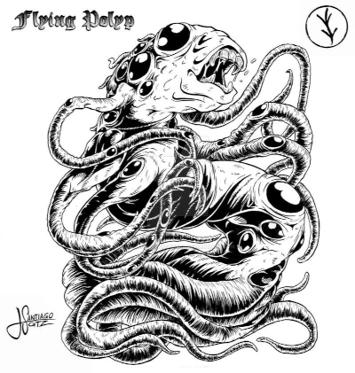
Los pólipos volantes son una raza extraterrestre que como bien dice su nombre tienen
forma de pólipos, un gran tronco con gran cantidad de pseudópodos en uno de los extremos.
No tienen sentidos como los humanos, de hecho, son ciegos, pero usan sus otros sentidos
para poder moverse por la oscuridad sin problemas o sentir a través de las paredes.
Son semi materiales, no son del todo materiales, pero tampoco totalmente incorpóreos. Son lo
suficientemente materiales para interactuar con los objetos y los suficientemente incorpóreos
para que los vientos los sostengan y para que puedan hacerse invisibles.
Como su nombre también indica pueden volar, generando vientos debajo suyo que hacen
un ruido característico, pero pueden arrastrarse si fuera necesario. Tiene cierto control
de los vientos de forma puede invocarlos a su voluntad.
Durante milenios dominaron la Tierra antes de la aparición de los humanos, pero con
los siglos han ido decayendo hasta casi extinguirse. Los pocos que han sobrevivido viven
ahora escondidos en cavernas.
Se cree que son inteligentes, pero su forma de pensar es tan extraña que muchas de las
decisiones que toman parecen no tener sentido.
Armadura +2: Su gruesa piel les confieren una buena armadura.
Tamaño +5 Los pólipos son del tamaño de un hipopótamo (+5 dureza, +2 bonificación
al atacarla, +1 heridas)
Sentidos extraterrestres: No tienen sentidos como los humanos, es por ello que no sufren
penalizaciones por iluminación o por cobertura (aunque po puedan atacar si podrán verte). Todas
las tiradas de Sigilo sufren un negativo de -4, ya que los humanos no entendemos realmente como perciben
y por tanto como podemos ocultarnos a sus sentidos.
Volar: Paso volando 12. Mediante el control de los vientos pueden volar.
Dominio del aire: Pueden usar este hechizo a voluntad sin necesidad de gastar PP.
Invisibilidad: Pueden usar este hechizo a voluntad sin necesidad de gastar PP.
Tentáculos: FUE+d6. Suelen tener entre 10 y 15 tentáculos. Por ronda pueden usar 3 tentáculos
para atacar. Cada tentáculo tiene un alcance de dos casillas y son independientes, es decir, no reciben
penalizadores, por ejemplo, por acciones múltiples.
TPC: 1d10
Los pólipos ya son de por si enemigos temibles, pero pueden ponerles hechizos si quieres
aumentar su dificultad. Ten en cuenta que deberían ser hechizos ofensivos como Proyectil o
Confusión que tenga un ornamento basado en el aire.
Profundo (secuaz)
Los Profundos son unas criaturas humanoides acuáticas mezcla de pez y rana. Tienen cabezas de pez con
unos grandes ojos sin párpados y agallas en el cuello. Pies y manos palmeadas que acaban en zarpas.
Su piel resbaladiza de sapo, que se llena de escamas en la zona de la espina dorsal, es de color
gris verdoso aunque su vientre es blanquecino.
Solo mueren de forma violenta. Según las leyendas viven eternamente en el fondo del mar en
asentamientos submarinos, sirviendo a Dagón e Hydra y esperando el momento adecuado para
alzarse de las profundidades y acabar con la raza humana.
Al ser inmortales no paran de crecer y hacerse más poderosos. Esto hace que los individuos más
ancianos son los más grandes y poderosos. Cuando esto ocurre es más raro aún que salgan a
la superficie. De hecho, se considera que Hydra y Dagón son profundos muy muy antiguos y por tanto muy
poderosos. Hay teorías que cree que todo profundo es un primigenio en potencia si se le dan eones
de tiempo.
Acuático: Paso nadando 6. Pueden respirar bajo el agua sin problemas y tampoco
tienen problemas con la presión a grandes profundidades.
Armadura +2: Escamas y piel rugosa.
Inmunidad a la edad, el veneno y las enfermedades: No pueden morir de enfermedad, de
viejo o por venenos.
Garras: Fue+d4
Tridente: Fue+d6. +1 Parada, a dos manos.
Rituales: Atraer a los peces
TPC: 1d4 (manada).
Líder profundo (secuaz)
Dentro de cada comunidad profunda el más viejo y por tanto el más poderoso suele ser el líder.
Han vivido tanto años que han aprendido a combatir y algo de magia y no han perdido cualidades físicas.
De hecho suelen ser más fuertes y resistentes que un profundo normal.
Acuático: Paso nadando 6. Pueden respirar bajo el agua sin problemas y tampoco
tienen problemas con la presión a grandes profundidades.
Armadura +2: Escamas y piel rugosa.
Inmunidad a la edad, el veneno y las enfermedades: No pueden morir de enfermedad, de
viejo o por venenos.
Garras: Fue+d4
Tridente: Fue+d6. +1 Parada, a dos manos.
Hechizos: PP 8, Hidromancia, Dominar a las bestias.
Rituales: Atraer a los peces, Consagrar personas
TPC: 1d4 (manada).
Cacique profundo (comodín)
Solo hay 3 caciques profundos en todo el Caribe y son seres de bastante poder, tanto personal como político.
Son de mucho más tamaño que el resto de profundos, pero sin llegar al tamaño de profundos míticos como Dagón o
Hydra.
Ventajas: Hechicería primigenia, Nuevos poderes x2, Puntos de poder
Capacidades especiales:
Acuático: Paso nadando 6. Pueden respirar bajo el agua sin problemas y tampoco
tienen problemas con la presión a grandes profundidades.
Armadura +2: Escamas y piel rugosa.
Tamaño grande 4: Miden unos entre 4 metros de altura (+4 dureza, +2 bonificación al atacarla, +1
herida).
Inmunidad a la edad, el veneno y las enfermedades: No pueden morir de enfermedad, de
viejo o por venenos.
Garras: Fue+d4
Tridente: Fue+d6. +1 Parada, a dos manos.
Hechizos: PP 16, Hidromancia, Dominar a las bestias, Pudrir carne, Invocar los apéndices de Dygra.
Rituales: Atraer a los peces, Consagrar personas
TPC: 1d8 (manada).
Híbrido de profundo (secuaz)
Los profundos pueden hibridarse con los humanos. Estos híbridos parecen humanos pero según van
creciendo empiezan a tomar rasgos de pez:
piel pálida y escamosa, ojos saltones, agallas, andares patosos y cuando llegan a la madurez suelen
sentir la llamada del mar donde
se adentran para desaparecer tras transformarse en profundos. Suelen ser seres ariscos y antisociales
con tendencias violentas
y no suelen destacar por su intelecto, pero son muy útiles por su capacidad de infiltrarse entre
humanos..
Para hacer un híbrido añádele estas características a un PNJ.
Habilidades: Cthulhunés d6
Desventajas: Feo menor si es joven y mayor si es adulto. Suelen tener otras desventajas
como
Analfabeto, Marginado o Sanguinario.
Capacidades especiales:
Semiacuáticos: Paso nadando 4. Pueden respirar bajo el agua sin problemas, pero no son
tan hábiles
nadadores como un profundo completo.
Inmunidad a la edad, el veneno y las enfermedades: No pueden morir de enfermedad, de
viejo o por venenos.
Retoño oscuro (comodín)
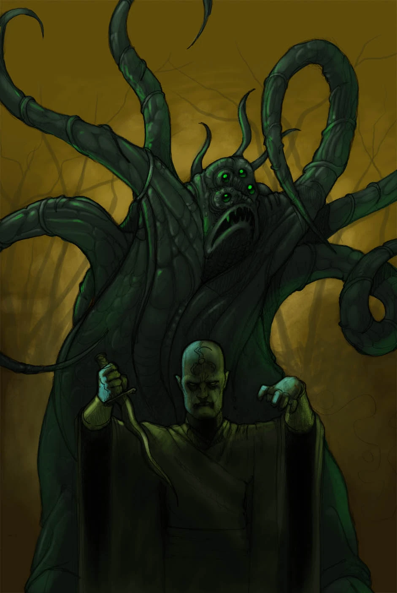
Los retoños oscuros son unas masas informes de tentáculos con varias bocas. Para desplazarse usan
tres patas acabadas en pezuñas.
Miden de 4 a 6 metros de altura. Son vástagos de la diosa Shub-Niggurath y normalmente aparecen en
las invocaciones en vez de su madre, la diosa de la fertilidad.
Masa informe: Como muchos otros monstruos no tiene puntos débiles como
cabeza, cuello, por lo que los golpes apuntados no consiguen ningún extra. Por ejemplo,
disparar a una boca no sirve de nada, ya que hay muchas más.
Inmunidad: A explosivos y armas de fuego
Tentáculos: Fue+d6, pueden hacer dos ataques independientes por turno sin tener
penalizadores Por
hacer varias acciones o por mano mala.
Tamaño grande (4/6): Los retoños miden entre 4 y 6 metros y un
par de metros de diámetro (+4/6 dureza, +2 bonificación al atacarla, +1 herida).
Apariencia de árbol: Pueden usar su sigilo solo para parecer ser arboles en la lejanía.
En cuando
te acercas o se mueven la ilusión se rompe.
TPC: 1d8
Sabuesos de Tíndalos (secuaz)
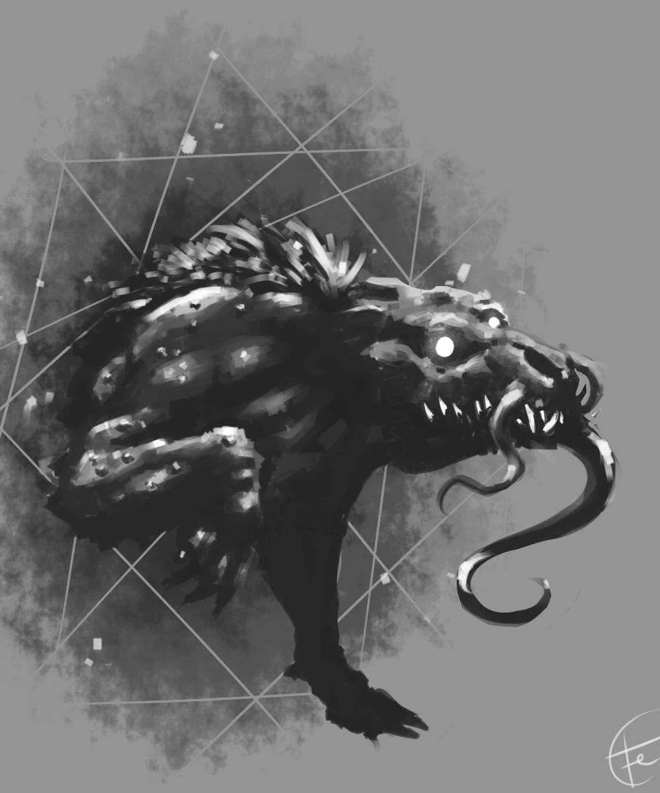
Los perros o sabuesos de Tíndalos son unos seres inmortales que habitan la época en la que la Tierra cuando la
vida solo eran unos pocos seres
unicelulares. Se dice que viven entre los ángulos del tiempo, mientras que el resto de seres vivimos en las curvas
del tiempo.
No se sabe muy bien su forma exacta, ya que nadie ha sobrevivido a su ataque. Cuando alguien viaje a través del
tiempo y se acerca a su época, ellos lo
notan y van avanzando a través de los ángulos tiempo hasta que lo encuentran y lo destruyen. Fueron creados a
partir de restos ADN
de dioses y es por ello que tienen formidables poderes.
Los perros de Tíndalos representan todo lo que es impuro y odian todo lo que es puro. Desean corromperlo o
destruirlo.
Esta naturaleza impura vincula a los perros con las formas angulares, pues estas carecen de la pureza que poseen
las formas curvas.
Como ya hemos dicho pueden moverse por los ángulos del tiempo y el espacio y la forma má segura de protegerse
sería
en una habitación sin ángulos, por ejemplo una habitación donde las juntas entre paredes, techo y suelo hayan sido
rellenadas
de cemento de forma que haya ángulos rectos.
Armadura +2: Su pelaje y su gruesa piel les confieren una buena armadura.
Garras: FUE+d6
Mordisco: FUE+d6
En fase: El sabueso vibra temporalmente con loq ue está y no está. Esto le otorga
-2 a todos los intentos de impactarle.
Regeneración rápida: Realiza una tirada de curación natural por ronda, pudiendo
sanar de este modo cualquier herida. Si pierde todas su heridas no podrá regenerarlas
y volver a la vida.
Inmunidad: Ataques físicos como armas de corte, pistolas, fuego, electricidad, ...
Debilidad: Magia y alta tecnología. Las armas encantadas y las pistolas lanzarrayos
pueden dañarlos normalmente.
Telepatía: Se comunica telepáticamente con todo tipo de seres inteligentes.
Teleportación: Una vez por turno y con un solo punto de coste de movimiento. Puede entrar
en zonas angulares como esquinas de la pared y aparecer en otra esquina siempre que este a menos
de 8 casillas. No podría teleportarse si es encerrado por dentro de una esfera.
Sentidos temporales: Puede rastrearte a través del tiempo. Es decir que, si viajas en el
tiempo y escapas de vuelta a tu tiempo, podrá olfatearte hasta tu epoca actual.
Hechizos: 10 PP, Detección arcana, Drenaje de puntos de poder. Si lo crees
necesario puedes darles más hechizos.
TPC: 1d10 (manada)
Serpigente (secuaz)
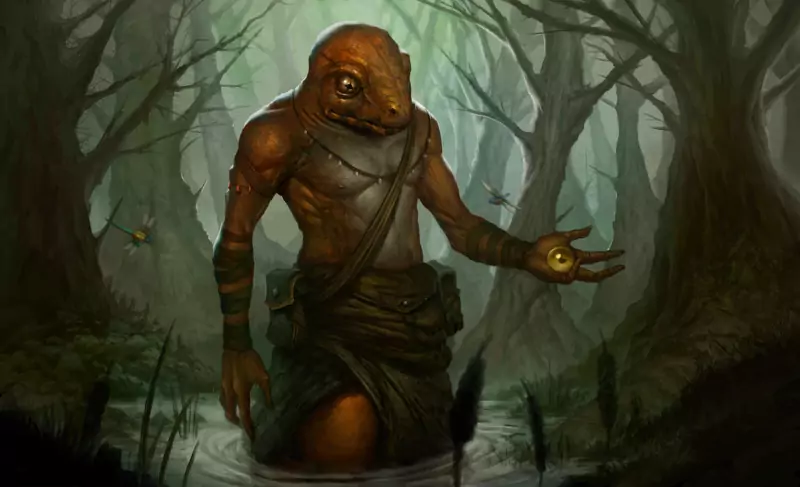
La serpigente son humanoides escamosos de rostro y cola reptiliano.
Dominaron la tierra durante miles de años con su magia y su ciencia y esclavizaron a la raza humana.
Pero su imperio cayo y su especie fue degenerando hasta hoy. Quedan ya muy pocos asentamientos de
serpigente
y normalmente se ocultan de los humanos. Aun así, siguen siendo poderosos magos y sus desarrollos en
genética
pueden crear terribles mutaciones, desde bestias de guerra mutantes hasta terroríficas enfermedades.
Suelen infiltrarse en las comunidades humanas haciéndose pasar por humanos para investigarnos y
aprender como
exterminarnos o para probar sus experimentos genéticos.
Adoran a Yig el dios serpiente como su padre y creador, aunque pequeñísimos grupos le rezan a
Tsathoggua, el Durmiente de N'kai.
Como curiosidad diremos que la serpigente no es una creación de Lovecraft sino de su amigo
Robert E. Howard. Antes que tu mesa, Conan ya machacaba serpigente en sus relatos.
Serpigente científico (secuaz)
Puedes encontrarlos en sus guaridas subterráneas rodeados de todo tipo de herramientas científicas
buscando la forma de erradicar o esclavizar a la raza humana con su magia y su ciencia.
Mordisco venenoso: Fue+d4. El mordisco de la serpigente es venenoso, su víctima debe
pasar
una tirada de Vigor inmediatamente o perderá un 1d6 adicional de daño. Puede usar este ataque 3
veces por escena.
Hechizos: 12 PP, Conoce 3 hechizos al azar y Disfraz para poder moverse dentro de la
sociedad humana.
TPC: 1d6
Serpigente soldado (secuaz)
Son las fuerzas de choque de la serpigente, crueles y brutales con los humanos no sienten ningún tipo
de reparos en segar sus inútiles vidas.
Mordisco venenoso: Fue+d4. El mordisco de la serpigente es venenoso, su víctima debe
pasar
una tirada de Vigor inmediatamente o perderá un 1d6 adicional de daño. Puede usar este ataque 3
veces por escena.
Hechizos: 8 PP, Conoce 1 hechizos al azar y Disfraz para poder moverse dentro de la
sociedad humana.
TPC: 1d6
Shoggoth (comodín)
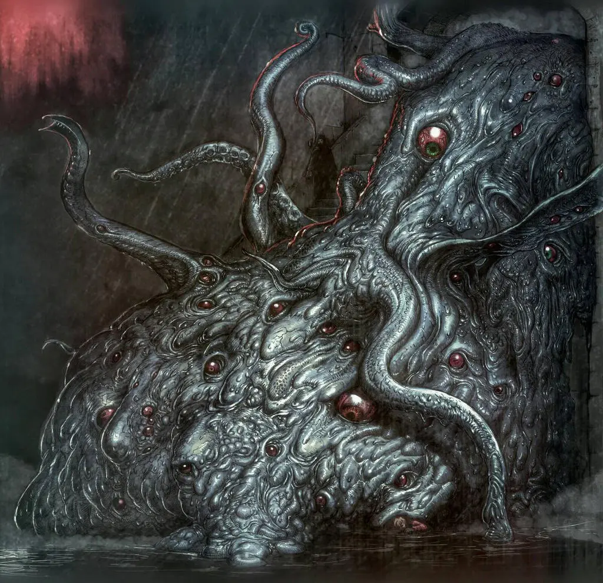
Los shoggoths son masas informes y burbujeantes de protoplasma. Tiene un tamaño de de unos 6 metros de
diámetro y unos 3 de altura. Pueden generar ojos y tentáculos en cualquier parte de su estructura.
Fueron
creados por Los
Antiguos como mulas de carga en la construcción de sus ciudades acuáticas. No quedan muchos pero aun
se pueden
encontrar en oscuras fosas marinas sirviendo a los profundos.
A lo largo de los milenios han ido evolucionando haciéndose anfibios y aumentando su inteligencia
hasta tener
una inteligencia humana,
aunque tampoco es que sean muy inteligentes. Se conocen casos en los que han desarrollado la capacidad
de habla.
Ventajas: Barrido (puede sacar tentáculos de cualquier parte de su cuerpo y atacar a todos
los que le rodean).
Capacidades especiales:
Acuático: Paso nadando 4.
Armadura +4: Su piel dura y gomosa y es bastante resistente.
Impávido: Son un engendro creado genéticamente por los antiguos.
Masa informe: Como muchos otros monstruos no tiene puntos débiles como
cabeza, cuello, por lo que los golpes apuntados no consiguen extras.
Tamaño 6: 6 metros de diámetro (+6 dureza, +2 bonificación al atacarla, +1 herida).
Tentáculos: FUE+d6
Regeneración rápida: Realiza una tirada de curación natural por ronda, pudiendo
sanar de este modo cualquier herida excepto las creadas por fuego o electricidad.
Inmunidad: Ataques físicos como armas de corte, pistolas, ...
Debilidad: Fuego y electricidad. Podrían ser dañados por artilugios incendiarios o
explosivos como fuego griego o granadas.
TPC: 1d10
Shoggoth Islote (comodín)
Este shoggoth ha crecido descomunalmente de forma que se ha convertido en una isla flotante. Con los
años ha
ido acumulando entre
su protoplasma resto de barcos que ha hundido, le han crecido sargazos e incluso un poco de vegetación
terrestre
y la parte superior que no está
sumergida se ha endurecido como si fuera piedra por acción del sol. Desde lejos puede parecer un
pequeño islote
sin cartografiar, pero una vez encima una tirada
Notar les dirá que han caído en una trampa mortal.
Ventajas: Barrido (puede sacar tentáculos de cualquier parte de su cuerpo y atacar a todos
los que le
rodean).
Capacidades especiales:
Acuático: Paso nadando 4.
Armadura +4: Su piel dura y gomosa y es bastante resistente.
Impávido: Son un engendro creado genéticamente por los antiguos.
Masa informe: Como muchos otros monstruos no tiene puntos débiles como
cabeza, cuello, por lo que los golpes apuntados no consiguen extras.
Tamaño 8: 12 metros de diámetro (+8 dureza, +4 bonificación al atacarla, +2 herida).
Tentáculos: FUE+d6
Regeneración rápida: Realiza una tirada de curación natural por ronda, pudiendo
sanar de este modo cualquier herida excepto las creadas por fuego o electricidad.
Inmunidad: Ataques físicos como armas de corte, pistolas, ...
Debilidad: Fuego y electricidad. Podrían ser dañados por artilugios incendiarios o
explosivos como fuego griego o granadas.
TPC: 1d12
Vampiro de fuego (secuaz)
Los vampiros de fuego son unos seres gaseosos e inteligentes que al contacto con atmósferas ricas en oxigeno
estallan en llamas.
Su forma puede variar desde una especie de enjambre de cientos de chispas de fuego hasta bolas o espirales de
fuego.
Sirven a los primigenio Cthugha y Fthaggua (dos primigenios relacionados con el fuego). Ambos los usan como
avanzadilla
cuando son invocados o cuando van a conquistar un mundo. También pueden ser invocados independientemente.
Como seres de fuego que son se les puede atacar con agua o arena y para protegerse de ellos es
buena idea introducirse en masas de agua. Absorben poderes y recuerdos de aquello que queman y es por ello que
se usan como avanzadilla, ya que recopilan muy buena información de lo que queman. Un brujo inteligente
podría invocarlos para atacar a sus enemigos y a la vez sacarles información.
Invulnerables: Son gaseosos y solo pueden ser atacados con agua o con magia (que no tenga
ornamentos de fuego).
Lenguas de fuego: Pueden hacer ataques cuerpo a cuerpo (tirada Pelear) con sus lenguas de fuego de
2d6 de daño.
Proyectiles de fuego: Tratar como un hechizo de Proyectil con ornamento de fuego. Tiene 6 PP.
Toque vampírico: Si el vampiro consigue hacerte daño por fuego (cuerpo a cuerpo o a distancia), hay
que
hacer una tirada enfrentada de Espíritu contra Espíritu y obtendrá un item de información (más o menos util)
o 2 PP.
Tamaño -2: Tiene un tamaño pequeño. Todo ataque dirigido a ellos tiene un -2.
Debilidad Agua: El agua (y otras materiales que extingan el fuego como la arena) les hace daño, por
cada 5 litros de agua que se le lance se puede
hacerle d4 de daño. Si se le consigue meter debajo, por ejemplo, de una cascada o dentro del agua
muere directamente.
TPC: 1d4 (manada)
El yeho (comodín)
El yeho es un críptido, una animal a medio camino entre humano y primate que vive en las selvas de las islas del Caribe. Su
descripción más acertada sería la un simio de tamaño gigante, como un gorila de montaña o
un orangutan pero más grande y de pelaje marrón. Es un ser solitario y bastante esquivo que vive en
el interior de la jungla y que evita a los humanos. Para ser un animal es tremendamente
inteligente pudiendo hacer trampas y emboscadas y usar herramientas sencillas.
Tamaño 4: Es del tamaño de un hipopotamo (dureza +4, + 1 herida y +2 a impactarle ).
Garra/Mordisco: FUE+d6
Botín: 1d4 en su madriguera
Yithianos
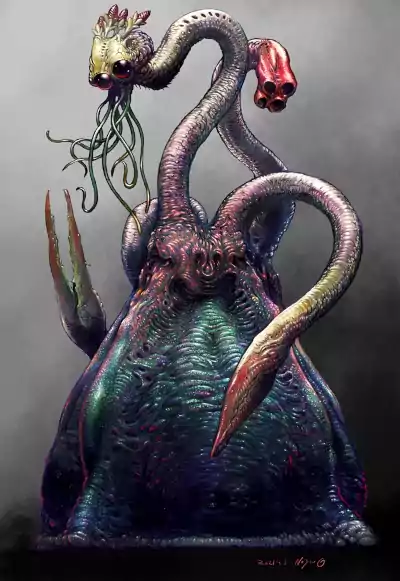
Los yithianos es una raza extraterrestre que no tiene forma corpórea. Vinieron a la Tierra para escapar de
la destrucción de su mundo y se vieron obligados a tomar los cuerpos actuales, una raza de moluscos cónicos
mucho más grandes que un humano con 4 pseudópodos en la parte superior, dos acaban en pinzas, otro en unos ojos y
otro en una especie de boca.
Se caracterizan por su control del viaje a través del tiempo. De hecho, se les conoce como Gran raza, ya que han
sido
capaces de controlar los viajes temporales. Cuando te encuentres con un yithiano debe tener en cuenta que igual
estás
hablando con alguien de tu pasado o de tu futuro con todas las implicaciones que tiene eso.
Pueden mandar su mente a través del tiempo y ocupar
los cuerpos de seres inteligentes de diferentes épocas. Las mentes de los cuerpos ocupados pasan al cuerpo
del yithiano y este puede usarlo para interactuar con otros yithianos. Cuando la mente yithiana vuelve
a su cuerpo, la mente del huésped vuelve a su cuerpo tras ser borrada su memoria.
Científico (secuaz)
Los yithianos son grandes científicos como demuestra su capacidad de viajar en el tiempo o sus armas de rayos.
El más simple de los yithianos está al nivel de grandes nombres de la ciencia como Isaac Newton o Émilie du
Châtelet.
Armadura quitinosa +4: Como los moluscos poseen un exoesqueleto quitinoso que les protege
de ataques.
Morfología alien: No tiene puntos débiles como cabeza, cuello, por lo que los golpes
apuntados no consiguen extras.
Tamaño +5: Mide entre 3 y 4 metros. Los atacantes añaden +2 a sus tiradas de ataque contra un
yithiano. También tiene 1 herida extra.
Pinzas: FUE+d6
Telepatía: Los yithianos son capaces de comunicarse con cualquier especie inteligente mentalmente.
TPC: 1d8
Soldado (secuaz)
Los yithianos combatieron y derrotaron a un gran enemigo, los pólipos volantes, y es por ello que
puede ser formidables combatientes, sobre todo si disponen de sus temibles armas lanzarrayos.
Armadura quitinosa +4: Como los moluscos poseen un exoesqueleto quitinoso que les protege
de ataques.
Morfología alien: No tiene puntos débiles como cabeza, cuello, por lo que los golpes
apuntados no consiguen extras.
Tamaño +5: Mide entre 3 y 4 metros. Los atacantes añaden +2 a sus tiradas de ataque contra un
yithiano. También tiene 1 herida extra.
Pinzas: FUE+d6
Telepatía: Los yithianos son capaces de comunicarse con cualquier especie inteligente mentalmente.
TPC: 1d8
Su capacidad de viajar en el tiempo no tiene reglas, ya que creemos que es más un recurso narrativo
que una
habilidad para usar en el juego. Puede que a tus jugadores se les ocurra usar a un yithiano para se intercambie
con sus yoes
del pasado y poder hablar con ellos para advertirles de un peligro. Si quieren hacerlo y se lo curran al convencer
al
yithiano el viaje en el tiempo funciona sin necesitar ningún tipo de tirada.
Yuggothiano (secuaz)
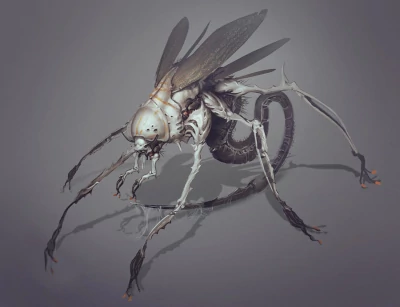
Los yuggothianos, hongos de Yuggoth o Mi-Go tienes aspecto de crustáceos aunque en realidad son parte
animal parte hongo. Tienen varios pares de extremidades terminadas en pinzas y alas membranosas funcionales. Se
comunican mediante
patrones de color en sus cabezas.
Los Yuggothianos son una raza que se dedica a moverse por el espacio e ir conquistando planetas de los que explotan
sus recursos minerales. Su asentamiento más cercano a la Tierra se encuentra ahora mismo en Plutón (que no será
descubierto
hasta 1930). Suelen buscarse aliados indígenas en los planetas que quieren conquistar que les ayuden en sus
planes. Adoran
a varios dioses primigenios como difundiendo Nyarlathotep y Shub-Niggurath y en sus planes de colonización siempre
está
difundir el culto a estos primigenios.
Los yuggothianos son famosos por sus conocimientos en cirugía cerebral que les permite extraer un
cerebro de un cuerpo humano y mantenerlo conservados en unos tubos metálicos llenos de líquido llamados
cilindros cerebrales.
Estos tubos pueden conectarse a diferentes aparatos que le permiten al cerebro, ver, oir, hablar, ...
Está tecnología les permite a los Mi-Go llevarse con ellos en sus viajes especiales a los humanos
con los mínimos riesgos para los cerebros. También saben como conservar los cuerpos y si es necesario pueden
devolver al cerebro a su cuerpo sin ningún tipo de problema.
Colono
Los colonos son la mano de obra y la fuerza de combate de los yuggothianos. Trabajan en las minas extrayendo
extraños minerales y defienden sus asentamientos secretos. Son fuertes, ágiles y resistentes.
Volar: Paso volando 8. Los yuggothianos tienen unas alas con las que vuelan.
Viaje espacial: Pueden viajar por el espacio sin sufrir ningún tipo de daño.
Tecnología Yuggoth: Puedes asignarle a un científico hasta 3 aparatos tecnológicos
con diferentes funciones que emulen diferentes poderes/hechizos. A nivel de juego, tienen 8 PP que
pueden gastar para hacer funcionar esos 3 aparatos como si fueran hechizos usando Astucia
como habilidad de lanzamiento. Recuperan esos 8 puntos en la
siguiente escena. Uno de esos aparatos puede ser uno que se injerta en su
"garganta" y que les permite comunicarse
con los humanos. En ese caso, podrán hablar 1 idioma a d6.
TPC: 1d6
Con el material adecuado un Mi-go científico puede extraer el cerebro de un humano y
meterlo en un cilindro cerebral en dos horas pasando una tirada de Medicina. El mismo tiempo
para el proceso a la inversa. La extracción de un cerebro supone una tirada de TPC d8 al sujeto
que sufra la operación siempre que no la haya permitido.
Secuaces y criaturas
Vas a necesitar llenar tus tabernas de turbios personajes de miradas perdidas, tus mercados de extraños
vendedores,
tus mares de barcos sin bandera con oscuras velas y tus junglas de animales de grandes dientes y afiladas garras
acechando entre
la vegetación. Aquí tienes todo lo necesario para rellenes todos esos huecos en tus historias.
En algunos casos te encontrarás algunas opciones de personalización muy simples del PNJ para que tu mesa no
termine por aprenderse los PNJs. Por ejemplo, los piratas pueden ser avariciosos, borrachos, cojos, mancos o
tuertos y
los agricultores puede que lleven cuchillos o machetes.
Secuaces
Aquí te presentamos toda una galería de personajes no jugadores genéricos que van a pulular por las cubiertas
de tus barcos, los callejones de tus puertos y las sendas de tus junglas. También los puedes usar como
base para tus PNJs. Si el jefe de puerto de la ciudad de Matanzas va a ser importante coge a un burócrata y
adórnalo con tus propios detalles.
Recuerda que en está ambientación muchos PNJs puedes personalizarlos con desventajas como Buscado (Mayor)
por piratería o Secreto (Mayor) por ser un cimarrón o un preso huido o con ventajas como Riqueza por tener
un tesoro escondido o con un Sexto Sentido para evitar las trampas de los cazapiratas y los intentos de
asesinatos de tus enemigos.
Marino
Los marinos abarcan a todas las personas que trabajan en un barco sin una ocupación especial. También puedes
usarlos
para personas relacionadas con los barcos como estibadores del puerto o la mano de obra no cualificada de los
astilleros.
Equipo: Cuchillo (FUE+d4) y hacha de abordaje (FUE+d6)
Pescador / Agricultor
Usa estas estadísticas para todas esas personas que habitan los puertos y los campos de cultivo de las islas del
Caribe. Pueden dedicarse a la agricultura, la ganadería, el pastoreo o la pesca ... Puedes gastar un par de puntos
de habilidad en especializarlos. Por ejemplo, si recolectan cocos, en vez de atletismo d6, deberían tener d10 para
poder trepar a las palmeras.
La Infantería de marina es una tropa a pie cuya misión consiste en defender la nave y abordar embarcaciones
enemigas. También puede hacer desembarcos y tomar posiciones en tierra o proteger instalaciones de la
marina como puertos o astilleros militares.
Ventajas: Elige 1 o más: Mr. Arreglalotodo, Intimidador, Manos firmes, Callejear
Equipo: Machete (FUE+d6) y hacha de abordaje (FUE+d6)
Oficial
Estamos hablando de todo el rango de oficiales de un navío y de puestos especializados,
desde cocinero a oficiales, pasando por perfiles especializados como timonel. Puedes gastar un par de puntos
de habilidad en especializarlos. Por ejemplo, el timonel debería tener Navegar d8 en vez de d6 o el suboficial
debería saber de cuentas y de leyes por lo que debería tener Humanidades d8 en vez de d6.
Ventajas: Elige 1 o más: Callejear, Intimidador, Mando, Manos firmes
Equipo: Sable de abordaje (FUE+d6) y pistola de chispa (5/10/20, 2d6+1, Recarga 3)
Capitán
Las aguas del Caribe parece tranquilas y cristalinas, pero en nada de tiempo se pueden convertir en turbias
y salvajes. Solo los buenos capitanes sobreviven a los huracanes, los piratas y los monstruos que surgen de los
abismos acuáticos.
Equipo: Cuchillo (FUE+d4), alfanje (FUE+d8) y pistola de chispa (5/10/20, 2d6+1, Recarga 3)
Caza piratas
Los cazapiratas son mercenarios contratados por las autoridades para limpiar sus aguas de piratas. Es
gente que muchas veces ha sido pirata y sabe como actúan y piensa un pirata. Usan tácticas digamos poco
honorables para acabar con los piratas, desde sobornos hasta a tortura y asesinato.
Ventajas: Manos Firmes, Elige 1 o más: Reflejos de combate, Mandíbula de hierro, Nervios de acero,
Soldado, Bloqueo
Equipo: Sable de abordaje (FUE+d6) y mosquete (10/20/40, 2d8, Recarga 3)
Menestral
Estamos hablando desde la herrera del pueblo hasta profesiones muy especializadas como carpintero
naval o tejedor de velas. Son gente que sabe mucho de su trabajo, pero poco más. Hacen un buen trabajo,
cobran por ello y tratan de sobrevivir. Puedes gastar un par de puntos de habilidad en especializarles.
Vamos desde dependientes de tienda hasta taberneros y todo la estructura de gente que trabaja en
las grandes empresas comerciales, desde almaceneros hasta altos directivos. Puedes gastar un par de puntos de
habilidad en especializarles.
Ventajas: Elige 1 o más: Intimidador, Callejear, Alcurnia, Rico
Equipo: Cuchillo (FUE+d4), machete (FUE+d6) y pistola de chispa (Dispar d6, 5/10/20, 2d6+1, Recarga 3,
Si es Rico)
Burócrata
Estamos hablando desde jefes de puerto a las personas encargadas del registro pasando por la gente que recauda los
impuestos o chupatintas que están detrás de un mostrador.
Ventajas: Elige 1 o más: Alcurnia, Callejear, Responsable, Rico
Adepto cultista
Estamos hablando de cultistas de nivel bajo que se dedican a hacer el trabajo sucio de la secta. Serían
los guardias, los matones, los ayudantes de laboratorio, etc. No tiene ningún tipo de poder solo
obedecen orden a la espera de ascender en la estructura del culto.
Ventajas: Elige 1 o más: Alerta, Callejear, Responsable, Ritualista
Cultista superior
Serían cultistas de alto nivel que se dedican a planear y tomar decisiones a pie de campo según las órdenes
de los círculos superiores del culto. Tienen acceso a los recursos económicos y mágicos
Ventajas: Nuevos Poderes x2, Puntos de poder, Trasfondo Arcano (Hechicería primigenia). Elige 1
o más: Alcurnia, Alerta, Callejear, Responsable, Rico, Ritualista
Hechizos: 16 PP. Manipulación elemental adaptado a su entorno, Impacto sónico, Emponzoñar arma, Oscuridad
Embarcaciones avanzadas
Ya hemos hablado antes de que por comodidad hay 5 tipos de barcos, pero está claro que habiendo modificaciones
extrañas e incluso monstruosas, Barbanegra no iba a navegar en un simple navío de guerra. El Aventura
es una nave con una terrible cabeza de demonio como mascarón de proa y un casco bulboso lleno de burbujas parecidas
a ojos y tentáculos por toda su estructura. Aquí tienes algunos navíos ya preconfigurados para diferentes
tareas. Como en el punto anterior tómalos como base para los barcos de las nemesis en tus aventuras.
Patrullera de aduanas/Guardacostas
Estas nave de combate son de las más pequeñas de su tipo, pero tienen la ventaja de su número. Nunca van solas
sino que van en parejas o dobles parejas escoltando convoyes de barcos de carga o de patrulla por las rutas más
comunes que siguen los contrabandistas.
Tipo base: Naves de combate
Tripulación: 30
Armamento: 12 cañones
Capacidades especiales:
Por parejas: Es muy raro verlas solas, siempre van varias patrulleras juntas.
Barco pirata
La mayoría de los barcos piratas que surcan el Caribe no son naves de combate como tal, sino barcos
de cargas reformados y armados con cañones. Muchos de ellos son demasiado viejos y han sido reparados
demasiadas veces y casi siempre en pesimas condiciones con pesimos materiales.
Sin embargo, todos estos problemas los compensan con mucho ingenio y mucha experiencia de sus
tripulantes. A lo alrgo de los años han aprendido de sus aciertos y fracasos y todas esas
lecciones las han aplicado en sus viejos cascarones.
Tipo base: Naves de combate
Tripulación: 40
Armamento: 24 cañones, 2 apuntado a popa y otros 2 a proa.
Capacidades especiales:
Modificaciones: El barco puede tener 1 o 2 modificaciones normales.
Barco cazapirata
Los barcos cazapiratas sueles ser barcos de combate muy parecidosa los barcos piratas
con la ventaja de que suelen ser más nuevos y modernos y no llevan una vida de tormentas y
cañonazos. Las reparaciones han sido hechas por profesionales bien pagados en astilleros.
Lo que pasa es que les falta la chispa y el ingenio que las tripulaciones piratas ponen en sus
queridos navíos.
Tipo base: Nave de combate
Tripulación: 50
Armamento: 28 cañones, 2 apuntado a popa y otros 2 a proa.
Capacidades especiales:
Modificaciones: El barco puede tener 1 modificación normal.
Barco de leyenda pirata
El Caribe esta lleno de leyendas piratas, capitanes que su simple nombre hiela la sangre, y lo
mismo pasa con sus navíos. Su forma es característica y las gentes de mar los reconocen solo con verlos.
Los hay rapidos y agiles, los hay lentos y poderosos. Los hay llenos de trucos y los hay que se caen
a trozos y que nadie sabe como flotan.
Es importante que les pongas nombre, ya que seguramente puedan aparecer más veces en tus aventuras.
Tipo base: Nave de combate
Tripulación: 60
Armamento: 32 cañones dispuestos como ellos quieran.
Capacidades especiales:
Fama: Solo con ver su silueta y su pabellón podrás a saber a quien pertenece este navío.
Su fama le precede y le otorga un +2 una tirada específica según su fama.
Por ejemplo, si tiene fama de buen marino tendrá +2 a Navegar. Si es famoso
por sus emboscadas tendrá un +2 al Sigilo. O un +2 al ataque si es conocido
por ser un asesino sanguinario.
Modificaciones: El barco puede tener 2 modificaciones normales.
Aliados: Las leyendas son leyendas por algo y tienen naves aliadas que van con ellos.
suelen ser menos poderosas y grandes. Puedes usar barcos piratas y patrulleras como plantillas
para los aliados.
Desgracia
Barbanegra perdió su amado "Venganza de la reina Ana" cuando escapó de Robert Maynard. Salvo la vida
huyendo en un barco más pequeño llamado Aventura, que paso a llamarse Desgracia (un juego de
palabras entre Adventure y Misadventure).
Mientras se lamía las heridas y se recuperaba, en los
Astilleros Reales de La Habana la RCPC reformaba su barco con todas las modificaciones que
pudiera necesitar.
Si la reina Ana y su bandera negra producia miedo en el corazón de sus enemigos,
el Aventura hiela la sangre. De hecho, las gentes de mar evitan mentar su nombre y
solo lo llaman "El navío".
Tipo base: Nave de combate
Tripulación: 60 tripulantes siendo todos o híbridos de profundo o
cultistas de la Orden.
Armamento: 32 cañones y 2 cañones yithianos en la proa y otros 2 en la popa.
Capacidades especiales:
TPC: 1d10. La mera presencia de este navío de velas negras produce horror.
Modificaciones: Ariete, Exclusa de aire en el fondo, Velas de alas de noctivago, Casco de
shoggoth y Cañones Yithianos (4)
El golpe de suerte
Así rebautizo Mary Read al barco que robo del puerto de Kingston tras escapar de la emboscada de John
Barnet. Le ha añadido una serie de modificaciones acordes a su personalidad.
Tipo base: Nave de combate
Tripulación: 52 tripulantes
Armamento: 28 cañones
Capacidades especiales:
Modificaciones: Ojos de buey en fondo del barco, Velas reforzadas,
Mascarón de anulación de magia Lloigor y Tecnología Mi-Go (navegación)
Animales salvajes
Aquí tenéis una lista de animales salvajes del manual de SWADE que puedes usar en tus aventuras
"cthulhu-pirateras":
Ave de presa: cernícalos, gavilanes bobos, caracoleros o batistas, sijí blatanero, ...
Caimán/cocodrilo: en el Caribe solo podrás encontrar caimanes.
Caballo de monta/guerra
Gato doméstico
Lobo/Perro: en el Caribe solo podrás encontrar perros.
Mula
Serpiente constrictora/venenosa
Tiburón: escualo o tiburón blanco. Hay mucha variedad de tiburones en las aguas del Caribe,
siendo el más peligroso
el tiburón toro o sarda. Sin embargo el gran blanco no está entre ellas. Es por ello que puedes usar
su características para
tiburones que por alguna razón son extremadamente grandes. ¿Quién dice que Barbanegra no tenga un
tiburón tigre
mutado gigante que siga sus órdenes mentales?
Toro: puedes usar sus estadísticas para encuentros con grandes herbívoros que protegen su
territorio en la jungla, pero hazte
un favor a ti y a tus compañeros de mesa y evita usarlo para que montar una corrida de toros. Nadie
quiere eso, en serio.
Otros animales salvajes
Jaguar:
El jaguar es el felino más grande del caribe. Es fundamentalmente solitario y
caza haciendo emboscadas
Visión nocturna: Los leones ignoran las penalizaciones por iluminación de
penumbra y oscuridad.
Botín: 1d4 (normalmente en su madriguera)
Manta:
Estos increíble peces emparentados con los tiburones se caracterizan por su extraña
forma y su cola con un aguijón venenoso. Como tiburones y delfines pueden saltar fuera del agua para atacar.
Aguijón venenoso: Fue+d4. El aguijón de la cola es venenoso, su víctima debe
pasar una tirada de Vigor inmediatamente o quedará aturdido.
Saltar: Puede usar su habilidad de Atletismo para saltar fuera del agua y hacer ataques fuera del
agua.
Mantarraya:
Es la especie más grande de manta y puede llegar a igualar en tamaño a los grandes tiburones.
Sin embargo, no tienen aguijón venenoso. Como tiburones y delfines pueden saltar fuera del agua para atacar.
Se alimentan de plancton y solo atacan si se ven en peligro.
Tamaño +3: +1 herida. Hasta 7 metros de envergadura.
Saltar: Puede usar su habilidad de Atletismo para saltar fuera del agua y hacer ataques fuera del
agua.
Delfín:
Estos cetáceos son uno de los seres mas inteligentes del reino animal. Se sabe de
historias de delfines qe han ayudado a náufragos, pero también sabemos que pueden ser vengativos y crueles.
Ecolocación: Su sentido sonar le permite ignorar las penalizaciones por pobre iluminación.
Cazador en manada: Los delfines cazan en manada y son muy inteligentes. Es por ello que son capaces
de ejecutar tácticas para aprovecharse de su número y hacer movimientos inteligentes como atacar a puntos
débiles o hacer jugarretas y juego sucio.
Acrobacias: Puede usar su habilidad de Atletismo para hacer piruetas fuera del agua. También
pueden saltar y hacer ataques fuera del agua.
Quién es quién en el Caribe
En estas páginas encontrarás a la gente más importante de los relatos salvajes de ¡Arrr! Cthulhu. Todos estos PNJs
habitan este Caribe de los Mitos y son fuerzas capaces de cambiar la historia. Eres libre de hacer con ellos lo que
quieras y cambiar los detalles que no te gusten.
Aquí podrás encontrar heroínas y campeonas del bien como Mary Read o villanos que supuran maldad como Edward
Teach o Hernando de Villalba. Pero también encontraras gente normal como Isadora que solo quiere vivir
tranquila en su biblioteca u Onofre que busca volver a casa.
Las sugerencias de interpretación están pensadas para ayudarte a darles carácter pero recuerda que solo
son sugerencias.
Mary Read (comodín)
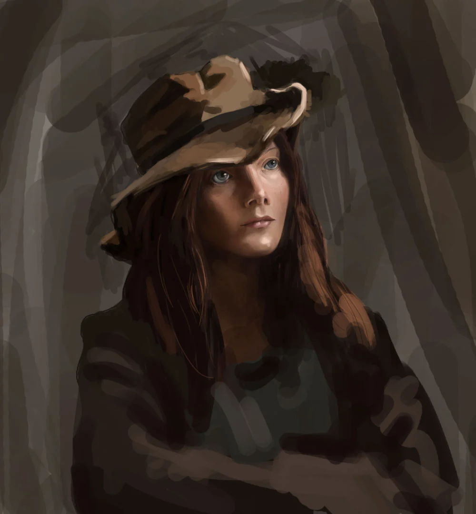
Mary Read es la unica que pone en serios problemas a la Orden. Es lo que nos separa del Armagedón
primigénico que busca Villalba. Y si ella cae caemos todos. sus enemigos son muchos, sus aliados pocos
y su tarea es una terrible carga.
Ahora mismo sabe que sola no podrá triunfar y necesita encontrar a adalides del bien que la
ayudan. Puede que sus visiones le muestren un grupo de parias en su momento más bajo que pueda ayudarla.
Mary es un diestra luchadora, tienes estudios y cultura, de hecho, escribe para la VLH y tiene conocimientos
de los mitos y maneja algo la magia. Y no hemos de olvidarnos de la bendición/maldición familiar de las visiones
profeticas. Pero realmente el verdadero fuerte de Mary es que es una líder nata. Sabe motivarlos y saca a la su
tripulación lo mejor de ellos mismos. Su gente la seguiría al infierno sin pensarselo y dandolo todo sin excusas
y sin dudas.
El don de Casandra: La mujeres de la familia de su madre tienen el poder de
ver el futuro. No es algo que controle, son flashes que vienen de vez en cuando.
Hechizos: 10 PP, Canto de Babalú Ayé, Vibración dimensional
Rituales: Brindar por el mar, Silbar al viento
Equipo: Sable de abordaje (FUE+d6), Protecciones de cuero +1, 2 Pistolas de
chispas cargadas
Sugerencia de interpretación: Eres una líder nata. Eres tremendamente decidida y
carismática y muy muy intensa. Todo lo que dices parece un discurso inspirador. Sabes
hacer una entrada y, sobre todo, una salida dramática en el momento justo.
Edward Teach alias Barbanegra (comodín)
La leyenda de Edward Teach es de sobras conocida, sanguinario, temible y osado. Pero hoy en
día no es más que el perro faldero de la Orden. La libertad de la que tanto se jactaba hace
solo unos años ya no existe, solo puede obedecer y agachar la cabeza.
La Orden tiene su corazón y si les desafía o les desobedece morirá de la forma más horrible.
Si alguien le ofrece una vía de escape seguro que para de pelear y estará encantado de escuchar.
Sin corazón: Al son de cantos de "kalima, kalima, ...", el propio Villalba extrajo el corazón de Teach y
con él su alma. Mientras Villalba tenga su corazón, Teach está obligado a obedecerle o podría matarle
simplemente estrujando su corazón con sus manos. Como ventajas Edward tiene un Resistencia Arcana Mejorada y los
hechizos de Marioneta y Manipulación de recuerdos fallan siempre. Si se lanza hechizos de detección mágica se
verá un gran agujero negro donde debería estar su corazón. Una tirada de Mitos permitirá saber que le han quitado
el corazón y los detalles de esta maldición.
Hechizos: 8 PP, Canto de Babalú Ayé, Vibración dimensional
Rituales: Silbar al viento, Cegar el mascarón de proa, Brindar por el mar,
El clavo en la calavera, Canción pirata, Astillas en la planta de los pies
Equipo: Cimitarra (FUE+d8), Protecciones de cuero +1, 2 Pistolas de
chispas cargadas
Sugerencia de interpretación: Eres Edward Teach alias Barbanegra, la leyenda pirata, el terror
de los mares
del Caribe. Nada ni nadie puede detenerte, ni la muerte, y ahora cuentas con poderosos aliados de otras
dimensiones.
La arrogancia no es tal si respaldas tu palabras con hechos. Eres el mejor y punto. Si algo se
interpone en tu camino
lo eliminas. Que digo lo eliminas, lo destruyes y lo destierras alguna dimensión perdida en el tiempo
y el espacio.
Hernando de Villalba (comodín)
Hernando de Villalba es la gran nemesis de ¡Arrr! Cthulhu. Tremedamente poderoso a nivel
personal y mágico y tremedamente poderoso a nivel político y social. Hace y deshace a su gusto en el
Caribe controlado por los españoles y su inmensa fortuna y las almas que peude comprar con ella
le permiten tener mucha influencia en la política de Jamaica y Saint-Domingue.
Solo hay un sitio a donde su poder no llega, las cubiertas de los barcos piratas. Frustran
sus planes, roban sus riquezas y sacan a la luz sus secretos. Y los peores son esos
patéticos de la Hermandad del Sargazo que quieren evitar su plan maestro para ser inmortal.
La gran obsesión de Hernando es la inmortalidad y sabe que solo el Cthulhu en su infinito poder
puede otorgarsela, así que está dispuesto a buscar su ciudad y a despertarlo de su eterno sueño
para conseguirla.
Hernando de Villalba tiene más de 100 años y solo aparenta tener unos 60 años. Todo
es debido a la sangre de profundo que corre por sus venas. Puede que llegue a los 130 o 140
años. Se le empieza a acabar el tiempo en este mundo y esto es algo que le preocupa. Menos
mal que sus predicciones y suposiciones sobre Cthulhu le darán la inmortalidad que tanto busca.
Desventajas: Exceso de confianza, Megalomania (mayor), Paranoia (mayor),
Fobia(mayor, miedo al fuego), La llamada de Cthulhu (menor)
Ventajas: Alcurnia, Asquerosamente rico, Seguidores, Resistencia arcana, Nuevos
Poderes x6, Puntos de Poder x3, Fervor, Recuperación Rápida, Canalización, Trasfondo
Arcano (Hechicería primigenia)
Capacidades especiales:
Hechizos: 48 PP, Augurios del soñador, Sombras lacerantes, Invocar los apéndices de Dygra,
Emponzoñar arma, Expulsar ente, Vibración temporal, Perdido en el tiempo, Invocar vampiro estelar,
Círculo de invocación, Hidromancia, Incineración de Cthugha, Nubes de Ithaqua
Longevidad: Gracia a su sangre profunda puede llegar a vivir hasta 130 o 140 años.
Semiacuáticos: Paso nadando 4. Pueden respirar bajo el agua sin problemas durante media
hora y no se ve afectado por la presión.
Rituales: Bendecir un arma, El clavo en la calavera, Cornucopia, Consagrar
persona, astillas en las plantas de los pies, Adivinación con Mandiocas
Biblioteca de los Mitos: Tiene una buena biblioteca de los Mitos en su mansión que le otorga un +3 a
las tiradas de Mitos si puede consultarla.
Equipo: Amuleto con símbolo arcano (+1 tiradas enfrentadas de defensa de hechizos), Llave
de plata, Arma lanzarrayos yithiana
Sugerencia de interpretación: Eres un ser causidivino que lleva más de un siglo entre los
simples mortales y si tus planes se cumplen te convertiras en un díos viviente, así que es normal que
consideres como hormigas a todos los que te rodean. Sus vidas son insignificantes para tí, meras
herramientas, y no hay problemas en acabar con las vidas de los que te sirven si sirve a tu casusa.
Si alto te irrita es que algo no salga como quieres y, en ese caso, alguien tiene que pagarlo.
César (comodín)
Cesar es el lugarteniente de Barbanegra y a la vez el mejor recurso de la Hermandad del Sargazo.
César lleva desde que fue reclutado por Barbanegra en los Cayos de Florida siendo un espía para
la Hermandad.
Se cuenta que era el jefe de una tribu de África Occidental que fue engañado, secuestrado y llevado
al Caribe en un barco esclavista. Se granjeo la amistad de uno de los marineros y junto a sus compañeros
y con la ayuda del marinero escaparon del barco.
Durante un temporada se dedicaron a la piratería en los cayos de Florida. Se hacían pasar por náufragos
y cuando les subian al barco lo tomaban y lo robaban. Se llevaba a los prisioneros ricos a una
isla desierta donde pedía rescate. Tras amasar una buena suma de dinero se compro un barco con el que
se dedico a aatacar barcos en alta mar.
Amaso una gran fortuna que se dice enterro en Cayo Elliot, pero solo el sabe la ubicación exacta.
Su gran fama terminó atrayendo a Barbanegra que le ofrecío un puesto como su lugarteniente.
Lo que nadie sabe es que el marinero era un miembro de la Hermandad del Sargazo infiltrado en el
comercio de esclavos para avisar a la hermandad de los movientos de la Orden dentro del tráfico
de seres humanos.
Este marinero le ayudo a cambio de que algún dia le devolviera el favor. Ese favor se lo devolvió
el día que Barbanegra firmo su pacto con la Orden y Cesar prometió informar a la Hermandad. Lleva
siendo un confidente desde hace 4 años y aunque se juega la vida, su información ha servido para
truncar los planes de la RCPC y la Orden y salvar muchas vidas.
Si bien empezo para devolver la deuda de vida que tenía con la Hermandad, las cosas que ha visto
hacer a Barbanegra por orden de la Orden han hecho se plantee su forma de vida. Si bien no es
un miembro oficial, ya que no ha jurado, cree totalmente en su la cauda de la Hermandad.
Ventajas: Barrido, Bloqueo, Esquiva, Miembro de la hermandad del
sargazo, Rapido, Riqueza, Trasfondo Arcano (Hechicería primigenia)
Capacidades especiales:
Lucha con machete: Su habilidad de pelear cuando blande
un machete o un estoque es de d12 y su daño es de +1.
Rituales: Silbar al viento, Cegar el mascarón de proa, Brindar por el mar, Cornucopia
Equipo: Machete (FUE+d6+1), Protecciones de cuero +1, 4 Pistolas de chispas cargadas
Sugerencia de interpretación: Eres muy tranquilo, callado y observador. Lo tuyo es
quedarte detrás de Babrbanegra mientras hace su númerito y ver como reacciona la gente. Luego
te acercas y le cuentas lo que has visto. No eres de grandes discursos si no de charlas privadas
tanto para animar como para intimidar a tus camaradas o tus rivales.
Hermanos García
La familia García es una rica poderosa familia de armadores de Santo Domingo. Se dedican a flotar barcos
comerciales principalmente para la RCPC. Su padre Eusebio les lego una gran fortuna y un gran poder. Los
secretos familiares están saliendo a la luz y parece que tendrán consecuencias para todos los hermanos García.
Antonio García (comodín)
Antonio García es el primogénito de la familia García. Es el dueño de la compañía desde hace un par de años.
No es un gran comerciante, pero la situación en la que dejo su padre la empresa, sus excelentes subordinados y
el apoyo de la RCPC hace que la empresa vaya muy bien sin que él tenga que implicarse mucho.
Su principal debilidad es el juego. Es un ludópata de manual con la suerte de que la empresa
que dirige genera más dinero del que puede gastarse. Además, es tremendamente creyente y el juego es pecado.
Es por ello que se disfraza para acudir sin guardaespaldas a las partidas de naipes que suele haber en las
tabernas de baja estofa de Santo Domingo.
Salvador García (comodín)
Salvador siempre fue un seguidor, no un líder. Su hermano Antonio era el líder. Ahora que es él jefe de la
familia
se le hace todo cuesta arriba. Todo le agobia, le cuesta tomar decisiones y duerme por la noches pensando en que
sus
decisiones afectarán al futuro de su familia. Cuando era el segundón era afable y dicharachero, ahora su carácter
se ha agriado. A prender a ser el líder o seguramente terminará mal.
Sugerencia de interpretación: No pares de resoplar, todo es una difícil decisión. Piénsatelo todo mucho y
dale muchas vueltas. Tus reacciones son muchas veces excesivas y para imponerte intentas intimidar a tu objetivo
con
tus recursos y tus contactos.
Héctor García (comodín)
El padre Héctor García es el hijo menor de Eusebio García. Cuando se fue haciendo mayor desarrollo una tremenda
"espiritualidad" que le llevo a estudiar teología con los jesuitas para terminar siendo misionero en la misión de
San
Cristóbal. La verdad es que fue su forma de escapar de la casa familiar y de la larga y abusiva mano de su padre
y de la RCPC.
No es un santo ni especialmente religioso, pero tiene más moral y ética que el resto de la familia y según fue
enterándose
de los secretos familiares y sus tejemanejes con la RCPC prefirió desvincularse. La forma que vio fue hacerse
sacerdote y para alejarse todavía más se hizo misionero.
Su única conexión su familia que le queda es el tatuaje y cuando su hermano Antonio le pidió una copia se
sintió liberado. Ya no quedaba ningún vínculo importante con su familia excepto su apellido y ya no lo usaba.
Simplemente era el padre Héctor para la gente de la misión.
Rituales: Bendecir un arma, Consagrar persona, Bendecir la cosecha
Sugerencia de interpretación: La jungla y su gente te dan paz. No eres especialmente religioso pero
ayudar a la gente en las misiones te tiene entretenido. Muchas veces te inventas los sermones y las oraciones,
pero la verdad es que ninguno de tus feligreses le importa. Nadie quería venir a la misión de San Cristóbal
así que viniste tú para alejarte de tu familia.
Maria Isabel es una gran combatiente, diestra, fuerte, rápida y resistente. Con un gran don para la táctica y
las emboscadas. Sus puntos débiles son los estudios que casi no tiene, conoce las letras y los números, pero
de forma muy básica. El otro punto débil es que tiene cero capacidades sociales. No sabe moverse entre sus
congéneres y muchas de las aptitudes sociales básicas se le escapan debido a que en su niñez no pudo
ponerlas en práctica.
Desventajas: Secreto (Es la hija ilegitima de Eusebio García), Secreto (Es la asesina de
Antonio García)
Ventajas: Ambidextro, Ataque repentino, Con un par de, Bloqueo, Frenesí, Parkour,
Trasfondo Arcano (Hechicería primigenia)
Equipo: Sable de abordaje (FUE+d6), Hacha de abordaje (FUE+d6), Protecciones de cuero +1,
Granadas (3), Petardos (10)
Sugerencia de interpretación: No pillas ni las ironías, ni lo dobles sentidos, ni nada por el estilo.
Eres bastante literal interpretando los comentarios de la gente de tu alrededor.
Avatares
Avatares de Nyarlathotep
Nyarlathotep es el dios de las mil máscaras y desde luego un par de ellas rondan por
el Caribe llevando a cabo sus extraños planes metafísicos. Aquí te mostramos dos de ellas,
el barón Samedí que es un avatar clásicos y el Abandonado que es una mezcla entre
alivio cómico y genio de los deseos. Siéntete libre de usar otras máscaras. Tiene muchas
de origen africano, europeo o maya/azteca que podrían cuadrar en el Caribe. O si te cuadrada
mete avatares de origen egipcio que le den un toque totalmente exótico.
Cuando aparece un avatar de Nyarlathotep, se puede hacer una tirada de Notar para
escuchar un extraño sonido de flautas. Esas flautas son de los dioses menores servidores
que tocan para Azathoth y significa que Nyarlathotep viene de visitar a Azathoth. Esos
sonidos de flauta no provocan terror, pero generan una sensación desagradable y
alerta a los que los escuchan.
Barón Samedí (comodín)
El Barón es un avatar de Nyarlathotep. Es un hombre negro con tatuajes de esqueleto por todo
el cuerpo que lleva un taparrabos blanco y una sombrero negro. Para pasar desapercibido
suele llevar un gran abrigo negro que le cubre entero.
El Barón solo aparece durante el Fét Gede, el Día de los Muertos en Haití y se dedica a sembrar el caos
en las calles y cementerios entre los creyentes del vudú. Durante esta festividad es el momento en que cualquier
persona puede interactuar con el propio Nyarlathotep en su avatar del Barón si es capaz de encontrarlo
entre las multitudes que festejan el Fét Gede. Recuerda es un dios caótico y maligno y seguramente
saldrás perdiendo en el acuerdo.
El Barón no tiene poderes mágicos como tal en esta forma, no puede hacer prodigios mágicos. Su poderes
divinos están ligados a los tratos que haga. No puede hacer aparecer agua y comida de la nada a no ser que
haya llegado a un acuerdo con un náufrago en una isla desierta.
Habilidades: Humanidades d12, Pelear d10, Notar d10, Sigilo d10, el resto de d6.
Paso: 7; Parada: 8; Dureza: 7
Capacidades especiales:
Mitos de Cthulhu: No necesita hacer tiradas de Mitos, lo sabe literalmente todo
de los Mitos y nunca falla las tiradas para saber cosas de los Mitos.
Código de honor: Está ligado mágicamente a no poder romper las promesas y los
pactos que haga o los contratos firme. Si bien, siempre buscará un agujero legal porque
el que romper los pactos o sacarles más partido del que a priori se firmo.
Invulnerable: Solo las armas de alta tecnología y la magia puede dañarle.
Inmortal: Si muere volverá a la vida a la mañana siguiente.
Vinculado al Fét Gede: Solo puede aparecerse durante las festividades del Fèt Gede, allá
donde se celebre. También puede aparecer para llevarse el alma de alguna persona importante creyente
en él o para cumplir o hacer cumplir los tratos que haya hecho.
TPC: 1d8, solo tras mostrar su verdadera presencia.
Sugerencia de interpretación: Eres el caos mismo, muchas de tus acciones no tienen porque
tener ningún sentido, pero todo cambia cuando alguien te ofrece un trato. En ese momento te
transformas en una especie de genio maligno de los deseos. Tu objetivo es buscar la argucia
para saltarte el trato con el mortal y escaparte de hacer tu parte o cumplirla tan retorcidamente
que sea un problema más que un beneficio.
Totep
Totep es un avatar de Nyarlathotep. Se presenta como un marinero que naufragó en el mar (o
abandonaron
a su suerte) y ha estado años perdido en un islote.
Está escuálido, con una gran barba, el pelo largo y sucio y ropa andrajosa. Está un poco ido y
reacciona raro
a cosas y situaciones normales, pero claro lleva años solo en esa isla.
Totep, como avatar de Nyarlathotep, va a funcionar como un dios engañoso y farsante, al estilo del
Coyote
de los nativos norteamericanos o de Anansi "la araña" de las leyendas centroafricanas y caribeñas.
Será un dios
que jugará con los personajes metiéndoles a veces en problemas locos e inocentes y otras veces en
auténticas
bromas asesinas. Pero siempre aprenderán una lección valiosa al salir airosos de ellas.
Al ser casi todopoderoso, puede
aparecerse en cualquier parte en cualquier momento. Puede aparecer como un vendedor de frutas del
mercado, como
un camarero en la fiesta de disfraces del gobernador o como el contramaestre de un barco pirata en
mitad
del mar.
Mitos de Cthulhu: No necesita hacer tiradas de Mitos, lo sabe literalmente todo
de los Mitos y nunca falla las tiradas para saber cosas de los Mitos. Si debe tirar Mitos
para el lanzamiento de hechizos.
Código de honor: Está ligado mágicamente a no poder romper las promesas y los
pactos que haga o los contratos firme. Si bien, siempre buscará un agujero legal porque
el que romper los pactos o sacarles más partido del que a priori se firmo.
Hechizos y rituales: Sabe todos los hechizos y rituales y cada turno tiene 20 PP
para gastar como desee. La duración es indefinida y el tiempo de lanzamiento es inmediato.
El problema es que debe lanzar sus hechizos a escondidas, si alguien
le ve lanzar un hechizo no funcionará.
Debilidad Ron: Su principal debilidad es el ron. No puede resistirse a él
y se le puede emborrachar. Tampoco puede lanzar hechizos estando borracho.
Debilidad Seducción: Otra debilidad tiene es que le es imposible resistirse a los
avances amorosos y sexuales vengan del ser o entidad de la que vengan. Mediante tiradas de Persuadir
de carácter erótico y/o amoroso (para el ser que las realiza) enfrentadas a su Espíritu se puede hacer
que haga cosas que no quiera como firmar contratos, hacer promesas, ...
Inmortal: Si muere volverá a la vida a la mañana siguiente.
Sugerencia de interpretación: Eres un extraño dios en un cuerpo mortal. Todo es extraño y
divertido y ser Totep son unas vacaciones en tus obligaciones como sirviente de Azathoth. Estas aquí
para divertirte y por Hastur que te vas a divertir. Sonríe mucho, cuenta chistes y prueba de todo.
Avatares de Shub-Niggurath
La llorona
La llorona es mito que lleva circulando por el Caribe desde tiempos ancestrales. En líneas generales
es el fantasma de una mujer que perdió a sus hijos. Eso provoco que perdiera la cordura y ahora los
busca entre lloros por los campos y caminos. En algunas versiones es ella misma quien asesino a sus
hijos ahogándolos.
La historia más extendida es que era una princesa taína que se enamoro de un conquistador español con
el que tuvo un hijo. Aquí la historia se bifurca; él la abandona y mata a su hijo mestizo. En otras
versiones ella asesina a su hijo en venganza.
Sin embargo, la realidad dista mucho de la ficción. La llorona es un avatar de Shub-Niggurath, la
perversa deidad de la fertilidad, la madre de monstruos que llora por sus hijos asesinados por heroes
y dioses. Su objetivo es asustar a los débiles de espíritu con sus lloros y su aspecto fantasmal y
atraer a su trampa con sus lloros y suplicas a los valerosos
para acabar con sus vidas. Su objetivo es acabar con los heroes que buscan matar a su hijos.
Normalmente, se aparece como un mujer muy demacrada y pálida con ropajes blancos y desgastados que
solloza mientras se tapa la cara con las manos. Cuando te acercas es cuando se quita las manos de
la cara y ves su verdadera cara, una masa informe de tentáculos acabados en ojos y bocas de dientes
afiladísimos.
Mordisco: Fue+d6. Puede lanzar 2 mordiscos por turno sin penalizaciones.
Fantasmal: La llorona puede hacerse inmaterial a voluntad y solo los ataques mágicos
pueden dañarla.
Flotar: La llorona puede flotar de forma que no existe terrenos difíciles para él.
TPC: 1d8, solo tras mostrar su verdadera cara.
Sugerencia de interpretación: Llora por tus hijos muertos.
Johanna Ribeiro (comodín)
Johanna Ribeiro es una joven y comprometida dramaturga que hace lo que sea por su arte, el teatro.
Si bien es una niña rica que despilfarra el dinero de sus padres, una prospera familia de comerciantes
de
origen portugués/brasileño, en sus proyectos teatrales es muy buena e innovadora.
Podría triunfar con sus obras en Londres, Paris, Madrid o Roma si
no fuera porque está en la otra punta del mundo y es una mujer, mestiza y joven. Es una apasionada
de su trabajo y cuando se centra en algo no pierde el foco. De hecho, si sus sirvientes no le trajeran
comida se tiraría días sin comer mientras escribe sus obras.
Su última obra la tiene obsesionada y según cuenta se la susurra en sueños una extraña voz.
En realidad son las propias ondas mentales del gran Cthulhu que afectan más a los artistas y personas
con sensibilidad artística.
Esgrima escénica: Un nivel extra a Pelear al hacer filigranas y trucos con armas de filo.
Equipo: Ropas elegantes y a la última moda, papel, tinta y pluma para escribir
o dibujar escenerios.
Sugerencia de interpretación: Johanna es una apasionada de su arte y lo vive siempre
al extremo. Cuando prepara una obra, solo existe esa obra. Buscando inspiración para nuevas obras no
para de hacer preguntas a todo el mundo sobre su vida y aventuras hasta ser muy entrometida e
impertinente.
Maestre Arturo Gandía (comodín)
Arturo Gandía es jefe del puerto en La Habana desde hace muchos años. A base de hacer favores a los
altos cargos de
La Habana consiguió la jefatura del puerto. Sus conocimientos navales son casi nulos, aunque se mueve
como un pez en las aguas de la burocracia.
Arturo es bastante laxo en el cumplimiento de su trabajo, por no decir que es fácilmente sobornable,
por no decir
corrupto.
Pero es lo suficientemente listo para redistribuir los sobornos entre superiores y subordinados de
forma que todos
están contentos y todos miran hacia otro lado.
Permite, tras cobrar una buena mordida, introducir en La Habana todo tipo de productos e incluso puede
conseguirte un buen comprador al
que también le cobrará una "comisión". Todo ese dinero que gana lo gasta sin problemas en buenas
ropas, buena
comida y buena bebida
para él y su familia.
Últimamente se ha estado pasando bastante con el ron, pero todavía no esta afectando a su vida
profesional y familiar. Está a un par de jarras de grog de empezar a tener problema de alcoholismo.
Ventajas: Trasfondo Arcano (Hechicería primigenia), Contactos (Altas esferas de La Habana).
Equipo: Daga (FUE+d4), ropa de calidad pero fuera de la moda y muy ostentosa.
Sugerencia de interpretación: Seguramente vayas un poco achispado si estás fuera del trabajo.
Si estás trabajando
no dejarás de lanzar indirectas sobre que por una pequeña propina alguno de los problemas que presenta
tu barco y su mercancía podrían
obviarse. Si alguien te amenaza de alguna manera tratas de intimidarle con los contactos que tienes
entre los altos cargos.
Antoine Delapore (comodín)
Antoine nació en Paris hace más de 60 años. Su familia tenía una imprenta y aprendió el oficio, pero él quería
ser el que escribía las noticias, no solo el que la imprimía, así que empezó a enviar noticias y reportajes a
diferentes periódicos franceses con más o menos éxito. Pronto se metió en problemas con los poderes establecidos y
tuvo que escapar de Paris.
Una serie de aventuras de las que fanfarronea cuando va lleva algunas copas de mas y
que rayan la piratería le acabaron llevando a La Habana. Allí consiguió diferentes trabajos hasta que compro
a crédito una imprenta vieja con la que saco el primer número de VLH en 1708. Desde entonces su único trabajo
ha sido recabar historias rocambolescas y publicar en su diario.
No es fácil de amedrentar, ha sufrido amenazas, ha sobrevivido a intentos de asesinato y se ha
batido en duelo muchas veces por defender su publicación. Y ahora en su senectud está delegando
su saber hacer en Ernesto, su sobrino.
Ventajas: Miembro de la hermandad del sargazo, Hombre de recursos,
Trasfondo Arcano (Hechicería primigenia)
Sugerencia de interpretación: Eres un viejo periodista y tu olfato para las noticias
está super afinado y en cuanto hueles una exclusiva eres como un sabueso que no suelta su presa.
Siempre estás preguntando, siempre estás indagando en busca la próxima portada.
Ernesto Delapore (comodín)
Ernesto Delapore es el sobrino de Antoine Delapore. La imprenta de sus padres quebró en Paris y
emigro a La Habana con su tio. Lleva entre papel, tinta e imprentas desde pequeño y sabe como llevar
una imprenta. Es mucho más práctico y mundano que su tio, no tiene los ideales de su tio. Solo quiere
dinero para vivir bien e ir de fiesta.
Su tio quiere que le releve cuando se retire, pero seguramente cuando eso pase venda el periódico.
de hecho ha recibido ofertas de la RCPC y su rama de propaganda a escondidas para vender el periódico.
Se lo están tratando de ganar consiguiéndole acceso a los eventos y fiestas más importantes de La Habana.
A la hora de la verdad veremos si ganan los principios de su tío o el dinero de la RCPC.
Equipo: Daga (FUE+d4), ropas elegantes y a la última moda.
Sugerencia de interpretación: Ernesto es un fiestero pero sobre todo un feriante, un embaucador,
un trilero. No deja de adularte con elogios a veces incluso exagerados pero muy acertados hasta que te ve maduro y te
lanza el sablazo pidiéndote dinero o que le hagas un favor que nunca te va a devolver.
Fabio Castelli (comodín)
Fabio Castelli es un aventurero veneciano con muy escasa moral y ética. Se dedica a cazar críptidos de todo
Europa y
Norte de África y venderlos al mejor postor a espectáculos circenses, paradas de monstruos o colecciones
privadas. Para él, estos seres son solo meros animales que le permiten conseguir buenas sumas de dinero. No le
importa
ni su seguridad, ni su salud y bienestar, ni su supervivencia como especie.
Fabio puede ser el mejor tirador que vaya a conocer tu mesa. Si apareces en su punto de mira tus posibilidades de
sobrevivir bajan casi a cero. También es un trampero experto y un buen rastreador. Evitará cualquier
enfrentamiento
cuerpo a cuerpo, lo suyo son los disparos a larga distancia.
Siempre lleva su mosquete personalizado y y ocultas entre sus ropajes 2 pistolas de chispa cargadas y preparadas.
Está tan convencido de sus capacidades que siempre hace tiros apuntados, sobre todo a la cabeza. Si falla un tiro
estrepitosamente, deberías gastar un beni para tratar de solucionarlo. Su frágil ego no puede soportar este tipo de
fallos.
Ventajas: Arma distintiva mejorada (Mosquete), Muy atractivo, Puntería, Temple,
Trasfondo Arcano (Hechicería primigenia)
Equipo:Mosquete (10/20/40, 2d8, Recarga 3) y 2 pistolas de chispa (5/10/20, 2d6+1, Recarga 3)
Sugerencia de interpretación: Eres una de las personas más egocéntricas que existe, solo hablas de ti
mismo e
incluso interrumpes las conversaciones de otros para hablar de ti. Reconduces las conversaciones para poder meter
tus
anécdotas de caza que contienen tremendas exageraciones. Piensa en Gastón de la Bella y la Bestia y ese es Fabio.
También eres italiano, así que déjate llevar por los estereotipos y gesticula mucho.
Michelle LeCourt (comodín)
Ayodale fue secuestrada en Nigeria junto a su familia y todo su poblado por esclavistas ingleses cuando
tenía 16 años. Tras dos meses de travesía en un barco negrero, llego a Kingston donde fue vendida.
La familia y los amigos que sobrevivieron al viaje, los perdió cuando la compro una rica dama inglesa
como parte de su séquito.
Aprendió a leer inglés como parte de su aprendizaje como ayuda de cámara y siempre que podía practicaba
con los libros que tenía sus dueños. Un día encontró una pequeña biblioteca secreta con varios libros de los Mitos
de
los que empezó a aprender magia primigenia.
Mediante la manipulación de los recuerdos hizo olvidar a toda la casa de que ella y la biblioteca secreta
existieran. Así pudo escapar con sus libros de los Mitos a los barrios bajos del puerto de Kingston
sin dejar rastro.
Sobrevivió unos años haciendo pequeños conjuros y rituales y con tiradas de tarot.
Aprovechando que Ayodale dejo de existir para los únicos que la conocían, se cambió el nombre
por el de Michelle LeCourt que le parecía mas elegante. Además, si nadie sabía su nombre verdadero
estaría más protegida contra maldiciones y hechizos malintencionados.
Poco a poco durante 20 años se ha ido asociando con diferentes delincuentes hasta montar una
importante banda criminal, que también se ha convertido en su familia donde todos cuidan de todos
y nadie es más importante que el resto.
Con los años se ha ido construyendo la imagen de poderosa bruja del vudú que tiene hoy en día.
La verdad es que Michelle es una hechicera vudú bastante competente, pero sus habilidades no llegan ni con
mucho a la fama que se ha tejido en Kingston como maga.
Nadie quiere enfurecerla y que al día siguiente se te llene la cara de pústulas y llagas. Y donde no llega su
magia,
llega su inteligencia, haciendo todo tipo de engaños, timos y triquiñuelas para mantener esa fama. De hecho, ha
llegado a pagar a gente para que difundiera extrañas historias de ella o hace
que sus secuaces vayan disfrazados a los bares del puerto y cuenten historias a los incrédulos y
supersticiosos marineros para que las difundan. Todo esto hace que sea tremendamente temida en los bajos
fondos de toda Jamaica.
Michelle se puede convertir en un importante aliado y la mejor manera es proporcionándole libros de los
Mitos que le permitan avanzar en sus estudios mágicos. También es una buena conseguidora, si necesitas algo
especial y tienes dinero suficiente, ella y su gente es a los que tienes que acudir.
Desventajas: Amnesia y flashbacks (Viaje en el barco esclavista que la trajo al Caribe)
Ventajas: Callejear, Nuevos Poderes x4, Puntos de poder x2, Contactos (Bajos fondos de Kingston),
Aliados x2 (Banda de delincuentes), Trasfondo Arcano (Hechicería primigenia)
Capacidades especiales:
Biblioteca de los Mitos: Tiene una buena biblioteca de los Mitos que le otorga un +2 a
las tiradas de Mitos si puede consultarla.
Hechizos: 30 PP, Ritmo macabro, Lectura de aura, Don de Hypnos, Café especiado, Viaje
astral, Toque del olvido, Geomancia e Incineración de Cthugha
Sugerencia de interpretación: Michelle tiene que aparentar grandes poderes y es por ello que
siempre
es muy críptica en sus expresiones, invoca a deidades de nombres raros que muchas veces se inventa o
murmura
"fórmulas mágicas y maldiciones" entre dientes en momentos críticos.
El terrible viaje en el barco negrero es una de las experiencias más traumática que ha afrontado y todavía
tiene flashbacks horribles recordando detalles de ese viaje. No es difícil ver como de repente Michelle
se queda en silencio y se le tuerce el gesto. Algunas veces hasta se le escapa algún grito o le corre
alguna lagrima por las mejillas.
Isadora de la Guía y Arango (comodín)
Isadora llego a Cuba con apenas 5 años desde España y aprendió de su padre, un librero toledano, el
amor por los libros.
Su padre monto la primera librería de La Habana y cuando él murió ella siguió con el negocio. De hecho, es
casi imposible
verla sin un libro en la mano.
Es simpática, amable y bastante alegre. Aunque ya no es joven se desenvuelve ágilmente en su
librería. Es ver un libro
nuevo y se le alegran los ojos, pero la verdad es que todo eso es pura fachada.
La cordura de Isadora es muy frágil, tantos libros de los Mitos leídos le han pasado factura y su
psique está totalmente
rota. Ha conseguido un cierto equilibrio y logra mantenerse cuerda mientras esta rodeada de libros en
su librería,
pero en el momento que sale de ella se desatan todas sus fobias, manías y demás trastornos mentales.
De hecho,
es consciente de ello y buscará cualquier excusa para no abandonar su amada librería.
Biblioteca de los Mitos: Tiene una buena biblioteca de los Mitos que le otorga un +4 a
las tiradas de Mitos si puede consultarla.
Sugerencia de interpretación: Isadora es alegre, amable y tremendamente simpática, igual un
poco marisabidilla pero sin ser molesta. Se desvivirá por ayudar a los jugadores en lo que pueda,
principalmente, siendo la mayor experta de los Mitos a la que consultar todas sus dudas. Sin embargo, su
psique rota aflora a veces con tics, cambios de humor inesperados o extrañas salidas de tono, pero
rápidamente volverá a su agradable normalidad.
Ifá (comodín)
Ifá llego a Kingston en la bodega abarrotada un barco de esclavos desde Nigeria siendo muy joven. Fue comprada
por Stan
Muirhead para hacerla trabajar de mozo de almacén en su tienda. Según Stan ha ido cayendo en su alcoholismo, Ifá
ha ido obteniendo más control del negocio. Aunque legalmente sigue siendo una esclava, tiene todo el control
sobre el negocio de La Choza del Misterio.
Ifá tiene una extraña afinidad con la tecnología. Es casi como si pudiera hablar con la tecnología.
Simplemente concentrándose en el objeto tecnológico puede "hablar" con él y averiguar qué es, cómo funciona,
qué necesita para funcionar o cómo repararla. Para su desgracia no es capaz de inventar nada, ya que le faltan
conocimientos para implementar mejoras en los objetos.
Ahora mismo se está dedicando en su tiempo libre a aprender de los artesanos locales, herreros, carpinteros,
vidrieros, tintoreros, ... tratando de mejorar sus conocimientos, pero necesitará una educación superior para
explotar todo su potencial como ingeniera e inventora.
Ventajas: Mr. Arreglalotodo, Trasfondo Arcano (Hechicería primigenia)
Capacidades especiales:
Tecnomancia: Oggun, el orisha de la herrería, le ha otorgado dones tecnológicos. Ifá puede hablar
con las maquinas y recibir respuestas de ellas. Son preguntas sobre
ellas mismas, no si vio al asesino que mato al inventor delante suyo. Estas preguntas le sirven para saber
como funciona y para que son los objetos tecnológicos con los que habla. También pueden decirle como
repararlos
pero no como mejorarlo.
Sugerencia de interpretación: Eres muy retraída, casi no te comunicas y si lo haces es en monosílabos.
Solo escuchas, susurras un trato justo sin regatear y si lo aceptan, entras en la trastienda y te pones
a trabajar. En la trastienda todo cambia. Lo que no hablas con los humanos, lo hablas con las máquinas.
Cotilleas, sueltas chistes, bromeas y les cuentas tus penas.
Sugerencia de beni: Si alguien apoya económicamente a Ifá para que pueda acceder
a educación superior puedes darle 1 beni. Si le traen manuales de ciencia y tecnología también podrían
ganar 1 beni.
Recompensa extra de cordura (+1): Si alguien decide becar a Ifá posibilitándole
tener unos estudios universitarios, recompénsale con un puto de cordura. Alguien con un valor alto en Ciencias
puede llevársela de aprendiza. Si se preocupa por su educación y su seguridad también puedes otórgale un punto
de
cordura Además, de obtener una valiosa Aliada. Otras soluciones interesantes pueden ser convencer a Isadora de la
Guía
para que lo tenga de ayudante en su librería. A Isadora le ayudaría con su problemas mentales e Ifá tendría una
fuente inagotable
de conocimientos entre las estanterías de libros. No debéis olvidar que sigue siendo una esclava cosa que
complicará todo lo anterior.
George Jansen (comodín)
El Doctor George Jansen es un joven catedrático de la recientemente creada Universidad de Miskatonic. Es profesor
de Historia Natural. Está ahora mismo de expedición científica (pagada por su asquerosamente rica familia) por el
Caribe
tratando de buscar pruebas de su nueva teoría sobre la transformación de las especies a través de las eras.
Ventajas: Muy atractivo, Rico, Asquerosamente Rico, Trasfondo Arcano (Hechicería primigenia)
Sugerencia de interpretación: Eres tremendamente snob, cualquiera que no tenga una educación superior es
inferior a ti y es por ello que lo tratas como tal. No admites consejo ni favores de este tipo de gente, ya que los
estarías igualando a tí. Es por ello que lo solucionas todo pagando. Con dinero son tus siervos y no tienes que
ponerte a su nivel.
Adolfé (comodín)
Adolfé apareció una buena mañana en una de las playas de Nueva Providencia, saco sus bártulos de pintura y su
caballete y empezó a pintar a la gente que trabajaba en la playa. Cuando terminó, regaló a cada uno un
cuadro, recogió sus cosas y desapareció. En una semanas se había establecido en el pueblo, renovando un
antiguo almacén en su estudio de pintura. La gente no sabe muy bien de que vive, ya que casi siempre regala los
cuadros y no parece que cobre por encargos. Corre el rumor de que un rico mecenas le mantiene o que
es realidad es la oveja descarriada de alguna rica familia que vive de las rentas.
En realidad Adolfé es une serpigente que lleva tomando cuerpos humanos desde hace siglos, de hecho, hace muchos
años que renegó de su nombre serpigente para adoptar el nombre de Adolfé. Se considera a sí mismo una persona
no binaria que no encaja en la definición de genero de la serpigente y ni en la de la humanidad.
La cultura serpigente está muy basada en la fuerza, la guerra y la ciencia y su forma de pensar, sus
intereses y su gusto artístico le volvieron un paria entre los suyos. Así que decidió probar suerte entre
los humanos en un territorio de frontera como las Indias Occidentales donde la gente tiende a dejar hacer
a cada uno lo que quiere.
Habilidades: Ciencias d4, Humanidades d12, Idioma Cthulhunés d6, Idioma Naacal d8,
Idiomas (Criollo, Castellano, Inglés y Francés) d8, Idioma Naacal d12, Mitos de Cthulhu d6,
Notar d8, Pelear d6
Paso: 6; Parada: 5; Dureza: 6 (1)
Ventajas: Hechicería primigenia, Nuevos poderes x3, Puntos de poder,
Sensibilidad celta, Trasfondo Arcano (Hechicería primigenia)
Capacidades especiales:
Armadura +1: Piel escamosa.
Garras: Fue+d6
Mordisco venenoso: Fue+d4. El mordisco de la serpigente es venenoso, su víctima debe
pasar
una tirada de Vigor inmediatamente o perderá un 1d6 adicional de daño. Puede usar este ataque 3
veces por escena.
Hechizos: 24 PP, Expulsar ente, Lectura de aura, Augurios del soñador, Café especiado, Viaje
astral,
Robar la piel (para poder moverse dentro de la sociedad humana).
TPC: 1d6 si se le ve sin disfraz
Sugerencia de interpretación: El cotilleo es tu vida, es lo que da vida a tus cuadros. No pares de hacer
preguntas indiscretas a tus modelos. Si no responden o crees que se están callando algo sigue insistiendo.
Esas historias hacen que tus obras sean más que pigmentos sobre telas, les dan vida.
Adolfé despertado: En su versión despertada como avatar de Yig, Adolfé tiene acceso a todos
los poderes permitidos
en esta ambientación. Cada turno de combate recupera d12 PP. Como contrapartida todos los hechizos que
lance vendrán con la modificación de Horror sin coste extra de PP. Esto se dará incluso si se lanzan hechizos
que no pueden tener este modificador. Por ejemplo, si intenta curar a un compañero la experiencia será
terrorífica,
con gusanos saliendo de sus heridas y cerrándolas todo ello entre terribles dolores. Eso supondrá que todos los
objetivos
y los que vean los efectos del poder tendrán que tirar cordura.
Cacique Corozo (comodín)
El cacique Corozo puede parecer un viejo chocho, pero a pesar de sus excéntricos métodos de entrenamiento,
no da puntada sin hilo y todo lo que hace está tremendamente pensado. Por la amistad entre Corozo y el padre
de Pando, Corozo entreno a Pando en las sutilezas del batú y trato de infundirle los valores morales que
cree que un líder debe tener. Lo que no esperaba era la arrogancia del joven que terminó rebelándose y
tratando de acabar con su comunidad.
Entrenamiento batú: Tiene un nivel más de Provocar cuando participa en partidos de batú.
Hechizos: PP 12, Lectura de aura, Invocar avatar de Thanaroa, Dominio de la tierra, Signo de
Nodens.
Rituales: Ritual de buena suerte, Adivinación con mandiocas
Sugerencia de interpretación: Todo en ti es excéntrico, tus enseñanzas son raras, tus técnicas de juego
son sorprendentes y tus entrenamientos son estrafalarios, pero todo junto funcionan muy bien. Puedes convertir a
patanes en excelentes jugadores de batú. También te gusta provocar a la gente, desequilibrar a tus adversarios con
tus bromas
y tus zascas y que pierdan la concentración en el juego.
Cacique Pando (comodín)
El cacique Pando es un gran guerrero y un excelente jugador de batú. Nunca ha perdido ni
un partido ni un combate y claramente no sabe perder. Para haber aprendido todos los
secretos del batú del cacique Corozo, no aprendió todas las enseñanzas
morales que este intento inculcarle.
Ventajas: Calculador, Nervios de acero, Trasfondo Arcano (Hechicería primigenia)
Capacidades especiales:
Entrenamiento batú: Tiene un nivel más de Tácticas cuando participa en partidos de batú.
Equipo: Cuchillo (FUE+d4) o machete (FUE+d6). Protecciones de cuero (1)
Sugerencia de interpretación: Eres el mejor fuera y dentro de la cancha de batú y se lo estas recordando
todo a los que están a tu alrededor no solo de palabra sino de acto también. Te encanta degradar a tus
adversarios, que sepan que no son nada ante tu grandeza.
Dupont (comodín)
Dupont es un lengnita que regenta la Flor de Lis en Tortuga. En la meseta de Leng se llamaba
Theros, pero se busco un nombre más normal
para mezclarse
con los humanos. Era un comerciante entre su gente, hasta que un día cansado de ser esclavo huyo con una fortuna
en rubís lunares.
Se perdió en unas cuevas escapando de las bestias lunares que le perseguían y terminó apareciendo en un cenote de
la jungla de Santo Domingo.
Pudo mezclarse entre los humanos cortándose los cuernos (los cuales lija todos los días) y escondiendo sus patas
de cabra.
Juega mucho con que su familia emigro de Francia y que es una especie de mestizo con descendencia europea, taina y
africana. Con ello
justifica sus extrañas facciones, su extraño tono de piel, sus tatuajes y su exceso de vello. La fortuna en
piedras preciosas
también ayudo mucho para pasar como humano.
Su comportamiento vicioso le llevo a Tortuga donde monto la Flor de Lis, el local más libertino de toda la isla.
La verdad es
que el local es una extensión de sus pulsiones y solo funciona como funciona por la energía que él emana.
Es pansexual y está obsesionado con el sexo. De hecho, suele participar en todas las prácticas sexuales que se
practican en su local
por extrañas y pervertidas que parezcan. Como gerente y proxeneta podría tener a cualquiera de los trabajadores
sexuales de la Flor de Lis, pero
tiene preferencia por la gente que viene de fuera. Le gusta novedad y la conquista, pagar o ejercer su poder no le
suponen ningún placer.
Ventajas: Rico, Atractivo (No tiene una belleza normativa, pero su parte animal hace de él muy
atractivo), Trasfondo Arcano (Hechicería primigenia)
Equipo: Machete (FUE+d6)
Sugerencia de interpretación: No puedes parar de flirtear, es tu naturaleza. Buscas al más atractivo del
grupo y le agobias con
tus halagos, insinuaciones y dobles sentidos. Si te sigue el juego pierdes interés. Pero si se ruboriza o
escandalizada te atrae mucho más
y redoblas tus esfuerzos. Digamos que son tus instintos cazadores los que te dominan en cierta manera.
Onofre de las Torres/Balua'k (comodín)
Balua'k es yithiano perdido en el tiempo. Debido a guerra de su pueblo con los pólipos volantes se ha visto encerrado
en el cuerpo de un humano en el 1722 en el Caribe. Está convencido que está solo así que está buscando una forma de viajar
en el tiempo y volver con sus congéneres.
Balua'k ocupa el cuerpo de Onofre, un huérfano que trabaja como ayudante de taller en un laboratorio de la RCPC.
Tuvo que seguir con la tapadera de Onofre y poco a poco con sus conocimientos científicos superiores se convirtió
en uno de los científicos principales de la rama científica de la RCPC. De hecho, es tan importante que tiene gente
vigilándole todo el rato aunque el no los vea.
Balua'k ha ido con el tiempo creándose un equipo de supervivencia para viajes temporales y tiene
de todo en su macuto de viaje, prismáticos, purificadores de agua, antitoxinas, .
Equipo: Una vez por sesión podrá sacarse algún tipo de aparato extraño de su macuto
que cumpla una función especifica. A nivel de juego, tendrá gracias a sus cacharros un +2 a una
sola tirada que no sea de combate ni en situaciones de gran estrés. Por ejemplo, podrá sacar una cuerda con
garfio extrarresistente para escalar una muralla, pero no podrá usarla si quiere huir descolgarse de la muralla
mientras le disparan o si trata de escapar de un pozo de lava.
Sugerencia de interpretación: Eres tremendamente pausado y tranquilo, a veces exasperantemente tranquilo. Pero
claro pertenecer a una raza milenaria que controla el viaje en el tiempo y que ha sobrevivido a una extinción ocupando
el cuerpo de crustáceos y Además, estar perdido en el tiempo en el cuerpo de un humano sin posibilidad de volver te da
una perspectiva única de la vida. Lo que peor llevas es hablar, te parece una forma muy burda de comunicarse tras haber
usado toda la vida la telepatía. Te gusta tener todo anotado, apuntado y registrado, manía adquirida como viajero
del tiempo que debe tomar nota de todo lo que suceda a su alrededor.
Aurora y Flora Esteban (comodín)
Aurora y Flora son un ejemplo perfecto de jóvenes de la alta sociedad de la época. Recibieron
una educación clásica para señoritas, literatura, historia, música, ... y han ido afilando sus dotes
sociales en fiestas y reuniones sociales. Saben moverse en sociedad, saben las reglas no escritas y
cómo usarlas en su favor. El fracaso de su padre con la flota de la plata supusieron
un grave revés en sus aspiraciones sociales, pero van a luchar por volver al lugar
que las correspondes.
Estas hermanas se odian y se quieren a la vez, cosas de hermanos. De hecho, no podrían vivir
la una sin la otra. No se separan nunca y toman todas las decisiones conjuntamente.
Sugerencia de interpretación: Sois bastante clasistas despreciando a las personas que están socialmente
por debajo. Pero si hay que enfangarse para encontrar la plata perdida por papa, pues habrá que hacerlo, pero con
toda la clase y dignidad que se pueda.
Dando color a las aventuras
Aquí os presentamos una serie de materiales para darle color a vuestras aventuras piratas. Son una
mezcla de hechos reales,
mitos sobre piratas que el cine ha creado con el tiempo y cosas divertidas que han hecho mis jugadores
en partidas de 7º mar o
50 brazas.
Costumbres piratas
No te cortes de meter estas costumbres piratas para crear ambiente en tus partidas,
incluso pueden ser ganchos de aventuras.
Era muy común entre la piratería llevar joyería de oro como forma de tener dinero si se tenía
algún problema y de pagar su entierro en caso de morir. Y la costumbre de llevar pendientes se debía
en parte a que solían colgar de ellos
tapones de cera para cuidar los oidos de grandes ruidos como los cañonazos.
No era raro que el cocinero del barco aderezará las recetas con pólvora cuando andaba escaso de
condimentos
para sus platos.
El ron era la bebida por excelencia de los piratas y si se rebajaba con agua y se le echaban
especias y limón se convertía en grog. Se puede considerar como un antecesor del mojito y
la palabra grogui, tan usada en boxeo para cuando un boxeador esta casi inconscuente viene de grog.
La receta del grog es una mezcla secreta que contiene uno o más de los siguientes:
queroseno, propilenglicol, edulcorantes artificiales, ácido sulfúrico, ron, acetona, ácido de batería,
tinte rojo #2, SCUMM, grasa para ejes y/o pepperoni.
El matelotage era común entre piratas. Era una unión formal y permanente entre dos
varones adultos.
Ambos unían sus propiedades, luchaban juntos y se cuidaban el uno al otro en caso de enfermedad.
Esta práctica era común en las islas habitadas por piratas, como Tortuga y La Española,
debido a que la población femenina era muy baja. Wikipedia
La famosa mota negra que aterrorizaba a Billy Bones en "La isla del tesoro" se cree que está
basada en
la costumbre pirata de entregar a los traidores y chivatos un as de picas. Cualqueira de las dos
opciones
puede ser divertida para meterla en tus partidas.
Abandonar a su suerte a personas en islotes perdidos con algo de comida y agua o maroon
erá una
práctica habitual,
sobre todo, para capturados en batalla. Pocas veces se les dejaba con una pistola cargada para
suicidarse ya
que
las pistolas eran escasas y preciadas.
Supersticiones marineras y piratas
Las gentes del mar son bastante supersticiosas y todo puede ser una señal de buen o mal fario. Aquí
tienes una pequeña recopilación de supersticiones de marineros y piratas para darle sabor pirata a
las aventuras.
No podía haber dos personas con el mismo nombre en el barco. Si llegaba alguien nuevo a un barco y
tenía el
mismo
nombre que alguien del barco, el contramaestre se encargaba de buscarle un mote y nadie usaba nunca
su nombre
para referirse a él.
Solía ser costumbre taparle los ojos al mascarón de proa cuando se acercaba una tormenta para
evitar que el
barco
"tuviera miedo" y se hundiera.
Cuando se vendía un barco el antiguo propietario solía cortarle la cabeza al mascarón de proa o
destrozarlo
a
hachazos
para que el nuevo propietario tuviera que poner uno nuevo. De esa forma se aseguraba de que no se
llevaba
su suerte.
En esta misma linea, si el barco tenía mala suerte el comprador le cambiaba el nombre y lo
mantenía si tenía
buena fario.
Los gatos en un barco Además, de cazar las ratas traían buena suerte.
Es 2023 y esto es juego de rol así que olvídate de la tontería de que las mujeres en los barcos
traían mala
suerte y deja a la gente jugar con lo que quiera. De hecho, hubo grandes mujeres piratas como Mary
Read que
es un personaje principal en la campaña de esta ambientación.
No debías hacer daño a un ave marina que se posaba en tu barco, esas aves llevaban almas de
marinos muertos.
Había diferentes supersticiones con el barquero Caronte y las monedas de plata para pagarle. Desde
ponerlas en
los ojos de los muertos a clavarlas en los mastiles o esconderlas en el barco para atraer la buena
suerte.
Estaba prohibido silbar, ya que los silbidos atraen a las tormentas. Sin embargo, en momentos de
"calma chicha"
el contramaestre hacía silbar al más joven de los marineros para atraer a los vientos.
También se colgaba ropa interior de los mastiles para atraer los vientos. Para haceros una idea
tenéis que imaginar un barco con calzoncillos de pata largas y enaguas llenos de aire atados
a los aparejos de las velas. Y pensad que la higiene en los barcos era complicada así que imaginad
todo tipo de manchas en esa ropa.
Los marineros solo se cortaban el pelo en tierra, nunca navegando.
Las gentes del mar usaban los tatuajes como amuletos de protección, no meros elementos estéticos.
Vida en un barco pirata
Estas pinceladas de vida a bordo también pueden ayudarte a crear ambiente. Son sencillas pautas para
darle color y detalle a las partidas.
Muchas de las decisiones solían ser tomadas democráticamente mediante votación e incluso se
podía deponer al capitán si se consideraba que no daba la talla. De hecho, llego a haber una nación
pirata basada en la igualdad, libertad y la fraternidad años antes de la Revolución Francesa.
El juego y la bebida solía estar prohibido a bordo, sobre todo para evitar peleas y borracheras,
pero se solía
hacer
la vista gorda cuando se llevaba embarcado mucho tiempo. El juego preferido eran los dados
porque eran fáciles de hacer (hechos de maedra) y resistentes al salitre y el agua.
El botín se repartía en partes y según tu puesto recibías una o más partes. Un marinero normal
recibía una parte, dos o tres si había perdido un ojo, brazo o pierna. El capitán recibía entre
tres y cinco y los grumetes media parte.
Si bien siempre hemos visto a piratas borrachos cantando en las tabernas con una jarra de licor en
la mano,
la realidad es que
normalmente estas canciones eran cantadas a la hora de trabajar. Era un forma de fijar un ritmo de
trabajo y
de coordinar a varias personas en actividades que exigían trabajo en equipo como arriar las velas.
Los piratas no erán muy buenos pescadores, pero era muy habitual pescar tortugas marinas como
forma de
tener carne fresca. También llevaban cabras y gallinas en los barcos, para tener huevos, leche y
carne.
Insultos piratas
Como bien nos han enseñado Guybrush Threepwood y el Capitán Haddock los insultos son una parte muy
importante del vocabulario
de cualquiera que surca el mar Caribe. Es por eso que aquí tienes una serie de insultos que podrías
usar para insultar
a tus enemigos mientras te bates en duelo en la cubierta de un barco, o cuando de entre las aguas se
levanta el propio Cthulhu para devorar tu nave.
Adefesio: Persona ridícula, extravagante o muy fea.
Alfeñique: Persona de aspecto delicado y constitución física débil.
Barrabás: Persona mala, traviesa, díscola.
Boquimuelle: Persona que cuenta cosas que debe callar.
Cantamañanas: Persona informal, fantasiosa, irresponsable, que no merece crédito.
Cafre: Persona bárbara y cruel.
Echacantos: Persona disparatada o sin juicio.
Estafermo: Un estafermo es el múneco giratorio de entrenamiento que se usaba para entrenar
las destrezas de la justa. Como insulto se rifiere a la persona que está parada y como embobada y
sin acción.
Estulto: Persona tonta y alelada.
Fantoche: Persona muy presumida y que viste de forma estrafalaria.
Farfante: Persona habladora que suele exagerar sus historias.
Finolis: Persona delicada que evita el trabajo duro y sucio.
Fodolí: Persona entremetida, habladora, que pretende aconsejar, mandar o intervenir donde
no lo llaman.
Fulastre: Persona chapucera en su trabajo.
Granuja: Persona astuta y taimada que usa artimañas para enganar, ronar y timar.
Infame: Que carece de honra, crédito y estimación.
Lameplatos: Persona pobre que se alimenta de las sobras de otros.
Lenguaraz: Persona deslenguada, atrevida en el hablar.
Malasangre: Persona avisea, que desea el mal a los demás sin razón alguna.
Mercachifle: Mercader de bajo nivel o que vende productos de baja calidad.
Mindundi: Persona insignificante o de poca categoría.
Ninchi: Persona novata, sin experiencia.
Orate: Persona que ha perdido el jucio.
Papanatas: Persona simple y crédula o demasiado cándida y fácil de engañar.
Pasmarote: Persona pasmada o embobada.
Petimetre: Persona que se preocupa en exceso de su forma de vestir y de seguir las modas.
Quitahipos: Persona tan fea que te quitaba el hipo de un susto. También podía ser usada
de forma totalmente contraria como que era tan impresionante que te quitaba el hipo.
Rémora: Persona o cosa que retrasa, dificulta o detiene algo.
Robaperas: Criminal de baja estofa que comete crimenes menores.
Sancirole: Persona bobalicona, papanatas.
Soleche: persona que causa molestias.
Tarasca: Persona o cosa temible por causar grandes daños y gastos o por su voracidad.
Torrezno y huevo: Persona avariciosa que lo quiere todo.
Tragaldabas: Persona muy glotona.
Vaina: Persona poco seria e irresponsable.
Zampalimosnas: Que no tiene donde caerse muerto.
Zoquete: Que tiene dificultad para comprender las cosas, aunque sean sencillas.
Como ya hemos dicho otras veces no queremos ser rigurosamente históricos y nos hemos basado a la hora
de elegir
estos insultos más en su sonoridad y fuerza que realmente en que fueran insultos que pudiera gritar
alguien del
siglo XVIII.
Como todo aquí, eres libres de usarlos o no, pero creemos que es un detalle que puede darle mucha
fuerza a
tus dialogos de una forma muy sencilla.
Código de conducta pirata
Es sabido que muchos piratas se regían por códigos de conducta pirata.
Estos códigos de conducta se establecian por consenso de toda la tripulación y se escribían en una
carta. Detallaban las obligaciones, derechos y castigos de los piratas. Casi cada barco tenía sus normas,
todas muy
parecidas pero con sus peculiaridades. El problema es que pocas han llegado a nuestros días.
Eran firmados por todos los miembros de la tripulación. Al enrolarte en la tripulación pirata
firmabas
la carta con tu nombre o marca y jurabas con una botella de ron en una mano y una Biblia, una cruz o
un hacha de abordaje en la otra.
Aquí te presentamos el del pirata Bartholomew Roberts (Ha sido modificado a propósito para evitar
ciertos prejuicios durante el juego. Si quieres el original buscalo en al Wikipedia).
Todo tripulante tiene voto; tiene derecho a provisiones frescas o licores fuertes, y si le
corresponden, puede usarlos a voluntad, salvo en periodos de escasez o por el bien de todos.
El botín se repartirá uno a uno, por lista; pero si alguien defrauda o engaña, el abandono en una
isla desierta será su castigo.
No se puede jugar a las cartas o a los dados por dinero.
Las luces y velas se apagan a las ocho en punto de la noche: si algún miembro de la
tripulación quisiera seguir bebiendo, tendrá que hacerlo en cubierta.
Mantener la pistola y sable limpios y aptos para el combate.
No se permiten niños en el barco.
Abandonar el barco o quedarse encerrado durante una batalla se castigará con la muerte o abandono.
No se permiten las peleas a bordo. Se pondrá fin en la costa, a espada y pistola.
Si tras disparar, ninguno acierta, se batirán con sus espadas, siendo declarado
vencedor el que consiga la primera sangre del rival.
Ningún tripulante puede abandonar esta forma de vida hasta que haya compartido
mil libras en el fondo común.
El Capitán y el Intendente reciben dos partes de cada botín; el maestre,
contramaestre y el cañonero una parte y media; y el
resto de oficiales parte y cuarta.
Los músicos tienen que descansar el sábado.
Los castigos iban desde la propia muerte hasta ser abandonado en una isla con un poco de agua y
alimento,
hasta ser entregado a las autoridades lo cual suponia muchas veces la muerte, ya que la piratería se
sentenciaba con la horca.
Piratas en activo en 1722
Te pasamos un listado de famosos piratas que en 1722 estaban activos para sacarlos en tus sesiones.
Además, de Edward Teach y Mary Read, figuras principales de esta ambientación, tenemos a un listado de personajes
con buenas y a veces desconocidas historias:
Amaro Pargo: Fue un corsario canario que llego a ser un noble por sus servicios a la corona.
Hizo muchas donaciones para ayudar a sus compatriotas canarios.
Edward Low: Ha pasado a la historia como uno de los piratas más sádicos, siendo calificado como una
persona sin escrúpulos y sanguinaria. Se cuenta que sus tripulantes se negaron a cumplir algunas de sus
órdenes por su extrema crueldad.
Henry Jennings: Fue líder de Nueva Providencia en las Bahamas, un refugio para piratas llamado al Republica Pirata.
Nicholas Brown: se sabe que también se dedico al tráfico de esclavos. John Drudge, el cazapiratas que acabo
con su vida, era un antiguo compañero del colegio de Nicholas. Conservo su cabeza en ron para poder cobrar
las 500 libras de recompensa.
Olivier Levasseur "El gavilán": La leyenda dice que cuando este pirata francés estaba en el cadalso que
le llevó a la muerte, con la cuerda al cuello, lanzó a la multitud
un papel con un mensaje cifrado, mientras que exclamaba: ¡Que encuentre mi tesoro,
el que pueda entenderlo! Nunca se ha encontrado su fabuloso tesoro valorado en la actualidad en 100 millones de
libras.
La verdad es que la mayoría de nombres famosos de la piratería como Calico Jack, Annie Bony, Bartholomew Roberts
o Stede Bonnet
han muerto antes de 1722. De hecho, Edward Teach muere en 1918 pero gracias a la RCPC en esta ambientación está
vivo y coleando. Eres libres de devolverlos de entre los muertos, algo no tan raro en una ambientación
lovecraftsiana. También puedes hacer que no hayan muerto y escaparan en el último momento de la trampa mortal
en la que murieron.
Gastronomía caribeña
Tratar de abarcar toda la gastronomía de las diferentes culturas indígenas y coloniales del Caribe
es mucho trabajo, pero por lo menos te vamos a dar un listado de platos y bebidas para que cuando
tu mesa pida comida y bebida en una taberna no les saques las típicas bebidas y los típicos platos
de juegos mediavales fantásticos. Olvídate de los asados y los estofados, aquí somos de arroz congrí
y tostones.
Tostones: Plátanos verdes en rodajas fritos y crujientes.
Ajiaco: Es el nombre común para diferentes tipos de sopas.
Congrí: Arroz con frijoles, pimientos, cebollas, especies picantes y tiras de cerdo
Gumbo: Cocina de supervivencia, una especie de sopa/estofado con base de harina cocinada a la
que se añadía de todo lo que hubiera disponible.
Jambalaya: Un plato de arroz con verduras, marisco, pescado, carne y ahumados muy
especiado y picante.
Jerky Chicken, Jerky Beef, Jerky Pork: Son grandes trozos de carne de pollo, cerdo y ternera
a la brasa que ha sido marinado en zumo de naranja, azúcar de caña, menta, cebolla, jalapeños, ...
Platos basados en la yuca: La yuca era un elemento fundamental para los taínos y es por ello
que puedes encontrarla frita, cocida, asada, en buñuelos, en pasteles, ...
Barbacoas: Cocinar productos con el calor del fuego se remonta a hace miles de años con el
descubrimiento del fuego. Pero el procedimiento que conocemos actualmente como barbacoa se le
atribuye a los taínos. De hecho, barbacoa es un palabra de origen taíno.
La gente del Caribe no pide cerveza o vino, aquí el ron y su bastardo el grog son los reyes.
Ron: El ron es sinonimo de Caribe y no se entiende el uno sin el otro.
Grog: Ron rebajado con zumo de limón o agua y clavo
Mojito: Cuenta la leyeynda que el pirata Sir Francis Drake refino esta bebida de
origen cubano para luchar contra el escorbuto.
Sangría: Aunque todavía no se la conoce con ese nombre el vino con trozos de frutas
dulces tropicales se consumia desde siempre en el Caribe.
Tequila y mezcal: Desde el continente llega el diablo en forma liquida y el
origen de muchas malas decisiones.
Epílogo
Notas del autor
¿Por qué Savage Worlds de entre todos los sistema de RPG genéricos?
Simplemente porque me encanta Savage Worlds, es uno de los sistemas genéricos de juegos de rol
con el que más cómodo me siento. Si voy a meterle muchas horas a esta campaña quiero hacerlo con
un RPG que me sea fácil y familiar.
Veracidad histórica
En esta ambientación, si bien tiene una pequeña base histórica, no es en absoluto realista e
históricamente correcta. No busquéis unos datos históricos correctos, aquí no los vas a
encontrar.
Los hechos y
fechas que se narran en este juego han sido modificados (o tergiversados, según otros) para
crear una
ambientación
pirata de tintes lovecraftsianos divertida y llena de acción, más cerca de películas de
aventuras y
de videojuegos
que de documentales del canal Historia.
Salud mental
Los trastornos mentales y la salud mental representados en esta ambientación no tratan de ser
realistas, solo
tratan de reflejar con las reglas de SWADE el horror y la locura tan característicos de
Lovecraft y
cómo
estos afectan a las capacidades de los PJs.
Influencias
Toda esta ambientación está muy influenciada por el juego de rol de “La Llamada de Cthulhu”
de Sandy
Petersen
(Chaosium) y hay mecánicas de ese juego que han influenciado consciente o inconscientemente en
las
reglas de
este juego. Toda la parte de piratería está muy basada en la ambientación de "50 brazas".
Generación de tesoros y tablas de encuentros
Este juego tiene muchas tablas, sobre todo de generación de objetos y tesoros. Esto se debe
a mi deformación como DJ llevando a un grupo al que le encanta estar media hora después
de la sesión haciendo tiradas de tesoro. Y yo le doy a mi público lo que le gusta.
Puedes obviar estas tablas tranquilamente y crear tú directamente los objetos y los tesoros
que mejor se ajusten a tu partida. Si no quieres perder tiempo de partida, también puedes
crear en casa el tesoro y llevarlo preparado a la partida. Lo que mejor se adapte a
tu estilo de dirección, a tu grupo y a tu tiempo.
Inclusión, diversidad y ecología
He tratado de hacer esta ambientación lo más inclusiva y abierta que puedo y es por ello
que estoy seguro que habré hecho muchas cosas mal. He tratado de que haya diversidad entre PNJs con
todo tipo de opciones de genero, raza, ... y sin definir su orientación sexual (ver más adelante Romancear PNJs).
He tratado de evitar cliches y espero haberlo hecho, pero sois muy libres de cambiarlo a
vuestro gusto.
Esta claro que los malos van a ser racistas, machistas, homófobos, ... vamos lo que se considerá
malas personas en general, pero creo que no debeís permitirles estas conductas a vuestros jugadores
ni aunque digan que "su personaje es así" o "era lo normal en esa época". Esto es un juego de rol y
ya hay mucha mierda en la vida real para aguantarla tú o tus jugadores en una mesa de juego.
Muchas "sugerencias de beni" están pensadas para premiar a los jugadores por ser más empáticos y
ayudar
a grupos discriminados. En ese sentido, bastantes formas extras de recuperar cordura están asociadas a acciones en
favor
de colectivos desfavorecidos que van más allá de salvarles la vida. Muchas veces se premiará
devolverles
derechos
que les han sido robados o mejorar sus condiciones de vida en general. Como DJ creo que debes tratar
de que
las decisiones y acciones que tomen tus jugadores para conseguir esos "premios" sean porque creen
que es lo bueno y justo en nuestra sociedad y no porque es un beneficio para su PJ en el juego.
Nada puede ser inclusivo y abierto sino tiene en cuenta el medio ambiente y la ecología, así que he
tratado
de darle una mirada ecologista con varias aventuras en las que la protección de
la naturaleza es importante, Además, de recompensas de cordura y sugerencias de benis.
Así pues trata de evitar que tus jugadores utilicen muchas veces el camino
rápido y tomen decisiones con grandes repercusiones para el medio ambiente. Puede que quemar la selva
para destruir la fortaleza del enemigo sea un plan muy bueno pero sus consecuencia para la fauna y
flora
local pueden ser desastrosas así como para las comunidades que vivan en ella.
Para finalizar, estaré encantado de escuchar cualquier crítica que queráis hacer en este sentido y de
hacer las
modificaciones
oportunas para corregirlas. He aprendido mucho haciendo esta ambientación y quiero seguir aprendiendo
de vosotros.
Colonización del Caribe
Aunque en esta ambientación se da a entender que todos los males y desastres del Caribe son culpa
de un culto maligno asociado con seres extradimensionales diabólicos como son la RCPC y la Orden
del gran Cthulhu, la realidad es que fueron los colonizadores europeos
los culpables de la mayoría de actos deleznables que se dieron en el Caribe desde la llegada de Colón.
Muchos relatos salvajes están inspirados en esos terribles actos dándoles un origen lovecraftsiano,
pero en realidad ocurrieron muchas de cosas muy terribles como la guerra bacteriológica y el
diezmado de la población taína por enfermedades traídas por los colonizadores o la desaparición
de especie animales y vegetales por sobreexplotación, sin olvidarse de la desaparición de la cultura
taína mediante, por ejemplo, evangelizaciones forzosas.
Estoy simplificando mucho todo este tema, pero sin lugar a dudas las potencias europeas sometieron,
masacraron y expoliaron el Caribe y a sus pobladores originales.
Como en el punto anterior, estaré encantado de escuchar cualquier crítica que queráis hacer en
este sentido y de hacer las modificaciones oportunas para corregirlas. He aprendido mucho
haciendo esta ambientación y quiero seguir aprendiendo.
¿Puedo hacer con esta ambientación lo quiera?
Sí, puedes. Con referenciarla puedes hacer lo que quieras.
Si te gusta como se tratan los Mitos, olvídate de los piratas y quédate con el sistema de magia y cordura
para tus aventuras en los años 20. O puedes quedarte el tema pirata y cambiar a
los primigenios por enemigos más normales como vampiros, zombis y licántropos. Te gusta un objeto o una
maldición,
úsalo en tus partidas.
Si algo no me gusta
En esta ambientación se tratan temas que pueden herir sensibilidades así que mi consejo antes de empezar
a jugar es poner en practicas estas herramientas
de seguridad.
Si algo no te gusta eres libre de cambiarlo o descartarlo, pero hay partes en esta ambientación que
pido encarecidamente en su propio texto que no se cambien. Por ejemplo, Adolfé es un personaje no binario y me gustaría que
así se le tratará.
Romancear PNJs
Las vidas sentimentales y sexuales de la mayoría de los personajes de esta ambientación han sido
dejadas a propósito sin definir para que las adaptes como más te interese. Así, cualquier persona
de tu mesa podrá romancear con cualquier PNJ que encuentres aquí. Recuerda también que en los pocos
casos en se habla de familia, no se específica a propósito cómo es y quiénes la componen. Móntate
las relaciones sexo-afectivas y familiares que mejor se ajusten a tus gustos y los de tu mesa y
con la que todos os encontréis cómodos.
Participar en el proyecto
Si te gusta el proyecto, quieres participar y sabes de Git, puedes hacerlo a través de
GitHub en este proyecto. Si no estás familiarizado con Git,
pues me mandas un DM en Twitter a @Gwannon y hablamos.
Agradecimientos
Damos las gracias y el credito apropiado a estos increibles artistas que nos han permitido hacer uso
de su arte en este juego al distribuirlo en con licencia Creative Commons:
A Bebe a Mordor por sus
consejos de lenguaje
inclusivo.
También a Miss Launnister por sus
consejos.
He tratado de hacer un mix y aplicarlo lo mejor posible a mis textos. Cuando esté todo terminado volveremos a
darle una nueva revisión para solucionar todos los fallos que se me hayan podido escapar. No es fácil pero merece
la pena.
Esta es mi selección de música para jugar a ¡Arrr! Cthulhu. Es casi imposible encontrar música que
pegue con piratas y con Cthulhu así que primero vamos a ver música para momentos más "piratescos".
Los 3 mosquetreros (1993)
La isla de las cabezas cortadas
El planeta del tesoro
Y esta es mi recomendación para momentos más "cthulhulianos".
La versión en PDF de esta ambientación es simplemente el PDF que se genera al imprimir esta web en
Chrome/Chromium y puedes descargarla aquí.
Si quieres una versión sin imágenes o en blanco y negro juega con las opciones de impresión de Chrome para
conseguirlo.
Recursos para piratas y primigenios
En este apartado te ofrecemos una serie de fichas para el control de tu navío y sus modificaciones,
tu biblioteca de libros, tus cofre del tesoro, ...
¡Arrr! Cthulhu es una ambientación para el juego del rol Savage Worlds Edición
Aventura (SWADE) con el que podrás jugar aventuras de piratas en el Caribe de los Mitos de Cthulhu.
Este libro contiene:
Una ambientación que mezcla los Mitos de Cthulhu con las
aventuras clásicas de piratas. Con descripciones de personas, organizaciones y lugares a partir de las cuales crear tus
propios relatos salvajes.
Reglas para crear tus piratas y enfrentarlos a la locura, a la magia y a los monstruos que
pueblan las historias de H. P. Lovecraft.
Toda una serie de aventuras en formato Plot Points para evitar que R'lyeh se alce de
entre las aguas y el gran Cthulhu se despierte. Contiene 1 campaña principal, 1 campaña
secundaria y 21 aventuras de 1 o 2 sesiones para intercalar dentro de las campañas.


{kind=link}
{kind=link}
{kind=link}
{kind=link}
.JPG){kind=link}
{kind=link}
{kind=link}
{kind=link}